现代材料分析与原理
19 篇万字课件讲解稿 · 522 页逐张图文对照 · 三大知识模块
光刻工艺
从「用光把图形写到衬底上」出发：光刻、刻蚀、蒸发与溅射、印刷、软光刻、硅烷与硫醇，覆盖从图形化到表面修饰的完整工艺链。
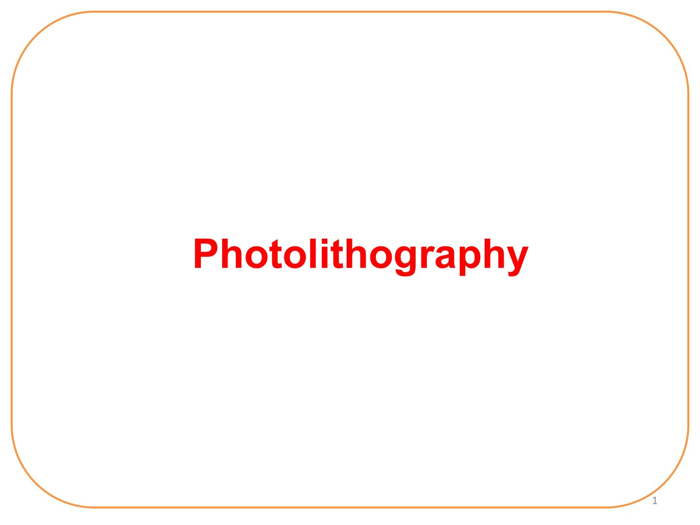
光刻
从掩模版到硅片：旋涂、曝光、显影八步流程，正胶负胶原理与 AZ5214、SU-8 两种代表胶全解析。
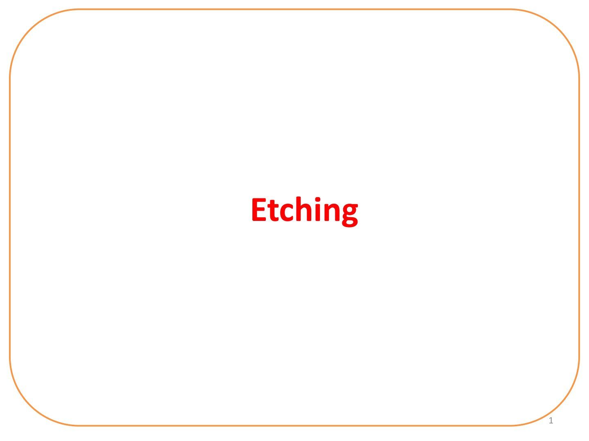
刻蚀
从湿法刻蚀配比到 RIE 各向异性与选择比，串起去什么、用什么去的刻蚀工程框架。
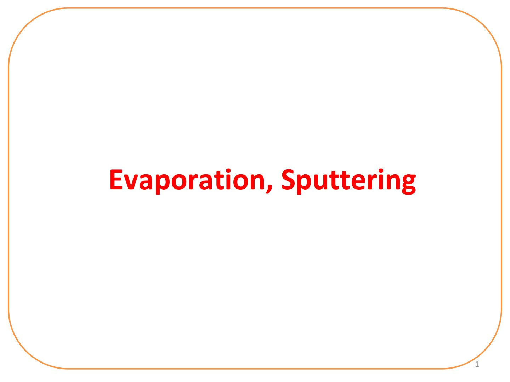
蒸发与溅射
电子束蒸发、坩埚水冷与溅射级联碰撞，讲薄膜如何在真空里镀到衬底上。
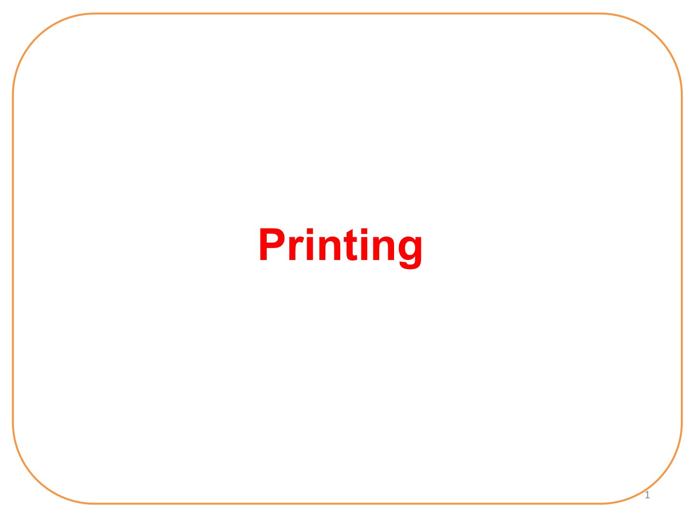
印刷工艺
卷对卷金属电极，丝网、柔版、凹版与喷墨四种印刷的分工边界与选型逻辑。
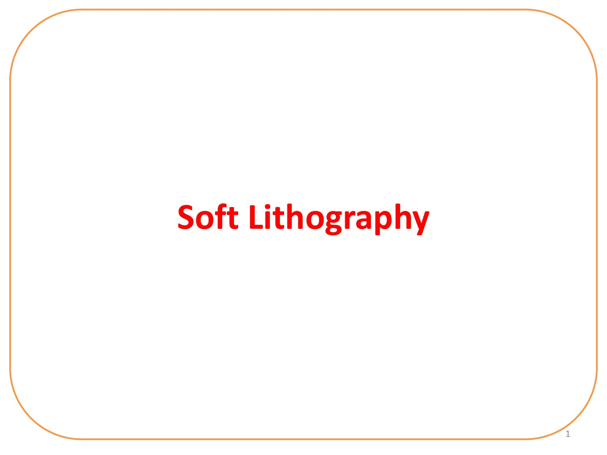
软光刻
PDMS 印章、MIMIC、REM 与微转移成型，软光刻如何低成本复制微纳图案。
硅烷与硫醇
从硅烷偶联四段结构与湿法/干法成膜，到硫醇在金表面自组装修饰 AFM 探针。
传感与生物
把「分子来了」翻译成可测的信号：化学传感器、电化学传感器、生物受体，掌握三大识别与信号转导原理。
电学测量仪器
认识实验室里的「电学五官」：从电源、信号源到万用表、示波器、频谱与网络分析仪，把每一台仪器放进同一条可验证的测量链。

电学仪器
巡礼万用表、示波器、网络分析仪、LCR、电源、信号源、SMU 与恒电位仪八类电学仪器的分工与选型。
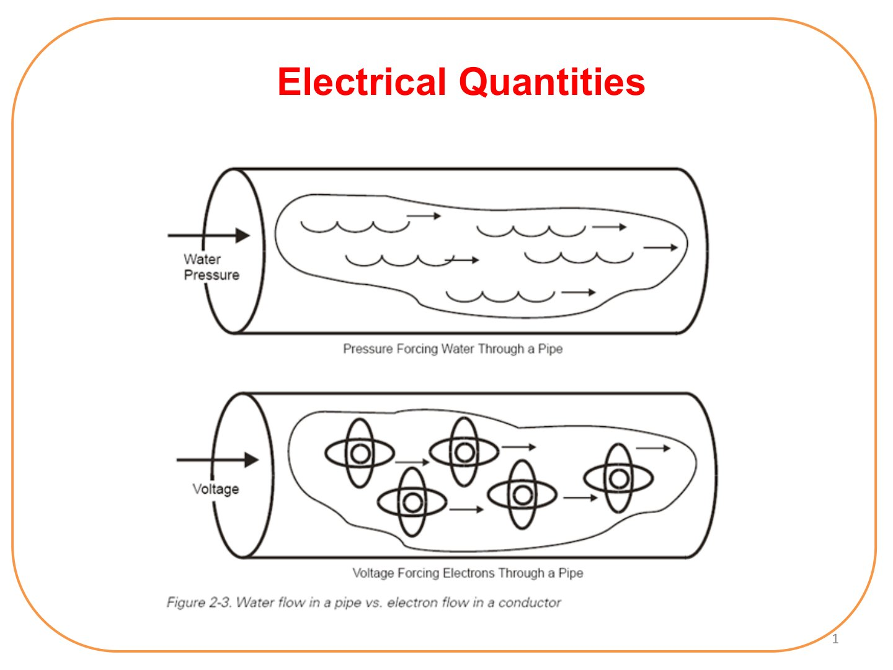
测量理论
从峰值、RMS、平均值与谐波分解，到分贝、负载效应、带宽与上升时间，讲清仪表链路如何加工被测信号。
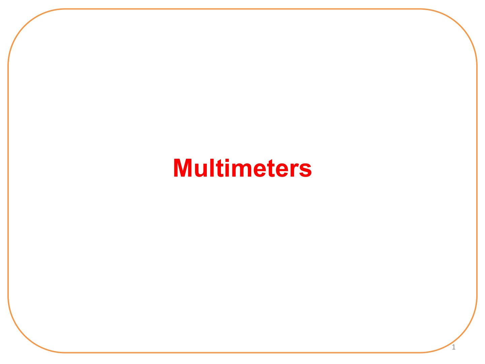
万用表
从电压表电流表欧姆表的改装与加载误差，到平均响应/真有效值、四线开尔文测阻和规格书误差解读。
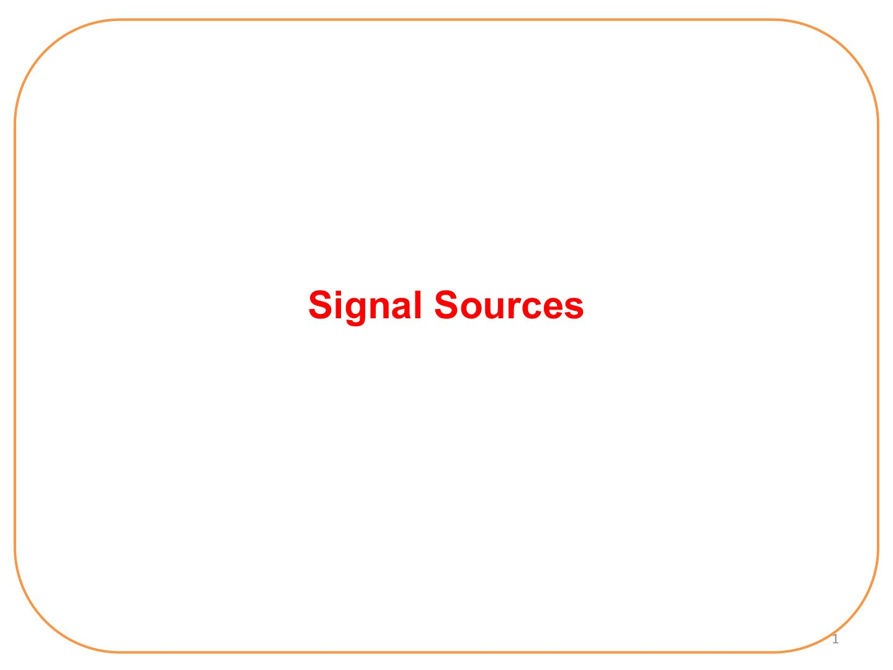
信号源
从理想源串内阻的电路模型与阻抗匹配，到正弦源、函数发生器、AWG、脉冲源与射频源五类仪器的选型。
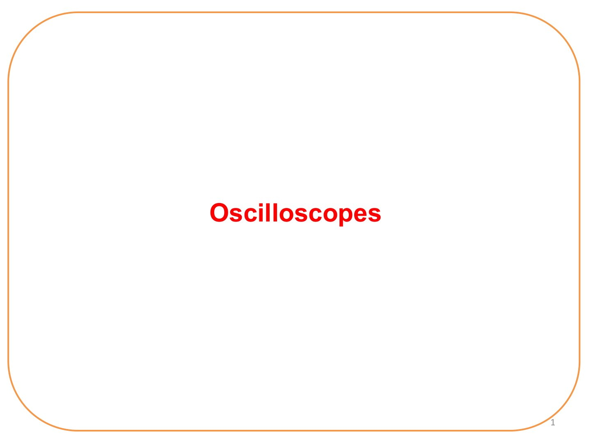
示波器
从模拟垂直放大与锯齿时基，到数字采样、奈奎斯特、触发与探头补偿，讲透示波器指标与波形判读。
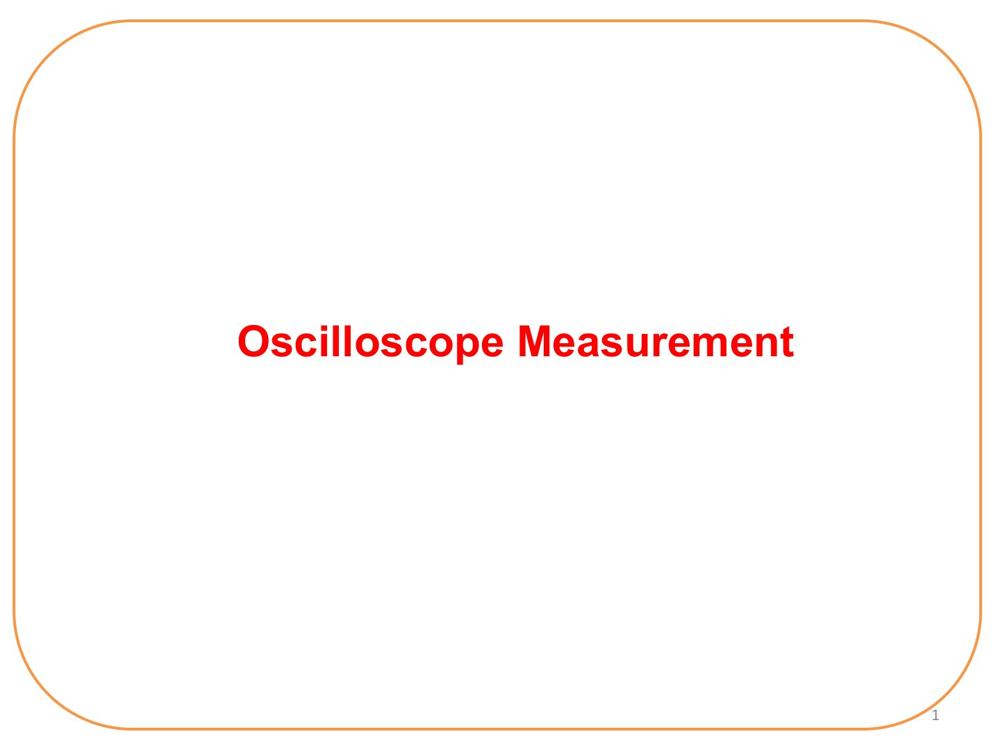
示波器测量
从正弦读屏、增益分贝、相位李萨如图，到频响扫频、FFT 谐波与同轴传输线反射，系统讲示波器测量方法。
电源
从市电变压整流滤波稳压到直流，讲清 CV/CC 自动切换、远端采样补线损与负载/线性调整率规格解读。
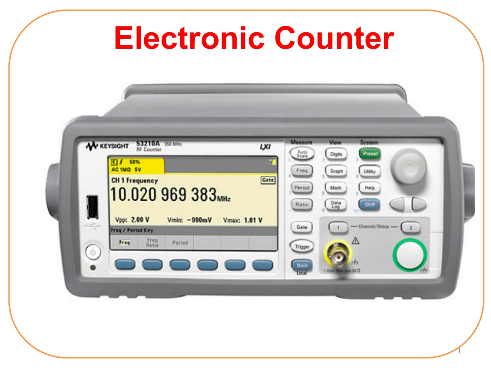
电子计数器
从闸门数周期的 ±1 误差说起，讲分频、周期模式、倒数计数、通用参数测量与时基 ppm 稳定度。
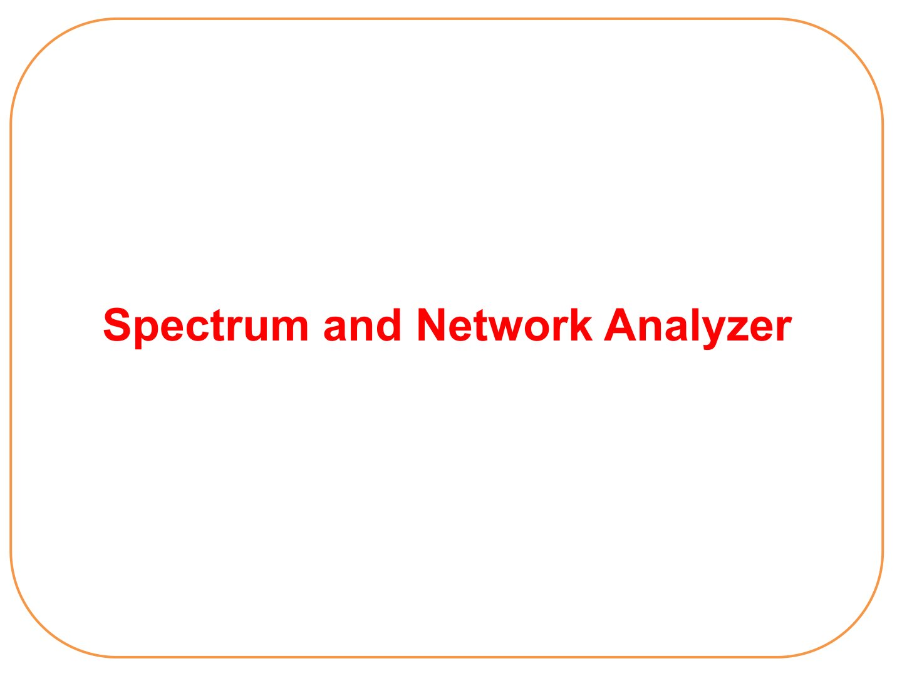
频谱与网络分析仪
从超外差扫频频谱仪（RBW/VBW、谐波与调幅测量）到网络分析仪 S 参数、失真度仪与射频功率计。
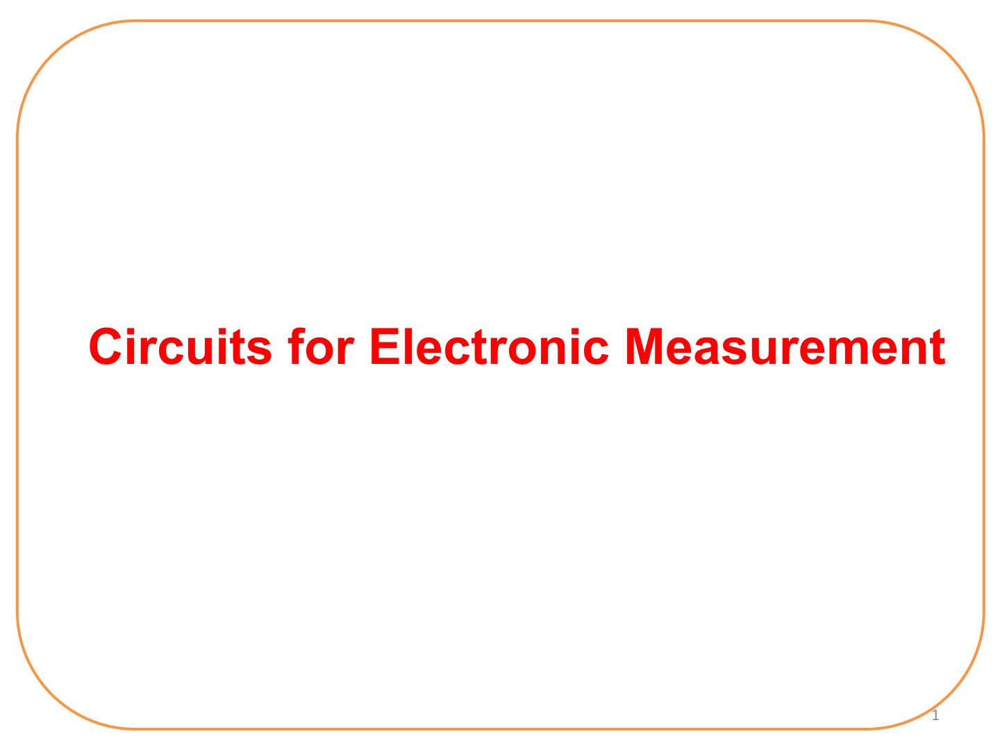
电子测量电路
从输入输出电阻、电桥与一阶电路阶跃响应，到分压器/T 型衰减器、功率分配器与高低通滤波器设计。
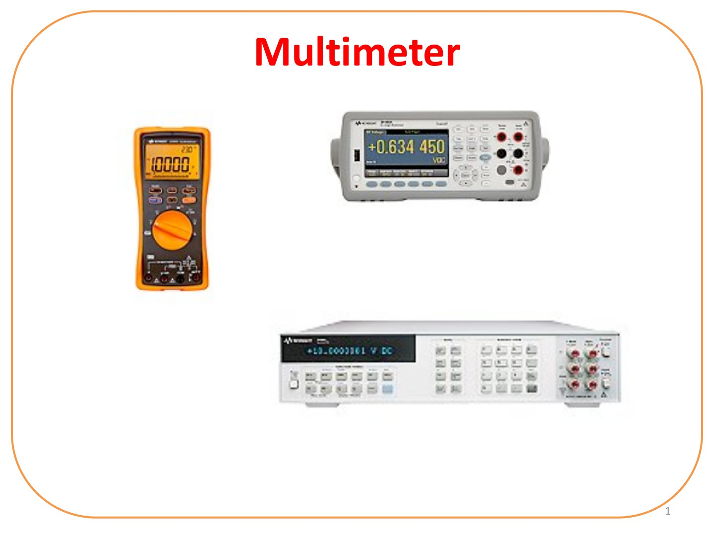
电学测量仪器 · 总览串联
串联万用表、示波器、网络分析仪、LCR、电源、信号源、源表、参数分析仪与恒电位仪九类仪器的选型与测量思维。
同学们，今天这一讲叫 Photolithography，光刻。先把这个词拆开：Photo 是光，lithography 原指石刻版画，合起来就是"用光来刻写"。在微纳制造里，光刻的全部任务可以用一句话概括：把掩模版（mask）上画好的图形，经过感光胶（photoresist）这道"中介"，忠实地转移到硅片（wafer）表面，再由后面的刻蚀（etching）把图形真正做到材料里去。 它是整个半导体和微加工流程的"照相制版"环节：芯片上几十亿个晶体管的位置、导线的走向，第一轮都是靠光刻写上去的。
为什么材料分析这门课要讲光刻？因为你们后面要做的器件——无论是薄膜晶体管、传感器还是微流道——第一步几乎都是"在衬底上造出想要的图形"。而造图形的主流手段就是光刻。理解了光刻，你才明白为什么实验台总是黄黄的、为什么一块硅片要先旋胶再曝光再显影、为什么正胶和负胶图形是反的。这一讲顺着课件的顺序走：先看洁净间和曝光机，再认识硅片与氧化层衬底，然后讲旋涂、光刻胶全套流程、正胶负胶原理、AZ5214 与 SU-8 两种代表胶，最后看极端紫外光源、激光直写和安全事项。
请先记住一条贯穿全篇的主线问题：一幅二维图形，从掩模版上的铬层，如何一步步变成硅片上留着或去掉的光刻胶图案？ 顺着这条线，每一页都在回答链条上的一环：衬底准备好了吗（第 4 至 8 页）？胶怎么均匀铺上去（第 9、10 页）？胶铺好之后要经过哪些热处理和曝光步骤（第 11 页）？曝光区和非曝光区在显影时为什么一个被溶掉、一个留下（第 12 页）？具体胶的成分和工艺参数是什么（第 13、14 页）？厚胶 SU-8 为什么专做 MEMS（第 15、16 页）？更短波长的光和无掩模直写把极限推到哪里（第 17、18 页）？全程的危险点在哪里（第 19 页）？
再给大家一个总纲框架。一次完整的光刻循环（lithography cycle）可以拆成八步：衬底准备（wafer preparation）→ 增粘处理（adhesion promoter）→ 涂胶（resist application，旋涂 spin coating）→ 前烘/软烘（soft bake）→ 曝光（exposure）→ 后烘（post-exposure bake）→ 显影（develop）→ 坚膜烘（hard bake）。第 11 页的流程图把这八步完整画了出来，后面每一页都挂在这八步上。另外要随时区分两个角色：掩模版是"母版"，光刻胶是"相纸"——光穿过母版，在相纸上留下潜像，显影把潜像变成可见的凸起图案，刻蚀再把图案抄到下面的材料上。带着这个"照相"类比听课，所有步骤都不抽象。
还要提前建立一个数字直觉：实验室常规紫外光刻能做到的线宽大约在微米量级，胶厚从几百纳米到 SU-8 的毫米级；旋涂转速约 3000 RPM；i 线波长 365nm；AZ5214 软烘和后烘都是 90 秒、升温速率 60°C/sec 量级，显影温度 20°C。这些数字第 10、14 页会反复出现，先有个印象。
这一页只有居中一个红色标题 Photolithography。开场时先立边界：本讲覆盖实验室常规的紫外接触/接近式光刻，包括旋涂、正胶负胶、AZ5214 与 SU-8，以及配套的洁净间环境与安全；不深入扫描电镜光刻、电子束曝光的工艺细节，那些是后续专门课程。
可以用一个生活类比开场提问："大家想一想，洗照片是怎么把底片上的负像变成相纸上的正像的？"底片挡住光的地方相纸不感光，显影后发白；光刻几乎一模一样：掩模版上不透光的铬块挡住紫外，下面光刻胶不发生化学变化，透光处的胶发生变化，显影时两者一个留下、一个去掉。区别只在于光刻胶被"显影"之后还要扛住刻蚀，所以它既是感光材料又是耐蚀掩蔽层。
这一页还要明确光刻在整个微加工链条中的位置：前面是衬底制备（长氧化层、镀膜），后面是刻蚀（etching）、去胶（stripping）、沉积、掺杂。光刻本身只做出"胶的图案"，真正改变衬底的是后续刻蚀——第 12 页右下角 Etching & Stripping 就是这个位置。把位置感建立好，后面看到每一步都知道它在链条哪一环。
再补一段词源与历史，帮助大家记住这门工艺的来历。lithography 源出希腊语 lithos（石头）与 graphein（书写），原本指十九世纪石版印刷；半导体光刻借用了"在平板上经光转印图案"的思想，只是把石头换成硅片、把油墨换成光刻胶、把印刷机换成对准曝光机。可以把它类比成我们熟悉的胶版印刷：先有一块带图案的版（掩模版），再通过感光介质（光刻胶）把图案翻印到承印物（硅片）上，最后固定下来。理解了这个类比，就明白光刻的核心矛盾一直是两个：一是"转印得多清晰"（分辨率 resolution），二是"转印得多一致"（均匀性 uniformity、对准精度 overlay）。前者由波长、数值孔径决定，后者由设备稳定性和工艺控制决定。课堂上可以追问一句："为什么不直接在硅片上刻图，而要绕一道光刻胶？"答案是胶作为可涂覆、可感光的临时掩蔽层，把"图形化"和"真正刻蚀材料"两件事分开，既灵活又便于复制，这正是整套微制造能够批量的基础。
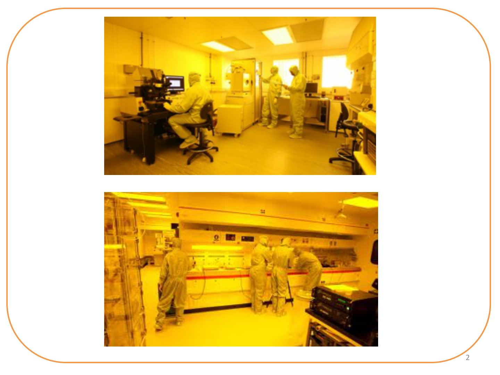
这一页是两张洁净间（cleanroom）实拍：上图三位穿全套防护服的人员在曝光机和操作台边工作，下图一排人员在湿法台前操作，整个房间笼罩在黄色灯光里。先讲为什么房间是黄的：常规光刻胶对紫外光敏感，对黄光（长波可见光）不敏感，所以洁净间用黄光照明（yellow light / safe light），避免胶在使用中被环境光提前曝光。 这是走进光刻间第一个要适应的视觉特征。
再讲防护服（bunny suit，洁净服）：连体服、帽、口罩、手套全覆盖，目的不是保护人不被脏，而是保证人身上脱落的皮屑、毛发、粉尘不掉到硅片上。芯片图形是微米纳米级，一颗灰尘落在胶面上就是一个缺陷点（defect），所以洁净间按空气洁净度分级（百级、千级、万级），空气经过高效过滤，人员动作也要轻缓。
补充实操纪律：进洁净间要按顺序穿服、穿鞋套、过风淋；出来时同样脱卸；食物饮料禁止入内；操作硅片只能拿边缘、用镊子夹，手指绝不触碰胶面。这些规矩第 19 页安全事项之外，属于洁净行为规范，第一次进间前由当班人员现场培训。
再展开讲洁净度分级与空气组织，这是理解"为什么到处是滤网"的关键。洁净间按每立方英尺空气中大于 0.5 微米颗粒的数量分级，例如百级、千级、万级，数字越小越干净；光刻曝光区通常要求最高等级，因为一个尘埃落在胶面上就会挡住光或顶起胶膜，造成针孔、断线等缺陷。房间顶部铺满高效粒子空气过滤器（HEPA），送出层层下降的层流（laminar flow），把颗粒往下压、经回风带走，人员和设备都是污染源，所以动作要慢、说话要少。除了颗粒，洁净间还要控制静电（ESD）：人体带的静电足以击穿薄栅氧化层，所以地面、台面接地，操作人员戴接地腕带；温湿度也要稳定，湿度太低易起静电、太高胶吸水挥发慢，通常控制在室温附近、相对湿度四五十个百分点。画面里黄光不仅是安全照明，也因为白光中的紫外成分会让胶慢曝光，整间只用长波黄光，胶在间内停留多久都不怕。
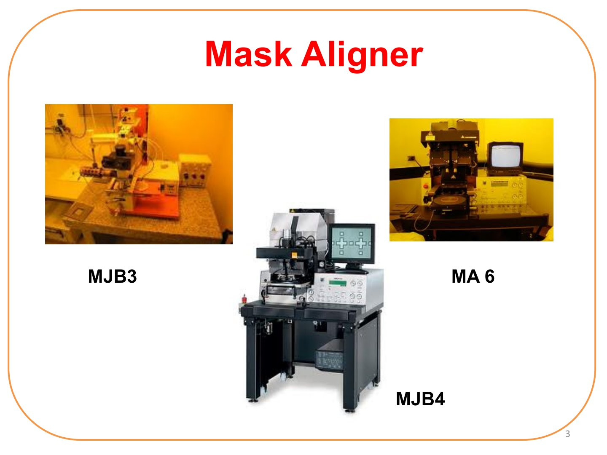
这一页标题 Mask Aligner，掩模对准机，画面给出三台设备：左 MJB3，中 MJB4，右 MA6。这是光刻的核心曝光设备，任务是把掩模版与已经涂好胶的硅片精确对准，再用紫外光曝光。
先讲"对准"为什么重要。多层芯片要做几十层图形，第二层必须和第一层在微米级重合，否则上下层导线对不上、器件失效。Mask Aligner 上有显微镜和对准标记（alignment mark），先把掩模版和硅片的标记套准，再下降贴近或靠近曝光。接触式（contact）是掩模直接贴在胶面上，分辨率高但易沾污损伤掩模；接近式（proximity）留几微米间隙，保护掩模但分辨率略降；投影式另说。
三台设备都是市面上常见的型号：MJB3、MJB4 是 Karl Suss 系列的经典手动/半自动接触光刻机，MA6 也是 Suss 的对准曝光平台。课件只给照片不展开参数，讲解时让学生建立"这台机器负责对准+曝光"的功能印象即可，具体操作流程以本实验室对应机型的 SOP 为准。画面中 MJB4 屏幕上显示的十字对准标记，就是套准时目镜里看到的对准图形。
把曝光方式再讲细一点，这是 Mask Aligner 的核心知识。接触式曝光（contact printing）让掩模版与胶面直接贴合，光几乎不扩散，分辨率最好，能到亚微米，但反复贴合会磨损铬层、把胶沾到掩模上，掩模寿命短。接近式曝光（proximity）在掩模与片子之间留十几到几十微米间隙，保护掩模，但光在间隙里衍射，分辨率略降。投影式则用透镜把掩模图案缩小投到片上，掩模可以做得比片子大、损伤小，是量产路线。实验室教学多用接触/接近式。对准靠的是掩模和片子上预先做好的标记（十字、方框套准 mark），显微镜下把两层标记重合，误差控制在微米以内。曝光剂量（exposure dose）是单位面积接收的光能，单位毫焦每平方厘米，由光强乘时间决定；剂量不足胶没反应透、显影发黏，过量则线条膨胀，必须按胶的推荐值试出最佳剂量。光源常用汞灯，发出 g 线 436nm、h 线 405nm、i 线 365nm 三条谱线，AZ5214 这类 i 线胶主要吸收 365nm。
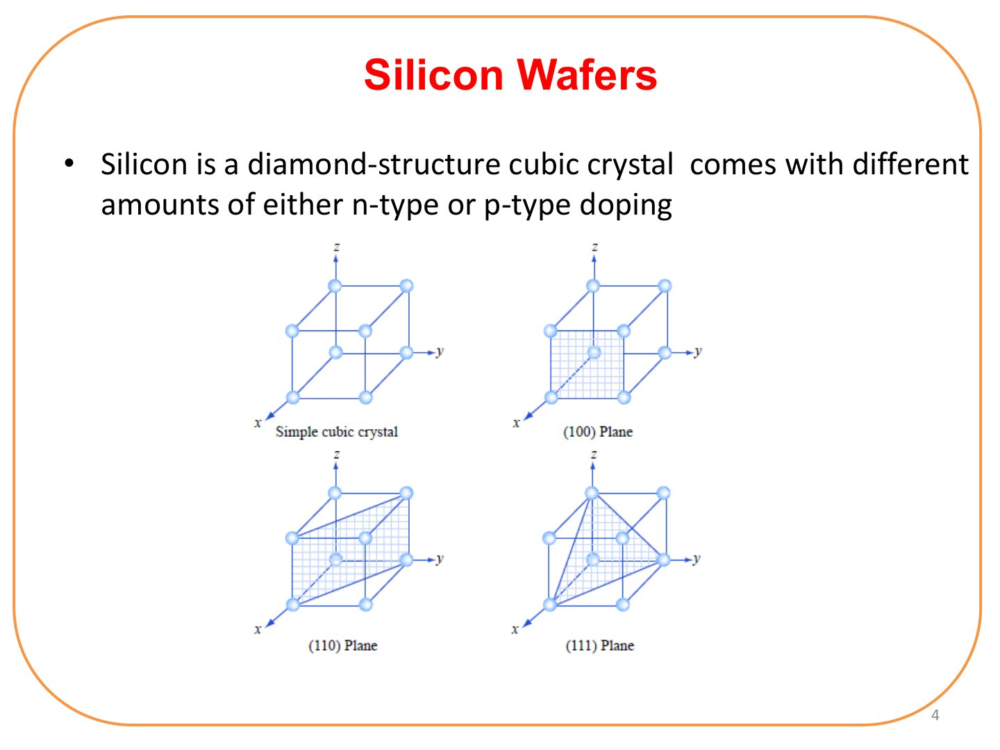
这一页标题 Silicon Wafers，硅片。正文第一条：Silicon is a diamond-structure cubic crystal, comes with different amounts of either n-type or p-type doping，硅是金刚石结构立方晶体，提供不同浓度的 n 型或 p 型掺杂。下方四张小图依次是 Simple cubic crystal 简单立方晶胞、(100) Plane、(110) Plane、(111) Plane 三个晶面在坐标系中的截切位置。
先讲掺杂（doping）：纯硅本征半导体导电能力弱，掺入微量施主杂质（如磷、砷）成为 n 型（电子导电），掺入受主杂质（如硼）成为 p 型（空穴导电）。掺杂浓度决定衬底电阻率，买硅片时规格书会写明类型（n/p）、电阻率、晶向、厚度。
再讲晶面（crystal plane）。硅是金刚石结构，但示意图先以立方格子展示取向：(100) 面平行于一个坐标轴切过，(110) 沿面对角方向，(111) 沿体对角。不同晶面原子排列密度不同，导致各向异性刻蚀速率不同——后面湿法刻蚀经常利用 (100)、(110) 的选择性。买片子必须指定晶向，因为器件工艺（如 MOS 沟道）和刻蚀行为都依赖它。
课堂提问："为什么同样是硅，切(100)和切(111)面价格、用途都不同？"因为晶体各向异性，晶片暴露的表面原子排布不同，氧化速率、刻蚀速率、表面态都有差别，工艺必须配套。
再补一段晶体与衬底规格的实用知识。金刚石结构里每个硅原子与四个邻居成键，形成四面体网络；拉晶得到单晶硅棒后，按指定晶向切片、倒角、研磨、化学机械抛光，才得到镜面片。买片时规格书要同时写清四件事：晶向（如 (100)）、掺杂类型 n 或 p、电阻率（由掺杂浓度决定，从零点几到几十 Ω·cm 不等）、厚度与直径。电阻率为什么重要？因为它决定衬底本身是导电还是绝缘背景，做器件时衬底是否需要接地隔离都由此而来。(100) 面因为表面态低、氧化层质量好，是 MOS 器件最常用的取向；(111) 面原子密度高、刻蚀行为不同，用于某些特殊结构；(110) 面湿法各向异性刻蚀快，常用来做高深宽比沟槽。理解这一页，就是建立"硅片不是一块随便的玻璃，而是有取向、有掺杂、有电阻率规格的晶体"这一认识，后面所有工艺都建立在这块规格明确的衬底上。
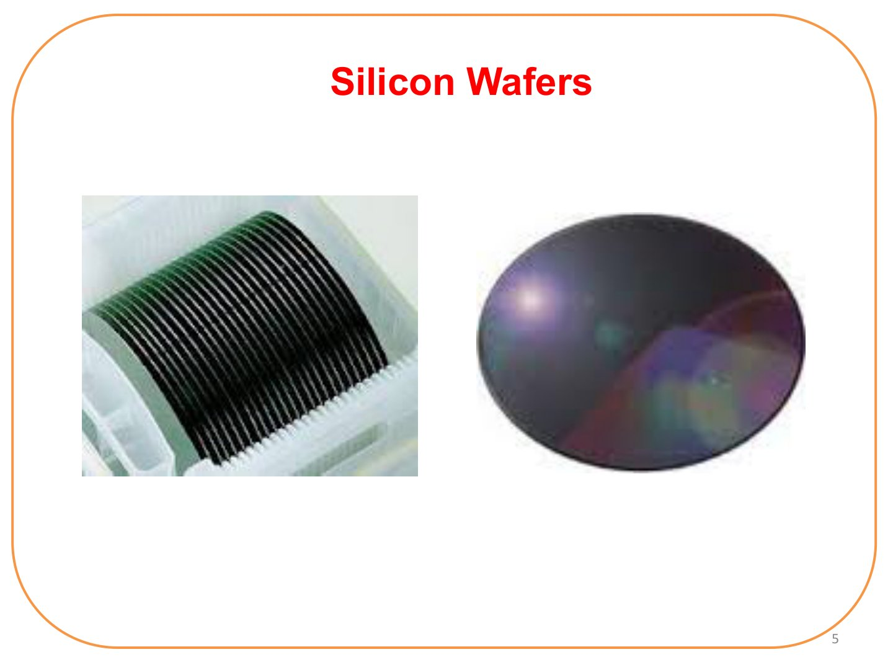
这一页标题仍是 Silicon Wafers，左图是一叠插在片盒（cassette）里的硅片，右图是一片抛光好的圆形镜面硅片，表面因干涉泛出蓝紫光泽。
讲硅片制造的量级印象：单晶硅棒拉制后切片、研磨、抛光成镜面（polished wafer），直径从实验室常用的 2 英寸、3 英寸到产线 12 英寸；厚度约几百微米，正面镜面抛光、背面可磨砂。片盒里一片片竖直插放，取片用专用镊子，避免手碰正面。
右图表面的蓝紫色不是染色，而是光在硅表面反射形成的干涉色：硅本身有氧化层或反射相位差，不同波长干涉加强，观察角度不同颜色会变，和第 6、7 页氧化层颜色是同一套物理。这一页先让学生建立"硅片是又薄又脆的圆形镜面"的实物感，拿片、放片都要轻拿轻放，碎裂在洁净间里很难清理。
补充实物规格与拿片规范。实验室常见直径 2、3、4 英寸，量产线 6、8、12 英寸；厚度随直径增加，2 英寸约三百多微米，12 英寸约七百多微米，又薄又脆，受力就裂。圆边上有一个小平边（flat）或一个小缺口（notch），用来标示晶向和定位，拿片、装片时缺口方向要统一，否则对准和坐标全乱。片盒（cassette）里片子等距竖直插放，取用只能用不锈钢或塑料镊子夹边缘，手指绝不碰正面镜面——皮肤上的油脂和盐分沾上去，后续旋胶会出现缩孔、附着力差。储存时片子放在干燥片盒或氮气柜，避免水汽和灰尘落在镜面。观察片子要在黄光或柔和光下，不要用强光直射后立刻进曝光流程。这些看似琐碎的习惯，直接决定胶能不能均匀铺开。
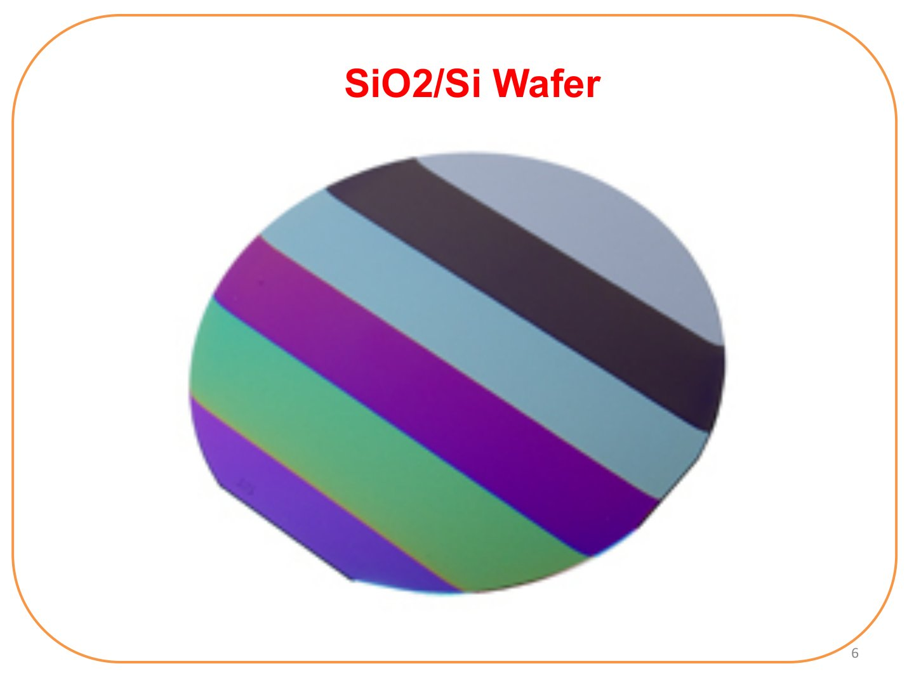
这一页标题 SiO2/Si Wafer，画面是一片表面分出多条彩色斜带的硅片，颜色从深蓝、紫、绿到浅蓝、黑褐交替。这是在硅上热生长一层二氧化硅（silicon dioxide，SiO₂）后的片子，彩色条纹是氧化层厚度不均造成的薄膜干涉色。
讲原理：白光入射，一部分从氧化层上表面反射，一部分穿过氧化层在 Si/SiO₂ 界面反射，两束光叠加；当光程差（约等于 2×n×d，d 为膜厚）等于某波长整数倍时该波长相长加强，肉眼就看到对应颜色。膜厚不同，干涉加强的波长不同，颜色就不同；同一炉片上厚度略有差异，就呈现出一条条彩色带。
这页的实用价值：实验中可以凭颜色粗估氧化层厚度，精确值则靠第 7 页的色卡对照表或椭偏仪（ellipsometer）、台阶仪测量。要提醒：颜色估厚只在标准白光、标准观察角度下有效，粗看可以，定量不能靠眼睛。
把干涉的定量关系讲透。白光从空气进入 SiO₂，第一束在空气/SiO₂ 上表面反射，第二束穿过厚度 d、折射率 n 的氧化层，在 SiO₂/Si 界面反射后穿出，两束光的光程差约为 2nd（往返），再加上界面反射可能带来的半波损失。当 2nd 等于某波长整数倍时该波长相长加强，肉眼看到它的颜色；等于半整数倍时相消减弱。膜厚连续变化，加强波长也连续移动，于是同一片上出现从蓝到红的彩色条纹，每一条带对应一个厚度区间。为什么硅片上氧化层能显色而裸硅不显色？因为裸硅没有中间透明层提供第二束反射光。这套干涉原理同样解释第 5 页裸硅片的蓝紫反光和光刻胶膜厚的光学测量，是薄膜光学的入门图像。
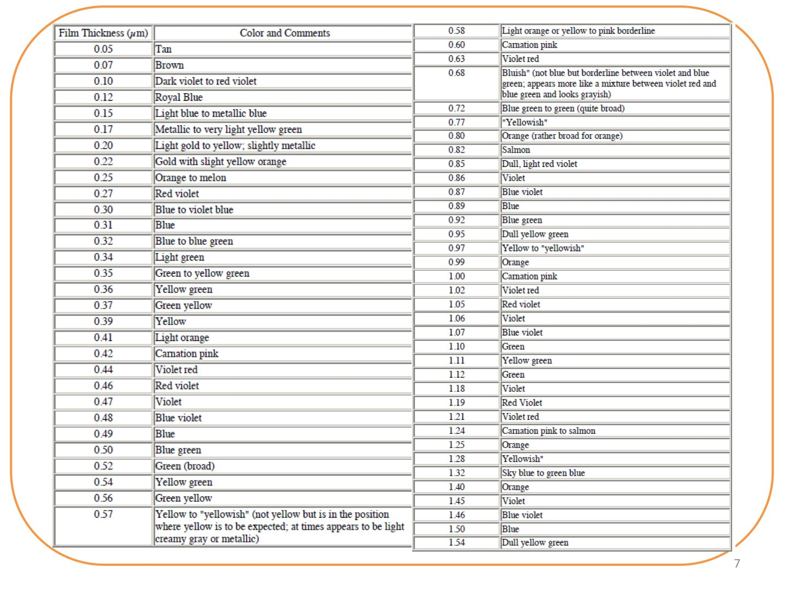
这一页是一张大表：左列 Film Thickness (µm) 膜厚，从 0.05 一直排到 1.54 微米；中列 Color and Comments 颜色与说明；右侧延续 0.58 到 1.54 的厚度行。逐档读几个代表值建立量级：0.05µm Tan 棕褐色；0.10 Dark violet to red violet 深紫到红紫；0.12 Royal Blue 宝蓝；0.20 Light gold to yellow 浅金到黄；0.25 Orange to melon 橙到瓜色；0.30 Blue to violet blue 蓝到紫蓝；0.36 Yellow green 黄绿；0.42 Carnation pink 康乃馨粉；0.50 Blue green 蓝绿；0.57 Yellow to yellowish；0.68 Bluish（violet/blue green 之间的混合）；0.80 Orange；1.00 Carnation pink；1.25 Orange；1.40 Sky blue to green blue；1.50 Blue。
这张表怎么用：拿到氧化片先在白光下肉眼对颜色，查最近一档得到膜厚粗值，注意颜色会随厚度周期性重复（干涉级次循环），所以要结合生长条件判断是第几级，不能只看颜色就下结论。表中"quite broad""yellowish""grayish"等注释说明有些颜色区间宽、边界模糊，正是肉眼估厚误差大的地方。定量测量永远以椭偏仪/反射仪为准，色卡只是现场快速判断。
再带大家读几档关键厚度，建立量级感。0.05µm（50nm）呈棕褐 Tan，是很薄的氧化层；0.12µm 宝蓝 Royal Blue；0.20µm 浅金 Light gold；0.27µm 红紫 Red violet；0.36µm 黄绿 Yellow green；0.42µm 康乃馨粉；0.50µm 蓝绿；到 0.57µm 进入第二个颜色循环，0.68µm 又回到偏蓝紫，1.00µm 再次出现康乃馨粉，1.25µm 橙，1.50µm 蓝。可以看到同一颜色在表里出现多次，这就是干涉级次重复：膜厚每增加约半个加强波长，颜色轮一圈。所以查色卡必须知道大概生长厚度区间，否则把第二级的粉当成第一级的粉，误差能到一倍。定量手段上，椭偏仪测偏振光反射变化反推 n 和 d，精度到纳米；台阶仪（profilometer）用探针扫过膜边测高度；反射光谱仪比对各波长反射峰。色卡只用于炉前炉后快速判断厚度趋势。
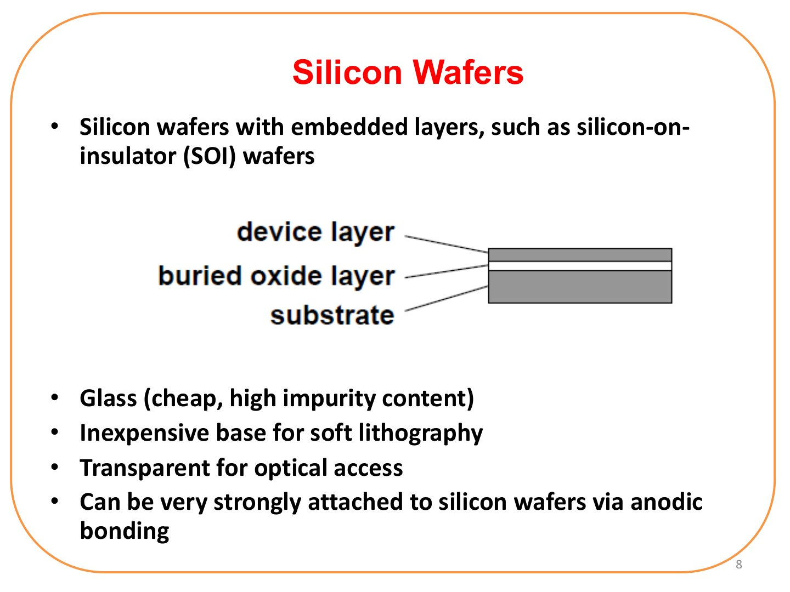
这一页标题 Silicon Wafers，上半讲带埋层的硅片：Silicon wafers with embedded layers, such as silicon-on-insulator (SOI) wafers，带嵌入层的硅片，如绝缘体上硅（SOI）；剖面图标出三层：device layer 器件层、buried oxide layer 埋氧层、substrate 衬底。下半讲玻璃（Glass）四条：cheap, high impurity content 便宜、杂质含量高；Inexpensive base for soft lithography 是软光刻的廉价基底；Transparent for optical access 透明、便于光学观测；Can be very strongly attached to silicon wafers via anodic bonding 可通过阳极键合（anodic bonding）与硅片牢固接合。
SOI 三层结构从顶到底：最薄的器件层用来做晶体管，中间埋氧层把器件与衬底电隔离，底部厚衬底提供机械支撑。SOI 减少漏电流、抑制闩锁，是高端器件结构，这里只需认识分层。
玻璃衬底用于教学和软光刻（soft lithography，如 PDMS 模塑）：便宜、透光，可以从背面显微对准和观察，这是硅片做不到的；杂质高所以不做高性能硅器件，只当载体。阳极键合是硅与玻璃在高温高压电场下直接封接的技术，常用于封微腔、流体通道。课堂提问："为什么软光刻喜欢用玻璃而不是硅？"因为透明才能从背面看图案、透光做紫外固化，且成本低。
把 SOI 再讲透一层。普通硅器件的衬底与器件之间没有隔离，会产生寄生电容、漏电流和闩锁；SOI 中间那层埋氧（buried oxide，通常是 SiO₂）把顶部器件层与底部衬底彻底电隔离，器件做在很薄的器件层上，速度快、功耗低、抗辐照。三层从顶到底：器件层（最薄，做晶体管）、埋氧层（隔离）、衬底（厚，提供机械支撑）。SOI 常用键合加背面减薄制造，成本高于普通片，只在高性能场合用。玻璃这边，课件四条要点对应四种用途：便宜且杂质高，所以只做载体不做器件；是软光刻的廉价基底，PDMS 倒模、微流道浇铸都铺在玻璃上；透明让光学 access 成为可能，紫外固化、显微观测、荧光激发都从背面走；阳极键合在约几百摄氏度、数百伏电场下让钠玻璃中的钠离子迁移，与硅界面形成牢固封接，无需胶黏剂，密封可靠，是封装微腔和流体芯片的常用手段。
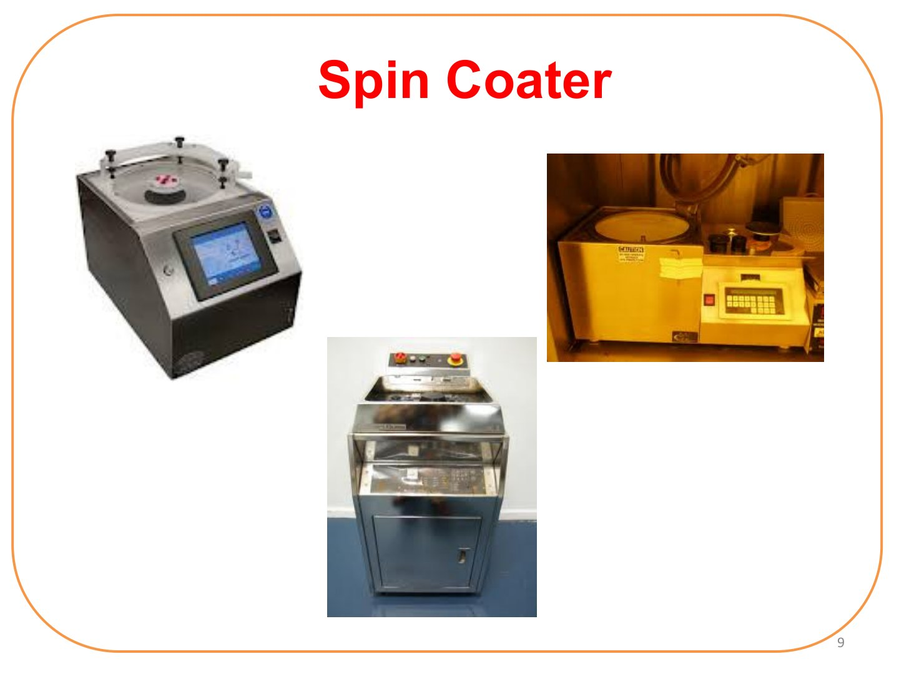
这一页标题 Spin Coater，旋涂仪，画面是三台不同机型的实拍：左上一台带触摸屏的小型台式匀胶机，右下一台落地式不锈钢湿法柜体，右侧黄光柜内一台。旋涂仪的功能是把滴在片中心的胶液靠离心力甩开，在整片上形成厚度均匀的薄膜。
先讲设备构成：中央真空吸盘（chuck）吸住硅片，高速旋转；内腔收集甩出去的废液；有的带盖板防止溶剂飞溅和气流扰动。真空吸附保证片子旋转中不飞脱、不偏心。第 10 页给出典型工艺参数 ~3000 RPM，转速是决定胶厚的第一要素：转速越高、胶越稀，膜越薄。
这一页只认设备，操作细节留给 SOP：滴胶量要覆盖整片中心、启动程序后再开盖、废胶排入指定溶剂瓶。旋涂是整个光刻里产生溶剂挥发最多的一步，通风和个人防护必须到位（第 19 页 B 项溶剂危害）。
再讲设备内部构造与工艺变量。旋涂仪核心是一个真空吸盘（vacuum chuck），开负压把片子牢牢吸在中心轴上，旋转中片子不打滑、不偏心；周围是不锈钢钟罩或敞口盆，接住被离心力甩出的废胶并导流到废液瓶；面板可编程设置多段转速和加速曲线。决定膜厚的变量有四个：胶的固含量与黏度、滴胶量、最高转速、每段保持时间。转速是最容易调的旋钮：转速越高，离心力把胶甩得越薄，膜厚大致随转速升高而下降。实验室程序常常不是一段高速到底，而是先低速匀开、再高速甩薄、最后低速收边，配合溶剂挥发节奏。还要提到边缘珠边（edge bead）：片子圆周处胶堆积偏厚，后续可通过靠边甩胶或专用去边步骤改善。设备必须盖好防护罩再启动，第 19 页 I 项的抛射风险就来自高速旋转中未吸牢的片子或碎片。
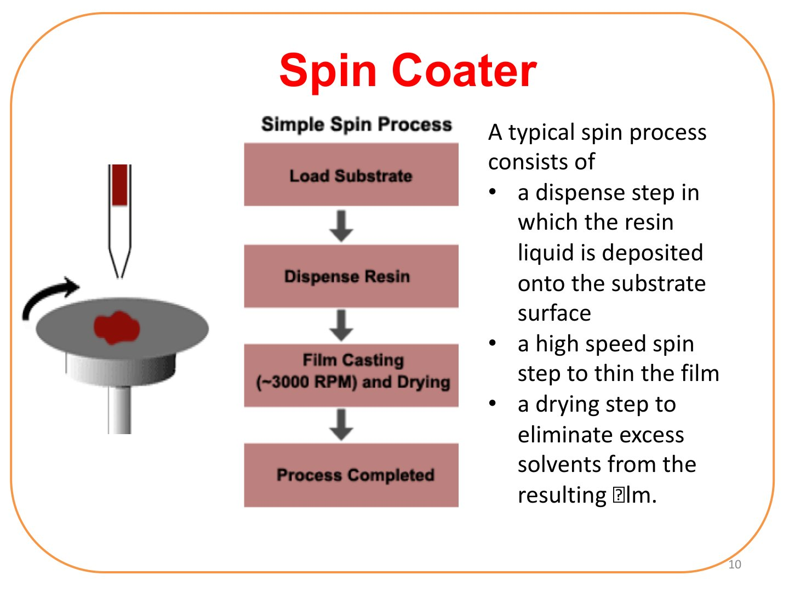
这一页标题 Spin Coater，左侧是滴胶甩膜示意图（针头在旋转吸盘上方滴下红色胶液），中间 Simple Spin Process 简单旋涂流程四步框：Load Substrate 装载衬底 → Dispense Resin 滴加胶液 → Film Casting (~3000 RPM) and Drying 成膜（约 3000 转/分）并干燥 → Process Completed 完成。右侧文字 A typical spin process consists of：a dispense step in which the resin liquid is deposited onto the substrate surface 滴加步骤，胶液沉积到衬底表面；a high speed spin step to thin the film 高速旋转使膜变薄；a drying step to eliminate excess solvents from the resulting film 干燥步骤除去膜中多余溶剂。
按四步讲。第一步装片：吸盘真空吸牢，对位居中。第二步滴胶：静止或低速时把足量胶滴在中心，量要够整片覆盖，太少会甩出条纹（radial streaks）。第三步高速甩胶（~3000 RPM）：离心力把胶向四周摊开，同时溶剂快速挥发，膜厚由转速、胶黏度、固含量共同决定。第四步干燥：低速或持续旋转让剩余溶剂逸出，得到均匀凝胶膜。
补充厚度直觉：同一支胶，转速翻倍膜厚大约按反比根号关系下降；想做更厚的膜就降转速或换更黏的胶。旋涂的固有缺点是边缘厚（edge bead，珠边）、大面积厚度不均，实验室小片子影响不大。第 11 页的 Resist Application 就是这一步，旋完立刻进入软烘。
再把成膜的物理过程讲细。滴在静止片上的胶是一团含溶剂的黏稠液体；进入高速段后，离心力沿径向把液膜向外拖，膜越拖越薄，同时溶剂不断从液面挥发，黏度随之上升，当挥发把膜"锁"住，厚度就稳定下来。整个过程分两个竞争：流体被甩薄，溶剂挥发增稠，最终膜厚是两者平衡的结果。所以同样 3000 RPM，换一支更稀的胶膜就更薄，多滴一滴胶短时间内厚度变化不大但均匀区可能变大。程序上常见三段：低速（如 500 RPM 数秒）让胶自然铺满整片；高速（~3000 RPM 二三十秒）甩到目标厚度；末段低速或继续旋转让溶剂均匀逸出。旋完的膜是含残余溶剂的凝胶状态，还不能直接曝光，必须经第 11 页软烘把多余溶剂赶走，否则曝光时溶剂继续挥发会导致膜收缩、线条变形。记录工艺时要把转速、时间、滴胶量、环境温湿度一起写下，否则换一天重复不出同样厚度。
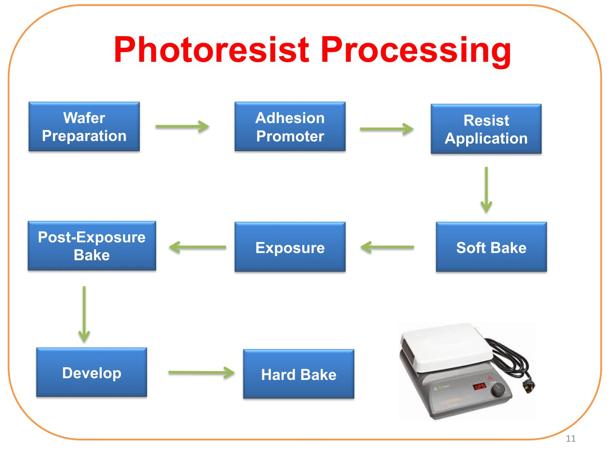
这一页标题 Photoresist Processing，是全课的流程总图，蓝色方框按走向排列：Wafer Preparation 衬底准备 → Adhesion Promoter 增粘剂 → Resist Application 涂胶 → Soft Bake 软烘 → Exposure 曝光 → Post-Exposure Bake 后烘 → Develop 显影 → Hard Bake 坚膜烘；右下角配一张加热板（hotplate）照片。按顺序讲每一步的目的：
- Wafer Preparation 衬底准备：清洗、脱水，表面干净干燥，胶才粘得牢。
- Adhesion Promoter 增粘剂：常用 HMDS（六甲基二硅氮烷），在表面形成疏水单分子层，提高胶与衬底附着力，防止显影时起皮脱落。
- Resist Application 涂胶：就是第 9、10 页的旋涂。
- Soft Bake 软烘（前烘）：涂胶后低温加热（AZ5214 为 90°C 量级，第 14 页），挥发光胶中剩余溶剂，让膜固化、增强附着力；注意软烘过度会降低胶的感光灵敏度。
- Exposure 曝光：紫外（或电子束、X 射线、离子，见第 12 页）穿过掩模版，使透光区胶发生化学反应（正胶变可溶、负胶变交联）。
- Post-Exposure Bake 后烘（PEB）：曝光后再烘一步，促进光化学反应完成、扩散酸（化学放大胶尤其需要）、消除驻波效应。
- Develop 显影：把可溶区用显影液溶掉，留下图案。
- Hard Bake 坚膜烘：显影后较高温度烘烤，彻底固化残余溶剂、让胶膜变硬变密，准备承受后续刻蚀。
这张图要让学生能默画八步顺序，它是第 12 页正负胶、第 13、14 页参数的总纲。
再补充每一步的常见失误，帮助大家把流程和缺陷对应起来。衬底准备不到位、表面有油污或水汽，胶会缩孔、整片发花；跳过增粘剂 HMDS，显影时胶从边缘翘起、成片剥落；软烘不足，残留溶剂多，胶膜发黏、曝光灵敏度漂移；软烘过度，PAC 提前分解，胶变难溶、显影不净；曝光剂量偏差，线条要么显不出来要么膨胀变粗；后烘温度不均会造成驻波和侧蚀；显影时间过长正胶线条被侧蚀变细，过短则留膜残胶；坚膜不足，胶在刻蚀中脱落、失去掩蔽作用。把每一步和它对应的缺陷连起来，学生遇到片子出问题时就能倒推是哪一步失控。还要强调顺序不可逆：涂完胶必须先软烘再曝光，曝光后必须显影，不能跳步；每一步的温度、时间、环境都要记录，光刻本质上是一系列热过程与光过程的精确配合。右下角加热板（hotplate）就是软烘、后烘、坚膜共用的设备，区别只在温度高低和时间长短。
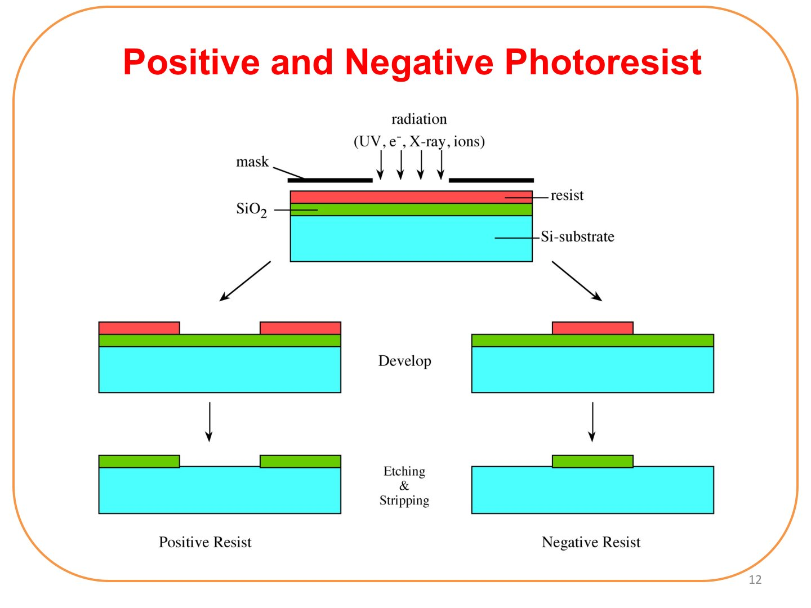
这一页标题 Positive and Negative Photoresist，正性与负性光刻胶。剖面自上而下：mask 掩模版、radiation 辐射（UV, e⁻, X-ray, ions，紫外、电子束、X 射线、离子）、resist 胶层、SiO₂、Si-substrate 硅衬底；经 Develop 显影后分成左右两支：左 Positive Resist 正胶，右 Negative Resist 负胶；再经 Etching & Stripping 刻蚀与去胶。
先讲结构：衬底硅上长 SiO₂，胶涂在 SiO₂ 上，掩模版在胶上方，光从上方照下。
正胶（Positive Resist，左支）：被光照到的区域发生光解、变得可溶于显影液，显影后透光处的胶被去掉，露出下面的 SiO₂；图案与掩模版上的透光区一致——掩模上开洞，胶上也开洞。刻蚀时没有胶保护的 SiO₂ 被蚀掉。
负胶（Negative Resist，右支）：被光照到的区域发生交联（cross-link），变得不溶，显影后透光处的胶反而留下，未照光的被溶掉；图案与掩模互补——掩模上挡住的地方，胶留下。
一句话记忆：正胶"见光就溶、和掩模同形"，负胶"见光就留、和掩模反形"。 正胶分辨率高、线条不膨胀，是主流；负胶交联后膜厚会膨胀、分辨率低，但附着力强、耐刻蚀，SU-8 就是负胶（第 15 页）。右下角 Etching & Stripping 提醒：胶只是临时掩蔽，刻蚀完成后还要把胶去掉（stripping），不能留在器件里。
把选择逻辑再讲清楚。做同一块图案，选正胶还是负胶，直接决定掩模版怎么画：正胶同形，掩模上开窗的地方片子上开窗；负胶反形，掩模上开窗的地方片子上留胶，设计掩模时必须先确定胶性，否则图形整张颠倒。性能上，正胶曝光区是化学分解溶解，无交联膨胀，侧壁陡、分辨率高，适合细线条；负胶靠交联聚合，曝光区吸水膨胀、线条变粗，分辨率吃亏，但交联网络致密、附着力强、抗刻蚀能力好，适合厚膜和需要强掩蔽的场合。刻蚀与去胶的位置也要讲：胶图做好后，未被胶盖住的 SiO₂ 或薄膜被刻蚀液/等离子去掉，图案抄到材料上；最后用溶剂、氧等离子或专用去胶液把残留胶剥离（stripping），露出成品。辐射方式除了 UV，电子束、X 射线、离子都能引发同样的正/负反应，区别只在波长和穿透能力，原理框架通用。
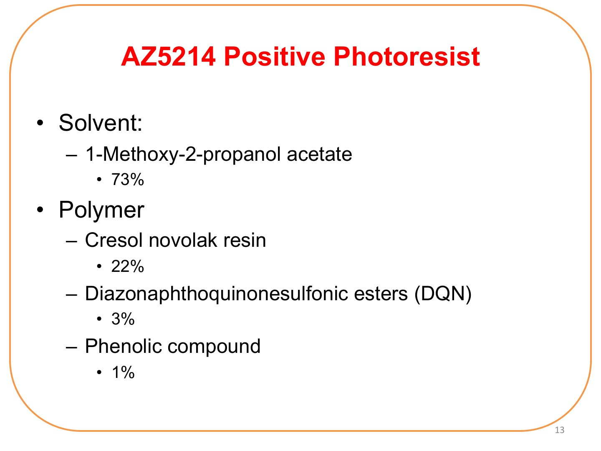
这一页标题 AZ5214 Positive Photoresist，列出配方组成与质量百分比：
- Solvent 溶剂：1-Methoxy-2-propanol acetate，1-甲氧基-2-丙醇醋酸酯（丙二醇甲醚醋酸酯，PGMEA 类），占 73%；
- Polymer 聚合物：Cresol novolak resin 甲酚酚醛树脂，占 22%；
- Diazonaphthoquinonesulfonic esters (DQN) 重氮萘醌磺酸酯，感光剂，占 3%；
- Phenolic compound 酚类化合物，占 1%。
逐个讲角色。溶剂占七成三，负责把固体成分溶解、调节黏度，旋涂后挥发，它是第 10 页"干燥除溶剂"的对象。甲酚酚醛树脂（novolak）是成膜主体，本身在碱里可溶，但被感光剂"锁住"。DQN 是光活性化合物（PAC）：未曝光时它抑制树脂溶解；紫外曝光后分解并生成羧酸，解除抑制，使曝光区能被碱显影液溶掉——这就是 AZ5214 正性工作的化学核心。酚类化合物 1% 起调节溶解速率、增感作用。
讲清正胶化学链条：未曝光 = PAC 保护树脂 → 碱液不溶；曝光 = PAC 光解产酸 → 树脂可溶 → 显影去掉。理解了这 73/22/3/1 的分工，第 14 页的光学参数和工艺参数就有了落点。
再把化学机制展开一层。甲酚酚醛树脂（novolak）本身是碱可溶的酚醛聚合物，若不加 PAC，旋完一泡碱液整片就掉；DQN 感光剂以分子态分散在树脂中，未曝光时它通过氢键和极性作用"锁住"树脂，让碱液难以渗入溶解。紫外照射后，DQN 发生重排并放出氮气、生成茚酮羧酸，酸性产物使树脂在稀碱显影液（如 AZ300 MIF，第 14 页）中快速溶解；未曝光区仍被锁住，保留下来。这就是正性"曝光区可溶"的分子根源。溶剂 1-甲氧基-2-丙醇醋酸酯占七成三，负责携带固体成分、调节黏度，旋涂后挥发，易燃，操作须远离火源并在通风下进行。酚类化合物 1% 用于微调溶解速率和感光灵敏度。配方比例是厂家保密的核心，学生只需记住四组分角色：溶剂成膜载体、树脂成膜主体、PAC 感光开关、添加剂调性能。胶开封后有保质期，避光冷藏，回温后再开盖，防止水汽凝结进胶。
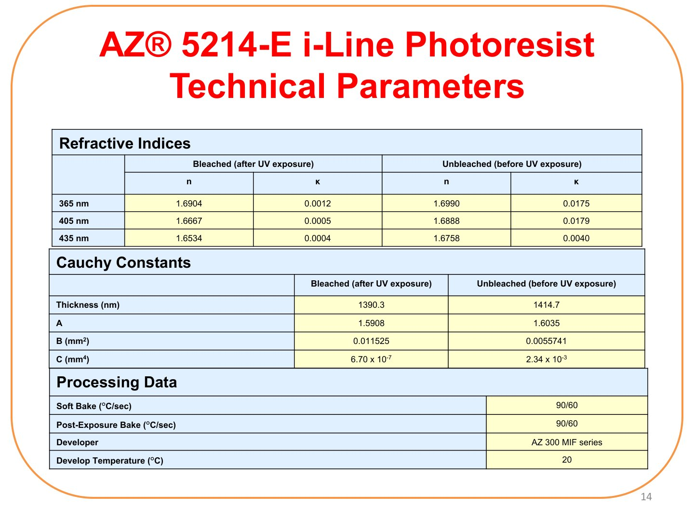
这一页标题 AZ®5214-E i-Line Photoresist Technical Parameters，分三块：Refractive Indices 折射率、Cauchy Constants 柯西常数、Processing Data 工艺数据。
折射率表分 Bleached（after UV exposure，曝光后"漂白"）与 Unbleached（before UV exposure，曝光前），在三个波长 365nm、405nm、435nm 各给 n（折射率实部）和 κ（消光系数）：365nm 曝光后 n=1.6904、κ=0.0012，曝光前 n=1.6990、κ=0.0175；405nm 曝光后 1.6667/0.0005，曝光前 1.6888/0.0179；435nm 曝光后 1.6534/0.0004，曝光前 1.6758/0.0040。讲直觉：未曝光胶在 365nm（i 线）消光系数大，说明强烈吸收 i 线、感光；曝光后 κ 骤降，就是"漂白"——胶变得透明，光继续往深处走，这对厚胶曝光有利。i 线 365nm 正是 g/h/i 线汞灯谱线之一，胶名 i-Line 即指匹配 365nm。
Cauchy 常数：厚度 Bleached 1390.3nm、Unbleached 1414.7nm；A=1.5908/1.6035，B=0.011525/0.0055741，C=6.70×10⁻⁷/2.34×10⁻³。Cauchy 公式 n(λ)=A+B/λ²+C/λ⁴ 用来描述透明区折射率随波长变化，是椭偏仪拟合膜厚的模型参数，这里认识即可。
Processing Data 工艺数据：Soft Bake 软烘 90/60（温度/时间，90°C、60 秒，升温速率 60°C/sec 量级）；Post-Exposure Bake 后烘 90/60；Developer 显影液 AZ 300 MIF series；Develop Temperature 显影温度 20°C。强调：软烘、后烘的温度时间必须严格照此表，显影液型号和 20°C 温度偏差都会改变线宽，实验记录要逐项写下实际值。
把表里每个量的物理意义讲透。折射率 n 描述光在胶中的折射快慢，消光系数 κ 描述吸收强弱：未曝光胶在 365nm 的 κ=0.0175，明显吸收 i 线，这正是它感光的原因；曝光后 κ 降到 0.0012，胶"漂白"变透明，光能继续深入膜层，避免表面吃光、底部照不透。405、435nm 处 κ 本来就小，说明这支胶主要响应 i 线，对 h、g 线不敏感。Cauchy 常数 A、B、C 是透明区折射率随波长变化的拟合参数，配合椭偏仪反推膜厚，曝光前后厚度从 1414.7nm 变到 1390.3nm，正是溶剂与结构变化引起的轻微收缩。工艺行的 90/60 指 90°C 保持 60 秒，软烘与后烘同温同时长，靠加热板精确控温；MIF 是金属离子free 的显影液，避免污染；显影 20°C 必须恒温，温度高显影快、低则慢，偏差直接反映到线宽。实验中先按表走基准工艺，再通过剂量—显影时间矩阵找出本实验室的最佳窗口。
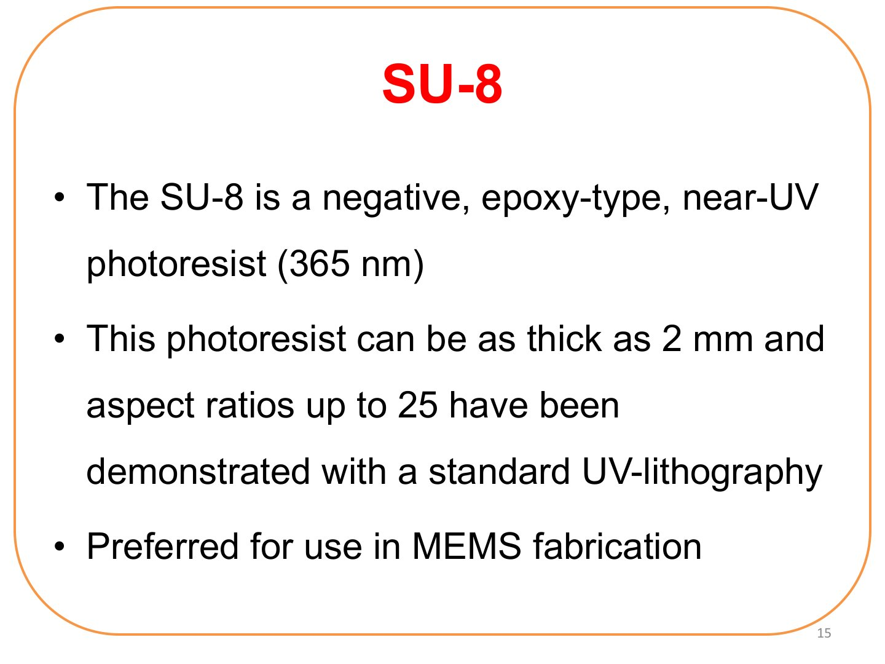
这一页标题 SU-8，四条要点：The SU-8 is a negative, epoxy-type, near-UV photoresist (365nm)，SU-8 是负性、环氧型、近紫外（365nm）光刻胶；This photoresist can be as thick as 2 mm and aspect ratios up to 25 have been demonstrated with a standard UV-lithography，可厚达 2mm，用标准紫外光刻已实现高达 25 的深宽比；Preferred for use in MEMS fabrication，优先用于 MEMS（微机电系统）制造。
三个关键词逐个讲。Negative 负性：见第 12 页，曝光区交联留下，未曝光溶掉。Epoxy-type 环氧型：曝光引发环氧基团阳离子聚合交联，形成三维网状结构，交联后极难溶，所以显影只去掉未曝光部分，留下的结构非常坚固。Near-UV 365nm：吸收 i 线，用普通紫外曝光机即可，不用极端光源。
为什么能做到 2mm 厚、深宽比 25？普通胶厚了光被表面吸收、底部照不到；SU-8 配方透明、交联深、一次成型厚膜，加上垂直曝光，能做出又高又窄的侧壁结构。深宽比（aspect ratio）= 高度/线宽，25 意味着 10µm 宽可以做到 250µm 高，这是做 MEMS 高大结构（齿轮、通道、模具）的本钱。代价：SU-8 交联后去胶极难，残留多，这是它的工程痛点。
再补应用与工艺特点。MEMS（微机电系统）要做微型齿轮、弹簧、喷嘴、微流道、模具母版，这些结构又高又陡，普通正胶几百纳米到几微米厚根本不够，SU-8 一次旋涂或多次叠涂可达毫米级，曝光后交联成坚固结构，本身就能当结构材料或电铸模具。它是负胶，曝光区交联留下，未曝光区用专用显影液（PGMEA 类）溶掉。工艺上 SU-8 需要多次软烘除溶剂、较长曝光剂量、后烘促进交联，厚膜还要注意底部照透和气泡。工程痛点要强调：交联后的环氧网络化学惰性极强，普通去胶液溶不动，往往需要机械剥离、等离子灰化或专门配方，残留碳化物还可能影响后续工艺，所以设计阶段就要想好去胶方案。近紫外 365nm 兼容普通汞灯曝光机，不需要特殊光源，这是它在实验室普及的原因。
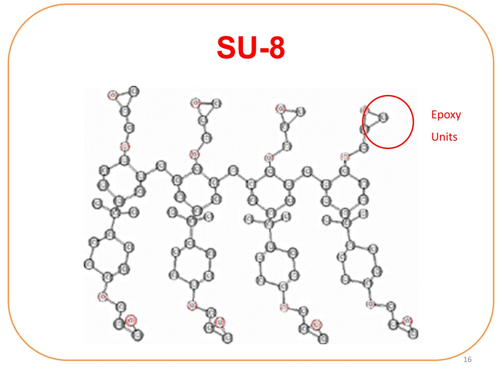
这一页标题 SU-8，画面是一条长链分子球棍模型，右上角红圈标出 Epoxy Units 环氧单元。讲这张图：SU-8 主链是双酚 A 型环氧树脂骨架，侧枝末端挂着多个环氧基团（三元环，一个氧两个碳的小环，红圈处）；名字里的 8 就来自每个分子平均带约 8 个环氧官能团。
曝光机理：紫外光穿过、光引发剂产酸，后烘时酸催化环氧开环，相邻分子的环氧基团彼此连接成网络——这就是交联（cross-linking）。环氧基团越多，可连接位点越多，交联密度越高，留下的胶膜越硬、耐化学。理解分子图的重点不是背结构式，而是建立"官能团数量决定交联能力"的图像：红圈里的小环就是反应位点，光照后一个个打开、互相拉手，把整片胶织成一张网。
把反应过程讲完整。SU-8 里除了环氧树脂，还含光引发剂（鎓盐类），紫外曝光时引发剂分解产生强酸；后烘（PEB）阶段酸作为催化剂，使环氧三元环开环，开环产生的活性点继续攻击邻近分子的环氧基团，链式反应把一条条分子链横向、纵向连接成三维网状聚合物。酸在反应中不被消耗，所以少量引发剂就能触发整片交联，这也是化学放大的思想。名字 SU-8 来自每个分子平均约 8 个环氧官能团，位点越多，交联点越密，固化后膜的玻璃化温度高、耐溶剂、耐刻蚀。未曝光区没有酸触发，环氧保持单体可溶状态，显影时被洗掉。理解这张分子图，就能明白第 15 页"负性、环氧型、厚膜、高纵深比"四个特点在分子层面的共同来源：都是多环氧基团交联网络带来的结果。
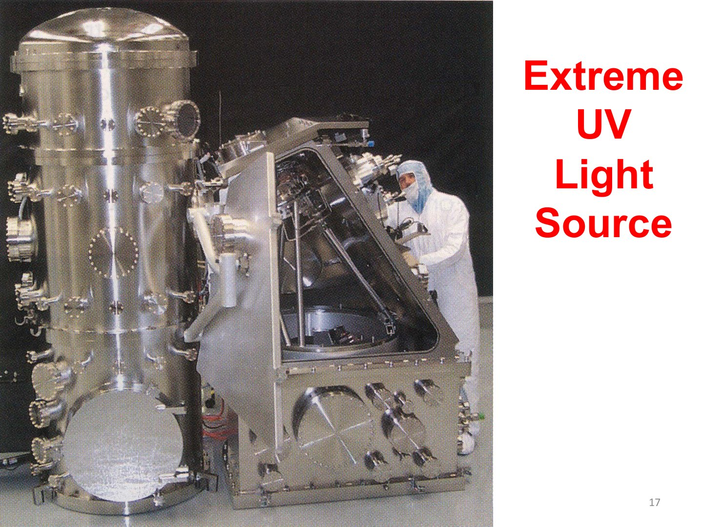
这一页标题 Extreme UV Light Source，画面是一台高大的不锈钢真空腔体设备，穿洁净服的人员正在侧面操作。Extreme UV，EUV，极端紫外，波长约 13.5nm，是先进节点芯片把线宽推到十几纳米以下所用的光源。
讲为什么要用更短的光：光学分辨率（衍射极限）近似与波长成正比，波长越短能刻的线越细；i 线 365nm 做到微米级就接近极限，要往纳米走必须缩短波长。但 EUV 被几乎所有物质（包括空气）强烈吸收，所以整套光源、掩模、光路都在真空中运行，设备庞大复杂——这正是画面里巨型真空腔的原因。本实验室不操作 EUV，这一页属于视野拓展：知道常规紫外之外，业界靠更短波长和真空系统突破分辨率极限。
把分辨率公式和工程代价讲透。投影光刻的最小线宽近似 k₁·λ/NA，λ 是波长、NA 是数值孔径、k₁ 是工艺因子；想缩小线宽，要么缩短 λ，要么提高 NA。从 g 线 436nm、i 线 365nm 到深紫外 DUV 248nm、193nm，再到 EUV 约 13.5nm，波长一路缩短。EUV 的困难在于：13.5nm 被空气和透镜玻璃强烈吸收，不能用传统透射透镜，只能用多层膜反射镜在真空中聚焦；光源靠激光轰击锡滴产生等离子体，效率低、设备庞大昂贵，掩模也要做反射式。画面里高大的不锈钢圆柱和带观察窗的真空舱，正是容纳光源、反射镜和真空系统的地方。对本课程只需建立概念：实验室微米级紫外光刻与产线纳米级 EUV 是同一原理在不同波长尺度的延伸，瓶颈从胶和对准转向光源与光学系统。
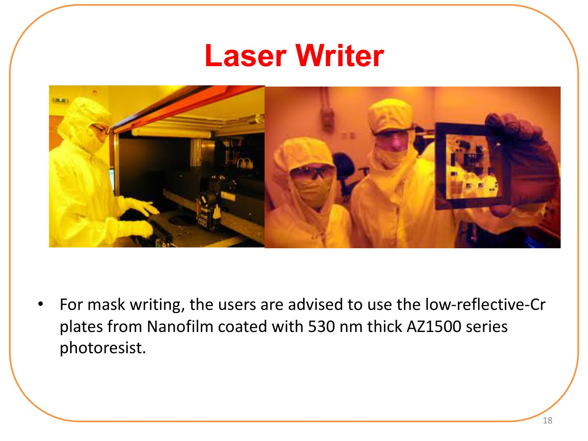
这一页标题 Laser Writer，左图穿洁净服人员操作直写设备，右图两人举着一块写好图形的掩模版；下方文字：For mask writing, the users are advised to use the low-reflective-Cr plates from Nanofilm coated with 530 nm thick AZ1500 series photoresist.（写掩模时建议使用 Nanofilm 的低反射铬板，板面旋涂 530nm 厚的 AZ1500 系列光刻胶。）
讲激光直写（laser writer / mask writer）：不用物理掩模版，直接用聚焦激光在胶面上逐点扫描写出图形，适合小批量定制掩模和无掩模直接曝光。这一页给的是写铬掩模版（Cr plate）的具体工艺：低反射铬板降低眩光干扰，板上先旋 530nm 的 AZ1500 胶，激光曝光、显影后铬层露出的区域再镀铬刻蚀，做出透光/不透光的母版。认识两个名词：low-reflective-Cr 低反射铬，AZ1500 是另一支正胶系列。直写速度慢、适合研发，量产仍靠投影光刻。
把掩模版结构和直写取舍讲清楚。一块常规掩模版是在石英玻璃上镀一层薄铬，铬不透光，要透光的地方把铬刻掉形成窗口；低反射铬（low-reflective-Cr）在铬层上加吸光或低反射处理，减少写版时激光散射干扰，提高边缘质量。Nanofilm 是供应商名，板上旋 530nm 厚 AZ1500 正胶，激光按设计图形扫描曝光，显影露出要刻的铬区，再湿法或干法刻蚀铬、去胶，得到母版。激光直写的优点是省掉制版中间环节、改图快、可直接在片上写（无掩模），适合科研小批量；缺点是逐点扫描速度慢、大面积拼接有误差、吞吐量低，无法替代量产投影。它和第 17 页 EUV 代表两条不同的极致路线：一个靠缩短波长批量缩小，一个靠直接写入省去掩模。
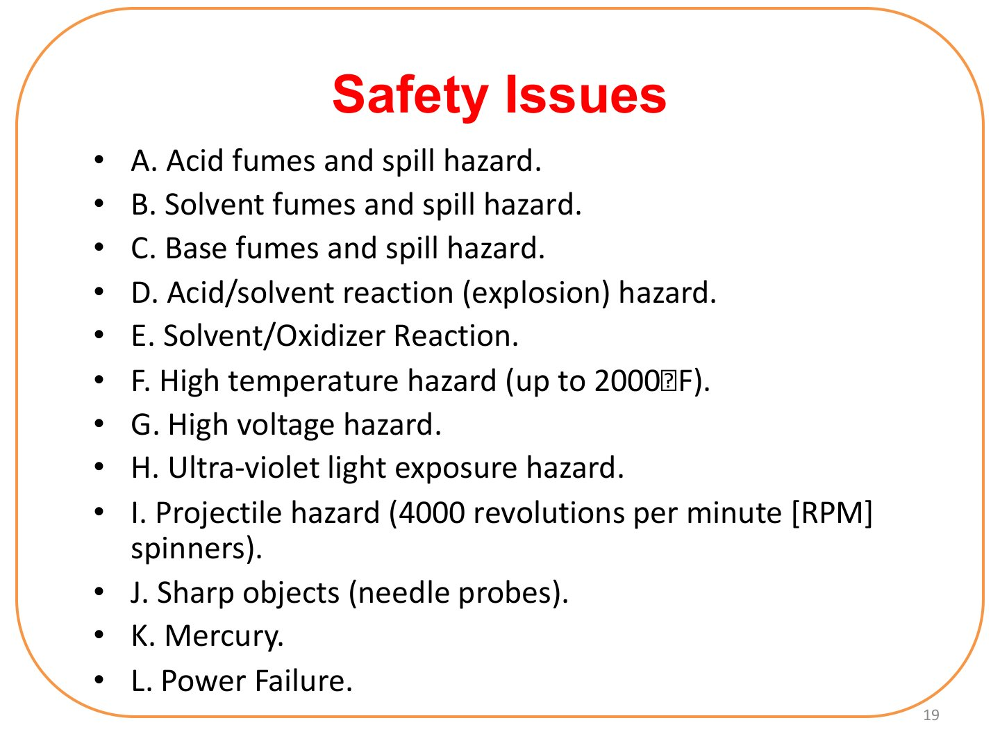
这一页标题 Safety Issues，列出 A 到 L 共 12 项危害：
- A. Acid fumes and spill hazard：酸雾与泼洒危害（刻蚀酸液挥发、溅出）；
- B. Solvent fumes and spill hazard：溶剂雾与泼洒（显影液、PGMEA 等易燃溶剂挥发）；
- C. Base fumes and spill hazard：碱雾与泼洒（AZ300 MIF 等碱性显影液）；
- D. Acid/solvent reaction (explosion) hazard：酸与溶剂反应（爆炸）危害，严禁酸碱溶剂混倒；
- E. Solvent/Oxidizer Reaction：溶剂与氧化剂反应；
- F. High temperature hazard (up to 2000°F)：高温危害（高达 2000°F，约 1093°C，指扩散炉/高温设备）；
- G. High voltage hazard：高压危害；
- H. Ultra-violet light exposure hazard：紫外照射危害，伤眼伤皮肤，曝光时严禁直视光源；
- I. Projectile hazard (4000 revolutions per minute [RPM] spinners)：抛射危害，旋涂仪 4000 RPM，碎片可能飞出，必须盖好防护盖；
- J. Sharp objects (needle probes)：尖锐物（探针、镊子）刺伤；
- K. Mercury：汞，旧设备汞灯/仪表含汞，破损按危废处理；
- L. Power Failure：停电故障，设备中断、真空破片等应急处理。
逐项落到行为：酸碱性溶剂分别倒入指定废液瓶，绝不混倒；高温炉、高压设备按 SOP 操作并设防护；紫外曝光戴防护镜、关遮光罩；旋涂盖好盖再启动；汞灯破碎立即报告。安全是每一步操作的前提，具体应急与防护以现场培训后的 SOP 和 MSDS 为准。
把每一项危害对应的操作行为再展开，方便学生背成 checklist。A 酸雾与泼洒：刻蚀用的酸挥发刺激呼吸道、腐蚀皮肤，操作在通风橱内，戴耐酸手套护目镜，溅到立即大量冲水并报告。B 溶剂雾与泼洒：PGMEA、显影溶剂易燃挥发，远离明火，通风橱操作，废液密封回收。C 碱雾：AZ300 MIF 等碱性显影液伤眼伤皮，同样护具防护、冲水急救。D 酸与溶剂混存可能剧烈反应甚至爆炸，E 溶剂遇氧化剂（如双氧水、硝酸）反应，故酸碱、溶剂、氧化剂分柜分装，废液瓶分类绝不混倒。F 高温高达 2000°F（约 1093°C）指扩散炉、退火炉，防烫伤、防火灾，按程序升降温。G 高压：曝光灯电源、射频源存在高压，不开护盖、不湿手操作。H 紫外光灼伤眼角膜和皮肤，曝光时关遮光罩、戴专用防护镜，不直视灯。I 旋涂仪 4000 RPM 高速旋转，片子未吸牢会飞出伤人，必须盖罩启动、确认真空。J 探针、镊子尖锐，防刺伤，传递尖头朝下。K 旧汞灯、仪表含汞，破碎按危废处理，不擅自清扫。L 停电会导致真空失效、设备中断，熟悉应急按键和断电顺序。进入任何设备前先读完对应 MSDS 和现场 SOP。
把今天的路线走一遍：第 1 页立住"光刻是把掩模图形经胶转移到衬底"的总任务；第 2 页认识黄光洁净间与洁净服；第 3 页认识 Mask Aligner 对准曝光机（MJB3/MJB4/MA6）；第 4 至 8 页认识衬底——金刚石结构硅的 n/p 掺杂与 (100)/(110)/(111) 晶面、抛光片实物、SiO₂ 干涉色与厚度色卡、SOI 三层结构与玻璃阳极键合；第 9、10 页讲旋涂仪与四步旋涂（装片、滴胶、~3000RPM 成膜、干燥）；第 11 页串起八步流程：衬底准备→增粘剂→涂胶→软烘→曝光→后烘→显影→坚膜；第 12 页对比正胶（见光即溶、同形于掩模）与负胶（见光交联、与掩模反形）；第 13、14 页解剖 AZ5214 配方 73% 溶剂/22% 酚醛树脂/3% DQN/1% 酚类及其折射率、Cauchy 常数与 90/60、20°C 显影工艺；第 15、16 页讲 SU-8 负性环氧厚胶，2mm 厚、深宽比 25、MEMS 用，环氧基团交联成网；第 17、18 页拓展 EUV 短波长真空光源与激光直写掩模；第 19 页过一遍 A–L 安全事项。
共同骨架只有一条链：衬底 → 增粘 → 旋涂成膜 → 软烘 → 掩模曝光 → 后烘 → 显影出胶图 → 坚膜 →（后续刻蚀、去胶）；而选正胶还是负胶、多厚、什么波长曝光，都服务于"要什么样的胶图扛住刻蚀"。
最后用四个问题自测。
能答清这四题，你就抓住了光刻课的主干。
进实验室之前，请再次查阅所用旋涂仪、Mask Aligner、加热板及各类化学品（AZ5214、AZ300 MIF、SU-8、HMDS）的最新操作规范与 MSDS。本讲稿只用于理解原理与课件图片；具体转速、温度、时间、曝光剂量与安全要求，一律以培训后的现场 SOP 为准。
| 英文术语 | 中文 | 一句话解释 |
|---|---|---|
| Photolithography | 光刻 | 用光经掩模把图形转移到光刻胶上的工艺 |
| Mask | 掩模版 | 带铬图案的母版，决定透光与挡光区 |
| Photoresist | 光刻胶 | 感光后可溶/交联，作为临时刻蚀掩蔽层 |
| Cleanroom | 洁净间 | 过滤空气、穿洁净服的低粉尘加工环境 |
| Yellow light / safe light | 黄光/安全光 | 不使常规胶感光的长波照明 |
| Mask Aligner | 掩模对准机 | 套准掩模与硅片并曝光的设备（MJB3/MJB4/MA6） |
| n-type / p-type doping | n 型 / p 型掺杂 | 掺施主（电子）/受主（空穴）改变硅导电类型 |
| Crystal plane (100)/(110)/(111) | 晶面 | 硅片暴露的晶体取向面，影响刻蚀与氧化 |
| SiO₂ | 二氧化硅 | 硅上热生长的绝缘层，干涉显色可估厚 |
| SOI (silicon-on-insulator) | 绝缘体上硅 | 器件层/埋氧层/衬底三层隔离结构 |
| Anodic bonding | 阳极键合 | 电场高温下硅与玻璃直接封接 |
| Spin Coater | 旋涂仪 | 离心甩胶成均匀薄膜的设备，~3000RPM |
| Dispense / Film Casting | 滴胶 / 成膜 | 旋涂两步：滴胶液、高速甩开干燥 |
| Adhesion promoter (HMDS) | 增粘剂 | 提高胶与衬底附着力的疏水处理 |
| Soft Bake | 软烘（前烘） | 涂胶后低温除溶剂、固化胶膜 |
| Exposure | 曝光 | 紫外等辐射穿过掩模引发胶化学反应 |
| Post-Exposure Bake (PEB) | 后烘 | 曝光后加热促进反应、消驻波 |
| Develop | 显影 | 溶掉可溶区，露出胶图案 |
| Hard Bake | 坚膜烘 | 显影后高温固化胶膜以抗刻蚀 |
| Positive / Negative Resist | 正胶 / 负胶 | 见光溶掉 / 见光交联留下 |
| Novolak resin | 甲酚酚醛树脂 | 正胶成膜主体，碱可溶 |
| DQN (Diazonaphthoquinone) | 重氮萘醌磺酸酯 | 正胶感光剂（PAC），曝光解除溶解抑制 |
| i-line (365nm) | i 线 | 汞灯 365nm 谱线，常规曝光波长 |
| Refractive index n / κ | 折射率 / 消光系数 | 描述胶对光的折射与吸收，曝光后漂白 |
| Cauchy constants | 柯西常数 | 拟合透明区折射率随波长变化的模型参数 |
| SU-8 | SU-8 负性环氧厚胶 | 365nm、厚达 2mm、深宽比 25，用于 MEMS |
| Cross-linking | 交联 | 曝光引发分子间连接成网状，负胶固化机理 |
| Aspect ratio | 深宽比 | 结构高度/线宽，SU-8 可达 25 |
| EUV (Extreme UV) | 极端紫外 | ~13.5nm 短波长，真空光路，先进节点用 |
| Laser writer | 激光直写 | 无掩模逐点扫描写图形/写铬板 |
| Stripping | 去胶 | 刻蚀后把光刻胶从衬底去除 |
3D 教学示意模型：拖动旋转、滚轮缩放、点击部件查看构造；模型为原理示意，具体参数与安全要求以课件讲解稿与现场 SOP 为准。
同学们，今天的主题是 Etching，刻蚀。先请大家想象一个画面：我们在一片硅晶圆表面先铺一层薄膜，再通过光刻把图形印在一层光刻胶上，接下来要做的事情，就是把"没被胶盖住的那部分薄膜"精确地去掉，同时让被胶盖住的部分原封不动地留下来。这个"选择性地把材料从表面拿掉"的过程，就是刻蚀。如果把整个微电子制造比作在晶圆上雕一座微缩城市，那么光刻是先画好蓝图、贴上遮蔽纸，刻蚀就是真正拿刻刀把不要的材料削掉、把墙和沟挖出来的那一步。
为什么刻蚀值得单独讲一整节课？因为前道工艺里几乎每一层都要刻：栅氧化层要刻、金属连线要刻、氮化硅掩膜要刻、沟槽和深孔也要刻。刻蚀这一步做坏了，前面光刻花的全部功夫都白费——该留的被啃掉，该去的没去干净，或者侧壁歪了、底下被挖穿。所以业内常说一句话："光刻决定图形长什么样，刻蚀决定图形最终能不能站得住。"
本节课的主线可以这样概括：先建立术语地基（什么是刻蚀、掩膜层、各向同性、各向异性、选择比、深宽比），再把刻蚀分成两大阵营——湿法刻蚀（wet etching，泡在液体里靠化学反应溶解）和干法刻蚀（dry etching，放在气体/等离子体里靠化学反应加物理轰击去掉），然后逐个讲干法的三条路线（等离子体化学刻蚀、反应离子刻蚀 RIE、物理溅射刻蚀）和湿法的几种经典药液（氢氟酸、缓冲氢氟酸、磷酸、HNA、氢氧化物），最后落到晶圆清洗这道配套工序。 听课时请持续追问三个问题：用什么把目标层去掉？副产物怎么排走？怎样保证只去掉目标层而不伤下面的衬底和上面的掩膜？
在进入课件之前，先给大家一张总纲性的"地图"。任何一种刻蚀方法，无论湿法干法，都要回答四个工程问题：第一，去什么——目标材料是硅、二氧化硅、氮化硅还是金属；第二，用什么去——是液体刻蚀液（etchant）还是气体/等离子体中的活性物种；第三，怎么保证只去目标——这就是选择比（selectivity），目标层刻得快、掩膜和衬底刻得慢；第四，形状对不对——这就是各向同性（isotropic，四周一样快）还是各向异性（anisotropic，纵向快、横向慢）。后面每一页课件，都可以归到这四个问题之一：术语页回答"概念是什么"，干法概览页回答"为什么用干法"，设备页回答"用什么实现"，化学刻蚀与物理刻蚀页回答"靠什么力量去材料"，具体药液页回答"去某一种材料该配什么配方"。带着这张地图听课，就不会在一堆气体名字和化学式里迷路。
还要先建立两个贯穿全课的对比直觉。第一个对比是化学力量 vs 物理力量：纯化学刻蚀像"溶剂溶解糖"，分子从各个方向同时进攻，所以是各向同性的，但选择性好；纯物理刻蚀像"用沙子喷砂墙"，离子垂直砸下来，所以是各向异性的，但谁都砸得动、选择性差；而反应离子刻蚀（reactive ion etching, RIE）把两者结合——化学负责选择性，物理轰击负责方向性。第二个对比是湿法 vs 干法的取舍：湿法设备简单、选择比高、批量吞吐大，但各向同性、侧向钻蚀严重、药液危险；干法图形保真度高、可控性好、易自动化，但设备贵、部分气体有毒有腐蚀。今天这节课，本质上就是在反复权衡这两组矛盾。
这一页只有一个红色标题"Etching"。讲解时先确立课程边界：我们讨论的是半导体与微纳制造中的图形刻蚀工艺，覆盖湿法刻蚀和以等离子体为核心的干法刻蚀两条路线，不展开为独立学科的电化学腐蚀理论。对初学者而言，先把"掩膜—目标层—衬底"三层结构和"选什么力量去材料"这条主链搭起来，比记住任何一种气体配方都更重要。
可以这样开场提问："如果要在一块涂了奶油的蛋糕上，用一张镂空模板把露出的部分刮干净，你会怎么做？"答案是：拿小铲刀刮，关键是刀只刮露出的奶油、不刮模板下面的，也不刮到蛋糕胚。刻蚀就是这个动作的微纳版——模板是掩膜层（mask layer），奶油是待刻薄膜，蛋糕胚是衬底。区别只在于：微纳世界里没有小铲刀，我们只能靠化学反应或者离子轰击来"刮"。
还要先点出三个会贯穿全课的质量指标。选择比指目标材料刻蚀速率与掩膜/衬底刻蚀速率之比，比值越高说明"越挑着刻"；各向异性/各向同性指横向和纵向刻蚀速率是否相等；刻蚀速率指单位时间去掉多厚的材料，通常用埃每分钟（Å/min）或微米每分钟（µm/min）表示。后面看到每一种工艺，都请用这三个指标去衡量它。
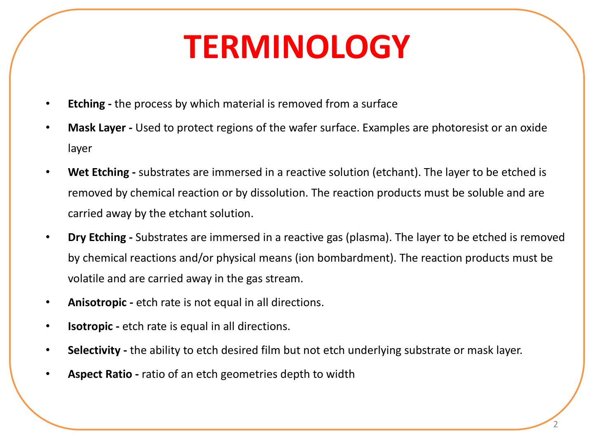
这一页是全课的词汇表，八个定义逐个讲。
第一个，Etching（刻蚀）：the process by which material is removed from a surface，也就是把材料从表面去除的过程。注意定义里没有限定用液体还是气体，所以湿法、干法都属于刻蚀，这是上位概念。
第二个，Mask Layer（掩膜层）：Used to protect regions of the wafer surface，用来保护晶圆表面某些区域；例子是光刻胶（photoresist）或一层氧化层。掩膜层的使命是"挡住该留的地方"，所以它自己必须耐刻蚀——刻蚀过程中掩膜被啃得越慢，下面的图形就保得越好，这直接关系到选择比。
第三个，Wet Etching（湿法刻蚀）：substrates are immersed in a reactive solution (etchant)，把衬底浸在反应性溶液里；待刻层靠化学反应或溶解被去除；反应产物必须可溶，并被刻蚀液带走。这句话很关键：产物必须溶在水里，否则会沉积回表面堵住刻蚀。
第四个，Dry Etching（干法刻蚀）：substrates are immersed in a reactive gas (plasma)，衬底放在反应性气体（等离子体）中；待刻层靠化学反应和/或物理手段（离子轰击）去除；反应产物必须可挥发，并被气流带走。和湿法对照记：湿法要"可溶"，干法要"可挥发"，排走机制完全不同。
第五个，Anisotropic（各向异性）：etch rate is not equal in all directions，各方向刻蚀速率不等。典型表现是纵向往下刻得快、横向往侧边啃得慢，于是能刻出陡直的墙。
第六个，Isotropic（各向同性）：etch rate is equal in all directions，各方向速率相等。液体刻蚀液从四面八方同时进攻，结果是圆形凹槽、掩膜底下被横向"掏"出一个圆弧，这就是下一页要画的侧向钻蚀（undercut）。
第七个，Selectivity（选择比）：the ability to etch desired film but not etch underlying substrate or mask layer，能刻掉想要的薄膜而不刻下面的衬底或掩膜层的能力。注意选择比是一对比值：目标层速率除以被保护层速率。
第八个，Aspect Ratio（深宽比）：ratio of an etch geometry's depth to width，刻蚀结构深度与宽度之比。深宽比越高，说明沟挖得又深又窄，这对刻蚀是难题——气体或药液要进到井底、产物要从井底排出来，越深越窄越难，这也是后面深反应离子刻蚀（deep reactive ion etching, DRIE）存在的原因。
这里可以给一个记忆小窍门：isotropic 里 iso 表示"相同"，homogeneous、isomer 里都有这个词根；anisotropic 里 an 表示"否定"，所以"不同向"。选择比和深宽比都是"比值"，一个比的是速率（目标对保护），一个比的是几何（深度对宽度），别混淆。
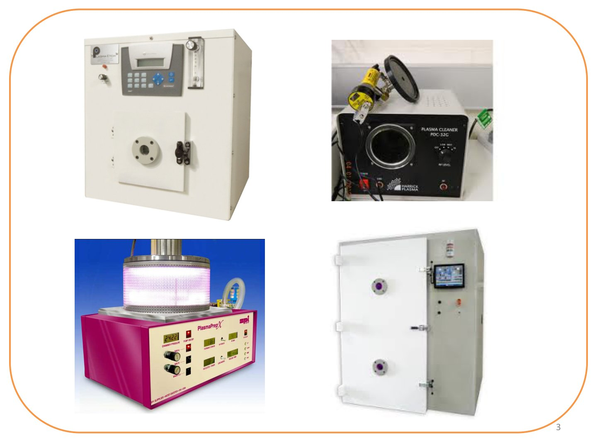
这一页是四张设备照片，分别展示不同规模的等离子体处理设备：左上是一台带腔体门、流量表和按键面板的独立式等离子体刻蚀/清洗机；右上是 Harrick Scientific 的 Plasma Cleaner PDC-32G 小型台式等离子清洗机，面板上标有 RF POWER、RF FIELD 旋钮；左下是一台 PlasmaPrep X 系列、顶部可见紫色辉光放电柱的设备；右下是一台带观察窗、触摸屏和密封大舱门的立式工业腔体。
讲这一页不要陷入型号，要讲"共同结构"。所有干法设备都有四个共性部分：一是真空腔体，先抽成低气压再通入工艺气体；二是气体入口与流量控制，决定通入什么气体、通多少；三是射频（radio frequency, RF）电源与电极，把气体电离成等离子体；四是抽气系统，把副产物和未反应气体排走。照片里看到的紫色、粉红色辉光，就是等离子体发光——气体被电离后，电子和复合过程释放能量，以可见光形式放出来，所以"看得见的等离子体"本身就是设备在工作的标志。
还要点出"Plasma Cleaner（等离子清洗机）"和刻蚀机的关系：小型等离子清洗机主要靠氧气等离子体烧掉表面有机污染，属于温和的表面处理；当我们换成刻蚀气体、加大离子能量、让衬底处于负偏压电极上，它就变成了刻蚀机。所以设备原理相通，差别只在气体配方、气压和偏压设置。大家进实验室后第一次操作，先认识腔体门、气路、真空表和射频开关的位置，比急着按开始键重要得多。
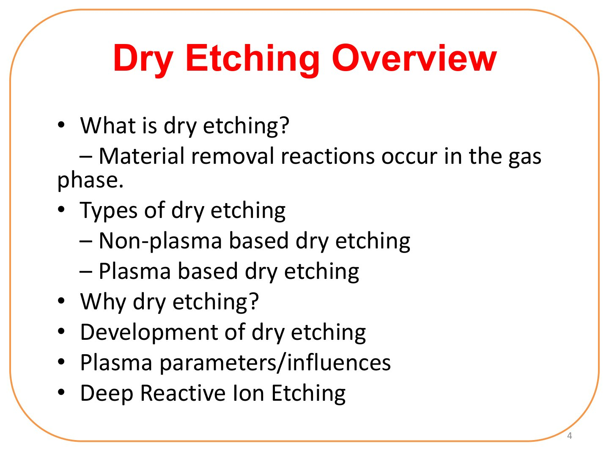
这一页是干法刻蚀的目录页，六条要点：什么是干法刻蚀——材料去除反应发生在气相（material removal reactions occur in the gas phase）；干法刻蚀的类型——非等离子体型（non-plasma based）和等离子体型（plasma based）；为什么用干法；干法刻蚀的发展；等离子体参数与影响因素；深反应离子刻蚀（Deep Reactive Ion Etching, DRIE）。
先讲"反应在气相发生"这句话的分量。湿法里反应发生在液体这个连续相里，液体能浸到每一个角落；干法里反应物种是气体分子、自由基和离子，要靠扩散飞到表面再反应，这就带来了两个后果：一是方向性可以靠离子定向加速来控制（物理轰击只朝垂直方向），二是高深宽比结构里气体进出受限，会出现"井底比井口刻得慢"的负载效应（loading effect）。
两类干法先建立名字：非等离子体型不靠电离，靠合适的反应气体混合物自发地与材料反应（后面第 6 页会再展开）；等离子体型靠射频功率驱动化学反应，这是今天的重点。后面的设备图、RIE 流程、气体表都属于等离子体型。
"为什么干法"和"发展"两条这里只做预告：为什么——图形保真、少钻蚀、易自动化（第 5 页正面回答）；发展——从最初的物理溅射刻蚀，到化学等离子刻蚀，再到 RIE、磁控增强、感应耦合等离子体（inductively coupled plasma, ICP），一路朝着"高各向异性加高选择比"的方向演进。DRIE 专门用于刻几十微米到上百微米的深硅结构，靠的是刻蚀与钝化交替的博世工艺（Bosch process），最后几页的 KOH 各向异性湿法会和它形成对照。
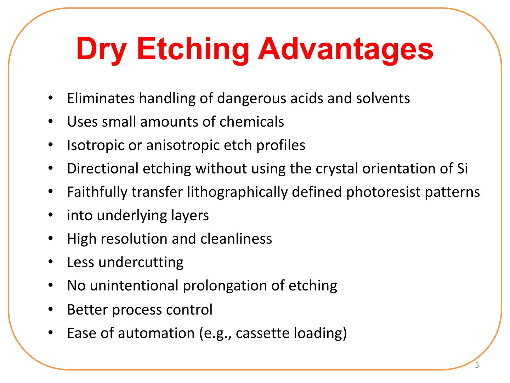
这一页列了干法刻蚀的十条优点，逐条讲并给出画面类比。
- Eliminates handling of dangerous acids and solvents：免去操作危险强酸和溶剂。湿法要拿氢氟酸、硫酸，戴几层手套还怕溅；干法在密闭腔体内完成，人手不直接接触药液，职业暴露风险显著下降。
- Uses small amounts of chemicals：化学品用量小。气体按量通入、反应完即被抽走，不像湿法一大槽药液反复浸泡整舟晶圆。
- Isotropic or anisotropic etch profiles：各向同性或各向异性的轮廓都能实现。注意这句话很重要——干法不是天生各向异性，靠调节化学与物理的配比，两种轮廓都做得出。
- Directional etching without using the crystal orientation of Si：不依赖硅的晶向就能实现方向性刻蚀。湿法的 KOH 各向异性靠的是硅不同晶面溶解速率差（{111} 面慢），只能做出 54.7° 的固定斜壁；干法靠离子垂直轰击，任意方向都能刻直，不受晶向限制。
- Faithfully transfer lithographically defined photoresist patterns into underlying layers：把光刻胶上定义好的图形忠实地转移到下面的层里。"忠实"两个字就是说掩膜边缘被原样复刻，不发生明显横向缩小。
- High resolution and cleanliness：高分辨率、高洁净度。干法能刻亚微米甚至纳米级线宽，且没有湿法残留液。
- Less undercutting：侧向钻蚀少。这是各向异性带来的直接好处，掩膜底下不会被掏成圆弧。
- No unintentional prolongation of etching：不会无意识地延长刻蚀。湿法把晶圆捞出来之前反应一直在进行，稍慢一秒就多刻一截；干法关射频即停，反应随等离子体熄灭立刻结束，开关可控。
- Better process control：工艺控制更好。气压、功率、气体流量、偏压都可精确设定和监测，重复性好。
- Ease of automation (e.g., cassette loading)：易于自动化，例如片匣自动装载。湿法的槽体自动化 historically 更难，干法腔体天然配合机械手批量进出。
可以用一句话收拢：干法的优点几乎全是"可控"二字的展开——可控的方向、可控的终点、可控的用量、可控的批量。它的代价在第 6 页讲。
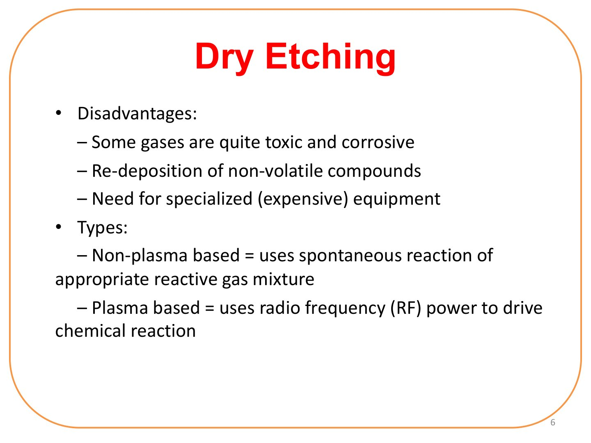
这一页分两块：缺点和类型。
缺点三条。第一，Some gases are quite toxic and corrosive：有些气体相当有毒且有腐蚀性。比如刻蚀氮化硅、金属用的含氯气体（氯气 Cl₂、三氯化硼 BCl₃），刻蚀硅用的含氟气体（四氟化碳 CF₄、六氟化硫 SF₆），既有腐蚀性又有毒性，尾气必须经过专门处理才能排放，这是湿法换走了"酸碱危险"却带来了"特种气体危险"。第二，Re-deposition of non-volatile compounds：非挥发性化合物再沉积。物理轰击打下来的材料碎片如果不挥发，会重新落回侧壁或表面，造成污染甚至掩膜形成。第三，Need for specialized (expensive) equipment：需要专门且昂贵的设备。真空腔体、射频源、气路、尾气处理，投资远高于湿法槽。
类型两条。Non-plasma based = uses spontaneous reaction of appropriate reactive gas mixture：非等离子体型靠合适反应气体混合物的自发反应，不需要电离驱动，典型例子是用氯气加热下自发刻蚀某些金属，本质是"气态湿法"。Plasma based = uses radio frequency (RF) power to drive chemical reaction：等离子体型用射频功率驱动化学反应，今天后面讲的 RIE 都属于这一类。
这里可以补一个实操层面的认识：为什么气体有毒却还要用？因为液相里找不到能同时满足"高选择比、各向异性、无钻蚀"的配方，而等离子体能在气相里同时做到。安全的解法不是放弃，而是密闭、排风、尾气处理和个人防护装备（PPE）规范化。这也呼应本讲稿结尾的安全提醒。
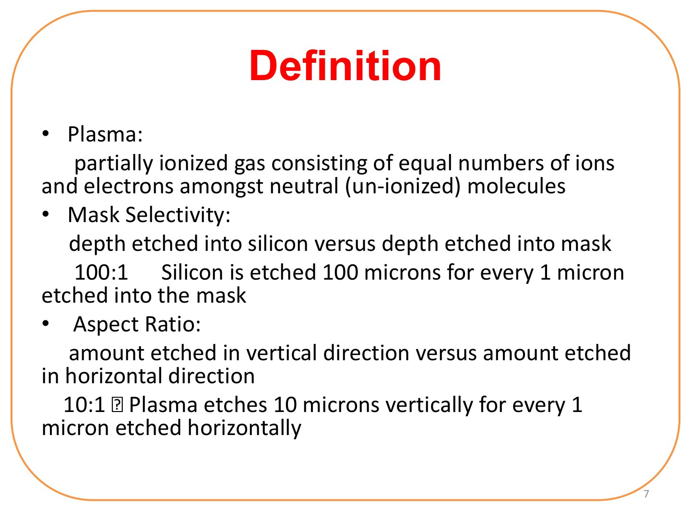
这一页给出三个定量定义。
第一，Plasma（等离子体）：partially ionized gas consisting of equal numbers of ions and electrons amongst neutral (un-ionized) molecules，部分电离的气体，在中性未电离分子之中，离子数与电子数相等。注意"部分"二字——绝大多数气体分子仍是中性的，只有一小部分被电离，但整体保持电中性（正电荷总数等于负电荷总数）。这就是为什么等离子体常被称为物质第四态：固液气之外，气体被电离后的导电状态。
第二，Mask Selectivity（掩膜选择比）：depth etched into silicon versus depth etched into mask，硅被刻蚀深度与掩膜被刻蚀深度之比。页面给了例子：100:1 — Silicon is etched 100 microns for every 1 micron etched into the mask，掩膜每被刻掉 1 微米，硅被刻掉 100 微米。这个比值越高，掩膜越"扛得住"，图形边缘保得越好。注意第 2 页的选择比是目标层对任意被保护层，这里专门把"对掩膜"的选择比量化成具体数字，两个例子（100:1 掩膜选择比、10:1 深宽比）放在一起，正是为了让大家区分"速率之比"和"几何之比"。
第三，Aspect Ratio（深宽比）：amount etched in vertical direction versus amount etched in horizontal direction，纵向刻蚀量与横向刻蚀量之比。页面例子：10:1 — Plasma etches 10 microns vertically for every 1 micron etched horizontally，每横向刻 1 微米，纵向刻 10 微米。这个 10:1 体现的是各向异性程度：纵向十倍于横向，侧壁就接近垂直。注意它和第 2 页"深度比宽度"的几何深宽比是同一概念在不同语境的表达，这里用"纵向刻蚀量比横向刻蚀量"强调方向性。
这里值得给学生做一个易错点辨析：选择比 100:1 是"两个材料之间速率的比"，和方向无关；深宽比 10:1 是"同一个材料两个方向速率（或几何尺寸）的比"。一个回答"挑不挑材料"，一个回答"直不直"，考试里最容易把这两个比值张冠李戴。
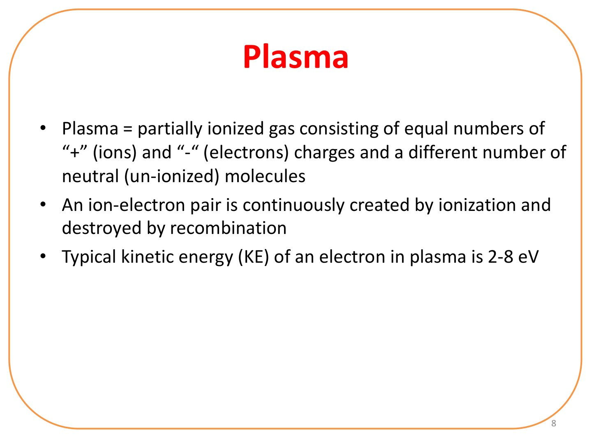
这一页把等离子体的微观图像讲细，三条。
第一条重复定义：Plasma = partially ionized gas consisting of equal numbers of "+" (ions) and "-" (electrons) charges and a different number of neutral molecules，由等量正离子与负电荷（电子）以及数目不等的中性分子组成的部分电离气体。
第二条，An ion-electron pair is continuously created by ionization and destroyed by recombination：离子—电子对持续地由电离产生、由复合销毁。也就是说等离子体是一个动态平衡：电子被电场加速撞开中性分子，产生一对离子和新电子（电离）；反过来离子和电子相遇又中和成中性分子（复合）。稳态时产生速率等于复合速率，等离子体维持稳定发光。这个"产生—消灭"的循环和第 9 页的稳态直接对应。
第三条，Typical kinetic energy (KE) of an electron in plasma is 2-8 eV：等离子体中电子的典型动能为 2 到 8 电子伏特。这个数字要展开讲：一个电子伏特（eV）是电子经过一伏电势差获得的能量，室温热运动能量才约 0.025 eV，而等离子体电子有 2–8 eV，足足高出两个数量级，正因为能量够高，才能撞断气体分子的化学键、产生自由基。注意等离子体里的离子由于质量大、被频繁碰撞，温度并不高，所以 RIE 常常被称为"冷等离子体"——电子很热、离子温和、整体接近室温，这是它不会烧坏光刻胶的原因。
这里可以补一个能量对照，帮助建立量级感：常见气体分子的键能在几个 eV 量级，比如 CF₄ 里的 C–F 键、Cl₂ 里的 Cl–Cl 键，电子动能 2–8 eV 正好够把这些键撞断，产生活性自由基；而金属键、硅键的断键能量也落在同一区间，所以被撞下来的原子才能与自由基结合成挥发性产物。能量太低电离不起来，能量太高又会造成衬底损伤，2–8 eV 是一个"刚好够用"的窗口。
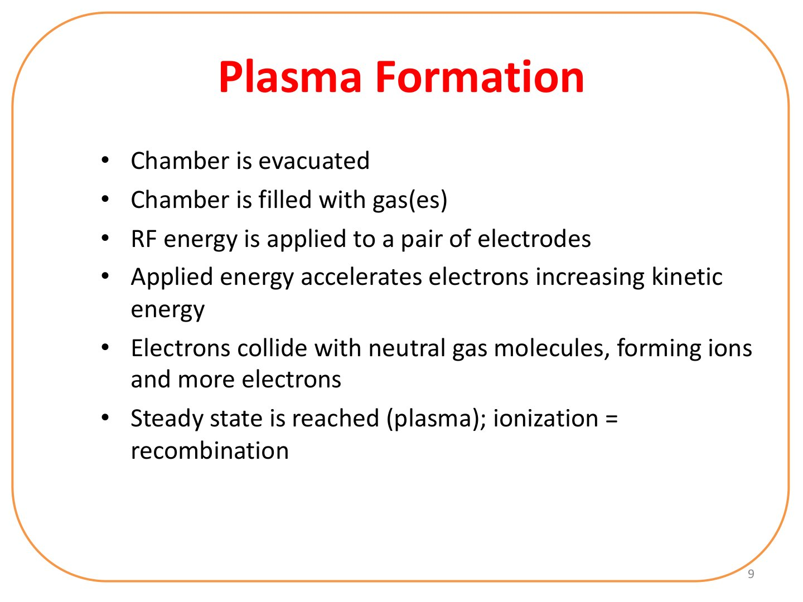
这一页用六步讲等离子体怎么从普通气体点燃出来，按顺序：
- Chamber is evacuated：腔体先抽真空。把腔体抽到低气压，目的是减少气体分子密度，让电子在两次碰撞之间有足够自由程被电场加速，而不是刚加速就撞停。
- Chamber is filled with gas(es)：充入工艺气体。比如刻蚀硅通 CF₄ 或 SF₆，刻蚀二氧化硅通 CHF₃ 加氧气，具体配方见第 19 页表格。
- RF energy is applied to a pair of electrodes：一对电极上施加射频能量。常用频率 13.56 MHz，射频电场在电极之间建立起来。
- Applied energy accelerates electrons increasing kinetic energy：外加能量加速电子，提高其动能。电场中的自由电子（哪怕只有一个初始种子电子）被反复加速。
- Electrons collide with neutral gas molecules, forming ions and more electrons：电子与中性气体分子碰撞，形成离子和更多电子。一次碰撞断键产生一个正离子、一个新电子，新电子又去撞下一个分子，这就是雪崩式电离。
- Steady state is reached (plasma); ionization = recombination：达到稳态（等离子体），电离速率等于复合速率。
这六步其实可以类比"点篝火"：先把湿柴抽干（抽真空），放进干柴（充气），点火并持续送风（射频能量），火星引燃更多柴（电子碰撞雪崩），最后火焰稳定燃烧（电离=复合的稳态）。理解这一页的关键是：等离子体不是开关一按就满功率出现，而是有一个点燃—雪崩—稳态的过程，所以设备都有"点火（ignition）"阶段和稳定时间，开机后要等辉光稳定再开始计时刻蚀。
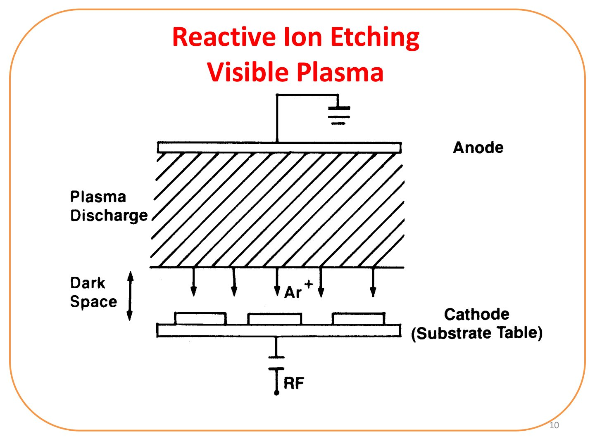
这一页是一张 RIE 腔体剖面示意图：顶部是接地的 Anode（阳极），大片斜线区域标为 Plasma Discharge（等离子体放电区）；阳极与下方衬底台之间有一层向下的箭头和 Ar⁺ 离子流；左侧标出 Dark Space（暗区，鞘层）；底部是接 RF 的 Cathode (Substrate Table)（阴极/衬底台），晶圆就放在这张台上。
先讲电极接法为什么这样设计。上极板接地（阳极），下极板接射频电源（阴极）。由于电子质量小、迁移快，射频半个周期里电子更快地冲向壁面，腔体壁因此带负电，形成一个自偏压（self-bias）；衬底台附近积累负电荷，对正离子产生加速作用。于是等离子体里的正离子（图中 Ar⁺）被垂直加速、打向衬底，这就是物理方向性的来源。
再讲 Dark Space（暗区/鞘层）。紧贴衬底片上方有一层几乎没有发光的薄层，叫鞘层（sheath）：这里电子被排斥出去，剩下正离子，电场集中在这层薄薄的鞘里，离子在这里被加速。图里向下的箭头就画在暗区下方，表示离子穿越鞘层后垂直落到晶圆表面。看得见的辉光区是等离子体本体，看不见的暗区才是"加速区"，这个结构是 RIE 各向异性的物理核心。
图里用 Ar⁺ 举例只是示意：氩气是惰性气体，只提供物理轰击；真正刻蚀时通入的是含氟或含氯的反应气体，离子和自由基一起工作。这一页要记住的空间关系是：接地阳极在上、RF 阴极（衬底台）在下、辉光在中间、暗鞘层贴着衬底、离子垂直下落。
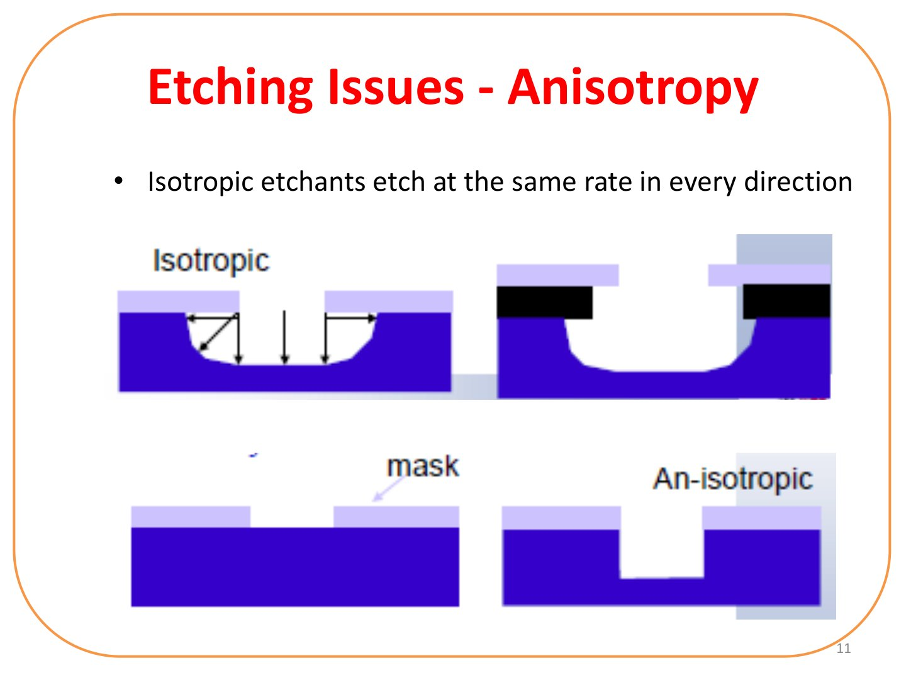
这一页标题讲各向异性，配图先画 Isotropic（各向同性）：左侧示意图里掩膜开口下方，纵向箭头和侧向箭头一样长，凹槽两侧被掏成圆弧；右侧示意图显示掩膜（黑色）底下出现明显的 undercut（侧向钻蚀），开口越挖越大。下方两张小图：左是带 mask 的未刻结构，右是 An-isotropic（各向异性）刻完后侧壁陡直、掩膜底下几乎没有横掏的槽。
先把各向同性的几何后果讲透。各向同性刻蚀里，表面纵向往下啃的同时，掩膜边缘正下方也在被横向啃，横向啃蚀量近似等于纵向深度。结果就是：开口宽度不断增大，掩膜像雨伞一样被"掏空"底下，一旦横向啃到相邻图形，线条就会变细甚至断裂。图右侧的黑色掩膜块底下已经悬空，这就是湿法或纯化学等离子刻蚀最典型的失败形态。
各向异性则相反：纵向刻蚀速率远大于横向，掩膜边缘垂直往下传，侧壁接近竖直，底部平整，掩膜底下干净。这种形状才能做细线、深沟。
可以给一个直观类比：各向同性像"在沙堆上用手指往一个点揉"，四周沙同时松，坑是圆碗；各向异性像"用钻头垂直钻孔"，只往下不往旁，孔是直筒。做微纳图形时，绝大多数场合要的是直筒，这也是干法 RIE 取代湿法成为主流的根本原因。
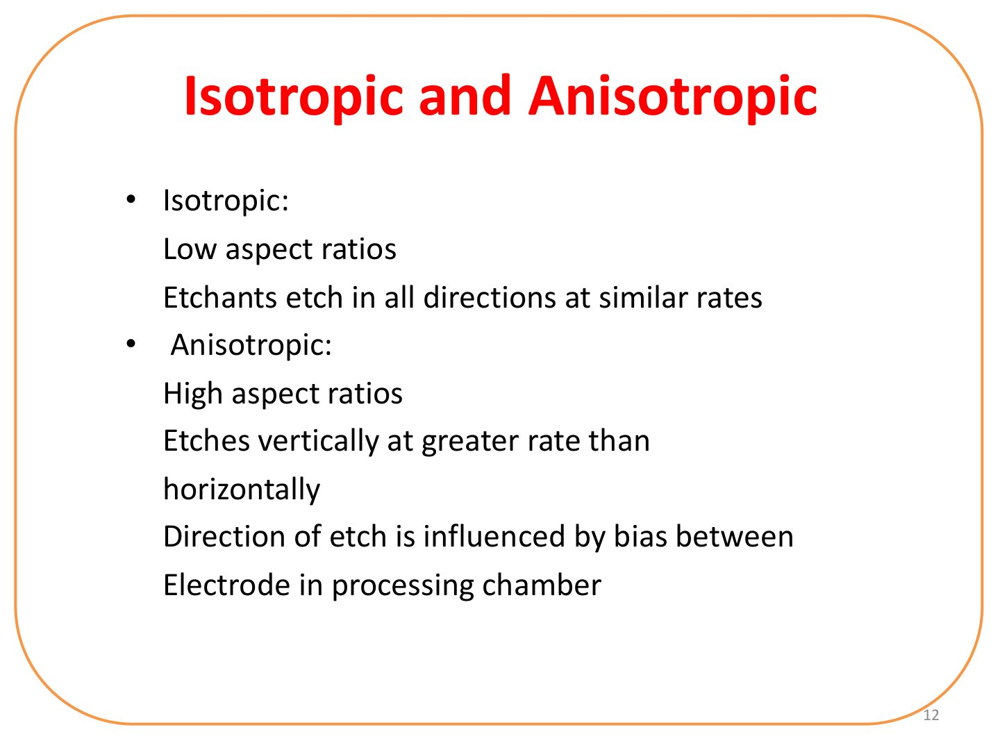
这一页用文字把第 11 页的图总结成两组特征。
Isotropic（各向同性）：Low aspect ratios（深宽比低）；Etchants etch in all directions at similar rates（刻蚀剂在所有方向以相近速率刻蚀）。也就是说各向同性天然做不出又深又窄的结构，因为横向一起长，深度一增加宽度也跟着膨胀，深宽比被死死限制。湿法氢氟酸刻二氧化硅就是典型。
Anisotropic（各向异性）：High aspect ratios（深宽比高）；Etches vertically at greater rate than horizontally（纵向刻蚀速率大于横向）；Direction of etch is influenced by bias between Electrode in processing chamber（刻蚀方向受工艺腔体内电极之间偏压的影响）。最后一句是关键：各向异性不是老天爷给的，而是靠腔体内电极之间的偏压（bias）把离子垂直加速实现的，调偏压大小就能调方向性——这给了工艺人员一个可调旋钮。
这里把第 10 页的暗区和本页的偏压串起来：电极偏压建立鞘层电场，电场定向加速正离子，离子垂直撞击把纵向刻蚀拉快、横向靠自由基自然反应但被压制，于是出现纵向快、横向慢的各向异性。理解了这条因果链，就理解了 RIE 为什么能通过调功率、气压来切换"更化学"还是"更物理"。
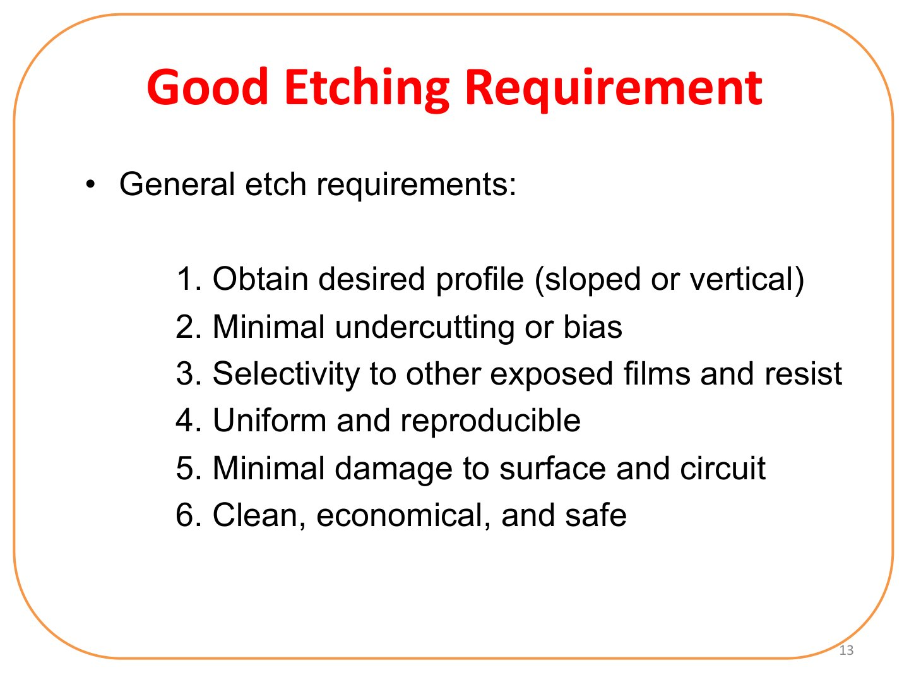
这一页列出六条通用刻蚀要求，是评价任何一种刻蚀工艺的"打分表"，逐条讲。
- Obtain desired profile (sloped or vertical)：获得想要的轮廓，斜坡形或垂直形。注意不是一味追求垂直——有时为了后续金属沉积覆盖良好，反而需要缓坡侧壁；器件不同、用途不同，目标轮廓不同，工艺要服务于设计。
- Minimal undercutting or bias：侧向钻蚀或偏移最小。钻蚀就是第 11 页讲的掩膜底下横掏；bias（线宽偏移）指刻完后实际线宽与设计线宽的系统性偏差，两者都要压到最小并可预测。
- Selectivity to other exposed films and resist：对其他露出的薄膜和光刻胶有选择比。刻目标层时，旁边同时露着的下层膜、上面的胶都不能被明显啃。
- Uniform and reproducible：均匀且可重复。同一片晶圆中心到边缘刻深一致，不同批次、不同片之间结果一致，这是量产的前提。均匀性差，片心刻穿、片缘没刻透，整批报废。
- Minimal damage to surface and circuit：对表面和电路损伤最小。离子轰击会造成晶格损伤、表面层损伤，过度轰击会引入缺陷、漏电，要控制在可接受范围。
- Clean, economical, and safe：洁净、经济、安全。无残留、成本可承受、人员与环境安全。
这六条可以分成三组记忆：第 1、2 条管"形状"，第 3 条管"挑不挑"，第 4、5、6 条管"稳不稳、伤不伤、安不安全"。以后评审任何刻蚀配方，都拿这六条逐项核对，缺哪条补哪条。
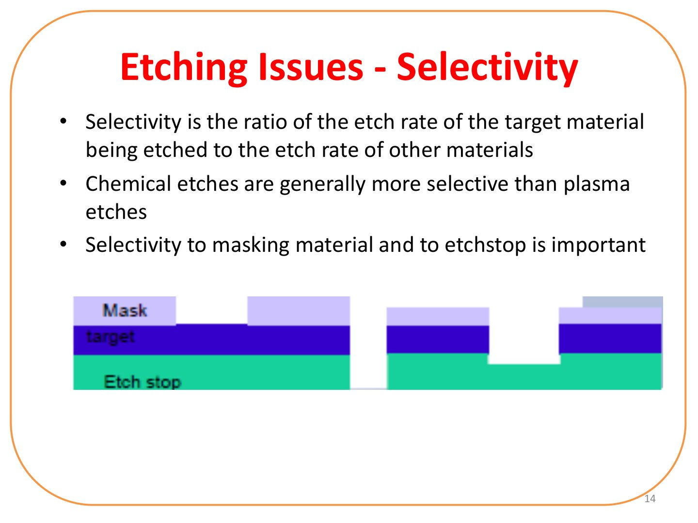
这一页讲选择比，配一张分层结构图：最上层 Mask（掩膜），中间蓝色 target（目标层），最下层绿色 Etch stop（刻蚀停止层）。左右两幅图对比：左图刚刻，右图刻到 etch stop 即停，绿色层基本完好。
文字三条。第一，Selectivity is the ratio of the etch rate of the target material being etched to the etch rate of other materials：选择比是被刻目标材料的刻蚀速率与其他材料刻蚀速率之比。公式化写就是 S = R_target / R_other，R 越大越挑。
第二，Chemical etches are generally more selective than plasma etches：化学刻蚀通常比等离子刻蚀更有选择比。为什么？纯化学靠分子间反应活性差异，A 材料和药液反应快、B 材料几乎不反应，温差悬殊；等离子体里离子轰击对所有材料一视同仁地砸，物理部分不挑材料，所以混合机制的 RIE 选择比往往不如纯湿法化学刻蚀。这就回到第 5、6 页的取舍：干法赢在方向，湿法赢在选择比。
第三，Selectivity to masking material and to etch stop is important：对掩膜材料和对刻蚀停止层的选择比都重要。掩膜选择比保证图形不被啃坏，对 etch stop 的选择比保证刻到停止层就自动"刹车"，不会刻穿到下面。图里绿色 etch stop 就是这个刹车：它耐刻蚀，目标层刻完后，药液或等离子体对它几乎无效，结构自然停住，这在多层薄膜工艺里是关键保险。
这里可以补充一个工程直觉：选择比不是越高越好到无限制，而是"刚好够"。例如目标层 1 µm 厚、掩膜 0.5 µm，选择比 20:1 就足够掩膜只损失 0.05 µm；盲目追求超高选择比往往要牺牲刻蚀速率或各向异性，工艺设计是在这几条之间找平衡。
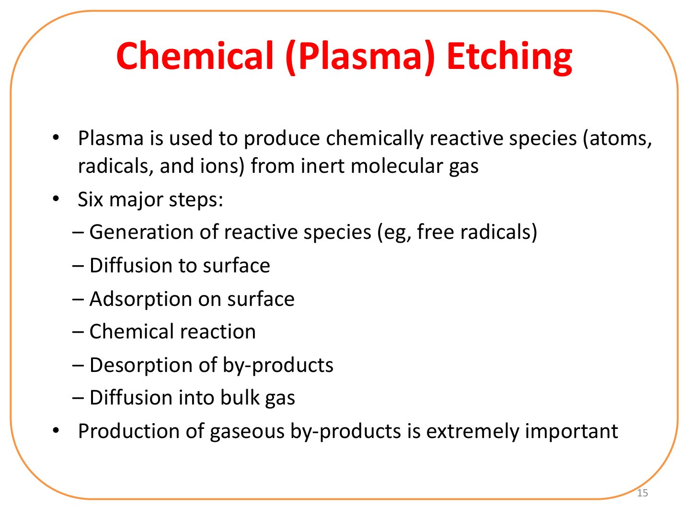
这一页讲纯化学型等离子刻蚀的机制，核心是六步反应链。
开头定义：Plasma is used to produce chemically reactive species (atoms, radicals, and ions) from inert molecular gas：等离子体用于从惰性分子气体中产生化学活性物种——原子、自由基和离子。所谓自由基（free radical），就是带有未成对电子、化学上极活泼的中性片段，比如 CF₄ 被电子撞断后产生的 F 自由基，是真正啃二氧化硅、硅的"干活分子"。
六步：1. Generation of reactive species (eg, free radicals)：产生活性物种（如自由基），在等离子体本体里完成；2. Diffusion to surface：扩散到表面，自由基靠气体扩散到达晶圆；3. Adsorption on surface：吸附在表面，物种贴着目标材料表面；4. Chemical reaction：化学反应，与表面原子结合生成反应产物；5. Desorption of by-products：副产物脱附，产物从表面离开；6. Diffusion into bulk gas：扩散回主体气体，被气流带走。
最后一句：Production of gaseous by-products is extremely important：生成气态副产物极其重要。这是干法的命门：必须造出沸点低、易挥发的产物（比如硅与 F 生成 SiF₄，常温是气体），才能被抽气系统带走；如果产物不挥发，就会重新沉积回表面（第 16 页的 redeposition），刻蚀停住。
六步链可以类比"快递上门"：工厂生产货物（产生活性物种）→ 运输到家门口（扩散）→ 敲门贴门（吸附）→ 进屋交换（反应）→ 旧物搬出（脱附）→ 运出小区（扩散回气相）。任何一步卡住，整条链就停。纯化学刻蚀里离子能量低、几乎不轰击，所以方向差、各向同性，但反应有选择性，这正好与下一页的物理刻蚀互补。
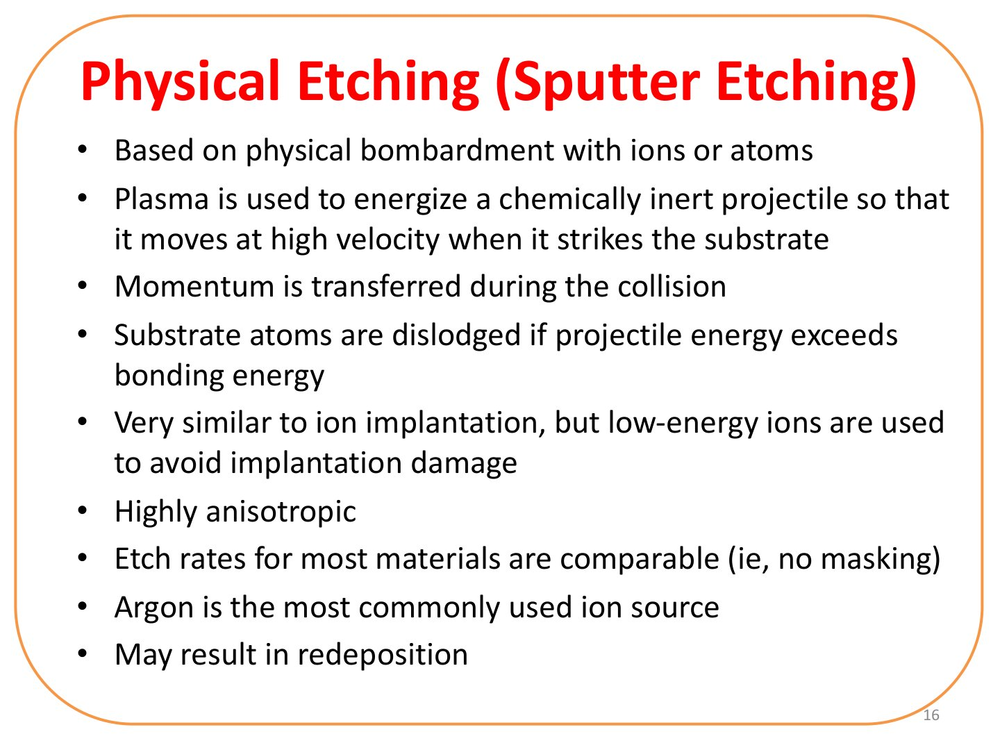
这一页讲纯物理路线，八条，逐条讲。
- Based on physical bombardment with ions or atoms：基于离子或原子的物理轰击。不靠化学反应，纯靠"撞"。
- Plasma is used to energize a chemically inert projectile so that it moves at high velocity when it strikes the substrate：等离子体把化学惰性的射弹加速，使其高速撞击衬底。
- Momentum is transferred during the collision：碰撞过程中传递动量。高速离子把动能传给表面原子。
- Substrate atoms are dislodged if projectile energy exceeds bonding energy：射弹能量超过键合能时，衬底原子被撞离表面。这和第 8 页 2–8 eV 的电子能量呼应，这里强调的是离子本身携带的能量要大于把原子从晶格上拽下来所需的结合能。
- Very similar to ion implantation, but low-energy ions are used to avoid implantation damage：与离子注入非常相似，但使用低能离子以避免注入损伤。区别在于离子注入要把离子打进材料内部掺杂，溅射刻蚀只要把表面原子撞出来，能量压低、不打进晶格。
- Highly anisotropic：高度各向异性。离子被电场加速成垂直束，只往下砸，横向几乎不动，所以侧壁陡直。
- Etch rates for most materials are comparable (ie, no masking)：大多数材料的刻蚀速率相近（也就是说没有掩膜作用）。这是纯物理的最大短板：铝、硅、二氧化硅、光刻胶统统被按差不多的速率撞掉，掩膜根本挡不住，所以"no masking"——没法靠一层膜选出图形。
- Argon is the most commonly used ion source：氩气是最常用的离子源。Ar 是惰性气体，不参与反应，只当"撞锤"。
- May result in redeposition：可能导致再沉积。被撞下来的碎片没有挥发机制，会落在侧壁、掩膜上重新堆回去。
给一个类比：物理溅射刻蚀像"喷砂除锈"，沙子不管碰到什么都打掉一层，除锈彻底但不挑材质，墙上的字和墙一起被打掉。正因如此，纯物理溅射（ion mill，离子铣）只用于需要高方向性、对选择比要求不高的场合，比如减薄、抛光、去层，而不用于精细图形转移。
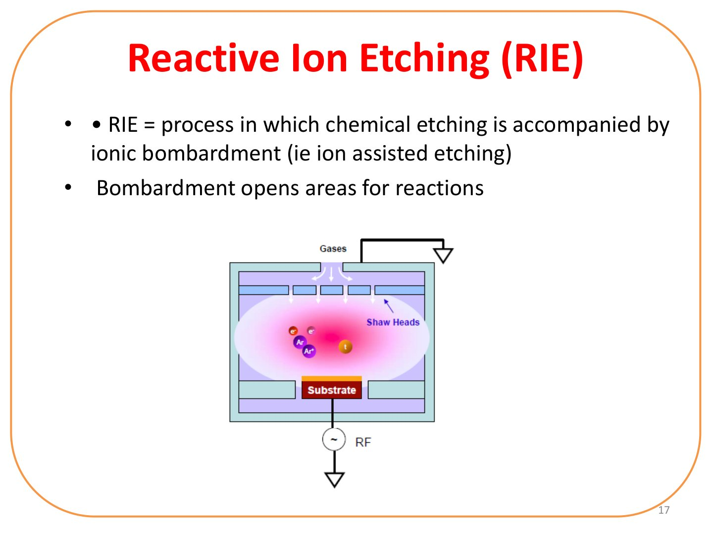
这一页正式引入 RIE，配一张腔体示意图：顶部进气 Gases，侧面箭头标 Shaw Heads（应为 Shield Heads，屏蔽头/聚焦罩），腔内粉色等离子体中有 Ar、Ar⁺ 等粒子，底部 Substrate 衬底接 RF，整体接地回路。
文字两条。第一，RIE = process in which chemical etching is accompanied by ionic bombardment (ie ion assisted etching)：RIE 是化学刻蚀伴随离子轰击的过程，也叫离子辅助刻蚀（ion assisted etching）。也就是说 RIE 不是第三种全新力量，而是第 15 页化学 + 第 16 页物理的叠加：自由基负责"挑材料反应"，离子负责"垂直方向加速"。
第二，Bombardment opens areas for reactions：轰击为反应打开区域。这是 RIE 协同效应的精髓：离子垂直撞击不仅自己撞掉原子，还把表面撞出新鲜、悬空的键，让化学自由基更容易吸附和反应，尤其在水平方向（掩膜底下、侧壁）离子到不了，反应被抑制；垂直表面被持续轰击活化，反应被加速。于是纵向快、横向慢，同时拿到选择性和方向性。
图里的腔体布局值得对照第 10 页：气体从顶部进入，等离子体在中央辉光区生成，衬底放在接 RF 的下电极上，屏蔽头约束气流和电场分布，副产物从侧路抽走。RIE 的全部工艺参数——气体种类与流量、腔压、RF 功率、衬底偏压——都是在调"化学占多少、物理占多少"：功率大、气压低，离子轰击强，更物理更各向异性；功率小、气压高，自由基多，更化学更有选择比。
这一页把 RIE 的完整步骤按顺序列出，是第 15 页化学六步在 RIE 条件下的具体化。
流程：Etching gas is introduced into the chamber continuously（刻蚀气体连续通入腔体）；Plasma is created by RF power（RF 功率产生等离子体）；Reactive species (radicals and ions) are generated in the plasma（等离子体中产生活性物种——自由基和离子），下面用两个箭头分别标注：radicals: chemical reaction（自由基走化学反应路线），ions: bombardment（离子走轰击路线）；Reactive species diffused onto the sample surface（活性物种扩散到样品表面）；The species are absorbed by the surface（被表面吸附，注意这里用 absorbed，即吸收进入表面层）；Chemical reaction occurs, forming volatile byproduct（发生化学反应，生成挥发性副产物）；Byproduct is desorbed from the surface（副产物从表面脱附）；Byproduct is exhausted from the chamber（副产物被排出腔体）。
页面下方橙色框 Gas Selection（气体选择）两条原则：1) React with the material to be etched：与待刻材料反应；2) Result in volatile byproduct with low vapor pressure：生成低蒸气压的挥发性副产物（这里 low vapor pressure 指产物容易挥发离开表面，实际工程上要求产物沸点低、在腔体低压下迅速气化）。
把两条原则翻译成选气逻辑：选气不是看名字好不好听，而是先问"这种气体的自由基能不能和目标材料结合"，再问"结合完的产物是不是气体"。刻硅选含氟气，因为产物 SiF₄ 是气体；刻铝选含氯气，因为产物 AlCl₃ 在低气压加热下可挥发；刻光刻胶用氧气，因为碳氢有机物被氧烧成 CO₂ 和水。下一页的气体表就是这两条原则的实战清单。
这一页是一张实战配方表，列了七类材料、对应气体、刻蚀速率、掩膜材料和选择比。逐行读。
第一行 Si (a-Si，非晶硅)：气体 1) CF₄，2) SF₆，3) BCl₂ + Cl₂；刻蚀速率约 500 Å/min；掩膜可选 Resist（光刻胶）或 Metal (Cr, Ni, Al)；选择比约 20:1（对胶）、约 40:1（对金属）。含氟气对硅刻蚀快，F 自由基与硅生成 SiF₄。
第二行 SiO₂（二氧化硅）：1) CHF₃ + O₂，2) CF₄ + H₂；约 200 Å/min；掩膜 Resist 或 Metal (Cr, Ni, Al)；选择比约 10:1、约 30:1。CHF₃ 里的 C 会在表面形成聚合层，正是靠这种聚合与刻蚀的平衡，才能对硅取得选择比（刻氧化硅不刻硅）。
第三行 Si₃N₄（氮化硅）：1) CF₄ + O₂ (H₂)，2) CHF₃；约 100 Å/min；掩膜 Resist 或 Metal；选择比约 10:1、约 20:1。
第四行 GaAs（砷化镓）：1) Cl₂，2) Cl₂ + BCl₃；约 200 Å/min；掩膜 Si₃N₄；选择比约 10:1、约 20:1。化合物半导体用含氯体系。
第五行 InP（磷化铟）：1) CH4/H2；约 200 Å/min；掩膜 Si₃N₄ 或 Metal；选择比约 40:1。甲烷氢气体系用于 III–V 族半导体，避免形成非挥发性铟卤化物。
第六行 Al（铝）：1) Cl₂，2) BCl₃ + Cl₂；约 300 Å/min；掩膜 Resist 或 Si₃N₄；选择比约 10:1。注意铝表面天然有一层氧化铝，BCl₃ 负责先把这层氧化层还原掉，Cl₂ 再刻铝。
第七行 Resist / Polymer（光刻胶/聚合物）：1) O₂；约 500 Å/min；掩膜 Si₃N₄ 或 Metal (Cr, Ni)；选择比约 50:1。氧气等离子体灰化去胶，就是这一行的应用。
读这张表要抓住三个规律：含氟体系（CF₄、SF₆、CHF₃）主刻硅与氧化硅、氮化硅；含氯体系（Cl₂、BCl₃）主刻金属与化合物半导体；氧气专烧有机聚合物。刻蚀速率量级在每分钟一两百到五百埃，选择比普遍在 10:1 到 50:1 之间，这就是干法工艺的典型参数窗口。
这一页是一张三列对比图，把三种干法路线沿腔压、束能、各向异性、选择比四个维度排开，是全课的总结性图表，必须带着学生逐列读。
第一列 Chamber Pressure（腔体气压）：从上到下 High >100 mTorr（高，大于 100 毫托）、Low 10–100 mTorr（中低）、Very Low <10 mTorr（极低，小于 10 毫托）。第二列 Beam Energy（束能量）：Low（低）、Medium（中）、High（高）。中间大框 Dry Etching 分三行：Plasma Etching（等离子体刻蚀，plasma assisted chemical reaction，等离子体辅助化学反应）；Reactive Ion Etching（RIE，physical bombardment + chemical reaction，物理轰击加化学反应）；Physical Sputtering / Ion Mill（物理溅射/离子铣，physical bombardment，纯物理轰击）。第四列 Anisotropy（各向异性）：Low（低）、Medium（中）、High（高）。第五列 Selectivity（选择比）：Very Good（很好）、Good（好）、Poor（差）。
把两条趋势线画出来：从等离子体刻蚀 → RIE → 离子铣，气压越来越低、离子能量越来越高、各向异性越来越强，但选择比越来越差。 这就是干法里"方向"和"选择"的跷跷板。等离子刻蚀气压高、离子能量低，自由基为主，选择比很好但各向异性低；离子铣气压极低、能量高，方向最陡但不挑材料；RIE 居中，用物理加化学拿到中等偏上的两者，所以是量产主力。
可以给一个"调档"记忆：想保选择比、轮廓要求不高，用等离子刻蚀档；想要图形陡直又要一定选择性，用 RIE 档；只做纯方向性去层、不在乎选材，用离子铣档。这张图是后面选型的总索引。
从这一页开始进入湿法。图中是一套典型的湿法浸泡装置：加热釜放在 Hot Plate（热板）上，控制器显示 50°C；釜内立着 Wafer Boat（晶圆舟，带卡槽的支架），Wafers（晶圆）水平插在舟上；釜口有 Teflon Cover（聚四氟乙烯盖），盖上留 Holes（排气孔），还有 Plastic Screw for Handle（提手塑料螺丝）；一根 Thermometer（温度计）插在液里；左侧 Probe with glass cover（带玻璃护套的探头）接出；右下角小图是 Teflon Stirrer & Guide Plate（聚四氟乙烯搅拌子与导向板），带旋转箭头。
逐个讲部件功能。晶圆舟让多片晶圆并排垂直浸入，一次处理一整批，这就是第 23 页 high throughput batch process 的硬件来源。热板加温控温，刻蚀速率对温度极敏感（第 26 页氢氟酸、第 28 页磷酸都强调温度），所以必须有温度计实时监测、不能只看热板设定值。Teflon 盖既保温又防止药液飞溅和挥发，盖子上的孔让气体溢出泄压。搅拌子让药液流动、补充新鲜刻蚀剂到晶圆表面，否则表面反应产物堆积会让局部速率下降、均匀性变差。带玻璃护套的探头通常是温度或液位传感。
画面类比：整套装置像"中药熬锅"——锅（釜）、药材（药液）、竹屉（晶圆舟）、温度计、搅拌、加盖小火慢熬，区别只在于这里熬的是危险化学药液。实操要点：晶圆进釜前要确认液面没过整片、温度到达设定值并稳定、搅拌已启动；取出后立刻进入 DI 水（去离子水）漂洗终止反应，这一步"停"得快不快，直接决定线宽准不准。
这一页上图是初始状态：红色掩膜块排在蓝色目标层上，底下是灰色 substrate（衬底）。下图并排画出三种缺陷：
第一种 Blocking（堵塞/阻挡）：左图开口处药液进不去，中间形成一个圆球状未刻区，这通常是表面张力、气泡或疏水区域把药液挡在开口外，小图形尤其容易发生。
第二种 Isotropic undercut（各向同性侧向钻蚀）：中图掩膜块底下被圆弧状横掏，蓝色层向两边退，中央留下一个锥形残柱，这是各向同性刻蚀的必然结果，也是湿法做不了细线的原因。
第三种 Poor adhesion（附着不良）：右图红色掩膜在热药液里翘起、与蓝色层脱开，药液从底下渗入，整片膜被掀起，图形全部走样。
把三种问题对应到后面的文字页：blocking 和小图形、表面张力有关（第 23 页），undercut 是各向同性本性（第 11、12 页），poor adhesion 是热化学药液破坏光刻胶附着（第 23 页）。这一页的价值是把"湿法为什么被边缘化"可视化：不是药液刻不动，而是这三类缺陷在精细图形里几乎无法避免。
这一页系统列出湿法的优缺点，先讲优点。
Advantages（优点）：- Simple equipment（设备简单），一个釜、一个热板、通风柜即可，远便宜于真空腔体；- High throughput (batch process)（高吞吐，批量工艺），一舟多片同时泡；- High selectivity（高选择比），化学药液靠反应活性差异挑材料，常常几十比一甚至更高。
Disadvantages（缺点），逐条展开：
- Isotropic etching leads to undercutting：各向同性刻蚀导致侧向钻蚀，前面已讲，决定湿法不适合细线条。
- Uses relatively large quantities of etch chemicals, must immerse wafer boats, must discard partially used etch to maintain etch rate：用量大，必须整舟浸泡，而且为维持刻蚀速率必须倒掉部分用过的药液。为什么用过的要倒掉？反应消耗使有效成分浓度下降、产物堆积，速率随批次漂移，只能定期补新或弃用，药液成本上升。
- Hot chemicals create photoresist adhesion problems：热化学药液造成光刻胶附着问题，对应第 22 页 poor adhesion。
- Small geometries difficult, line with > thickness, etch block caused by surface tension：小尺寸困难，线条宽度大于膜厚才好刻，表面张力造成刻蚀堵塞。图形越窄，药液越难靠表面张力进入，气泡封死开口。
- Critical Etch time, dimensions change with etch time, bias develops：刻蚀时间是关键变量，尺寸随刻蚀时间变化，逐渐形成线宽偏移。湿法没有"自动刹车"，多泡一秒多钻蚀一圈，时间必须精确到秒。
- Chemical costs are high：化学品成本高；Disposal costs are high：废液处理成本高，危险废液要专门收集处置。
这一页讲湿法用什么药、刻什么材料。
Mixtures of acids, bases, and water：酸、碱与水的混合物；例子 HF（氢氟酸）、H₃PO₄（磷酸）、H₂SO₄（硫酸）、KOH（氢氧化钾）、H₂O₂（过氧化氢）、HCl（盐酸）……。酸类负责氧化、络合，碱类（KOH）用于各向异性刻硅，水负责稀释。
Can be used to etch many materials：可刻蚀多种材料；Si、SiO₂、Si₃N₄、PR（光刻胶）、Al、Au、Cu……。湿法覆盖面极广，从硅、氧化层、氮化层到金、铜等金属都有对应配方。
Etch Rate（刻蚀速率）：wide range，范围很宽，从磷酸刻氮化硅的每分钟零点零零五微米到浓氢氟酸刻氧化硅的每分钟两微米以上，跨几个数量级，靠浓度、温度调节。
Etch Selectivity（刻蚀选择比）：typically quite high（通常相当高）；sensitive to contamination（对污染敏感）。选择比高，但一点杂质——别的金属离子、颗粒——就可能改变反应、引入缺陷，所以湿法对洁净度要求苛刻。
Etch Geometry（刻蚀几何）：typically isotropic, some special cases are anisotropic（通常各向同性，个别特殊情况各向异性）。这个"特殊情况"就是第 30、31 页的 KOH 碱刻硅——靠晶面速率差实现各向异性，是湿法里唯一的定向高手。
说明一下，这一页课件内容与第 23 页相同（同一张优缺点表在课件中重复出现），这里我们换一个角度，从工艺工程角度把湿法与干法放在天平上再称一次，避免简单重复。
先讲"什么场合湿法仍然活着"。尽管干法主导了精细图形转移，湿法在三类场景里至今不可替代：第一，厚膜、大余量的快速去除，比如整片氧化层的背面减薄、整层金属的去除，不需要保图形，湿法又快又省又高选择比；第二，对选择比要求极端苛刻的步骤，比如只去掉薄氧化层而绝不动硅，干法离子轰击难免伤硅，湿法 HF 可以做到几乎不碰硅；第三，实验室小批量、低成本的原型开发，没有真空设备时湿法是起步手段。
再把第 23 页的缺点逐条翻译成"工程代价"。设备简单意味着自动化程度低，依赖操作者手感；批量吞吐高意味着一旦药液老化，整批一起报废；高选择比换来的是各向同性，所以湿法天然和"粗、厚、选得准"绑定，而干法和"细、直、可控"绑定。Critical etch time 在工程上具体表现为：湿法刻蚀通常要做"试片"——先拿废片试出该浓度该温度下达到目标厚度所需的秒数，正式片严格计时、到时迅速提出漂洗，刻深误差直接换算成线宽误差，没有 RIE 那种终点检测（end point detection，靠光学发射或干涉自动判断刻穿）兜底。
最后讲废液与成本闭环。湿法成本不只是买酸买碱，更大头在废酸、含氟废液、含重金属废液的中和、沉淀、委外处理；HF 废液还要单独按氟化物危废管理。这也是现代产线尽量把湿法压缩到不可替代步骤的经济原因。理解了这一页，就理解了第 5 页干法优点为什么在工业上被反复强调。
这一页讲最经典的湿法药液 HF，分五块。
第一，Selective (room temperature)：室温下有选择性——etches SiO₂ and not Si（刻二氧化硅而不刻硅）；但 will also attack Al, Si₃N₄,…（也会攻击铝、氮化硅等）。所以 HF 的"选择"是相对的：对硅安全，对铝和氮化硅不安全，设计掩膜和下层结构时必须避开这些材料。
第二，Rate depends strongly on concentration：速率强烈依赖浓度。maximum: 49% HF ("concentrated") ~>2 µm/min（最大：49% 浓氢氟酸，大于 2 微米每分钟）；controlled: 5 to 50:1 ("timed") ~<0.1 µm/min（受控：5:1 到 50:1 兑水稀释，定时刻蚀，小于 0.1 微米每分钟）。浓酸快到难以控制，稀释后速率降到每分钟零点一微米以下，才能靠"定时"精确控制去多厚，这就是"timed etch（定时刻蚀）"的由来。
第三，Dangerous!（危险！）这一页安全信息必须重点讲：not a strong acid（它不是强酸，解离弱，所以一开始不觉得疼）；deceptive (looks just like water)（有欺骗性，看起来和水一模一样）；penetrate skin (adsorption) and attacks slowly（经皮肤吸附渗透，缓慢攻击）；will target bones（专门攻击骨骼，氟离子与钙结合，造成深部组织和骨损伤）。这是实验室里最需要敬畏的化学品之一：接触后当时无痛，几小时后才显现，必须立即大量冲水并按急救流程处理。
第四，Etch Geometry：completely isotropic (used to undercut/release)（完全各向同性，用于侧向钻蚀/释放）。正因为各向同性，HF 常被反过来利用——做微机械释放结构（release），从底下把氧化层掏空，让上层结构悬空。
第五，Reactions（反应式）：SiO₂ + 6HF → H₂SiF₆(aq) + 2H₂O。二氧化硅与六分子氢氟酸反应，生成可溶的氟硅酸水溶液和水，产物溶于水被带走，符合第 2 页"产物可溶"的要求。
这一页讲 BHF。开头：Buffered HF (BHF), also called Buffered oxide etch (BOE)，缓冲氢氟酸，又称缓冲氧化物刻蚀液；addition of NH₄F to HF solution，在氢氟酸溶液中加入氟化铵。
两个作用：control the pH value（控制 pH 值）；replenish the depletion of the fluoride ions to maintain stable etching performance（补充被消耗的氟离子，维持稳定刻蚀性能）。为什么要缓冲？纯 HF 反应时不断消耗 F⁻，浓度越刻越低、速率越来越慢，批次之间不稳定；加入 NH₄F 作为氟离子储备库，F⁻ 被消耗时 NH₄F 持续解离补充，pH 也被稳住，于是速率恒定、可重复，这就是"缓冲"二字的工程含义。
两个反应式：第一个，SiO₂ + 4HF + 2NH₄F → (NH₄)₂SiF₆ + 2H₂O，二氧化硅、四分子 HF 与两分子 NH₄F 生成氟硅酸铵和水；第二个，SiO₂ + 3HF₂⁻ + H⁺ → SiF₆²⁻ + 2H₂O，从离子角度写，真正进攻的是 bifluoride 离子 HF₂⁻。BHF 是实验室去氧化层、泡薄氧化膜的标准药液，速率比浓 HF 温和、稳定，配合定时使用。
这一页讲热磷酸刻氮化硅 Si_xN_y。
Selectively (high-temperature)：高温下选择性刻蚀——etches SixNy and not Si or SiO₂（刻氮化硅而不刻硅或二氧化硅）；etches Al and other metals much faster（但刻铝和其他金属快得多）。所以热磷酸里不能有裸露铝线，掩膜也不能用铝。
Rate（速率）：Slow! R ~>0.0050 µm/min for H₃PO₄ at 160°C（慢！160°C 磷酸速率约大于 0.0050 微米每分钟）。注意条件是 160°C 高温，室温几乎不反应，必须加热到近沸腾；即便如此速率也极慢，刻一层氮化硅往往要几十分钟到一小时。
Tough Masking Materials Needed（需要坚固掩膜材料）：PR will not survive（光刻胶扛不住）；Oxide is typically used（通常用氧化层做掩膜）。160°C 强酸会把光刻胶泡脱落、碳化，所以掩膜改用二氧化硅这类无机层。
Etch Geometry：completely isotropic（完全各向同性）。又是各向同性，所以热磷酸只用于去氮化硅层、不用于保精细图形。
这一页讲 HNA 体系，三种酸混合。
-mixture of nitric (HNO₃), hydrofluoric (HF) and acetic (CH₃COOH) acids：硝酸、氢氟酸、醋酸的混合液。
-HNO₃ oxides Si, HF removes SiO₂, repeat…：硝酸把硅氧化成二氧化硅，HF 把生成的二氧化硅去掉，循环往复。两个反应式：Si + 4HNO₃ → SiO₂ + 2H₂O + 4NO₂（硅被硝酸氧化，放出二氧化氮）；SiO₂ + 6HF → H₂SiF₆ + 2H₂O（氧化层被 HF 溶掉）。硅表面不断"被氧化—被溶掉"，整体被削去。
-high HNO₃:HF ratio (etch limited by oxide removal)：硝酸比例高时，刻蚀受限于氧化层去除（HF 不够，溶不动生成的氧化层，速率由 HF 决定）。
-low HNO₃:HF ratio (etch limited by oxide formation)：硝酸比例低时，刻蚀受限于氧化层生成（硝酸不够，氧化慢，速率由硝酸决定）。通过调两者比例，可以控制哪一步是限速步，从而调速率和表面形貌。
-dilute with water or acetic acid (CH₃COOH)：用水或醋酸稀释。
-acetic acid is preferred because it prevents HNO₃ dissociation：优选醋酸，因为它抑制硝酸解离。醋酸作为弱酸介质，维持硝酸分子形态、稳定氧化能力，避免硝酸过快分解失效。HNA 是各向同性的硅化学刻蚀，用于粗磨、去损伤层，不做定向图形。
这一页讲碱刻硅的化学，是第 31 页各向异性 KOH 的化学基础。
Several hydroxides are useful：可用的氢氧化物有 KOH、NaOH、CsOH、RbOH、NH₄OH、TMAH: (CH₃)₄NOH（四甲基氢氧化铵）。其中 KOH 最经典，TMAH 因为不含金属钾钠离子、与 CMOS 工艺兼容，被现代产线青睐。
Oxidation of silicon by hydroxyls to form a silicate：氢氧根把硅氧化形成硅酸盐——Si + 2OH⁻ + 4h⁺ → Si(OH)₂²⁺（这里 h⁺ 是空穴，硅在碱性中被氧化）。
Reduction of water：水被还原——4H₂O → 4OH⁻ + 2H₂ + 4h⁺，放出氢气，这也是碱刻硅时液面冒气泡的来源。
Silicate further reacts with hydroxyls to form a water-soluble complex：硅酸盐进一步与氢氧根反应生成水溶性络合物——Si(OH)₂²⁺ + 4OH⁻ → SiO₂(OH)₂²⁻ + 2H₂O，最终产物溶于水被带走。
Overall redox reaction is：总氧化还原反应 Si + 2OH⁻ + 4H₂O → Si(OH)₂²⁺ + 2H₂ + 4OH⁻。理解这条链：氧化提供空穴、水被还原放氢、硅酸盐溶解，三步配合把硅持续溶掉。
这一页是湿法里唯一的各向异性实例，也是 MEMS 微机械最经典的工艺，图与公式都要讲透。
左图是一片 {100} 晶面朝上的硅晶圆，表面有 SiO₂ 掩膜，沿 {110} 方向开了大小两个长方形窗口，箭头标出 cross-section（截面）。右上截面图显示：KOH 刻进去后，侧壁不是垂直，而是与水平面成 54.7° 角的 {111} 晶面；中央保留一段 (100) 平底，开口顶宽 W₀，底部残宽 W_b，刻深 l，顶部两侧是 SiO₂ 掩膜。
原理要点：硅的不同晶面在 KOH 里溶解速率差别巨大，{100} 面刻得快，{111} 面刻得极慢，慢到近似"壁"。于是快的 {100} 不断往下退，直到暴露出发育缓慢的 {111} 面就停住，形成固定 54.7° 的斜壁——54.7° 正是 {111} 面与 {100} 面之间的夹角，由晶体几何决定，全世界 KOH 刻硅都是这个角度，改不了。
几何公式：W_b = W₀ − 2·l·cot 54.7°；而 cot 54.7° = 1/√2，所以 W_b = W₀ − √2·l。意思是刻深 l 每增加一点，底部宽度就按 √2·l 收窄；当 l 足够大，两侧 {111} 面在底中央相交，就形成左下方 SEM 照片里那种菱形倒四棱锥坑，底部只剩一个小方点；右下 SEM 是一排阶梯式的沟槽结构。
这一页要把"湿法为什么也能各向异性"讲清楚：前面说湿法各向同性，那是化学活性各向同性；KOH 靠的是晶体各向异性（晶面速率差），和 RIE 靠离子定向是两条完全不同的各向异性路线。KOH 只能出 54.7° 斜壁、受晶向限制，这就是第 5 页干法"不依赖晶向也能定向"的对比点。
从这两页开始讲配套的清洗工序，清洗是刻蚀前后都离不开的步骤。
General Clean（通用清洗）：A general cleaning is accomplished by using a mixture of Sulfuric Acid and Hydrogen Peroxide（硫酸加过氧化氢的混合液，俗称 piranha 洗液，食人鱼洗液）。Mixing these chemicals is dangerous and generates extreme heat（混合危险并放出大量热，必须缓慢把酸加入过氧化物，顺序反了会暴沸飞溅）。This industry standard clean removes organic and inorganic contamination from the wafer（这一工业标准清洗去除晶圆上有机与无机污染）。2-10 minute clean is recommended（建议清洗 2 到 10 分钟）。Strong rinse in DI water is required after this cleaning step（之后必须用去离子水大力漂洗）。
Particle Removal（颗粒去除）：A Megasonic clean (at about 70 C) in a 5:1:1 ratio mixture of DI water: Ammonium Hydroxide: Hydrogen Peroxide（约 70°C 兆声清洗，去离子水:氢氧化铵:过氧化氢按 5:1:1 配比，即经典 SC-1 氨水双氧水体系）will remove silica and silicon particles from the wafer, as well as remove certain organic and metal surface contamination（去除硅石与硅颗粒，同时去除部分有机和金属表面污染）。2-10 minute clean；strong DI rinse。兆声（megasonic）靠高频声波产生微流把颗粒从表面震下来，比超声温和、不损伤细线条。
这一页是清洗后半部分。
Oxide Removal（氧化层去除）：A 15-60 second dip in 1:20 HF:DI water will remove the native oxide layer and any contamination in the oxide from the wafer surface（1:20 氢氟酸兑去离子水，浸泡 15 到 60 秒，去掉自然氧化层及氧化层内污染）。HF is extremely dangerous and must be handled with great care（氢氟酸极度危险，必须极其小心操作，呼应第 26 页）。Strong DI rinse required。自然氧化层（native oxide）是硅暴露空气中自动长的薄薄一层，下一步要做接触或沉积前必须用稀 HF 短时泡掉。
Metal Contamination Removal（金属污染去除）：A Megasonic clean (at about 70 C) in a 6:1:1 ratio mixture of DI water: HCL: Hydrogen Peroxide will remove certain ionic and metal surface contamination（约 70°C 兆声清洗，去离子水:盐酸:过氧化氢 6:1:1，即 SC-2 盐酸双氧水体系，去除离子型和金属表面污染）。2-10 minute clean；strong DI rinse。SC-1 主打颗粒与有机、SC-2 主打金属离子，piranha 主打重有机，三步配合构成标准清洗序列，每步之间都要 DI 水彻底漂洗，绝不允许把上一步药液带到下一步。
让我们把今天的路线再走一遍：从术语地基出发——刻蚀、掩膜层、湿法/干法、各向同性/各向异性、选择比、深宽比；进入干法——先看优点（免危险酸碱、用量小、可控、易自动化）与缺点（气体毒腐、再沉积、设备贵），再认识等离子体的形成与 2–8 eV 电子能量、RIE 腔体内接地阳极与 RF 阴极的暗鞘结构；然后沿第 20 页的跷跷板看到三种干法路线——等离子化学刻蚀（选择比好、方向差）、RIE（化学加轰击、均衡）、物理溅射离子铣（方向强、无选择）；接着转入湿法——装置、三类缺陷、优缺点权衡，再逐个讲五种经典药液：HF 刻二氧化硅（危险、各向同性、可释放）、BHF/BOE 缓冲稳速、热磷酸刻氮化硅（160°C、胶扛不住）、HNA 循环氧化溶硅、KOH 靠晶面差做出 54.7° 各向异性坑；最后以 piranha、SC-1、稀 HF、SC-2 的清洗序列收尾。
干法与湿法、化学与物理，这两条线背后是同一个共同骨架：产生活性物种 → 扩散到表面 → 吸附 → 反应 → 生成可溶/可挥发产物 → 脱附排走。 无论用液体还是等离子体，只要这条链六步顺畅，刻蚀就能进行；方向由"离子定向"或"晶面差"提供，选择比由"反应活性差异"提供，终点由"定时或停止层"控制。抓住这条链，你就能读懂任何一篇刻蚀工艺论文。
最后用四个问题检验自己。第一，RIE 里自由基和离子各承担什么角色？为什么两者配合能同时拿到选择性和各向异性？第二，第 20 页图上，从等离子刻蚀到离子铣，腔压、离子能量、各向异性、选择比分别朝哪个方向变？第三，49% 浓 HF 和 5:1 稀释 HF 的刻蚀速率差多少？为什么去薄氧化层要选稀释定时而不是浓酸？第四，KOH 刻 {100} 硅得到的侧壁角度为什么固定是 54.7°？它和 RIE 的各向异性机制有什么本质不同？能清晰回答这四个问题，说明你已经从"记名词"走到了"懂选型"。学有余力的同学再追问一个跨工艺问题：如果要做一个又深又直、侧壁垂直的硅沟槽，应该选 KOH、HF、RIE 还是 DRIE？为什么？把每条路线的边界在脑子里各归各位，比背下任何一个反应式都更有用。
进实验室之前，请再次查阅所用设备——RIE 腔体、湿法通风柜、热板、兆声清洗机——和所有化学品（HF、H₃PO₄、HNA、piranha、SC-1/SC-2）的最新操作规范与安全说明，特别重视氢氟酸的急救流程。本讲稿只用于理解原理和课件图片；具体测量参数、浓度配比、温度时间与安全要求，一律以培训后的现场 SOP 为准。
| 英文术语 | 中文 | 一句话解释 |
|---|---|---|
| Etching | 刻蚀 | 把材料从表面选择性去除的工艺 |
| Mask layer | 掩膜层 | 保护该留区域的光刻胶或无机层 |
| Wet etching | 湿法刻蚀 | 浸在反应液中靠溶解/反应去材料 |
| Dry etching | 干法刻蚀 | 在气体/等离子体中靠反应加轰击去材料 |
| Isotropic / anisotropic | 各向同性/各向异性 | 各向同速/纵向快于横向 |
| Selectivity | 选择比 | 目标层速率与被保护层速率之比 |
| Aspect ratio | 深宽比 | 刻蚀结构深度与宽度之比 |
| Undercut | 侧向钻蚀 | 掩膜底下被横向掏空 |
| Plasma | 等离子体 | 部分电离、整体电中性的气体，物质第四态 |
| RF (radio frequency) | 射频 | 通常 13.56 MHz，用于点燃和维持等离子体 |
| Self-bias / sheath | 自偏压/鞘层 | 衬底附近负电荷层，定向加速离子 |
| RIE (Reactive Ion Etching) | 反应离子刻蚀 | 化学刻蚀加离子轰击的主流干法 |
| Plasma etching | 等离子刻蚀 | 纯化学辅助、选择比高、各向异性低 |
| Sputter etching / Ion mill | 溅射刻蚀/离子铣 | 纯物理轰击、各向异性强、无选择比 |
| Radical | 自由基 | 带未成对电子的活泼中性反应片段 |
| Volatile byproduct | 挥发性副产物 | 干法必须生成、才能被气流带走的产物 |
| Redeposition | 再沉积 | 非挥发碎片落回表面重新堆积 |
| BHF / BOE | 缓冲氢氟酸/缓冲氧化物刻蚀液 | HF 加 NH₄F，稳 pH、补氟离子、稳速率 |
| HNA | 硝酸-氢氟酸-醋酸混合液 | 循环氧化—溶解来刻硅 |
| DRIE | 深反应离子刻蚀 | 刻高深宽比深硅结构，博世工艺 |
| Piranha (H₂SO₄+H₂O₂) | 食人鱼洗液 | 硫酸双氧水去重有机污染，放热危险 |
| SC-1 (NH₄OH:H₂O₂:H₂O) | 一号标准清洗液 | 去颗粒与部分有机、金属 |
| SC-2 (HCl:H₂O₂:H₂O) | 二号标准清洗液 | 去离子与金属污染 |
| Native oxide | 自然氧化层 | 硅暴露空气自生的薄氧化层，稀 HF 去除 |
3D 教学示意模型：拖动旋转、滚轮缩放、点击部件查看构造；模型为原理示意，具体参数与安全要求以课件讲解稿与现场 SOP 为准。
同学们，今天的主题是 Evaporation, Sputtering，蒸发与溅射，同时课件还带到一页化学气相沉积（chemical vapor deposition, CVD）。在器件制造里，我们经常需要在衬底（substrate）表面长出一层薄薄的膜：金属电极、绝缘层、半导体层、阻挡层，厚度从几纳米到几微米不等。这些膜不是用刷子刷上去的，而是在真空腔里通过物理或化学过程"长"出来的。今天这三页设备、几幅原理图，回答的就是一个问题：材料粒子怎样从源出发，穿过真空，落到衬底上，长成一层均匀薄膜？
先把三条路线的本质区别摆出来，这是贯穿全篇的主线。第一条是热蒸发（thermal evaporation）：把待沉积材料（evaporant，蒸发物）加热到足够高的温度，让它的原子或分子获得足够动能从表面逸出，变成蒸汽，在真空中直线飞向冷的衬底，凝结成膜。第二条是溅射（sputtering）：不加热源材料，而是用高能离子（通常是氩离子 Ar⁺）轰击靶材（target）表面，把靶原子一个一个"打"出来，被打出来的原子飞到衬底成膜。第三条是化学气相沉积：让气态反应物在衬底表面发生化学反应，反应产物在衬底上固体成膜，副产物以气体排走。一句话记忆：蒸发是"烧热了自己跑出来"，溅射是"被离子撞出来"，CVD 是"在表面反应生成"。
为什么这三种方法都必须在真空里进行？这是理解全部设备的钥匙。第一，真空里残余气体分子少，蒸发原子或溅射原子从源到衬底的路上不会频繁撞上空气分子而被散射、氧化或污染；第二，高温蒸发物遇到氧气、水蒸气会立刻氧化，必须把这些气体抽走；第三，溅射需要先在低压惰性气体中维持稳定的辉光放电（glow discharge），气压太高或太低都放不出电。所以每一台设备照片背后，都藏着一套真空系统：机械泵（roughing pump，前级泵）抽低真空，涡轮分子泵（turbo-molecular pump, turbo-pump）抽高真空，真空度通常要达到 10⁻⁵ 到 10⁻⁷ 帕甚至更高。课件第 8 页那张腔体特写里直接标出了 Turbo-pump（涡轮分子泵），大家到时候要把它和原理对应起来。
本节课的框架：第 1 页标题；第 2、3 页先认识两类蒸发设备——热蒸发台与电子束蒸发台；第 4 页讲蒸发机的腔体配置（装片室、样品台、源的位置关系）；第 5 页深入电子束蒸发的内部原理；第 6 页讲一次完整镀膜运行的功率—时间程序；第 7 页认识各种蒸发源（灯丝、舟、坩埚）；第 8、9 页转入溅射设备与溅射机理；第 10、11 页介绍 CVD 的流程与材料清单；第 12 页用一张 LPCVD 与 PECVD 氮化硅对比表收束。听课时请持续追问三个问题：粒子是靠什么能量离开源的？它在真空里走直线还是扩散？成膜质量（纯度、附着力、台阶覆盖、均匀性）由什么决定？
先给一个生活类比，帮助区分蒸发和溅射。蒸发像一锅烧开的水：锅底加热，水分子自己获得能量变成蒸汽往上飘，遇到冷锅盖凝结成水珠。溅射像用高压水枪冲一面墙：水（离子）高速撞上去，墙皮（靶原子）被一块块冲下来，飞溅到旁边的墙上。CVD 则像在墙上刷一层会自己固化的涂料：气态原料到达墙面发生反应，固体留下、气体走掉。这个类比会在第 9 页溅射机理处再次使用。
这一页只有红色标题，没有正文。讲解时先界定课程范围：本讲聚焦物理气相沉积（physical vapor deposition, PVD）中的蒸发与溅射，并以一页 CVD 作为对照；不展开光刻、刻蚀等其他工艺，那些在各自课件里讲。对初学者，先建立"源—真空—衬底"三段式的成膜图像，比记住设备型号更重要。
可以这样开场提问："大家想一想，我们在实验室里给芯片镀一层铝电极，能不能直接在空气里把铝烧化倒上去？"答案是否定的：铝在空气中一加热就迅速氧化成氧化铝，而且熔融铝会污染衬底，空气中的尘埃、水汽会嵌进膜里。所以必须先抽真空，再让铝原子在干净的真空中飞到衬底。这个问题直接引出真空的必要性，也为第 2 页设备照片里那个不锈钢大腔体做铺垫。
还要预告三个会反复出现的工艺指标，后面每看到一种方法都用它们去衡量：沉积速率（deposition rate，单位时间长多厚，常用 Å/s 或 nm/min）、膜厚均匀性（uniformity，整片衬底上厚度差多少）、台阶覆盖（step coverage，膜能不能覆盖到沟槽侧壁和底部），以及膜的纯度与附着力（adhesion）。蒸发的台阶覆盖一般较差（直线飞行，阴影效应明显），溅射和 CVD 更好，这是三种方法选型的核心依据，第 9、10 页会回扣。
这一页是两台热蒸发设备的实物照片。左图是一台立式不锈钢钟罩式蒸发台：上方是圆柱形不锈钢真空钟罩（bell jar），旁边放着可拆卸的圆形样品/源盘，下方机柜上密布仪表、开关和指示灯。右图是一台小型台式蒸发台：腔体外部罩着一层金属网状安全屏蔽（mesh shield，防止高温辐射和意外触碰），右侧是带指针表和旋钮的控制机柜，前面板有多个电压表、电流表和调节旋钮。
先讲热蒸发的基本配置：一个可抽真空的钟罩腔体，底部放置蒸发源（加热体），上方悬挂衬底样品台；抽至高真空后，给加热体通电，待蒸发材料放在加热体上被烧热，蒸汽向上飞向衬底凝结。左图那种大立式钟罩适合批量、大尺寸镀膜，右图小型台适合教学实验室和小样品。
认识面板上的仪表：电压表、电流表显示加热体的供电；因为热蒸发靠电流直接加热（焦耳热），加热体电阻很小、电流很大，所以面板上常见大电流表。网状屏蔽的作用有三：遮挡高温热源的热辐射保护周围、防止人员误触高温或高压、同时在万一蒸发物喷溅时提供物理防护。安全提醒：钟罩内是高温加热体和高真空，开盖必须等腔体冷却、破真空到常压后进行，严禁带压强行开盖，具体以现场 SOP 为准。
再展开讲热蒸发的加热方式，这是本页可以充分补充的原理。最简单的热蒸发是电阻加热（resistive heating）：把待蒸发材料放在高熔点、低蒸气压的耐高温载体上——螺旋钨丝（tungsten coil）、钼或钽制成的舟（boat）——通大电流让载体自身发热，把材料烤化蒸出。适合低熔点、易蒸发的材料，比如铝、金、银、铬以及很多有机材料。但电阻加热有上限：载体本身熔点有限，温度太高载体自己先蒸发或熔化，所以钨（熔点约 3410 ℃）、钽、铌这类高熔点金属，以及氧化物陶瓷，电阻加热蒸不动，必须用第 3 页的电子束加热。这一页的设备照片里，加热源藏在钟罩底部，第 7 页会专门展示各种灯丝和舟的实物。
这里要把"为什么必须高真空"再讲透一层，因为它是所有蒸发设备的共同前提。蒸发原子从热源逸出时携带的动能不大，如果腔内空气分子多，蒸发原子在飞到衬底的路上会不断与氧分子、氮分子、水蒸气分子碰撞，方向被打乱、能量被损耗，甚至在途中就被氧化成氧化物颗粒，这样落到衬底上的既不是纯膜也不是均匀膜。工程上用平均自由程（mean free path）来描述一个分子连续两次碰撞之间走过的平均距离：大气压下平均自由程只有几十纳米，而真空抽到 10⁻⁵ 托量级时，平均自由程可以达到几米，远大于源到衬底几十厘米的距离，蒸发原子才能"一路不碰壁"地直线飞到衬底。这就是真空度与成膜质量直接挂钩的物理原因。此外，残余氧和水蒸气还会在高温热源处就把材料氧化，使蒸出的蒸汽成分不纯，所以正式镀膜前通常要先抽至高真空，再在低功率下保温除气，把腔内吸附的水汽彻底赶走。
还要补充热蒸发成膜的几个固有特点，便于后面与溅射对比。第一，蒸发原子动能低，打到衬底后迁移能力弱，膜往往偏疏松，附着力一般，遇到台阶容易在背风面形成断坡。第二，因为源近似点源、按余弦定律发散，远离法线方向的衬底位置膜厚明显变薄，所以设备常让样品台旋转，用旋转平均来改善均匀性。第三，蒸发不能蒸合金的固定成分：合金中蒸气压高的组分会先跑出来，先镀的膜与后镀的膜成分不同，即分馏（fractionation）问题；要镀合金膜，蒸发法往往不如溅射或 CVD 可控。这些特点不是缺点，而是选型依据：简单、低熔点、平面器件用蒸发足够，要求致密、附着、合金成分和台阶覆盖的场合就要换方法。
这一页是两台电子束蒸发（electron-beam evaporation, e-beam evaporator）设备照片。左图是一套落地式系统：左侧立柜是高压电源与控制机架，右侧是真空腔体，柜体上贴着红底白字"DANGER HIGH VOLTAGE"（危险，高压）警示牌；右图是一台柜式整机，顶部钟罩盖向上翻开，露出内部多工位样品/源盘。
先讲为什么需要电子束蒸发。电阻加热到一千多摄氏度就接近载体极限，而蒸钨、钼、钽、铌、二氧化硅、氧化铝等高熔点材料需要两千摄氏度以上，载体扛不住。电子束方案绕开了载体：不烧载体，而是把高能电子束直接聚焦打到待蒸发材料本身，电子的动能在材料表面转化为热，只把被轰击的那个局部点熔化蒸发，周围水冷坩埚（water-cooled hearth）保持低温，坩埚材料不会污染膜。这就是电子束蒸发能蒸高熔点材料、且膜纯度高的原因。
"DANGER HIGH VOLTAGE"警示牌要专门讲：电子束靠高压（通常几千到几万伏）加速电子，设备内部有高压电源和电子枪，所以安全纪律严格——开盖前必须确认高压已泄放、联锁（interlock）触发，严禁在腔体打开时使能高压。这是本讲最重要的安全点之一。
对比热蒸发与电子束蒸发的适用范围：热蒸发设备便宜、操作简单、适合低熔点金属和有机物；电子束蒸发能蒸高熔点金属与介质、膜层致密纯度高，但设备贵、有高压、需要磁聚焦。第 5 页的剖面图会把电子枪、偏转磁铁、聚焦磁铁逐一拆开讲。
这一页是两张简化的腔体布局示意图。左侧一组：LOAD LOCK（装片室/预抽室）通过一个带叉号的阀门（真空闸阀，gate valve）与中间主腔相连，主腔内标 SAMPLE CHUCK（样品卡盘/样品台）和 EVAPORATOR（蒸发源）。右侧一组：SAMPLE CHUCK 在上方，阀门在中间，EVAPORATOR 在下方，即源在底、衬底在上的竖直布局。
先讲 Load Lock（装片室）的价值。没有装片室的简单设备，每次装片都要把整个主腔体破真空、抽真空，抽一次高真空要几十分钟甚至更久，效率低，而且主腔反复接触大气会吸附水汽、延长抽气时间。有了装片室：样品先放进小的装片室，单独抽成低真空，再打开闸阀把样品传入始终保持高真空的主腔，主腔大部分时间不破真空，既省时间又保持腔体清洁。这是量产设备相对教学小设备的典型结构升级。
再讲源与衬底的位置关系。右图竖直布局：蒸发源在下方，样品台在上方，蒸汽自下而上飞向衬底。实际设备里样品台还可以旋转（rotation）以提高膜厚均匀性，有的带挡板（shutter，快门），源稳定蒸发前先挡住，避免初始不稳定蒸汽污染膜，第 6 页程序里的 Shutter Delay（快门延迟）就是这个动作。样品台也可加热或水冷，衬底温度直接影响膜的晶粒大小和附着力。
补充真空系统的两级抽气，配合这张布局讲清楚：机械泵先把腔体从大气压抽到粗真空（约 10⁻² 托量级），作为涡轮分子泵的前级；涡轮分子泵再把腔体抽到高真空（10⁻⁵ 托以上）。真空计（真空规）实时显示压强。理解了"装片室预抽—闸阀传递—主腔高真空—两级泵抽气"这条链，再看第 8 页溅射设备上的涡轮分子泵就不陌生了。
这一页是电子束蒸发枪与腔体的剖面图，标注部件从上到下、从右到左：顶部 SUBSTRATE（衬底），中间弥散的 Vapor（蒸汽云），弯曲的 ELECTRON BEAM（电子束），左下方 EVAPORANT IN WATER-COOLED HEARTH（水冷坩埚中的蒸发物），右侧 DEFLECTING MAGNET（偏转磁铁），下方 FOCUSING MAGNET（聚焦磁铁），左下角 HOT FILAMENT（热灯丝），底部 HIGH VACUUM AREA（高真空区）。
按电子的旅程讲一遍，这是本页的核心。第一步，热灯丝（hot filament，通常是钨丝）通电加热到白炽，通过热电子发射（thermionic emission）逸出电子，就像老显像管里的电子枪。第二步，电子在高压电场中被加速，获得很高动能。第三步，偏转磁铁（deflecting magnet）用磁场把电子束弯成大约 270 度的弧形（图中那条弯曲线），打到水冷坩埚里的蒸发物上。为什么要弯 270 度而不是直线打？因为弯轨设计让灯丝和坩埚错开位置：灯丝本身蒸发的杂质、以及坩埚里溅起的碎屑不会直接落到衬底，同时重力让未被偏转的大颗粒落回坩埚，提高膜纯度。第四步，聚焦磁铁（focusing magnet）把电子束收细成一个小光斑，集中打在蒸发物表面一个点上，局部温度骤升、熔化蒸发。第五步，蒸发物变成 Vapor 向上弥散，到达顶部 SUBSTRATE 凝结成膜。
水冷坩埚（water-cooled hearth）的作用要讲透：坩埚壁持续通水冷却，所以只有被电子束直接击中的那个点是热的、熔化的，坩埚壁保持冷态不熔化、不蒸发，也就不会把坩埚材料混进膜里。这正是电子束蒸发能蒸高熔点材料又保持高纯度的关键。对比第 2 页电阻加热：那里载体本身被烧红，载体材料难免一起蒸发污染膜；电子束把"热源"和"容器"分开了。
再补充蒸发的物理图像。真空里蒸发原子从表面逸出后，由于残余气体极少，平均自由程（mean free path）远大于源到衬底的距离，原子几乎不碰撞、沿直线飞行，按余弦定律（Knudsen cosine law）从源面发散。这带来一个直接后果：直线飞行意味着阴影效应（shadowing）——衬底上有台阶、沟槽时，背风面和侧壁得不到均匀覆盖，这是蒸发法台阶覆盖差的物理根源，与第 9 页溅射、第 10 页 CVD 形成对比。
再补充几个与工艺直接相关的细节。第一，蒸发速率由热源温度决定，而材料的蒸气压随温度急剧上升，所以功率上一点点，速率会跳一大截，必须靠第 6 页的 PID 闭环把速率锁死，否则膜厚忽快忽慢。第二，膜厚均匀性由源与衬底的几何关系决定：点源正上方最厚，斜向变薄，因此大尺寸衬底普遍采用行星式旋转（planetary rotation），让每个位置轮流转到源的正上方，把厚度差压到几个百分点以内。第三，衬底是否加热影响膜的组织：室温沉积的膜晶粒细、内应力大；适当加热衬底让原子有表面迁移能力，晶粒长大、膜更致密，但温度不能高到让膜与衬底发生不良反应。第四，电子束蒸发可以多坩埚轮换，在一次真空里依次蒸金属层、过渡层、介质层，做出多层膜，这是它相对简单热蒸发的又一优势。课堂可以追问："既然电子束纯度高，为什么不所有膜都用电子束蒸？"答案是设备昂贵、高压安全要求高、对合金仍有分馏问题，而且直线飞行导致的台阶覆盖差并没有因为热源换成电子束而改变。
这一页是一张功率（Power）随时间（Time）变化的工艺曲线图，横轴时间、纵轴功率，标注了完整的运行阶段。从左到右依次为：Ramp 1（升温段 1）、Soak 1（保温段 1）、Ramp 2（升温段 2）、Soak 2（保温段 2）、Start PID Control（启动 PID 控制）、Shutter Delay（快门延迟）、Zero Thickness（厚度归零）、Deposition Control Region（沉积控制区，横跨中间大段）、Soak 1（沉积区内的稳定段）、Start Ramp（开始升速）、Ramp Rate（速率爬升）、New Rate（新速率）、Final Thickness（最终厚度）、Ramp 3（降功率段 3）、Idle（待机）。
逐段讲工艺逻辑。Ramp（斜坡）是让功率平缓上升，避免骤热导致材料喷溅（splashing）——材料里若有残留气体或温差过大，骤热会爆裂式喷出大颗粒，毁膜伤源。Soak（保温/浸泡）是在某一功率保持一段时间，让材料均匀除气（outgassing）、温度稳定，把吸附的水汽和杂质先放走，这段时间快门是关着的。Start PID Control：启动比例—积分—微分闭环控制（PID control），仪器根据晶振测到的实际沉积速率自动调节功率，把速率稳定在设定值。Shutter Delay：功率和速率稳定后再延迟一段时间才打开快门，保证进入沉积区的蒸汽是稳定纯净的。Zero Thickness：打开快门瞬间把厚度计清零，从此刻开始计厚。
Deposition Control Region 是正式镀膜段：速率由 PID 锁死，厚度计（通常是石英晶体微天平，quartz crystal microbalance, QCM）实时累计膜厚，达到 Final Thickness（目标厚度）就关快门、降功率。后面的 Start Ramp、Ramp Rate、New Rate 是程序中切换沉积速率或多层膜换速率的段落；Ramp 3 平缓降功率防止热源骤冷损坏；Idle 回到低功率待机。
补充石英晶体微天平原理，帮助理解厚度怎么测：一片石英晶体以固有频率振荡，膜沉积在它上面，质量增加导致振荡频率下降，频率下降量与沉积质量成正比，换算成膜厚和速率。PID 控制的输入正是这个速率信号。课堂提问："为什么除气阶段必须关快门？"因为除气时放出的是杂质气体和不稳定蒸汽，开快门会让这些东西先镀到衬底上形成脏底层。
还要讲清楚程序里几个容易被忽略的工程细节。第一，石英晶体片本身会随镀膜变重、频率漂移，它有一个可承受的质量上限，镀到一定程度要更换，否则读数失真；而且晶体安装位置与衬底位置不同，几何因子要事先标定，仪器里输入的 Z 因子（材料密度与声阻抗修正）就是为了把晶体处的沉积量换算成衬底处的真实厚度。第二，Start PID Control 之前是手动升功率阶段，操作员要盯着速率表，等材料熔化、蒸汽稳定后再交给闭环，过早切入会导致 PID 反复调节、速率抖动。第三，Final Thickness 到达后系统自动关快门，但从关快门到真正停止沉积有一个微小延迟，程序里要预留，避免过镀；多层膜之间还要有换料、降温、抽气的间隔。第四，Ramp 段为什么不能直接跳到目标功率：骤热会让材料内部吸附的气体爆裂释放，产生喷溅颗粒（splatter），落在膜上就是针孔、疙瘩和缺陷，所以必须缓慢升温、分段保温。理解了这些细节，再看设备面板上的速率、厚度、功率三个数字就知道各自该盯什么。
这一页是一张黑白照片，陈列了多种电阻蒸发源硬件：顶部是一根螺旋形钨丝线圈（helical filament，两头接导线）；中间偏上是一片带圆形凹窝（dimple）的金属舟片；左侧是一个带两根引线的篮式坩埚（basket crucible，网状小篮装颗粒料）；中间一根细长杆是丝料/棒料馈送源（wire feed）；底部是一个双穴水冷式铜坩埚座（dual-pocket hearth，两个圆孔）；右侧是一条长条形带孔的金属舟（strip boat）。
逐个讲适用对象。螺旋钨丝：把铝、金、银等丝料绕在螺旋上，通电后丝料熔化靠表面张力挂在螺旋上蒸发，适合低熔点金属。凹窝舟/条形舟：钽、钼、钽片冲压成船形或带凹窝，盛放颗粒或小块料，电流沿舟体流过发热，适合装粉装块。篮式坩埚：网状篮装难熔颗粒，防止料滚落，同时增大蒸发面积。丝料馈送：把金属丝连续送进加热区，边送边蒸，适合长时间稳定供料。双穴水冷坩埚座：配合电子束使用，两个穴可装两种材料轮换蒸发。
选型原则：第一，载体材料熔点必须高于被蒸发材料，且自身蒸气压低、不与被蒸发物合金化（比如不能用钨舟蒸会与钨形成低熔点合金的材料）；第二，料的形态（丝、块、粉）决定选螺旋、舟还是篮；第三，要蒸高熔点材料就放弃电阻源，走电子束水冷坩埚。照片里这些硬件都在第 2 页热蒸发台的钟罩底部，第 5 页电子束的水冷坩埚则对应照片底部的双穴座。
这一页是四张溅射系统实物照片。左上：一套自动化程度较高的立式溅射台，带机械手和控制机柜。右上：一个不锈钢圆柱形真空腔体，旁边是黑色电源与控制机架，管线连接。左下：一套实验台式溅射系统，腔体在左侧，蓝色机架上密布电源、真空计和气体控制面板。右下：腔体内部特写，标注四处：SUBSTRATE HOLDER & LID（衬底夹具与盖）、MASS-SPECTRO METER（质谱计，用于监测腔内残余气体成分）、TURBO-PUMP（涡轮分子泵）、1 OUT OF 6 TARGETS（六块靶材中的一块，说明这是多靶位腔体，可装六种不同靶材轮换溅射）。
先建立溅射设备的整体构成：真空腔体（抽高真空）、气体引入系统（通入氩气，维持低压放电）、靶材阴极（target cathode）、衬底台、电源（直流 DC 或射频 RF）、真空机组（机械泵加涡轮分子泵，即特写里的 Turbo-pump）、以及可选的质谱计监测残余气体。六靶位腔体的价值：一次装夹六种材料，不破坏真空即可切换靶材，适合材料筛选实验。
与蒸发设备对比着讲：蒸发设备核心是"加热源"，溅射设备核心是"放电等离子体（plasma）"。蒸发靠热，溅射靠离子轰击，所以溅射设备多了气体流量控制、阴极磁控结构和等离子电源。质谱计（mass spectrometer）在溅射设备上常用于监测本底气体纯度和残余氧、水，因为哪怕微量氧也会让靶原子氧化、污染膜。安全提醒：溅射腔体有高压和射频辐射，开门前必须等等离子体熄灭、气压恢复常压，具体以现场 SOP 为准。
再把溅射设备的外围系统补全，对照照片上的管线和面板理解。第一是气体系统：高纯氩气经质量流量控制器（mass flow controller, MFC）按设定流量通入腔体，先抽高真空本底，再充氩到工作气压，通常在几毫托到几十毫托之间；气压太低离子太少、放电不稳，气压太高离子在途中互相碰撞、能量损失，打到靶上无力。第二是真空机组：机械泵先抽粗真空，涡轮分子泵抽到高真空本底，镀膜时一边进氩气一边抽气，维持动态平衡，这就是特写里 Turbo-pump 的位置。第三是电源与阴极：直流电源接金属靶，射频电源（通常 13.56 MHz）经匹配器接绝缘靶；靶后装磁铁形成磁控场。第四是衬台：可以接地、加偏压（substrate bias）加热或旋转，偏压让低能离子轰击膜面，压密实、减应力。第五是屏蔽与挡板：靶周围有接地阳极罩，防止溅射打到腔体壁，快门在稳定后打开。理解这套"抽本底—通氩—起辉—稳气压—控功率—计时关快门"的流程，再看任何一台溅射台都能对上号。
这一页是溅射的物理核心。标题下第一条要点：Interactions of ions with surfaces（离子与表面的相互作用）。左侧文字：离子撞击可能在靶原子之间引发一系列碰撞（a series of collisions between atoms of the target），最终可能把其中一些原子 ejection（弹出），这个弹出过程就叫 sputtering（溅射）。右侧示意图标注：INCIDENT ION（入射离子）从上方打入靶面；REFLECTED IONS & NEUTRAL（被反射的离子与中性粒子）反弹回去；SECONDARY ELECTRONS（二次电子）从表面射出；SPUTTERED ATOMS（被溅射原子）向斜上方飞出；靶面下方是 LATTICE ATOMS（晶格原子），入射离子先撞出 PRIMARY KNOCK-ON（初级反冲原子）。底部总结碰撞序列（Collision Sequence）两种结局：May Terminate Within The Target（在靶内部终止，能量耗散完，没有原子飞出），或 Result In The Ejection Of A Target Atom（导致一个靶原子被弹出，即溅射）。
把机理一步步讲。第一步，辉光放电中被加速的氩离子 Ar⁺ 携带动能垂直或斜向轰击靶材表面。第二步，离子打进晶格，把动量传给第一个靶原子，即初级反冲原子（primary knock-on）；初级反冲再撞相邻原子，形成一个级联碰撞（cascade collision）网络，像台球开杆后一连串互相撞击。第三步，级联中有几种出路：能量在靶内层层传递后耗散掉，碰撞序列在靶内终止；或者某个处于表面附近的反冲原子获得足够大的、指向表面外的动量，挣脱晶格结合能，飞出靶面——这就是被溅射原子。同时，入射离子可能被弹性反射回去（反射离子与中性粒子），表面还会放出二次电子，二次电子被电场拉走维持放电。
用开场的水枪类比收束：高压水枪冲墙，水分子撞墙皮，墙皮碎片飞溅；这里 Ar⁺ 是水枪，靶原子是墙皮碎片，级联碰撞就是碎片撞碎更多墙皮。与蒸发对比：蒸发原子靠热动能整体逸出，能量低、方向沿法线发散；溅射原子是被撞出来的，动能更高（几到几十电子伏，远高于蒸发原子的零点几电子伏），所以打到衬底后迁移能力强、膜更致密、附着力更好，而且溅射原子不严格走直线，有一定侧向分布，台阶覆盖（step coverage）比蒸发好。这就是为什么金属化、阻挡层常用溅射而不是蒸发。
再补充几个工程概念。溅射产额（sputtering yield）：一个入射离子平均打出几个靶原子，它取决于离子种类、能量、靶材结合能，氩是最常用的工作气体，因为惰性不反应、原子量适中、产额高。直流溅射（DC sputtering）只能导靶材（金属），绝缘靶（氧化物、氮化物）要用射频溅射（RF sputtering），否则靶表面积累正电荷会把离子推开、放电熄灭。磁控溅射（magnetron sputtering）在靶后加磁场，把二次电子束缚在靶面附近螺旋运动，延长电离路径、提高等离子体密度，从而提高沉积速率，这是现在最主流的方案。
再把溅射相对蒸发的优缺点系统总结一遍，便于选型。优点：第一，溅射原子动能高（几到几十电子伏），撞击衬底后穿透几个原子层、扩散能力强，膜与衬底附着牢固，这是蒸发膜比不了的；第二，靶材整体被均匀刻蚀，合金或化合物靶溅出的成分比例与靶材接近，避免了蒸发的分馏问题，适合镀合金和化合物膜；第三，原子有一定角度分布，台阶覆盖比蒸发好，薄膜密度高、针孔少；第四，只换靶材就能换膜材料，多靶位腔体灵活。缺点与注意点：第一，溅射气压高于蒸发，膜里可能裹进少量氩气，形成内应力；第二，设备比蒸发复杂，有高压/射频和等离子体安全要求；第三，沉积速率通常低于热蒸发，大面积均匀性靠旋转靶或扫描保证；第四，绝缘靶必须用射频，且要防靶面电荷积累。一句话选型：平面简单低熔点膜用蒸发，致密附着、合金化合物、台阶覆盖要求高的膜用溅射，高深宽比和复杂成分再上 CVD。反应溅射（reactive sputtering）则在氩气中通入少量氧气或氮气，溅出的金属原子与气体反应，在衬底上生成氧化物或氮化物膜，第 12 页的 TiN、TaN 阻挡层就可以这样做。
这一页是 CVD 原理示意图。左侧两股 Cold Source Gases（冷源气体）水平进入，弯成 Reactants（反应物）汇入中部 Reaction Zone（反应区）；下方红色 Heat Flux（热流）从底部向上加热，衬底 SUBSTRATE 横卧在加热台上；反应后 Gaseous Products（气态产物）从右侧水平排出。
讲清 CVD 与 PVD 的本质区别：蒸发和溅射是"把已经存在的材料原子搬到衬底"，材料本身不变，属于物理气相沉积；CVD 是"气态原料在衬底表面发生化学反应，生成固体产物留在衬底，气态副产物排走"，膜的化学成分与输入气体不同，属于化学过程。流程分五步：气体输运到反应区、扩散到衬底表面、吸附并发生化学反应、固体产物成核生长成膜、气态副产物脱附排走。图中 Heat Flux 说明热 CVD 靠衬底加热提供反应能量，冷源气体进入后在热衬底附近被激活反应。
对比三种方法的台阶覆盖：蒸发直线飞行、阴影最重；溅射原子有侧向运动、覆盖改善；CVD 气体分子能扩散到沟槽侧壁甚至底部，表面反应处处发生，台阶覆盖最好，高深宽比结构（trench、via）只能靠 CVD 或后续的原子层沉积（ALD）填充。CVD 的代价是高温、涉及可燃/腐蚀性气体、尾气处理复杂，安全要求高。
这一页是一份材料清单，按功能分五类。第一类 Metals/Conductors（金属/导体）：W（钨）、Al（铝）、Cu（铜）、doped poly-Si（掺杂多晶硅）。第二类 Insulators/dielectrics（绝缘介质）：BPSG（硼磷硅玻璃）、Si₃N₄（氮化硅）、SiO₂（二氧化硅）。第三类 Semiconductors（半导体）：Si（硅）、Ge（锗）、InP（磷化铟）、GaAsP（磷砷化镓）。第四类 Silicides（硅化物）：TiSi₂（二硅化钛）、WSi₂（二硅化钨）。第五类 Barriers（阻挡层）：TiN（氮化钛）、TaN（氮化钽）。
逐类讲用途。导体类：W 常用作接触塞和互连，Al、Cu 是金属互连，掺杂多晶硅做栅极。介质类：SiO₂ 是传统绝缘层，BPSG 是掺硼磷的氧化硅，回流性好、用于层间平坦化，Si₃N₄ 做钝化层和扩散阻挡。半导体类：外延硅、锗以及化合物半导体 InP、GaAsP 用于光电器件。硅化物：TiSi₂、WSi₂ 降低栅极和接触电阻。阻挡层：TiN、TaN 夹在铜与硅之间，防止铜扩散进硅造成失效，同时提高附着。这份清单让学生看到：CVD 是半导体制造覆盖面最广的成膜技术，从导体、介质到半导体、阻挡层无所不包，而蒸发溅射主要擅长金属和简单介质。
这一页是一张对比表，比较两种 CVD 工艺长的氮化硅（silicon nitride）。列：LPCVD（低压化学气相沉积，low-pressure CVD）与 PECVD（等离子体增强化学气相沉积，plasma-enhanced CVD）。逐行读：Temperature 温度（℃）：LPCVD 700–800，PECVD 250–350；Composition 成分：LPCVD 为 Si₃N₄，PECVD 为 SiNₓHᵧ（含氢非化学计量比氮化硅）；Si/N ratio 硅氮比：0.75 对 0.8–1.2；Atomic % H 氢原子百分比：4–8 对 20–25；Resistivity 电阻率（ohm-cm）：10¹⁶ 对 10⁶–10¹⁵；Dielectric Strength 介电强度（10⁶ V/cm）：10 对 5；Stress 应力（10⁹ dyne/cm²）：10 Tensile（拉应力）对 2 Compressive–5 Tensile（2 压到 5 拉之间）。
先讲两种工艺的机制差异。LPCVD 在低压（几十帕）下靠高温热激活反应，温度 700–800 ℃，膜致密、化学计量接近理想 Si₃N₄、氢少、电阻率高、介电强度高，但高温会损伤已经做好的铝互连或柔性衬底。PECVD 用等离子体把气体激发激活，反应不靠高温而靠等离子体能量，所以衬底温度只需 250–350 ℃，能在不耐高温的器件上成膜；代价是膜里裹进大量氢（20–25%），成分是非化学计量的 SiNₓHᵧ，电阻率和介电强度都低于 LPCVD，应力范围也更宽。
逐行解释工程含义。温度行：这是选型第一开关——后端工艺、有铝线、有塑料或有机衬底，只能选 PECVD；前端耐高温衬底追求高质量，选 LPCVD。成分与氢含量行：氢多会在后续高温工艺中释放、影响膜稳定性。电阻率与介电强度行：LPCVD 绝缘性能更好，适合做高质量钝化和介质。应力行：薄膜应力分拉应力（tensile，膜想收缩，易开裂）和压应力（compressive，膜想膨胀，易起皱脱落），LPCVD 氮化硅是 10 个单位拉应力，偏大；PECVD 可在 2 压到 5 拉之间调节，灵活，便于通过工艺匹配把总应力调到接近零，防止衬底翘曲和膜开裂。
课堂提问收束："为什么 PECVD 温度低却能反应？"因为等离子体把电子、离子激发到高能态，化学活化不再依赖衬底高温，这是"等离子体增强"四个字的含义。最后把三种成膜方法做一次横向总结：蒸发设备简单、适合低熔点材料、台阶覆盖差；溅射膜致密附着好、可导可绝缘（DC/RF）、台阶覆盖中等；CVD 覆盖最好、材料最全，但高温或等离子体、安全要求高。选型永远是材料、温度、覆盖、成本之间的权衡。
再补充几种课件没有展开、但工程师一定会遇到的 CVD 变体，帮助建立完整视野。APCVD（常压 CVD）在大气压下反应，设备简单但均匀性差、颗粒多，多用于厚膜；LPCVD 低压下分子平均自由程大，气体扩散均匀，片内片间均匀性好，适合批量直立管炉生产；PECVD 用等离子体降温度，是后端钝化和层间介质的主力；MOCVD（金属有机 CVD）用金属有机前驱体生长化合物半导体发光器件；ALD（原子层沉积）把反应切成自限制的单原子层脉冲，一层一层长，厚度精确到原子级，台阶覆盖最好，用于高深宽比和超薄阻挡层。回到本表的选型逻辑：前端高温工序、追求高质量致密绝缘选 LPCVD；后端已有铝线或不耐热衬底、必须低温选 PECVD，宁可接受较高氢含量和略低的绝缘性能。看表时不要死记数字，要理解每一行差异背后都是"高温热平衡"与"低温等离子体非平衡"两种化学环境的差别。
让我们把今天的路线再走一遍。先从两类蒸发设备入手：热蒸发台靠电阻加热灯丝或舟，适合低熔点金属与有机物（第 2、7 页）；电子束蒸发台靠热灯丝发射电子、磁偏转聚焦打到水冷坩埚中的材料，能蒸高熔点金属与介质、纯度高，但有高压安全要求（第 3、5 页）。设备配置上有装片室预抽、闸阀传递、主腔高真空和两级抽气（第 4 页）；一次镀膜按升温—保温除气—PID 稳速—快门延迟—控厚沉积—降功率待机的程序走，厚度由石英晶体微天平监测（第 6 页）。然后转入溅射：Ar⁺ 离子轰击靶面，级联碰撞把靶原子弹出，溅射原子动能高、膜致密附着好、台阶覆盖优于蒸发，并有 DC/RF、磁控、反应溅射之分（第 8、9 页）。最后以 CVD 对照：气态原料在热衬底表面反应成膜，覆盖最好、材料清单最全（第 10、11 页），并用 LPCVD 与 PECVD 氮化硅的温度、成分、氢含量、电阻率、介电强度、应力对比收尾（第 12 页）。
三种方法有一个共同骨架：源材料获得离开源的能量 → 在真空中输运 → 在衬底上凝结/反应成膜 → 厚度与速率受控。 区别只在"能量从哪来"：热蒸发来自电阻热或电子束热，溅射来自离子动量，CVD 来自热或等离子体激活的化学反应。抓住这条链，遇到任何一种 PVD/CVD 设备都能先问：能量怎么给的？真空多少度？膜靠什么测厚？
最后用四个问题检验自己。第一，电子束为什么要把轨迹弯成 270 度、坩埚为什么要水冷？第二，镀膜程序里 Shutter Delay 和 Soak 段分别防止什么问题？第三，溅射级联碰撞有哪两种结局？为什么溅射膜比蒸发膜致密、附着好？第四，LPCVD 与 PECVD 氮化硅在温度、氢含量、电阻率、应力上各有什么差别，选型第一开关是什么？能清晰回答这四问，说明你已经从"看设备照片"走到"懂工艺原理"。学有余力的同学可以再追问：要在已经布好铝线的硅片上长一层钝化氮化硅，选 LPCVD 还是 PECVD？为什么？把三种方法的适用边界各归各位，比背下任何一张设备照片都更有用。
进实验室之前，请再次查阅所用设备——热蒸发台、电子束蒸发台、溅射台、CVD 设备——的最新操作规范、高压与射频安全说明、气体与尾气处理规定。本讲稿只用于理解原理和课件图片；具体沉积参数、真空度、功率、气体流量和安全要求，一律以培训后的现场 SOP（标准操作程序）为准。
| 英文术语 | 中文 | 一句话解释 |
|---|---|---|
| Thermal evaporation | 热蒸发 | 电阻加热使材料受热逸出、在衬底凝结成膜 |
| E-beam evaporation | 电子束蒸发 | 高能电子束局部加热水冷坩埚中的材料 |
| Evaporant / Hearth | 蒸发物 / 水冷坩埚 | 待蒸材料 / 冷却的盛放坩埚 |
| Hot filament | 热灯丝 | 热电子发射源，电子枪的起点 |
| Deflecting / Focusing magnet | 偏转/聚焦磁铁 | 弯曲并收细电子束 |
| Load lock | 装片室/预抽室 | 预抽后传入主腔，避免主腔破真空 |
| Gate valve | 真空闸阀 | 隔离装片室与主腔的阀门 |
| Turbo-pump / Turbo-molecular pump | 涡轮分子泵 | 配合机械泵抽高真空 |
| Quartz crystal microbalance (QCM) | 石英晶体微天平 | 靠频率下降实时测膜厚与速率 |
| PID control | PID 闭环控制 | 按实测速率自动调功率稳速 |
| Shutter | 快门/挡板 | 稳定前挡住蒸汽，防止脏底层 |
| Sputtering | 溅射 | 离子轰击靶面、级联碰撞弹出靶原子 |
| Incident ion / Primary knock-on | 入射离子 / 初级反冲原子 | 轰击者 / 被撞出的第一个靶原子 |
| Cascade collision | 级联碰撞 | 靶原子之间一连串动量传递 |
| Sputtering yield | 溅射产额 | 一个离子平均打出的靶原子数 |
| DC / RF / Magnetron sputtering | 直流/射频/磁控溅射 | 导靶/绝缘靶/磁场增强三类方案 |
| Reactive sputtering | 反应溅射 | 通氧氮，溅出金属就地生成化合物 |
| CVD | 化学气相沉积 | 气态原料在衬底表面反应成膜 |
| LPCVD / PECVD | 低压/等离子体增强 CVD | 高温热激活 / 低温等离子体激活 |
| Step coverage | 台阶覆盖 | 膜对沟槽侧壁与底部的覆盖能力 |
| Adhesion | 附着力 | 膜与衬底结合的牢固程度 |
| TiN / TaN barrier | 氮化钛/氮化钽阻挡层 | 阻挡铜扩散、提高附着 |
3D 教学示意模型：拖动旋转、滚轮缩放、点击部件查看构造；模型为原理示意，具体参数与安全要求以课件讲解稿与现场 SOP 为准。
同学们，今天这一讲的主题是 Printing，印刷。前面几讲我们讲过光刻（photolithography）、蒸镀（evaporation）、溅射（sputtering）、刻蚀（etching），那些都是在真空里、在刚性硅片上、靠图形转移和物理沉积来做器件；今天换一条完全不同的路线：把功能材料配成墨水（ink），用印刷或者涂布的方式，直接把图形和薄膜"写"到柔性衬底上。 这就是印刷电子（printed electronics）的核心思想——像印报纸、印海报一样印电路、印电极、印发光层、印太阳能电池。
先给大家一个贯穿全篇的主线问题：同样是把一层材料放到衬底上，为什么有的工艺叫"印刷"（printing），有的叫"涂布"（coating）？两者的分界在哪里？ 答案藏在两个维度里。第一个维度是"有没有图形"：印刷要把图案有选择地放到指定位置，是二维的图形化工艺；涂布通常只铺一层均匀的整面薄膜，是一维的、沿走带方向前进的工艺。第二个维度是"接触还是非接触"：丝网印刷、柔性版印刷、凹版印刷都是靠滚筒或网版与衬底接触来转印；喷墨印刷、喷涂、狭缝涂布则是非接触。后面十八页课件，我们会先把卷对卷（roll-to-roll, R2R）这条总生产线讲清楚，再依次拆解四种印刷方法——丝网印刷（screen printing）、柔性版印刷（flexoprinting）、凹版印刷（gravure printing）、喷墨印刷（ink-jet printing），然后进入喷涂与涂布家族——喷涂（spray coating）、刮刀涂布（knife coating）、狭缝涂布（slot-die coating）、刷涂（brush painting）、双狭缝涂布（double slot-die coating）、差分供液狭缝涂布（differentially pumped slot-die coating），最后用封装（encapsulation）与层压（lamination）收尾。
再给大家一个总纲性的比较框架，听课的时候随时往里面填内容。评价任何一种印刷或涂布工艺，都可以问六个问题：第一，分辨率，也就是能做多细的线、多小的点；第二，墨水流变学要求，它能接受多黏的墨水，课件里会出现高黏度、低黏度、宽黏度范围这些词；第三，接触与否，接触转印还是喷射转印；第四，换版成本，改一次图案要不要重新做网版、做滚筒，还是只在电脑里改图；第五，产能与速度，适合小批量打样还是大批量连续生产；第六，层厚控制，湿膜厚度、干膜厚度能控到多准。大家可以把这六个问题当成一张表格，每讲完一种工艺就填一格，最后第 18 页"Compare printing methods"对比页就是把这张表摊开给大家看。
还要建立一个对"卷对卷"的直觉。传统半导体是"片对片"（sheet-by-sheet）：一片硅片做完再做下一片；卷对卷则是把柔性衬底做成一卷，从放卷（unwind）经过一连串工位再收卷（wind），像电影胶片一样连续走带。它的价值在于快、在于便宜、在于大面积——课件第 2 页第一句话就是"fast processing and cheap substrates"。但它也有硬约束：真空蒸镀金属电极很难在连续走带里做，所以第 2 页特别强调，银（silver）目前是卷对卷金属电极沉积唯一现实的候选，因为没有金属蒸发（no metal evaporation）这条路可走。带着这个"为什么只能用银"的问题往下听，你会理解整个印刷电子材料体系的取舍逻辑。
最后提醒一句：本讲涉及的墨水配方、固化温度、走带速度、线宽数值，都是课件给出的典型范围，真实实验里必须以设备手册和现场 SOP（标准操作流程）为准。
这一页只有一个红色标题"Printing"，是课程封面。开场时先把课程边界讲清楚：本讲讨论的是面向印刷电子与大面积光电器件的溶液加工工艺，包括图形化的印刷和整面的涂布，以及最后保护器件的层压封装；不讨论传统油墨印刷的色彩管理，也不讨论真空沉积。
可以这样提问引入："大家家里的喷墨打印机，是怎么把字打到纸上的？"答案是喷头把墨滴一个一个喷到纸面上，哪个像素有墨、哪个像素留白，完全由电脑决定。印刷电子就是把这台家用打印机放大、把墨水换成导电银浆、把纸换成柔性塑料薄膜。这个类比会贯穿到第 11 页喷墨印刷那一节，先埋下伏笔。
还要先立三个贯穿全课的基本概念。湿膜厚度（wet-layer thickness）：刚印上去、溶剂还没挥发时的液层厚度，课件第 3 页给出丝网印刷是 10 到 500 微米；溶剂挥发后留下的才是干膜厚度（dry-layer thickness），两者之间隔着固含量和收缩率。分辨率（resolution）：能再现的最小线条宽度或最小点直径，后面会看到从几十微米到微米量级的不同水平。墨水（ink）：印刷工艺里的"墨水"不是彩色颜料，而是功能流体——导电银浆、PEDOT:PSS 空穴注入层、有机半导体溶液、聚合物太阳能电池活性层溶液，都叫墨水。先把这三个词记住，后面每页都绕不开。
这一页是全课的总生产线图，左右两幅示意图。左边一幅展示一条卷对卷实验线上可以集成的多种印刷与图形化手段：从放卷开始，先做剪切取向碳纳米管沉积（shear aligned CNT deposition），得到取向碳纳米管网络（aligned CNT network）；接着用多喷嘴喷墨或气溶胶喷射印刷（multi-nozzle inkjet or aerosol jet printing）；还有分子转移印刷（chemical patterning by molecular transfer printing）做化学图形化；最后得到最终器件结构（final device structure）。这说明卷对卷不是单一工艺，而是一个平台，把多种印刷工位串在同一条走带上。
右边一幅是凹版（gravure）卷对卷工位的特写：原始基膜（original base film）从放卷出来，经过涂布模具（coating mold）、背压辊（backup roll）、凹版辊（gravure roll），进入紫外固化设备（UV curing equipment），出来的就是已经压印的薄膜（film already imprinted）。注意"UV curing"这个词：很多墨水印上去是液态的，靠紫外线照射让光固化树脂交联成固体，这是卷对卷高速线上最常用的固化方式之一。
页面左侧两条要点必须逐字讲。第一条："fast processing and cheap substrates"——加工快、衬底便宜。柔性塑料衬底按米计价，比单晶硅片便宜几个数量级，这是印刷电子成本优势的来源。第二条："silver is presently the only real candidate for metal electrode deposition by R2R (no metal evaporation)"——银是目前卷对卷金属电极沉积唯一真正现实的候选，因为卷对卷线上做不了金属蒸发。为什么？金属蒸发要求真空腔室，而真空与连续走带天生矛盾：你没法让一卷塑料薄膜一边高速走动一边整体处于真空里，就算做局部真空封套，工程上也极其昂贵复杂。所以卷对卷上的电极只能靠印刷导电银浆实现，银浆里的银颗粒靠后续烧结（sintering）融合成连续导电通路。大家想一想：铜浆理论上更便宜，为什么现实中没有取代银？因为铜容易氧化、需要还原气氛保护，这正是"银是唯一现实候选"这句话背后的材料逻辑。
从生产组织角度再补充一点：卷对卷的核心挑战是张力控制。薄膜在一串辊子之间走，放卷时张力逐渐减小、收卷时要维持恒定张力，张力忽大忽小会导致套印不准（registration error）、薄膜起皱、图形拉伸变形。课件后面第 13、14 页讲喷墨落点误差时，喷头平移速度 u 就是走带速度的投影，走带速度不稳，落点就漂。这一页图大家先建立"一条带子串起所有工位"的整体印象，具体工艺后面逐页展开。
从这一页开始进入第一种印刷方法：丝网印刷（screen printing），也叫网版印刷。图中是平版丝网印刷（flat bed screen printing）的剖面：一张绷紧的网版（screen）架在承印物上方，刮墨板（squeegee，橡胶刮板）从左向右扫过，把墨水（ink）压过网版的镂空区域，在下方衬底上留下印刷图形（printed pattern）；衬底由两侧辊子牵引上下走动。
先把原理讲透：网版本质上是一张丝网，丝网上大部分区域被感光胶堵住、只留下图形对应的网孔敞开。刮板压着墨水扫过来时，敞开的网孔里墨水被挤透、落到衬底上，堵住的区域墨水过不去，图案就这样被"漏"下去。所以页面第一句话说："In screen printing the ink is pushed through the open area of an otherwise solid mesh with the help of a squeegee"——在丝网印刷中，墨水借助刮板被推过一张原本致密的网的敞开区域。
第二条要点："high-viscosity inks"——高黏度墨水。这是丝网印刷最鲜明的特征：只有黏稠的墨水才会被网版"托住"，不会自己从网孔里流淌下去；稀墨水会在印刷前就渗过网版，根本无法维持图形。第三条要点给出定量数字："wet-layer thickness: 10–500 µm"——湿膜厚度 10 到 500 微米，这是所有印刷方法里最厚的一档，因为丝网本身有厚度，挤出的墨量很大。厚膜的好处是电极载流能力强、遮盖力好，坏处是分辨率有限、溶剂挥发慢、层与层之间容易混叠。
可以用生活类比帮助记忆：丝网印刷很像家里做丝网版画，或者餐厅里用网格筛子筛面粉——只有筛孔对准的地方粉才落下。刮板就是那把推动的刷子。大家想一想：为什么丝网印刷特别适合做厚膜电极、比如课件第 4 页的银顶电极？正因为银浆黏度高、挤出量大，一次就能得到低阻的厚银层，这是喷墨那种几十皮升小墨滴做不到的。
这一页是一张黑白设备照片，配文"Figure 7.3 Flatbed screen-printing of silver top electrodes: The squeegee is sweeping across the screen. The printed electrodes can be observed in the lower left part of the picture."——图 7.3 平版丝网印刷制作银顶电极：刮板正在扫过网版，印刷好的电极可以在画面左下方看到。
先带学生认图：画面中央那个带警示三角标的箱体就是刮板机构，它压着网版来回扫；下方水平铺开的就是网版与承印台，画面左下方棋盘格状、黑白相间的方块阵列就是已经印好的银顶电极（silver top electrodes）。所谓"顶电极"，是相对于器件的底电极而言：先在衬底上做好底部各层，最后再用丝网把银浆印上去作为顶部电极。
从这张实拍图可以讲三个实操要点。第一，网版距离（snap-off）：网版在未印刷时与衬底之间有一个微小间隙，只有刮板压到的局部才接触衬底，刮过去之后网版迅速回弹，这样墨水才留在衬底上而不是被网版带起来。第二，刮板速度与压力：速度太快墨水来不及透网，太慢墨量堆积；压力太小接触不实，太大磨损网版。第三，银浆的流平：刚挤出的银浆表面是刮板留下的条纹，需要在固化前短暂流平，条纹消失形成平整导电层；随后的烧结让银颗粒融合、溶剂挥发。
还要联系第 3 页的数字：这里印的是电极而不是细线，追求的是厚而导电，所以落在 10 到 500 微米区间的较厚一端；如果要印细走线，就要换更细的丝网目数、更薄的湿膜。同一种工艺，靠网目、浆料黏度、刮板参数调宽工艺窗口。
这一页把平版丝网升级成连续版：圆网印刷（rotary screen printing）。图中是一个圆柱形网版（screen，虚线圆环），墨水（ink）装在圆筒内部，固定式刮板（squeegee）从内向外把墨水压向圆筒内壁，圆筒旋转，衬底贴着外侧的压印辊水平走过，图形就印在承印物上形成印刷图形（printed pattern）。
对比第 3 页的平版：平版是一张平面网版、刮板来回扫，每扫一次印一件，属于间歇式；圆网把网版做成圆筒、滚筒自己转，衬底连续走，没有来回空行程，所以速度快得多，适合卷对卷连续生产。结构上的关键差异是刮板固定在筒内不动，靠圆筒转动完成转印；墨水从筒内供给，图中标注的 ink 在筒内。
给学生一个记忆钩子：平版丝网像"手工刷墙，刷子来回走"；圆网丝网像"滚筒刷墙，轮子一直往前滚"。两者都是丝网、都靠网孔漏墨、都用高黏度墨水，区别只在间歇与连续。后面第 6 页就是圆网印刷的实拍。
这一页配文："Figure 7.4 Rotary screen-printing of PEDOT:PSS, the printing pattern is visible on the screen (top of the picture)."——图 7.4 用圆网印刷 PEDOT:PSS，印刷图形在画面上方的网版上可见。
先解释 PEDOT:PSS：聚 3,4-乙撑二氧噻吩：聚苯乙烯磺酸盐（PEDOT:PSS），一种透明导电聚合物，是有机光电器件里最经典的空穴注入层/空穴传输材料。它是水基分散液，黏度比银浆低，但仍可被圆网承载。照片里上方圆筒壁面那一排整齐的方格条纹，就是做在圆网壁上的印刷图案；下方走带上已经印出平行的条纹层。
为什么要用圆网印 PEDOT:PSS 而不是平版？因为它是卷对卷连续线上的一个工位，衬底不停，圆网跟着转，与上下游涂布工位速度匹配。这一页还可以和第 4 页对照：第 4 页银顶电极是高黏度、厚膜、平版；第 6 页 PEDOT:PSS 是相对稀薄的聚合物层、圆网连续。同属丝网家族，材料黏度和生产组织方式各不相同。
再补一个知识点：PEDOT:PSS 印上去之后也要干燥，水基墨水在卷对卷线上通常经过一段烘道（drying oven）让水分挥发，留下导电聚合物薄膜。印刷层与层之间的干燥顺序直接影响界面质量，这是叠层器件工艺的通用问题。
这一页与第 4 页是同一张 Figure 7.3 照片，再次展示平版丝网印刷银顶电极、刮板扫过网版、左下方可见印好的电极。课件在这里重复出现，通常有两个用途：一是作为圆网（第 5、6 页）讲完后回头巩固平版的现场印象，方便老师对比间歇与连续；二是在对比页（第 18 页）之前让学生再看一眼真实设备。
讲解时不要简单重复，而要利用这次回顾做一次小结提问："我们已经讲了平版丝网和圆网丝网，谁能说出它们三个共同点、一个区别？"共同点：都靠网孔漏墨、都用高黏度墨水、都属于接触式印刷；区别：平版间歇、圆网连续高速。再追问："银顶电极为什么适合平版单件印，PEDOT:PSS 条纹为什么适合圆网连续印？"答案是产品批量、图形长度和与卷对卷线的匹配程度不同。这一页没有新参数，重点是把第 3 到第 6 页的丝网知识收拢成一张小卡片。
第二种印刷方法：柔性版印刷（flexoprinting，flexographic printing）。图中是一组串联的滚筒：墨水槽（ink bath）里的供墨辊（fountain roller）把墨水传给网纹辊（anilox roller），刮刀（doctor blade）刮去网纹辊表面多余的墨，只把墨留在网纹辊表面雕刻的凹坑里；接着墨传给印版滚筒（printing plate cylinder），再由它把图形转印到衬底，衬底另一侧由压印滚筒（impression cylinder）顶住，最后形成印刷图形（printed pattern）。
页面两条要点逐句讲。第一句："In flexoprinting, the contact and transfer of the ink is made between a soft printing plate cylinder and the substrate"——柔性版印刷中，墨水的接触与转移发生在柔软的印版滚筒与衬底之间。关键词是 soft：印版是软的。第二句："The cylinder is usually made of rubber or a photopolymer, where the printing pattern stands in relief like a stamp"——滚筒通常由橡胶或光聚合物制成，印刷图案像印章一样凸起（relief）。
这里要点出它的技术本质：柔性版是凸版（relief printing），图形高出版面，像橡皮图章，只有凸起部分沾墨、接触衬底转印。它与丝网的区别在于：丝网是"漏"，柔性版是"盖"。网纹辊是这一页最值得解释的零件：辊面上蚀刻着密密麻麻均匀分布的微小凹穴（cell），先定量带墨，刮刀刮平表面后，每个凹穴里的墨量是固定的，由此控制上墨量。软印版可以接触塑料、纸张等不太平整的柔性衬底而不损伤，这也是它叫"flexo"的原因——flexible。
对比记忆：柔性版适合中等黏度墨水、速度快、可卷对卷，分辨率高于丝网但低于凹版；它常用于包装印刷、柔性电路的电极走线。大家想一想：印版为什么必须是软的而不是金属硬辊？因为柔性衬底本身有起伏、有弹性，软版才能贴合接触均匀，硬辊会接触不实、局部漏印。
第三种印刷方法：凹版印刷（gravure printing）。图中正好与柔性版相反：凹版滚筒（gravure cylinder）下半部浸在墨水槽（ink bath）里，辊面刻着下凹的微腔（micro cavities）；刮刀（doctor blade）贴辊面刮过，把凸面上多余的墨刮掉，只留下凹坑里的墨；衬底由压印滚筒（impression cylinder）压向凹版辊，凹坑里的墨被转移到衬底上形成印刷图形（printed pattern）。
页面两条要点：第一，"magazines and catalogues"——凹版在传统印刷里最常见于杂志和目录册，因为它印出来的墨层厚实、色彩饱和、批量一致性极好，百万册级别的长单最划算；第二，"carved micro cavities"——雕刻的微腔，这是凹版的核心：图形不是凸起而是下凹，墨藏在坑里。
把三种版面对照着讲，学生一次就能分清：丝网是"网孔漏墨"，柔性版是"凸版沾墨盖印"，凹版是"凹坑存墨、刮平后转移"。凹版滚筒是金属辊、表面雕刻或腐蚀出网穴，制版成本高、换版贵，所以只适合大批量长版活；但它上墨量稳定、速度快、分辨率在接触式印刷里最好。用于印刷电子时，凹版能印出均匀连续的功能层，课件第 10 页就是它印 OLED 的实例。
再解释刮刀的双向角色：在柔性版里刮刀刮网纹辊，在凹版里刮刀直接刮主印辊；它的作用都是"定量"——只留需要的墨、去掉多余的墨。这个词 doctor blade 在第 8、9、22 页都会出现，要让学生建立"刮刀=计量元件"的印象。
这一页是一张大面积发光的 OLED 照片，配文："Figure 7.9 Gravure-printed large-area OLED (active area 30 cm²) with two printed organic layers (PEDOT and a blue-emitting layer — colour does not show). Reproduced from Kopola et al. (2009) with the permission from Elsevier."——图 7.9 凹版印刷的大面积 OLED，有效面积 30 平方厘米，含两层印刷有机层（PEDOT 和蓝色发光层——照片不显色）；引自 Kopola 等人 2009 年发表于 Elsevier 的工作。
先认器件：OLED（organic light-emitting diode，有机发光二极管）发光需要多层结构，这里至少两层有机层是凹版印上去的：PEDOT 作为空穴注入层，蓝色发光层负责发光；30 平方厘米在印刷电子里算"大面积"，因为实验室旋涂通常只能做几平方厘米的小片。照片里整条长方形均匀发白光，说明两层膜都平整、无针孔、无条纹，否则暗斑和亮纹会一目了然。
这一页要讲的核心思想是：凹版印刷证明了"溶液法、卷对卷、大面积"可以做出均匀发光的器件，而不只是实验室小片。 为什么选凹版而不是喷墨做这两层？因为发光层要求整面连续、厚度均一，凹版靠网穴定量供墨，整面铺得匀；喷墨逐点喷，大面积上墨滴对齐和干燥均匀性更难保证。当然凹版制版贵，适合成熟配方的大批量生产，不适合频繁改图案的研发阶段——这又回到第 8、9 页讲的换版成本权衡。
补充一点 OLED 层叠常识：PEDOT 先印、干燥，再印发光层，两层不能互溶混叠，所以两层墨水的溶剂体系要精心选择（正交溶剂），这是多层印刷的通用难题，照片里能均匀发光说明工艺已经解决了这个问题。
第四种、也是最灵活的印刷方法：喷墨印刷（ink-jet printing）。页面四条要点：
第一，"does not transfer the printing pattern through contact"——不靠接触转印图案。前面三种（丝网、柔性版、凹版）都要网版或滚筒碰到衬底，喷墨完全不接触，墨滴从空中飞到衬底。
第二，"based on a pixelated drawing where each pixel is either left blank or receives an ink drop"——基于像素化的图形，每个像素要么留白、要么接收一个墨滴。这是喷墨与所有接触式印刷的本质区别：图案是数字点阵，没有实体版。
第三，"easy to change the printing pattern by Computer"——用电脑就能轻松改图案。改图案就是改数字文件，不用重做网版、不用重刻滚筒。
第四，"no physical adjustment of the printing apparatus is required"——不需要对印刷设备做任何物理调整。这一条是第三条的延伸：接触式换图案要换版、调压力、调间隙，喷墨只换文件。
这四条合起来就是喷墨的最大卖点：无版、数字化、按需打印、小批量灵活。 它的代价是速度慢、墨滴小、产能低，适合研发打样、定制化、小批量，而不是百万件长单。大家想一想：为什么家用打印机都是喷墨而没有丝网机？正是因为家里每张图都不一样，换版成本无法接受，数字无版的优势压倒一切。印刷电子研发阶段反复改电极图形，用喷墨最划算。
还要先埋一个伏笔：喷墨的分辨率不取决于喷头本身，而取决于墨滴落到表面后怎么铺展，这就是第 14 到 16 页要讲的落点误差、液滴体积、接触角。
这一页列出喷墨喷头的三种成滴方式：压电式（piezoelectric）、热泡式（thermal）、静电式（electrostatic），右侧剖面图是压电喷头：墨水供给（ink supply）进入腔室，压电元件（piezoelectric element）贴在腔壁，脉冲电压让压电陶瓷变形、挤压腔室，把一个墨滴从喷嘴挤出，落到走动的衬底上形成印刷图形（printed pattern）。
逐个讲三种驱动。压电式：压电陶瓷加电瞬间伸缩，像一个小活塞挤压墨腔，机械动作直接成滴，墨水不被加热，所以可以用各种溶剂、各种功能墨水，印刷电子里几乎都用压电喷头。热泡式（thermal）：喷头里的加热电阻瞬间把墨水局部加热到沸腾，产生气泡、靠气泡膨胀把墨滴顶出去，家用喷墨打印机大多是这种；缺点是墨水反复受热，不适合易分解的功能材料。静电式（electrostatic）：靠电场把墨水从喷嘴拉出来，适合高黏度或特殊流体，应用较少。
图里标注的 piezoelectric element 就是压电元件：给它一个电脉冲，它变形一次、喷一滴；脉冲频率决定滴速，脉冲波形决定墨滴大小和速度。这一页还要和第 13 页衔接：墨滴喷出时有初速度 v、有飞行时间 t，喷头同时在平移 u，落点位置由这几个量共同决定。
这一页是喷墨落点的运动学模型，左侧示意图定义了五个量，右侧逐条解释：
- u："u is the printhead translation velocity"——喷头平移速度，也就是喷头相对衬底横向走动的速度（卷对卷里等于走带速度）。
- v："v is the drop ejection velocity"——墨滴喷射速度，墨滴离开喷嘴的竖直速度。
- s："s is the distance between the substrate and the printhead"——衬底与喷头之间的距离（喷嘴高度）。
- θ："θ is the angle of the drop from the normal direction"——墨滴偏离法线方向的角度（角偏差）。
- t："t is the time that the droplet ejects from the head after an applied signal"——施加信号后墨滴从喷头喷出的时间（延迟时间）。
先建立运动图像：喷头一边以 u 横向走，一边在时刻 t 把墨滴以速度 v、角度 θ 喷下；墨滴飞行 s 距离落到衬底。如果墨滴竖直喷出（θ=0）、喷头不动，落点就在正下方；但喷头在走、墨滴有飞行时间，落点会被"甩"到前方；如果墨滴斜飞 θ，还会再偏一个 tanθ 的量。这五个量里任何一个不稳定，落点就不准——这正是第 14 页误差公式要定量处理的对象。
给学生一个直观画面：这像下雨时你打着伞往前走，雨点落在伞面上的位置会相对你脚下往后偏，因为雨有下落时间、你在移动；墨滴落点偏移就是同一个运动学问题。参数 s（喷嘴高度）尤其关键：s 越大，墨滴飞行越久，θ 偏差和气流扰动被放大得越厉害，所以喷墨头通常贴得很低。
这一页在第 13 页参数基础上给出落点坐标公式和误差传播。顶部公式：
x ≈ u·s /（v·cosθ）+ u·t + s·tanθ
三项分别对应：飞行期间喷头横向移动带来的偏移（us/v，v 竖直速度、飞行时间 s/v）、喷射延迟 t 内喷头移动的距离（ut）、斜飞角 θ 带来的水平偏移（s tanθ）。θ 项里的 cosθ 来自竖直速度分量 vcosθ。
中部是误差传播式：
Δx ≈ us/(v cosθ)·(Δu/u + Δs/s + Δv/v) + s·sec²θ·Δθ − us/v·Δθ/√(1−θ²) + u·Δt + t·Δu
它把落点总误差拆成各参数误差的贡献：平移速度不稳 Δu、喷嘴高度变化 Δs、喷射速度波动 Δv、角度偏差 Δθ、延迟抖动 Δt。最后一行给出理想条件："t and θ are 0s and 0°"——延迟为零、角度为零时，公式简化为：
Δx ≈ us/v·(Δu/u + Δs/s + Δv/v) + s·Δθ − us/v·Δθ + u·Δt
而竖直方向（y）偏移 Δy ≈ s·Δθ。
讲解这一页不用让学生背公式，重点理解物理图像：落点误差是各个环节误差按比例放大后的叠加，us/v 这个因子就是"飞行时间"，它把速度和高度的波动放大成水平偏移。 所以提高喷墨精度的工程方向很明确：稳定走带速度 u、固定喷嘴高度 s、稳定喷射速度 v、抑制墨滴斜飞 θ、压缩延迟抖动 Δt。这也解释了为什么喷墨设备要做精密运动平台、为什么卷对卷喷墨对张力控制要求极高。
这一页给出喷墨实际能做到的尺寸量级，五条要点：
第一，"Using typical jet-printing parameters, the expected error in the ejected drop placement is ~5–10 µm"——用典型喷墨参数，墨滴落点的预期误差约 5 到 10 微米。这是第 14 页误差公式在现实中的总结果：各种波动叠加后，落点重复性大概在这个区间。
第二，"The printed line widths of wax resist using commercially available printheads are ~50 µm"——用市售喷头印的蜡抗蚀剂线条宽约 50 微米。注意这里说的是"线宽"不是"落点误差"：单个点误差 5 到 10 微米，但点与点连成线、墨滴在表面铺展融合后，成品线宽约 50 微米，这才是电路设计里真正要用的分辨率。
第三，"feature size is set by the printed volume and the interaction of the printed liquid drop and the surface"——特征尺寸由印刷体积以及液滴与表面的相互作用决定。这句话是本页灵魂：喷头能喷多小只是起点，最终线宽/点径由墨滴体积和它落在表面后的铺展行为共同决定，第 16 页的杨氏方程就是定量工具。
第四，"Typical printed volumes are ~20–100 pL"——典型墨滴体积约 20 到 100 皮升（pL，1 pL = 10⁻¹² 升）。可以给个直观概念：100 皮升是十万分之一毫升，墨滴直径只有几十微米。
第五，"gravitational forces acting on the printed drop are negligible compared to surface forces (by ~1,000X)"——作用在墨滴上的重力与表面力相比可以忽略，约小一千倍。这是微尺度的普遍规律：尺寸越小，表面张力（surface tension）相对重力越占主导，墨滴在空中呈球形、在表面靠润湿铺展，重力几乎不参与。
这一页要反复强调一个认知转变：喷墨的极限分辨率不是喷头决定的，而是"墨滴体积 × 表面润湿"决定的。 同样一个 50 pL 的滴，铺在亲水表面会摊成一个大圆斑，铺在疏水表面则收缩成小圆珠。所以调分辨率的杠杆一半在喷头（控体积），一半在衬底表面处理（控润湿）。
这一页把第 15 页"液滴与表面相互作用"落到方程上。左侧文字："The final geometry of the printed drop can be then estimated from Young's equation which depends on the drop contact angle with the substrate, φ, for a given interface energy between the liquid and vapor, γ_LV, solid and vapor, γ_SV, and solid and liquid, γ_SL"——印刷液滴的最终几何可用杨氏方程（Young's equation）估算，它取决于液滴在衬底上的接触角 φ，以及三个界面能：液气界面能 γ_LV、固气界面能 γ_SV、固液界面能 γ_SL。
顶部方程就是杨氏方程：γ_LV cosφ = γ_SV − γ_SL。接触角 φ 由三个界面能的平衡决定：固气能减去固液能，除以液气能，等于接触角余弦。接触角小（φ=1°，几乎完全润湿），液滴摊平；接触角大（φ=90°，不润湿），液滴缩成珠。
右侧图把这件事画成曲线：横轴是液滴体积（pL，0 到 100），纵轴是印刷液滴半径（微米，0 到 200），三条曲线分别对应 θ=1°、θ=30°、θ=90°；灰色阴影"Typical volumes"覆盖约 20 到 50 pL。读图要点：同样体积下，1° 接触角的液滴半径最大（接近 150 微米），90° 的最小（只有 30 微米上下）；体积增大，半径单调上升，但三条曲线差距巨大。插图画出液滴在衬底上的接触角 θ 和三个界面能 γ_LV、γ_SV、γ_SL。
讲解时把方程和图合起来：想让线细，要么减小墨滴体积，要么把表面做得更疏水（增大接触角）；想让膜平整铺展，就要亲水小接触角。 这就是为什么印刷电子做电极前常对衬底做等离子处理或自组装单层修饰——改变的正是这三个界面能，从而控制接触角。杨氏方程是表面工程的第一块基石，后面讲涂布润湿时还会用到"surface wetting"这个词。
这一页是一张实物照片：黑色方形掩膜板中央一个圆形视场，里面是六边形蜂窝（honeycomb）网格，配文"Example of a R2R ink-jet-printed silver grid."——卷对卷喷墨印刷银网格的一个实例。
先认图：六边形格线就是喷印的导电银线，构成透明导电网格（transparent conductive grid），用在需要透光又需要导电的场合，比如柔性透明电极、薄膜太阳能电池前电极、触摸屏。蜂窝结构比方形网格在同样透光率下导电更均匀、视觉上更不明显。
联系前面：第 2 页说卷对卷金属电极现实候选只有银，这一页就是那个"银"的具体形态——不是整块银膜，而是喷墨喷成的细网格，既导电又透光。第 15 页说市售喷头线宽约 50 微米，这个网格的细线正处在这个量级。这里可以让学生回头串起整条链：卷对卷平台（第 2 页）→ 喷墨无版数字化（第 11 页）→ 压电成滴（第 12 页）→ 落点误差 5 到 10 微米、线宽 50 微米（第 15 页）→ 接触角控铺展（第 16 页）→ 最终得到银网格（本页）。一个器件实例把原理页全部串起来。
补充一点应用动机：传统透明电极用 ITO（铟锡氧化物），脆、贵、铟稀缺；喷墨银网格加透明基体是柔性替代方案之一，这也是印刷电子受关注的产业背景。
这一页把前面讲过的四种工艺示意图并排放在一起：左上平版丝网印刷（flat bed screen printing），右上柔性版印刷（flexoprinting），左下凹版印刷（gravure printing），右下喷墨印刷（ink-jet printing）。这是全课的收拢页，建议带着学生逐项填表对比。
对比维度和结论如下。接触方式：丝网、柔性版、凹版都是接触式，喷墨非接触。图案载体：丝网靠网版开孔，柔性版靠凸版，凹版靠凹坑，喷墨没有实体版。墨水黏度：丝网高黏度；柔性版、凹版中等偏低；喷墨要求低黏度、颗粒细小，否则堵喷嘴。分辨率：喷墨点误差 5 到 10 微米、线宽约 50 微米；丝网最粗（湿膜 10 到 500 微米）；凹版在接触式里最精细；柔性版居中。换版成本：喷墨最低（改电脑文件）；丝网换网版、柔性版换版辊、凹版刻金属辊都贵，凹版尤其贵。产能速度：凹版、圆网、柔性版适合高速大批量；平版丝网间歇；喷墨最慢，适合打样和小批量。
课堂提问："如果研发阶段要快速迭代三种电极图形，选哪种？"答喷墨。"如果配方定型、要印百万套杂志式包装或长单，选哪种？"答凹版。"要印一层厚而导电的银浆电极，选哪种？"答丝网。这道选择题就是本页的考核点。还要提醒：现实产线常常组合使用，比如凹版铺整面层、喷墨写定制图形，不是非此即彼。
从这一页开始进入涂布（coating）家族，第一种是喷涂（spray coating）。图中：墨水（ink）从上方供入罐体，加压气体（pressurized gas）从侧面进入，在喷嘴（nozzle）处把墨液压碎成细小雾滴，喷到下方连续走动的衬底上。页面只有两个词："random"（随机）和"Zero-dimensional"（零维）。
先解释"零维"：喷涂没有预设图形，雾滴随机落到表面，落在哪里算哪里，所以它不指向任何方向、不形成定向结构，叫零维；与之相对，涂布沿走带方向铺展算一维，印刷在平面上排布图形算二维。"random"强调雾滴分布随机，靠喷雾角度、距离、走带速度整体覆盖，做不出精细图案。
喷涂的特点是设备简单、可涂复杂形状和曲面、适配宽黏度范围；缺点是材料浪费大（很多雾滴飘到腔壁）、膜厚均匀性一般、颗粒感重。它常用来做保护层、粗糙活性层或不需要图形的整面膜。和第 18 页的印刷对照：印刷要图形，喷涂只要覆盖，这是两类工艺的分水岭。
这一页是涂布家族的总纲，四条要点：
第一，"generally noncontact techniques"——涂布通常是非接触工艺。喷头或模头悬在衬底上方供液，不压不靠，与接触式印刷区分开。
第二，"most coating techniques are one-dimensional"——多数涂布技术是一维的：沿走带方向连续铺出一条整面膜，宽度由模头或刮刀幅宽决定，没有二维图形设计，这正是第 19 页"零维/一维"分类的延续。
第三，"compared to printing techniques the layer thickness can in most cases be tightly controlled"——与印刷相比，涂布的层厚在多数情况下可以被严格控制。印刷靠墨滴或网孔定量，涂布靠模头间隙、供液量和走带速度配合，膜厚均匀性更好，适合做要求均一的功能层。
第四，"a broad range of viscosities and are less sensible with respect to surface wetting"——适配宽黏度范围，且对表面润湿不那么敏感。印刷尤其喷墨对润湿极其敏感（第 16 页接触角决定一切），涂布因为整面供液、有液桥或弯月面维持，衬底略微不润湿也能铺上膜。
这一页要建立"印刷 vs 涂布"的总判据：要图形选印刷，要均匀整面膜选涂布；喷墨怕润湿，涂布不怕；印刷换图灵活，涂布换厚容易。后面第 21 到 25 页逐个看涂布工具：刮刀、狭缝、刷涂、双狭缝、差分狭缝。
刮刀涂布（knife coating，blade coating）。图中：墨水容器（ink holder）把液滴加到走动的衬底上，一个竖直的刮刀（blade）贴着衬底（或与衬底保持固定间隙）把多余的墨刮走，只留下一层厚度由间隙决定的薄膜，衬底经辊子转向下行。右下角照片是三个发光的大面积器件，配文："Figure 7.15 Large-area OLED made by the blade-only method. The active area is 2 × 3 cm². Reproduced from Chen et al. (2011) with permission from AIP Publishing LLC."——图 7.15 纯刮刀法制作的大面积 OLED，有效面积 2×3 平方厘米，引自 Chen 等人 2011 年 AIP 出版公司。
先讲原理：刮刀涂布的膜厚由刮刀与衬底的间隙、墨水黏度、走带速度共同决定，液流在刮刀前堆积成一个"液池"，过量的被挡住，定量的从间隙挤出。它结构最简单——一块刀片加一个走带台，实验室里手推刮刀就能做小样，所以研发早期常用。
图 7.15 证明纯刮刀法也能做出发光均匀的 OLED，有效面积 2×3 平方厘米。联系第 10 页凹版 30 平方厘米 OLED：一个是实验室刮刀小片，一个是卷对卷凹版大片，工艺阶段和规模不同，但都说明溶液法能成膜发光。刮刀法的局限是大面积均匀性依赖刀片平直度和间隙一致，长幅高速生产时让位于狭缝涂布。
狭缝涂布（slot-die coating）是卷对卷线上最重要的整面成膜工具。图中：墨水供给（ink supply）把流体泵入涂布头（coating head），模头底部有一条细长狭缝，流体从狭缝挤出，在模头与衬底之间形成一个弯月面（meniscus），衬底水平走过，弯月面把液体均匀铺成一层膜，随后经辊子转向下行。
原理要点：狭缝涂布是"计量式涂布"（metered coating），供液量由泵精确控制，模头间隙与走带速度配合，膜厚直接由供液量除以走带宽度算出，不依赖表面润湿，因此厚度可控性好、适合宽幅连续生产。弯月面是维持液膜不断裂的关键：模头与衬底之间那层被表面张力拉住的液桥，一旦供液不足或速度过快，弯月面破裂就会出现条纹或断膜。
与第 21 页刮刀对比：刮刀靠刀片"刮掉多余"，是溢流式；狭缝靠泵"定量供给"，是计量式，后者膜厚更准、更适合高速和多层。它能适配从稀溶液到较高黏度的宽范围流体，是有机太阳能电池、OLED 整面功能层的主力工艺。后面第 24、25 页都是它的变体。
刷涂（brush painting），页面只有一条要点："The brush is soaked in the ink, which is then retained in the brush hairs by surface tension"——刷子浸入墨水，墨水靠表面张力保留在刷毛之间。
这是最原始、最简单的成膜方式：像刷油漆一样，蘸墨的刷子在衬底上扫过，把流体留在表面。墨水靠表面张力被毛细作用兜在刷毛缝隙里，运动时逐步释放。它不需要设备、成本为零、适合实验室随手涂一个小样验证配方；但膜厚完全由人手力度和蘸墨量决定，均匀性、重复性最差，无法量产，只用于最早期的可行性试验。
课堂上可以这样类比：刷涂之于狭缝涂布，就像手写大字之于印刷机——都能留下墨迹，但一个无法复制、一个可精确重复。讲这一页的目的，是让学生看到工艺光谱的最朴素一端，理解后面精密工具解决的正是"重复性"问题。
双狭缝涂布（double slot-die coating），图中涂布头上有两路墨水供给（ink supply）分别进入模头内两个腔室，从并列的两条狭缝同时挤出，在衬底上一次走过铺出两层（或两种组分相邻的）膜。衬底由辊托住水平行进。
它的价值在于一步叠层：普通狭缝一次只能涂一层，要做两层就得走两次线、两次干燥；双狭缝把两种流体并行供给、同时成膜，节省工位、减少层间暴露污染，还能控制两层界面的互混程度。两路供液各自独立控泵，两种流体的流量、黏度可以分别调节。这是面向多层光电器件（阳极修饰层、活性层、阴极修饰层）的连续化设计。
提醒一个工程难点：两路流体在模头出口处相邻，若溶剂体系不匹配，会在狭缝内发生互溶、串色甚至沉淀堵模，所以双狭缝对流体配方相容性要求很高，这也是它没有在所有实验室普及的原因。
差分供液狭缝涂布（differentially pumped slot-die coating）是双狭缝的高级变体。图中涂布头有两个进料口分别标注 P3HT 和 PCBM，衬底从左向右走过，下方标尺从 0% PCBM 渐变到 100% PCBM，中间标 50%。
先解释两种材料：P3HT 是聚 3-己基噻吩，经典 p 型聚合物给体；PCBM 是富勒烯衍生物，经典 n 型受体；二者共混是有机太阳能电池（OPV）最经典的活性层体系。普通做法是把两者按固定比例预先混合再涂；这一页的做法不一样：两路分别供纯 P3HT 和纯 PCBM，在模头或成膜过程中逐步混合，沿走带方向形成 PCBM 含量从 0% 连续渐变到 100% 的组分梯度膜。
"differentially pumped"指两路泵以不同、且可随时间调节的流量供液，让混合比例沿行程连续变化。这种梯度膜本身是一个材料筛选阵列：一次涂布就得到一连串不同配比的样品，沿着带子测哪里光电性能最好，就等于快速扫过了配方空间，免去逐一点样。这一页体现了印刷/涂布工艺不只是"制造手段"，还可以反过来作为高通量材料筛选的实验平台。
器件做完之后要保护，封装（encapsulation）登场。这一页两条要点：
第一，"Lamination: device stability over time, and protects the sensitive device stack from mechanical stress."——层压（lamination）的作用：保证器件长期稳定性，并保护脆弱的器件叠层免受机械应力。有机光电器件最怕水和氧（氧化、潮解），也怕弯折摩擦，封装就是用一层阻隔膜把器件封起来。
第二，"Cold lamination, Hot lamination, UV lamination"——三种层压方式：冷层压、热层压、紫外层压。冷层压靠压力和胶黏剂常温贴合；热层压加热让胶层熔融再固化；紫外层压靠紫外胶光照固化。第 27、28 页分别展开。
先建立动机：前面所有印刷涂布做出来的器件叠层（电极、有机层）都是脆弱且对水氧敏感的，不封装几天到几周就衰减；封装是"让器件从实验室样品走向可用产品"的最后一道关口。层压之所以能卷对卷，是因为阻隔膜也是成卷供应，与器件叠层一起过辊压合。
这一页讲冷/热层压。左图是层压示意：阻隔膜（laminate）从上方放下，太阳能电池叠层（solar cell stack）在衬底（substrate）上，两者经过一对压辊（nip）被压合在一起；右侧照片是"Hot lamination of organic solar cells modules"——有机太阳能电池组件的热层压现场，成卷的透明膜正在压到电池串上。
两条要点：第一，"This lamination process is simple and fast (> 20 m/min)"——层压工艺简单快速，速度超过每分钟 20 米；第二，"Long-term stability requires lamination on both sides"——长期稳定性需要双面层压。
逐个讲：热层压是把带热熔胶的阻隔膜加热，胶层软化后经压辊贴到器件上，冷却即固化；冷层压不加热，靠压辊和压敏胶直接贴合，适合怕热的材料。速度 >20 米/分钟说明它完全适配卷对卷高速线。"双面层压"值得强调：只封一面，水氧还会从侧面和背面渗入，长期老化快；正反两面都封、边缘再密封，才能给出真正的阻隔寿命。照片里的有机太阳能电池组件正是成串电池条整体覆膜。
最后一页：紫外层压（UV lamination）。图中：阻隔膜（laminate）先带上 UV 胶（UV adhesive），盖到太阳能电池叠层上，经过 UV 灯（UV lamp）照射，胶层在紫外光下交联固化，把膜封在衬底（substrate）上。
页面要点："more complex as it requires an extra step to deposit the UV adhesive onto the laminate"——更复杂，因为需要额外一步把 UV 胶沉积到阻隔膜上。对比第 27 页：热层压的胶已经预涂在膜上，直接过辊加热即可；紫外层压要先在线涂胶、再覆膜、再光照固化，多一个工位和供胶系统，所以工序更复杂；它的好处是不需要高温，热敏器件友好，且固化速度快、胶层薄而匀。
三种层压到此可以收口：冷层压最简、热层压最常用且快、紫外层压多一步涂胶但低温友好。选型取决于器件耐热性、胶种和产线配置。
让我们把今天的路线再走一遍。先有总平台——卷对卷（R2R）连续走带，快且衬底便宜，金属电极现实候选只有银；然后是四种图形化印刷：丝网印刷靠网孔漏墨、高黏度、湿膜 10–500 微米，平分间歇、圆网连续；柔性版是软凸版盖印、网纹辊定量；凹版是金属辊刻微腔、刮刀定量、适合大批量长单；喷墨无版非接触、数字像素、压电/热泡/静电成滴，落点误差 5–10 微米、线宽约 50 微米、墨滴 20–100 pL，最终尺寸由液滴体积和杨氏接触角决定。接着是涂布家族：喷涂随机零维，涂布多为一维非接触、层厚可控、不怕润湿；刮刀溢流成膜，狭缝计量成膜，刷涂最原始，双狭缝一步叠两层，差分供液狭缝做出 P3HT/PCBM 组分梯度。最后封装：冷/热/UV 三种层压保护器件叠层，热层压 >20 m/min、长期稳定需双面封装。
所有工艺共享一条骨架：把功能材料配成墨水 → 选择"图形（印刷）还是整面（涂布）"→ 靠接触转印或非接触喷射/挤出定量供液 → 干燥或固化成膜 → 必要时层压封装。 抓住"接触与否、图形与否、黏度匹配、换版成本、层厚控制"这五把尺子，任何一种新工艺都能快速定位。
最后用四个问题检验自己。第一，为什么卷对卷金属电极目前只能用银浆印刷而不能蒸发金属？第二，丝网、柔性版、凹版三种接触印刷，分别靠什么结构把墨送到衬底上，它们的黏度要求和换版成本有何不同？第三，喷墨的最终线宽由喷头决定还是由墨滴体积与表面接触角决定？杨氏方程里三个界面能如何影响铺展？第四，双狭缝和差分供液狭缝分别解决什么问题，P3HT/PCBM 梯度膜为什么是一种高通量筛选手段？能清晰回答这四问，说明你已经把二十六页工艺图内化成了选型能力。
进实验室之前，请再次查阅所用印刷/涂布设备、墨水化学品与固化光源的最新操作规范与安全说明。本讲稿只用于理解原理和课件图片；具体墨黏范围、走带速度、固化参数与安全要求，一律以培训后的现场 SOP 为准。
| 英文术语 | 中文 | 一句话解释 |
|---|---|---|
| Roll-to-Roll (R2R) | 卷对卷 | 柔性衬底成卷连续走带完成加工的生产方式 |
| Screen printing | 丝网印刷 | 刮板把高黏度墨水压过网版镂空区的接触印刷 |
| Squeegee | 刮板/刮墨板 | 压墨过网的橡胶刮板 |
| Flat bed / Rotary screen | 平版/圆网丝网 | 间歇平面网版 / 连续圆筒网版 |
| Wet-layer thickness | 湿膜厚度 | 溶剂挥发前的液层厚度，丝网 10–500 µm |
| Flexoprinting | 柔性版印刷 | 软橡胶/光聚合物凸版接触盖印 |
| Anilox roller | 网纹辊 | 带微穴定量带墨的计量辊 |
| Doctor blade | 刮刀 | 刮除多余墨、定量供墨的刀片 |
| Gravure printing | 凹版印刷 | 金属辊刻微腔存墨、刮平后转移，长批量高精度 |
| Relief / Intaglio | 凸版/凹版 | 图形凸起盖印 / 图形下凹存墨 |
| Ink-jet printing | 喷墨印刷 | 非接触、数字像素、逐滴喷射的无版印刷 |
| Piezoelectric / Thermal / Electrostatic | 压电/热泡/静电式 | 三种喷墨成滴驱动方式 |
| Drop volume | 墨滴体积 | 典型 20–100 pL，决定点径 |
| Contact angle φ | 接触角 | 液滴在表面的润湿角，杨氏方程决定铺展 |
| Young's equation | 杨氏方程 | γ_LV cosφ = γ_SV − γ_SL，平衡三界面能 |
| Spray coating | 喷涂 | 加压气把墨雾化随机喷覆，零维 |
| Coating | 涂布 | 一维非接触整面成膜，层厚可控 |
| Knife / Blade coating | 刮刀涂布 | 刀片刮去余墨、间隙定厚的溢流涂布 |
| Slot-die coating | 狭缝涂布 | 泵定量供液、模头狭缝挤出的计量涂布 |
| Meniscus | 弯月面 | 模头与衬底间维持液膜的液面桥 |
| Brush painting | 刷涂 | 刷毛靠表面张力带墨手扫成膜 |
| Double slot-die | 双狭缝涂布 | 两路供液一次叠两层 |
| Differentially pumped slot-die | 差分供液狭缝 | 两路变流量供液形成组分梯度膜 |
| P3HT / PCBM | 聚3-己基噻吩/富勒烯衍生物 | 经典 OPV 给体/受体体系 |
| Encapsulation | 封装 | 阻隔水氧与机械应力的覆膜保护 |
| Cold / Hot / UV lamination | 冷/热/紫外层压 | 压敏贴合 / 热熔胶压合 / UV 胶光照固化 |
| Nip | 压辊咬口区 | 两层膜被一对压辊压合的位置 |
3D 教学示意模型：拖动旋转、滚轮缩放、点击部件查看构造；模型为原理示意，具体参数与安全要求以课件讲解稿与现场 SOP 为准。
同学们，今天这节课的主题是 Soft Lithography，软光刻。在正式翻开课件之前，请先把一个问题放在心里：传统光刻（photolithography）为什么贵？软光刻又凭什么便宜？ 传统光刻依赖刚性掩膜版、紫外曝光、洁净间和昂贵的设备，分辨率能做到几百纳米，但它的成本、场地和工艺门槛把很多研究小组挡在了门外。软光刻走的是另一条路：先用传统方法做一块"母版（master）"，再用弹性聚合物翻模出柔软的印章或模具，靠接触、压印、毛细填充、分子自组装这些"温柔"的手段把图案转移到衬底上。一句话概括：软光刻不是要取代光刻去做最尖端的芯片，而是用低成本、大面积、可变形的方式，把微纳图案送到光刻够不着、或者不值得用光刻的地方。
为什么这门课要把软光刻和前面讲过的蒸发、溅射、刻蚀、光刻放在一起？因为现代材料分析与制造是一个完整链条：薄膜沉积负责"长材料"，刻蚀和光刻负责"做图形"，而软光刻是"做图形"这一环里一条重要的非传统路线。大家在第 6 页会看到一张对比表，把光刻和软光刻能直接图案化的材料并排摆出来——光刻主要对付光刻胶（photoresist），软光刻却能直接接触 SAM、未敏化聚合物、导电聚合物、溶胶凝胶、有机无机盐甚至生物大分子。这个差别是全课的灵魂：光刻是"用光改变一层胶"，软光刻是"用一块软模直接和材料打交道"。
本节课的主线可以这样串：先看第 2 到第 7 页，建立"软光刻在整个微纳制造版图里的位置"——它是微电子技术外溢到 MEMS、微反应器、微分析、微传感器、微光学、生物技术之后的下一代图形化手段，我们要先学会在一张分辨率标尺上给各种工艺排座次；然后第 8 到第 15 页，集中认识软光刻的主角材料——聚二甲基硅氧烷（polydimethylsiloxane, PDMS），它的分子结构、交联反应、力学性能、表面化学、透气性、化学稳定性，每一条性质都对应着它为什么能当印章；第 16 到第 20 页讲软模自身的缺陷与表面改性；第 21 到第 28 页是五种具体工艺：复制模塑（replica molding, REM）、微转移模塑（microtransfer molding, µTM）、毛细管内微模塑（micromolding in capillaries, MIMIC）、溶剂辅助微模塑（solvent-assisted micromolding, SAMIM），以及围绕自组装单分子层（self-assembled monolayer, SAM）展开的微接触印刷（microcontact printing, µCP）；最后第 36、37 页看三维软光刻和纳米压印光刻（nanoimprint lithography, NIL）这两个延伸方向。
听课时请持续追问三个问题：第一，图案是靠什么物理动作转移的——是压力、毛细力、还是分子吸附？第二，软模翻出来的结构在什么条件下会变形、塌陷、漂移？第三，这门工艺的分辨率被什么卡住——是 PDMS 本身的弹性，是分子扩散，还是模具的最小线宽？把这三个问题带着走，三十七页课件就会串成一条线。
还要先建立一个类比。软光刻很像盖图章：先刻好一枚坚硬的母章（对应硅片上的 SU-8 结构），再用橡皮把母章的浮雕翻印成柔软的橡胶章（对应 PDMS 翻模），最后蘸上"印泥"（硫醇分子、预聚体、聚合物溶液）往纸上一按，图案就过去了。传统光刻像用投影仪把幻灯片投到感光胶片上，必须隔着距离用光写；软光刻像图章，必须实实在在地接触。接触，就是它便宜、灵活、能贴曲面的原因，也是它带来塌陷、配对、缩皱等变形问题的根源。这个"接触即双刃剑"的思想，请贯穿整节课。
这一页只有标题。讲解时先给课程划边界：我们讨论的软光刻，泛指以弹性体印章或模具为核心、通过接触式复制完成图形转移的一族工艺，而不是某一台具体设备。它包括微接触印刷、复制模塑、微转移模塑、毛细管内微模塑、溶剂辅助微模塑等多种变体，第 9 页会把它们完整列出来。
可以这样开场提问："大家想一想，如果让你在一张塑料薄膜上做一道五微米宽的沟槽，预算只有几百块钱，你会怎么办？"答案往往就是软光刻的思路：不用光刻机，找一块做好图案的母版，倒上 PDMS，固化揭下来，往薄膜上一扣，沟槽就出来了。软光刻面向的正是这类"分辨率要求不极端、但成本和灵活性要求很高"的场景。
这里要先纠正一个望文生义的误解："软"指的是模具材料柔软（弹性体），不是说做出来的器件软。用 PDMS 模具翻出来的聚合物、金属、陶瓷结构，本身可以是硬的；软的只是中间那枚印章。另外，软光刻不等于"低精度"，第 4 页的分辨率表里，复制模塑能到 30 纳米、微接触印刷能到 35 纳米，这已经进入纳米尺度，只是它不追求最尖端的量产线宽而已。
这一页是一张辐射图：左边一个圆圈写着 micro-electronics（微电子），箭头指向右侧一个环形圈，环上依次排列着 micro-electro-mechanical systems（微电子机械系统，MEMS）、microreactors（微反应器）、microanalysis（微分析）、microsensors（微传感器）、micro-optics（微光学）、biotechnology（生物技术），环中心写着"microelectronics (low cost, <100 nm)"。图下方分两段：present photolithography（现在靠光刻），future photolithography and non-photolithographic methods (soft lithography, ……)（未来是光刻加非光刻方法，软光刻等等）。
先讲这张图的历史逻辑。微电子从硅芯片起家，积累了一整套微加工能力：在硅片上做微米级、纳米级的图形、薄膜、结构。这套能力后来被"移植"到别的领域：把可动结构加进去就是 MEMS，把反应腔做小就是微反应器，把分析通道做小就是微分析，把换能器做小就是微传感器，把光波导做小就是微光学，把生物兼容结构做小就是生物技术。微电子像一棵大树，这六个圈是它长出的分枝。
关键在图下方的时间标注。今天（present）这些领域基本都靠光刻；未来（future）光刻继续存在，但会和非光刻方法并行。为什么？因为 MEMS、微流控、生物表面这些应用，线宽往往在几微米到几百微米，用光刻机属于"高射炮打蚊子"，成本不合理；同时很多应用要求大面积、曲面、柔性衬底，光刻的平片、真空、紫外条件又不兼容。软光刻就是在这个空档里长出来的。中心那句"low cost, <100 nm"值得琢磨：软光刻瞄准的是低成本，并能触及一百纳米以下的尺度，它和光刻不是替代关系，而是互补关系。
课堂提问："六个分枝里，哪一个最看重生物相容性、哪一个最看重光学表面粗糙度？"引导学生意识到：不同应用对工艺的要求不同，没有一种工艺通吃全场，工艺选择本质是按应用倒推。
这一页两张照片做类比：左边标注 Soft lithography，是人穿着皮鞋在垫纸上踩出一串脚印；右边标注 Nanoimprint lithography，是一只脚印留在沙地上。用脚印理解两种"接触式图形"的差别，非常直观。
先看左图软光刻的脚印：脚印留在平整、柔软、可吸收的纸面上，脚印的形状由鞋底决定，纸面只负责接受印痕——这对应软光刻里印章把分子或预聚体"转印"到一个平整的目标衬底上，强调的是"转移"，母模只提供形状，目标面接受图案。右图纳米压印的脚印：脚印直接踩进沙子里，沙子被挤压、排开，形成凹陷——这对应纳米压印光刻把硬模具直接压进可变形的抗蚀剂里，靠材料被挤开来成型，强调的是"压入与排开"。
两个类比的教学价值在于区分动作：软光刻偏"印"，压印偏"压"。软光刻的印章本身是弹性的，靠接触把油墨或预聚体留在目标面；纳米压印的模具通常是刚性的（石英、硅、镍），靠外力把聚合物压出空腔。后面第 37 页还会回到纳米压印，这里先建立印象。
还要点出：这一页放在"Alternative lithography（替代光刻）"这个大标题下，意思是软光刻和纳米压印都属于"不走紫外曝光路线"的替代方案家族。理解替代方案，最好的办法就是先看清被替代者的局限——光刻需要刚性掩膜、需要光穿过、需要平面、需要洁净间，替代方案各自在某一项局限上绕了过去。
这一页是一张工艺—分辨率对照表，Resolution 一列从十纳米到一百微米不等，是全课重要的"坐标表"。我们从上往下读。
常规（非软光刻）方法：injection molding（注射成型）10 nm；embossing/imprinting（压印）25 nm；cast molding（浇铸成型）50 nm；laser ablation（激光烧蚀）70 nm；micromachining with a sharp stylus（尖笔微机械加工）100 nm；laser-induced deposition（激光诱导沉积）1 µm；electrochemical micromachining（电化学微加工）1 µm；silver halide photography（卤化银摄影）5 µm；pad printing（移印）20 µm；screen printing（丝网印刷）20 µm；ink-jet printing（喷墨打印）50 µm；electrophotography/xerography（静电摄影/复印）50 µm；stereolithography（立体光刻，3D 打印的前身）100 µm。
软光刻（soft lithography）家族单独列出：microcontact printing（µCP，微接触印刷）35 nm；replica molding（REM，复制模塑）30 nm；microtransfer molding（µTM，微转移模塑）1 µm；micromolding in capillaries（MIMIC，毛细管内微模塑）1 µm；solvent-assisted micromolding（SAMIM，溶剂辅助微模塑）60 nm。
这张表怎么读？第一，分辨率不是越细越好，而是要和应用匹配：丝网印刷、喷墨印刷做到 20–50 微米就够用在柔性电子、印刷电路上，没必要追求纳米。第二，软光刻家族内部也有梯队：REM 和 µCP 在 30–35 纳米一档，SAMIM 在 60 纳米，µTM 和 MIMIC 在 1 微米一档。第三，把表和第 5 页的标尺图对照着看，数字就变成了空间位置。
课堂提问："为什么注射成型和压印的分辨率能进十到几十纳米，而丝网印刷只能到 20 微米？"答案落在油墨性质和复制动作上：注射、压印是熔体在模具腔里强制充满，表面由模具精确界定；丝网印刷靠网板漏墨，墨滴本身和网孔尺寸限制了线条。工艺的分辨率上限，永远由"定义图形的那一步动作"决定。
这一页把第 4 页的数字画成一把纵向标尺，单位微米（µm），从下到上 0.01、0.1、1、10、100。左侧把五种软光刻工艺按尺度挂到标尺上：Micromolding in Capillary (MIMIC) 和 Microtransfer Molding (µTM) 挂在 10 µm 到 1 µm 一带；Microcontact Printing (µCP) 和 Solvent Assisted Micro-molding (SAMIM) 落在 0.1 µm 附近；Replica Molding 一直延伸到 0.01 µm 以下。右侧是 Applications（应用）分三档：100 µm 到 10 µm 一档对应 MEMS、Sensors、Microreactors、Bio-Surfaces/Materials、Micro-Analytical Systems；1 µm 附近对应 Optical Systems（光学系统）；0.01–0.1 µm 对应 Nanoelectronic devices（纳米电子器件）。
这一页要教会学生"按尺度选工艺"。微米到百微米档（MEMS、传感器、微反应器、生物表面、微分析系统）结构尺寸大、通道宽，MIMIC 和 µTM 这类靠毛细填充和转移的工艺最顺手；亚微米到微米档要做光波导、衍射光栅，光学系统对侧壁质量和表面粗糙度敏感，µCP 和 SAMIM 的平整接触更合适；几十纳米以下要做纳米电子器件，就交给分辨率最高的 REM。
还要注意一个读图细节：标尺是对数坐标，0.01、0.1、1、10、100 每格代表十倍，所以工艺之间的尺度差距比看起来大得多。提醒学生以后看任何分辨率图，先确认是线性还是对数，否则会把十倍差距看成一倍。
这一页是三行两列的对比表，左列 Photolithography（光刻），右列 Soft lithography（软光刻）。三行分别是：definition of patterns（图案如何定义）、materials that can be patterned directly（可直接图案化的材料）、current limits to resolution（当前分辨率极限）与 minimum feature size（最小特征尺寸）。
第一行，图案定义：光刻靠 rigid photomask（刚性掩膜版，patterned Cr supported on a quartz plate，即镀在石英板上的铬图案）；软光刻靠 elastomeric stamp or mold（弹性体印章或模具，a PDMS block patterned with relief features，即带浮雕特征的 PDMS 块）。一个是刚性、隔着距离透光的铬版，一个是柔软、必须贴上去的 PDMS 浮雕块，这是两套工艺的根本分野。
第二行，可直接图案化的材料。光刻只能直接对付 photoresists（光敏聚合物，含感光添加剂）。软光刻能直接对付一大串：SAMs（自组装单分子层）；unsensitized polymers（未敏化聚合物，包括 epoxy 环氧树脂、PU 聚氨酯、PMMA 聚甲基丙烯酸甲酯、ABS、CA 醋酸纤维素、PS 聚苯乙烯、PE 聚乙烯、PVC 聚氯乙烯）；polymer precursors（碳材料和陶瓷的聚合物前驱体）；polymer beads（聚合物微球）；conducting polymers（导电聚合物）；colloidal materials（胶体材料）；sol-gel materials（溶胶凝胶材料）；organic and inorganic salts（有机盐和无机盐）；biological macromolecules（生物大分子）。这一行是软光刻最大的卖点：光刻要先把图形做在胶上，再转印到目标材料；软光刻可以让目标材料本身就是被复制或被印刷的对象。
第三行，分辨率与最小线宽：光刻当前极限 ca. 250 nm（约 250 纳米，这是课件写作年代的水平），最小特征尺寸 ca. 100 nm（？）；软光刻分辨率见表 2，最小特征尺寸 10（?）–100 nm。注意括号里的问号，代表课件作者对这些数字存疑——讲课时要告诉学生，这类数字随工艺进步和实验室条件变化，教材上的年代数字不能直接当今天的指标，必须查最新文献和规格书。
这一页是一个环形流程图：idea（想法）→ CAD（计算机辅助设计）→ designed pattern（设计好的图案）→ image printing（图形印制）→ mask（掩膜版）→ photolithography（光刻）→ master（母版）→ REM（复制模塑）→ stamp or mold（印章或模具）→ soft lithography（软光刻）→ structures（结构），环中心写着 24 hours。
把这个环讲成"一趟旅行"。第一步 idea：你想做什么样的微结构；第二步 CAD：在电脑里把图形画出来；第三步 image printing：把设计输出成掩膜版；第四步 photolithography：用掩膜版在硅片上做出母版，母版上是硬质的浮雕结构；第五步 REM：用 PDMS 从母版翻出柔软的印章或模具；第六步 soft lithography：用这枚软模通过各种具体工艺做出最终结构。
"24 hours" 是这一页最实用的数字：从 CAD 到拿到可用的 PDMS 印章，一个熟练小组大约一天就能完成一轮。对比之下，委托加工母版、排队等光刻机，往往要几天到几周。这就是软光刻迭代快的原因：母版做好一次，之后每次翻模、每次实验都很快，试错成本低，适合学术探索和快速原型。
还要讲清一个层级关系：母版（master）是硬的、珍贵的、只做一次；印章/模具（stamp/mold）是软的、可重复复制的、耗材。软光刻的"软"发生在母版之后，母版本身往往还是靠光刻或其他硬工艺做出来的——这也是第 9 页 Step 1 说"usually Si wafer with SU-8 pattern"的原因。软光刻不排斥光刻，它是站在光刻肩膀上的二次复制。
这一页给出 PDMS 的结构式，下面三条要点：Linear Polymer（线性聚合物）、Backbone chain of Si-O（主链是硅氧链）、Side groups: methyl（侧基是甲基）。
先认结构。结构式从左到右：两端是三甲基硅氧基封端，中间重复单元是 —[Si(CH₃)₂—O]—，n 个重复。主链 Si—O—Si—O 像一串珍珠，每个硅原子上挂两个甲基（CH₃）。把它和常见有机聚合物对比：聚乙烯主链是 C—C，PDMS 主链是 Si—O，硅氧键更长、键角更柔，这是 PDMS 柔软的分子根源。
三条要点逐一展开。第一，线性聚合物：未交联的 PDMS 预聚体是线性长链，彼此之间没有化学键连接，所以能流动、能浇注；只有发生交联反应（第 11 页）之后，线性链才被连成三维网络，变成固体弹性体。第二，Si—O 主链：硅氧键能大、旋转势垒低，链段容易扭动，材料表现出高弹性。第三，甲基侧基：朝外的全是疏水的甲基，没有极性基团，这直接解释了第 13 页"未改性 PDMS 疏水"的性质。
课堂提问："既然 PDMS 主链是无机的硅氧键，为什么它归在有机硅聚合物里？"因为侧基是有机的甲基，且它由有机硅单体合成，工业上叫 silicone（硅酮/硅橡胶）。记住一个对应：主链决定柔软耐温，侧基决定表面疏水。
这一页是全课的流程总纲，明确写出 There are 3 basic steps in Soft Lithography（软光刻有三个基本步骤）。
Step #1：Master fabrication (usually Si wafer with SU-8 pattern) & silanize——制作母版（通常是带 SU-8 图案的硅片）并做硅烷化处理。SU-8 是一种负性环氧光刻胶，厚膜光刻性能好，常用来做高深宽比的母版结构。silanize（硅烷化）的目的是在母版表面形成一层低表面能的防粘层，让后面 PDMS 固化后能顺利揭下而不粘坏母版，第 10、19、20 页还会反复出现。
Step #2：Create PDMS micromold from the master——从母版翻制 PDMS 微模具。把 PDMS 预聚体浇在母版上，固化后揭下，母版上的浮雕就变成 PDMS 上的凹槽（或反过来），一枚软模诞生。
Step #3：use the PDMS micromold in a number of ways——用这枚 PDMS 微模具开展多种工艺，页面列出：Microfluidic Device Fabrication（微流控器件制作）、Microcontact Printing (µCP)（微接触印刷）、Microtransfer Molding (µTM)（微转移模塑）、Micromolding in Capillaries (MIMIC)（毛细管内微模塑）、Replica Molding (REM)（复制模塑）、Sub-micron Soft Lithography（亚微米软光刻）。
讲这一页要建立"一次翻模、多种用法"的观念：Step 1、2 是公共投入，母版和软模做好之后，Step 3 可以根据目标选择不同动作。这就像刻好一枚图章之后，可以盖在纸上、盖在布上、盖在木头上，图章本身不用重做。后面第 21 到 35 页的每一种工艺，都是 Step 3 的具体展开。
还要提醒：微流控器件制作其实是 MIMIC 思路最成熟的应用——在 PDMS 上做出沟槽，封接到玻璃或另一层 PDMS 上，就成了芯片实验室（lab-on-a-chip）的流体通道，这是 PDMS 软光刻今天产量最大的方向之一。
这一页用六张实拍照片把第 9 页的 Step 1、2 演出来，箭头把它们串成流程。左上角是 SU-8 结构在 Si 衬底上的剖面照片，标注 SU-8、Si；右上角是电子天平称量，旁边放着 PDMS 主剂、固化剂小瓶；左中是四个母版容器做 Silanization of master mold（母版硅烷化）；右中是用刮刀把 PDMS 预聚体在平面上铺开；下方中间是把 PDMS 浇到 master mold（母版）上；右下角是 Cure（固化），四片圆片放在金属托盘里等待加热固化。
按操作顺序讲。先做母版：硅片上光刻出 SU-8 浮雕，这一步通常在光刻设备上完成，是整个流程里唯一需要"硬设备"的环节。然后硅烷化：把母版和一小瓶硅烷试剂一起放进干燥容器，利用试剂蒸气在母版表面沉积一层防粘分子，照片里四个并排的容器就是分批处理的母版。接着配胶：电子天平按比例称取 PDMS 主剂和固化剂，Sylgard 184 的经典配比是质量比 10:1，称量精度直接影响固化后弹性体的性能。然后脱泡、浇注：把混合好的预聚体浇到母版上，真空脱除搅拌带入的气泡，气泡留在结构里会造成缺胶。最后 Cure 固化：加热让交联反应完成，固化温度和时间因配方而异，常见是 60–70 摄氏度数小时，固化后缓慢揭模。
课堂提问："为什么一定要先硅烷化再浇 PDMS？"如果母版表面是裸露的 SU-8 或二氧化硅，PDMS 固化后会和表面形成较强粘附，揭模时轻则把母版结构扯坏，重则母版报废。硅烷化层相当于在母版表面铺一层"润滑剂"，让软模完整脱模、母版反复使用。这一步省掉，前面光刻的投入就可能一次赔光。
这一页给出 PDMS 预聚体交联的化学反应图，标题下方一行：Cross-linking reaction of PDMS precursors（PDMS 预聚体的交联反应），反应条件标注 Platinum based Catalyst（铂基催化剂）。
讲反应。商用加成型 PDMS（如 Sylgard 184）的固化靠硅氢加成（hydrosilylation）：一组分子链端或链侧带乙烯基（—CH=CH₂，图中左上角、左下角带双键的 Si），另一组交联剂分子带 Si—H 键（图中间 H—Si—CH₃）。在铂催化剂作用下，乙烯基和 Si—H 发生加成，双键打开，形成 —Si—CH₂—CH₂—Si— 的桥键（图右侧产物里的 CH₂—CH₂ 连接）。无数线性链被这种桥键连起来，就从可流动的预聚体变成三维网状弹性体。
图里的黑色弯箭头表示反应位点：上方乙烯基与相邻 Si—H 加成，下方另一个乙烯基同样反应，铂催化剂居中催化。要让学生理解"交联"不是固化剂把链粘在一起，而是化学反应长出新的共价桥。
实操含义有三条。第一，配比不能乱：主剂与固化剂比例偏离 10:1，交联密度不足，软模发软、发粘、力学性能差；过量固化剂则使材料变脆、残余小分子增多。第二，铂催化剂怕中毒：含硫、含胺、含锡的杂质会让催化剂失活，导致表面发粘不固化，所以操作环境和器皿要干净。第三，固化是时间—温度双变量：低温长时间和高温短时间都能固化，但残余应力和脱模性不同，正式工艺要固定曲线并记录。
这一页列出 PDMS 作为印章材料的一整套优点，右侧配分子球棍模型和简化结构式，底部一句 →Silanization of master mold needed（需要对母版做硅烷化）。
逐条读：PDMS: Poly(dimethylsiloxane)；Silicone elastomer（硅酮弹性体）；Range of viscosities（黏度范围宽，可选不同牌号）；Transparent（透明，便于对位观察）；Flexible (1 MPa Young's modulus)（柔软，杨氏模量约 1 兆帕，作为对比，钢的杨氏模量约 200 吉帕，PDMS 软了五个数量级）；Very easy to mold（极易成型，浇注即可）；Replicates features faithfully（高保真复制特征，纳米结构也能翻出来）；Biocompatible (even food additive)（生物相容，甚至可用作食品添加剂，所以能接触细胞、培养液）；Seals to flat and clean surfaces（能与平整干净表面自动密封，这是微流控封接的基础）；Sylgard 184 (Dow Corning brand)（最常用牌号，道康宁公司的 Sylgard 184）。
把这些优点和工艺要求对应起来看：透明，所以压印时能在显微镜下对准标记；柔软，所以能贴合略有起伏的表面、能包容微小灰尘而不硬顶破坏母版；高保真，所以 30 纳米级的 REM 才成立；自动密封，所以微流控芯片浇好后扣到玻璃上即可封住通道，不用胶；生物相容，所以能做细胞培养芯片。
底部那句"需要硅烷化"是优点的反面提醒：正因为 PDMS 粘附性强、会自动密封，不对母版做防粘处理就脱不了模。材料优点和工艺义务总是成对出现。
这一页讲 PDMS 的表面化学，四条要点：Non-modified PDMS: Hydrophobic（未改性 PDMS 疏水）；Absence of polar group（没有极性基团）；Low polarity solvents（耐低极性溶剂）；Oxygen plasma/UV ozone: surface with OH group (not permanent)（氧等离子体/紫外臭氧处理可在表面引入羟基，但不持久）。
先讲疏水根源：第 8 页说过，朝外全是甲基，甲基是非极性的，水在上面铺不开，接触角通常超过 100 度。没有极性基团，意味着它对水基溶液浸润性差，细胞、蛋白水溶液很难直接铺展。
再讲改性。氧等离子体（oxygen plasma）或紫外臭氧（UV ozone）处理会把表面甲基氧化，生成一层富含羟基（—OH）的二氧化硅状薄层，表面立刻变亲水，接触角降到很低，并且这层羟基能和玻璃、另一层氧化过的 PDMS 形成共价键封接——微流控芯片"PDMS 扣玻璃"就是这么实现的。但括号里 not permanent（不持久）是重点：放一段时间，内部未反应的低分子链和甲基会向表面迁移，亲水层慢慢"回弹"回疏水，叫做疏水恢复（hydrophobic recovery）。所以氧化后的 PDMS 要尽快封接、尽快使用，不能放置多日再用。
Low polarity solvents 这条要辩证理解：PDMS 对低极性溶剂相对稳定，但第 14 页会讲有机溶剂会让它溶胀，不能把"耐溶剂"理解成"什么溶剂都不怕"。
这一页三条：High solubility and permeability to gases（对气体高溶解、高透过）；Organic molecules（有机分子可透过）；Organic solvents: swelling（有机溶剂会引起溶胀）。
先讲透气性，这是 PDMS 做微流控培养芯片的关键优势。氧气、二氧化碳能自由穿过 PDMS 壁，培养在芯片里的细胞不需要专门的通气孔就能呼吸；同时实验者也能通过壁面给体系供气。这个优点反过来也是缺点：如果实验体系里有易挥发的目标分子，它会透过 PDMS 壁跑掉，造成浓度损失。
第二条有机分子可透过：小分子有机物能在 PDMS 里扩散，这在药物扩散芯片里可以利用（让药物透过壁面缓释），但在需要隔离的体系里就是漏洞。
第三条溶胀要重点强调：很多有机溶剂（甲苯、正己烷、氯仿等）会让 PDMS 吸收溶剂、体积膨胀，膨胀比例可达百分之几十，微通道因此变形、密封失效。所以 MIMIC、SAMIM 选用的预聚体和溶剂必须事先评估溶胀度，不要以为 PDMS 是"惰性橡胶"。课堂提问："做一个装丙酮的 PDMS 芯片行不行？"答案是不行，丙酮会把 PDMS 泡胀，结构全乱。
这一页六条：Stable in most chemical environments（在大多数化学环境中稳定）；Except for the most aggressive ones (HF, H2SO4, KOH)（除了最强侵蚀性的氢氟酸、浓硫酸、氢氧化钾）；Oxygen plasma: low etching rate（氧等离子体刻蚀速率低）；Oxygen and fluorocarbons (CHF3): high etching rate（氧气加含氟碳氢如三氟甲烷 CHF3 的等离子体刻蚀速率高）；Stable in biological environment（生物环境中稳定）；Biocompatible（生物相容）。
先讲稳定面：日常的水、稀酸稀碱、缓冲液、培养液，PDMS 都能扛，所以能做水相芯片、细胞芯片。再讲例外：氢氟酸 HF 腐蚀二氧化硅状表面层，浓硫酸和浓 KOH 在加热或长时间条件下进攻 Si—O 键，这些试剂不能直接接触 PDMS 结构。
刻蚀两条要和第 13 页的氧化改性区分开：纯氧等离子体只氧化表面、刻蚀很慢，适合做亲水封接；一旦加入 CHF3 等含氟气体，氟自由基会高效刻蚀硅氧网络，刻蚀速率高，这是用反应离子刻蚀（reactive ion etching, RIE）图形化 PDMS 的配方。生物稳定和生物相容两条呼应第 12 页，构成 PDMS 面向生物应用的完整证据链。
这一页用三幅示意图讲 PDMS 软模最典型的三类缺陷，标题是微结构的变形与畸变，右侧分别标注 Pairing（配对/并拢）、Sagging（下垂/塌顶）、Shrinking（收缩）。
a) Pairing 配对：左边是 PDMS 上并排竖立的几根高柱，右边变成相邻柱子互相倾斜、靠在一起。细长柱体自身有弹性，脱模、清洗或干燥过程中毛细力（液体蒸发时的表面张力）把相邻柱拉到一起，一旦接触，范德华力让它们粘住不再分开。深宽比越大、柱间距越小，越容易配对。
b) Sagging 下垂：PDMS 扣在衬底上，悬空的横梁或顶盖在自身重力和贴合压力下向下弯，中间支点接触到下方衬底，形成不该有的粘连。宽而薄的顶盖最容易下垂，像一块湿毛巾搭在两根栏杆中间中间往下坠。
c) Shrinking 收缩：母版宽度为 w，揭下的 PDMS 对应宽度变成 ca. 0.99w，即约 0.99 倍。PDMS 固化交联时有轻微体积收缩，加上脱模后的应力释放，整体尺寸比母版缩小约百分之一量级。单个图案缩小看似微小，但大面积阵列里累计误差会让拼接位置偏移。
讲这一页的核心思想：软，是 PDMS 成为印章的原因，也是它产生变形的原因。 刚性模具不会配对、不会下垂，但也贴不平曲面；PDMS 用弹性换来了贴合性，代价是必须用深宽比上限、支撑结构、干燥工艺去压制这三种变形。课堂提问："怎么防止配对？"引导学生回答：降低深宽比、增大柱间距、临界点干燥或超临界干燥避开毛细力、在柱间加支撑肋。
这一页两张扫描电镜图，下方标注 Collapse（塌陷），左图标尺 2 µm，右图标尺 5 µm。左图是一片本该竖直的微柱全部弯倒、扭成蠕虫状，互相缠绕，这就是 Pairing 和整体塌陷的实拍；右图是一束相对直立但顶部微弯的高柱阵列，展示接近临界状态的结构。
讲图时和第 16 页对照：示意图告诉你"会怎么坏"，电镜图告诉你"坏了长什么样"。左图的蠕虫状形貌是毛细塌陷的典型签名——干燥过程中液体从柱间蒸发，弯月面表面张力把柱拉弯，一旦倒下就粘住。右图直立度好很多，说明深宽比和间距设计在临界值以内。
给学生一个工程直觉：判断一组微柱会不会塌，可以估算柱体抗弯刚度与毛细拉力的平衡；尺寸越小，表面张力相对刚度越占优，塌陷越容易。这也是为什么纳米柱阵列做大面积时必须借助特殊干燥手段。
这一页是化学路线图：左侧 PDMS 块，经步骤 a) 变成表面带一排 OH 的 PDMS（底部标注 SiO₂，即氧化后表面像一层二氧化硅），再经步骤 b) 与 Cl₃SiR—X（三氯硅烷 R 基团、末端官能团 X）反应，形成 O—Si—R—X 单层，硅烷靠 Si—O—Si 键接在氧化表面上。
步骤 a) 就是第 13 页讲的氧等离子体或紫外臭氧氧化，先生成羟基化表面；步骤 b) 是硅烷化接枝：三氯硅烷的三个 Cl 水解后与表面 OH 缩合，同时分子之间互相缩合，在表面形成一层化学键合的单分子或寡分子层，末端 X 可以是氨基、环氧基、氟代烷基等任意设计的官能团。
这一页的意义在于：PDMS 表面的化学性质可以按需"改装"。 原生表面只能疏水；氧化后接一层硅烷，就能把表面变成亲水的、能粘结的、防粘的或带特定反应基团的。这枚印章于是不只是一个几何复制工具，还成了一个化学功能载体。和第 19 页的具体硅烷试剂连起来看。
这一页上半是示意图：硅烷分子通过 Hydrogen bonding（氢键）先吸附在 PDMS 氧化层与 Si 表面之间，再缩合成键；下半给出两种试剂结构。
左侧 Octadecyltrichlorosilane (OTS)，十八烷基三氯硅烷，结构 CH₃(CH₂)₁₆CH₂—SiCl₃，即十八碳长链三氯硅烷。长烷基链朝外，表面能极低，是经典的防粘、疏水硅烷，母版硅烷化常用它，目的正是第 10 页说的"让 PDMS 好脱模"。
右侧 (Heptadecafluoro-1,1,2,2-Tetrahydrodecyl)Trichlorosilane (HFTS)，十七氟-1,1,2,2-四氢癸基三氯硅烷，结构 CF₃(CF₂)₇CH₂CH₂—SiCl₃，氟碳链末端带两个亚甲基再接硅。氟代烷基比普通烷基更疏水、更耐化学，接触角更大，用于需要超强防粘或耐溶剂的场合。
上半图的氢键吸附值得讲：硅烷蒸汽或溶液先靠物理吸附、氢键附着在羟基表面，随后才发生共价缩合，所以硅烷化需要一定反应时间让分子排列、水解、成键，不是一抹就完。OTS 用于母版防粘，HFTS 用于高性能防粘，两者选择按母版材料和后续脱模难度决定。
这一页把翻模过程画成剖面流程：第一步 fabricate and silanize master（制作并硅烷化母版），硅片上的图案材料可以是 SiO₂、Si₃N₄（氮化硅）、metals（金属）、photoresists（光刻胶）或 wax（蜡）；第二步 pour PDMS prepolymer over master（把 PDMS 预聚体浇在母版上）；第三步 cure, peel off PDMS（固化后揭下 PDMS），成品上标出槽宽 l、凸宽 d、槽深 h 三个尺寸。
讲清母版材料的多样性：不一定非要硅片光刻胶，二氧化硅、氮化硅、金属镀层、甚至蜡都能当母版，只要表面能硅烷化防粘、能承受固化温度即可。l、d、h 三个尺寸是翻模质量的检查量：固化收缩和脱模拉伸会让它们相对母版略有偏差，批量生产前要实测标定。
这一页同时回答了"软模怎么来"：母版图案是凸的，PDMS 浇上去固化后变成凹的，几何上是正负翻转的阴阳关系。理解阴阳翻转，后面 REM、µTM 的"成品是凸还是凹"就不会搞混。
这一页标题 Replica Molding（REM），流程三幅图：最上方 PDMS 软模上的特征标注 >50 nm（特征大于 50 纳米）；中间 mold prepolymer（把预聚体填进 PDMS 模腔）；最下 cure, peel off（固化、揭模），得到黑色的实心复制结构。
REM 的动作最简单：PDMS 模具当阴模，把目标材料的预聚体灌进模腔，固化后揭下，目标材料直接成为最终结构。和后面 µTM 的区别先埋个伏笔：REM 是把整个模腔乃至背面填满，成品是一块被模具定义了表面形状的实体；µTM 只填凹槽、刮去多余料，成品只留下凸起的图形。
50 nm 的标注给出 REM 的适用下限：特征小于 50 纳米时，预聚体黏度、气泡排出和脱模都会困难，所以 REM 在几十纳米以上最稳。REM 也是第 7 页流程里从母版翻出 PDMS 模具本身所用的同一种动作，"母版→PDMS 模"就是一次 REM。
这一页 REM 下面排了 a 到 i 共九幅扫描电镜图，每幅标尺都是 2 µm，展示 REM 能复制的丰富几何：上排 a、b、c 是从尖锥到圆柱的凸起阵列，密度和直径渐变；中排 d、e、f 是孔穴阵列，孔径和间距变化；下排 g、h、i 又是不同倾角的柱/锥阵列。
带学生读图：同样一块 REM 工艺，靠更换母版就能得到凸锥、圆柱、凹孔、密集点阵，几何种类只受母版限制，工艺动作不变。每幅标尺 2 µm，说明这些单元都在微米尺度，阵列周期约一到两微米。这类结构常用于仿生表面（荷叶效应的微柱）、光子晶体、润湿调控等研究。
讲一个读图习惯：电镜图先找标尺，再判断单元尺寸，最后看排列对称性；不要被放大倍数迷惑。九幅图共同说明 REM 的优势——保真、均匀、大面积，一次浇注整片阵列全部成型。
这一页标题 Microtransfer molding，流程四步：最上方 µTM，PDMS 模具的凹槽里滴/涂 prepolymer（预聚体）；第二步 remove excess prepolymer（刮去多余预聚体），只留凹槽内的料；第三步 place on the support（把模具扣到支撑衬底上）；第四步 cure, remove mold（固化后撤模），成品是衬底上几条凸起的黑条，旁边标注 residual film（残余薄膜）。
µTM 与 REM 的差别这一页必须讲透。REM 是灌满整个模具、成品是实体块；µTM 只让预聚体待在模具的凹槽里，刮平之后扣到目标衬底上，固化揭模后，只有凹槽对应的位置留下凸起结构，其余区域干净。它像用带凹槽的橡皮印章蘸颜料往纸上盖：凹槽就是图案，纸面其余部分不上色。
residual film（残余薄膜）是 µTM 的固有麻烦：刮料再干净，凹槽外往往还留一层极薄的预聚体，固化后在衬底上形成一层薄底膜，把本来分开的线条连起来。解决办法是控制刮料力度、选用黏度合适的预聚体、或事后用氧等离子体轻刻去掉底膜。残余膜是否可接受，取决于后续应用——做光波导时底膜会带来漏光，必须除净。
这一页六幅图展示 µTM 能做的器件：图 a 是厘米尺度的平行波导（waveguides），下方尺子单位厘米，说明 µTM 能做长距离光波导；图 b 是周期条纹，标尺 5 µm；图 c 是点阵与锯齿阵列，标尺 5 µm，插图 1 µm；图 d 是拱桥式三维通道，标尺 5 µm，插图 2 µm；图 e 是金字塔阵列，标尺 1 µm，插图尖锥 100 nm；图 f 是光栅与孔洞，标尺 10 µm，插图 1 µm。
读图重点有二。第一，尺度跨度大：从厘米级波导到 100 纳米尖锥，同一种 µTM 工艺覆盖三个数量级，靠的是更换母版。第二，结构类型多：平面条纹、点阵、拱桥、金字塔、光栅都能转移，说明 µTM 的通用性来自"只填凹槽"这一简单动作。图 a 的波导值得展开：聚合物波导用 µTM 把芯层线条直接转在衬底上，免去除刻蚀步骤，这是聚合物光子学低成本制造的代表路线。
课堂提问："图 d 的拱桥下面是空的，µTM 怎么做出悬空结构？"答案是分两步：先在衬底上做出牺牲层或定位结构，再扣模转移上层，µTM 负责的是把预聚体精确放到该放的位置，三维堆叠靠多次转移实现。
这一页标题 Micromolding in capillaries（MIMIC），流程四步：最上方 PDMS mold（PDMS 模具）扣在 support（支撑衬底）上，凹槽与衬底围成封闭沟槽；第二步 place a drop of prepolymer at one end（在沟槽一端滴一滴预聚体）；第三步 fill channels by capillary action（靠毛细作用让预聚体自己灌满通道）；第四步 cure, remove mold（固化、撤模），得到衬底上的线条结构。
核心物理是毛细力（capillary action）：PDMS 与衬底贴合后，凹槽成为一端开口的微通道，液滴在通道口靠表面张力被"吸"进去，不需要加压、不需要注射泵。这对微流控和低成本成型极其友好：没有流体驱动设备，一滴料自己走完几百微米长的通道。
讲清适用条件：预聚体必须能浸润 PDMS 和衬底（接触角小），通道不能太窄到气泡卡死，长度受毛细压力和黏度限制。MIMIC 最成熟的产物就是微流控芯片本身——滴入的不是预聚体而是固化好的通道，液体在里面靠毛细或压力流动。第 9 页列出的 Microfluidic Device Fabrication 主要就靠这一原理。
这一页分 Micro-（微米）和 Nano-（纳米）两组：左上 a 是平行光栅，标尺 10 µm；左下 b 是花形孔洞阵列，标尺 10 µm，插图是一朵花的放大；右侧纳米组是密集竖直条纹，底部电镜标注 ×50000、500 nm 标尺、3.00 kV 加速电压。
读图：微米组里，平行沟槽和花形腔都是毛细填充的典型产物，液滴顺着通道形状自然充满，边界由 PDMS 沟槽壁精确限定。右侧纳米组说明 MIMIC 也能推进到纳米尺度，只要母版有纳米沟槽、预聚体能浸润，毛细力依然有效。
补充一个对比：MIMIC 是"液体自己流进来"，µTM 是"料先在模具里、再扣上去"；前者适合连通的通道网络，后者适合离散的凸点线条。选工艺时先问目标结构是连通管道还是离散图形。
这一页标题 Solvent-assisted Micromolding（SAMIM），标注 D) SAMIM，流程：PDMS 模具带 wetting liquid（润湿液体）；place the mold on a support（把模具扣到衬底上的 polymer film 聚合物薄膜上）；evaporate solvent（蒸发溶剂）；remove mold（撤模），留下 support 上带图形的 residual film。
SAMIM 的巧妙之处：目标不是液态预聚体，而是已经成膜的固体聚合物。往 PDMS 模具或聚合物膜上滴少量能溶解该聚合物的溶剂，溶剂使膜表层软化、溶解，模具压上去，软化的聚合物被挤进模腔；溶剂挥发后聚合物重新固化，揭模即得图形。它解决的是"某些聚合物配不出合适的液态预聚体、不能浇注"的问题——只要有溶剂能把它溶软，就能压出图形。
与 REM/µTM/MIMIC 的本质差别：前三靠化学交联固化成型，SAMIM 靠溶剂溶解—挥发的物理过程成型。因此选溶剂要满足：能溶解目标聚合物、对 PDMS 溶胀小（第 14 页讲过溶胀问题）、挥发速度适中。
这一页四幅图：a、b 是复杂电路状线条，标尺 10 µm，说明 SAMIM 能复制高密度互连线；c 是一排圆头微柱，标尺 1 µm；d 是原子力显微镜（AFM）三维图，四微米见方扫描，尖峰高 50 nm、底宽 60 nm。
图 a、b 的复杂走线证明 SAMIM 适合在已有聚合物膜上直接压出密集电路图形，不需要光刻胶和显影。图 d 的 AFM 数据给出 SAMIM 的纳米能力：50 纳米高、60 纳米宽的尖峰可以完整转移，与第 4 页表里 SAMIM 60 nm 的分辨率相互印证。
讲一个读图点：电镜看平面形貌，AFM 给高度，两类数据互补——做微纳结构表征时，平面周期和侧壁用电镜，高度、粗糙度、锥尖形状用 AFM，缺一不可。
这一页讲 SAM 的基本结构。上方示意图：金（Au）衬底上直立排列一层分子，标注厚度 2-3 nm，分子相对法线倾斜 ca. 30°（约三十度）；分子通式 X—(CH₂)n—"S"，S 是锚定端（硫），X 是末端官能团，中间是亚甲基链。下方两幅图：左图是硫原子在金原子晶格上的吸附位置，标注晶格间距 0.288 nm 与 0.501 nm；右图是分子链倾斜排列的侧视图，末端 X 整齐朝外。
先讲什么叫"自组装"：把带锚定端的分子溶液接触金属表面，分子会自发地、定向地排列成一层致密单分子膜，不需要外力逐根摆放，靠的是锚定端与表面的化学键、链间范德华力协同。硫醇（thiol，R—SH）与金的结合是最经典体系：硫原子吸附到金表面，烷基链互相靠拢、伸直，倾斜约三十度以填满空间，厚度由碳链长度决定，2–3 纳米对应十几到二十几个碳。
三个数字要记住：厚度 2–3 nm、倾斜角约 30°、硫—金吸附的晶格间距 0.288 nm 和 0.501 nm。这些数字决定了 SAM 是一个"纳米厚、分子级均匀"的表面层，也解释了为什么它能当抗蚀层——膜虽薄，但致密均匀，足以挡住刻蚀液。
课堂提问："一层只有两三个纳米厚的膜，凭什么保护下面的金不被刻蚀？"答案是 SAM 致密、疏水，刻蚀液（如氰化物基金刻蚀液）难以穿透，且硫—金结合牢固，局部不脱落，所以能当超薄抗蚀剂，这正是第 32、33 页微接触印刷的基础。
这一页是 SAM 体系的完整对照表，三列 Substrate（衬底）、Ligand or Precursor（配体或前驱体）、Binding（结合方式），按衬底逐行。
金（Au）体系最丰富：RSH、ArSH（硫醇）结合成 RS—Au；RSSR'（二硫化物）同样 RS—Au；RSR'（硫醚）RS—Au；RSO₂H（亚磺酸）RSO₂—Au；R₃P（膦）R₃P—Au。银（Ag）：RSH、ArSH → RS—Ag。铜（Cu）：RSH → RS—Cu。钯（Pd）：RSH → RS—Pd。铂（Pt）：RNC（异腈）→ RNC—Pt。砷化镓（GaAs）：RSH → RS—GaAs。磷化铟（InP）：RSH → RS—InP。
氧化物与硅体系：SiO₂、玻璃：RSiCl₃、RSi(OR')₃（氯硅烷/烷氧基硅烷）→ siloxane（硅氧烷键）；Si/Si—H：(RCOO)₂ neat（ neat 脂肪酸）→ R—Si；Si/Si—H：RCH=CH₂（烯烃）→ RCH₂CH₂Si；Si/Si—Cl：RLi、RMgX（有机锂、格氏试剂）→ R—Si。金属氧化物：RCOOH（羧酸）→ RCOO⁻···MOₙ；RCONHOH（羟肟酸）→ RCONHOH···MOₙ；ZrO₂：RPO₃H₂（膦酸）→ RPO₃²⁻···Zr⁴⁺；In₂O₃/SnO₂（ITO，铟锡氧化物）：RPO₃H₂ → RPO₃²⁻···Mⁿ⁺。
这张表的教学价值：SAM 不是只有硫醇—金一种，而是"锚定端匹配衬底"的一大族。选 SAM 先定衬底，再按表选配体。表中符号 a–f 上标是文献引用，课堂上不用展开，但要告诉学生：每一行结合键的牢固度、膜密度不同，直接影响抗刻蚀能力和稳定性。
这一页第三张对照表，三列 Technique（技术）、SAMs（所用体系）、Resolution（分辨率），把微接触印刷和其他图形化手段放在一起排名。
µCP 微接触印刷：RSH/Au 35 nm；RSH/Ag 100 nm；RSH/Cu 500 nm；RSH/Pd 500 nm；RPO₃H₂/Al 500 nm；siloxane/SiO₂ 500 nm。其他技术：photooxidation（光氧化）RSH/Au 10 µm；photo-cross-linking（光交联）RSH/Au 10 µm；photoactivation（光活化）RSH/Au 10 µm、siloxane/glass 10 µm；photolithography/plating（光刻/电镀）siloxane/SiO₂ 500 nm；electron-beam writing（电子束写）RSH/Au 75 nm、RSH/GaAs 25 nm、siloxane/SiO₂ 5 nm；focused ion beam writing（聚焦离子束写）RSH/Ag 10 µm；neutral metastable atom writing（中性亚稳态原子写）RSH/Au 70 nm、siloxane/SiO₂ 70 nm；SPM lithography（扫描探针光刻）RSH/Au 10 nm；micromachining RSH/Au 100 nm；micropen writing（微笔写）RSH/Au 10 µm。
读图结论有三。第一，µCP 在 RSH/Au 上达到 35 nm，是非真空、低成本手段里的第一梯队；换到银、铜、钯，分辨率降到 100–500 nm，说明锚定端结合动力学影响图形保真。第二，电子束写和 SPM 能到 5–25 nm，但那是串行、昂贵的手段，和 µCP 的低成本批量定位完全不同。第三，光化学手段（光氧化、光交联、光活化）都在 10 µm，属于微米级，适合大图形。
这一页是 µCP 的完整流程图，分 (a)(b)(c) 三种上墨方式。
(a) 主流程：PDMS 印章蘸"ink"（硫醇墨水），扣在 Au/Ti 镀层的 Si 衬底上，Print SAMs（印上自组装单分子层）；放大圆框显示 Au 表面 2–3 nm、倾斜 60°（相对法线）的 SAM 分子，分子通式 X(CH₂)n"S"。印完之后分两条路：Etch（刻蚀）——没有 SAM 保护的金被刻掉，留下 SAM 保护的金图形；Deposit（沉积）——先印 SAM 作阻挡，再在暴露区域沉积其他材料。Au/Ti 里的 Ti 是粘附层，提高金在硅片上的附着力。
(b) 滚筒上墨：圆柱形 PDMS 滚筒在 Au/Ti 衬底上方滚动，"ink" 从一侧供给，类似滚筒印章，适合连续化。
(c) 玻璃辊上墨：PDMS 印章平面朝下，Au/Ti 衬底绕在玻璃辊上转动给印章上墨，再转印到目标面。
讲清 Etch 路线的逻辑：SAM 本身就是抗蚀层，印在哪里，哪里的金就被保护，刻蚀后金图形 = 印章图案。Deposit 路线则把 SAM 当阻挡层，在未印区域长新材料。µCP 的产物不是聚合物结构，而是"表面化学图案"——这是它和 REM、µTM 最根本的区别。
这一页五条要点：PDMS stamp is formed by molding（PDMS 印章由模塑成型）；Ink (alkanethiols) is spread on the PDMS stamp（把烷硫醇墨水涂在 PDMS 印章上）；The stamp is brought to contact with the substrate of interest (surface can be metal)（印章与目标衬底接触，衬底表面可以是金属）；Ink forms a self-assembled monolayer that is patterned and act as PR against etching（墨水形成图案化 SAM，充当抗蚀剂 PR 抵抗刻蚀）；feature size ~300 nm（特征尺寸约 300 纳米）。
逐条讲。第一条，印章来自第 20 页的翻模，先有母版才有印章。第二条，ink 是烷硫醇（alkanethiols）溶液，通常用乙醇稀释，涂或浸到印章上，让溶剂略微润湿 PDMS。第三条，接触要轻、要均匀，压力过大硫醇会侧向扩散，线条变粗。第四条，SAM 充当 PR（photoresist 的泛指，这里指抗蚀层），刻蚀只去掉裸露金属。第五条，~300 nm 是常规操作特征尺寸，与第 31 页 35 nm 的实验室极限之间，隔着扩散、接触压力、印章变形等工程因素。
强调 µCP 的核心动作就一个字：按。按下去，硫醇从 PDMS 转移到金表面并自组装成膜；抬起来，图案留在金上。没有曝光、没有显影、没有真空，这是它低成本的全部秘密。
这一页标题 Alkanethiols（烷硫醇），上图标题 diffusion paths of molecular ink during printing（印刷过程中分子墨水的扩散路径）：Stamp (PDMS) 在上，Gold substrate（金衬底）在下，Thiol molecules（硫醇分子）用小棒表示，箭头画出三条扩散路径——竖直向下接触转移、沿金表面横向扩散、沿 PDMS 内部再释放。下方列出三种线性烷硫醇及分子量：158 g mol⁻¹ dodecanethiol (DDT，十二烷硫醇)；258 g mol⁻¹ hexadecanethiol (HDT，十六烷硫醇)；314 g mol⁻¹ eicosanethiol (ECT，二十烷硫醇)。
先讲扩散路径，这是 µCP 分辨率的真正限制。硫醇印到金上之后，会沿金表面横向扩散，把本该清晰的边缘"晕开"，碳链越短、分子量越小、扩散越快。图里沿金表面的水平箭头就是线宽展宽的来源；沿 PDMS 内部储存、缓慢释放的分子还会在撤印后继续补充扩散，造成"余印"。
再看三种墨水：DDT 十二碳、158；HDT 十六碳、258；ECT 二十碳、314。碳链越长、分子量越大，链间范德华力越强，成膜越致密、横向扩散越慢，线条越锐利；代价是扩散慢、成膜时间长、需要更长接触时间。所以要细线、要高保真，选长链 ECT；要快速成膜、容忍线宽，可选 DDT。课堂提问："为什么长链硫醇扩散慢？"链长增加摩擦和分子间缠绕，锚定后不易滑走。
这一页 A–D 四组电镜/照片，右侧标注 Materials: Gold, Copper, Etc.（材料：金、铜等等）。A 是大面积电路走线，标尺 10 µm；B 上图是圆点阵列，插图 10 µm，下图是长线条，标尺 50 µm；C 是螺旋卷状结构，标尺 145 µm；D 是另一股螺旋线，标尺 145 µm；右上还有一组梳状叉指电极，标尺 5 µm。
读图：µCP 既能做 10 µm 级的电路和点阵，也能做百微米级的螺旋导线，衬底材料覆盖金、铜等金属。叉指电极（interdigitated electrodes）是传感器、阻抗测量的常用结构，用 µCP 印刷硫醇再刻蚀金即可低成本批量得到。C、D 的螺旋导线展示了 µCP 在柔性、可拉伸导线上的应用想象。
总结这一页的意义：µCP 的产物是金属图案化，它把"印刷"这件事从纸张搬到了金属薄膜，成为柔性电极、传感器阵列的低成本制造手段。
这一页标题 3-D Soft lithography，展示三条把平面软光刻推向三维的路线，分 A、透镜、C 三组。
A 组：PDMS 夹在硅片与光刻胶之间，先揭下 PDMS，原结构 1.6 µm、2 µm；然后用 Vice（虎钳）从两侧 Compress（压缩）PDMS，同时 Mold PU（浇铸聚氨酯 polyurethane, PU），Force 从两侧挤压；Cure PU、Peel off 后得到 0.8 µm、1.6 µm 的压缩后结构。右侧配 Finite element analysis（有限元分析）网格图：0% strain（零应变）与 30% strain（30% 应变）两态对比。原理是利用 PDMS 可压缩弹性，先把印章压扁变形，再浇 PU 固化，脱模后得到线宽被压缩的结构——1.6、2 µm 压到 0.8、1.6 µm，相当于用机械压缩把线宽"减半"，绕过印章本身的分辨率极限。
中间透镜组：PDMS 覆在曲率半径 1–2 cm 的透镜上，自然弯曲成 ca. 50 µm 厚度的弧形，cure PU、peel off PDMS 后，把透镜的曲面复制成 PU 光学元件。这展示了软模能贴合曲面、复制自由形状表面的独有能力，刚性模具做不到。
C 组：用玻璃管从下方顶压 PDMS，使其局部变形，再 mold PU，cure、peel off，得到局部凸起的三维 PU 结构。
这一页的共同思想：PDMS 的弹性不只是缺点（会塌陷），还是可以主动利用的自由度。 通过压缩、弯曲、顶压把软模预先变形，再固化复制，就能得到平面工艺难得到的尺寸和曲面。有限元分析用来预测 30% 应变下的应力分布，避免印章局部撕裂。课堂提问："压缩印章把线宽减半，压缩量是不是越大越好？"不是，超过 PDMS 弹性极限会产生残余变形、起皱和撕裂，30% 应变附近是常用工作区。
这一页作为收尾，讲第 3 页脚印类比的另一半：Nanoimprint lithography（NIL，纳米压印光刻），两步法。
第 1 步 Imprint（压印）：先 Press Mold（压下模具），刚性模具压入衬底上的 resist（抗蚀剂）层；然后 Remove Mold（撤模），抗蚀剂上留下模具图案的凹陷。第 2 步 Pattern Transfer（图案转移）：RIE（reactive ion etching，反应离子刻蚀）把残留薄层刻穿，把图案转移到下方衬底。右侧配一张光栅电镜图，标尺 300 nm，展示压印得到的密集沟槽。
NIL 与软光刻的对照要讲清：NIL 模具通常刚性（硅、镍、石英），靠压力把聚合物压出空腔，动作是"压入排开"；软光刻模具柔软，靠接触转移。NIL 分辨率高（可到十几纳米）、适合批量复制纳米结构，但需要压力机、脱模剂和温度控制；软光刻门槛更低、可贴曲面。两者同属"接触式成形"大家族，区别在模具软硬和压力大小。
补充 RIE 的作用：压印后抗蚀剂在凹槽底部还有一层残余膜（residual layer），不刻掉就无法向下转移图形，RIE 用各向异性等离子体把残膜竖直流刻掉，只留下凸起的抗蚀剂墙，再以它为掩膜刻衬底。这一步是所有压印工艺从"聚合物图形"走向"器件图形"的必经之路。
让我们把三十七页再走一遍。第 1 到 7 页是定位：软光刻是光刻之外的非传统接触式图形化路线，服务于 MEMS、微反应器、微分析、微传感器、微光学、生物技术这些低成本、大面积、柔性的应用；第 4、5 页的分辨率表和标尺告诉我们 REM（30 nm）、µCP（35 nm）、SAMIM（60 nm）属于纳米梯队，µTM、MIMIC（1 µm）属于微米梯队。第 8 到 15 页是材料：PDMS 以 Si—O 主链、甲基侧基、铂催化交联得到杨氏模量约 1 MPa 的透明弹性体，高保真、生物相容、可自密封，同时疏水、透气、遇有机溶剂溶胀、耐大多数试剂但怕 HF、浓硫酸、浓 KOH。第 16 到 20 页是缺陷与改性：配对、下垂、收缩三种变形源于弹性，氧等离子体羟基化加硅烷接枝可按需改表面。第 21 到 28 页是四种模塑工艺：REM 灌满成型、µTM 填槽转移、MIMIC 毛细填充、SAMIM 溶剂软化压型。第 29 到 35 页是 SAM 与 µCP：硫醇在金上自组装成 2–3 nm 单分子层当抗蚀剂，烷硫醇墨水靠接触印刷成图案，长链扩散慢、线条锐。第 36、37 页是延伸：三维软光刻利用弹性变形，NIL 用刚性模压印加 RIE 转移。
五种工艺和 µCP 有一个共同骨架：母版（硬）→ PDMS 翻模（软）→ 接触动作（灌/刮/吸/压/印）→ 固化或自组装 → 脱模得图形。 抓住这条链，看到任何一篇软光刻论文，先问母版怎么做的、软模是什么材料、成型靠什么力、最后怎么固化，整篇论文就读懂了一半。
最后用四个问题检验自己。第一，PDMS 为什么固化前要按 10:1 配主剂和固化剂？铂催化硅氢加成偏离配比会怎样？第二，为什么母版必须先硅烷化？用 OTS 和 HFTS 各适合什么场合？第三，REM、µTM、MIMIC、SAMIM 四种工艺，成型动力分别是什么？哪一种靠毛细力、哪一种靠溶剂挥发？第四，µCP 里为什么长链烷硫醇（ECT）比短链（DDT）印出的线条更锐利？能清晰回答这四个问题，说明你已经掌握了软光刻的门道。学有余力的同学再追问：要做一个培养细胞的微流控芯片，应该选哪种工艺、表面要不要氧等离子体处理、为什么处理后要尽快封接？把工艺选择和材料性质对应起来，比背下任何一个缩写都更有用。
进实验室之前，请再次查阅所用化学品（PDMS 预聚体、固化剂、硅烷试剂、刻蚀液）、加热固化设备和等离子体处理设备的最新操作规范与安全说明。本讲稿只用于理解原理和课件图片；具体配比、固化温度时间、刻蚀参数与安全要求，一律以培训后的现场 SOP（标准操作流程）为准。
| 英文术语 | 中文 | 一句话解释 |
|---|---|---|
| Soft lithography | 软光刻 | 以弹性体印章/模具接触复制图形的一族低成本工艺 |
| Photolithography | 光刻 | 靠刚性铬掩膜版和紫外曝光在光刻胶上图形化的传统工艺 |
| Master | 母版 | 硬的、珍贵的、只做一次的原始浮雕模板，通常为硅片加 SU-8 |
| Stamp / Mold | 印章/模具 | 由母版翻出的可重复使用 PDMS 软模 |
| PDMS (polydimethylsiloxane) | 聚二甲基硅氧烷 | Si—O 主链、甲基侧基的硅酮弹性体，软光刻核心材料 |
| Sylgard 184 | 道康宁 Sylgard 184 | 最常用商用 PDMS 牌号，主剂固化剂质量比约 10:1 |
| Cross-linking / hydrosilylation | 交联/硅氢加成 | 铂催化剂下乙烯基与 Si—H 加成形成三维网络的固化反应 |
| Silanization | 硅烷化 | 在母版表面接枝防粘硅烷层，便于 PDMS 脱模 |
| OTS (octadecyltrichlorosilane) | 十八烷基三氯硅烷 | 长链烷基防粘疏水硅烷，母版脱模常用 |
| HFTS | 十七氟三氯硅烷 | 氟代高强防粘硅烷，耐溶剂、接触角更大 |
| SU-8 | SU-8 负性光刻胶 | 厚膜环氧胶，常用来做高深宽比母版 |
| REM (replica molding) | 复制模塑 | 预聚体灌满 PDMS 模腔，固化揭模得实体结构 |
| µTM (microtransfer molding) | 微转移模塑 | 只填凹槽、刮去多余料，扣衬底固化得凸起图形 |
| MIMIC (micromolding in capillaries) | 毛细管内微模塑 | 靠毛细力把预聚体吸入封闭通道成型 |
| SAMIM (solvent-assisted micromolding) | 溶剂辅助微模塑 | 溶剂软化固体聚合物膜，压入模腔挥发成型 |
| µCP (microcontact printing) | 微接触印刷 | 蘸硫醇墨水的 PDMS 印章在金属表面印出 SAM 图案 |
| SAM (self-assembled monolayer) | 自组装单分子层 | 锚定分子自发定向排列成的纳米厚致密单层 |
| Alkanethiol (DDT/HDT/ECT) | 烷硫醇（十二/十六/二十烷硫醇） | µCP 墨水，碳链越长扩散越慢、线条越锐 |
| Pairing / Sagging / Shrinking | 配对/下垂/收缩 | PDMS 微结构三类典型弹性变形 |
| Oxygen plasma / UV ozone | 氧等离子体/紫外臭氧 | 把 PDMS 表面氧化羟基化，可封接但会疏水恢复 |
| RIE (reactive ion etching) | 反应离子刻蚀 | 各向异性等离子体刻蚀，用于残膜去除与图形转移 |
| NIL (nanoimprint lithography) | 纳米压印光刻 | 刚性模压入抗蚀剂成型，再 RIE 转移图形 |
| Finite element analysis | 有限元分析 | 预测软模压缩应变与应力分布的数值方法 |
| Residual film | 残余薄膜 | 模塑后留在衬底上的多余薄料，视应用决定是否去除 |
3D 教学示意模型：拖动旋转、滚轮缩放、点击部件查看构造；模型为原理示意，具体参数与安全要求以课件讲解稿与现场 SOP 为准。
同学们，今天这节课讲两类最经典的表面化学修饰手段：Silane（硅烷，准确说是硅烷偶联剂 silane coupling agent）和 Thiol（硫醇）。请先记住一句话：材料表面工程的核心问题，往往不是"材料本身好不好"，而是"两种本来不相干的界面怎么结合、怎么带上想要的化学性质"。 聚合物和玻璃、金属和树脂、AFM 针尖和目标分子，中间都缺一座桥；硅烷和硫醇就是修桥的两种化学工具。
为什么这门"现代材料分析"课要专门讲表面修饰？因为我们后面要做的很多器件——传感器、薄膜、生物探针、复合界面——性能不是由体相决定，而是由最外面那一层分子决定的。硅烷负责把有机聚合物"焊"到无机氧化物表面，硫醇负责在金表面自组装出一层带特定官能团的分子膜，两者共同构成"自组装单分子层（self-assembled monolayer, SAM）"这一现代表面工程的基本功。理解了这两类反应，后面读任何一篇讲表面功能化的论文，都能看懂"分子怎么上去、键怎么形成、为什么选这个材料"。
本节课的主线可以这样概括：先认识硅烷分子的四段结构（有机官能团、连接臂、硅原子、可水解基团），再看它如何通过水解—缩合在氧化物表面成膜（湿法沉积）与无水直接成键（干法沉积），然后看硅烷对不同无机基底的有效性排行；最后转到硫醇在金表面组装，以及它如何改造 AFM（原子力显微镜）探针。 听课时请持续追问三个问题：这个分子一头粘在哪里、另一头带出什么官能团？成键是化学反应还是物理吸附？反应需要水、热还是溶剂，产物副产物是什么？
在正式进入课件之前，先补一个总纲概念：偶联（coupling）。所谓偶联剂，就是一个分子两端各带一种"脾气"的双官能团试剂：一头能和无机表面（玻璃、二氧化硅、金属氧化物）反应，另一头能和有机聚合物反应，于是它像一座桥，把亲水的无机相和亲油的有机相连接起来。硅烷偶联剂的通式是 R–(CH₂)n–Si–X₃，这正好是第 3 页要解剖的结构。而硫醇走的是另一条路：它不靠"两头搭桥"，而靠硫—金这一对特殊亲和，在金表面整齐排队成膜，朝外的那头再挂定制的识别基团，用于探针修饰。两条路线、一个目标——在界面上精准安放一层可控的分子。
还要提前区分两个容易混淆的词。硅烷（silane） 狭义指硅氢化物 SiH₄，但课件里讲的是取代硅烷偶联剂；硫醇（thiol） 是带巯基 –SH 的有机分子，R–SH，巯基里的硫原子是它能抓住金的关键。另外，课件第 6 页的 AFM 探针修饰，是把硫醇 SAM 用在测量仪器上的典型案例，和前面课程讲的传感器、测量仪器是同一套思路：先修饰界面，再用仪器读出界面带来的信号。
在进入逐页讲解前，再给一张"全课地图"，帮助学生把六页内容挂到框架上。第 2 页是硅烷偶联的全景机理图，先建立"聚合物—硅烷—基底"三方成键的整体印象；第 3 页把硅烷分子拆开，讲清四个零件各管什么；第 4 页回答"膜是怎么长上去的"，对比湿法水解沉积和干法无水沉积；第 5 页回答"硅烷对谁有效"，用有效性排行把无机材料分档；第 6 页换赛道讲硫醇，看它如何在金表面组装并改造 AFM 探针。前五页围绕硅烷，第六页收尾到硫醇，两条线共享"一端锚定、一端带官能团"的设计思想。
还要先说明本讲稿的使用方式：每页先讲清课件图面有什么，再补反应背后的化学和工业背景，补充内容用于帮助理解，不能替代设备手册和安全规范；图中化学式、材料名、反应条件都按课件原文给出，不做臆造。课堂上建议每讲完一页，让学生合上讲义复述"锚点是什么、副产物是什么、适用谁"三个问题，确认听懂再往下走。
这一页只有红色标题"Silane, Thoil"。讲解时先做两件事：纠正拼写并正名，再交代课程范围。标题里的"thoil"是教材原文件的笔误，正确拼写是 thiol（硫醇），第 6 页正文"Thiol Based Probe Modification"才是它的正式写法，同学们记笔记时写 thiol 即可，不要被文件名带偏。
先建立两个家族的整体印象。硅烷家族解决"无机—有机粘接"问题，典型场景是玻璃纤维增强塑料、涂料附着、硅片表面疏水化；硫醇家族解决"金表面分子组装"问题，典型场景是金电极修饰、生物芯片、AFM 针尖功能化。两者都能形成单层分子膜，但成键化学完全不同：硅烷靠硅氧键 Si–O–Si 接氧化物，硫醇靠硫—金键 Au–S 接金属金。
可以这样开场提问："大家想一想，环氧树脂抹在玻璃上很结实，可抹在一块光滑的铂金上往往一碰就掉，这是为什么？"答案是玻璃表面有大量羟基，能和硅烷形成化学键；铂金表面惰性，没有可反应的位点，普通树脂只能靠弱范德华力附着。表面有没有"抓手"，决定了粘不粘得住——这就是今天全部内容的出发点。
这一页还要把学习目标立起来：学完六页，你要能画出硅烷分子结构、说出水解与缩合各步产物、判断某基底适不适合硅烷处理、并解释硫醇为什么只在金上组装而不在玻璃上。带着这四个目标往下听。
在进入正文前，先把"为什么表面化学在现代材料里这么重要"讲透，这能解释这六页在整门课中的位置。现代器件越来越小、界面占比越来越高：一块纳米薄膜里，体相原子可能只占少数，绝大多数原子都在表面或界面上；传感器的敏感层、晶体管的沟道界面、复合材料的纤维—树脂界面、生物探针的针尖，性能都由这一层决定。同样的材料，表面处理得好，粘接强度可能提高几倍，传感器灵敏度可能高一个数量级，反之则界面脱粘、信号漂移、器件失效。所以表面修饰不是"附属工艺"，而是决定器件成败的独立学问，硅烷和硫醇正是这门学问里最经典、最常用的两套工具。
再补一段历史背景，帮助学生理解学科脉络。硅烷偶联剂最早在二十世纪四十至五十年代伴随玻纤增强塑料发展起来：当时人们发现玻璃纤维增强树脂后强度大增，但玻璃与树脂之间结合不牢、耐水性差，化学家尝试在玻璃表面引入能同时与两者反应的分子，硅烷偶联剂由此诞生，最早用于玻璃纤维的处理剂。硫醇自组装单层则在二十世纪八十年代随着界面科学和扫描探针显微技术成熟而被系统研究，人们发现长链硫醇在金上自发形成高度有序的单层，这一发现迅速被用于电极修饰、生物传感和纳米图案化。理解这段历史，就能明白硅烷偏向"工业粘接"、硫醇偏向"精密表面功能化"的传统分工，也能看懂第 5 页排行表为什么按玻璃、金属、盐、碳这样的工业材料来分档。
还要先把三个反复出现的化学概念讲清楚，否则后面反应式读不顺。第一是羟基（hydroxyl, –OH）：硅烷成键的锚点，玻璃、金属氧化物表面在潮湿空气中天然吸附水并形成羟基层，羟基越多越亲水、越容易接硅烷。第二是共价键（covalent bond）：硅烷与基底形成的 Si–O–Si、硫醇与金形成的 Au–S 都是较强的化学键，比物理吸附的范德华力牢固得多，这是修饰层耐水耐热的根源。第三是自组装（self-assembly）：分子在没有外力强制的情况下，靠自身化学亲和和链间相互作用自发排列成有序结构，硫醇 SAM 是最典型的例子，硅烷膜则是先组装再交联。把这三个概念装进脑子，后面每页都顺。
最后给学生一个整节课的记忆框架，把六个页面归成两组：第 2–5 页讲硅烷（是什么结构、怎么成膜、对谁有效），第 6 页讲硫醇（怎么在金上组装、怎么修饰探针）。硅烷组内部又按"结构（第 3 页）→机理（第 2、4 页）→适用对象（第 5 页）"展开，硫醇组重点在锚定化学与应用。带着这张地图，六页内容就不会散。
这一页是硅烷偶联的总机理图，分上下两排。上排从左到右三个反应物：蓝色团块标注 Polymer–R'（聚合物及其端基 R'）；中间是 R–(CH₂)n–Si(OH)₃（三羟基硅烷，硅上连三个 OH）；右侧是 Substrate Surface（基底表面），画着两个 HO–Si–O 结构，即基底表面已有的硅羟基（silanol, Si–OH）。下排是反应产物：Polymer–R'–R–(CH₂)n–Si–O–Si 接在基底表面，硅上还残留 OH，基底上也保留 HO–Si–O。
先把图里的"三方"讲清楚。第一方是聚合物 Polymer，它通过自身端基 R' 与硅烷的 R 发生反应（R'–R 连接），把有机高分子接上来；第二方是硅烷分子 R–(CH₂)n–Si(OH)₃，它既是桥又是反应剂；第三方是基底表面，表面的 Si–OH 与硅烷的 Si–OH 脱水形成 Si–O–Si 共价键。最终结构像一座桥：左边连聚合物，右边钉在基底上，中间靠 (CH₂)n 连接臂撑开距离。
逐个解释图中符号。R 是有机官能团（organofunctional group），比如氨基、环氧基、甲基丙烯酰氧基，它决定硅烷能和哪种聚合物反应；(CH₂)n 是连接臂（linker），n 通常为 2 或 3，把 R 与硅原子隔开，给分子柔性；Si(OH)₃ 是水解后的三羟基，是接基底的一端。上排右侧基底画的 HO–Si–O，代表二氧化硅、玻璃、石英这类富羟基表面，表面羟基就是硅烷的"锚点"。
讲成键方向：硅烷的硅原子通过氧与基底硅原子相连，形成 Si–O–Si 硅氧烷键；这个键很强、耐水耐热，是硅烷膜牢固的根源。而聚合物那一头 R'–R 的连接方式随官能团而定：氨基硅烷可以和环氧树脂反应，乙烯基硅烷可以和聚乙烯等聚烯烃共聚，环氧硅烷可以和尼龙反应。一头钉死在无机表面，一头融进有机基体，这就是"偶联"二字的字面意思。
再补充图里没明说的背景：为什么硅烷要先变成 Si(OH)₃ 才能反应？因为原始硅烷带的是可水解基团（甲氧基、乙氧基），必须先水解成羟基，羟基之间才能脱水缩合。这一步第 4 页会展开。还要提醒：图中产物硅上仍残留 OH，说明成膜不是每个硅烷都把三个羟基用完，膜内硅烷之间也会横向缩合，形成一张交联的硅氧网络，这就是硅烷膜比单分子吸附更结实的原因。
给一个生活类比帮助记忆：硅烷分子像一枚"双头铆钉"，尾端（Si 端）砸进玻璃墙（Si–O–Si），头端（R 端）钩住聚合物链（R'–R），中间的 (CH₂)n 是铆钉杆。没有这枚铆钉，聚合物和玻璃只是贴在一起；有了它，两者变成一个整体。复合材料里玻璃纤维之所以能把应力传给树脂，靠的正是每根纤维表面这层硅烷桥。
再深入讲一讲 R'–R 这一头到底怎么连，学生最容易把它想成"粘住"，其实它也是化学反应。以最常用的氨基硅烷为例：R 是 –NH₂，环氧树脂本身带环氧环，氨基上的活泼氢可以进攻环氧环使其开环，形成 C–N 共价连接，于是聚合物链被化学接到硅烷上，而不是简单吸附。换一种 R，反应就换一种：乙烯基 R（–CH=CH₂）在自由基引发下可以和不饱和聚酯、聚乙烯链发生共聚交联；甲基丙烯酰氧基 R 上的双键参与丙烯酸树脂固化；巯基 R（–SH）则在硫化橡胶里和硫交联体系反应。所以选 R 的本质，是选一个能和你手里聚合物"反应得上"的官能团，这是偶联剂选型的第一原则。
再讲 Si–O–Si 键为什么牢靠。硅氧键键能约每摩尔四百五十千焦量级，远高于普通范德华作用，且硅氧骨架耐水解、耐热，把膜烤干交联后，水不容易把它撕开。图中产物硅上残留的 OH 不是失败，而是说明膜内硅烷之间也横向连成网络：一个硅烷分子用两三个键分别连基底和邻居，整层膜变成一张立体硅氧网，这就是硅烷膜比单分子吸附耐水的结构原因。反过来，如果只形成松散的单排氢键吸附，泡水后膜会一片片脱开，这也是湿法沉积必须烘烤固化的原因。
还可以用复合材料的应力传递把这一页串起来：玻璃纤维模量高、树脂柔韧，当板材受力时，应力要从树脂传给纤维，中间必须有一条"传力通道"。没有硅烷桥，应力只靠界面弱摩擦传递，界面一脱粘强度就掉；有了硅烷桥，化学连接让应力平顺地从聚合物传进纤维，冲击能量被纤维吸收，玻璃钢才有又轻又强的表现。工业上玻纤浸润剂里，硅烷偶联剂就是承担这条传力通道的核心成分，涂料、层压板、电子封装同理。
最后补充图中符号 R' 的含义：R' 是聚合物自身端基或链上的反应点，图中 Polymer–R' 与硅烷 R 相连写成 R'–R，代表聚合物链通过端基与偶联剂官能团结合；不同聚合物的 R' 不同，所以同一种硅烷不是万能，配对使用才有效。读这类机理图时，先把"哪边连无机、哪边连有机、键在哪形成"三件事标出来，整幅图就读懂了。
再从界面力学角度补一层，把偶联的价值量化讲出来。没有偶联剂时，聚合物与玻璃的界面只有弱范德华力和机械摩擦，外力一来，裂纹很容易沿界面扩张，表现为涂层起皮、层板分层、玻纤拉脱；有了硅烷桥，界面变成共价连接的连续体，裂纹难以在界面停顿，应力被均匀分散到纤维和树脂中，复合材料的拉伸强度、弯曲强度、层间剪切强度都明显提高，浸水老化后强度保留率也大幅改善。工业界衡量偶联效果，常做浸水后的强度保留率测试：未处理样泡水后强度可能掉一半以上，硅烷处理后往往保留八成以上，这就是化学键 vs 弱吸附的差距。
还要提醒一个机理图常被忽略的细节：硅烷膜并不是一层孤立分子，而是图中所示"膜内交联 + 膜底锚定"的立体网络。硅烷之间横向缩合形成 Si–O–Si 链，链上又有若干点与基底羟基成键，整张网"钉"在表面；这解释了为什么硅烷膜耐磨、耐水，也解释了为什么烘烤要充分——只有脱水到位，横向网和基底锚点都形成共价键，膜才不会被溶剂溶胀剥离。读第 4 页时要把这层立体网络和第 2 页的桥接结构对应起来看。
这一页上方蓝框给出通式 R–(CH₂)n–Si–X₃，四个箭头分别标注：Organofunctional Group（有机官能团，指 R）、Linker（连接臂，指 (CH₂)n）、Silicon atom（硅原子）、Hydrolyzable Groups（可水解基团，指 X₃）。下方蓝框是它的立体写法：R 在上，(CH₂)n 居中，Si 向下连三个 X，标题 Trialkoxysilane（三烷氧基硅烷）。
逐个零件讲。第一，有机官能团 R（organofunctional group）：这是硅烷"认识聚合物"的一头，决定偶联剂的用途。常见 R 有氨基 –NH₂（接环氧、酚醛、尼龙）、环氧基（接环氧、聚氨酯）、甲基丙烯酰氧基（接不饱和聚酯、丙烯酸树脂）、乙烯基（接聚乙烯、橡胶）、巯基 –SH（接硫化橡胶）。选 R 的依据就是"你的聚合物能和谁反应"，选错 R，桥的这头钩不住树脂，粘接就失败。
第二，连接臂 Linker，(CH₂)n：亚甲基链把 R 与 Si 隔开，n 多为 2～3。它的作用是提供柔性距离，让 R 有活动空间去接近聚合物链，而不是被刚性地钉在表面动弹不得；碳链长短也影响膜的疏水性和分子排列密度。
第三，硅原子 Silicon atom：分子的中心骨架，一边连 R 与连接臂，一边连三个可水解基团，成膜时成为 Si–O–Si 网络的节点。
第四，可水解基团 X₃（hydrolyzable groups）：这是硅烷"认识无机表面"的一头。最常见的 X 是甲氧基 –OCH₃、乙氧基 –OC₂H₅，所以这一类叫三烷氧基硅烷（trialkoxysilane），即下方蓝框所写。X 遇水水解成 –OH，才能与基底羟基缩合；三个 X 也让一个分子能形成多个键，增强膜的交联密度。
把四段合起来看，硅烷分子像一根"功能化的导线"：R 是功能插头，(CH₂)n 是导线外皮与长度，Si 是接线端，X₃ 是焊盘。设计偶联剂就是在这四段里做文章：换 R 改变兼容性，调 n 改变柔性，换 X 改变水解速度和成膜方式。
这里要补充几个课堂上常举的具体品种，帮助学生把通式落到实物。氨基丙基三乙氧基硅烷，常写 APTES（3-aminopropyltriethoxysilane），结构是 H₂N–(CH₂)₃–Si(OC₂H₅)₃，是实验室最常用的氨基硅烷，常用来给玻璃、硅片表面接上氨基，再在氨基上固定生物分子或聚合物。甲基丙烯酰氧基丙基三甲氧基硅烷（MEMO，KH-570）用于玻纤增强聚酯。乙烯基三乙氧基硅烷用于聚乙烯交联。看到这些商品名，先在脑子里拆成 R、(CH₂)n、Si、X₃ 四段，就不会觉得陌生。
还要讲一个结构细节：为什么是三个可水解基团而不是一个或两个？三个 X 水解后形成三个 Si–OH，既能和基底成键，又能与邻近硅烷横向缩合，单个分子就成为交联网络的一个节点；若只有一个 X，膜只是松散的单排吸附，耐水性差。三烷氧基的"三"字，正是成膜牢固度的结构来源。
再把几个常用品种的通式拆给学生看，便于把抽象结构落到实物。第一个，氨基丙基三乙氧基硅烷 APTES，写全是 H₂N–(CH₂)₃–Si(OC₂H₅)₃：R = 氨基 –NH₂，连接臂是三个亚甲基 (CH₂)₃，X = 乙氧基。它是实验室最常见的氨基化试剂：把玻璃片或硅片浸进 APTES 乙醇水溶液，表面就被接上一层氨基，氨基带正电，可以再吸附带负电的 DNA、蛋白或聚合物，是生物界面最常用的"第一步"。第二个，甲基丙烯酰氧基丙基三甲氧基硅烷 KH-570，R 是甲基丙烯酰氧基双键，常用于玻纤增强不饱和聚酯和丙烯酸涂料。第三个，乙烯基三乙氧基硅烷，R 是乙烯基，用于聚乙烯交联和橡胶粘接。第四个，巯丙基三甲氧基硅烷，R 是 –SH，专用于硫化橡胶与白炭黑、金属的偶联。拿到商品名先拆四段，功能立刻清楚。
讲一讲连接臂 n 为什么通常是 2 或 3，而不是越长越好。连接臂太短，R 被死死按在表面，转不动、够不到聚合物链；太长，分子容易弯折缠结、膜排列松散，还可能增加成本。两三个亚甲基给 R 留出活动半径，又不至于让分子瘫软，这是工程上权衡后的甜区。此外，连接臂全是疏水碳链，它也贡献膜的疏水性：长链多的硅烷处理后表面更疏水，短链则相对亲水，这在做疏水涂层、防雾膜时是可调的参数。
再解释下方"Trialkoxysilane（三烷氧基硅烷）"这个命名。X 为烷氧基（甲氧基 –OCH₃、乙氧基 –OC₂H₅）时，统称烷氧基硅烷；三个 X 即三烷氧基。甲氧基水解快、挥发性强，乙氧基水解温和、气味小，选哪种看工艺要求。除三烷氧基外还有二烷氧基、单烷氧基品种，它们交联度低、膜更软，用于特定润滑、脱模场合；而课件第 4 页干法沉积那个只带一个甲氧基、两个甲基的硅烷，就是单官能样品，靠甲基保证单层、不横向生长。
最后给一个选型思路，把四段结构串成可操作的判断流程：先确定要接的聚合物，反推需要哪种 R；再按成膜要求决定 X 的数目（厚交联膜选三烷氧基，精确单层选单官能）；连接臂按柔性和疏水性微调。读懂这一页，看到任何硅烷说明书都能在纸上先画出结构，再判断它适不适合自己的体系。
这一页左右对照两种成膜路线。左栏 Hydrolytic Deposition of Silanes（硅烷的水解沉积），分四步：Hydrolysis（水解）、Condensation（缩合）、Hydrogen bonding（氢键）、Bond formation（成键）；右栏 Anhydrous Deposition of Silanes（无水沉积），一步加热反应。
先讲左栏水解沉积，这是最常用的湿法。
第一步 Hydrolysis 水解：原料 RSi(OMe)₃（三甲氧基硅烷）加 3H₂O，生成 RSi(OH)₃（三羟基硅烷）并放出 3MeOH（甲醇）。反应式：RSi(OMe)₃ + 3H₂O → RSi(OH)₃ + 3MeOH。甲氧基被羟基取代，醇是副产物。水解在水醇混合液里进行，通常加少量酸或碱催化，pH 影响水解速度和缩合程度。
第二步 Condensation 缩合：2RSi(OH)₃ 分子之间脱水，放出 2H₂O，形成 Si–O–Si 低聚链，图里画出 HO–Si(R)–O–Si(R)–O–Si(R)–OH 的短链结构。硅烷分子先在溶液里互相连成寡聚体，这一步若控制不好会过度缩合成白色沉淀，所以水解液要新鲜配制、限时使用。
第三步 Hydrogen bonding 氢键：低聚体靠近基底，分子上的 Si–OH 与基底表面羟基之间先以氢键相吸，图里画出 H–O…H–O 的环状氢键作用，膜先松散地"浮"在表面。
第四步 Bond formation 成键：加热 Δ 并脱去 2H₂O，氢键转化为稳定的 Si–O–Si 共价键，完成固定。产物图中硅氧网络一端接基底，膜内残留未反应 OH。
再讲右栏无水沉积 Anhydrous Deposition。 反应物是带两个甲基的烷氧基硅烷 R–Si(CH₃)₂–OCH₃，与基底表面 OH 直接接触，加热 Δ、脱去 CH₃OH（甲醇），生成 R–Si(CH₃)₂–O–基底。注意这个硅烷只有一个可水解/可反应的甲氧基，两个甲基不反应，所以它只能形成单层、不能横向交联，成膜更简单、更薄，适合要求精确单分子层的场合。
两种方法对比着记：湿法走"水解—溶液缩合—氢键—热成键"四步，能形成交联网络膜，牢但需要水和溶剂；干法无水直接加热脱醇成键，单分子层、步骤少，但成膜能力受限于只有一个反应位点。选哪种，取决于要厚膜交联还是要精确单层、基底能否接触水。
补充实验要点：湿法成膜后通常要烘烤（curing），温度和时间决定最终交联度；水太多、pH 不对会导致硅烷在溶液里先聚沉，涂不上表面；基底必须先清洗到羟基丰富（如食人鱼洗液或氧等离子处理），没有羟基就没有锚点。这也是第 5 页排行里玻璃、石英排"优秀"的化学原因——它们表面羟基密度高。
把湿法四步的化学再往深讲一层，便于学生读懂反应式。第一步水解是可逆平衡：RSi(OMe)₃ + 3H₂O ⇌ RSi(OH)₃ + 3MeOH，酸或碱都能催化，但酸性条件下水解较温和、缩合较慢，溶液保质期长；碱性下缩合快、容易凝胶。工业上常把硅烷先溶在醇里，再缓慢加水滴加，让水解均匀进行，避免局部聚沉发白。第二步缩合也是可逆：Si–OH + HO–Si → Si–O–Si + H₂O，分子间脱水形成寡聚链；若这一步在溶液里进行得太久，寡聚体长大到不溶就会沉淀失效，所以水解液一般现配现用、几小时内用完。第三步氢键只是物理吸附，此时膜轻轻一抹就掉；第四步加热脱水把氢键升级成共价键，膜才固定，这一步就是常说的固化烘烤，温度从一百多到两百摄氏度视材料而定，烤不够则耐水性差，烤过度可能让 R 分解。
右栏无水沉积也要讲清适用场景。它用的 R–Si(CH₃)₂–OCH₃ 只有一个可反应甲氧基，两个甲基把分子"封顶"，反应时表面 OH 进攻硅、脱去 CH₃OH，形成 R–Si(CH₃)₂–O–基底。因为没有第二个羟基去横向缩合，产物必然是单层，不会长出厚膜；这在需要精确控制膜厚、要求分子定向排列的研究型表面非常有用。它的局限也来自单官能：只有一个锚点，膜的机械稳定性不如交联网络，且必须加热才能完成脱醇反应，怕热的基底用不了。
两种方法怎么选，给学生一个对照表式的判断逻辑：要厚、要耐水耐溶剂、用于工业粘接（玻纤、涂料），选湿法交联膜；要精确单层、研究界面分子排列、基底不能沾水，选干法无水沉积；基底怕水时优先干法，需要快速固化时湿法配合加热。实际论文里常见的"气相沉积硅烷"则是干法的变种：硅烷蒸汽在加热的基底表面直接反应，连液体溶剂都不用，得到致密单层。
还要补一个常见失败原因：基底清洗不到位。玻璃表面有油污、脱模剂、灰尘，羟基被盖住，硅烷只能浮在脏层上，膜一擦就掉。标准做法是先用洗涤剂、再用有机溶剂、最后用氧等离子或强酸氧化把表面还原成富羟基状态，处理后尽快涂覆，避免空气中油污重新吸附。这一步省了，后面水解缩合做得再好也白搭。
再把湿法工艺的几个可调参数讲给学生，便于读懂实验记录。其一是水解液的水醇比例：水太少水解不完全，水太多硅烷易聚沉发白，常用乙醇作溶剂配成稀溶液。其二是 pH：酸性下缩合慢、溶液稳定，碱性下缩合快、易凝胶，氨基硅烷本身偏碱，配液要格外注意现配现用。其三是涂覆方式：浸渍后提拉、旋涂、喷涂都可，提拉拉速决定湿膜厚度，进而影响固化后膜厚。其四是固化温度与时间：先低温驱溶剂，再高温脱水交联，温度不足则残留羟基多、耐水性差，过度则 R 分解变色。把这几个参数和第 2 页的立体网络对应起来，就明白为什么论文里总写清"浓度、浸泡时间、烘烤温度"，它们共同决定膜的质量。
干法这边也补一个变种：化学气相沉积硅烷，把硅烷蒸汽通入加热的反应腔，蒸汽在基底表面直接水解缩合成膜，全程不接触液体，适合怕水、怕溶剂的热敏器件和精密图案，膜厚可控、缺陷少。它和第 6 页硫醇气相组装思路相通，都是"分子自己找位置站好"，区别只在锚定化学。
这一页标题 Silane Effectiveness on Inorganics（硅烷对无机物的有效性），左侧色带自上而下四档：EXCELLENT（优秀）、GOOD（良好）、SLIGHT（一般/微弱）、POOR（差），右侧 SUBSTRATES（基底）清单按从优到劣排列。这一页的核心问题是：硅烷不是对什么表面都管用，它挑基底；挑的标准就是表面有没有可反应的羟基（–OH）。
先把清单按档位完整读出。
EXCELLENT 优秀档： Silica（二氧化硅）、Quartz（石英）、Glass（玻璃）、Aluminum AlO(OH)（铝，水合氧化铝/勃姆石）、Alumino-silicates e.g. clays（铝硅酸盐，如黏土）、Silicon（硅）。这些材料表面富含硅羟基或金属羟基，水解后的硅烷能充分形成 Si–O–Si 或 Me–O–Si 键，偶联效果最好。
GOOD 良好档： Copper（铜）、Tin SnO（锡，氧化亚锡）、Talc（滑石）、Inorganic Oxides e.g. Fe₂O₃, TiO₂, Cr₂O₃（无机氧化物，如三氧化二铁、二氧化钛、三氧化二铬）、Steel, Iron（钢、铁）、Asbestos（石棉）、Nickel（镍）、Zinc（锌）。这些金属及其氧化物表面能形成一定数量的金属氧—硅键，效果良好但不如富硅表面。
SLIGHT 一般档： Lead（铅）、Marble, Chalk CaCO₃（大理石、白垩，碳酸钙）、Gypsum CaSO₄（石膏，硫酸钙）、Barytes BaSO₄（重晶石，硫酸钡）。这些碳酸盐、硫酸盐表面羟基少，硅烷只能弱附着。
POOR 差档： Graphite（石墨）、Carbon Black（炭黑）。碳材料表面惰性、几乎没有羟基，硅烷基本粘不上。
讲透"为什么这样排"。硅烷成键的本质是硅烷羟基与基底羟基脱水形成共价键，所以表面羟基密度是第一判据。二氧化硅、玻璃、石英本身就是硅氧骨架，表面天然布满 Si–OH，最容易接；铝、黏土、金属氧化物表面有 M–OH（M 为 Al、Fe、Ti、Cr 等），能形成 M–O–Si 键，算良好；铜、镍、锌、铁这类金属表面氧化层薄、羟基数量有限，属于良好偏弱；碳酸钙、硫酸钙、硫酸钡这类盐类表面化学惰性、羟基稀缺，只能微弱附着；石墨、炭黑是惰性碳，表面没有可反应位点，硅烷几乎无效，这两档要用别的偶联策略（如表面氧化造羟基、钛酸酯偶联剂）。
结合第 4 页反应理解排行：湿法水解沉积要求基底先被水润湿、提供羟基；优秀档材料清洗后羟基丰富，氢键和后续脱水成键都顺利；差档材料表面憎水或无羟基，硅烷液滴挂不住，反应无从发生。这也解释了实际工艺里为什么要对金属表面做磷化、氧化、喷砂处理——人为增加羟基和粗糙度，把 GOOD 档往 EXCELLENT 档推。
给学生一个选型口诀："硅铝玻璃上得去，金属氧化过得去，盐类碳材靠不住。" 接到一个新材料先判断它落在哪一档，再决定是否需要预处理、换用钛酸酯或其他偶联剂，而不是默认硅烷万能。
再补充几个应用场景帮助记忆。玻纤增强塑料（玻璃钢）里，玻璃是优秀档，硅烷把玻璃纤维和不饱和聚酯牢牢偶联，是整个复合材料强度的基础；涂料刷在镀锌钢板上，锌属良好档，工业上还要靠磷化打底提高附着；橡胶里加炭黑补强，炭黑是差档，这时反而用硫醇类偶联剂（含巯基 R–SH）与硫化体系配合，把橡胶和炭黑连起来——这就自然过渡到第 6 页的硫醇化学。同一页的排行还提醒我们：偶联剂选型必须先做表面成分分析，材料手册里写明的表面处理状态比材料名称本身更重要。
逐档再展开一层，让学生知道每档"为什么"。优秀档的二氧化硅、石英、玻璃、硅，本身就是硅氧骨架，表面 Si–OH 密度高，硅烷水解后形成的 Si–O–Si 键和基底化学同族，结合最牢；铝（AlO(OH) 水合氧化铝）和铝硅酸盐黏土表面有 Al–OH，能形成 Al–O–Si 键，所以也在优秀档。良好档的铜、锡、铁、钢、镍、锌及其氧化物，表面有 M–OH 或薄氧化层，能形成 M–O–Si 键，但氧化层薄、羟基数量有限，结合强度中等；滑石、Fe₂O₃、TiO₂、Cr₂O₃ 这类无机氧化物同理，属于良好。一般档的铅，以及碳酸钙（大理石、白垩）、硫酸钙（石膏）、硫酸钡（重晶石），表面以盐类晶格为主，羟基稀少，硅烷只能靠弱作用附着，效果微弱。差档的石墨、炭黑是惰性碳，表面几乎没有可反应羟基，硅烷无法形成共价连接，排名垫底。
再讲一个工业上的实用判断：排行不是绝对的，表面预处理能"升档"。金属件先喷砂粗化、再氧化或磷化，人为增加羟基和机械嵌合，可把良好档推到接近优秀；反过来，玻璃若长期暴露在油污中，羟基被污染，再好的硅烷也粘不牢。因此选型时先问三件事：材料表面成分是什么（对应哪一档）、有没有清洗造羟基的条件、要不要额外底漆或磷化。把这三点和第 4 页的沉积方法结合，就是一套完整的硅烷工艺决策。
最后提醒这张表的用法边界：它是硅烷对"无机填料/基底"的一般性有效性排序，不同牌号硅烷、不同聚合物之间会有差异，实际生产要靠拉拔、剥离、浸水老化等测试验证，不能只凭这张表下结论。读表的真正收获，是建立"表面羟基密度决定硅烷成败"这一判据，而不是死记材料名次。
这一页标题 Thiol Based Probe Modification（硫醇基探针修饰）。图中自下而上：灰色层是 Silicon or Silicon Nitride AFM Probe（硅或氮化硅 AFM 探针本体），黄色层是 Gold Layer（金层），一排 S（硫原子）整齐贴在金层上，每个 S 向上连一条链，链顶端是 X，标注 Defined Head Group（定制头部基团）。图例：灰色=硅或氮化硅 AFM 探针，黄色=金层，X=定制头部基团。
先讲 AFM 是什么。AFM（Atomic Force Microscopy，原子力显微镜）用一根极尖的探针在样品表面扫描，靠针尖与样品间的力成像；化学力显微（chemical force microscopy）进一步要让针尖"带某种化学性质"，去探测特定分子或官能团之间的作用力。要让针尖带官能团，就要在针尖上组装一层硫醇分子膜。
再讲硫醇为什么能在金上组装。硫醇通式 R–SH，巯基里的硫原子对金有特殊亲和力，能形成 Au–S 硫金键，把分子一端固定在金表面；分子链靠疏水相互作用和范德华力整齐排列，朝外的一端是定制的 Head Group X（可以是 –CH₃ 疏水、–COOH 酸性、–NH₂ 氨基、–OH 羟基，或某种生物识别基团）。这种自发形成的有序单层就是自组装单分子层（self-assembled monolayer, SAM）。
对照硅烷理解两者分工：硅烷靠 Si–O–Si 钉在氧化物表面，解决无机—有机粘接；硫醇靠 Au–S 钉在金属金表面，解决探针/电极的精确功能化。硅烷膜可交联、偏"厚而牢"；硫醇 SAM 排列致密、厚度只有一个分子、头部基团位置精准，特别适合做针尖、电极、生物传感界面。
看这一页的结构层次：先在硅/氮化硅针尖上蒸镀一层金（金层是硫醇的附着基底），再把浸过金层的探针浸入硫醇稀溶液，硫醇自发组装，S 端朝下抓住金、头部 X 朝外。这样原本中性的针尖就带上了 X 的化学性质，用它去扫不同表面，测得的粘附力差异就能反映表面化学组成。
补充硫金化学的背景：Au–S 键并非普通共价键，硫与金之间形成较强的配位/共价复合作用，键能可观，使 SAM 在水和多数溶剂中稳定；硫醇分子链通常是长链烷基（如十六烷基硫醇），长链之间相互缠绕排列，膜致密有序。头部 X 的选择决定探针"认什么"：装 –COOH 的针尖可以探测碱性基团，装抗体的针尖可以识别抗原分子，这是生物传感与单分子力谱的常用准备步骤。
还要点明这页与前面课程的联系：AFM 是一种现代材料分析仪器，而探针修饰就是"先给仪器换一只带化学识别能力的手"，再用仪器读出界面信号——这和化学传感器里"先修饰敏感层、再读出电学变化"是同一套方法论。硫醇 SAM 还广泛用于金电极、生物芯片、传感器表面，理解了针尖修饰，就能举一反三看懂金表面功能化的所有论文。
最后讲一句安全与工艺：硫醇溶液常有特殊气味，操作在通风橱进行、按 SOP 处理废液；金层厚度、硫醇浓度、浸泡时间决定组装密度，具体参数以现场规范为准。
再把硫金自组装的机理讲细，这是第 6 页的核心。长链硫醇 R–SH 浸入金表面后，巯基的 S–H 键断裂，硫原子与金表面原子形成 Au–S 键，分子垂直站立、链与链之间靠烷基链的范德华力整齐靠拢，形成紧密排列的单层，这就是 SAM。为什么硫醇偏偏认金、不认玻璃？因为 S 与 Au 的亲和是特殊的软—软相互作用，而玻璃表面只有羟基，硫醇无法在其上形成稳定锚定，这也是硅烷和硫醇分工的化学根源。组装是自发的：只要把镀金表面浸入稀硫醇溶液，分子自己排队，无需外加电场或严格设备，这正是"自组装"三个字的妙处。
看页面层次，真实工艺分三步：第一步，在硅或氮化硅 AFM 针尖上蒸镀一层几十纳米厚的金层（金要附着牢，常先镀一层铬或钛打底）；第二步，把针尖浸入硫醇稀溶液，硫醇自发在金层组装，S 朝下抓金、头部 X 朝外；第三步，取出漂洗、氮气吹干，得到带定制官能团的化学探针。图中那一排 S 整齐贴在黄层上，链顶的 X 就是我们想要的化学"手"。
讲头部基团 X 的选择，让学生明白探针"认什么"由它决定：装甲基 –CH₃ 得到疏水探针，去测疏水表面的粘附；装羧基 –COOH 得到酸性探针，可与氨基、碱性基团作用；装氨基 –NH₂ 得碱性探针；装羟基 –OH 得亲水探针；更高级的是在 X 上接抗体、配体、DNA 互补链，探针就能特异性识别抗原、受体或互补核酸，这是单分子力谱和生物识别的基础。换一种 X，同一根针尖就换了一种"语言"。
补一个与硅烷的横向对比，便于记忆：硅烷锚在氧化物、成 Si–O–Si、膜可交联偏厚、面向工业粘接；硫醇锚在金、成 Au–S、单层精密、面向探针和电极修饰。两者都遵循"一端锚定、一端带官能团、连接臂隔开"的同一设计哲学，只是锚点化学不同。理解了这层对比，再看金电极修饰、生物芯片、传感器敏感层论文，就能立刻判断用的是哪一套。
还要点出测量意义：普通 AFM 针尖只测形貌和通用范德华力；化学力探针带上 X 后，扫描时针尖与特定官能团之间的粘附力差异会被悬臂偏转记录下来，从而把表面化学分布成像。这正是"先修饰界面、再用仪器读出信号"方法论在显微测量中的体现，和化学传感器先装敏感层再读电学变化一脉相承。工艺上硫醇浓度、浸泡时间（数小时）、溶剂（乙醇常用）决定单层密度与缺陷密度，具体参数以现场规范为准。
把六页再走一遍：第 1 页正名并建立"偶联桥"概念；第 2 页看硅烷如何把聚合物、自身、基底三方连成 Si–O–Si 桥；第 3 页解剖 R–(CH₂)n–Si–X₃ 四段结构——有机官能团 R、连接臂、硅原子、可水解基团；第 4 页对比湿法水解沉积（水解、缩合、氢键、热成键四步）与干法无水沉积（脱醇一步成键）；第 5 页给出硅烷有效性排行，优秀档是硅、石英、玻璃等富羟基表面，差档是石墨、炭黑等惰性碳；第 6 页转到硫醇靠 Au–S 在金层自组装，修饰 AFM 探针头部基团。
两类分子有一个共同骨架：一端锚定无机/金属表面（Si–O–Si 或 Au–S），一端带出定制官能团（R 或 X），中间靠连接臂隔开距离，在界面上形成一层可控分子膜。 硅烷面向氧化物、偏交联厚膜；硫醇面向金、偏精确单层。判断任何表面修饰方案，都先问三件事：锚定端和谁成键？功能端带出什么基团？反应需要水、热还是溶剂、副产物是什么？
最后用四个问题检验自己。第一，APTES 的 R、连接臂、X 各是什么，它能和哪类聚合物偶联？第二，湿法沉积四步各自的反应物和副产物是什么，甲醇和水分别在哪一步放出？第三，为什么炭黑、石墨排在 POOR 档，橡胶里用什么偶联剂补强？第四，硫醇 SAM 里 S 抓的是什么、朝外的 X 起什么作用？能清晰回答，说明你已经掌握这两类表面化学工具。
进实验室前，请再次查阅所用硅烷、硫醇的化学品安全技术说明书（MSDS/SDS）以及通风、废液处理规定。本讲稿只用于理解原理与课件图示；具体浓度、温度、时间与安全要求，一律以培训后的现场 SOP 为准。
| 英文术语 | 中文 | 一句话解释 |
|---|---|---|
| Silane coupling agent | 硅烷偶联剂 | 一头接无机、一头接有机的双官能桥接分子 |
| Organofunctional group (R) | 有机官能团 | 硅烷上与聚合物反应的一端，如氨基、环氧基 |
| Linker (CH₂)n | 连接臂 | 隔开 R 与硅原子的亚甲基链，提供柔性 |
| Hydrolyzable group (X) | 可水解基团 | 甲氧基/乙氧基，水解成羟基后接基底 |
| Trialkoxysilane | 三烷氧基硅烷 | 带三个 –OR 的硅烷，成膜交联节点 |
| Silanol (Si–OH) | 硅羟基 | 表面羟基，硅烷成键的锚点 |
| Hydrolysis | 水解 | RSi(OMe)₃ + 3H₂O → RSi(OH)₃ + 3MeOH |
| Condensation | 缩合 | 硅烷羟基之间脱水成 Si–O–Si |
| Hydrogen bonding | 氢键 | 成键前硅烷与基底羟基的弱吸附 |
| Anhydrous deposition | 无水沉积 | 直接加热脱醇、无水成键 |
| AFM | 原子力显微镜 | 靠针尖与样品间作用力成像的仪器 |
| Thiol (R–SH) | 硫醇 | 带巯基、靠 Au–S 在金上组装的分子 |
| Self-assembled monolayer (SAM) | 自组装单分子层 | 硫醇在金上自发排列的有序单层膜 |
| Au–S bond | 硫金键 | 硫醇与金之间的强锚定作用 |
| Head group (X) | 头部基团 | SAM 朝外、决定化学性质的定制端基 |
3D 教学示意模型：拖动旋转、滚轮缩放、点击部件查看构造；模型为原理示意，具体参数与安全要求以课件讲解稿与现场 SOP 为准。
同学们，今天的主题是 Chemical Sensors，化学传感器。请先记住一句话：化学传感器的全部工作，就是把一个化学事件翻译成一个电学信号。 分子浓度、溶液 pH、DNA 杂交、气体吸附，这些都是"化学事件"；而电流、电压、电容、阈值电压，这些都是"电学信号"。传感器设计者的工作，就是让这个翻译足够灵敏、足够快、足够稳定、足够有选择性。
为什么这门课要把"测量仪器"和"晶体管"放在一起讲？因为化学传感器从来不是孤立的。一个传感器器件，无论它的敏感材料多么巧妙，最终都要通过一台精密仪器把微弱的电学变化读出来。大家看课件前几页会看到 Keithley 2440、半导体参数分析仪，它们不是"别的课的内容"，它们就是化学传感器的"耳朵"。没有它们，器件的阈值电压漂移 0.1 伏，你根本看不见。
本节课的主线可以这样概括：从测量仪表出发，理解"为什么要这样测"；再进入有机晶体管，理解"器件为什么能感知"；最后用四类器件——气体传感晶体管、电解质栅控晶体管、离子敏感晶体管和电荷调制晶体管——看"感知如何变成信号"。 听课时请持续追问三个问题：被测分子到底改变了器件的哪个物理量？这个变化为什么能被电学测量捕捉？读数里的漂移和噪声，哪些是信号、哪些是假象？
在正式进入课件之前，还有一个总纲性的框架值得先摆出来：一套完整的化学传感器系统，无论器件类型如何，都包含四个功能模块。第一是识别单元，也就是敏感材料或选择性膜，它负责"认出"目标分子；第二是转换单元，也就是晶体管或其他换能结构，它把识别事件变成可测量的电学量；第三是信号处理单元，也就是仪表和软件，它把微弱的原始信号放大、滤波、去漂移；第四是数据解释单元，它把电学变化换算成浓度，也就是完成标定。后面十五页课件，每一页都可以归到这四个模块之一：仪器页属于第三模块，器件结构页属于第二模块，敏感材料与分析物页属于第一模块，数据图页属于第四模块。带着这张"地图"听课，就不容易迷路。
还要建立一个对"标定"的直觉。所谓标定，就是用一系列已知浓度的标准样品去测传感器信号，得到"信号—浓度"的关系曲线；之后测未知样品时，把测到的信号放到这条曲线上反查出浓度。标定曲线的线性范围、检出限和饱和区，决定了这个传感器实际能用的浓度窗口。课件后面反复出现的"横轴是浓度、纵轴是信号"的图，本质上都是标定曲线——读图时要先问：它是线性还是对数坐标？范围覆盖几个数量级？这直接反映传感器的动态范围。
这一页只有标题。讲解时先确立课程边界：我们讨论的是以有机场效应晶体管为核心的化学传感，覆盖气体、离子和小分子检测；不讨论电化学三电极体系，不讨论色谱、质谱等分离分析技术。对初学者而言，先把"敏感层—器件—测量电路—数据解读"这根链条搭起来，比记住某一个器件名字更重要。
可以这样开场提问："如果房间里有一杯氨水打开瓶盖，你要判断气味是不是变浓了，靠的是什么？"答案是鼻子里的受体分子与氨分子结合，把化学信号变成神经电脉冲。化学传感器就是人造的"电子鼻"：用敏感材料代替受体，用晶体管代替神经，用电流表代替大脑。整节课都可以沿着这个类比展开。
还要提醒三个概念，它们会贯穿全课。灵敏度指单位浓度变化引起的信号变化量；选择性指在多种干扰物同时存在时只对目标响应的能力；响应时间与恢复时间指信号上升和回落到稳定值所需的时间。一个传感器可以很灵敏但对什么都响应，也可以很专一但响应极慢。后面看到每一个器件时，都请用这三个指标去衡量它。
这一页展示的是吉时利 2440 5A SourceMeter，也就是源测量单元。先讲清楚"源测量单元"这个词：Source 是"源"，Measure 是"测量"，Unit 是"单元"。一台 SMU 把两件事装进一个盒子——既能为器件提供电压或电流（源），又能同时测量电流或电压（测量）。这正好对应晶体管测试的两大需求：给栅极加电压、给漏极加电压，同时读漏极电流。
设备上的 4-WIRE SENSE 值得专门解释。四线测量，也叫开尔文接法：两根线负责输送电流，另外两根线单独感受电压。为什么要四根线？因为导线本身有电阻，当电流较大或被测电阻较小时，电流在导线上产生的压降会混进测量值。四线接法让"测电压的线"几乎不流电流，从而把导线电阻的影响排除掉。对传感器来说，这意味着测得更准、更接近器件本身的真实状态。
再看面板上的功能键：V 和 I 表示选择源电压还是源电流，Ω 表示电阻测量；LIMIT 是限值，也就是常说的 compliance（限流/限压），告诉仪器输出电压最多到多少、输出电流最多到多少——这是保护样品的关键，样品再珍贵，也挡不住一次超限输出；FILTER 是滤波，用来压制噪声；TRIG 是触发，控制测量时机；SWEEP 是扫描，让仪器自动改变电压并记录一系列电流，画出一条 I–V 曲线。AUTO RANGE 是自动量程：仪器根据信号大小自动选择合适的电流量程，既能测大电流又能分辨纳安级小信号。
为什么化学传感器特别需要 SMU？因为有机晶体管的漏极电流常常只有微安甚至纳安量级，而栅极漏电流又要求尽量小。一台好的 SMU 能在给栅极加负二伏的同时，分辨出纳安级别的电流变化。大家以后做实验，第一次开机不要急着接样品，先空载把仪器的源、测、限值、滤波都设置清楚，再连器件，这是所有电学测量的第一课。
从仪器的角度可以再补充几个实操要点，这些在正式实验课上一定会用到。第一，接线顺序：通常先把仪器的源端和测量端都接到"低电位公共端"（也就是系统地），再接高电位端，最后才打开输出；拆线时顺序反过来，先关输出再动线。这样能最大程度避免瞬间冲击损坏器件。第二，限流设置：对于有机晶体管这类易损样品，习惯上把限流设得比预计最大电流高一个数量级以内，既不影响正常测量，又能在器件短路或击穿时及时"刹车"。第三，读数稳定：有机半导体存在明显的慢弛豫，刚加压时电流会缓慢漂移，要等读数稳定到允许的波动范围后再记录，不能一看到数字就抄。第四，屏蔽与接地：纳安级电流对工频干扰和地环路非常敏感，样品台和夹具要良好接地，必要时使用三同轴电缆和屏蔽箱。这些细节看似琐碎，但传感器实验里"测不准"的根源，十有八九不是器件而是测量链路本身。
这一页是半导体参数分析仪。可以把它理解为"多通道、自动化、带分析软件的 SMU 组合"。它内部往往集成多个源测量通道，能同时给栅极和漏极供电，并且自动完成电压扫描、数据记录和参数提取，屏幕上直接显示器件测试的曲线图表。
参数分析仪最常用的功能是测转移特性曲线和输出特性曲线。转移曲线是固定漏压、扫描栅压、记录漏电流，从中可以提取阈值电压 V_TH、载流子迁移率 μ、开关比等；输出曲线是固定栅压、扫描漏压，看电流的饱和特性。对传感研究来说，阈值电压和迁移率正是化学传感的两个核心"被感知量"——后面第 5 页的气体传感器就是靠这两个量的变化来工作的，所以参数分析仪是传感实验的"标配"。
还要强调测量中的常见陷阱。一是接触电阻：探针与电极接触不良会让测得的电流偏低、迁移率被低估。二是光照：有机半导体对光敏感，暗态和亮态测出的曲线可能完全不同，测量要在稳定遮光条件下进行。三是湿度与气氛：环境中的水汽本身就是一种"分析物"，会改变器件状态，所以很多有机器件测量要在氮气手套箱或干燥气氛里做。四是回滞：扫描方向不同、扫描速度快慢不同，曲线可能不重合，说明存在电荷俘获或慢态，这在有机器件里尤其常见，不能简单当成仪器噪声。
给同学们一个操作准则：测曲线之前，先把测量条件固定下来并写进记录——扫描范围、扫描步长、停留时间、是否有光照、是否在氮气中。 条件不定，数据之间没法比较；条件定了，才有资格谈"响应"。
这一页给出有机晶体管的结构：从下到上是栅极 Gate、绝缘层 Insulator、源漏电极 Source，以及最上面的有机半导体层 Organic semiconductor。这是一个典型的底栅底接触结构：栅极在底部，源漏电极直接做在绝缘层上，有机半导体覆盖在沟道区域上方，把源漏之间的空隙"架"起来。
先把晶体管的基本工作讲清楚。在场效应晶体管里，栅极通过绝缘层与半导体构成一个电容；给栅极加电压，会在半导体与绝缘层的界面感应出电荷，形成导电沟道；源漏之间加电压，电荷就沿沟道流动形成漏极电流。栅压越高，感应的电荷越多，电流越大。电流受栅压"调制"，这就是场效应，场效应晶体管的名字也由此而来。
为什么用有机半导体而不是硅来做传感？至少有三个理由。第一，化学可调：有机分子可以通过化学合成接入各种官能团，专门设计成与某一种分子亲和，比如在分子链上挂上羧基去结合胺类。第二，溶液加工：可以旋涂、喷墨打印、滴铸，大面积、低成本制造，不需要昂贵的真空设备。第三，柔性兼容：可以做在塑料薄膜衬底上，弯折也不碎。当然有机半导体也有代价：迁移率通常比硅低一两个数量级、对水和氧气敏感、长期稳定性差——而这些"代价"恰好也解释了后面课件为什么要用电解质栅控、为什么要把敏感区设计在绝缘层上而不是半导体上。
对传感来说，有机晶体管最关键的特征是：导电沟道只有界面附近几个纳米厚。 电荷几乎全部贴着半导体与绝缘层的界面流动，所以这个界面"接触到了什么"，直接决定器件的电学状态。一个分子落在沟道表面，可能就改变了整条沟道的导电能力。这就是有机晶体管天生适合当传感器的物理根源。
为了把这一点讲得更直观，可以用一个画面来类比。想象一条只有一米宽、几十米深的水渠，水只在紧贴渠底的那一层薄薄地流动。那么渠底只要掉进一块石头、铺上一层细沙，整条渠的流量都会立刻改变——因为水必须从那一层经过，没有别的路可走。有机晶体管的沟道就是这样一条"浅渠"：半导体层可能有一百纳米厚，但真正导电的只有靠界面那几纳米；任何分子吸附到界面，就像石头掉进浅渠，对电流的影响是"全量程"的，而不是被厚膜稀释掉。相比之下，无机多晶硅或单晶硅的器件往往通过专门的敏感层把待测物引到界面，有机晶体管却几乎是"自带敏感界面"，这是它作为传感平台的结构性优势。
除了结构，还要理解"化学可调"到底意味着什么。以常见的噻吩类半导体为例：在分子骨架的侧链上接上不同的官能团，比如羧基、氨基、氟代烷基，材料的表面能、偶极矩、给电子或受电子能力就会系统地改变，对气体的吸附选择性也随之改变。后面第 6 页热图里那一排六噻吩衍生物——a6T、dHa6T、dDDa6T、dODa6T——就是同一个骨架、不同端基的"系列实验"，它们对同一批分析物给出不同的响应图案。设计传感器阵列时，化学家正是利用这种"同骨架、变官能团"的策略，高效地铺开一大片候选材料，再从中筛选响应差异最大的组合。
这一页进入第一个具体器件。图中半导体材料标注为 NTCDA——萘四甲酸二酐，一种 n 型有机半导体；器件同样是源 S、漏 D、栅 G、栅介质和导电衬底的结构，图中还标出"二维输运区域"。页面下方文字说：几种化学物种会引起电荷俘获—去俘获过程，晶体管活性层与活性分子的相互作用导致阈值电压 V_TH 和迁移率 μ 变化，并引起相应漏极电流的变化。 这几乎是本页唯一需要背下来的句子，我们把它拆开讲。
第一步，理解"电荷俘获—去俘获"。气体分子吸附到半导体或界面后，可能成为电荷陷阱：要么抓住一个载流子不让它参与导电（俘获），要么释放之前抓的载流子（去俘获）。对 n 型半导体 NTCDA，如果吸附的是氧气——氧气是著名的电子受体——它会从半导体夺走电子，相当于在界面制造负电荷陷阱，把导电电子"扣住"。结果是：同样栅压下能参与导电的电子变少，器件需要更大的栅压才能开启，于是阈值电压正向漂移，同一栅压下的漏电流下降。
第二步，理解"为什么是 V_TH 和 μ 而不是别的"。阈值电压 V_TH 是器件开启的临界栅压，它由界面电荷和陷阱决定——分子吸附改变了界面电荷，V_TH 就动。迁移率 μ 描述载流子在沟道里跑得快不快——分子吸附如果造成散射中心、改变薄膜形貌或填充陷阱，μ 就变。V_TH 漂移回答"分子来了多少"，μ 变化回答"分子把输运环境改成了什么样"，两者合在一起构成传感的"指纹"。
第三步，回到图里的 H₂O、O₂、N₂。水分子极性大，容易在界面形成偶极层或陷阱，造成明显的电学响应；氧气是电子受体，对 n 型材料尤其敏感；氮气相对惰性，常作为背景气和吹扫气体。做气体传感实验时，通常先用惰性气体建立基线，再注入目标气体观察电流变化，最后再吹回惰性气体看恢复。一次完整的响应曲线等于基线、响应、恢复三段，缺一段都不算完整数据。
这里还可以进一步问一个"为什么"：同样是俘获电子，为什么会导致阈值电压漂移，而不是电流直接变小？答案在于场效应晶体管的物理图像。阈值电压描述的是"需要多大的栅压才能在界面感应出足够多的载流子来开启沟道"。界面处每多一个固定电荷——无论来自陷阱还是吸附分子——都等效于给栅压加了一个偏置：带负电的陷阱排斥电子，相当于"拉高"了开启门槛，于是 V_TH 正向漂移；反过来，带正电的吸附物种会"降低"门槛，V_TH 负向漂移。换句话说，V_TH 的漂移方向携带着吸附分子电荷极性的信息，正负号本身就是分析结论。而迁移率的变化则更"内禀"：吸附分子成为额外的散射中心，载流子在沟道里每跑一段就多撞一次，等效迁移率下降。把这两个量一起测、一起看，就能把"电荷效应"和"散射效应"分离开——这是气体传感器数据解释的标准套路。
还要说明为什么图里强调"二维输运区域"。所谓二维输运，指的是载流子被限制在半导体与介质界面附近约一个德布罗意波长甚至更薄的区域里运动，垂直于界面的自由度被"冻结"。在这样的体系里，界面态、吸附分子和陷阱对输运的影响被天然放大——因为所有载流子都必须贴着这些缺陷和吸附物流过，没有"绕路"的空间。这正是有机场效应气体传感器灵敏度高的机制根源，也是课件特意在结构图上标出这一区域的原因。
这一页是一张热图：横轴是 11 种传感材料，纵轴是 16 种分析物，颜色代表响应大小，色标从负零点一到正零点一，黑色格表示没有数据。先带学生读纵轴：香兰素、丁香酚、香芹酮（芳香与萜类）、甲苯（芳香烃）、辛硫醇（硫醇）、辛腈与丁腈（腈类）、2-辛酮、2-庚酮、2-丁酮（酮类），以及 1-丁醇到 1-壬醇的一组直链醇。这些分子大小、极性、官能团各不相同，代表了"挥发性有机分子"的不同类型，是传感器要分辨的"试卷"。
横轴的 11 种材料可以按化学家族来记：一类是噻吩类材料（pHT、pOT、pDDT，以及 a6T、dHa6T、dDDa6T、dODa6T 等六噻吩及其端基取代衍生物），一类是萘酰亚胺类 n 型材料（NTCDI-F7、NTCDI-F15），一类是酞菁类（CuPc 铜酞菁和 FCuPc 氟代铜酞菁）。不同材料对不同分子的亲和力、电荷转移方向和陷阱行为不同，所以热图上呈现完全不同的颜色图案。
这张图要传达的核心思想是交叉响应与"电子鼻"。几乎没有任何单一材料能只对一种分子响应、对其他分子完全无动于衷；但如果 11 种材料对 16 种分子给出 11 种不同的图案，那么把 11 个传感器的响应放在一起，就构成一个指纹。用模式识别算法——比如主成分分析或者机器学习——训练之后，就能分辨"这是甲苯，那是香兰素"。单传感器拼选择性，阵列拼指纹，这是气体传感两条互补的技术路线。
还要提醒两点读图技巧。第一，热图里同时有正响应和负响应：有的分子使电流增加，有的使电流减小，正负号本身就是信息，不能只看绝对值大小。第二，"No data"不是零响应，而是没测或数据不可用，做实验设计时要尽量避免留下这样的空白格，否则阵列的指纹不完整，识别就会出错。
这一页开始进入第二个器件家族。结构与普通有机晶体管相比只有一个关键区别：栅介质换成了电解质。图中从上到下是栅极、聚合物电解质、源极、漏极、聚合物半导体、二氧化硅与硅衬底；右侧画出了完整的测量电路：栅极电压源 V_G 和栅极电流表 I_G、源极电流表 I_S（源极接地）、漏极电压源 V_D 和漏极电流表 I_D。
先讲电解质为什么能当"栅介质"。固体绝缘体靠的是"绝缘"——不让电荷通过，只让电场穿过。电解质靠的是离子：电解质里充满可以移动的阳离子和阴离子，加栅压后，离子在电场驱动下向电极和半导体的界面迁移、堆积，形成一层非常薄的双电层。双电层厚度只有纳米量级，等效电容极大——通常能达到每平方厘米微法量级，比普通二氧化硅栅介质大几个数量级。这是理解这一类器件的第一块基石。
大电容意味着什么？意味着极低的电压就能驱动晶体管。普通硅器件常常需要几伏甚至十几伏栅压；电解质栅控有机晶体管常常一伏以内就能完成开关和调制。这对传感器意义重大：低电压等于低功耗，等于更安全的水相操作，而且电解质直接接触溶液，能检测溶液中带电荷的物种——离子、DNA、蛋白质——这是传统固体栅介质做不到的。
再看测量电路为什么这样接：栅极回路里串一个电流表测 I_G，是为了监视栅极漏电流。在理想晶体管里栅极回路不应该有电流；一旦 I_G 明显增大，说明电解质泄漏或栅极处发生了电化学反应，这时数据就不可信了。源极接地作为公共参考，漏极回路测 I_D。凡是要做对照的实验，栅压、漏压、扫描方式都必须完全一致，否则"响应"可能只是测量条件的差异。 这句话在后面每一张数据图里都会反复出现。
这一页是全课最重要的概念页之一：同一个电解质栅控晶体管，可以工作在两种截然不同的模式下，区别在于半导体层对离子的渗透性。图中左侧是静电模式，右侧是电化学模式，栅极都加负三伏；圆点代表阳离子，圆点代表阴离子，⊕ 代表空穴（电荷载流子）。
先补充一点双电层的定量图像，帮助大家理解"电容大"到底意味着什么。当电解质中的离子在电场驱动下堆积到电极或半导体界面时，会形成一层紧密排列的离子层，与界面上的反号电荷构成一个平行板电容器；这一层的厚度只有零点几到几个纳米，远小于常规固态栅介质的一百纳米量级。电容与厚度成反比，所以双电层电容可以达到每平方厘米一到几十微法，比同面积、同电压下的二氧化硅栅电容高出一到两个数量级。而开启同样一个晶体管需要的表面电荷密度是固定的——电容越大，达到同样电荷密度所需的电压就越低。这就是电解质栅控器件能"一伏以内工作"的定量原因。
先看静电（场效应）模式。如果半导体层致密、离子钻不进去，离子就只堆积在电解质与半导体的界面上，形成双电层；栅压通过这个电容在半导体表面感应出电荷。对 p 型半导体加负栅压，感应出的是空穴——这就是"场效应"：离子没有进入半导体内部，器件行为和普通场效应晶体管类似，只是栅介质换成了高电容的电解质。这种模式的好处是开关速度快、器件稳定性好，因为离子没有进到半导体里去捣乱。
再看电化学（掺杂）模式。如果半导体层疏松、离子可以渗透进去，离子就会钻进半导体体内，同时半导体被氧化或还原——这就是"掺杂"。对 p 型半导体，阴离子钻入体内，或者发生氧化还原反应改变能带填充，本质上把整个体相都变成了导电介质。这种模式的电流变化比界面效应大得多，信号强；但离子进出需要时间，响应慢，而且反复掺杂可能损伤材料，导致器件老化。
判断器件到底处于哪种模式，关键看半导体对离子的渗透性，而不是看电解质本身。 同一种聚合物，膜厚不同、交联程度不同、晶相不同，渗透性完全不同。这也是为什么课件下一页要用单晶——单晶致密，离子进不去，只能走静电模式，输运性质干净可控。
可以给两种模式各配一个生活类比。静电模式像"隔着玻璃窗指挥"：窗外的人（离子）在玻璃外排好队，室内的人（空穴）通过玻璃上的静电感应被调动起来，玻璃内外始终不接触，干净、快速、可逆。电化学模式像"往海绵里注水"：离子真的钻进材料内部，把整个海绵泡透，效果强烈但慢，而且反复注水会破坏海绵结构。设计电解质栅控传感器时，如果追求速度和稳定性，就选致密的半导体走静电模式；如果追求超大信号、可以接受慢响应，就可以利用电化学掺杂——关键是要有意识地选，而不是让工艺条件"偶然"决定模式。
这一页展示一个"教科书级"的电解质栅控器件：红荧烯单晶作为半导体，离子液体作为电解质，PDMS 作为结构材料，栅电极布置在上方，源电极和漏电极做在红荧烯单晶表面。
逐个解释三个材料的角色。红荧烯单晶：红荧烯是一种著名的有机半导体，能长出高质量单晶，迁移率高、结构有序、缺陷少。用单晶做传感，输运性质干净，分子吸附对界面的扰动更容易被观测到；代价是单晶脆、难大面积制备，更偏向研究型器件而不是量产型器件。离子液体：全部由离子组成、常温下是液态的盐。它没有挥发性溶剂、电化学窗口宽、热稳定好，作为电解质非常稳定；而且不同离子液体——下一页会看到 emimDCA、emimTFSI 等——离子大小和性质不同，形成的双电层电容也不同。PDMS：聚二甲基硅氧烷，一种透明、柔性的硅橡胶，在微纳加工里常用来做印章、流道和封装。在这里 PDMS 起到支撑和限定电解质的作用，把离子液体"装"在器件上，并承载栅电极。
这个器件组合说明了一个设计思想：传感器件本质上是"材料选型"的产物。 半导体要纯净有序，所以选单晶；电解质要稳定且高电容，所以选离子液体；结构材料要柔性易加工，所以选 PDMS。每一种选择都服务于同一个目标——把"分子与界面的相互作用"干净地读出来，而不是被材料自身的噪声淹没。
这一页有两张图，正好对应"器件性能"和"材料参数"两个层面。
图 (a) 是转移特性曲线：纵轴是漏极电流绝对值 |I_DS|，横轴是栅压 V_g，五条曲线分别对应没有多巴胺（no DA）以及 1 pM、1 nM、1 μM、1 mM 的多巴胺浓度。多巴胺 DA 是一种重要的神经递质，在生物检测里是明星分子。从图里可以看到：随着多巴胺浓度从 1 pM 一路升到 1 mM——跨度九个数量级——转移曲线持续移动。 曲线移动说明阈值电压在变：多巴胺分子带电荷，吸附到器件表面后改变了界面电位，等效于给器件加了一个额外的栅压。注意五条曲线的形状——斜率、饱和电流——基本一致，主要是平移，这说明多巴胺的主要作用是"改变表面电位"而不是"改变迁移率"，这是一个典型的电荷型传感指纹，可以据此判断传感机理。
图 (c) 是电容—频率曲线：纵轴是电容 C（法拉每平方厘米），横轴是频率（赫兹），对数坐标，五条曲线对应五种离子液体 emimDCA、emimBF4、emimBETI、emimTFSI、emimFSI。读这张图要抓住一个趋势：低频时电容很大，频率升高后电容下降。 低频时离子有充足时间迁移到界面，形成完整的双电层，电容达到微法量级；高频时离子来不及响应，有效电容降低。不同离子液体因为离子大小、黏度、迁移率不同，电容值和转折频率都不同。这条曲线直接决定器件能工作多快、能在多低的电压下工作，所以它不是"材料学装饰"，而是器件的"动力参数"。
这一页同样两张图，展示传感实验的标准"两件套"：标定曲线和实时响应曲线。
左图是柱状图：横轴是目标浓度，从 0.1 nM 到 1000 nM；纵轴左侧是"传感器件阈值电压变化减去参考器件阈值电压变化"，也就是 ΔV_TH,SENS 减 ΔV_TH,REF，右侧是电荷密度，单位是库仑每平方厘米。柱高随浓度单调上升，说明响应与浓度正相关。这里的关键设计是参考器件：同时做一个没有敏感修饰的参考器件，把它的漂移从传感器件的信号里减掉。温度波动、光照变化、电解质老化这些共模漂移会同时影响两个器件，相减之后只剩"目标分子引起的信号"。差分测量是传感器抗漂移的第一招，以后设计实验一定要用，这也是论文里常见的"传感 vs 参考"双通道设计。
右图是实时响应：纵轴是归一化电导 G/G₀，横轴是时间，三条曲线对应三种不同功能化修饰的器件，分别标注为 T1(FNC)、T01MM(SNP)、T0(FC)。G/G₀ 从 1 开始变化，表示"相对于初始电导的比例"。三条曲线在加入目标物后各自走到不同的平台：蓝色上升、红色先波动后下降、黑色持续下降。这说明功能化修饰决定了响应的方向、大小和动力学：有的修饰让电导上升，有的让它下降；有的响应快，有的慢。做实时传感记录时，要同时关注三个量：初始平台（基线）、变化幅度（响应大小）、回到平台所需时间（恢复）。基线漂移、响应不可逆、恢复缓慢，是三个最常见的"器件病"，出现时要先查环境稳定性，再谈灵敏度。
这一页进入第三个器件家族：离子敏感有机场效应晶体管，简称 ISOFET。图中画了一个完整的器件剖面，并标出 9 个部件：1 体区（bulk）、2 漏极、3 源极、4 绝缘层、5 金属、6 离子选择性膜、7 溶液、8 参比电极、9 封装层；外加栅源电压 V_GS、漏源电压 V_DS 和漏源电流 I_DS。
这个结构与普通场效应晶体管最大的区别在于：原本的金属栅极被"溶液加参比电极加离子选择性膜"取代了。 器件泡在溶液里，溶液里的离子通过选择性膜与器件表面相互作用，改变界面电位，等效于给器件加了一个额外的栅压。参比电极提供稳定的溶液电位作为参考；封装层把除敏感区以外的部分都包起来，防止溶液短路和腐蚀。
逐个讲清 9 个部件的功能：体区 1 是衬底，提供机械支撑；漏极 2 和源极 3 引出电流；绝缘层 4 把沟道与溶液隔开；金属 5 是内部电极引线；离子选择性膜 6 是"敏感大脑"——它只对特定离子响应，比如钾离子选择性膜只让钾离子的浓度决定界面电位；溶液 7 是被测对象；参比电极 8 提供基准电位；封装层 9 保护其余部分不受溶液侵蚀。
这里要建立 ISOFET 与经典 ISFET 的联系：传统的 ISFET 是"用 MOSFET 结构测离子"的经典器件，从二十世纪七十年代发展至今，pH 电极、离子检测都有它的身影；ISOFET 把半导体换成有机材料，优点是溶液可加工、可柔化、可化学修饰，代价是稳定性需要更仔细地管理。传感器的"选择性"来自膜，不来自晶体管本身——这句话值得抄下来：晶体管只是放大器，谁来决定"测什么"，谁才是传感器的心脏。
这一页是 ISOFET 最经典的例子：测 pH。图中器件以硅为衬底、二氧化硅为绝缘层，有机半导体是 P3HT——聚 3-己基噻吩，一种最常用的 p 型有机半导体；源漏电极分别位于 P3HT 两侧；敏感区是暴露出来的氮化硅 Si₃N₄ 层，标注为 sensing area。
为什么氮化硅能测 pH？氮化硅表面带有可以被质子化的基团，表面电荷随溶液 pH 变化：pH 低、也就是氢离子多的时候，表面带正电；pH 高的时候表面带负电。这个表面电荷变化通过电容耦合到下面的沟道，等效于改变栅压，于是漏极电流随 pH 变化。图中右侧的实验数据就是漏极电流随时间的变化：pH 从 7 依次降到 6、4、2，每一步电流都出现明显的台阶式跳变——电流台阶与 pH 一一对应，这就是一张天然的标定曲线。注意测试条件：栅源电压负二伏、漏源电压负十伏——p 型器件用负栅压开启，漏压较大是为了让器件工作在合适的测量区。
这里值得把 ISFET 家族的来龙去脉补上一段，因为它是理解"离子—电位—电流"这条链的最佳教材。经典 ISFET 的思想可以追溯到二十世纪七十年代：把 MOSFET 的金属栅极去掉，让栅介质直接接触溶液，再用一根参比电极把栅压"从溶液里"加进去。溶液中的氢离子会在栅介质表面建立平衡，表面电位随 pH 近似按能斯特关系变化——室温下每变化一个 pH 单位，表面电位大约改变五十九毫伏。这个表面电位叠加在栅压上，就使晶体管的开启电压随 pH 移动。换句话说，ISFET 的本质是一台"用场效应放大表面电位变化"的电位计。ISOFET 沿用了这套原理，只是把半导体换成有机材料，把栅介质换成与有机半导体兼容的绝缘层，并且用氮化硅一类既适合有机工艺又具有良好 pH 响应的材料做敏感区。
页面下方还有两句重要的说明。第一句："由于绝缘层暴露而具有化学敏感性"——敏感的不是半导体，而是裸露的绝缘层，这是 ISOFET 设计的关键：把"化学敏感"和"电荷输运"分开，敏感交给绝缘层和膜，输运交给半导体，两者各司其职。第二句："克服了半导体的降解现象"——P3HT 怕水怕氧，直接泡在溶液里会降解失效；ISOFET 让半导体藏在封装和绝缘层下面，只有绝缘层接触溶液，半导体得以保全。用一个界面接触溶液，换另一个界面的稳定，这是很聪明的器件工程，也是有机传感器能用于水相检测的重要保障。
还要提醒一个容易被忽视的细节：器件在溶液中工作时，栅压实际上是通过参比电极和溶液施加的，因此溶液本身的离子强度、温度、氧化还原杂质都会影响读数。这也是为什么 pH 实验里每换一种缓冲液都要重新稳定基线，为什么数据图里要标注 V_GS 和 V_DS 的具体数值——没有这些条件，电流台阶就无从比较。
这一页进入第四个器件：有机电荷调制场效应晶体管，OCMFET。图中用三个虚线框标出三个区域：OFET 区——包含有机半导体、源、漏，以及电容 C_SF 和 C_DF；控制电容区——包含控制栅极和电容 C_CF；探测区 PROBE AREA；最下面是绝缘层、浮栅和衬底。
先理解"浮栅"。浮栅是一层被绝缘层包围、与其他电极没有直接导线相连的导体，像一个"孤岛"。它通过电容与周围电极耦合：控制栅、源、漏、探测区都通过各自的电容"看"着浮栅。浮栅上的电荷量会改变沟道上方的有效栅压，从而改变晶体管电流。只要改变浮栅上的电荷，就能改变漏电流——这就是"电荷调制"，器件名字里的 charge-modulated 就是这么来的。
三个区域各司其职：OFET 区负责把浮栅电位的变化读成电流；控制电容区通过控制栅给浮栅设定一个工作基点，相当于"调零"；探测区是真正接触被测分子的地方——生物分子比如 DNA 探针被固定在探测区表面，带负电的核酸或带电蛋白结合上来后，探测区表面的电荷变化通过电容耦合到浮栅，使浮栅电荷改变，进而改变 OFET 的电流。电容 C_SF、C_DF、C_CF 的比值决定"探测区电荷变化能多大程度转化为阈值电压变化"，这是 OCMFET 灵敏度的设计杠杆：耦合效率越高，同样数量的分子引起的电流变化越大。
OCMFET 的核心优势是把传感与输运在空间上分离：探测区可以随意功能化、可以泡在生物溶液里，而 OFET 区保持干净、稳定地工作，不受溶液影响。这在 DNA、蛋白质检测中尤其有价值——生物体系脏、杂、带电，普通器件一泡就坏，OCMFET 把"脏活"留给探测区，把"精细活"留给晶体管。
为了让"浮栅电荷改变阈值电压"不显得神秘，可以给一个电容分压的图像。想象浮栅是中间那个孤岛，控制栅、源、漏、探测区分别通过电容 C_CF、C_SF、C_DF 和探测区电容"拉扯"着它。当探测区吸附了带电分子，探测区这一端的电位变化会通过电容耦合到浮栅，浮栅电位的变化量近似等于探测区电荷量除以总耦合电容——耦合电容越小、探测区电容占比越大，同样的电荷引起的浮栅电位变化就越大。因此，设计 OCMFET 灵敏度，本质上是在设计一组电容的比值，而不是单纯"把材料做得更敏感"。这也是它区别于前面三类器件的地方：前面靠材料本身响应，OCMFET 靠的是电荷在电容网络里的分配。这个机制还可以顺带解释为什么浮栅器件需要"调零"：浮栅上会残留制造过程引入的电荷，不先通过控制栅校准工作点，读数就没有可比性。
这一页给出 OCMFET 的两组数据。图 (a) 标题是 Functionalization（功能化），图 (b) 标题是 Hybridization（杂交）；横轴都是浓度——1 μM、100 nM、10 nM——纵轴左侧是浮栅净电荷，右侧是阈值电压变化 ΔV_TH，红色方块代表电荷，白色空心方块代表阈值电压。
先讲功能化。在探测区固定上"识别分子"，比如 DNA 探针或抗体，这件事本身就会改变探测区表面的电荷，因为探针分子是带电的。图 (a) 显示：随着功能化所用浓度从 1 μM 降到 10 nM，浮栅净电荷和阈值电压变化的幅度同步减小。这说明表面固定的探针数量可控、可标定：浓度越高，固定得越多，电荷变化越大。电荷与 ΔV_TH 同步变化，也验证了"电荷调制到阈值漂移再到电流变化"这条因果链是通的——如果两者不同步，就要怀疑数据有问题。
再讲杂交。杂交是指目标 DNA 或 RNA 与固定在表面的探针互补配对。目标分子带负电，杂交发生后探测区表面电荷增加，浮栅净电荷变化，ΔV_TH 相应漂移，图 (b) 显示出同样的浓度依赖趋势。从"功能化标定"到"杂交检测"，是一个完整的生物传感流程：先证明"我装了多少探针"，再证明"我能抓到多少目标"。两图的纵轴量纲不同——浮栅净电荷用库仑，ΔV_TH 用伏特——但变化趋势一致，互相印证，这就是好的数据自洽性。
讲到这里可以总结 OCMFET 的测量哲学：我们从头到尾没有直接测分子，我们测的是"分子带来的电荷"，再通过浮栅电容把它翻译成"阈值电压"，最后通过晶体管读成"电流"。 每一级都是一次放大、一次翻译。做数据分析时，同时汇报电荷和 ΔV_TH 并检查二者是否一致，是判断数据可信度的好习惯。
让我们把今天的路线再走一遍：从测量仪表出发——SMU 与参数分析仪——理解了四线测量、限流、扫描、参数提取为什么是传感实验的地基；进入有机晶体管，看到"界面沟道薄、化学可调、可溶液加工"使它天生适合当传感器；然后四个器件家族依次展开——气体传感晶体管靠分子吸附改变阈值电压和迁移率，电解质栅控晶体管用双电层实现低电压高电容栅控并能检测溶液物种，ISOFET 把敏感交给离子选择性膜和裸露的绝缘层从而测 pH，OCMFET 用浮栅把探测区的电荷翻译成阈值电压从而测 DNA。
四个器件有一个共同的骨架：化学事件 → 界面或体相电荷变化 → 阈值电压或迁移率变化 → 漏电流变化 → 仪表读出。 无论器件叫什么名字，抓住这条链，你就能读懂任何一篇传感器论文——先找"敏感元件是什么"，再找"读的是哪个参数"，最后找"信号怎么随浓度变化"。
最后用三个问题检验自己。第一，气体传感器里，氧气对 n 型半导体主要是俘获电子还是释放电子？阈值电压往哪个方向漂移？第二，电解质栅控晶体管要设计成"静电模式"还是"电化学模式"，判断依据是什么？各有什么利弊？第三，ISOFET 里如果把封装层去掉会发生什么？为什么说"敏感的是绝缘层而不是半导体"？能清晰回答这三个问题，说明你已经不是在看热闹，而是看懂了门道。学有余力的同学还可以再追问一个跨器件的问题：如果要求一个传感器同时检测氧气和 pH，你会分别选择这节课里的哪类器件？为什么？把四个器件的适用范围在脑子里各归各位，比背下任何一个公式都更有用。
进实验室之前，请再次查阅所用仪器——SMU、参数分析仪、旋涂或蒸镀设备——和化学品的最新操作规范与安全说明。本讲稿只用于理解原理和课件图片；具体测量参数、浓度范围和安全要求，一律以培训后的现场规定为准。
| 英文术语 | 中文 | 一句话解释 |
|---|---|---|
| SMU（Source Measure Unit） | 源测量单元 | 既能提供电压/电流、又能同时测量的单台仪器 |
| 4-wire sense / Kelvin | 四线（开尔文）测量 | 用独立感压线排除导线电阻影响的精密测法 |
| Compliance | 限值/限流 | 保护样品不被超限输出损坏的输出上限 |
| Transfer curve | 转移特性曲线 | 固定漏压扫描栅压得到的 I_D–V_G 曲线 |
| Threshold voltage V_TH | 阈值电压 | 器件开启所需的最小栅压，传感的核心读数量 |
| Mobility μ | 迁移率 | 载流子在沟道中运动的快慢，另一个核心读数量 |
| OFET | 有机场效应晶体管 | 以有机半导体为沟道材料的场效应晶体管 |
| NTCDA | 萘四甲酸二酐 | 课件的 n 型有机半导体，用于气体传感 |
| Charge trapping–detrapping | 电荷俘获—去俘获 | 分子吸附使界面载流子被抓或释放的过程 |
| Cross-reactive array | 交叉响应阵列 | 多个弱选择性传感器组合成指纹的"电子鼻" |
| Electrolyte gating | 电解质栅控 | 用离子双电层代替固体栅介质，低电压、高电容 |
| Electric double layer | 双电层 | 离子在界面堆积形成的纳米级高电容层 |
| Electrostatic / electrochemical mode | 静电/电化学模式 | 离子不进入或进入半导体体内的两种工作方式 |
| ISFET / ISOFET | 离子敏感场效应晶体管（有机型） | 用溶液、参比电极和选择性膜代替金属栅的器件 |
| Reference electrode | 参比电极 | 提供稳定电位基准的电极 |
| Ion-selective membrane | 离子选择性膜 | 决定"传感器测什么离子"的敏感层 |
| Encapsulant | 封装层 | 保护器件其余部分免受溶液侵蚀的覆盖层 |
| OCMFET | 有机电荷调制场效应晶体管 | 用浮栅把探测区电荷翻译成电流的器件 |
| Floating gate | 浮栅 | 被绝缘层包围、靠电容耦合充电的"孤岛"电极 |
| Functionalization | 功能化 | 在探测区固定识别分子（探针/抗体）的步骤 |
| Hybridization | 杂交 | 目标 DNA/RNA 与探针互补配对结合 |
| Calibration curve | 标定曲线 | 信号随已知浓度变化的曲线，用于反查未知浓度 |
3D 教学示意模型：拖动旋转、滚轮缩放、点击部件查看构造；模型为原理示意，具体参数与安全要求以课件讲解稿与现场 SOP 为准。
同学们，今天的主题是 Electrochemical Sensors，电化学传感器。上一讲化学传感器里我们讲过有机晶体管那条路线，今天换一条同样经典、甚至在医学检测里用得更广泛的路线：电化学。请先记住一句话：电化学传感器的全部工作，就是让目标分子在电极表面发生氧化或还原反应，再把这个反应产生的电流或电压直接读出来。 上一讲晶体管是"分子吸附改变沟道电导"，中间隔了一层半导体；电化学传感器是"分子自己在电极上交出或接过电子"，电子流动本身就是信号，转换环节最短。
为什么这门课把电化学传感器和精密仪器放在一起？因为电化学信号极其微弱：电流常常是微安、纳安甚至皮安量级，电极电位变化是毫伏量级。课件第 2 页那台 GAMRY Reference 3000 恒电位仪（potentiostat），就是专门为"在溶液里精密控制电极电位、同时读出极小电流"而造的仪器。没有它，电极表面一个分子级别的电子转移你根本看不见。仪器不是配角，它是电化学传感器的"眼睛和手"。
本节课的主线可以这样概括：先认识测量平台——恒电位仪与三电极体系（three-electrode system）；再看生物传感器的通用原理链——生物识别元件（bioreceptor）、换能器（transducer）、放大器、信号处理；然后讲识别分子怎么固定到电极上（固定化 immobilization）、传感器有哪些评价指标；接着沿电极材料家族展开——金属电极、碳基电极、导电聚合物电极，以及三种制造形态（丝电极、丝网印刷电极、微加工电极）；再看直流信号的四种读出方式（电流法、电位法、循环伏安、计时库仑）；最后讲亲和力型生物传感器和电化学阻抗谱。 听课时请持续追问三个问题：目标分子在哪个电极、以什么方式发生反应？这个反应产生的是电流还是电压？信号里哪些是目标分子贡献的、哪些是背景和噪声？
先给一张总纲地图。一套电化学传感器系统，无论测葡萄糖、DNA 还是病毒抗体，都包含四个功能模块，和第 3 页的方框图一一对应。第一是识别单元（bioreceptor，生物受体）：酶、抗体、DNA 探针、适体，负责"认出"目标分子；第二是转换单元（transducer，换能器）：电极，把识别事件伴随的电子转移变成电信号；第三是放大与测量单元：恒电位仪里的电位控制放大器、电压跟随器、电流跟随器，把弱信号放大并换算；第四是信号处理单元：软件把电流电压换算成浓度，完成标定。后面十四页，仪器页属于第三模块，固定化页属于第一模块，电极材料页属于第二模块，信号图页属于第四模块。
还要先建立一个对"电极反应"的直觉。任何电化学测量都发生在电极与溶液的界面上：工作电极（working electrode, WE）是反应发生的舞台；给它施加一个合适的电位，溶液里的电活性分子扩散到电极表面，要么失去电子被氧化（anode，阳极反应），要么得到电子被还原（cathode，阴极反应），电子通过外电路流动就形成电流。电流大小正比于单位时间到达表面并反应的分子数，而分子数正比于浓度——这就是"电流可以测浓度"的物理根源。电位法则相反：不驱动反应，只测量电极建立的平衡电位，电位随离子浓度按能斯特关系（Nernst equation）变化。一个读"反应速率"，一个读"平衡位置"，这是后面四种直流信号方法的两条根本路线。
这一页只有一个红色标题。讲解时先划清课程边界：我们讨论的是以电极为换能器的电化学传感，包括电流型、电位型、阻抗型读出，以及酶、抗体、DNA 等生物识别元件的固定化；不展开纯工业电解、电镀和腐蚀工程。对初学者，先把"三电极—恒电位仪—读出曲线"这条链搭起来，比背任何一种电极材料都重要。
可以先问一个生活化的问题："医院里测指尖血糖的血糖仪，为什么扎一下手指、滴一滴血，几秒钟就出数字？"答案就是电化学生物传感器：血里的葡萄糖在电极上被酶催化氧化，产生的电流经过标定换算成血糖浓度。血糖仪是全世界产量最大的电化学传感器，今天讲的所有原理，血糖仪里都有。用这个例子开场，学生立刻知道这门课和日常生活的距离。
还要先点出三个会贯穿全课的基础概念。氧化还原（redox）：分子给出电子是氧化、得到电子是还原，传感器测的就是这个电子转移；三电极体系：工作电极、参比电极、对电极，后面第 2 页专门讲；标定（calibration）：用已知浓度标准样品测出"信号—浓度"关系，再反查未知浓度。后面每一种传感器，都请用"谁识别、在哪里反应、读什么量、怎么标定"四问去衡量。
这一页信息量最大，左边是一台 GAMRY Reference 3000 恒电位仪实物，右上是一只烧杯装着 sample（样品溶液），插入三支电极：WE（working electrode，工作电极）、RE（reference electrode，参比电极）、CE（counter electrode，对电极，也叫辅助电极 auxiliary electrode）。下方是恒电位仪内部电路原理图。
先把三支电极的角色讲清楚，这是电化学的地基。工作电极 WE：真正发生目标氧化还原反应的地方，也是信号被读出的电极，被测分子在它表面反应。参比电极 RE：提供一个稳定、已知的电位基准，它自己几乎不流电流，只"当尺子"，最常用的是饱和甘汞电极（SCE）和银/氯化银电极（Ag/AgCl）。对电极 CE：与 WE 构成电流回路，让外电路电流从 CE 流进、从 WE 流出（或反向），因为 RE 不能承担电流，必须另找一根电极把回路闭合。为什么要三根而不是两根？因为两根电极时，电流流过参比电极会极化它、破坏基准；三电极把"测电位的尺子"和"走电流的路"分开，WE 相对于 RE 的电位被精确控制，电流只走 WE—CE 回路。
再看电路原理图。标注四个缩写：PC = Potential Control amp.（电位控制放大器），VF = Voltage Follower（电压跟随器），CF = Current Follower（电流跟随器）。电路工作过程：PC 把设定电位 V_PC 与 WE 相对于 RE 的反馈电位比较，驱动 CE；VF 是高输入阻抗的电压跟随器，专门用来测 RE 电位而不从 RE 取电流（这就是保护参比电极的关键）；CF 是电流跟随器，WE 电流 i 流过反馈电阻 R_CF，输出 V_CF = −iR_CF，把电流线性转换成电压再给 ADC 采集。图里写出 V_WE = −V_WE(vs. RE)，以及 R_CF 上 V_CF = −iR_CF。
这里要讲清"恒电位"三个字：恒电位仪不是保持电流恒定，而是强制把 WE 相对于 RE 的电位维持在我们设定的值，无论反应怎么变。我们要研究某分子在某个电位下反应多快，就把 WE 钉在那个电位上，然后读随时间变化的电流 i。这就是电流型方法（amperometry）的仪器基础。可以类比：恒电位仪像一个精密恒温箱，把电极表面"温度"（电位）钉住，我们只观测"散热量"（电流）随样品浓度怎么变。
补充一点仪器选型常识：Reference 3000 这类台式恒电位仪支持循环伏安、恒电流、阻抗等多种技术，电流量程从纳安到安自动切换；实验室做生物传感，常需要低噪声、屏蔽线（三同轴）、法拉第笼，因为纳安级电流对工频干扰极敏感。接线顺序、限流设置、先接地后接样品的原则，和上一讲 SMU 一脉相承。
这里再把"电位"这个核心物理量讲透，因为它贯穿后面所有方法。电极浸在溶液里，界面上会自发建立一个双电层，电极与溶液之间出现一个平衡电位，这个电位由电极材料和溶液中电对的浓度共同决定，定量上服从能斯特方程：对于氧化态 O 得到电子变成还原态 R 的反应，平衡电位 E = E⁰ + (RT/nF)ln([O]/[R])，室温下简化为每十倍浓度变化约 59/n 毫伏。恒电位仪做的事，就是在这个自然平衡电位之外，人为给 WE 加一个偏离平衡的外加电位；偏离得越多，反应被"推着走"的趋势越强，电流越大。当外加电位推到反应平台区，电流就由扩散到表面的分子数决定，不再随电位明显上升，这就是安培法选工作电位的依据。还要区分阳极与阴极：氧化反应（失电子）发生处为阳极，还原反应（得电子）发生处为阴极；在三电极回路里，WE 可以是阳极也可以是阴极，取决于我们推它往哪个方向反应，CE 则承担相反方向的电流，自身反应通常不被关心。理解了"电位推反应、扩散定电流"这八个字，后面安培法为什么要固定电位、CV 为什么要扫电位，就都顺理成章了。
这一页是 Figure 13.1，Principle of biosensors（生物传感器原理）。图左侧是一堆形状各异的分析物（星形、菱形、方块，代表混合样品里各种分子），中间是 Bioreceptor（生物受体/识别元件）一排带锁口的结合位点，接着是 Transducer（换能器）锯齿形模块，再往右 Amplifier（放大器）三角，最右 Signal processing（信号处理）方块。
按信号流动方向逐段讲。第一步，混合样品里只有形状匹配的目标分子能被 bioreceptor 抓住，不匹配的分子流过不结合——这就是选择性（selectivity）的来源，选择性不是电极给的，而是识别元件给的。第二步，识别结合发生后，伴随电子转移、离子释放或质量变化，transducer 把这个化学事件转成电信号。第三步 amplifier 把弱信号放大。第四步 signal processing 滤波、换算、输出浓度。
这里要把"生物受体"的常见类型先列出来，后面第 13 页还会见到：酶（enzyme）催化底物发生电化学反应，代表是葡萄糖氧化酶；抗体（antibody）结合抗原（antigen）；DNA 探针（probe）与互补链杂交；还有适体（aptamer）、受体蛋白。它们共同的特点是"锁钥匹配"，靠分子形状和非共价相互作用（氢键、静电、疏水）认出目标。
给一个画面类比：整条链像机场安检。混合旅客（分析物）走到卡口，识别元件（bioreceptor，安检员）只拦住通缉对象（目标分子）；换能器（transducer，报警门）把"拦住了人"这件事变成一个电信号；放大器把报警声放大；信号处理系统判断这是真目标还是误报并登记。电化学传感器和光学、压电传感器的区别，就在 transducer：这里的换能器是电极，读的是电信号。
还要强调一个观念转变：电化学传感器里，"识别"和"换能"可以分离也可以耦合。 酶传感器是耦合的——酶一边结合底物一边催化电子转移，电子直接给电极；抗体/DNA 传感器是分离的——结合本身不产生电子，要靠标记物（电活性标记或酶标记）再转一次信号，这正是第 13 页亲和力传感器的思路。理解这一区分，后面读第 11、13、14 页就有了提纲。
这一页讲识别分子怎么固定到支持物（support，通常就是电极表面）上，五种方法 A–E，右侧有文字说明。
(A) Physical adsorption（物理吸附）：图中受体 Receptor 靠非共价力贴在竖直 Support 上，Analyte 在外侧。原理是范德华力、静电、疏水作用把分子吸在表面，不需要化学试剂。优点简单温和，缺点是结合弱、容易脱附漂移，适合初步探索。
(B) Covalent bonding（共价键合）：受体通过 Spacer（间隔臂）以共价键连到 support 表面。先对电极表面做化学活化（比如羧基化、氨基化），再用交联剂把受体共价接上，中间的 spacer 增加柔性、避免受体被表面"摁死"而失活。优点牢固、稳定、可重复，缺点工艺复杂、可能损伤受体活性中心。
(C) Support-free crosslinking（无支持物交联）：图中一堆受体球彼此交联成网络团，不靠外部 support，靠交联剂（如戊二醛）把受体分子互相连接成聚集体。
(D) Entrapment in a polymer network（包埋进聚合物网络）：受体被裹在一张聚合物网格里，网格允许小分子底物扩散进去、产物出来，却把大的受体分子留住。常用导电聚合物如第 7 页的 PEDOT、或水凝胶。
(E) Encapsulation（封装/微囊化）：受体被一层半透膜包裹成微囊，膜只让目标分子透过。
这一页要让学生理解一个工程难点：固定化是生物传感器产业化的最大瓶颈之一。 固定太弱，受体几次测量就脱落，信号漂移；固定太强、太靠近表面，受体空间构象被破坏、活性中心被挡，识别能力下降。固定化方法的选择，本质是在"牢固"和"保留活性"之间找平衡。物理吸附最温和但最不牢，共价键最牢但可能失活，包埋和封装折中。
这一页左侧列七个指标：Accuracy（准确度）、Repeatability（重复性）、Reproducibility（再现性）、Limit of detection（检出限 LOD）、Sensitivity（灵敏度）、Selectivity（选择性）、Response time（响应时间）。右侧是 Figure 13.2 Signal-to-noise ratio（信噪比）：纵轴 signal，横轴 time，一段噪声基线 noise，加入样品后信号上升到平台 response。
逐个讲，并区分容易混淆的成对概念。
Accuracy 准确度：测量值与真实值接近的程度，靠标定和标准物质保证。Repeatability 重复性：同一仪器、同一操作者、短时间内、同一样品多次测量的一致性。Reproducibility 再现性：不同仪器、不同实验室、不同人之间测量结果的一致程度。重复性看"自己稳不稳"，再现性看"别人能不能重复你的结果"，后者决定论文数据的可信度和产品的批间一致性。
Limit of detection 检出限：能与空白噪声区分开的最小浓度，工程上常取空白信号均值加三倍标准偏差对应的浓度。Sensitivity 灵敏度：单位浓度变化引起的信号变化量，即标定曲线斜率，斜率越大越灵敏。注意灵敏度高不等于检出限低——还要看噪声大小，这正是右图的意义。
右图直接讲信噪比：基线上下抖动的幅度是 noise（噪声），加入样品后平台超出基线的幅度是 response（响应）。只有 response 明显大于 noise，信号才算"看得见"。 检出限本质上由信噪比决定：响应至少是噪声的若干倍（常取 3 倍）才能判定真信号。
Selectivity 选择性：在干扰物共存时只对目标响应的能力，靠第 4 页的识别元件保证。Response time 响应时间：从加样到信号达到稳定平台规定比例（常为 95%）所需时间。
把七个指标归三组记：准不准（accuracy）、稳不稳（repeatability、reproducibility）、灵不灵（LOD、sensitivity、selectivity、response time）。评审一个传感器论文，审稿人第一遍就是拿这七项逐条核对，缺一项就要补实验。
这一页是一张材料分类表，把工作电极材料分成三大族，括号里的数字是参考文献编号，这里只记材料名。
Metal-based Main Electrode（金属基主电极）：Gold 金 [19-22]；Platinum 铂 [23-25]；Silver 银 [26-29]；ITO（铟锡氧化物透明导电膜）[30,32-35]；FTO（氟掺杂氧化锡透明导电膜）[31,36]。金属电极导电性好、易抛光、化学稳定；金和铂是惰性贵金属，适合做基底再修饰；银用于做 Ag/AgCl 参比电极；ITO、FTO 是透明导电氧化物，透光，适合需要光学配合的体系。
Carbon-based Main Electrode（碳基主电极）：Glassy carbon 玻碳 [38-52]；Diamond 金刚石（掺硼金刚石 BDD）[53-56]；Carbon nanotube 碳纳米管 [57-64]；Pencil graphite 铅笔石墨 [65-76]；Carbon paste 碳糊 [77-86]；Carbon ink 碳墨水 [87-93]。碳基电极窗口宽、背景电流低、成本低、易修饰，是电化学生物传感的主流。玻碳是实验室常规圆盘电极；BDD 金刚石极宽电势窗、极低背景；碳纳米管靠一维结构放大表面积、加速电子转移；铅笔石墨、碳糊、碳墨水走低成本可打印路线。
Polymer-based Main Electrode（聚合物基主电极）：PEDOT:PSS [94,95]；PEDOT:tosylate（对甲苯磺酸掺杂 PEDOT）[96]。这是导电聚合物，下一页专门讲。
讲这一页要给一个选型逻辑：先看目标分子的氧化还原电位落在哪个窗口，再选背景窗够宽的材料；再看成本和量产方式——实验室用玻碳、铂；可穿戴和一次性器件用碳墨水、丝网印刷；柔性透明场景用 ITO/PEDOT。材料不是越贵越好，而是匹配反应窗口和制造方式。
再把三大族材料的性格展开对比，方便记忆。金属族里，金（Au）化学惰性、易通过硫醇自组装单层修饰表面，是抗体、DNA 固定化最常用的基底；铂（Pt）催化能力强、析氢析氧窗口宽，适合做对电极和催化型传感；银（Ag）本身能做成 Ag/AgCl 参比，但裸银易硫化、不宜直接当工作电极；ITO、FTO 透明导电，透光性让光电联用成为可能，缺点是酸性条件下铟易溶出、长期稳定性一般。碳基族里，玻碳（glassy carbon）致密均匀、易抛光重现，是实验室定量首选；掺硼金刚石（BDD）电势窗极宽、背景电流极低、抗污染，适合难氧化还原的分子；碳纳米管靠高比表面积和边缘位点加速电子转移，常做修饰层放大信号；铅笔石墨、碳糊、碳墨水则把成本压到最低，配合丝网印刷进入一次性市场。聚合物族 PEDOT 兼顾导电、柔性与可修饰，是可穿戴方向的重点。把"窗口宽窄、惰性高低、成本高低、能否印刷"四个维度记住，选型就有了抓手。
这一页四张实物图讲导电聚合物电极。图 a 左上是一片柔性塑料衬底上阵列化的电极图形，标尺 1 cm；右上是同一片薄膜被手拉伸、延展，标尺 2 cm，突出柔性可拉伸。图 b 左下是一个圆形多电极盘，八个圆电极呈两排排列；右下放大一个电极，标注 Insulation layer（绝缘层）、150 × 5 µm（电极尺寸 150 微米长、5 微米宽）、PEDOT:Tosylate Microelectrode（对甲苯磺酸掺杂 PEDOT 微电极）。
先讲什么是导电聚合物。普通塑料绝缘，而 PEDOT（聚 3,4-乙撑二氧噻吩）这类共轭聚合物经掺杂后，沿分子链的 π 电子可以导电，成为"既像塑料一样可溶液加工、又能导电"的材料。PEDOT:PSS 用聚苯乙烯磺酸做抗衡离子，可水相旋涂、喷墨打印；PEDOT:tosylate 用对甲苯磺酸根掺杂。
再讲它作为电极的三大优势，正好对应图里展示的特点。第一，柔性可拉伸：塑料衬底加导电聚合物，弯折、拉伸不断裂，适合贴皮肤、贴器官的可穿戴/植入器件，这是刚性玻碳、铂片做不到的。第二，可溶液加工、可微型化：图里 150×5 µm 的微电极靠印刷/光刻做出，成本低、能阵列化。第三，本身可作为固定化基质：聚合过程中可以把酶包裹进聚合物网络（呼应第 4 页 entrapment），一步完成成膜和固定。
微电极（microelectrode，尺寸微米级）的额外好处也值得讲：尺寸小，电容电流（充电电流）随面积线性减小，而扩散到电极的边缘效应增强，信噪比高、响应快、可插入微小空间（细胞内、微血管）。图 b 的圆盘阵列就是多个微电极并行，提高信号总量又保留微电极优势。
这一页讲最传统的电极形态：丝电极。图 a 左是一支封装在绝缘套管里、下端露出一小段金属丝的探针，右是一根细长的丝本身；图 b 左侧剖面示意图画一根黑色 Pt（铂）丝嵌在锥形绝缘封装中央，中间是电极端面的圆形照片，右边是整根丝的侧面照。
先讲丝电极的构造逻辑。一根金属丝（铂丝、金丝、银丝最常见）被封入玻璃或聚合物套管，只露出端面或一小段侧面作为活性区域，其余全部绝缘。这样设计的目的是限定反应只发生在露出来的面积上，面积已知、可控，电流才能换算成电流密度。图 b 的剖面图清楚显示 Pt 丝位于中心、绝缘材料包围四周，端面抛光成镜面就是一个圆盘电极。
丝电极的优点：结构简单、坚固、可重复抛光更新、面积容易做小，适合插入液体甚至植入组织；铂丝化学惰性好，宽电位窗，是实验室循环伏安的经典工作电极。缺点：整体形态偏刚性，做不成阵列，一次性使用成本高，适合实验室研究而不适合大规模量产消费器件。
这里可以把它和第 7 页微电极对照着讲：一根拉细封端的铂丝端面直径可以做到几十微米甚至几微米，本身就构成一支微丝电极（microwire electrode），兼具丝电极的坚固和微电极的低电容、快响应特点，常用于活体脑内神经化学检测（测量多巴胺等神经递质）。图 b 中间那张圆形端面照片，就是丝电极抛光后要检查的表面——必须平整无划痕、无气泡封装缺陷，否则边缘漏电、电流不稳。
还要讲一个实操要点：金属丝电极每次使用前都要抛光（氧化铝粉浆抛光成镜面），再超声清洗，除去表面氧化物和吸附物，否则前一次反应残留会污染下一次测量。电极表面状态直接决定重复性，这也是为什么第 5 页 repeatability 要专门考核。
这一页展示丝网印刷（screen-printing）路线的六种形态，是低成本量产电化学传感器的主力工艺。
图 a：一条 disposable（一次性）印刷条，标注 Working electrode（工作电极）、Counter electrode（对电极）、Reference electrode（参比电极）以及 WE、RE、CE 三个连接端（connection）。印刷条上三个电极做成并排的小图形，后端伸出触点接到仪器。图 b：Disposable screen-printed array（一次性丝网印刷阵列），一排并行的条状电极，下方引出多个圆形触点。图 c：一块绿色基底上整齐排列的矩阵式电极阵列，类似多孔板布局。图 d：嵌在蓝色护齿（mouthguard）里的印刷传感器，用于口腔/牙齿环境监测。图 e：贴在 underwater garment（水下服装）上的电极条，用于水下环境或潜水监测。图 f：像临时纹身一样贴在皮肤上的柔性电极，表面印有"NE"标记，可直接贴附表皮做汗液或体表检测。
先讲丝网印刷工艺本身：把导电油墨（碳墨、银墨）透过丝网漏印到塑料或陶瓷基底上，逐层印出工作电极、对电极、参比电极和绝缘层，烘干即成。和第 6 页材料表呼应：工作电极常用 carbon ink（碳墨水），参比电极印 Ag/AgCl，对电极印碳或银。工艺像印报纸一样高速、卷对卷、几分钱一支，这是它能做成血糖仪试纸、验孕片的根本原因。
再讲六种应用背后的设计逻辑：图 a/b 是实验室与诊断用的一次性平面条，用完即弃免抛光；图 c 阵列用于高通量筛选；图 d 护齿、图 e 水下服装、图 f 皮肤纹身，共同点是柔性衬底加印刷电极，贴附在非平面、可运动的表面，这是刚性丝电极完全做不到的场景。丝网印刷把电化学传感器从"实验室玻璃烧杯"解放到了"身体上、衣服上、牙齿上"。
还要点出丝网印刷的代价：印刷电极面积和膜厚的批次一致性不如光刻精密，油墨表面活性位点分布不均，所以印刷电极更依赖良好的批检和标定；参比电极印成 Ag/AgCl 后会随时间老化，需要定期刷新或密封保存。
这一页讲用半导体微加工（光刻、镀膜、刻蚀，即上一讲的工艺）制造的传感器，精度最高、尺寸最小。
图 a：一块芯片上排列八个同心圆电极单元，每个单元由中心工作电极、环形对电极和引出线组成，集成在一个芯片内。图 b：放大的纳米间隙叉指电极（nano-gap IDA electrode，interdigitated array 叉指阵列），标注 Counter electrode（对电极）、Nano-gap IDA electrode（纳米间隙叉指电极）、Ag/AgCl reference electrode（银/氯化银参比电极），标尺 500 µm。图 c：一组方形网格微电极，标尺 100 µm。图 d：一张二维电流/电位热图，横轴毫米、纵轴毫米，颜色条从 0 到 110 µm，用于测绘电极表面或样品的空间分布。
先讲微加工路线的优势：和硅工艺兼容，线宽可以做到微米甚至纳米级，电极间距精确可控，能在一片芯片上集成几十个电极和引线，一致性远好于丝网印刷，适合做芯片实验室（lab-on-a-chip）和植入器件。图 b 的 IDA 叉指电极是其中明星结构：两组梳状电极互相交叉、指条间隙只有纳米到微米级，一组施加电位、另一组收集产物，一个电极氧化产生的分子扩散到相邻电极立即被还原，形成"氧化—还原循环"（redox cycling），信号被放大好几倍，灵敏度极高，适合测极低浓度。
图 d 的热图说明微加工传感器还能做空间扫描：把微电极阵列或扫描探针在样品表面移动，逐点记录电化学信号，拼成二维分布图，用于表征细胞阵列、材料表面活性位点的均匀性，颜色深浅代表信号强弱。
把第 7、8、9、10 页四种电极形态排成一条工艺演进线：丝电极（传统、坚固、研究用）→ 导电聚合物柔性电极（可拉伸、可打印）→ 丝网印刷电极（低成本、一次性、贴附）→ 微加工电极（高精度、集成化、纳米间隙）。成本从高到低再到高，精度从低到高，应用场景各占一块，没有谁取代谁。
这一页（与第 12 页内容相同，两页课件重复）给出四类直流（DC）读出信号的代表图 a/b/c/d，这里先逐张识图，第 12 页再从方法原理上深入对比。
图 a：纵轴电流 J/µA·cm⁻²，横轴 Time/min（12–18 分钟），阶梯状下降的电流曲线，每一步对应一次加样；内嵌小图是标定线 J 对 cO₂^1/2 的线性拟合，给出斜率 J=0.573+384.9[C]、R²=0.9944、LB=7.9 µM。这是电流法/安培法（amperometry）：固定电位、阶梯加样、读稳态电流，并用平方根浓度拟合。
图 b：纵轴 Potential change vs Ag/AgCl/mV，横轴 Time/s（200–300 s），阶梯上升的电位台阶。这是电位法（potentiometry）：不驱动电流，测 WE 相对于 Ag/AgCl 的平衡电位随浓度台阶式变化。
图 c：纵轴 Current / 1e-5 A，横轴 Potential/V，一条闭合的柳叶状循环曲线，三条 (a)(b)(c) 略有分离。这是循环伏安法（cyclic voltammetry, CV）：电位来回扫描，画出氧化峰和还原峰。
图 d：纵轴 Charge/µC·cm⁻²，横轴 Time/ms（0–200），几个高平台后在 C₁…G₁ 箭头处快速回落。这是计时库仑法（chronocoulometry）：记录注入电荷随时间的累积，每次加样后电荷平台变化。
读图三要素先记住：横轴是时间还是电位，纵轴是电流、电位还是电荷，曲线是台阶、循环还是脉冲。不同的纵轴量对应不同的读出原理，第 12 页展开。
这一页课件与第 11 页相同，这里换角度，把四种方法的原理、电极反应和适用场合系统对比，避免重复识图。
第一，安培法/电流法（amperometry）：恒电位仪把 WE 钉在一个固定电位（通常选在氧化平台区），目标分子扩散到表面持续反应，产生稳态电流。电流由扩散控制，经典的 Cottrell 关系给出电流与浓度成正比、与时间平方根相关，这就是图 a 内嵌图用 c^1/2 拟合的原因。阶梯加样时电流跳到新平台，平台高度对浓度作图即标定曲线。优点：仪器简单、响应快、可连续监测，血糖仪就是安培法；局限：需要目标分子有电活性或被酶催化出电活性中间体，易受共存电活性物质干扰。
第二，电位法（potentiometry）：零电流条件下测 WE（指示电极）相对于 RE 的平衡电位，电位随离子活度按能斯特方程变化——室温下单价离子每十倍浓度变化约 59 mV。pH 玻璃电极、离子选择性电极都是电位法。优点：不消耗样品、输出直接是浓度对数、适合离子检测；局限：灵敏度受限于能斯特斜率，不能测中性电活性分子。图 b 的电位台阶对应逐级改变浓度。
第三，循环伏安法（CV）：电位从起点线性扫到顶点再扫回，扫描过程中氧化、还原交替发生，得到一对阳极峰（氧化）和阴极峰（还原）。CV 是电化学的"显微镜"：从峰位判断反应电位、从峰电流判断浓度、从峰形判断可逆性（可逆体系峰间距约 59 mV，不可逆则峰宽、单峰）、从两圈重合度判断电极稳定性。图 c 闭合柳叶就是一对氧化还原峰，三条曲线代表不同样品或不同修饰。CV 更多用于机理研究和电极表征，而不是定量监测。
第四，计时库仑法（chronocoulometry）：电位阶跃后记录累积电荷 Q 随时间，Anson 方程给出 Q 与 t^1/2 的关系，可分离扩散电荷与吸附电荷，适合研究表面吸附量和电活性物质覆盖度。图 d 的脉冲平台对应多次注入后的电荷累积。
四种方法一句话归位：安培法读"稳态电流"做定量连续监测，电位法读"平衡电压"测离子，CV 扫"电位往返"做机理诊断，计时库仑读"累积电荷"研究吸附。选哪种先问：目标是带电离子还是电活性分子？要连续监测还是一次诊断？要定量还是要机理？
这一页是 Figure 13.10，Detection principle of affinity biosensors：a) antibody/antigen；b) DNA/DNA。
左半（antibody/antigen，抗体/抗原）：电极表面固定了一排 Y 形抗体（antibody），溶液中游离的抗体和目标抗原（antigen），当抗原结合到固定抗体上，识别事件发生。右半（DNA target / DNA probe）：表面固定一排双螺旋 DNA 探针（slide 上写作 DNO probe，即 DNA probe），溶液中游离的单链 DNA target 与探针互补杂交结合。
先讲"亲和力（affinity）"这个词：指抗体—抗原、探针—互补链这种靠非共价力的特异性结合，结合本身通常不直接产生电子转移。这和第 3 页酶传感器形成对比：酶催化底物反应直接放电子（催化型，catalytic），亲和力结合只把目标分子"抓住"（亲和型，affinity）。那么电信号从哪来？三条路线：一是在抗体或探针上预先标记电活性分子或酶，结合发生后标记物被带到电极附近产生信号（夹心免疫法、标记杂交）；二是结合后改变电极表面的双电层或传质阻力，用阻抗读出（第 14 页）；三是竞争法，带标记的目标与未标记目标抢结合位点。
左图抗体—抗原是免疫传感（immunosensor）的核心：固定抗体抓抗原，或反过来固定抗原抓抗体，用于病毒蛋白、激素、肿瘤标志物检测。右图 DNA 杂交传感：探针固定在表面，互补目标链杂交上来，可用于基因检测、病原体鉴定。两者共同的选择性来自分子识别的锁钥匹配，电极只负责把"结合这件事"转成电信号。
这里可以把第 4 页固定化串回来：抗体和 DNA 探针都必须先固定到电极表面，共价键合或吸附，固定密度和取向直接影响结合容量和灵敏度；结合后还要洗去未结合的游离分子，避免背景。亲和力传感器普遍面临"结合慢、可逆性差、难再生"的问题，因为抗体抗原结合牢固，解离需要苛刻条件，所以多数做成一次性。
再补三种常见的读出构型，帮助大家看懂文献。第一种是夹心免疫法（sandwich assay）：电极先固定捕获抗体，抗原结合上来后，再加入一个带酶或电活性标记的检测抗体，两个抗体夹着一个抗原，标记物被富集到电极附近，信号随抗原浓度增大而增强，适合分子量较大、有两个结合位点的蛋白质。第二种是竞争法（competitive assay）：小分子抗原只有一个表位、夹不住两个抗体，就让样品抗原与带标记的已知抗原竞争有限的抗体位点，样品越多、被结合的标记抗原越少，信号反而随浓度下降。第三种是直接标记杂交：DNA 目标链提前接上二茂铁、亚甲基蓝等电活性标记，杂交到探针上后标记物靠近电极给出电子，未杂交的标记物被洗去。无论哪种构型，核心都是把"结合事件"转成"标记物离电极的远近或多少"，再交给安培法或 EIS 读出。图里左抗体右探针只是识别层的画法，具体电信号从哪来，要结合文献的标记设计判断。
这一页讲电化学阻抗谱（electrochemical impedance spectroscopy, EIS）。图 a 左上是 Nyquist 图（奈奎斯特图）：纵轴 Z''（Ω）、横轴 Z'（Ω），一组从 1 U/L 到 1000 U/L 淀粉酶（amylase）的半圆曲线，浓度越高半圆越大；内嵌小图是电荷转移电阻 R_ct 对 log(amylase, U/L) 的线性拟合，y=471.49x+1226.1，R²=0.9727。图 a 右上是等效电路：R_s 串联（C_dl 并联 R_ct，再串联 Z_W/Warburg）。右侧文字：double layer capacitance (C_dl) 双电层电容；electrolyte solution resistance (R_e) 电解液电阻；charge-transfer resistance (R_ct) 电荷转移电阻；Warburg diffusion element (W) 沃堡扩散元件；semicircle is related to the charge-transfer process, and the intercept values in the x-axis are R_e and R_ct（半圆对应电荷转移过程，横轴截距给出 R_e 和 R_ct）。
图 b：纵轴 Impedance, Z（Ω），横轴 Frequency f（Hz，100 到 10⁶），两条曲线：BHK-21 细胞感染前（实心圆点）与感染第 5 天（菱形），标注 4 kHz 虚线；感染后阻抗显著下降。
先讲 EIS 是什么：给电极叠加一个小振幅交流正弦电位，从高频扫到低频，测系统的复阻抗，画成 Nyquist 图（虚部对实部）。等效电路各元件对应物理过程：R_s 是溶液欧姆电阻（高频截距）；C_dl 是电极/溶液界面的双电层电容；R_ct 是电荷转移电阻，即电子穿过界面的阻力；W 是低频扩散阻抗（Warburg，半无限扩散引起的 45° 尾）。Nyquist 图上半圆直径就是 R_ct：目标分子结合到电极表面，阻碍电子转移，R_ct 增大，半圆变大，这就是图 a 从 1 到 1000 U/L 半圆逐次扩大的原因，把 R_ct 对 log 浓度标定即可定量。
图 b 是细胞传感实例：活细胞贴附在电极表面形成绝缘层，增大 R_ct；病毒感染第 5 天细胞病变、脱落，屏障破坏，阻抗下降，所以曲线整体降低，4 kHz 常作为细胞监测的特征频率。EIS 的优势是不破坏样品、无需标记、可实时追踪界面变化，缺点是等效电路拟合需要经验、参数多。
把第 11、12 页的直流方法和本页交流 EIS 合起来看：直流读电流/电位/电荷的稳态或扫描响应，交流 EIS 把界面拆成电阻电容元件读动力学。一个看"反应发生得多快"，一个看"界面被改变成什么样"，互补使用。
再补一段 EIS 的频率分区读法，这是读懂 Nyquist 图和 Bode 图的钥匙。高频段（几千赫以上）交流信号来不及穿过双电层，主要反映溶液欧姆电阻 R_s，对应 Nyquist 图最左侧与实轴的第一个截距；中频段电荷转移过程主导，画出半圆，半圆直径就是 R_ct，这也是图 a 中目标分子结合使半圆扩大、R_ct 升高的原因；低频段（几赫以下）扩散来不及跟上交流周期，出现 Warburg 45° 斜线，反映反应物向表面的扩散。图 b 的 Bode 曲线把总阻抗 |Z| 对频率作图，细胞贴附形成绝缘层后全频段阻抗抬高，感染脱落则整体下降，工程上常在 4 kHz 附近取一个特征点做细胞实时监测，因为这一频率对屏障完整性最敏感。拟合等效电路时要注意：元件越多不一定越准，必须先用物理过程判断该包含哪些元件，再让软件拟合，避免过拟合出没有物理意义的参数。
让我们把今天的路线再走一遍：从测量平台出发——恒电位仪与三电极体系（WE/RE/CE），理解了为什么要把"测电位的参比"和"走电流的对电极"分开，理解 PC、VF、CF 三个放大器各管什么；进入生物传感器原理链——bioreceptor 识别、transducer 转换、amplifier 放大、signal processing 处理；再讲识别分子的五种固定化方式和七项性能指标；然后沿电极材料与形态展开——金属/碳/聚合物三大材料族，丝电极、导电聚合物柔性电极、丝网印刷电极、微加工电极四种形态；接着用四种直流方法（安培、电位、CV、计时库仑）读出信号；最后到亲和力免疫/DNA 传感和 EIS 阻抗定量。
所有电化学传感器有一个共同骨架：目标分子被识别元件抓住或在电极表面反应 → 电子转移或界面改变 → 电流/电位/电荷/阻抗变化 → 恒电位仪读出 → 标定换算成浓度。 无论测葡萄糖、抗原还是 DNA，抓住这条链，先找"识别元件是什么"，再找"读的是哪个电学量"，最后找"信号怎么随浓度变"，就能读懂任何一篇电化学生物传感器论文。
最后用四个问题检验自己。第一，三电极体系里 RE 为什么不能有电流流过？VF 电压跟随器高输入阻抗在这里起什么作用？第二，物理吸附和共价键合两种固定化，各自最突出的优点和风险是什么？第三，安培法、电位法、CV、计时库仑分别读什么电学量？血糖仪属于哪一种？第四，EIS 的 Nyquist 半圆直径代表哪个元件？目标分子结合后它变大还是变小？能清晰回答这四个问题，说明你已经从"认图片"走到了"懂选型"。学有余力的同学再追问一个跨方法问题：如果要无标记、实时监测电极表面一层抗体—抗原结合，你会选安培法、电位法还是 EIS？为什么？把各方法的适用边界在脑子里各归各位，比背下任何一个公式都更有用。
进实验室之前，请再次查阅所用恒电位仪、三电极、试剂与生物样品的最新操作规范与安全说明，注意生物样品防护与电极清洗再生流程。本讲稿只用于理解原理和课件图片；具体电位设置、浓度范围、频率区间与安全要求，一律以培训后的现场 SOP 为准。
| 英文术语 | 中文 | 一句话解释 |
|---|---|---|
| Potentiostat | 恒电位仪 | 强制控制 WE 相对 RE 电位并读电流的仪器 |
| Three-electrode system | 三电极体系 | WE 工作、RE 参比、CE 对电极的测量配置 |
| WE (Working Electrode) | 工作电极 | 目标反应发生、信号读出的电极 |
| RE (Reference Electrode) | 参比电极 | 提供稳定电位基准、几乎不走电流 |
| CE (Counter Electrode) | 对电极 | 与 WE 构成电流回路的辅助电极 |
| Ag/AgCl | 银/氯化银电极 | 最常用的参比电极之一 |
| Bioreceptor | 生物受体/识别元件 | 酶、抗体、DNA 探针等认目标的分子 |
| Transducer | 换能器 | 把化学事件转成电信号的电极 |
| Immobilization | 固定化 | 把识别分子牢固装到电极表面的过程 |
| Physical adsorption | 物理吸附 | 靠范德华/静电非共价固定，温和但易脱 |
| Covalent bonding | 共价键合 | 以化学键连接，牢固但可能失活 |
| Crosslinking / entrapment / encapsulation | 交联/包埋/封装 | 另三种固定化策略 |
| LOD | 检出限 | 能区别于噪声的最小浓度 |
| Sensitivity | 灵敏度 | 单位浓度变化引起的信号变化（斜率） |
| Selectivity | 选择性 | 干扰共存时只响应目标的能力 |
| Response time | 响应时间 | 加样到信号达平台规定比例的时间 |
| PEDOT:PSS / PEDOT:tosylate | 导电聚合物电极材料 | 可溶液加工的柔性导电聚合物 |
| Microelectrode | 微电极 | 微米尺寸电极，低电容快响应 |
| Screen-printing | 丝网印刷 | 漏印导电墨量产一次性传感器 |
| IDA (interdigitated array) | 叉指阵列电极 | 纳米/微米间隙梳齿，氧化还原循环放大信号 |
| Amperometry | 安培法 | 固定电位读稳态电流做定量 |
| Potentiometry | 电位法 | 零电流测平衡电位（能斯特）测离子 |
| CV (Cyclic Voltammetry) | 循环伏安法 | 电位往返扫描，诊断反应机理 |
| Chronocoulometry | 计时库仑法 | 记录累积电荷，研究吸附 |
| Affinity biosensor | 亲和力生物传感器 | 抗体抗原/DNA 结合型传感 |
| EIS | 电化学阻抗谱 | 小振幅交流扫频，拆 R_s/C_dl/R_ct/W |
| R_ct | 电荷转移电阻 | Nyquist 半圆直径，结合后增大 |
| C_dl | 双电层电容 | 界面电容 |
| Warburg (W) | 沃堡扩散元件 | 低频扩散阻抗，45° 尾 |
3D 教学示意模型：拖动旋转、滚轮缩放、点击部件查看构造；模型为原理示意，具体参数与安全要求以课件讲解稿与现场 SOP 为准。
同学们，今天的主题是 Bioreceptors，生物受体。请先记住一句话：生物传感器的灵魂不在换能器，而在受体——受体负责"认出"目标分子，换能器负责"把认出这件事变成电信号"。 前面几节化学传感器课里我们反复讲"识别单元、转换单元、信号处理、数据解释"四个模块，今天这节课专门拆解第一个模块：识别单元到底由什么构成、它凭什么专一、它的识别事件又怎样变成可测量的结果。
这门课在整门《现代材料分析与原理》里的位置很特别。电子仪器课讲的是"怎么测"，化学传感器课讲的是"固体材料怎么响应"，而今天的生物受体课讲的是"大自然用什么材料做识别"——酶（enzyme）、抗体（antibody）与抗原（antigen）的结合、以及核酸（DNA）的碱基互补配对。这三类天然识别元件，是商用生化传感器、ELISA 试剂盒、早孕试纸、PCR 诊断仪的共同内核。大家以后无论做生物电化学传感器、离子敏感场效应管还是浮栅 DNA 芯片，只要识别层是生物分子，就要回到今天这三类机制上来。
本节课的主线可以这样概括：沿着"识别专一性从哪里来"这一问题，先看酶——靠活性位点（active site）的形状与化学环境专一结合底物（substrate）；再看免疫分析——靠抗体的抗原结合位点与抗原形成免疫复合物（immuno-complex），并通过 ELISA 把结合事件变成颜色光密度；最后看 DNA——靠碱基互补配对实现杂交识别，并通过聚合酶链式反应（Polymerase Chain Reaction, PCR）把微量模板指数放大，最后用实时荧光 PCR 和测序读出序列。 听课时请持续追问三个问题：目标分子是被"什么结构"识别的？识别之后发生了什么物理化学变化？这个变化最终被什么仪器、用什么单位读出来？
在正式进入课件之前，先把三类生物受体放在一张对比表的脑子里。第一类酶受体，识别方式是"钥匙锁"或"诱导契合"，信号来源是酶催化反应造成的底物—产物浓度变化，常配合电化学或光学检测；第二类抗体受体，识别方式是抗原—抗体的非共价高亲和结合，信号来源是标记酶（比如辣根过氧化物酶 HRP）催化底物显色，代表技术是 ELISA 与侧向流试纸；第三类核酸受体，识别方式是碱基互补配对的杂交，信号来源是 PCR 扩增后的荧光强度或测序电泳条带。三者有一个共同骨架：分子识别 → 结合/催化事件 → 标记或放大 → 光学/电学读数 → 标定曲线反推浓度。 后面四十三页，每一页都可以归到这条骨架的某一环。
还要先建立一个对"专一性"的直觉。酶和抗体的专一性，本质上是"形状匹配加化学相互作用匹配"：氢键、疏水作用、范德华力、静电引力同时起作用，匹配上就结合，匹配不上就擦肩而过。专一性越高，干扰越少，但代价是每换一个目标就要重新制备或修饰一个受体；这也是为什么工程上常常先用"交叉响应阵列"换取通用性，再回到单一高专一受体换取精度。带着这张地图听课，就不容易在酶的分类、ELISA 的四步、PCR 的三温循环里迷路。
这一页只有一个红色标题。讲解时先确立课程边界：今天讨论的生物受体包括三大类——酶、免疫识别元件（抗体/抗原）、核酸识别元件（DNA 探针）；它们都用于把生物世界里"某种物质是否存在、浓度多少"翻译成一个可观测信号。不展开讨论细胞表面受体信号转导、神经受体药理学等纯生理学内容，因为我们的落点是"分析仪器与传感器"。
可以这样开场提问："如果让你设计一台仪器，判断唾液里有没有某种病毒蛋白，你靠什么'抓'住它？"答案是：仪器自己不认识病毒蛋白，必须请一个"认识它"的元件站在最前面，这就是生物受体。人类免疫系统生产的抗体，就是自然界专门为"识别外来蛋白"进化出来的精密工具；酶则是专门为"认出特定底物并催化它"进化出来的工具；DNA 探针则靠碱基配对专门认出一段互补序列。受体是传感器的"眼睛"，仪器只是"耳朵"，眼睛认不出，耳朵再灵也没用。
还要提醒三个贯穿全课的评价指标，它们和化学传感器课里的一脉相承：灵敏度指最低能检出多少量；专一性/选择性指只认目标、不认干扰物；稳定性与可重复性指受体在货架期、反应液、反复使用中会不会失效。酶会变性、抗体会失活、DNA 会降解，这三大类受体都比硅材料"娇气"，所以后面每一页我们都会遇到温度、pH、洗涤、保质期这些工程约束。
这一页是第一个大板块的分隔页，红色单词 Enzymes。它告诉我们：从第 2 页到第 16 页，讲的都是酶。先给学生一个预期：酶这一部分要解决四个问题——酶是什么、酶怎么专一结合底物、酶在什么条件下工作、酶催化为什么能加速反应。
用一句话先定调：酶是生物体内的催化剂（catalyst），它不改变化学平衡，只加快到达平衡的速度，而且反应结束后自己不变。 这和化学课里的二氧化锰催化双氧水分解是同一个道理，只不过酶是蛋白质，比无机催化剂精巧得多。
可以在这里做一个小提问："大家回忆一下初中化学，双氧水自己分解快不快？加点二氧化锰会怎样？"学生能答出"慢，加二氧化锰后快速冒气泡"。这就自然引出第 4、5 页的对照：无机催化剂二氧化锰（manganese dioxide）和生物催化剂过氧化氢酶（catalase）催化的是同一个反应，但后者专一得多。
这一页三条要点，右侧配了一张酶蛋白的空间填充模型图：绿、红、蓝、黄各色小球代表氨基酸侧链原子，蛋白中央有一个明显的凹陷——那就是活性位点。
第一条：大多数酶是蛋白质（proteins），具有三级和四级结构（tertiary and quaternary structures）。 先解释蛋白质的层级：一级结构是氨基酸排成的肽链；二级结构是 α 螺旋、β 折叠；三级结构是整条肽链盘绕成的三维形状；四级结构是多条肽链（亚基）组装在一起。酶的催化能力完全依赖三维形状，所以一旦三级、四级结构被破坏，酶就失活——这就是后面第 11、12 页"变性"概念的伏笔。
第二条：酶作为催化剂加速反应（act as catalyst to accelerates a reaction）。 催化剂的通用定义：参与反应路径、降低活化能（activation energy）、但反应前后自身质量与化学性质不变。第三条：反应过程中不被永久改变（not permanently changed in the process）。 也就是说一个酶分子可以反复催化成千上万个底物分子，这是酶在传感中被"放大使用"的经济基础——传感器上只需要固定很少量酶，就能持续产生信号。
看右侧模型图时，可以引导学生找"凹陷"：中央白色空洞就是结合底物的活性位点，周围一圈氨基酸侧链围成特定形状。形状是怎么来的？是整条肽链折叠后，把亲水性、疏水性、带电侧链摆到特定位置形成的。酶的专一性，不是一句口号，而是这个凹陷的几何形状加内部化学环境共同决定的。
这一页先把"化学反应"的一般定义讲清楚：一种或多种物质被化学变化成一种或多种不同物质。课件第二句话：化学反应在细胞里时时刻刻都在发生。下面给了两张示意图。
上图：椭圆写着 Substrate（底物），箭头上方写 Catalyst（催化剂），箭头下方写 Enzyme（酶），产物框写 Product（产物）。这是通用模板：底物在催化剂/酶的作用下变成产物。
下图是同一个模板的具体例子：底物是过氧化氢（Hydrogen peroxide，H₂O₂），产物是水加氧气（Water + oxygen），箭头上方写二氧化锰（Manganese dioxide），下方写过氧化氢酶（Catalase）。也就是说，2H₂O₂ → 2H₂O + O₂ 这个分解反应，既可以用无机催化剂二氧化锰催化，也可以用生物催化剂过氧化氢酶催化。 这个对照非常重要：它说明催化是一类"现象"，无机催化剂和酶都能干；区别在于专一性、效率和工作条件，第 5 页马上展开。
讲这一页时可以补一个生活化画面：伤口上涂双氧水会冒泡，就是血液里的过氧化氢酶催化 H₂O₂ 分解产生氧气泡，这也是双氧水清创抑菌的原理之一。实验室里往新鲜肝糜或土豆泥上加双氧水，气泡会猛烈涌出，就是 catalase 在工作。
这一页正文：存在于植物和动物细胞细胞质（cytoplasm）里、加速过氧化氢分解的生物催化剂叫作 CATALASE（过氧化氢酶）。中间的图重复了 H₂O₂ → 水 + 氧气 的反应，箭头标注 Catalase。
最后一句是全页关键：过氧化氢酶不能加速任何其他反应，它对这个反应是专一的（SPECIFIC to this reaction）。 这就是酶专一性的第一个定义：一种酶只作用于一种（或一类结构相近）底物。大家想一想：为什么肝脏里有过氧化氢酶，却不能拿它去催化蔗糖水解？因为它的活性位点形状只装得下 H₂O₂ 这个小分子，蔗糖分子太大、形状不对，进不去。
可以顺带讲一讲 H₂O₂ 在细胞里的毒性：过氧化氢是代谢副产物，强氧化性会损伤 DNA 和膜，细胞必须靠 catalase 及时把它分解成水和氧气，否则细胞中毒。这就是生物进化出专一酶的原因——生命需要在正确的地点、正确的时间，把正确的底物变成产物。
从传感器角度补一句：正因为 catalase 只认 H₂O₂，固定了 catalase 的电极就能专门测 H₂O₂ 浓度；后面电化学传感器课里会看到，很多酶电极正是靠"酶专一识别 + 产物（如氧气、过氧化氢、电流变化）换能"的原理工作的。
这一页是一幅朴素的示意图：左侧两个蓝色、绿色的不规则小块标注 substrate（底物），右侧深紫色的大图形上有两个缺口，标注 enzyme（酶）。课件想表达的是：酶的表面有特定形状的缺口，底物分子以特定形状靠近；图里画了两个不同形状的底物，暗示只有形状匹配的那个才能进入缺口。
这一页是第 8 页"锁钥假说"的铺垫图。讲解时不要急于给理论，先让学生自己"看形状"：右侧紫色酶的两个缺口形状各不相同，左边两块底物形状也各不相同，哪一块能嵌进哪个缺口，一眼就能看出来。这就是几何专一性的直觉来源。
可以做一个互动："如果我们把绿色底物硬塞进蓝色缺口，会怎样？"答案是塞不进去，或者塞进去也不稳，很快脱落。结合靠的是多点弱相互作用同时对齐，差一个角度都不行。这种"形状决定结合"的直觉，在第 7 页像素画和第 8 页锁钥图里会被反复强化。
还要提醒：图里画的是"几何形状"，真实酶—底物结合还包含电荷匹配——活性位点里的羧基带负电、氨基带正电，底物对应位置带相反电荷才能吸住；几何加电荷双重匹配，才是完整的专一性。
这一页是一幅风格化的像素图：左边黑色的"8"字形双圆块标注 Substrate，右边红色方块上挖出与"8"字互补的凹槽，标注 Enzyme。它把第 6 页的几何匹配推到极端：底物的外轮廓，与酶活性位点的内轮廓完全互补，像两块拼板。
这幅图的教学价值在于"互补"二字：底物是什么形状，位点就是它的负形。 打个比方，像月饼模子：模子（酶）里刻出花的凹陷，压进去的面团（底物）就长出花的形状；反过来，换一种花纹的面团也压不出这朵花。这个像素画虽然粗糙，但比复杂的蛋白结构图更适合初学者建立"匹配"概念。
这里可以对比两种画法：第 6 页画的是酶"长"出突起、底物"凑"过来；本页画的是底物凸起、酶凹陷。两种画法都表达互补，本质相同。到第 9 页诱导契合（induced fit）时大家会看到：真实情况比"刚性拼板"更灵活，酶会变形。
这一页给出酶作用的第一个正式理论：锁钥假说。四条文字：
第一，酶只作用于一种物质或底物（An enzyme only acts on one type of substance, or substrate）。第二，因此说酶对它的底物是专一的（SPECIFIC）。第三，酶的活性位点（active site，又称结合位点 binding site）的形状与底物形状匹配，使两个分子能在化学反应中结合。 第四，这套酶作用理论叫作"锁钥假说"（lock-and-key hypothesis）。
底部配图：左边一把钥匙插进锁孔，右边一个空间填充模型分子坐在一个互补的绿色凹槽里。左边钥匙图是比喻本体：酶是锁，底物是钥匙，齿形对上才开得了。右边分子图是科学形象：底物分子恰好嵌入位点。
讲解时要把"钥匙—锁"讲活：一把钥匙开一把锁，钥匙齿形错一点，锁芯就转不动；同样，底物官能团位置错一点，就无法同时形成所有氢键和疏水接触。1894 年费歇尔（Emil Fischer）提出这个假说，是酶学史上第一个结构模型，今天仍是入门标准。
但要给学生埋下一个"怀疑"：锁是刚性的，可蛋白质不是刚体。真实情况里，酶在碰到底物时会微微变形，把底物"抱"紧——这就是下一页诱导契合理论要修正锁钥假说的地方。可以提问："如果酶完全刚性，为什么有些酶能结合结构相似的一族底物？"这个问题第 9 页回答。
这一页标题 Induced Fit（诱导契合），配图是己糖激酶（Hexokinase）的两张结构模型：(a) 没有葡萄糖底物，(b) 结合了葡萄糖底物。文字两条：
第一，酶活性位点的形状发生被底物"诱导"产生的改变（A change in the shape of an enzyme's active site induced by the substrate）。 第二，这解释了为什么有些酶能与一系列相似类型的底物反应（This explains the enzymes that can react with a range of substrates of similar types）。
仔细对比 (a)(b) 两张结构图：左图中间是张开的缺口，右图缺口周围的肽链结构合拢，把红色的葡萄糖底物包在里面。这就是"诱导契合"：酶不是等待钥匙的死锁，而是一双会收拢的手，底物一靠近，手就调整姿势把它握住。结合后位点与底物配合更紧密，催化基团被摆到最佳位置。
对比两个理论的利弊：锁钥假说简单直观，适合解释"绝对专一"（如 catalase 只认 H₂O₂）；诱导契合更真实，能解释"家族专一"——己糖激酶可以磷酸化葡萄糖、甘露糖等结构相近的六碳糖，因为它的手能微调去握不同但相似的糖。工程含义：做酶传感器时，如果要求极高专一，选锁钥型绝对专一酶；如果要测一族相似分子（如总胆固醇），诱导契合型酶反而合用。
己糖激酶这个例子本身也值得讲：它催化葡萄糖磷酸化（消耗 ATP），是糖酵解第一步，临床上用于血糖检测试剂盒，所以它既是教科书例子，也是商业分析工具。
这一页列出国际酶学委员会的六大酶类，逐条讲。
氧化还原酶（Oxidoreductase）： 催化氧化还原反应，至少一个底物被氧化、至少一个被还原。比如 catalase 分解 H₂O₂ 就涉及氧化还原；葡萄糖氧化酶（glucose oxidase, GOD）把葡萄糖氧化，是血糖仪的核心酶。
转移酶（Transferase）： 催化官能团从一个分子转移到另一个分子，比如己糖激酶把 ATP 上的磷酸基转给葡萄糖，就是转移酶。
水解酶（Hydrolase）： 通过加水——以 OH⁻ 和 H⁺ 形式加到成键原子上——切断 C-O、C-N、C-S 键。比如唾液淀粉酶水解淀粉、蛋白酶水解蛋白质，都属此类。
裂解酶（Lyase）： 不靠水解也不靠氧化，直接切断 C-C、C-O、C-N、C-S 键。
异构酶（Isomerase）： 只重排分子内已有原子，生成起始物的异构体。
连接酶（Ligase）： 合成 C-C、C-S、C-O、C-N 键，反应与 ATP 或其他高能核苷酸的高能磷酸键裂解相偶联——简单说就是"消耗能量把分子粘起来"，DNA 连接酶就是 ligase 的代表。
讲这一页的方法：不要要求学生死背定义，而是记住"动作"二字——氧化还原、转移、水解、裂解、异构、连接。传感器最常用到的是氧化还原酶（产物是电活性物质，可直接换能）和水解酶（产物 pH 变化或生色）。可以提问："血糖仪里的葡萄糖氧化酶属于哪一类？"答：氧化还原酶。
这一页标题是高温效应，先抛出问题：高温下酶的活性会怎样？图中是一条反应速率（Rate of reaction）随温度（Temperature °C）变化的钟形曲线，横轴 0 到 60°C，纵轴反应速率。三个标注框分别解释曲线三段：
左框：热能使酶与底物之间的碰撞增多（Heat energy causes more collisions between enzyme and substrate）。 这是低温段曲线上升的原因：温度升高，分子运动加快，酶和底物相遇次数增加，反应速率按阿伦尼乌斯规律上升。
中框：人体酶的最适温度接近 37°C（Optimum temperature for humans is close to 37°C）。 曲线在 37°C 附近达到顶点，这是酶活性最高的温度点。人体核心体温 37°C 不是巧合，正是人体酶系统长期适应的工作温度。
右框：酶在高温下变性（denature），速率迅速下降（Enzymes denature at high temperatures so rate falls rapidly）。 过了最适温度，曲线不是平缓下降而是断崖式下跌：高温破坏维持三级、四级结构的氢键和疏水作用，活性位点形状塌掉，酶永久失活。
讲解时要把"上升段"和"下降段"的机制分开：上升段是物理性的碰撞频率增加，可逆；下降段是化学结构破坏（变性），通常不可逆。所以酶传感器、试剂盒都要求冷链运输、室温操作，不能加热。可以提问："发烧到 40°C 为什么人会难受、酶促反应会乱？"因为体温超过最适温度，部分酶开始变性失活。
还要提醒：不同来源的酶最适温度不同，第 31 页会遇到从热泉细菌里提取的 Taq 酶，最适温度 72°C，这正是 PCR 能反复加热而酶不失效的关键——天然酶的"娇气"可以通过选材解决。
这一页是一张卡通图：黄色球形酶，顶部有一个缺口，红色底物块悬在缺口上方，标注 Substrate；图下方写 Optimal pH（最适 pH）。底部文字：当 pH 偏离最佳条件，酶活性位点的形状改变，酶变性（When the pH changes outwith optimal conditions, the shape of the active site of the enzyme alters and the enzyme is denatured）。
这一页的核心机制：酶表面很多氨基酸侧链是可电离的——羧基 -COOH 解离成 -COO⁻，氨基 -NH₂ 质子化成 -NH₃⁺。pH 改变会改变这些基团的带电状态，进而改变链内静电吸引/排斥，使折叠形状发生微妙变化，活性位点错位，底物坐不进去。
看图：最适 pH 下，底物块与缺口严丝合缝；pH 偏离后（图里没画，但文字说明）缺口形状歪了，底物对不上。和温度一样，过酸过碱都会导致变性。工程含义：酶传感器必须在缓冲液（buffer）里工作，缓冲液把 pH 锁在酶的最适区间；换一种 pH 的样品，读数就不可比。
可以类比：最适 pH 像一双合脚的鞋，走路（催化）最快；pH 变了等于鞋楦被撑变形，脚（底物）塞进去也走不动。
这一页给出三条酶活性（enzyme activity）随 pH 变化的曲线，横轴 pH 从 2 到 10：(b) 胃蛋白酶（Pepsin）红色峰在 pH 2 附近；(a) 胰凝乳蛋白酶（Chymotrypsin）紫色峰在 pH 7–8；(c) 胰蛋白酶（Trypsin）绿色峰在 pH 8–9。
正文先讲一般规律：大多数酶在接近中性（pH 7）时工作最好，但有例外。胃里的胃蛋白酶最适 pH 为 2。 这是全页最值得记住的一句话：环境决定酶的最适点。胃里是强酸环境，胃蛋白酶就进化成只在 pH 2 附近高效；小肠偏中性偏弱碱，胰凝乳蛋白酶、胰蛋白酶就在那里上岗。
读图要点：三条钟形峰互不重叠，胃蛋白酶在中性 pH 几乎失活，胰蛋白酶在 pH 2 也几乎失活。这解释了为什么食物从胃进入小肠后，胃蛋白酶自动"下班"、胰酶"接班"——pH 环境切换就是开关。
从传感器角度引申：选择酶受体时必须确认它的最适 pH 与待测样品一致；测胃液选胃蛋白酶类，测血清选中性酶。pH 曲线本身也是一种"标定"，正式实验前要先测样品 pH 是否落在工作窗内。
这一页左侧大字：酶通过削弱化学键来降低活化能（Enzymes work by weakening bonds which lowers activation energy）。 右侧是一张反应能量图：反应物 reactant（绿球 Y）在左侧高能位，产物 product（绿球 X）在右侧低能位；灰色无催化路径要翻过一个高坡，粉色酶催化路径坡顶明显更低，标注 enzyme lowers activation energy for catalyzed reaction Y→X；图中 b、d、c 分别标注能量差。
先讲活化能概念：任何反应都要先越过一个能量门槛——旧键断裂需要能量，这个门槛就是活化能。没有催化剂时，只有少数高能分子撞得过去，反应慢；酶把底物结合到活性位点后，通过定位、扭曲待断化学键、提供酸碱催化微环境，把门槛压低，更多分子能在常温下翻过坡，反应就快了。
关键认知：酶只改变路径和速率，不改变反应物与产物的最终能量差，也不改变平衡位置。 也就是说酶让反应更快到达平衡，但不会让本来不能发生的反应发生。图中反应物、产物的能量位置两条路径完全一致，只是中间坡高不同。
图中 b 是无催化活化能，d 是酶催化活化能，两者之差就是酶省下的能量；c 是反应总自由能变化。可以提问："酶催化后，产物最终量变多了吗？"没有，只是到达同样产量更快。
这一页是更规范的自由能（Free Energy）—反应进程（Progress of the reaction）图：深蓝高坡 Without Enzyme（无酶），浅蓝低坡 With Enzyme（有酶），Reactants 在左，Products 在右；括号标注 Free energy of activation（活化自由能）。
这一页和第 14 页互补：第 14 页讲"怎么降"（削弱键），本页讲"降多少"的图像表达。读图三步：一看起点（反应物自由能）两条线相同；二看坡顶高度，有酶的坡明显矮；三看终点（产物自由能）两条线相同。起点终点不变、只降中间坡，这是催化剂的标志，也是判断一张图"是不是催化图"的标准。
补充定量直觉：酶通常能把活化能降低几个数量级，使反应速率提高 10³ 到 10¹² 倍。一个典型酶分子每秒可催化数十到数百万个底物分子（转换数 kcat），这就是"微量酶产生大信号"的物理基础。
讲图时提醒学生：纵轴是自由能不是温度，曲线是能量剖面不是时间曲线，别和第 11 页温度—速率钟形图混淆。两张图一个讲"反应本身的能量门槛"，一个讲"外部温度对酶活性的影响"，维度完全不同。
这一页标题底物浓度对酶促反应的影响，图中纵轴反应速度（Reaction velocity），横轴底物浓度，曲线先快速上升后趋于水平，水平渐近线标注 Vmax。两条要点：
第一，反应加快，但当所有酶分子都被占满时到达饱和点（Faster reaction but it reaches a saturation point when all the enzyme molecules are occupied）。 低底物浓度时，酶闲着、底物少，速度随底物浓度近似线性上升；底物增多，酶逐渐被占满；所有活性位点都在工作时，再多加底物也没有空位，速度封顶为 Vmax（最大反应速度）。
第二，改变酶的浓度，Vmax 也随之改变（If you alter the concentration of the enzyme then Vmax will change too）。 Vmax 与酶量成正比：酶加倍，饱和速度也加倍。而米氏常数 Km（半饱和浓度）反映酶对底物的亲和力，不随酶量变。
这张图就是米氏动力学（Michaelis-Menten kinetics）的标准曲线，是酶传感器标定的理论核心：低浓度段响应近似线性，适合定量；高浓度段饱和，再测高浓度就失真。做酶电极实验时，样品浓度必须落在上升段线性区，否则读数不反映真实浓度。
可以提问："Vmax 由什么决定？"由酶量和酶本身的催化效率决定，不由底物决定。"Km 变大说明亲和力变强还是变弱？"变弱，需要更高底物浓度才能半饱和。
从这一页起进入第二大板块：免疫分析（immunoassay）。红色标题单独成页。先给框架：酶板块讲"酶—底物"，免疫板块讲"抗体—抗原"。两者都是分子识别，区别在于酶是"催化"、抗体是"结合"；抗体不催化任何反应，它只负责把目标抗原"抓住"，信号靠外加的标记物产生。
一句话定调：免疫分析利用抗体与抗原之间高度专一、高亲和的非共价结合，把微量目标物质（抗原）变成可观测信号。 它是临床诊断（激素、病毒蛋白、肿瘤标志物）和食品安全检测的主力技术，ELISA 是其最经典的实现形式。
过渡提问："酶靠催化放大信号，抗体不催化，那抗体结合之后怎么让人'看见'？"答案就在后面几页：给抗体挂上标记——酶标记、荧光标记、放射性标记，结合事件通过标记物变成颜色、光或电。
这一页两条要点，配图是 Y 形抗体和抗原小球。
第一条：免疫分析是一种利用抗体—抗原复合物（antibody and antigen complexes）产生可测量结果的测试（An immunoassay is a test that uses antibody and antigen complexes as a means of generating a measurable result）。 第二条：抗体:抗原复合物又称免疫复合物（immuno-complex）。
先定义两个主角。抗原（antigen）： 能被抗体特异性识别、结合的物质，通常是蛋白质、多糖或小分子半抗原（haptens，需要载体蛋白才能引起免疫反应），比如病毒表面蛋白、激素、药物分子。抗体（antibody）： 免疫系统 B 细胞分泌的 Y 形球蛋白，专门识别某一抗原表位（epitope）。
"复合物"这个词要讲透：抗体和抗原靠氢键、疏水作用、静电、范德华力结合在一起，形成的整体就是免疫复合物。结合是可逆的，但高亲和抗体的解离常数可达纳摩尔甚至皮摩尔量级，结合非常牢固。
可测量结果（measurable result）四个字是关键：结合本身看不见，必须靠标记。这一页右上角画了三个 Y 形抗体，右下角画了带黄色圆球（标记）的抗体，已经在暗示"标记抗体"的概念。
这一页是抗体分子结构详图，标注了全部部件：重链 Heavy chain、轻链 Light chain、可变区 Variable (V) regions、恒定区 Constant (C) regions、二硫键 Disulfide bonds、铰链区 Hinge region、抗原结合位点 Antigen-binding site、补体结合位点 Complement-binding site。
逐个讲。抗体整体呈 Y 形：两条长的重链构成主干和两臂，两条短的轻链贴在两臂外侧；链与链之间靠二硫键（disulfide bonds，S-S 共价键）固定。两臂顶端的可变区（V regions）就是抗原结合位点，氨基酸序列随抗体种类千变万化，负责识别不同抗原；Y 主干的恒定区（C regions）各类抗体基本一致，负责与免疫细胞或补体系统作用。
铰链区（hinge region）让两臂可以张合，适应不同大小的抗原；补体结合位点位于主干，用于激活补体系统（免疫杀伤的一部分，分析技术里一般用不到，但结构上要认识）。
教学要点：一个抗体有两个完全相同的抗原结合位点，所以能"桥联"两个抗原或两个抗原位点，这是后面夹心 ELISA 能成立的结构基础——一个位点抓固相捕获抗体对面的抗原，另一个位点留给检测抗体。可以提问："为什么抗体能同时结合两个抗原？"因为 Y 形两臂各有一个位点。
这一页标题夹心 ELISA，正文一句：ELISA 板预先包被抗体，用于检测特定抗原（The ELISA plate is coated with Antibody to detect specific antigen）。 配图是夹心结构剖面：96 孔板底部固定 Capture Antibody（捕获抗体），中间夹住 Target Protein（目标蛋白），上面叠 Detection Antibody（检测抗体），检测抗体上连 HRP（辣根过氧化物酶，Horseradish Peroxidase），旁边 HRP-Linked Antibody 标注；右侧 TMB Substrate（TMB 底物）被 HRP 催化变成蓝色发光小球 Product。
逐层拆解夹心：第一层，孔底固相化捕获抗体；第二层，样品中的目标蛋白抗原被捕获；第三层，带 HRP 标记的检测抗体结合到抗原的另一个表位，形成"抗体—抗原—抗体"三明治。最后加 TMB 底物，HRP 把无色 TMB 催化氧化成蓝色产物，颜色深浅与抗原量成正比，酶标仪读吸光度。
为什么叫"夹心"？抗原被上下两层抗体夹在中间。为什么必须用夹心？因为目标蛋白有两个不同表位，可以同时被两个抗体识别；小分子半抗原只有一个表位，夹不住，要改用竞争法。这一页先建立结构印象，第 22 页再讲完整四步流程。
HRP 是最常用的标记酶，TMB 是最常用的色原底物，二者组合在临床 ELISA 里无处不在。
这一页标题 Biotin-Avidin（生物素—亲和素）。左上示意图：紫色十字形 Avidin（亲和素）加上四个一组的 Biotin conjugate（生物素偶联物），等号后形成 Avidin-Biotin Complex（亲和素—生物素复合物）；右上是 streptavidin（链霉亲和素）通过 biotin、spacer（间隔臂）连接人工金属酶 M 的示意图；下方两张蛋白结构 ribbon 图和一个 biotin 的化学结构式。
先讲这对搭档为什么出名。亲和素（avidin） 是蛋清里的四聚体蛋白，一个分子有四个生物素结合位点；生物素（biotin，维生素 H） 是个小分子。二者结合常数高达约 10¹⁵ M⁻¹，是已知最强的非共价生物相互作用之一，几乎不可逆，且耐温、耐 pH、耐洗涤剂。链霉亲和素（streptavidin）是从链霉菌里得到的同类蛋白，背景更低，实验室更常用。
结合逻辑：把生物素共价接到抗体或探针上（biotin conjugate），再用四价亲和素去"收"这些生物素，一个亲和素能同时挂四个标记物，实现信号放大。右上 artificial metalloenzyme（人工金属酶）图展示了另一种玩法：生物素—间隔臂—金属中心 M 挂到链霉亲和素上，借蛋白骨架搭建人工催化剂，这是化学生物学的延伸。
工程价值：生物素—亲和素系统是 ELISA、免疫组化、核酸探针里通用的"万能接头"——不需要为每个抗体单独标记酶，只要给抗体接生物素，再用现成的酶标亲和素即可。下方化学结构式里 biotin 是一个双环脲（咪唑啉酮）并四氢噻吩的小结构，侧链带戊酸羧基，正是靠这个羧基去做偶联。
这一页把 ELISA 拆成四步流程图，顶部先给元件：左侧绿色 Y 形 Antibody，标注 Binding Site（结合位点）和 Target Analyte (Antigen)（目标分析物/抗原）；右侧 Labeling Reagents（标记试剂）：Second Antibody or Target Analyte（第二抗体或目标分析物）连上 Enzyme（酶），酶再作用于 Substrate（底物）生成 Product（产物）。
下方四步从左到右：Bind（结合）——滴加 Sample（样品），固相上的捕获抗体抓住目标抗原；Wash（洗涤）——洗掉没结合的杂蛋白，这一步是降低背景噪声的关键；Label（标记）——加入酶标检测抗体，结合到抗原上；Read（读数）——加底物，酶催化显色，读出颜色。
讲流程时强调"洗"的地位：ELISA 灵敏度高，一半功劳在洗涤——未结合的抗体、样品里的杂蛋白全部冲走，只留下夹心复合物，背景才干净。洗板次数、洗涤液（含吐温的缓冲液）浸泡时间都写在试剂盒说明书里，不能省。
还要讲清"夹心"与"直接/间接"的区别：本页是双抗体夹心，需要抗原有两个表位；第 23 页间接 ELISA 是把抗原包被到板上，用来测样品里有没有抗体（比如查血清里的新冠抗体、梅毒抗体），方向正好反过来。
这一页标题 Indirect ELISA（间接 ELISA），上方两行八格小图展示流程：第一行，孔底先包被红色抗原点 → 洗涤 → 加入黄色一抗（primary antibody）结合抗原 → 洗去未结合一抗；第二行，加入带星号标记的酶标二抗（secondary antibody，识别一抗恒定区）→ 洗涤 → 加 substrate（底物）→ 显蓝色。下方是一张 96 孔板实物照片，孔里紫色深浅不一，深紫代表阳性、浅色代表阴性。
"间接"二字要讲透：检测抗体不直接标记，而是用一个通用的酶标二抗去结合一抗。优点：一抗不用逐个标记，二抗通用、放大倍数高、便宜；缺点：多一步洗涤，非特异结合风险略增。典型用途：血清抗体筛查——把已知抗原包被在板上，加病人血清，如果血清里有针对该抗原的抗体，就被留住，再用酶标抗人 IgG 二抗显色。
对比记忆：夹心 ELISA 测抗原（样品里的蛋白），间接 ELISA 测抗体（样品里的免疫球蛋白）；两者都靠"包被—结合—洗涤—标记—显色"骨架，只是固相上固定的东西不同。96 孔板照片让学生看到真实实验结果：一排标准品从深到浅，样品孔对照深浅判阴阳。
这一页两条操作要点，配一张 96 孔板（行列编号 A–H、1–12）照片。
第一条：开始实验前仔细阅读试剂盒说明书（Before starting the work read kit instruction carefully）。 这是实验室第一课：ELISA 试剂盒对孵育温度、时间、稀释比例、洗板次数都有严格规定，擅自改动直接导致结果报废。
第二条：96 孔板仔细编号，前几个孔用来画标准曲线（The 96 well plate is labeled carefully and the first wells are used to draw the standard curve）。 标准曲线做法：把已知浓度的标准品按梯度稀释加入前排孔，显色后测吸光度，得到"吸光度—浓度"曲线；样品孔的吸光度放到曲线上反查浓度。
讲 96 孔板布局：8 行（A–H）×12 列（1–12）=96 孔，通常前排留标准品、中间放样品、边角留空白对照和阴性对照。编号错误是新手最常见事故——加错孔，整板作废。可以提问："为什么要先做标准曲线再测样品？"因为吸光度本身没有意义，必须用已知浓度标定出换算关系。
这一页正文：用标准曲线，根据吸光度找到对应的反向浓度，从而确定每个样品的未知浓度（This standard curve is used to determine the unknown concentration of each sample by finding the opposite concentration to the absorbance）。 配图是一条过原点的直线：纵轴 Absorption nm（吸光度，注意课件写的是 nm，实际单位是吸光度无量纲，波长才用 nm），横轴 Concentration ng/ml（浓度，纳克每毫升）；从测得的吸光度水平画线交到曲线上，垂直向下读出浓度。
这一页是第 24 页的收尾，也是所有定量免疫分析的通用逻辑：标定（calibration）→ 反查（interpolation）。 讲三点：第一，线性段只覆盖一定浓度范围，超出范围（过高 Hook 效应、过低噪声）读数无效；第二，标准品和样品必须同板同批测定，避免板间差异；第三，单位 ng/ml 说明这是微量蛋白定量，ELISA 的检出限常在 pg/ml 到 ng/ml 量级。
可以把它和化学传感器课的标定曲线对照：横轴浓度、纵轴信号、线性区反查，骨架完全一样，只是信号从电流/电压换成了吸光度。
这一页是一张经典的早早孕检测试纸原理图，滴管滴尿液样本，试纸条上有 TEST REGION（检测区）和 control region（对照区）两个位置。三段文字说明：
左：尿液样品滴在试纸条底端，样品中若存在 hCG，会先结合第一个抗 hCG 抗体（URINE SAMPLE IS APPLIED... Any hCG present binds to the first anti-hCG antibody）。 试纸条垫上预先干燥了带胶体金/酶标记的可移动抗体（BOUND ANTIBODY）。
中：检测区固定了抗 hCG 抗体，它们结合 hCG，在该处形成"夹心"；连接在第一个抗体上的显色酶改变涂层颜色，即为阳性证据（TEST REGION contains immobilized anti-hCG antibodies... trapping the "sandwich"... evidence of a positive test）。
右：未结合抗体继续上行到对照区，被第三种抗体捕获，同样显色；这只证明抗体行为正常，不是怀孕证据（UNBOUND ANTIBODIES progress up the stick into the control region... proof only that the antibodies are behaving properly, not proof of pregnancy）。
hCG（human Chorionic Gonadotropin，人绒毛膜促性腺激素）是怀孕后胎盘分泌的激素，是早孕标志物。讲清两条线的意义：检测线出红=hCG 阳性；对照线必须出，不出说明试纸失效。下方实物照片显示两条红线。这是夹心 ELISA 的"纸基版"：不用酶标仪，靠毛细流动和肉眼判读，是免疫分析走向家用的代表。
第三大板块从这一页开始：DNA。红色标题单独成页。先给框架：前面酶讲催化识别、抗体讲结合识别，DNA 讲碱基互补配对识别——一条单链探针专门找与它序列互补的另一条单链，这就是核酸杂交（hybridization），是基因检测、PCR、测序的共同基础。
过渡提问："抗体认蛋白靠形状，DNA 认另一段 DNA 靠什么？"答案：靠 A-T、G-C 的碱基配对规则，A 只配 T、G 只配 C，序列互补就结合。先把这个规则记住，后面 PCR 和测序都建立在它上面。
这一页讲 DNA 的单体：脱氧核糖（deoxyribose）、磷酸（phosphate, PO₄）和四种碱基之一，三者组合形成一个核苷酸（nucleotide）。 配图是一个五边形（脱氧核糖），左侧连 PO₄，右侧连浅蓝色标签 adenine（腺嘌呤）。
逐个讲：脱氧核糖是五碳糖，比核糖少一个氧；磷酸基团提供骨架的负电荷；碱基有四种——腺嘌呤 A、胸腺嘧啶 T、鸟嘌呤 G、胞嘧啶 C。一个核苷酸 = 一分子脱氧核糖 + 一分子磷酸 + 一分子碱基。许多核苷酸聚合成多核苷酸链，磷酸—糖交替构成 DNA 骨架，碱基朝内。
配对规则提前讲：A 与 T 之间两个氢键，G 与 C 之间三个氢键；互补序列像拉链齿一样对齐。这个规则是第 37 页引物退火、第 42 页测序的底层逻辑。
这一页标题 PCR，配一张黑白领奖照片，下方标注 1993 Nobel Prize in Chemistry（1993 年诺贝尔化学奖）。PCR 由凯利·穆利斯（Kary Mullis）发明，1993 年获诺贝尔化学奖。
先讲为什么 PCR 值得一个诺贝尔奖：它把"从微量 DNA 片段扩增出百万、亿万个拷贝"变成自动化常规操作，是现代分子生物学、法医鉴定、新冠核酸检测、产前诊断的技术基石。没有 PCR，微量物证（一根头发、一滴血）无法分析，测序也无从谈起。
这一页不讲流程，只建立历史地位感：一项技术能拿诺贝尔奖，说明它改变了整个学科的工作方式。提问："大家做核酸检测时，咽拭子里的病毒量极少，凭什么能测出？"就是靠 PCR 把病毒基因片段指数放大到可检测水平。
这一页把 PCR 两个词拆开讲，右侧配 DNA 双螺旋解开、各自合成互补新链的图，标注 Parent Strands（母链）、Complementary New Strand（互补新链）。
Polymerase（聚合酶）： DNA polymerase（DNA 聚合酶）复制 DNA；细胞分裂前 DNA 必须先复制（Before a cell divides DNA must be duplicat）。Chain Reaction（链式反应）： 反应产物反过来作为下一轮反应的模板，用于放大反应（The product of a reaction used to amplify the reaction），结果是产物快速增加（Results in rapid increase in the product）。
合起来：聚合酶 + 链式反应 = 每一轮的产物成为下一轮的模板，拷贝数一轮翻倍，指数增长。右侧图直观展示半保留复制：双螺旋解开成两条母链，每条母链各自合成一条互补新链，得到两个一模一样的双螺旋。这就是 PCR 循环的生物学原型，第 34 页会看到体外版本。
这一页讲 PCR 的关键工具酶，三条要点，配一张美国黄石公园热泉（彩色温泉池）照片。
第一，来源于水生嗜热菌 Thermus aquaticus（Derived from Thermus aquaticus）。 这种菌生活在高温热泉里，它的酶天生耐热。第二，热稳定 DNA 聚合酶（Heat stable DNA polymerase）。 第三，最适温度 72°C（Ideal temperature 72°C）。
为什么 PCR 非它不可？PCR 每轮都要加热到 95°C 让双链解开，如果用普通大肠杆菌 DNA 聚合酶，第一轮加热就变性失活，每轮都得重新加酶，根本无法自动化。Taq 酶扛得住反复 95°C，72°C 下活性最高，于是一个管子、加一次酶、反复升温降温即可。热泉照片就是这种菌的生存环境：高温筛选出耐热蛋白，被人类"借"来做 PCR。
补一个工程细节：Taq 酶没有 3'→5' 校对活性，会引入少量复制错误，所以高精度测序用校对酶（如 Pfu）；但常规检测 Taq 足够便宜可靠。
这一页讲 PCR 机器如何控温：PCR 机器控制温度（A PCR machine controls temperature）；典型 PCR 走三步（Typical PCR go through three steps）——变性 Denaturation、退火 Annealing、延伸 Extension。
先给三步骤一句话定义：变性=高温把双链烫开；退火=降温让引物贴到模板上；延伸=升温到酶最适温度让 Taq 合成新链。一个循环完成一次"解开—配对—复制"，机器自动重复 30–40 次。
PCR 机器（热循环仪 thermal cycler）本质是一个能快速升降温的金属模块，管子或 96 孔板插在模块里，程序预设每步温度、保持时间、升降温速率。第 40 页会看到实物。这一页先记住三个步骤的名字和顺序，第 33、35、37、38 页逐一展开。
这一页左侧环形图标出三个温度：95°C、50–60°C、75°C；右侧是温度—时间折线图，标注 Denaturation（95°C 高温段）、Annealing（约 50°C 低谷）、Extension（约 70°C 平台）；下方写 Cycle number（循环数）和 Ramp time（升降温时间）。
读图：每一轮从 95°C 快速降到 50–60°C 退火，再升到 72°C 延伸，然后回到 95°C 开始下一轮，折线像一个个"V 字"重复。三个温度的分工：95°C 变性解链；50–60°C 引物与互补模板结合；72°C Taq 最适延伸。
两个工程参数要认识：Cycle number（循环数） 决定扩增倍数，30–35 轮最常用，太多会积累非特异产物和酶耗竭；Ramp time（升降温速率） 指每分钟升/降多少度，越快循环越省时间，现代仪器可达每秒几度。
这一页是一张完整的扩增过程示意图，编号 ①②③④，展示从原始模板到多代产物的生成。
① 变性：原始双链 DNA（标注 5'、3' 端）高温解开成两条单链模板。② 退火：两种引物（红色短段）分别结合到两条模板的互补末端位置。③ 延伸：绿色聚合酶 P 从引物 3' 端开始沿模板合成新链（绿色段）。④ 产物：第一轮得到两条"长链"产物——一端固定、另一端长度不定；后续循环里，引物界定的目标片段（红色两端之间）开始积累，再往下几轮，两端都被引物限定的"目标基因"片段呈指数增多，图下方画出逐代倍增的各种长短产物。
这一页的关键认知：前几轮产物长度并不整齐，真正被引物精确限定的目标片段从第三轮起才大量出现。 图里最下方一排各种长短的链，就是不同代际产物并存的真实状态。提问："为什么第一轮不能直接得到目标长度片段？"因为母链无限长，第一轮合成只从引物走到母链尽头。
这一页讲第一步变性，右侧图：上方双螺旋，Heat（加热）箭头向下，下方变成两条分开的波浪单链；Cool（冷却）箭头向上回到双螺旋。文字两条：
加热使双链 DNA 分开（Heating separates the double stranded DNA）——变性 Denaturation；缓慢冷却使两条链重新结合（Slow cooling anneals the two strands）——复性 Renaturation。
机制：维持双螺旋的是碱基对之间的氢键和碱基堆积疏水作用，95°C 热能打断氢键，两条链解开；缓慢降温时互补序列重新找到彼此，氢键重建，恢复双螺旋。PCR 里我们只利用"加热解开"，退火阶段降温是为了让短引物先结合（引物浓度高、片段短，比长母链重新配对更快），所以母链来不及复性。
对比第 11 页酶的变性：那里变性是蛋白质结构破坏、不可逆；这里 DNA 变性是氢键断开、降温可复性，完全可逆，别混淆。
这一页深化变性概念，四条要点，配两张图。
Melt of dsDNA（双链 DNA 的熔解）；Tm: melting temperature（熔解温度）。 Tm 是一半双链解开时的温度，由 GC 含量决定——G-C 三个氢键比 A-T 两个氢键耐热，GC 越高 Tm 越高。
DNA 链分开的后果（Consequences of DNA Strands Separation）：碱基间疏水作用减弱（Decrease in hydrophobic interactions between DNA bases）；紫外吸收增加（Increase in UV absorbance）。 这就是增色效应（hyperchromicity）：双螺旋里碱基堆叠、被遮挡，260 nm 紫外吸收低；解开后碱基暴露，吸光度上升约 30–40%。
左图：相对吸光度（260 nm）随温度从 25°C 升到 99°C，在 80°C 附近陡峭跃升，S 形熔解曲线，中点即 Tm。右图：摩尔消光系数随波长（220–280 nm），单链 poly A 比双链 poly A 吸收更高，AMP 单体最高。这两张图是核酸定量与 Tm 测定的实验依据，实时荧光 PCR 也利用类似的双链信号。
这一页讲第二步退火，四条要点，配图是两条长模板单链，多个短引物（3'→5' 标注）结合到互补位置。
两条引物以摩尔过量供应（Two primers are supplied in molar excess）；它们结合到互补区域（They bind to the complementary region）；DNA 冷却时，楔入两条模板链之间（As the DNA cools, they wedge between two template strands）；最适温度随引物长度等因素变化（Optimal temperature varies based on primer length etc.），典型温度 40–60°C（Typical temperature from 40 to 60 C）。
讲清"引物"：引物（primer）是人工合成的短单链 DNA，通常 18–25 个碱基，序列与目标片段两端互补。摩尔过量（molar excess）保证降温时引物抢先结合，而不是两条长母链自己复性。退火温度最关键：太高引物贴不上，太低非特异结合到错误位置，一般按引物 Tm 上下 5°C 设定，40–60°C 是常见窗口。
这一页讲第三步延伸，两条要点：DNA 聚合酶复制 DNA（DNA polymerase duplicates DNA）；最适温度 72°C（Optimal temperature 72C）。 配图：两条模板链上，引物 3' 端被聚合酶沿 5'→3' 方向延长，周围散落 dATP、dGTP、dCTP、dTTP 四种脱氧核苷三磷酸原料。
机制：Taq 酶从引物 3' 羟基开始，按模板序列逐个加入互补 dNTP，新链只沿 5'→3' 方向生长；72°C 是 Taq 最适温度，延伸速度约每秒几十个碱基。反应体系里必须预先加好四种 dNTP 原料和镁离子（酶辅因子）。
一个循环到此完成：95°C 变性 → 50–60°C 退火 → 72°C 延伸，然后回到 95°C 进入下一轮。提问："为什么新链只能从 5' 向 3' 长？"因为酶的活性位点只识别 3' 羟基端，这是所有 DNA 聚合酶的共同方向约束。
这一页标题 PCR Amplification，副标题 Exponential Amplification of template DNA（模板 DNA 的指数扩增）。图从一条 template DNA 开始，1st cycle 一分为二，2nd cycle 得 4 条，标注 2²=4 copies；3rd cycle 得 8 条（2³=8），4th cycle 16、32 copies；一直画到 35th cycle，标注 2³⁶ = 68 billion copies（680 亿拷贝）。右侧绿框 Exponential amplification。
讲指数增长：理想条件下每轮翻倍，n 轮后理论拷贝数 2ⁿ；35 轮约 2³⁵ ≈ 343 亿，课件写 2³⁶=680 亿，量级一致。这就是"链式反应"的数学本质：一个分子经过 35 轮变成数十亿个，微量样品因此可测。
现实修正：指数只在前期成立，后期原料耗尽、酶活性下降、产物抑制，进入平台期，所以实际曲线不是无限翻倍。这一点第 41 页实时 PCR 的 S 形曲线会直观看到。
这一页四张实物照片展示不同代际的热循环仪：左上是 Eppendorf Mastercycler gradient（梯度型 PCR 仪，可一排孔设不同退火温度用于摸索条件）；右上是老式台式 PCR 仪配计算机；左下是多模块并联的大容量仪器；右下是 Roche LightCycler——毛细管式实时荧光定量 PCR 仪，圆环上插毛细管，升降温极快。
按类型认识仪器：第一类是常规块式热循环仪，做完后要拿产物跑凝胶电泳看结果；第二类是实时荧光定量 PCR 仪（qPCR），边扩增边测荧光，第 41 页讲；LightCycler 用毛细管薄壁，换热快，循环时间短。
讲工程视角：仪器的核心指标是温控精度、升降温速率、均一性（同一模块各孔温度一致）、是否带梯度、是否带荧光检测通道。做实验选仪器先看样品量（单管/96 孔/384 孔）和是否需要实时定量。
这一页标题 Real-Time PCR，深蓝背景三条要点，下方一条 S 形荧光曲线：纵轴荧光强度 dRn，横轴 PCR cycle（循环数，0–50），曲线先平、15 轮后陡升、30 轮后平台；左侧标注 Increasing fluorescence（荧光增强）、Linear plot（线性坐标）。
三条要点：每轮 PCR 检测"扩增伴随荧光"（Detection of "amplification-associated fluorescence" at each cycle during PCR）；PCR 结束后不再做凝胶分析（No gel-based analysis at the end of the PCR reaction）；计算机分析循环—荧光时间曲线（Computer based analysis of the cycle-fluorescence time course）。
原理：反应体系里加入荧光染料（如结合双链 DNA 的 SYBR Green）或荧光探针（如 TaqMan），每轮扩增出的双链越多，荧光越强；仪器每轮读一次荧光，得到 S 形曲线。曲线越过阈值的循环数 Ct（threshold cycle）与初始模板量成反比——初始越多，越早起峰，由此定量。这就是新冠核酸检测"Ct 值"的来源。
S 形三段：基线期（荧光与噪声持平）、指数期（翻倍增长）、平台期（原料耗尽）。定量只用指数期。对比第 39 页理想指数图，本页曲线说明真实扩增必然进入平台。
这一页标题 DNA sequencing（DNA 测序），展示桑格法（Sanger sequencing）原理：顶部模板 3' 端序列 ATCGACTGAGTCAAGAACTATTGGGCTTAA…，5' 端用 ³²P 放射性标记引物 TAGCTGACTC；反应体系加 dATP、dGTP、dCTP、dTTP 常规原料，再加低浓度 ddGTP（双脱氧 GTP，图中黄色高亮）。
下方三条终止产物：ddGTP 随机在 G 位置终止，得到 5' ³²P-TAGCTGACTCAG、再长 TAGCTGACTCAGTTCTCG、再长到 C 终止，片段长度不同。右侧是测序凝胶放射自显影条带梯（ladder），底部读出 CAGTCGAT。
原理讲透：双脱氧核苷（ddNTP）缺少 3' 羟基，一旦掺入，链无法继续延长，反应在此终止。四管分别加四种 ddNTP，各产生一组终止在该碱基的片段；电泳按长度分开，从最短到最长读出碱基顺序。³²P 放射性标记让条带显影。这是人类基因组计划使用的第一代测序法。
这一页标题 Sequencing Today，正文：用荧光染料和 PCR 进行自动化 DNA 测序（Automated DNA sequencing using fluorescent dyes and PCR）。 下方是四张不同颜色峰组成的测序色谱图（chromatogram），每个碱基一个峰，四色代表 A/T/C/G，序列直接打印在峰上方（RCTAGTGGATCCCCCGGG…）。
对比第 42 页：第一代桑格靠放射性和凝胶电泳手工读条带；现代自动测序把四种 ddNTP 各标一种荧光颜色，单管反应、毛细管电泳、激光激发、相机按波长读峰色，计算机直接输出碱基序列。图中按 #50、#70、#80…编号排列的峰就是自动读出的连续序列。
串联全课：测序是 DNA 识别的终点应用——PCR 负责放大，杂交负责识别，测序负责读出到底是什么序列。从酶催化、抗体结合到核酸配对，三类生物受体都在这一页汇合到现代分析仪器上。
让我们把今天四十三页的路线再走一遍。第一板块酶（第 2–16 页）：酶是三级/四级结构的蛋白质催化剂，靠活性位点专一结合底物；锁钥假说讲刚性匹配，诱导契合讲柔性契合；六大酶类按催化动作分类；温度（人体最适 37°C）和 pH（胃蛋白酶 2、胰蛋白酶 8–9）偏离最适点就变性失活；酶通过削弱键、降低活化能加速反应；底物浓度升高到酶被占满出现 Vmax。第二板块免疫分析（第 17–26 页）：抗体—抗原形成免疫复合物，Y 形抗体两臂是抗原结合位点；夹心 ELISA 用捕获抗体—抗原—酶标检测抗体夹出目标蛋白，经 Bind-Wash-Label-Read 四步显色；间接 ELISA 用酶标二抗测样品抗体；生物素—亲和素提供高亲和万能接头；标准曲线用吸光度反查 ng/ml 浓度；早孕试纸是纸基夹心免疫分析，hCG 检测线加对照线判读。第三板块 DNA（第 27–43 页）：核苷酸由脱氧核糖、磷酸、碱基组成；PCR 靠耐热 Taq 酶（72°C 最适）和 95°C 变性—50–60°C 退火—72°C 延伸的热循环实现指数扩增，35 轮达数十亿拷贝；实时 PCR 用荧光 S 形曲线和 Ct 值定量；桑格双脱氧测序与现代荧光自动化测序读出碱基序列。
三类受体有一个共同骨架：分子识别（酶—底物 / 抗体—抗原 / 探针—互补序列）→ 结合或催化事件 → 标记或放大（HRP 显色 / 荧光 / PCR）→ 仪器读数（吸光度 / 荧光 / 电泳条带）→ 标定曲线反推浓度或序列。 以后看任何一篇生物传感器论文，先找"识别元件是哪一类"，再找"信号怎么放大、怎么读出"，框架就不会乱。
最后用四个问题检验自己。
第二，夹心 ELISA 为什么只能测有两个表位的蛋白，不能测小分子半抗原？第三，PCR 三个温度各干什么？为什么必须用 Taq 而不是普通聚合酶？第四，实时 PCR 的 Ct 值大小与初始模板量是什么关系？能清晰回答这四个问题，说明你已经把三类生物受体的识别—放大—读数链条串起来了。学有余力的同学可以再追问：把葡萄糖氧化酶固定到电极上测血糖，属于今天三类里的哪一类？信号靠什么换能？把答案写进自己的笔记，比背定义更有用。
进实验室之前，请再次查阅所用酶试剂、抗体试剂盒、PCR 试剂与耗材的最新操作规范、生物安全要求与说明书。本讲稿只用于理解原理和课件图片；具体温度、pH、稀释比例、循环参数与安全要求，一律以培训后的现场 SOP 为准。
| 英文术语 | 中文 | 一句话解释 |
|---|---|---|
| Enzyme | 酶 | 蛋白质类生物催化剂，反应前后自身不变 |
| Substrate | 底物 | 被酶专一结合并催化的反应物 |
| Active site / binding site | 活性位点/结合位点 | 酶上结合底物、执行催化的凹陷区域 |
| Catalase | 过氧化氢酶 | 专一分解 H₂O₂ 为水和氧气的生物催化剂 |
| Lock-and-key hypothesis | 锁钥假说 | 酶位点与底物刚性形状完全互补的经典模型 |
| Induced fit | 诱导契合 | 底物诱导酶位点变形、贴合后再催化的修正模型 |
| Oxidoreductase / Transferase / Hydrolase / Lyase / Isomerase / Ligase | 氧化还原酶/转移酶/水解酶/裂解酶/异构酶/连接酶 | 国际六大酶类 |
| Denaturation（酶） | （酶）变性 | 高温/极端 pH 破坏蛋白三维结构导致失活 |
| Activation energy | 活化能 | 反应越过能垒所需能量，酶负责降低它 |
| Vmax | 最大反应速度 | 所有酶位点被占满时的饱和反应速度 |
| Antibody / Antigen | 抗体/抗原 | Y 形免疫球蛋白 / 被抗体识别结合的物质 |
| Immuno-complex | 免疫复合物 | 抗体—抗原结合形成的复合物 |
| Heavy/light chain, V/C region | 重链/轻链，可变区/恒定区 | 抗体 Y 形结构的组成部分 |
| ELISA | 酶联免疫吸附分析 | 用酶标抗体—底物显色定量抗原/抗体 |
| Sandwich ELISA | 夹心 ELISA | 捕获抗体—抗原—检测抗体三层夹心法 |
| Indirect ELISA | 间接 ELISA | 酶标二抗结合一抗，用于测样品抗体 |
| HRP / TMB | 辣根过氧化物酶 / TMB 色原 | 最常用的标记酶与显色底物 |
| Biotin-Avidin/Streptavidin | 生物素—亲和素/链霉亲和素 | 极强非共价结合的通用接头系统 |
| hCG | 人绒毛膜促性腺激素 | 早孕试纸检测的靶标激素 |
| Nucleotide | 核苷酸 | 脱氧核糖+磷酸+碱基，DNA 单体 |
| PCR | 聚合酶链式反应 | 反复热循环指数扩增 DNA 的技术 |
| Taq polymerase | Taq DNA 聚合酶 | 来自嗜热菌、72°C 最适、耐热的扩增酶 |
| Denaturation/Annealing/Extension | 变性/退火/延伸 | PCR 三步：95°C 解链、50–60°C 贴引物、72°C 合成 |
| Tm | 熔解温度 | 一半双链解开时的温度 |
| Real-time PCR / Ct | 实时荧光定量 PCR / 阈值循环数 | 边扩增边测荧光，Ct 与初始量成反比 |
| Sanger / ddNTP | 桑格法 / 双脱氧核苷 | 第一代测序，靠终止片段长度读序列 |
3D 教学示意模型：拖动旋转、滚轮缩放、点击部件查看构造；模型为原理示意，具体参数与安全要求以课件讲解稿与现场 SOP 为准。
同学们，今天的主题是 Electrical Instruments，电学测量仪器。这九页课件不展开任何一台仪器的内部电路，而是像一次"实验室巡礼"：把我们做材料与器件表征时最常打交道的八类仪器一台一台亮出来。请先记住一句话：没有一台万能仪器能回答所有电学问题，每台仪器只回答一个特定问题，选错仪器，再精密也白搭。 万用表回答"现在是几伏、几安、几欧"，示波器回答"信号随时间怎么变化"，网络分析仪回答"这件器件对不同频率的电磁波怎么反射、怎么传输"，LCR 表回答"在某个交流频率下电容、电感、电阻是多少"，电源回答"我给你一个稳定电压/电流"，信号发生器回答"我给你一个什么样的激励波形"，源测量单元回答"我既能供电又能同时把电测出来"，参数分析仪回答"晶体管的输出特性、转移特性长什么样"，恒电位仪回答"电解池两端电位怎么随电流变"。
为什么现代材料分析这门课要先认识这些"五官"？因为我们研究的新材料——有机半导体、介电薄膜、电化学电极、晶体管器件——最终都要落到电学表征上：材料是不是半导体，要靠测电流电压曲线；介电常数是多少，要靠测电容随频率的变化；器件开关特性好不好，要靠输出特性族；电化学活性如何，要靠恒电位仪扫极化曲线。所有这些测量，都必须先选对仪器、接对线、设对量程。仪器认识不清，后面所有数据都无从谈起。
本节课的主线可以这样概括：先按"测量量"给仪器分类——测稳态值的（万用表、电源、SMU）、测时域波形的（示波器、信号发生器）、测频域阻抗的（网络分析仪、LCR）、测器件特性的（参数分析仪）、测电化学的（恒电位仪）；再理解每台仪器在一个完整实验链条里扮演什么角色——谁是激励源、谁是测量者、谁负责把原始信号变成可读参数。 听课时请持续追问三个问题：这台仪器测的是什么物理量？它施加激励还是只做被动测量？它的适用频率、量程、精度边界在哪里？
在正式巡礼之前，先建立一个总纲性的实验链条框架。任何一次电学实验，无论多复杂，都可以拆成四个环节：第一，激励（excitation）——给被测对象加一个已知的电压、电流或信号，扮演者是电源、信号发生器、SMU；第二，被测对象（device under test, DUT）——我们的材料或器件；第三，响应测量（response measurement）——测 DUT 对激励的响应，扮演者是万用表、示波器、LCR、网络分析仪、参数分析仪、恒电位仪；第四，数据解释（interpretation）——把测得的电压电流换算成迁移率、介电常数、阈值电压、阻抗等材料参数。九页课件里，电源、信号发生器、SMU、恒电位仪的"恒电位/恒电流端"属于第一环；万用表、示波器、网络分析仪、LCR、参数分析仪属于第三环；而 SMU 和参数分析仪比较特殊，它们激励与测量合一。带着"激励—DUT—测量—解释"这张链条图去认每一台机器，就不会把它们看成一堆孤立的铁盒子。
还要先建立一个贯穿全课的选型直觉：先看频率，再看量级，再看精度。 测直流稳态用万用表就够；信号随时间快速变化必须上示波器；关心频率响应和阻抗匹配用网络分析仪或 LCR；只需要在固定交流频率下读 R、L、C 用 LCR 表；器件级伏安特性用参数分析仪或 SMU；电化学体系用恒电位仪。九页看完，希望同学们走到实验室门口，能根据题目先判断"该借哪台、怎么连线、大概什么量程"，而不是见机器就摸。
这一页标题 Multimeter，万用表，画面上并排展示了三个档次的万用表：左侧是一台橙色外壳的手持数字万用表（handheld digital multimeter, DMM），屏幕显示 10.000，表盘上方小字 210，下方有电流、电压、电阻插孔和大旋钮；右上方是一台台式数字万用表（bench DMM），屏幕绿色字显示 +0.634 450 VDC，前面板有多个输入插孔与功能键；最下方是一台高精度台式万用表，屏幕显示 +10.000001 V DC，六位半分辨率，面板布满功能键与四对输入端子。
先讲"万用表"这个名字本身。Multi 是多、meter 是表，它是一台把多种测量功能集成在一个盒子里的基础仪器，最核心的三大量程是：直流电压（DCV）、交流电压（ACV）、电阻（Ω），扩展功能通常包括直流电流（DCA）、交流电流（ACA）、二极管通断测试、电容、频率、温度等。为什么叫"万"用表？因为一个旋钮切换就能测几乎所有基础电学量，是电子实验里出场率第一的仪器，相当于电工的瑞士军刀。
再讲画面里三个档次的差别，这是本页要让学生建立的核心概念——分辨率与精度等级。手持表屏幕显示 10.000，是四位显示（4½ 位级别），适合现场快速巡检、粗测、通断检查，分辨率约毫伏、毫安量级，精度一般在 0.5% 到 1%。右上方台表显示 0.634450 VDC，六位显示，属于五位半台式表，精度明显更高，实验室常规测量用它。最下方台表显示 +10.000001 V，小数点后六位、共七位有效数字，这是六位半（6½ digit）高精度台表，用于需要高分辨的基准测量、校准和精密实验，能把 10 V 读到 1 微伏量级的变化。同样测一个 10 V，手持表读 10.00 V，六位半表读 10.000001 V，差距就在最后那几位"小数字"上，而材料实验里要找的阈值漂移、微小电流，往往恰恰藏在最后几位里。
逐个讲三大量的测量原理，帮助理解面板。测电压：万用表并联在被测两点之间，内部高输入阻抗，几乎不分流，所以电压档内阻越大越好。测电流：万用表串联进回路，内部换成小内阻分流器，让电流流过，所以测电流时必须串进电路，绝不能像测电压那样直接并联在电源两端——那会造成短路，这是万用表最危险的误用。测电阻：表内部通过已知小电流、测两端电压，按欧姆定律反算电阻，注意测电阻必须在断电、脱开电路的状态下进行，带电测量会损坏表也读不准。
实操要点穿插讲。第一，量程选择：先选大量程再往下调，直到读出足够位数，避免超量程打表；第二，插孔选择：电压、电阻插 VΩ 孔，电流插对应 A 或 mA 孔，公共端插 COM，插错孔是烧保险的头号原因；第三，DC/AC 档位不要搞混，测直流打到 DCV，用 AC 档测直流会读数为零或错误；第四，表笔接触要牢靠，测高阻时手不要并接在电阻两端，否则人体电阻并联进去。课堂提问："大家想一想，为什么测电流必须串联、测电压必须并联？"因为电流表要让全部被测电流流过自身，电压表要承受被测两点的电位差，接法由测量原理决定，接反了轻则读错、重则短路烧表。
对比讨论也要做：手持表便携但精度有限，台表精度高但不能随身带；六位半台表虽然分辨率高，但它只给一个稳态数字，看不到信号长什么样——这正是下一页示波器存在的理由。最后强调安全：测市电、测高压时确认档位与量程，手不要触碰表笔金属端，电流档绝不并联电源。
再补充一点内部原理，帮助理解"半位"和精度从哪来。数字万用表（DMM）的核心是一个高精度模数转换器（ADC），多数台式表采用双积分（dual-slope）或多斜积分原理：先让被测电压对内部电容定时充电，再用基准电压反向放电，放电时间正比于被测电压，从而把电压变成数字。这种原理抗工频干扰强、线性好，代价是速度慢，所以台表读数要等一两秒才稳定，这不是机器卡住，而是积分需要时间。所谓"半位"，指最高位只能取 0 或 1（满量程一半），六位半表就是能显示六位完整数字加一个 0/1 首位，量程内最高分辨到满量程的十万分之一量级。还要区分两个常被混用的概念：分辨率（resolution）是仪器能读出的最小变化，精度（accuracy）是读数与真值的偏差限，分辨率高不等于精度高，一台六位半表若校准过期，最后几位只是"看得清但不准"。
讲两个最常见的读数错误。第一，用交流档测直流：整流电路只响应变化量，直流会显示接近零，学生常误以为器件没电。第二，测电阻时手同时捏住电阻两端，人体几百千欧到兆欧的电阻并联进去，读数明显偏小，尤其测兆欧级高阻时误差致命。补充一个实操经验：测小电压时把量程往下调一档，让指针/数字落在刻度中段，避开量程两端的误差区；换量程后等读数重新稳定再记录。课堂再追问一句："大家想一想，为什么六位半台表测 10 V 能读到微伏，却测不了一个快速变化的信号？"因为积分式 ADC 每次读数要花毫秒到秒级平均，变化比它快的信号被平均成一个值，形状和瞬时值全部丢失——这就是稳态仪表的天生边界。
这一页标题 Oscilloscopes，示波器，画面是一台是德科技（Keysight）InfiniiVision 系列混合信号示波器（Mixed-Signal Oscilloscope, MSO），屏幕上半部是一排数字通道的逻辑方波，下半部是两条彩色模拟波形，前面板四个模拟通道输入口，右侧密布垂直、水平、触发旋钮。这一页与本课程另一讲《示波器课件》对应，这里只从"仪器家族定位"的角度讲清它与万用表的分工。
先回答一个根本问题：万用表和示波器都测电压，为什么还要两台？万用表给的是"某一时刻或平均后的一个数字"，它把动态信号压成了一个标量；而真实电路里的电压是随时间不断变化的——方波的边沿陡不陡、脉冲有多宽、有没有毛刺、两条信号相位差多少、纹波有多大，这些"形状"信息万用表全部丢掉。示波器的价值就是把 v(t) 随时间的完整轨迹画在屏幕上，让你看见波形的形状、幅度、周期、占空比、上升时间、噪声和失真。一句话：万用表看"数值"，示波器看"形状"。
讲画面内容：屏幕上方一排排高低电平是数字逻辑通道（这台是 MSO，把模拟示波器和逻辑分析仪合在一起），下方两条彩色线是模拟通道的实时波形；前面板四个圆形 BNC 接口接探针，右侧旋钮分区管理垂直灵敏度（V/div）、扫描速度（s/div）和触发电平。示波器的核心指标有三个：带宽（bandwidth，能看多高的频率）、采样率（sample rate，每秒采多少点）、存储深度（memory depth，一次能存多少点），具体原理在示波器专讲里展开，这里先建立定位。
从实验链条看，示波器属于第三环"响应测量"，但它本身不带激励，必须配合电源或信号发生器使用：信号发生器给激励，示波器看 DUT 的响应波形。举一个材料实验的例子：给有机晶体管加一个脉冲栅压，用示波器同时监测栅压脉冲和漏极电流响应（经电流探头或取样电阻转成电压），就能看出开关瞬态的快慢、有没有延迟和过冲，这些是稳态万用表永远给不出的。
实操与选型直觉：通用实验室配 100 MHz 到 1 GHz 带宽、双通道或四通道数字示波器即可；测高速数字、射频要更高带宽；只看直流稳态根本不用开示波器。课堂提问："大家想一想，为什么用万用表测一个 1 kHz 方波，读数会和示波器上看到的幅度差很多？"因为万用表交流档按平均值或真有效值换算，且带宽有限，方波的高次谐波它抓不住，读数只反映基波甚至平均值，形状信息全丢。这一页建立"形状 vs 数值"的分工意识即可，深入原理留给示波器专讲。
再把示波器能直接读出的物理量列全，方便学生建立预期。屏幕上可以测量的量包括：峰峰值 V_PP、最大值最小值、平均值、有效值（RMS）、周期 T、频率 f=1/T、上升时间（rise time，10% 到 90%）、下降时间、占空比（duty cycle，高电平时间占周期比例）、脉宽、两通道之间的相位差（phase）和延迟。现代数字示波器还自带 FFT（快速傅里叶变换）把时域波形转到频域看谐波和干扰频率，自带数学通道做加减乘除、积分微分。画面这台 MSO 的价值在于：上方数字逻辑通道把 16 路高低电平同时铺开，下方模拟通道看真实电压波形，二者时间对齐，于是能同时回答"数据线上此刻传的是什么码"和"模拟电平此刻漂成什么样"，这对调试数字电路与电源噪声尤其关键。
补一个带宽选择的经验法则，与后面第 48 页规格表呼应：要忠实重现一个信号，示波器带宽至少取信号最高有效频率成分的三到五倍；方波的上升时间决定其高频成分，经验上仪器上升时间应比信号上升时间快三到五倍，否则屏幕上的陡沿会被仪器自己抹缓。课堂再追问："大家想一想，为什么示波器屏幕上波形左右乱跑、对不齐，第一步不是调 V/div 而是调触发（trigger）电平？"因为幅度只缩放大小，触发才决定每帧从波形哪个相位起步，没对齐触发，再好的带宽也只看到一团网纹。安全上，探头输入有最大耐压限制，测高压必须换高压探头，普通 10X 探头一般只承受几百伏，切勿直接碰市电或高压母线。
这一页标题 Network analyzer，网络分析仪，画面是一台是德科技 ENA 系列射频网络分析仪，四个端口（PORT 1 到 PORT 4）排在前面板底部，屏幕被分成多个子窗口，同时显示 S 参数幅度曲线、史密斯圆图（Smith chart）等多种频域图形。
先讲网络分析仪测什么。前面仪器都是在时域或直流上工作，网络分析仪（network analyzer, NA）专门在频域工作：它自身扫频输出一个已知幅度的正弦激励（从低频到高频，可到 GHz），同时测量从 DUT 各端口反射回来的信号（反射系数）和穿透到其他端口的信号（传输系数），这些量统称 S 参数（scattering parameters，散射参数）。S11 是端口 1 的反射（回波损耗），S21 是从端口 1 到端口 2 的传输（插入损耗），S12、S22 类推。网络分析仪回答的问题是："这件器件在每一个频率上，把信号反射了多少、传过去多少、相位变了多少？"
为什么材料与器件研究需要它？当器件、薄膜、天线、传输线工作在高频，或者要研究电磁屏蔽、微波介电性能、阻抗匹配时，直流和低频仪表都失效，必须在频域看反射与传输。屏幕上的史密斯圆图是把复数阻抗画在圆图上的经典工具，能直观读出 DUT 在各频率的阻抗大小与匹配状态；幅度曲线则给出反射/传输随频率的变化。
讲清它与下一页 LCR 表的分工，这是本页的对比重点：网络分析仪扫宽频、到 GHz、测多端口 S 参数与阻抗匹配，面向射频微波；LCR 表在固定若干低频/中频点测 R、L、C 元件值，面向元件参数。 一个像"全频段体检"，一个像"定点验血"。
把四个最常用 S 参数再讲具体，避免学生只记字母。S11（输入反射系数/回波损耗）：从端口 1 进去又被反射回端口 1 的比例，S11 越小（越负的 dB 值）说明端口匹配越好、反射越少；天线、滤波器输入端都靠它判断匹配。S21（正向传输/插入损耗）：从端口 1 传到端口 2 的比例，放大器看它是否放大、滤波器看通带内是否低损耗通过，衰减器看衰减量。S12（反向隔离）：从端口 2 传回端口 1，放大器的反向隔离越大越好，防止输出倒灌。S22（输出反射）：端口 2 的匹配。单端口器件（天线、单端口滤波器）只测 S11；两端口器件（电缆、衰减器、放大器、滤波器）四个参数都测，所以画面是四端口机型、屏幕分窗显示多条曲线。
再补两个读数习惯。第一，S 参数幅度用分贝（dB）表示，20·log|S|，匹配良好时 S11 常低于 −10 dB 甚至 −20 dB，数值越负反射越小。第二，史密斯圆图上，圆心是完全匹配（50Ω），圆周是全反射，器件点落在圆心附近即匹配良好，落在边缘说明失配。校准（calibration）流程通常在测试面依次接开路、短路、负载（OSL）标准件，把电缆和夹具的误差项存进仪器，之后测到的才是 DUT 本身；夹具换线、换探针后必须重新校准。对比再深化：网络分析仪频率从 MHz 到 GHz、看分布参数与波的反射传输；LCR 在固定频点看集总 R/L/C，二者不要混用。课堂追问："大家想一想，为什么测一块 PCB 上 GHz 走线的阻抗，万用表和 LCR 都给不出答案？"因为高频行为由分布电容、分布电感和阻抗匹配决定，必须用 S 参数在频域描述。

这一页标题 LCR Meter and Impedance Analyzer，画面并排两台设备：左侧是一台较大的高频阻抗分析仪（impedance analyzer），屏幕上显示阻抗随频率变化的多条曲线，前面板下方有四端测试夹具；右侧是一台便携台式 LCR 表，小屏幕、旋钮与一排测试端子。
先讲三个字母 L、C、R 是什么。L 是电感（inductance），单位亨利（H）；C 是电容（capacitance），单位法拉（F）；R 是电阻（resistance，Ω）。LCR 表（LCR meter）就是专门在给定交流频率下测量元件这三个基本参数，以及由它们组合出的阻抗（impedance, Z）、品质因数 Q、损耗角正切 D、导纳等的仪器。阻抗分析仪（impedance analyzer）则是 LCR 的高阶版本，扫频范围更宽、精度更高、能给出完整阻抗谱。
先讲测量原理，这是本页重点。LCR 表向 DUT 注入一个特定频率、特定幅度的小交流信号，同时测量 DUT 两端电压和流过电流的幅度比（得 |Z|）与相位差（得阻抗角），再按串联模型或并联模型把复数阻抗分解成 R 与 X（电抗），由电抗算出等效 L 或 C。这里必须强调一个新手极易忽略的前提：电容、电感不是一个与频率无关的常数，同一个电容在不同频率下等效容量和损耗都会变，所以测 L、C 必须声明"在什么频率下测"。 课件画面左侧阻抗分析仪的屏幕正是多条阻抗—频率曲线，直观说明"参数随频率变化"这件事。
对比串联模型与并联模型的选择：低阻抗元件（大电容、小电阻）通常用串联等效，高阻抗元件（小电容、大电感）用并联等效，模型选错读数会偏。仪器面板上通常可以选串联（SER）/并联（PAR）、选测试频率（如 100 Hz、1 kHz、10 kHz、100 kHz、1 MHz）、选测试电平。
回到材料研究，LCR 表用在哪里？第一，测介电薄膜：在两个电极之间夹一层介质，测电容，按 C = εA/d 反推介电常数 ε，这是介电材料表征的核心；第二，测薄膜损耗、漏电流随频率的变化；第三，表征压电、铁电材料的电容—电压曲线；第四，元件级抽检电感、电容好坏。阻抗分析仪则把频率扫到更宽（如 MHz 甚至上百 MHz），用于材料介电谱、弛豫过程研究。
与第 3 页网络分析仪再做一次分工对比，帮助学生记住边界：LCR/阻抗分析仪测的是集总参数元件和材料的 R、L、C、Z，频率一般到 MHz 量级，关注的是元件值与损耗；网络分析仪测分布参数的 S 参数、反射与传输，频率到 GHz，关注射频匹配。课堂提问："大家想一想，测一个 100 nF 陶瓷电容在 1 kHz 和 1 MHz 下容量是否相同，该用哪台、怎么操作？"用 LCR 表，分别在 1 kHz 和 1 MHz 各测一次并记录，比较两次读数——这正是"声明测试频率"的实际含义。实操上注意四端接法（开尔文接法）消除引线电阻，测试线不要互相绕绞，夹具接触干净，否则小电容、高阻值测量误差很大。
再把两个派生参数讲透，它们在材料表征里比 R/L/C 本身更常用。品质因数 Q（quality factor）对电感是感抗除以串联电阻，Q 越大电感损耗越小、越"纯"；对电容则是容抗除以等效串联电阻。损耗角正切 D（dissipation factor，tanδ）是 Q 的倒数概念，描述介质把电能变成热的比例，介电薄膜研究里 tanδ 是核心质量指标，数值越小绝缘越好。仪器在选定频率下同时给出 Z、θ（阻抗角）、R、X、L、C、Q、D，使用者按模型挑需要的量读。
补一个介电常数反算的完整链条，把本页与材料分析直接挂钩。测得平行板电容 C 后，平行板公式 C = ε₀ ε_r A/d，于是相对介电常数 ε_r = C·d/(ε₀·A)，其中 d 是薄膜厚度、A 是电极面积、ε₀ 是真空介电常数。注意这里有两个误差大户：厚度 d 测不准会直接按比例传递到 ε_r，边缘效应使小电极实际有效面积大于几何面积，所以精密测量要加大电极面积、用保护环消除边缘场。还要讲清为什么要扫频：介电常数和 tanδ 随频率变化反映材料内部偶极子能否跟上电场翻转，低频能跟上、高频跟不上时 ε_r 下降、出现弛豫峰，这就是介电谱（dielectric spectroscopy）研究极化机制的手段，也是左侧阻抗分析仪相对手持 LCR 的核心价值。
课堂再追问："大家想一想，为什么测 1 pF 以下的小电容时，夹具和线缆自身的电容必须先做空载扣除（open/short compensation）？"因为线缆和夹具本身就有几皮法并联，不扣除会把寄生电容全算进样品，小电容读数严重偏大。操作顺序通常是先开路校准扣除并联寄生、再短路校准扣除串联电阻，然后才夹样品测量。

这一页标题 Power Supply，电源，画面是一台是德科技 E3600 系列台式直流电源（DC power supply），绿色屏幕显示 0.000 V / 0.0000 A，前面板有调压旋钮、功能键和红黑输出端子（正、负、地）。
先讲电源在实验链条里的位置：它属于第一环"激励"，任务是给 DUT 提供一个稳定、可调、可限流的直流电压或电流。它自己不测量（很多电源只显示自己输出的电压电流），是实验里的"供水系统"，先把它调好，后面测量仪器才有对象。
讲直流电源的两个基本工作模式。恒压模式（CV, constant voltage）：输出端维持设定电压，电流随负载自动变化，这是最常用的，比如给集成电路供 5 V、给晶体管漏极供电。恒流模式（CC, constant current）：输出维持设定电流，电压随负载自动变化，适合给 LED、电池充电、电化学恒电流实验。电源内部自动在 CV/CC 之间切换，面板通常用 CV、CC 指示灯告诉你当前处于哪个模式。
讲三个关键设置，每个都对应一个安全习惯。第一，设定电压后再开机输出：先把电压调到 0 或目标低值、接好线，再慢慢升到目标值，避免一开机满电压冲击器件。第二，限流（current limit / overcurrent protection）：设定一个最大允许电流，一旦短路或器件电流超限，电源自动压回电流而不是无限输出，这是保护珍贵器件和防起火的关键，相当于 SMU 里的 compliance。第三，三路输出与共地：很多台表有独立主路、辅路，注意输出地是否与机壳地连通，需要隔离时选浮动输出。
实操顺序（务必让学生记住）：接线时先接公共地/负端，再接正端；拆线先关输出再动表笔；开机前复核电压、限流值；实验结束先把输出归零再关电源。课堂提问："大家想一想，为什么给一个容易击穿的有机晶体管供电，必须先设限流再升压？"因为一旦栅漏击穿短路，无限流的电源会灌入大电流烧毁器件甚至引发危险，限流是最后一道刹车。
对比定位：电源只提供直流稳态激励，不能产生交流波形、脉冲信号，那是下一页信号发生器的任务；电源也不做精密测量，精密"边供边测"是第 7 页 SMU 的领域。安全上注意电源输出端不要短路、不要超额定电压电流，接地良好，大功率电源注意散热。
再补充 CV/CC 自动切换的物理图像，帮助学生看懂面板指示灯。恒压模式下，负载电阻越小，电源自动增大电流以维持电压，直到电流碰到限流值；一旦超过限流，电源自动退出 CV、进入 CC，把电流钉在限值上，此时电压会随负载下降而跌落。面板上 CV、CC 灯亮在哪一档，就告诉仪器当前工作在哪个模式，实验中若发现设定电压上不去、电流卡在限值，说明已进入 CC，多半是负载过重或短路，而不是电源坏了。
讲多路电源与串并联扩展。实验室台表常带两路或三路独立输出，可单独使用，也可串联提高电压、并联增大电流（需同型号且仪器支持）。串联时注意各输出地的关系，避免把地短接造成冲突；并联均流不是简单并上去，要看仪器是否支持跟踪（track/parallel）模式。补充纹波（ripple）概念：直流电源输出不是绝对平滑的直线，叠加着开关或工频残留的小交流波动，叫纹波电压，精密模拟电路、低噪声器件对纹波敏感，选型时要看规格书里的纹波指标，必要时在输出端加滤波电容。
实操再加一条"先调零、后接线、再缓升"的口诀：开机前把电压旋钮逆时针旋到最小、限流调到略大于预计电流；接好 DUT 后开输出，再缓慢升压到目标值；实验中随时留意电流读数是否异常偏大。课堂追问："大家想一想，给一个二极管正向供电测伏安特性，为什么用 CC 恒流模式常常比 CV 更安全？"因为二极管正向压降随电流变化平缓，恒流限流后即使电压调节过头，电流也被限制在安全值，不会像 CV 那样随结电阻下降而电流失控。

这一页标题 Waveform/Function Generator，波形/函数发生器，画面是一台吉时利（Keithley）3390 型 50 MHz 任意波形发生器（Arbitrary Waveform Generator, AWG），屏幕显示 50.000,00 MHz，Output Off，菜单列出 Freq/Perd、Ampl/High/Low、Pulse、Wave、Arb、Prg 等软键，右侧数字键盘、旋钮，底部 Sync（同步输出）与 Output（50Ω）两个 BNC 口。
先区分两个名字。函数发生器（function generator）能产生标准波形：正弦波（sine）、方波（square）、三角波（triangle）、锯齿波（sawtooth）、脉冲（pulse）、直流电平；任意波形发生器（arbitrary waveform generator, AWG）更进一步，允许你在软件里自定义一段任意形状的波形（甚至导入一串采样点），再由仪器重放。画面这台 3390 标着 50 MHz Arbitrary Waveform Generator，属于后者，同时兼容标准函数。
讲它在链条里的角色：它是第一环"激励"里负责动态交流/脉冲激励的仪器。直流电源给稳态偏置，函数发生器给随时间变化的信号——测频响、测瞬态响应、给电路输入一个测试脉冲，都靠它。与示波器是天生一对：信号发生器输出激励 → 加到 DUT → 示波器看响应，这是实验室最经典的"发—收"组合。
讲面板上的关键设置，对照屏幕菜单。频率/周期（Freq/Perd）：设定输出信号每秒振荡多少次，这里显示 50.00000 MHz。幅度（Ampl/High/Low）：设定峰峰值或高/低电平，注意不要超过 DUT 承受范围。波形类型：正弦、方波、三角、脉冲、任意（Arb）。Output Off/On：输出开关，图里当前关闭，接线和设定完成后再打开，防止信号突然冲击。Sync 口：输出一个与主信号同步的方波触发信号，送给示波器做外触发，让波形稳定。Output 口标注 50Ω：输出阻抗 50Ω，要与负载匹配，否则幅度和边沿会失真。
讲几个常用功能的用途：Pulse 产生可调宽度的脉冲，测器件开关响应；Arb 自定义波形，模拟真实复杂信号（如传感器输出、通信码型）；Burst（猝发）输出指定个数的脉冲串；Sweep（扫频）让频率自动从低扫到高，配合示波器或频谱仪测 DUT 的频率响应。
课堂提问："大家想一想，信号发生器输出接示波器直接看，为什么要把输出阻抗设成 50Ω 匹配？"因为同轴电缆是 50Ω 系统，不匹配会反射，波形幅度和边沿变形；若负载是高阻，仪器通常也有高阻档可选。实操要点：先设好频率、幅度、波形再开 Output；幅度从小往大调；Sync 接示波器外触发可省去手动调电平；任意波形先在软件里做好再下载。安全上注意输出幅度不要超过 DUT 最大额定值，避免过压损坏。
把几个常用波形的用途讲具体，方便学生按任务选波形。正弦波（sine）最纯净，只有单一频率，用于测频响、滤波器带宽、阻抗；方波（square）含丰富奇次谐波，用于测电路边沿响应、数字电平、开关速度；三角波/锯齿波（triangle/sawtooth）线性变化，用于扫频驱动、扫描电路、电容充放电观察；脉冲波（pulse）可调宽度和上升沿，用于测器件开关瞬态、延迟；任意波（Arb）可下载用户定义的采样点序列，用于模拟传感器真实输出、通信码型、自定义激励。画面这台 3390 的 50 MHz 指正弦波带宽，脉冲和任意波的有效带宽通常低于正弦指标，选型时要看规格书。
再讲幅度设置里两个容易踩的坑。第一，仪器幅度有峰峰值（V_PP）、高/低电平（High/Low）、有效值（RMS）几种表示，切换单位时数值含义完全不同，设置前先确认当前单位，避免以为设了 1 V 实际输出 2 V_PP。第二，50Ω 负载下仪器标称幅度是按匹配负载校准的，若直接接高阻示波器输入，实际幅度会近似翻倍，所以要么把输出阻抗档改成高阻、要么按分压换算。补充 Sweep 扫频与 Burst 猝发：Sweep 让频率在设定区间自动扫描，配合示波器或频谱仪扫出 DUT 的幅频曲线；Burst 只输出指定个数的周期后停住，适合怕连续激励发热的器件。课堂追问："大家想一想，测一个低通滤波器的截止频率，用正弦波扫频还是方波更直接？"用正弦波 Sweep 逐频点测幅度，能干净画出幅频曲线；方波虽含多谐波但无法分离各频率响应。
这一页标题 Source Measure Unit，源测量单元，画面是一台吉时利 Keithley 2440 5A SourceMeter，屏幕显示 +5.000000 R（电阻读数），V_SRC:+10.0000V，CAPL:5.00000R（限流），面板左侧是 V/I/Ω 选择、LOCAL/REL、FILTER、LIMIT、TRIG、SWEEP 等键，右侧 4-WIRE SENSE 与 INPUT/OUTPUT 四色端子（HI、LO），红色 ON/OFF OUTPUT 开关。
先讲 SMU 这个名字的两半。Source（源）：它能像电源一样，向外提供可编程的电压或电流；Measure（测量）：它又能同时精密测量输出端的电流或电压。一台盒子里把"电源"和"高精度电流表/电压表"合一，这就是 SMU，也叫 SourceMeter。它与第 5 页普通电源的根本区别在于：普通电源只供不测（或只粗显），SMU 在供的同时把另一端的电流量到纳安、皮安量级，并且自带扫描、限流、数据记录。
讲它的核心工作方式，这是器件表征的基本功。给器件加一个设定电压 V_SRC（图里 +10.0000 V），仪器同时读出流过器件的电流；或者反过来设定电流、读电压。LIMIT/CAPL（compliance，限流限压）是保护核心：图里 CAPL 5.00000R 即设定电流上限，一旦器件短路或电流超限，仪器自动把输出压在限值内，绝不放大电流，保护样品。SWEEP（扫描）功能让仪器自动一步步改变电压、逐点记录电流，直接画出 I–V 曲线，无需手动逐点读数。
讲 4-WIRE SENSE（四线/开尔文接法），面板上专门有这组端子。普通两线接法里，导线本身有电阻，大电流或小电阻时，导线上的压降混进测量，读不准；四线接法用两根线送电流、另两根独立感测电压，感测线几乎不流电流，从而剔除导线电阻。测低阻、测精密器件时必须用四线。
回到材料与器件研究，SMU 是有机晶体管、二极管、薄膜电阻测试的主力：固定漏压、扫描栅压读漏电流，得到转移特性；固定栅压、扫描漏压读电流，得到输出特性；从曲线提取阈值电压、迁移率、开关比。屏幕上 R 表示当前在测电阻模式，V_SRC 是施加电压，CAPL 是限流。
实操要点：先设好源值、限值、量程，再接器件，最后开输出；拆线先关输出；小电流测量注意屏蔽、接地、避免人体感应；REL 键清零偏移。课堂提问："大家想一想，SMU 和普通电源加万用表分开用，优势在哪？"SMU 源与测同步、限流响应快、可自动扫描记录，消除了两台仪器之间的接线误差和时间不同步，尤其适合纳安级小电流和自动化曲线测量。安全上，输出端不要短路，开输出前复核限值。
把 SMU 的四种基本工作模式讲全，对应面板上的 V/I 选择。源电压测电流（V→I）：加设定电压、读电流，最常用于二极管、晶体管、电阻的 I–V。源电流测电压（I→V）：灌设定电流、读压降，用于 LED、电池、恒流实验，也能由电压反算电阻。源电压测电压、源电流测电流则用于开尔文电阻测量和传感器读出。SWEEP 扫描可设起点、终点、步进、停留时间，仪器自动逐点扫描并把数组传回电脑，一次得到整条曲线，这比人工逐点调电压、记读数快且一致。
补一个小电流测量的环境要点，这是有机/薄膜器件实验最容易翻车的地方。纳安、皮安级电流对泄漏和感应极其敏感：测试夹具要清洁干燥，避免手指汗渍形成漏电通路；线缆用屏蔽同轴或三同轴，屏蔽层接地；远离工频电源线避免 50 Hz 干扰耦合；必要时在屏蔽箱内测量并等待读数稳定（有机半导体有慢弛豫，刚加压电流会漂移，要等稳态再记录）。REL（相对清零）把当前读数作为零点扣除，便于看微小变化。再讲限流（compliance）的定量用法：把限值设为预计最大电流的一到两倍，既能保证正常工作，又能在击穿短路瞬间立即刹车，绝不把限值设到仪器满量程而失去保护意义。课堂追问："大家想一想，为什么测高阻薄膜（GΩ 级）时两线接法误差大、必须用四线？"因为引线和接触电阻虽远小于 GΩ，但在高阻分压下仍会显著改变测得电流，四线独立感测电压才能把引线电阻剔除。

这一页标题 Semiconductor Device Parameter Analyzer，半导体器件参数分析仪，画面是一台是德科技 B1500A 风格的一体化参数分析仪，自带大屏软件界面，屏幕中央显示一族 nMOSFET 输出特性曲线（不同栅压下的漏极电流—漏压曲线族），右侧有参数勾选列表，机身侧面多组 SMU 通道接口。
先讲它是什么。可以把它理解为"多通道、自动化、带分析软件的 SMU 组合"：内部集成多个源测量通道，能同时给栅极、漏极、衬底供电并各自测量，自动完成扫描、记录、参数提取，屏幕直接显示器件曲线族并算出关键参数。它面向晶体管、二极管、太阳能电池等半导体器件的全面表征，是第 7 页单台 SMU 的系统化升级。
讲屏幕上的输出特性曲线族（output family）：横轴漏源电压 V_DS，纵轴漏极电流 I_DS，每一条曲线对应一个固定栅压 V_GS，栅压越高曲线越靠上——这正是 nMOSFET 的典型输出族：低 V_DS 区线性上升，高 V_DS 区饱和平台。仪器软件自动从这些曲线里提取阈值电压 V_TH、载流子迁移率 μ、饱和电流、开关比、输出电阻等参数，不用手工逐点换算。
讲它相对单台 SMU 的扩展：多通道可同时偏置多个电极；配脉冲发生器、电容测量单元，可做瞬态 C–V、脉冲 I–V；软件内置器件模型提取，直接输出可用于仿真的参数。测量中常见陷阱要讲：接触电阻导致电流偏低、迁移率被低估；光照影响光敏半导体；湿度气氛改变器件；扫描方向和速度造成回滞——这些在参数分析仪上同样要控制并记录条件。
实验链条定位：它激励与测量合一，属于系统化的器件级表征平台。课堂提问："大家想一想，为什么测晶体管要同时给栅、漏两个电极偏置，单台源不够用？"因为转移、输出特性需要两个独立可控电压，多通道参数分析仪才能协同扫描，这正是它比单 SMU 强的地方。实操上，测量前固定并记录扫描范围、步长、停留时间、遮光与气氛条件，条件不定，曲线之间无法比较。
把两条核心曲线的测量方法讲具体。输出特性（output characteristics）：固定一个栅源电压 V_GS，扫描漏源电压 V_DS，记录漏极电流 I_DS，得到一条曲线；把 V_GS 取多个值重复扫描，就叠成屏幕上那一族曲线，低 V_DS 线性区、高 V_DS 饱和区一目了然。转移特性（transfer characteristics）：固定 V_DS，扫描 V_GS，记录 I_DS，从曲线开启位置提取阈值电压 V_TH，从饱和区斜率提取载流子迁移率 μ。软件还能直接算开关比（on/off ratio，开态电流比关态电流）、亚阈值摆幅、跨导等指标，省去手工拟合。
补充它扩展的测量单元：电容—电压（C–V）单元测栅电容随偏压变化，用于评估介电层、耗尽层；脉冲源单元做瞬态 I–V，避免直流长期偏置导致的器件自热和电荷俘获；半导体测试夹具配合探针台（probe station）在显微镜下对微纳器件压针测量。讲三个数据陷阱：接触电阻使 I_DS 偏低、迁移率被低估；光照使光敏半导体电流异常增大，须遮光；回滞（hysteresis）来自电荷俘获，正反扫描曲线不重合，要在报告中说明扫描方向和速度，不能当成噪声抹掉。课堂追问："大家想一想，为什么参数分析仪要配多个独立 SMU 通道而不是一个可调源轮流接电极？"因为栅、漏、衬底需要同时维持各自偏置，轮流切换会破坏器件稳态，协同偏置才能测出真实的二维曲线族。
这一页标题 Potentiostat，恒电位仪，画面是一台 Gamry Reference 3000 Potentiostat/Galvanostat/ZRA（恒电位仪/恒电流仪/零电阻电流表），蓝白机箱、顶部提手，前面板 Cell 接口引出一束多色鳄鱼夹线缆。
先讲恒电位仪测什么。前面八页都在测固体电子器件的电压电流，这一页进入电化学体系：电解池、电池、腐蚀电极、电化学传感器。恒电位仪（potentiostat）的任务是精确控制工作电极（working electrode, WE）相对参比电极（reference electrode, RE）的电位，同时测量流过工作电极与对电极（counter electrode, CE）之间的电流。它是电化学实验（循环伏安 CV、极化曲线、电化学阻抗 EIS、塔菲尔分析）的核心设备。
讲三电极体系，这是理解恒电位仪的钥匙。工作电极 WE：发生研究反应的电极，被测对象；参比电极 RE：提供稳定电位基准（如甘汞电极、Ag/AgCl），几乎不流电流；对电极 CE：辅助电极，与 WE 构成电流回路，让电流流过。恒电位仪自动调节 WE 与 CE 之间的电压，把 WE 相对 RE 的电位精确锁在设定值，同时测 WE–CE 回路电流。机箱上 Galvanostat（恒电流仪）表示它也能反过来控制电流、测电位；ZRA（零电阻电流表）用于腐蚀等小电流测量。
讲典型实验与曲线：循环伏安法（CV）让 WE 电位按三角波来回扫，记录电流—电位回线，观察氧化还原峰；线性极化/塔菲尔测腐蚀速率；电化学阻抗谱（EIS）叠加小交流信号测界面阻抗。这些都由恒电位仪自动扫频、记录。
与前面仪器对比定位：电子器件仪器管"固体中载流子"，恒电位仪管"溶液中离子与电极界面反应"，二者测量对象不同但都是"加激励—测响应"。线缆上不同颜色夹子分别接 WE、RE、CE，接错会读不出或损坏。课堂提问："大家想一想，为什么电化学要单独用参比电极，而不像普通电路那样直接测两端电压？"因为要控制的是工作电极相对一个稳定基准的电位，而不是 WE–CE 两端的总压降（后者含对电极极化和溶液欧姆压降），三电极分离才能精确锁定界面电位。安全上注意电解液、接线、通风，按电化学操作规程使用，避免短路与泄漏。
把三电极各自的物理职责再拆细。工作电极 WE 是研究对象（修饰过的玻碳电极、金属片、涂层），目标反应在它表面发生，电流从它进出。参比电极 RE（饱和甘汞 SCE、银/氯化银 Ag/AgCl）电位已知且稳定，内部通过盐桥/鲁金毛细管靠近 WE，但几乎不流电流，只提供电位标尺。对电极 CE（铂片、石墨）与 WE 构成大电流回路，让外电路电流经 CE 流进溶液，它自身的极化不影响 WE 电位。恒电位仪内部靠运算放大器自动调节 WE–CE 间电压，把 WE 相对 RE 的电位锁在设定值，这就是"恒电位"三个字的含义。
讲三类经典测量方法。循环伏安法（Cyclic Voltammetry, CV）：WE 电位按三角波在上下限之间来回扫描，记录电流—电位回线，氧化峰、还原峰的位置和面积给出反应电位与浓度，是电化学指纹测量。塔菲尔/极化曲线：缓慢改变电位测腐蚀电流，评估材料耐蚀性。电化学阻抗谱（Electrochemical Impedance Spectroscopy, EIS）：在直流偏置上叠加小振幅正弦交流信号，扫频测界面阻抗，等效电路拟合出电荷转移电阻、双电层电容、扩散电阻，用于电池、涂层、电极界面研究。机箱上 Galvanostat（恒电流）模式反过来控电流测电位，用于电池充放电、电镀；ZRA 零电阻电流表专测腐蚀偶合电流。
实操要点：RE 尖端靠近 WE 减小溶液欧姆压降（iR 降），但不能碰到 WE；溶液除氧、恒温、搅拌条件要记录；接线 WE/RE/CE 颜色对应，严禁 WE 与 CE 短路。课堂追问："大家想一想，为什么 EIS 要叠加小振幅（通常 5–10 mV）交流而不能用大信号？"因为只有小信号下界面反应才是线性的，才能用欧姆、电容等线性元件等效拟合，大信号进入非线性区，阻抗谱失去物理意义。
九页巡礼走完，我们把仪器按实验链条重新归位一遍。激励源：直流电源（第 5 页，稳态偏置）、波形/函数发生器（第 6 页，动态交流脉冲）、SMU 与参数分析仪（第 7、8 页，精密边供边测）、恒电位仪（第 9 页，电化学电位控制）。响应测量：万用表（第 1 页，稳态数值）、示波器（第 2 页，时域波形）、网络分析仪（第 3 页，频域 S 参数）、LCR/阻抗分析仪（第 4 页，R/L/C 与阻抗谱）。被测对象 DUT：从固体晶体管、薄膜、元件，到电解池电极。数据解释：把电压电流换算成迁移率、介电常数、阈值电压、氧化还原电位、阻抗。
这些仪器有一个共同骨架：施加已知激励 → DUT 产生响应 → 测量响应 → 换算成材料/器件参数。 区别只在于激励的形式（直流、交流、脉冲、电位）、测量的域（稳态、时域、频域）和对象（电子器件、元件、电化学）。选型时按三步走：先看被测量是稳态还是动态、直流还是频域；再看量级与频率范围；最后看精度要求。
最后用五个问题检验自己。第一，测一个 10 V 直流稳态电压和测一个 1 MHz 方波，分别用什么仪器？为什么不能互换？第二，LCR 表测电容为什么必须声明测试频率？第三，SMU 的 compliance（限流）起什么作用，为什么开输出前必须先设？第四，网络分析仪和 LCR 表都测阻抗，分工边界在哪里？第五，电化学三电极是哪三个，恒电位仪锁的是哪两个电极之间的电位？能清晰回答这五题，说明你已经能在实验室门口先判断"借哪台、怎么接、什么量程"。学有余力的同学再做一个综合练习：设计一个"给有机薄膜加偏置、测其电容随频率变化"的实验，写出需要哪几台仪器、谁接谁、大致流程——把第 4 页 LCR、第 5 页电源、第 7 页 SMU 的角色串起来，就是一次完整的仪器选型训练。
进实验室之前，请再次查阅所用仪器的最新操作手册与安全说明，高压、大电流、电解液、射频接头各有规范。本讲稿只用于认识仪器类别与基本原理；具体量程、接线方式、限值设定与安全要求，一律以培训后的现场 SOP（标准操作程序）为准。
| 英文术语 | 中文 | 一句话解释 |
|---|---|---|
| Multimeter / DMM | 万用表/数字万用表 | 测电压、电流、电阻等稳态值的基础仪表 |
| 4½ / 5½ / 6½ digit | 半位分辨率等级 | 显示有效数字位数，越高越精密 |
| Oscilloscope | 示波器 | 绘制电压随时间变化波形的仪器 |
| Bandwidth / Sample rate | 带宽/采样率 | 示波器高频能力与每秒采样点数 |
| Network analyzer (NA) | 网络分析仪 | 扫频测 S 参数、反射与传输的频域仪器 |
| S-parameter | 散射参数 | 描述端口反射/传输的频域系数（S11/S21） |
| Smith chart | 史密斯圆图 | 画复数阻抗、判断匹配的圆图工具 |
| LCR meter | LCR 表 | 给定频率下测 R、L、C、Z、Q、D |
| Impedance analyzer | 阻抗分析仪 | 宽频扫频测完整阻抗谱的高阶 LCR |
| Impedance Z / Q / D | 阻抗/品质因数/损耗角正切 | 元件交流综合参数 |
| DC power supply | 直流电源 | 提供稳定可调直流电压/电流的激励源 |
| CV / CC mode | 恒压/恒流模式 | 稳压输出或稳流输出 |
| Current limit / compliance | 限流/限值 | 保护样品的输出上限 |
| Function / Arbitrary waveform generator | 函数/任意波形发生器 | 产生标准或自定义激励波形 |
| Sync output / 50Ω | 同步输出/50 欧匹配 | 触发同步信号与输出阻抗匹配 |
| SMU (Source Measure Unit) | 源测量单元 | 边供电压/电流边精密测量的合一仪器 |
| 4-wire / Kelvin sense | 四线/开尔文接法 | 独立感测电压，剔除引线电阻 |
| Parameter analyzer | 半导体参数分析仪 | 多通道自动扫描、提取器件参数的系统 |
| Output/Transfer family | 输出/转移特性族 | 不同偏置下的 I–V 曲线族 |
| Potentiostat | 恒电位仪 | 锁 WE 相对 RE 电位、测 WE–CE 电流 |
| Working/Reference/Counter electrode | 工作/参比/对电极 | 电化学三电极体系 |
| CV / EIS | 循环伏安/电化学阻抗谱 | 典型电化学测量方法 |
3D 教学示意模型：拖动旋转、滚轮缩放、点击部件查看构造；模型为原理示意，具体参数与安全要求以课件讲解稿与现场 SOP 为准。
同学们，今天这一讲叫 Measurement Theory，测量理论。听起来很基础，甚至有人会想：电压电流谁不会量？可真到实验室里，同样一台示波器、同样一块万用表，张三读出的数和李四读出的数经常对不上，差个百分之几甚至差一倍。问题往往不在仪表，而在"测量理论"这四个字上：你选的量程对不对？信号是直流还是交流？仪表的带宽够不够？接上负载之后信号被拉低了你知不知道？这一讲就是把这些"拿起仪表之前必须先想清楚的事"一次讲透。
请先记住一条贯穿全篇的主线：测量的本质，是让被测信号经过一条由仪表、引线、接头、输入阻抗组成的链路，最后变成你屏幕上的一个数；这条链路的每一环都在"加工"信号——可能放大、可能衰减、可能只放行一部分频率——你必须知道每一环改了什么，才能反推出真实的信号。 从第 1 页的水管类比开始，到第 39 页低通滤波把方波磨圆为止，全课都在回答一个问题：我们看到的显示值，和客观真实值之间，隔着哪些数学关系和工程约束？
全课可以分成四个板块。第一板块（第 1 至 5 页）是电气量的语言：电压、电流、电阻、功率、欧姆定律、直流与极性，这是地基。第二板块（第 6 至 17 页）是交流信号的描述体系：正弦波的峰值、有效值、平均值、波峰因数、相位、交流功率，再到谐波合成、时域与频域、交直流叠加，这一板块解决"怎么描述一个交流波形"。第三板块（第 18 至 25 页）是调制与分贝：调幅、调频、频谱，以及工程师的度量衡 decibel，分贝。第四板块（第 26 至 39 页）才进入"测量"本身：准确度与分辨率、负载效应、阻抗匹配、连接器、带宽、上升时间，这是本讲和实际仪器最直接挂钩的部分。听课时建议大家始终带着一个问题：我现在看的这个量，是真实的，还是仪表链路加工过的？
再给大家一个总纲性的数学框架。任何周期信号，描述它至少需要四组参数：幅度（peak、RMS、average）、频率（f 与角频率 ω=2πf）、相位（φ）、波形成分（基波与各次谐波）。任何测量仪表，选型时至少要回答三件事：它的准确度（accuracy）允许多大误差？它的带宽（bandwidth）能不能覆盖信号全部有效频率？它的输入阻抗（impedance）会不会反过来拉动被测源？后面每一页，都可以归到这张"信号描述"或"仪表选型"的地图上。带着地图听课，就不会在公式堆里迷路。
还有一点要提前建立：这门课里出现的几乎每一个数字系数，都值得追问"它从哪来"。为什么正弦波 RMS 是峰值除以根号二？为什么平均值是 0.637 倍峰值？为什么带宽 3dB 对应截止频率？为什么上升时间乘带宽约等于 0.35？这些系数不是老师拍脑袋定的，而是积分、傅里叶分解和一阶电路推导出来的。课件给了推导过程的页面，我们会逐式带大家走一遍，走通一次，终身不忘。
这一页是全课的开场图，标题 Electrical Quantities，电气量。画面上下并排两个管子：上图是 Pressure Forcing Water Through a Pipe，水压推动水流过水管；下图是 Voltage Forcing Electrons Through a Pipe，电压推动电子流过导体；底部图注写着 Figure 2-3. Water flow in a pipe vs. electron flow in a conductor，水管里的水流与导体中电子流的对比。
这是电学教学里最经典的类比，请大家把它讲熟。水压（water pressure）对应电压（voltage），水管粗细对应电阻（resistance），单位时间流过管道的水量对应电流（current）。 水压越大，同样的管子里水流越急；电压越高，同样的导体里电子流越强。家里自来水的比喻更贴近生活：水泵把水加压，相当于电源提供电势；水龙头开大一点相当于电阻变小；水表转动的快慢相当于电流大小。
要提醒大家类比的边界，这是课堂提问的好素材。"大家想一想，水在管道里流动是水分子整体平移，电子呢？"电子在导体里的漂移速度其实很慢，平均每秒只有毫米量级，但电场以光速建立，开关一按灯就亮，不是电子从开关跑到灯泡，而是电场把整个导体里的电子一起推。所以水管类比只在"压力—流量—阻力"这一层成立，不能拿水分子的宏观运动去套电子。
这一页虽然只有图，但它确立了全课的词汇表：Voltage 电压、Current 电流、Resistance 电阻、Power 功率，后面所有公式都由这四个量组成。建议大家在笔记本上先把 V、I、R、P 四个字母写下来，第 3 页的欧姆定律转盘就是围绕这四个量转的。
这一页继续讲电气量，画面是一个最简单的闭合回路：电池标注 V（Potential Difference），电势差，正极 +、负极 −，一段导体横截面上画了几个带负号的电子。图里两个方向箭头值得专门讲：上方 direction of electric current，电流方向，箭头向右；下方 direction of electrons，电子方向，箭头向左，两者正好相反。
这里要讲一个历史造成的"方向约定"。早在人们还不知道电子带负电的时候，本杰明·富兰克林就假定电是从正极流向负极的，这就是 conventional current，常规电流方向，规定为正电荷流动的方向，也就是从电池正极经外电路回到负极。后来人们才发现金属里实际运动的是带负电的电子，电子从负极被推向正极，真实方向与规定方向相反。工程上所有电路图、公式、仪表接线，用的都是常规电流方向，不是电子实际方向。 这一点接万用表、判断二极管正负极时立刻会用到，搞错了读数会显示负值。
图中的 V（Potential Difference）是本页关键词：电势差，俗称电压。两点之间的电势差就是把单位正电荷从一点搬到另一点所做的功，单位是伏特（Volt，V）。电池两端维持一个稳定的电势差，正极高、负极低，这个差值就是驱动回路里电荷流动的"压力"，和第 1 页的水压完全对应。
课堂提问可以这样问："电子向左跑，电流却向右，那我们说'电流从正极流出'错了吗？"答案是：没有错，因为电流方向是人为定义的正电荷方向，负电荷反方向运动等效于正电荷正方向运动，两种约定在电路方程里完全自洽。初学者最容易在这里纠结"到底哪个是真的"，请记住：电路分析只认约定方向，仪表也按约定方向刻度。
这一页标题 Ohm's Law，欧姆定律，画面是一个四分区的圆形转盘，中心四块分别是 Watts（P，功率）、Amps（I，电流）、Volts（V，电压）、Ohms（R，电阻），外圈十二格分别给出由中心量推导其他量的公式。这是电工记忆欧姆定律和功率关系的经典工具图。
先把最核心的欧姆定律写下来：V = I × R，电压等于电流乘电阻；变形得到 I = V/R，R = V/I。转盘上黄色 V 区外圈的 I×R、蓝色 I 区外圈的 V/R、绿色 R 区外圈的 V/I，就是这三个变形。转盘的用法很直观：想求哪个量，就转到它对应的扇区，剩下两个量在相邻扇区里相乘或相除。
再看功率 P。功率的基本式 P = V × I，电压乘电流，转盘蓝色 P 区外圈 V×I 就是它。结合欧姆定律还能推出两个常用变形：P = V²/R（黄色区外圈）和 P = I² × R（左侧区外圈）。这两个式子在分析发热、选电阻功率定额时天天用：已知电压求发热用 V²/R，已知电流求发热用 I²R。
转盘其余格子是这些式子的反解：已知 P 和 V 求 I 用 P/V；已知 P 和 R 求 I 用 √(P/R)；已知 P 和 I 求 R 用 P/I²；已知 P 和 I 求 V 用 √(P×R)；已知 P 和 R 求 V 用 √(P×R)；已知 P 和 I 求 R 还有 P/I²。大家不必死记，只要抓住 V=IR 和 P=VI 两个母式，所有式子都能当场推出来。
给一个具体数字帮助建立量级：一个 50Ω 电阻上流过 0.1A 电流，电压就是 5V，功率 P=VI=0.5W，也可以用 I²R=0.01×50=0.5W 验算，结果一致，这就说明转盘公式是自洽的。课堂上可以让学生自己推一遍：已知 V 和 P 求 R，为什么是 R=V²/P？从 P=V²/R 移项即可。欧姆定律只适用于线性电阻，金属、碳膜电阻近似线性，二极管、灯泡灯丝这类非线性元件不能直接套，这一点后续讲传感器时还会遇到。
这一页标题 Polarity，极性。画面是手绘风格的闭合回路：右侧电池标 + 号和 V，左侧电阻 R，顶部导线标电流 I 并画了向下的箭头，底部手写 I = V/R，箭头指向 resistance（电阻）。这一页把第 2 页的方向约定和第 3 页的欧姆定律合到一张实际回路上。
"极性"这个词在测量里极其重要。极性就是电压的正负方向和电流的进出方向。 电池正极电位高、负极电位低；常规电流从正极出发，经外电路的电阻流回负极。图里的 I 箭头沿回路顺时针向下穿过电阻，与这个约定一致。
为什么测量理论要专门讲极性？因为几乎所有仪表都有极性端子：万用表红表笔接正、黑表笔接公共地，源测量单元的 HI/LO，直流电源的 +/−。极性接反，数字表会显示负号，电流源可能反向给器件充放电，精密实验里甚至会损坏样品。传感器课里讲过的阈值电压正向漂移、负向漂移，本质上也是极性问题：电荷陷阱带正电还是带负电，决定 V_TH 往哪边动。
本页的 I = V/R 手写式子再次呼应欧姆定律：回路电流等于电势差除以电阻。可以让学生在图上自己标一遍：电池 + 端 → 导线 → 电阻上端 → 电阻下端 → 电池 − 端，电流方向与电压降方向（从高电位到低电位）一致。沿电流方向，电阻上的电位逐点降低，这就是基尔霍夫电压定律的直观图像，为后面阻抗、分压讲清方向感。
这一页标题 Direct Current，直流，简称 DC。画面是直角坐标：纵轴 (V) 电压，横轴 (Time) 时间，一条水平线始终保持在正值不变，图注 Direct Current Graph，直流图像。
直流的定义一句话：大小和方向都不随时间变化的电流或电压。 画面上这条平行于时间轴的水平线就是它的图像：任何时刻电压都是同一个正数。电池、稳压电源、太阳能板输出的都是直流；注意"直流"只要求恒定，不要求必须为正，一条水平的负电压线同样是直流。
和直流相对的是第 6 页要讲的交流。这里先建立一个对照直觉：直流图像是"一条直线"，交流图像是"来回摆动的曲线"。测量直流时，万用表选 DC 档，读的就是这个恒定值；测量交流时选 AC 档，仪表内部先把交流整流，读的是另外一套参数（RMS、平均值），两档不能混用，混用会得到错误读数甚至损坏仪表，这是实验室里最常见的低级错误之一。
还要区分"纯净直流"和"带纹波的直流"：理想直流纹波为零；实际电源输出常在恒定直流上叠加一小圈交流波动，也就是第 17 页 Combined DC and AC 要讲的情况。纯直流里只有频率为零的成分，频谱上是一根位于 f=0 的谱线，这个概念在第 16 页频域图里会再次出现。课堂提问："给手机充电的 5V USB 是直流还是交流？"是直流，但它是开关电源输出、带有高频纹波的直流，选仪表时要考虑纹波幅度是否落在量程内。
这一页标题 Alternating Current，交流，简称 AC。画面是一条从原点出发、先正后负的正弦曲线，纵轴 VOLTAGE 电压，横轴 TIME 时间；曲线上标注了 maximum positive（正向最大值）、maximum negative（负向最大值）、peak（峰值）、average（平均值）、effective or RMS（有效值，即均方根）；底部给出公式 v(t) = V_peak·sin(ωt)，ω = 2πf。
先讲波形。标准交流是正弦波：电压随时间按正弦规律来回摆动，一会儿为正、一会儿为负，正负对称。公式 v(t) = V_peak·sin(ωt) 里，V_peak 是峰值，也就是从 0 到最高点的高度，图上 peak 标注的距离；ω 是角频率，单位弧度每秒，f 是频率，单位赫兹（Hz），二者 ω = 2πf，一个周期 360 度等于 2π 弧度。
图上引出三个必须分清的幅度概念，这是本页的核心，也是后面第 7、8、9 页要分别计算的对象：
第一，峰值 V_peak（peak）：波形离零点最远的幅值，图上从中心到正最高点，负向最大与正向最大对称相等。
第二，平均值 average：注意正弦波正负对称，直接代数平均结果为零，没有意义，所以工程上说的平均值是绝对值的平均，也就是把负半周翻上来再平均，第 8 页会算出它等于 0.637 V_peak。
第三，有效值 effective or RMS：RMS 是 Root Mean Square 均方根的缩写，它是"发热等效"意义上的大小，后面第 7 页推导给出 V_rms = V_peak/√2 ≈ 0.707 V_peak。
为什么要搞三个幅度？因为它们回答不同问题：峰值告诉我们波形最高冲到多少，决定绝缘和击穿设计；平均值用于整流型仪表读数；RMS 告诉我们这个交流等效于多大的直流产生同样热量，是功率计算的基础。墙上市电 220V 说的就是 RMS，它的峰值其实是 220×√2 ≈ 311V，这就是为什么插座危险——你量到的 220V 是有效值，瞬时峰值有三百多伏。
这一页标题 RMS，Root mean square voltage，均方根电压。页面分两部分：上半部分是任意周期波形的通用定义，下半部分是正弦电压的逐步积分推导。
先读通用式：V_rms = √(1/T ∫₀ᵀ [v(t)]² dt)，右侧英文注明 For an arbitrary periodic waveform，适用于任意周期波形。这个式子按字面拆开就是"均方根"三个字的来历：先把每个时刻的电压平方（square），在一个周期 T 内平均（mean，乘以 1/T 再积分），最后开根号（root）。为什么要平方？因为电压有正负，直接平均正负抵消；平方之后负号消失，而且平方正好和功率 P=v²/R 挂钩，所以 RMS 天然就是"发热等效电压"。
下半部分推导正弦波：先写出 V_rms = √(1/T ∫₀ᵀ [V_pk sin(ωt+φ)]² dt)；然后用三角恒等式 sin²x = (1−cos2x)/2，把被积函数展开为 V_pk²/(2T) ∫₀ᵀ [1 − cos(2ωt+2φ)] dt；注意到余弦项在一个完整周期内积分为零（正负对称抵消），只剩 V_pk²/(2T) ∫₀ᵀ dt；积分结果开根号，最终得到 V_rms = V_pk/√2 ≈ 0.707 V_pk。
这个推导要带学生走完，重点理解两步：一是平方把交流变成非负量，二是倍频余弦项整周期积分为零。相位 φ 在结果里消失，说明正弦波 RMS 与初相位无关，只和峰值有关。补充一个重要结论：0.707 这个系数只对纯正弦成立，方波、三角波的 RMS 不是峰值除以根号二，第 12 页的波形表里会列出各自的系数，这也是用"平均值响应"仪表测非正弦波会读数不准的根源。
这一页标题 Average Value，平均值。给出正弦波整流平均值的三步积分：V_AVE = (1/π) ∫₀^π V_P sinθ dθ；第二步 V_AVE = (V_P/π)(−cosθ)|₀^π；第三步结果 = 2V_P/π = (2/π)V_P = 0.637 V_P。右侧标注 Absolute Value，绝对值。
为什么积分区间只取 0 到 π？因为平均值取的是绝对值，负半周翻正后形状和正半周完全一样，算半个周期就够，所以分母用 π（半个周期对应的角度）而不是 2π。积分 sinθ 从 0 到 π 得 −cosπ − (−cos0) = 1+1 = 2，于是 V_AVE = V_P×2/π ≈ 0.637 V_P。
这里要把 0.637 和第 7 页的 0.707 放在一起对比记忆：正弦波绝对值平均是峰值的 0.637 倍，RMS 是峰值的 0.707 倍，RMS 大于平均值，因为平方加权让高峰处贡献更大。老式模拟万用表（average-sensing，平均值响应型）内部就是先整流取平均，再按正弦波的 0.637→0.707 比例换算成 RMS 刻度；它只对纯正弦正确，测方波、三角波会系统性偏差，第 12 页表格里的"Reading errors for average sensing Instruments"列就是讲这个偏差。
课堂练习：峰值 10V 的正弦波，RMS 是多少？平均是多少？答：7.07V 和 6.37V。让学生亲手把两个系数代一遍，比背十遍印象深。
这一页标题 Crest Factor，波峰因数，也叫峰值因数。页面给出定义式：Crest Factor = Peak value / R.M.S. value = Vmax / (0.707 × Vmax)，下方留了一个提问 Sine Wave?（正弦波的是多少？）。
代入正弦波：Vmax/(0.707 Vmax) = 1/0.707 = √2 ≈ 1.414。所以正弦波的波峰因数就是 1.414。波峰因数刻画波形"尖不尖"：正弦最圆润，因数最小；尖脉冲的波峰因数可以非常大，峰值很高但有效值不大。
为什么测量要关心波峰因数？因为很多设备和仪表有"峰值余量"限制。音频放大器、示波器前端、电表量程都同时受峰值和 RMS 约束：一个信号 RMS 不超量程，不代表峰值不削顶。比如一个窄脉冲，平均功率很小但尖峰很高，RMS 表看着没事，放大器却已经饱和削波。第 12 页波形表最右一列就是各种波形的 Crest factor CF：正弦 √2≈1.414，方波 1，三角波 √3≈1.732。注意方波 CF=1，因为它峰值等于 RMS，不尖；三角波比正弦更"缓"？不对，三角波顶点是尖的直线，其 RMS=A/√3、平均=0.5A，CF=√3≈1.732，比正弦大。
这一页标题 Phase，相位。画面是三条同频正弦曲线，分别标注 Phase 1（黑）、Phase 2（红）、Phase 3（蓝），横轴刻度 0°、90°、180°、270°、360°，图下用双箭头标出相邻两波之间相差 120°。
相位描述两个同频正弦波"谁先到峰值"。把一条正弦波沿时间轴平移，平移的角度就是相位差。图上三条波幅度相同、频率相同，只是彼此错开 120°：黑波在 90° 到峰值，红波在 210° 到峰值，蓝波在 330° 到峰值，正好把 360° 三等分。这就是工业上的三相电（three-phase power），三相电机靠它产生旋转磁场，电网靠它高效输电。
本页要建立的核心概念是：同频信号比较大小之外，还要比较相位；两个幅度相同的波，同相叠加翻倍，反相抵消为零。 这在阻抗电路（第 28 页）里是灵魂：电阻上电压电流同相，电感电流滞后电压 90°，电容电流超前电压 90°，相位差决定有功功率和无功功率。示波器双通道测量时，用两个通道的时间差除以周期再乘 360°，就得到相位差。
课堂提问："相位差 180° 的两个等幅正弦叠加结果是什么？"完全抵消，这就是降噪耳机反相声波的原理。
这一页标题 AC Power，交流功率。页面从上到下五个式子：
- p(t) = v²(t)/R，瞬时功率（电阻负载）；
- i(t) = v(t)/R = (V_peak/R) sin(ωt)，瞬时电流；
- v(t) = V_peak sin(ωt)，瞬时电压；
- P(t) = v(t)·i(t) = (V_peak)²/R · sin²(ωt)，瞬时功率；
- 时间平均功率 P_time averaged = V_rms²/R。
重点讲最后一式的来历。瞬时功率 P(t) 按 sin²(ωt) 脉动，频率是电压频率的两倍（因为 sin² 展开含 cos2ωt），瞬时功率有时为正、有时（纯电阻下始终非负，但在零附近）摆动。工程上关心的是一个周期内平均掉的功率，对 sin² 取平均等于 1/2，于是平均功率 = (V_peak²/R)×1/2 = (V_peak/√2)²/R = V_rms²/R。
这就回到第 7 页为什么要发明 RMS：用 RMS 电压代入直流功率公式 P=V²/R，直接得到交流平均功率，不用再积分。 这是 RMS 最实用的价值。补充：纯电阻负载下电压电流同相，功率因数为 1；若负载含电感电容，电压电流有相位差 φ，平均功率还要乘 cosφ，即 P=V_rms·I_rms·cosφ，这是射频与音频电路的常识，第 28 页阻抗相位角 φ 会呼应。
给个数字：市电 220V RMS 接 100Ω 电阻，平均功率 = 220²/100 = 484W；若用峰值 311V 直接平方，会错算成 967W，差一倍，这就是必须用 RMS 的原因。
这一页标题 Waveforms，波形，是一张四行六列的系数总表。列依次是：Waveform 波形图、Effective value V_rms 有效值、Average value V_avg 平均值、Conversion factor V_rms/V_avg 转换系数、Reading errors for average sensing Instruments 平均值响应仪表的读数误差、Crest factor CF 波峰因数。四行波形分别是：正弦波（正负半周对称）、方波（正负对称矩形）、三角波（正负对称三角）、占空比 D=f/T 的脉冲串。
逐行读关键数字：
第一行正弦波：V_rms = (1/√2)A ≈ 0.707A；V_avg = (2/π)A ≈ 0.637A；Conversion factor = π/(2√2) ≈ 1.111；平均值响应仪表读数误差 0%（因为仪表就是按正弦校准的）；CF = √2 ≈ 1.414。
第二行方波：V_rms = A；V_avg = A；转换系数 1；读数误差按表式 (A×1.111 − A)/A ×100 = 11.1%；CF = 1。也就是说用按正弦校准的平均值响应表去测对称方波，读数会偏高 11.1%，这张表把第 8 页说的"非正弦会错"定量化了。
第三行三角波：V_rms = A/√3 ≈ 0.577A；V_avg = 0.5A；转换系数 2/√3 ≈ 1.155；读数误差 −3.8%（偏低）；CF = √3 ≈ 1.732。
第四行脉冲串（占空比 D=f/T）：V_rms = A√D；V_avg = A·f/T = A·D；转换系数 1/√D；误差按表式计算；CF = √(A/(AD)) = 1/√D。占空比越小，RMS 与平均差距越大，波峰因数越高。
这张表的工程意义：选仪表时先确认它是 RMS 响应还是平均值响应；非正弦信号优先选真有效值（true RMS）仪表，否则必须查这张表折算。课堂上让学生拿方波那行验算 11.1% 的来历：仪表以为测得的是正弦，把 0.637A 的平均乘 1.111 当作 RMS，得到 0.637×1.111A≈0.707A，而真实 RMS 是 A，显示比真值低？注意表上误差算式以仪表读数为基准，方向以表格为准，核心结论是"非正弦必偏差"。
这一页标题 Harmonics，谐波，是一张四行对照表，以 f = 440Hz（标准音 A）为基频。列依次是 Frequency 频率、Order 阶数、Name 1、Name 2、Name 3、Wave Representation 波形示意、Molecular Representation 分子分布示意。
四行：
- 1×f = 440Hz，n=1，1st partial 第一分音，fundamental tone 基音，1st harmonic 一次谐波（基波）；
- 2×f = 880Hz，n=2，2nd partial，1st overtone 第一泛音，2nd harmonic 二次谐波；
- 3×f = 1320Hz，n=3，3rd partial，2nd overtone 第二泛音，3rd harmonic 三次谐波；
- 4×f = 1760Hz，n=4，4th partial，3rd overtone，4th harmonic 四次谐波。
这里要讲清三套命名法的换算：harmonic 从基波开始数第 n 次；partial（分音）从最低频成分开始数；overtone（泛音）从基波之上第一个开始数，所以 1st overtone = 2nd harmonic，三者错开一位，初学者最容易混。波形示意列显示弦上驻波：基波一个半波腹，二次谐波两个，三次三个，四次四个，正好是乐器发声的泛音列。
谐波概念从声学借来，在电气工程里指：任何非正弦周期波形都能分解为基波（n=1，频率 f）和整数倍频率（2f、3f、4f……）的正弦分量之和。方波、三角波、脉冲都有自己的谐波家族，第 16 页会给出分解式，第 35 页选带宽时要数"需要保留到几次谐波"。
这一页继续 Harmonics，画面把三条谐波画在同一坐标系：1st harmonic (Fundamental) 绿色大波，2nd harmonic 红色中频，3rd harmonic 蓝色高频；纵轴标注 Increasing pressure/amplitude (compression) 增压（压缩）、Normal air pressure (silence) 正常气压（无声）、Decreasing pressure/increasing amplitude (rarefaction) 减压（稀疏），横轴 Time；右下角文字 Resulting waveform (square wave) after another 17 or more harmonics are added，再叠加十七次以上谐波后得到方波。
这一页传达两个思想。第一，方波不是"天生方的"，它是基波加无数奇次谐波拼出来的：把基波、3 次、5 次……谐波按特定幅度叠加，棱角就越来越直。第二，画面左侧的气压类比把声波解释为空气疏密变化：压缩对应正压，稀疏对应负压，无声对应正常气压。叠加的谐波越多，合成波形越接近理想方波，所以说"再加 17 次以上谐波"。
联系第 15 页的幅度规律：理想方波只含奇次谐波，且 n 次谐波幅度为基波的 1/n。工程上，一个电路带宽不够，就会把高次谐波滤掉，方波边缘被磨圆、出现过冲，第 38 页专门展示这个现象。
这一页标题仍是 Harmonics，画面是四条逐渐逼近矩形的合成曲线，箭头标注 1st only（只加基波）、1st + 3rd、1st + 3rd + 5th、up to 7th（加到 7 次）；右侧列出 Amplitudes used（所用幅度）：1st: 1.000，3rd: 0.333，5th: 0.200，7th: 0.143。
这就是方波傅里叶级数的前几项：基波幅度归一化为 1，3 次谐波 1/3≈0.333，5 次 1/5=0.200，7 次 1/7≈0.143。图上直观显示：只加基波是光滑大正弦；加上 3 次后顶部开始出现平台感；再加 5 次、7 次，左右两边的"肩膀"越来越陡，顶部越来越平。每加一次谐波，波形就向理想方波靠近一步，但棱角处的吉布斯现象（Gibbs phenomenon，过冲）始终存在，幅度约 9%，不会随谐波增加而消失。
这一页直接服务于第 35 页的带宽选型：要把方波测得像样，至少要让仪器通过到几次谐波？工程经验是保留幅度不小于基波 10% 的谐波，对照这一页：3 次 33%、5 次 20%、7 次 14.3% 都超过 10%，9 次 11.1% 还在边缘，11 次 9% 以下可忽略，所以方波通常需要到 9 次谐波，这和第 35 页表格 Square 行 Sig. Harm.(10%) = 9 完全对应。
这一页标题 Harmonics，左右分栏：左 Time Domain 时域，右 Frequency Domain 频域，三行分别是 a. Pulse 脉冲串、b. Square 方波、c. Triangle 三角波，每行右边给出对应的傅里叶系数。
时域是波形随时间摆动的曲线；频域是一根根竖线，表示各频率分量的幅度，x 轴标 f、2f、3f……6f。同一个信号，两种看法等价，这就是傅里叶变换的思想。
三行系数：
a. 脉冲串（脉宽 d=k/T，占空比 d≈0.27）：a₀ = A·d（直流分量，所以频域 f=0 处有一根线）；a_n = (2A/nπ) sin(nπd)；b_n = 0。脉冲串所有谐波都可能存在，谱线按 sin(x)/x 包络衰减。
b. 方波：a₀ = 0（无直流）；a_n = (2A/nπ) sin(nπ/2)；b_n = 0；注 all even harmonics are zero，所有偶次谐波为零，只留奇次。
c. 三角波：a₀ = 0；a_n = 4A/(nπ)²；b_n = 0；同样 all even harmonics are zero；幅度按 1/n² 衰减，比方波的 1/n 衰减快得多，所以三角波谐波少、带宽要求低。
这一页的测量意义：被测波形决定它的频谱内容，频谱内容决定仪器需要多大带宽。 三角波最"省带宽"，方波次之，窄脉冲最"吃带宽"——第 35 页表格里 10% 占空比脉冲需要到 26 次谐波，就是因为窄脉冲频谱铺得宽。
这一页标题 Combined DC and AC，交直流叠加。画面横轴 t，纵轴 ε，波形是一串始终在零线上方、从 0 起拱又落回 0 的正半周脉动，标注 ε_max，周期 T=1/f。
严格按画面讲：这是交流被"搬到"直流电平之上的叠加波形，整条曲线在正侧起伏，平均位置是一个非零直流分量，上面叠着交流波动。数学上 v(t) = V_DC + V_peak sin(ωt)，把直流偏置和交流信号加在一起。画面中曲线从 0 升到 ε_max 再落回 0 的周期性起伏，正是整流/偏置类信号的典型长相。
测量上要掌握两点。第一，叠在直流上的交流，其 RMS 要分开算：总有效值 V_rms,total = √(V_DC² + V_AC,rms²)，直流功率和交流功率相加，不能只测一个。第二，仪表选档：想看交流纹波用 AC 耦合（隔掉直流），想看总电平用 DC 耦合；示波器输入耦合开关 DC/AC/GND 的区别就在于此，误把带大直流的信号用 AC 档测，直流被切掉，读数面目全非。
课堂提问："电池上并联的开关电源纹波，属于纯直流还是交直流叠加？"后者，所以高精度测量电源噪声时用 AC 耦合看纹波、用 DC 档测平均电压，两个都要。
这一页标题 Modulated Signals，调制信号。画面上下两条波：上方 High frequency carrier 高频载波，密密麻麻的等幅高频振荡；下方 Modulating signal 调制信号，一条缓慢起伏的低频大正弦。
调制的动机用一句话讲：低频信号（声音、传感器慢变化）自己发射不远、天线做不大，把它"驮"到高频载波上发射，接收端再取下来，这就是调制。 载波频率高、便于辐射；调制信号携带信息。图上载波是高频、幅度恒定，调制信号是低频、形状就是要传的信息。
后面两页分别讲两种最基本的调制：第 19 页调幅 AM 让载波幅度跟着调制信号变；第 20 页调频 FM 让载波频率跟着调制信号变。先建立图像感：AM 看"高矮变化"，FM 看"疏密变化"。
这一页标题 Amplitude Modulation，幅度调制，简称 AM。左侧三行图：High frequency carrier 载波、Modulating signal 调制信号、Modulated signal 调幅波（包络随调制信号起伏的高频波）；右侧三个公式：
- 载波 c(t) = A·sin(2πf_c t)，f_c 是载波频率；
- 调制信号 m(t) = M·cos(2πf_m t + φ)，f_m 是调制频率；
- 调幅波 y(t) = [1 + m(t)]·c(t) = [1 + M·cos(2πf_m t + φ)]·A·sin(2πf_c t)。
讲清机制：载波本身幅度 A 不变，乘以一个随调制信号起伏的因子 [1+m(t)]，于是调幅波的包络（上下轮廓线）完全复刻调制信号的形状，收音机调幅台就是这么传声音的。注意括号里的 1 不能省，它保证因子始终为正，包络不会翻到零以下；M 叫调幅度，M=1 是 100% 调制，M>1 会过调失真。
频域上（呼应第 21 页），AM 产生载波 f_c 和上下边带 f_c±f_m，带宽为 2f_m。测量实验里理解 AM 的用处：传感器常把慢变化信号调制到高频载波上再放大，以避开低频噪声和直流漂移，这叫斩波/调制放大，是弱信号检测的经典手段。
这一页标题 Frequency Modulation，Frequency Modulation，频率调制，简称 FM。左侧三行：Audio 音频慢波、Radio Carrier 等幅高频载波、Frequency Modulated Signal 调频波——幅度恒定、疏密随音频变化；右侧公式：
- 未调载波 x_c(t) = A_c cos(2πf_c t)；
- 调频波 y(t) = A_c cos(2π ∫₀ᵗ f(τ)dτ)；
- 展开 f(τ) = f_c + f_Δ x_m(τ)，得 y(t) = A_c cos(2πf_c t + 2πf_Δ ∫₀ᵗ x_m(τ)dτ)。
讲清机制：FM 让瞬时频率随调制信号变化，f_Δ 是频偏，载波幅度始终不变。公式里调制信号被积分进相位角，所以调频也可看作相位随信号积分变化，调频与调相合称角度调制。
对比 AM：AM 幅度变、频率不变，抗干扰差（噪声主要改变幅度）；FM 幅度不变、只变频率，限幅器可以把幅度噪声削掉，所以 FM 广播音质更好、抗噪强，代价是占用更宽的带宽（第 21 页）。课堂提问："为什么 FM 收音机声音比 AM 干净？"因为干扰叠加在幅度上，而 FM 信息在频率里，接收端先限幅去幅度噪声。
这一页标题 AM and FM Frequency Spectrum，调幅与调频频谱。上半是 AM 频谱：横轴 Frequency，纵轴 Amplitude，三根谱线 Lower sideband 下边带 (f_c−f_m)、Carrier 载波 f_c、Upper sideband 上边带 (f_c+f_m)，双向箭头标出 Bandwidth 带宽。下半是 FM 频谱：Carrier 一根高谱线，左右 F_c−Fa、F_c+Fa 两侧 Many Sidebands 许多边带。
AM 频谱结构干净：载波加一对边带，带宽 = 2f_m，只需要传 f_c−f_m 到 f_c+f_m 这一段。FM 频谱复杂：理论上有无穷多对边带（卡森公式近似带宽 2(f_Δ+f_m)），能量分散在多根谱线上，这就是 FM 占带宽宽的原因，和第 20 页的结论互相印证。
测量角度：频谱分析仪（后面课程会专门讲）就是把时域信号变成这样的谱线图来读频率成分；选通信频段、判断谐波干扰，都靠这张图。记住 AM"三根线"、FM"一大排线"的对比。
这一页标题 Decibels，分贝。页面三段：
第一段，Ratio in bels（贝尔）是 P₁ 与 P₀ 比值的常用对数：Ratio_B = log₁₀(P₁/P₀)；
第二段，Decibel 是贝尔的十分之一，1B = 10dB；
第三段 Power ratio 功率比：Ratio_dB = 10·log₁₀(P₁/P₀)；并由 P=V²/R 推出 Ratio_dB = 10·log₁₀(V₁²/V₀²) = 20·log₁₀(V₁/V₀)。
这一页必须讲透两个系数：功率比用 10 倍对数，电压（电流）比用 20 倍对数，差一倍来自平方。为什么用对数？因为声学、射频里的比值动辄成千上万或万分之一，对数把巨大动态范围压缩成好记的加减：功率每翻倍 +3dB（10log2≈3.01），每十倍 +10dB；电压每翻倍 +6dB（20log2≈6.02），每十倍 +20dB。
再讲对数的可加性：多级放大器增益 20dB + 15dB + 10dB，总增益直接相加 45dB，不用把倍数相乘，这是分贝在工程里流行的根本原因。第 23 页表格给出从 +100dB 到 −100dB 的功率比与幅度比对照，要会查：+20dB 功率 100 倍、电压 10 倍；−20dB 功率 0.01、电压 0.1。
这一页是一张 dB 对照表，列：dB、power ratio 功率比、amplitude ratio 幅度比，从 +100 排到 −100。挑关键行带学生读：
+100dB：功率比 10,000,000,000（10¹⁰），幅度比 100,000（10⁵）；+80dB：功率 10⁸，幅度 10,000；+60dB：功率 10⁶，幅度 1000；+40dB：功率 10,000，幅度 100；+20dB：功率 100，幅度 10；+10dB：功率 10，幅度 3.162；+3dB：功率 1.995≈2，幅度 1.413；0dB：比值全为 1；−10dB：功率 0.1，幅度 0.3162；−20dB：功率 0.01，幅度 0.1；−40dB：功率 0.0001，幅度 0.01；−100dB：功率 10⁻¹⁰，幅度 10⁻⁵。
让学生背几个锚点：0dB 是一比一；+3dB 功率翻倍；+10dB 功率十倍；+20dB 电压十倍；负号就是缩小。工程上口头说"衰减 20dB"就是电压剩十分之一、功率剩百分之一。注意幅度比那一列在 ±3dB 是 √2≈1.413，与波峰因数 √2 数值巧合但含义不同，不要混淆。
这一页标题 Absolute Decibel Units，绝对分贝单位，是一张对照表：Unit 单位、Name 名称、Reference 参考基准、Quantity 量、Ratio 比值类型。逐行讲：
- dBm：decibel milliwatt，毫瓦分贝，参考 1mW，电功率，功率比。射频里最常用，0dBm=1mW。
- dBW：decibel watt，瓦分贝，参考 1W，功率比；dBm 与 dBW 差 30dB（1W=1000mW）。
- dBrn：decibel reference noise，参考噪声分贝，参考 1pW，功率比，电信噪声度量。
- dBμV：decibel microvolt，微伏分贝，参考 1μV_RMS，电压，幅度比，电磁兼容测量常用。
- dBmV：参考 1mV_RMS，有线电视信号电平常用。
- dBV：decibel volt，参考 1V_RMS，音频电平。
- dBu：decibel unloaded，参考 0.775V_RMS，源自 600Ω 上 1mW 的电压（√(0.001×600)≈0.775V），音频业沿用。
- dBZ：decibel Z，参考 1μm³，反射率，气象雷达专用。
- dBμA：decibel microampere，参考 1μA，电流幅度比。
- dBohm：decibel ohms，参考 1Ω，电阻幅度比。
- dBHz：decibel hertz，参考 1Hz，频率功率比，噪声带宽。
- dBSPL：声压级，参考 20μPa，声压幅度比。
- dBA：A 计权声压级，同样 20μPa 参考，按人耳灵敏度加权。
核心思想：相对分贝只给比值，加上一个固定参考基准就变成绝对电平，读数脱离参考也有物理意义。看到 dB 必须先问"参考是什么"：dBm 参考 1mW，dBV 参考 1V，不写参考的 dB 只是比值。
这一页标题 Decibel，是一道计算题：A 0.5 V RMS voltage is across a 50 Ω resistor. Express this value in dBV and dBm. What would the values be if the resistor were 75 Ω?（50Ω 电阻上有 0.5V RMS 电压，用 dBV 和 dBm 表示；若电阻换成 75Ω，值又是多少？）
带学生完整求解。
第一问 dBV：dBV 以 1V_RMS 为参考，用电压式：dBV = 20log₁₀(0.5/1) = 20×(−0.3010) = −6.02 dBV。注意 dBV 只跟电压比有关，跟电阻多大无关。
第二问 dBm（50Ω）：先算功率 P = V²/R = 0.5²/50 = 0.25/50 = 0.005W = 5mW；dBm = 10log₁₀(5mW/1mW) = 10log₁₀5 ≈ 6.99 dBm（约 7dBm）。
第三问 75Ω：dBV 不变，仍是 −6.02dBV，因为电压没变。功率 P = 0.25/75 ≈ 0.00333W = 3.33mW；dBm = 10log₁₀(3.333) ≈ 5.23 dBm。
这道题的教学要点有两个：一是 dBV 与电阻无关、dBm 与电阻有关，因为 dBm 是功率比；二是同一电压在不同负载电阻上功率不同，所以射频系统说"电平多少 dBm"必须同时指明阻抗（50Ω 还是 75Ω），第 29 页讲 50Ω 标准阻抗时会回扣。
这一页标题 Measurement Errors，测量误差，两条定义：
- Accuracy 准确度：the ability of the instrument to measure the true value to within some stated error specification，仪器在规定误差指标内测得真实值的能力，即读数离真值有多近。
- Resolution 分辨率：the smallest change in value that an instrument can detect，仪器能分辨的最小变化量，即屏幕上还能动一格的最小输入。
这两个概念最容易混，必须对比讲。准确度回答"测得准不准"，系统误差决定；分辨率回答"分得开分不开"，仪器位数和噪声决定。 一台 3½ 位万用表分辨率够 1mV，但校准偏了，它可以"每次都读出同一个错数"——分辨率高而准确度差。反过来，高准确度仪表分辨率太低也读不出小变化。
补充两个课件没列但同门的概念：Precision 精密度，多次重复测量的分散程度（随机误差）；Error 误差 = 读数 − 真值，分系统误差（可校准）和随机误差（靠平均减小）。买仪器看说明书时，准确度规格常写成"±(读数的 x% + 量程的 y%)"，两个都要算，这是选表的依据。
这一页标题 The Loading Effect，负载效应。左右两个等效电路：左图 without load 无负载，传感器（虚线框）内含电压源 V_x 串联内阻 R_x，开路输出 V_y，标注 V_y = V_x；右图 with load 接负载 R_L，V_y < V_x。底部蓝笔提问 The voltage divider?（分压？）Maximum power transfer?（最大功率传输？）
讲清物理：任何真实信号源都有内阻 R_x，不接负载时两端电压就是源电动势 V_x（开路电压）；一旦接上负载 R_L，R_x 与 R_L 构成分压器，输出 V_y = V_x × R_L/(R_x+R_L)，永远小于 V_x，这就是负载效应——你一测量，测量行为本身就把信号拉低了。
要减小负载效应，就要求 R_L ≫ R_x，让分压比趋近 1：电压表输入阻抗越大越好，这就是为什么高阻抗传感器要用 FET 输入、10MΩ 以上输入阻抗的仪表。课堂提问回应页底两问：分压公式正是 R_L/(R_x+R_L)；而 Maximum power transfer 最大功率传输是另一个目标——当 R_L=R_x 时负载获得最大功率，那是功放驱动负载的要求，与测量"尽量不拉动源"的目标相反，两个目标不要混。
这一页标题 Impedance，阻抗。左侧是 R、L、C 串联交流电路，右侧公式与相量图：
- Z = √(R² + (X_L − X_C)²)，阻抗等于电阻与电抗差的几何合成；
- V_m = I_m Z，欧姆定律的交流版；
- 图例 Z=impedance 阻抗、V_m=maximum voltage、I_m=maximum current、R=resistance、X_L=inductive reactance 感抗、X_C=capacitive reactance 容抗、φ=phase angle 相位角；
- 相量图把 I_M、V_RM 画在实轴，V_LM 向上、V_CM 向下；
- tan φ = (X_L − X_C)/R，相位角正切。
讲清：直流里只有电阻 R；交流里电感存在感抗 X_L=2πfL、电容存在容抗 X_C=1/(2πfC)，它们随频率变，且电压电流有 90° 相位差。阻抗 Z 是 R 与净电抗的直角三角形斜边，φ 是总电压相对电流的相位角。频率升高，X_L 增大、X_C 减小，串联电路在 X_L=X_C 时谐振，Z 最小、电流最大。
测量意义：仪表输入阻抗在高频不再是纯电阻，容抗下降、感抗上升，所以低频用直流电阻评估输入，高频必须看阻抗和匹配，自然过渡到第 29 页的系统标准阻抗。
这一页标题 System-Impedance Input，系统输入阻抗，两条：
- Audio, e.g. high impedance, greater than 1 KΩ, Voltage transfer：音频领域用高阻抗，大于 1 千欧，追求电压传输；
- Radio, Microwave, 50 Ohm：射频、微波用 50Ω。
讲两套标准的道理。音频信号频率低、线长短、功率小，目标是把源电压几乎无损地传到放大器，所以输入阻抗设计得很高（常见 10kΩ、47kΩ 甚至更高），按第 27 页分压原理，R_in≫R_source 时 V_y≈V_x，这叫电压传输，避免拉低信号。射频微波频率高，导线本身就是传输线，必须阻抗匹配（50Ω 是工业标准，兼顾功率容量与损耗；75Ω 用于有线电视），匹配的目的不是"高阻不拉低"而是消除反射、让功率高效传输，对应第 27 页页底的最大功率传输。
课堂提问："音频线为什么不用 50Ω 匹配？"因为低频下导线长度远小于波长，反射问题不存在，高阻电压传输更省事。记住这一页两个数字：音频 >1kΩ 高阻，射频 50Ω。
这一页标题 Connectors，连接器。左上 Banana Plug 香蕉插头（红色镀金弹性插针），左下 Banana Jack 香蕉插座，右侧文字 DC and low-frequency AC instruments，直流与低频交流仪器；右下角是一组红黑香蕉插头带鳄鱼夹的测试线。
讲香蕉插头：依靠插片弹性与插座内壁压紧接触，结构简单、插拔方便，面板上一排彩色插孔（红正黑负）就是它的座，实验室电源、万用表、SMU 面板最常见。适用范围是直流和低频交流，因为它没有屏蔽、特性阻抗不控制，频率一高引线就变成天线，拾取干扰、产生反射。鳄鱼夹（alligator clip）适合临时夹线，接触不稳定，精密测量要换成螺丝端子或屏蔽接头。
工程习惯：红接高电位/正、黑接公共地/负，颜色全行业统一，接线前先认颜色再通电，避免第 4 页讲的极性接反。
这一页标题仍是 Connectors，画面是一个金属 BNC 接头（卡口式旋转锁紧，中央针、外层圆筒屏蔽），右侧文字 DC and several GHz，直流到数吉赫兹。
BNC（Bayonet Neill–Concelman）靠两个卡口凹槽旋转四分之一圈锁紧，同轴结构：中心针传信号，外层金属筒接地屏蔽，特性阻抗统一 50Ω 或 75Ω。相比香蕉头，它屏蔽好、阻抗可控、锁紧不松脱，所以示波器、信号源、频谱仪面板从直流一直用到几个 GHz。卡口式插拔快，适合频繁换线；缺点是高频上限一般到几 GHz，再高要用更精密的接头。
这一页标题 Type N Connector，N 型接头，画面是两个银色螺纹对接的 N 型母头，右侧文字 DC and over 10 GHz，直流到 10GHz 以上；More precision，更精密。
N 型采用螺纹旋紧，接触比 BNC 卡口更稳，机械重复精度高，50Ω 标准，可用到 10GHz 以上，功率容量也大，常用于射频仪器、天线、大功率测试。讲清选型梯度：低频香蕉头 → 数 GHz BNC → 10GHz 以上 N 型，频率越高对接头的同心度、屏蔽、锁紧要求越严。
这一页标题 SMA Connector，画面是两个镀金小型螺纹接头。SMA（SubMiniature version A）体积小、螺纹锁紧，50Ω，常用到几 GHz（精密型可到 18–26.5GHz），广泛用于模块、天线、板级射频电路。这一页正文没有额外文字，讲解时定位为：在 N 型的精密螺纹路线上做得更小，适合设备内部和紧凑面板；镀金防腐、接触稳定。把第 30 至 33 页串成一条"频率升高、接头升级"的选型链：香蕉头（DC/低频）→ BNC（数 GHz）→ N（10GHz+，大功率精密）→ SMA（小型高频）。
这一页标题 Bandwidth，带宽。定义：Bandwidth of the instrument: the frequency at which the instrument's response has decreased by 3dB，仪器响应下降 3dB 处的频率。下方一张带通谐振曲线：峰值 Peak 在 f_c，左右两条下降沿与 −3dB 横线交于 f₁ 和 f₂，蓝色双向箭头标出 bandwidth = f₂−f₁。
讲 −3dB 的来历：响应幅度降到 0.707（20log0.707=−3dB），对应功率降到一半（10log0.5=−3.01dB），所以 −3dB 点又叫半功率点。仪器的幅频响应像一个低通（或带通）曲线，超过截止频率后信号被衰减。选仪器第一问就是：它的 −3dB 带宽能不能覆盖我的信号频率？
注意区分两种语境：本页带通图有上下边 f₁、f₂；仪器放大器/示波器通常是低通，带宽指单边截止频率 f₂。第 35、36 页的题目都按单边低通处理。
这一页标题 Bandwidth，题目：An electronic instrument is used to measure the voltage of a 2kHz sine wave. What instrument bandwidth is required? What bandwidth would be required to measure a square wave having the same frequency (assume that any harmonic greater than 10% of the fundamental is to be included).（用仪器测 2kHz 正弦电压，需要多大带宽？同频率方波呢？假设要保留幅度大于基波 10% 的全部谐波。）
下方 Table 1.3 列出各波形显著谐波次数（幅度至少为基波 10% 的最高次）：Sine wave 正弦，Fund. 1.000，显著谐波 1 次；Square 方波，Fund. 1.273（零峰值归一化的 RMS 基准），3 次 0.424、5 次 0.255、7 次 0.182，Sig. Harm.(10%) = 9；Triangle 三角波，3 次 0.090、5 次 0.032、7 次 0.017，显著 3 次；Pulse 50% 占空比，显著 9 次；Pulse 25% 占空比，显著 14 次；Pulse 10% 占空比，显著 26 次。
解题：
正弦波：只含基波 2kHz，带宽至少覆盖 2kHz，工程上留余量取略高于 2kHz（如 2–3kHz）即可。
同频方波：查表显著谐波到第 9 次，9×2kHz = 18kHz，所以仪器带宽需约 18kHz 以上，才能把决定方波棱角的高次谐波放进来；带宽只给 2kHz 的话，看到的只是一个变形大正弦，方波的"方"全丢了。
这道题把第 13、15、16 页的谐波知识落到选型上：波形越接近方、脉冲越窄，需要的带宽越宽，10% 占空比脉冲要到 26 次，窄脉冲对带宽要求极高。
这一页标题 Rise Time，上升时间，五条要点：
- Rise time: the amount of time it takes for a waveform to transition from one voltage to another，波形从一个电压过渡到另一个电压所需时间；
- Normally measured at the 10% and 90% levels of the transition，通常在过渡的 10% 到 90% 电平之间测量；
- 估算 BW ≈ 0.35 / t_R，带宽约等于 0.35 除以上升时间；
- The instrument should have a rise time significantly smaller than the rise time being measured，仪器上升时间必须显著小于被测上升时间；
- Instrument with a rise time 2 times smaller, 10% error；仪器上升时间小一半（2 倍）时，误差 10%；7 times shorter, 1%，小 7 倍时误差 1%。
讲 10%–90%：不从 0 算到 100%，因为起步和收尾段斜率平缓难读，只取中间最陡的 10% 到 90% 段，统一标准才可比较。0.35 系数来自一阶低通 RC 电路的阶跃响应：t_R（10–90%）≈0.35/f_c，它把第 34 页的频域带宽和时域边沿速度直接换算。
误差规律要背：仪器上升时间是被测的 1/7 时误差约 1%，1/2 时误差约 10%。实际合成上升时间按平方和 t_R,total = √(t_R,signal² + t_R,instrument²)，仪器不够快会把测得的边沿"撑胖"。
这一页标题 Rise Time，题目：A fast square wave signal appears to have a 10%-90% rise time of 1 ns when displayed on the oscilloscope. What is the approximate bandwidth of the oscilloscope?（快速方波在示波器上显示的 10%–90% 上升时间为 1ns，示波器近似带宽多少？）
直接套 BW≈0.35/t_R = 0.35/(1×10⁻⁹s) = 3.5×10⁸Hz = 350MHz。这是实验室反推示波器带宽的常用算法：拿已知快沿信号测屏幕上升时间，0.35 一除就知道这台机器几斤几两。强调单位换算：1ns=10⁻⁹s，0.35/10⁻⁹=3.5×10⁸Hz=350MHz。
这一页标题 Bandwidth Limitation on Square Wave，带宽对於方波的限制。上方框图：INPUT 方波进入 LOW PASS FILTER 低通滤波器，OUTPUT 输出变形方波；下方三条输出对比：OUTPUT WITH HIGH BANDWIDTH 高带宽——方波棱角分明，边沿陡直；OUTPUT WITH MEDIUM BANDWIDTH 中带宽——边沿变成斜升斜线、顶部略圆；OUTPUT WITH LOW BANDWIDTH 低带宽——方波被磨成近似正弦的圆滑起伏。
这一页是第 35 页理论的画面版：低通滤波器就是带宽受限的仪器本身，高次谐波被滤掉，方波的"棱角"（由高次谐波构成）最先消失，于是边沿变缓、顶部变圆，带宽再低就只剩基波、波形退化成正弦。让学生把这张图和第 15 页"只加基波是大正弦、逐项加谐波才成方波"对照看：滤掉谐波 = 倒着合成。
这一页标题 Bandwidth Limitation on Square Wave，两道计算题：
第一题：A pulse with zero rise time is passed through a low-pass filter with 3-dB bandwidth of 25 KHz. What will the rise time be at the output?（零上升时间脉冲通过 25kHz 的 −3dB 低通，输出上升时间多少？）套 t_R ≈ 0.35/BW = 0.35/(25×10³) = 1.4×10⁻⁵s = 14µs。理想陡沿经过带宽受限网络，边沿被网络自己的上升时间决定。
第二题：A square wave with a rise time of 1 µsec is to be measured by an instrument. What 3-dB bandwidth is required in the measuring instrument to measure the rise time with 1% error?（1µs 上升时间的方波，要 1% 误差测量，仪器需要多大 −3dB 带宽？）按第 36 页：1% 误差要求仪器上升时间为被测的 1/7，即 t_R,inst ≈ 1µs/7 ≈ 0.143µs；再套 BW≈0.35/t_R,inst = 0.35/(0.143×10⁻⁶) ≈ 2.45MHz。也可先算被测信号自身带宽 0.35/1µs=350kHz，再乘 7 得约 2.45MHz，两法一致。
这两题把带宽、上升时间、误差倍数三件事闭环：理想输入经网络得到 0.35/BW 的边沿；要精确测快沿，仪器带宽必须比信号自身带宽宽约 7 倍。
把今天的路线走一遍：第 1 至 5 页用水管类比建立 V、I、R、P 的语言，讲清常规电流方向、欧姆定律、极性和直流；第 6 至 12 页给交流波形建立幅度三参数（峰值、RMS 0.707、平均 0.637）、波峰因数、相位和交流功率，并用波形表说明平均值响应仪表测非正弦会错；第 13 至 17 页用谐波与傅里叶把非正弦拆成基波加高次谐波，讲了时域频域和交直流叠加；第 18 至 21 页讲 AM、FM 调制与频谱；第 22 至 25 页建立分贝体系（功率 10log、电压 20log、绝对参考 dBm/dBV）并完成例题；第 26 至 33 页进入仪表本身：准确度与分辨率、负载效应、阻抗、系统阻抗标准与四级连接器；第 34 至 39 页落地到带宽、上升时间及其换算 0.35/t_R，并完成全部例题。
全课共同骨架可以浓缩成两句：描述信号，靠幅度—频率—相位—谐波四组参数；选仪表，看准确度、带宽、输入阻抗三件事。 信号经仪表链路被加工，你只要知道每一环的换算系数（0.707、0.637、1.414、−3dB、0.35、1/7），就能把显示值还原成真实值。
最后用四个问题自测。
能答清这四题，说明你已经从"会按按钮"走到"懂为什么这么选表"。
进实验室之前，请再次查阅所用仪器——万用表、示波器、信号源、电源——的最新操作规范与安全说明。本讲稿只用于理解原理与课件公式；具体测量参数、量程设置与安全要求，一律以培训后的现场 SOP 为准。
| 英文术语 | 中文 | 一句话解释 |
|---|---|---|
| Voltage V | 电压（电势差） | 驱动电荷流动的"压力"，单位伏特 |
| Current I | 电流 | 单位时间流过截面的电荷，常规方向与电子相反 |
| Resistance R | 电阻 | 导体对电流的阻碍，欧姆定律 V=IR |
| Power P | 功率 | 单位时间能量，P=VI=V²/R=I²R |
| DC / AC | 直流 / 交流 | 恒定不随时间变 / 正负交替的电 |
| Peak V_peak | 峰值 | 波形离零点最大幅值 |
| RMS（Root Mean Square） | 均方根（有效值） | 发热等效电压，正弦为峰值/√2≈0.707 |
| Average value | 绝对值平均 | 正弦为 2/π·V_P≈0.637V_P |
| Crest Factor CF | 波峰因数 | 峰值/RMS，正弦 √2≈1.414 |
| Phase φ | 相位 | 同频波之间的时间角度差，三相互差 120° |
| Harmonics | 谐波 | 基波 f 的整数倍 2f、3f……频率成分 |
| Fundamental | 基波（一次谐波） | 周期波形中最低频率成分 |
| Overtone / Partial | 泛音 / 分音 | 基波之上的高阶成分，与谐波错位一位计数 |
| Time / Frequency Domain | 时域 / 频域 | 随时间的波形 / 按频率排列的谱线 |
| AM（Amplitude Modulation） | 幅度调制 | 载波包络随调制信号变化 |
| FM（Frequency Modulation） | 频率调制 | 载波瞬时频率随调制信号变化，幅度不变 |
| Sideband | 边带 | 调制产生的 f_c±f_m 谱线 |
| Decibel dB | 分贝 | 功率比 10log、电压比 20log 的对数单位 |
| dBm / dBV | 毫瓦分贝 / 伏特分贝 | 参考 1mW / 1V_RMS 的绝对电平 |
| Accuracy / Resolution | 准确度 / 分辨率 | 离真值多近 / 能分辨的最小变化 |
| Loading Effect | 负载效应 | 接负载后经分压拉低源电压 V_y<V_x |
| Impedance Z | 阻抗 | √(R²+(X_L−X_C)²)，交流广义电阻 |
| X_L / X_C | 感抗 / 容抗 | 2πfL / 1/(2πfC)，随频率变化 |
| Banana plug/jack | 香蕉插头/座 | DC 与低频交流的弹性接头 |
| BNC | BNC 卡口同轴接头 | DC 到数 GHz，50/75Ω |
| Type N | N 型螺纹接头 | DC 到 10GHz 以上，精密大功率 |
| SMA | SMA 小型螺纹接头 | 小型高频同轴接头 |
| Bandwidth (−3dB) | 带宽 | 响应降 3dB（功率减半）处的频率范围 |
| Rise time t_R | 上升时间 | 10%–90% 电平过渡时间，BW≈0.35/t_R |
同学们，今天的主题是 Multimeters，万用表，也叫多用表、三用表。请先记住一句话：万用表不是一种仪器，而是把电压表、电流表、欧姆表三件基本仪表装进一个盒子，再通过量程开关切换出来的组合体。 所以这节课表面上讲一块表，实际上要把直流电压表、交流电压表、电流表、欧姆表的测量原理一个一个拆开，最后再看它们怎么被集成进数字万用表（digital multimeter, DMM）。
为什么这门"现代材料分析与原理"课要讲万用表？因为无论你后面做半导体器件、化学传感器、薄膜电阻还是微流控芯片，第一步要回答的问题永远是：这个器件两端电压多少？流过的电流多大？电阻几何？这些最基础的量，第一块上手的仪器就是万用表。前面化学传感器课件里讲过源测量单元（source measure unit, SMU），SMU 是精密版的"源加测"，而万用表是入门版的"测"——两者原理同源，先把万用表吃透，再看 SMU、半导体参数分析仪就只是量程、精度和自动化程度的差别。
本节课的主线可以这样概括：先建立"理想仪表 vs 真实仪表"的核心矛盾——理想电压表内阻无穷大、理想电流表内阻为零，但真实仪表都有有限内阻，这个内阻会反过来改变被测电路，产生加载误差（loading error）；然后依次讲直流电压表、交流电压表、电流表、以及电压表电流表互相改装；再讲欧姆表的三种实现——伏安法、串联欧姆表、恒流源法，最后引出消除引线电阻的四线测量（4-wire ohms）；结尾用两台真实万用表的规格表和一道误差计算题落地。 听课时请持续追问三个问题：这个仪表接进电路后，它自己的内阻给电路带来了多大改变？读数是平均值、峰值还是真有效值？误差里哪部分跟读数成正比、哪部分是固定字数误差？
还要先纠正一个新手最常见的误区：万用表不是"接上就准"的中立观察者，它是一个会参与电路的元件。 电压表并联进去，等于在被测两端又并了一个电阻；电流表串进去，等于在回路里又加了一个电阻。第 3、4、7 页的三道计算题，本质上都是在算"仪表自己把电路改变了多少"。把这个观念建立起来，你看任何一张仪表电路图都不会迷路。
先给一个生活类比。测血压时，袖带绑得太松、管路太硬，测出来的血压就不是血管里真实的压力——测量装置本身会扰动被测量。电学测量同理：仪表内阻就是袖带的"松紧"，内阻选得不对，读数和真值之间就出现系统性偏差。整节课的所有公式，都是在定量计算这个偏差，以及怎么通过电路设计把它压下去。
再补一段历史脉络，帮助大家定位。万用表的前身是二十世纪初的磁电式表头，一九二〇年代开始把电压、电流、电阻三挡集成到一只便携表里，俗称 VOM（volt-ohm-milliammeter，伏欧毫安表）。数字万用表在一九七〇年代随大规模集成电路和模数转换技术普及，把指针偏角变成数字显示。今天实验室里手持表用于快速排查，台式表用于精密记录，两者中间还有钳形表、笔式表等变体，但底层被测物理量始终只有电压、电流、电阻三样。在材料研究里，万用表是器件表征的第一站：薄膜蒸镀完先测方阻，焊接完先测通断，电池做好先测开路电压，所有更精密的源测量单元、电化学工作站、半导体参数分析仪，都是在万用表原理上把精度、量程和自动化逐级放大。先把入门级的"测"吃透，后面看精密仪器就只是参数跃升，而不是原理另起炉灶。
这一页只有标题。讲解时先划课程边界：本节讨论便携式与台式万用表的测量原理、误差来源与规格解读，不涉及具体型号的拆解维修，也不展开示波器、频谱仪等其他仪器（那些在后续课件中单独讲）。
可以这样开场提问："大家想一想，一只万用表表盘上为什么同时有 V、A、Ω 三套刻度？"答案就是它的组合本质：V 是电压挡，A 是电流挡，Ω 是电阻挡，一台机器三种身份。学生手里最常见的那种手持表，转盘上密密麻麻的档位，本质上就是在切换内部电路：并多大的分压电阻变电压表，串多大的分流电阻变电流表，内部自带电池和恒流源变欧姆表。
这里先预告三个贯穿全课的概念。准确度（accuracy）：读数与真值接近的程度，规格书里写成"±（读数百分比 + 字数）"；分辨率（resolution）：仪表能分辨的最小变化量，数字表看最低位跳一个字对应多少；量程（range）：当前档位的最大测量值，选量程要让指针或显示尽量靠近满度但不超程。第 16、17、18 页会反复用到这三个词。
再补三个入门常识。第一，V、A、Ω 三个量不是孤立的：欧姆定律把它们串在一起，测其中两个就能算出第三个，这正是第 11 页伏安法和第 8、9 页表头改装的理论根源。第二，万用表按显示方式分模拟与数字两大类（第 2 页展开），按便携程度分手持表、平板台表、机架式台表，按精度从三位半到七位半逐级跃升。第三，新手选表先看安全等级和最大电压，再看量程覆盖，最后才谈精度——一只不能安全工作的表，读数再准也没有意义。还要建立一个观念：规格书上的每一个数字都对应一种误差来源，后面第 16、17、18 页就是在教你怎么把这些数字翻译成"这只表在我这个测点上到底信不信得过"。
这一页左右并列两台表：左侧 Analog Meter（模拟仪表），是 TEKPOWER TP8250 型指针式万用表，表盘上有多条刻度，面板标注 DC V、AC V、DC mA、Ω、BATT 等档位，右下角标 CAT III MAX 600V；右侧 Digital Meter（数字仪表），是一台黄灰配色的 Fluke 手持数字表，屏幕显示 12.000，红黑两根表笔插在输入孔里。
先讲模拟表（analog meter）。它的核心是一个表头：永久磁铁磁场里挂一个可转动的线圈，电流流过线圈产生力矩，带动指针偏转，偏转角度正比于电流。优点是能直观看到信号连续变化的趋势（指针摆动方向和速度本身就是信息）、不需要电池就能测电压电流；缺点是读数要估读、内阻有限、精度受表头灵敏度限制、测小信号时读数误差大。面板上的 CAT III MAX 600V 是安全等级：CAT III 指配电层级安装环境，最高 600 伏，提醒使用者这只表只能在这个安全类别和电压以下使用，跨类别操作有电弧危险。
再讲数字表（digital meter）。它把被测电压先经过模数转换（analog-to-digital conversion, ADC）变成数字，直接显示数值，屏幕 12.000 表示五位显示里有效数字给到三位小数。优点是读数客观、分辨率高、内阻可以做得很大、带自动量程（autorange）；缺点是更新有刷新速度，快速变化的信号可能抓不住跳变。右侧屏幕 12.000 末尾那个缓慢闪动的单位标识，说明数字表以离散方式采样显示。
课堂提问："为什么测一个正在缓慢漂移的电压，老技师反而爱用指针表？"因为指针连续跟随变化，漂移方向和速度一目了然；数字表一格一格跳，反而看不出趋势。两类表不是谁淘汰谁，而是各有适用场景。
把模拟表头再讲细一点。磁电式表头（D'Arsonval movement）由永久磁铁、圆柱形铁芯和悬在磁场里的线圈组成，线圈两端接游丝弹簧，电流流过线圈受到安培力矩偏转，游丝产生反向恢复力矩，两个力矩平衡时指针停在某一角度，角度正比于流过线圈的电流。表头满偏电流通常只有几十微安，满偏压降几十到一百毫伏，这就是它不能直接测大电流、高电压的原因，必须靠第 8、9 页的串并联电阻扩程。模拟电压表的内阻常用"每伏欧姆数"（ohms per volt, Ω/V）标注，例如 20,000 Ω/V 表示每伏量程对应 20 kΩ 内阻，这是衡量模拟电压表内阻的经典指标，量程越大内阻越大。
数字表这边，模数转换常见双积分（dual-slope）架构：先对输入电压定时积分，再对基准电压反向积分，用计数时间换算电压，优点是抗工频噪声、线性好，适合低速高精度直流测量。屏幕 12.000 这样的五位读数里，末位就是量化最小步长；刷新频率通常每秒几次到几十次，所以拍快速跳变会丢点。还要把 CAT 分级讲透：CAT I 是电子信号环境，CAT II 是插座级民用电器，CAT III 是配电盘、工业固定布线，CAT IV 是电表进线、雷击风险高的位置，等级越高对绝缘和耐冲击要求越严。TP8250 面板上的 CAT III MAX 600V，表示它只允许在 III 类环境、600V 以下使用，越级测量可能引发内部打火甚至电弧伤人。
这一页左图是 VOLTAGE SOURCE WITH SERIES RESISTANCE（带串联电阻的电压源）：10 伏理想电压源串联一个 2 kΩ 电阻，引出两个输出端子；右图是 REAL VOLTMETER（真实电压表）：一个内阻 R_INT = 100 kΩ 的电阻与理想电压表 V 并联。
先讲理想与真实的差别。理想电压表内阻无穷大，并联到被测两端时不取电流，不改变原电路，测到的就是开路端电压。但真实电压表内部总有一个有限内阻，图里把它画成 R_INT 与理想表头并联：测电压时，被测信号要给这个内阻提供一小股电流。
把左右两图连起来看测量过程：左图那个 10V 源串 2 kΩ，就是一个有内阻的真实电压源，开路时端子电压 10V；一旦并上右图标称 100 kΩ 的电压表，电流就从电压源流出，经过 2 kΩ 和 100 kΩ 并联回路。这时 2 kΩ 上会产生压降，端子电压被拉低——这就是加载效应（loading effect）：仪表并上去的同时，自己变成了电路的一部分。
这里先建立定量直觉：被测源内阻 2 kΩ，电压表内阻 100 kΩ，两者差 50 倍，按分压算端子电压被拉低约百分之二，第 4 页就正式算这个误差。记住一个判据：电压表内阻越大、被测源内阻越小，加载误差越小；电压表内阻与源内阻越接近，误差越大。
补一个电路概念：带串联电阻的电压源，在电路理论里叫戴维南等效（Thevenin equivalent）——任何一个实际电源都可以等效成一个理想电压源串一个内阻 R_s。我们测的不是理想源的电动势，而是等效源带载后的端电压。电压表并上去以后，R_s 与 R_INT 构成分压网络，端电压等于电动势乘 R_INT/(R_s + R_INT)。这个公式是全课加载误差的母公式：第 4 页电压表、第 7 页电流表、乃至后面欧姆表，本质都是分压或分流比偏离 1 带来的偏差。
再建立一个判断直觉：当 R_INT ≥ 100 R_s 时，分压比 R_INT/(R_s+R_INT) ≥ 0.990，误差在 1% 以内；当两者接近时误差急剧放大。工程上把"仪表内阻与被测等效内阻之比"作为阻抗匹配的宽松判据：电压测量追求高阻并联，电流测量追求低阻串联，方向正好相反，这一点初学者最容易记混。
这一页是一道题：A voltmeter with an internal resistance of 100 kΩ is used to measure a 10-Volt source having an internal resistance of 2 kΩ. What is the error in the measurement (due to loading)?（一只内阻 100 kΩ 的电压表去测内阻 2 kΩ 的 10 伏电源，由加载引起的测量误差是多少？）
带学生一步步算。等效电路：10V 理想源串联 R_s = 2 kΩ，外并 R_v = 100 kΩ。并联后总外阻就是 100 kΩ，回路电流 I = 10V / (2 kΩ + 100 kΩ) = 10 / 102000 ≈ 98.04 µA。电压表读数 V_m = I × R_v = 98.04 µA × 100 kΩ ≈ 9.804 V。或者直接分压：V_m = 10 × 100/(100+2) = 10 × 100/102 ≈ 9.8039 V。
误差怎么定义？真值是开路 10V，测量值 9.8039V，绝对误差 = 9.8039 − 10 = −0.196V；相对误差 = −0.196/10 ≈ −1.96%，负号表示读数偏低。结论：电压表内阻只是源内阻的 50 倍，就带来接近 2% 的负误差。
引申一条设计原则：工程上常要求电压表内阻至少是被测等效内阻的 100 倍以上，这样加载误差小于 1%。反过来，如果被测源是高内阻（比如传感器输出、高阻分压器），普通 100 kΩ 输入阻抗的表误差会大到不能用，必须选高输入阻抗（10 MΩ 甚至 100 MΩ）的仪表，这也是场效应管输入级数字表存在的意义。课堂提问："如果源内阻换成 50 kΩ，同样这只表误差多大？"让学生自己套分压：100/(100+50)=0.667，误差 −33%，立刻明白高内阻源必须配高阻表。
把这道题再延伸两种情形帮学生巩固。若电压表内阻提高到 10 MΩ，分压比 10000/(10000+2) ≈ 0.9998，误差仅 −0.02%，几乎可以忽略，这就是高输入阻抗数字表的价值。反过来，若被测源内阻是 100 kΩ（比如高阻传感器、压电陶瓷、pH 玻璃电极），100 kΩ 电压表并上去分压比只有 0.5，读数只剩一半，误差 −50%，这时普通表完全失效，必须用场效应管输入级、输入阻抗 10¹⁰ Ω 以上的静电计或高阻电压表。
还要讲误差符号的意义：加载误差永远是负的（读数偏低），因为并上电阻只会给源增加分流、让端电压下降；电流表串联误差也永远是负的，因为串入电阻只会让电流减小。方向固定，所以可以在数据里预先修正，但前提是你知道源内阻和表内阻，否则负偏差只会被当成真值。
这一页标题 AC Voltmeters，要点依次是：Average-Responding Meter（平均响应式表）、Peak-Reading Meters（峰值读数表）、True-RMS Meters（真有效值表）；AC Measurement: Bandwidth of the meter（交流测量要看仪表带宽）；AC Coupled: only the AC portion of the voltage is measured（交流耦合只测交流分量）；DC Coupled (no coupling capacitor): Respond to both DC and AC voltage（直流耦合，无耦合电容，同时响应直流和交流）。右上角小图是带耦合电容 C 的交流测量输入电路，标注 10 VOLTAGE BEING MEASURED、COUPLING CAPACITOR、R_INT。
先讲三种响应方式。平均响应式表：先测整流后的平均绝对值，再按正弦波的波形系数换算成有效值读数，它只对正弦波准，对非正弦波形会系统性偏差。峰值读数表：测波形最大值，再换算。真有效值表（true-RMS）：按有效值定义 √(平均平方) 直接计算，对任意波形都准，代价是电路贵。
再讲耦合。交流耦合（AC coupled）输入回路串一个隔直电容 C，直流分量被电容挡住，只让交流分量通过，所以读数里不含直流偏置；直流耦合（DC coupled）不串电容，直流和交流一起进入测量。下方例子：10V DC + 2V 正弦波（2V 是峰值，标注 2V = 0.707 VOLTS RMS）。问：(1) AC 耦合表、(2) DC 耦合表各读多少？AC 耦合只留交流：0.707V RMS；DC 耦合按总有效值 √(10² + 0.707²) ≈ √100.5 ≈ 10.025V。这道题把"耦合方式决定读数内容"讲透。
右上角电路图补充：耦合电容 C 与输入电阻 R_INT 构成高通回路，低频信号被衰减，所以交流耦合挡还有下限截止频率，这和带宽是同一件事的两面。
先把有效值（root mean square, RMS）的定义补全：对电压 v(t) 在一个周期内先平方、再平均、再开方，V_RMS = √(1/T ∫v²dt)，它的物理意义是该交流电压在电阻上产生的热效应等效于多大直流电压。正弦波的 RMS = 峰值/√2 ≈ 0.707×峰值，这就是题里 2V 峰值对应 0.707V RMS 的来历。
平均响应式表的内部是整流桥把交流变成单向脉动，测其平均绝对值，再乘一个正弦波专用的波形系数 1.11 换算成 RMS。这个 1.11 只对正弦成立：三角波、方波、带谐波的失真波形，平均值与有效值的比值不同，硬乘 1.11 就错。峰值表检的是波形最高点，再除以 √2 换算，同样只对正弦准。真有效值表用热转换或计算电路直接执行平方平均开方，所以方波、三角波、噪声、失真正弦都准，只是成本高、带宽通常受限。
耦合电容的截止频率也要算一下：C 与 R_INT 构成高通，下限截止频率 f_c = 1/(2πR_INT C)，低于 f_c 的信号被衰减，所以 AC 耦合挡不是"全部交流都测"，而是有下限；DC 耦合没有这个电容，直流偏置直接进入电路，测混合信号时必须明确选哪一种，选错了读数里要么丢直流、要么混进不该算的偏置。
这一页题目：The RMS value of three waveforms are to be measured: 1) a 60 Hz sine wave, 2) a 100-Hz triangle wave, and 3) a 2-MHz sine wave. The following AC voltmeters are available: A) An average-responding meter with 20-Hz to 10-MHz bandwidth, and B) a True RMS meter with 5-Hz to 100KHz bandwidth. Which meters will accurately measure which waveforms?（要测三种波形的有效值：60 Hz 正弦波、100 Hz 三角波、2 MHz 正弦波。可用表：A 平均响应式，带宽 20 Hz–10 MHz；B 真有效值，带宽 5 Hz–100 kHz。哪只表能准确测哪个波形？）
这道题要同时过两道关：频率是否落在带宽内、波形是否被响应方式正确处理。
逐个分析。波形 1：60 Hz 正弦波。A 表 20 Hz–10 MHz 覆盖 60 Hz，且平均响应式对正弦波校准过，准确；B 表 5 Hz–100 kHz 也覆盖 60 Hz，真有效值对正弦同样准。两只都准。波形 2：100 Hz 三角波。A 表频率在带宽内，但平均响应式按正弦波形系数换算，三角波的波形系数不同，读数错误；B 表 100 Hz 在 5 Hz–100 kHz 内，真有效值对任意波形准，所以只有 B 准。波形 3：2 MHz 正弦波。A 表上到 10 MHz，2 MHz 在带宽内，正弦波平均响应式准；B 表上限 100 kHz，2 MHz 远远超出带宽，测不了，读数严重偏低甚至为零。
结论表：60 Hz 正弦——A、B 均可；100 Hz 三角——仅 B；2 MHz 正弦——仅 A。这道题教给学生选表的完整流程：先查带宽框住频率，再查响应方式框住波形，两个条件同时满足才谈准确。课堂提问："A 表为什么能测 2 MHz 却测不了 100 Hz 三角波？"频率够但波形不对；B 表为什么测得了三角波却测不了 2 MHz？波形对但频率超带宽。两个错误方向正好互补。
补充带宽的准确定义：仪表带宽通常指响应幅度下降到低频值 0.707 倍（−3 dB）对应的频率，超出带宽不是立刻归零，而是逐渐衰减，所以 2MHz 落在 100kHz 表外时，读数偏低的幅度取决于衰减斜率，而不是突然变零。再提一个概念波峰因数（crest factor）：峰值与有效值之比，真有效值表能承受的波峰因数有限，波峰因数过大的窄脉冲即使在带宽内也可能超量程削波，读数同样失真。选表时带宽、波形、波峰因数三件事要一起查，只看其中一项都会踩坑。
这一页标题 Ammeters，题目：An ammeter with an internal resistance of 100 Ω is used to measure the current shown in the following with a resistance of 2 kΩ. What is the error in the measurement due to the internal resistance of the ammeter?（一只内阻 100 Ω 的电流表去测一个 2 kΩ 回路里的电流，由电流表内阻引起的误差是多少？）下方电路：理想电流表 A 串联 R_INT。
先讲理想与真实。理想电流表内阻为零，串进回路不改变总电阻，读数就是原电流。真实电流表有内阻 R_INT，串进去等于给回路额外加了一个电阻，总电阻变大，电流变小，读数偏低——这是电流表版的加载效应，和电压表并联加载正好对称：电压表并联加电阻分流，电流表串联加电阻分压。
定量算。设原回路（不含表）电阻 R = 2 kΩ，电源电压 V，原电流 I₀ = V/2000。串入 R_INT = 100 Ω 后，总电阻 2100 Ω，测量电流 I_m = V/2100。相对误差 = (I_m − I₀)/I₀ = 2000/2100 − 1 = −1/21 ≈ −4.76%。负号表示读数偏低，误差接近 5%，比第 4 页电压表那道题还大，因为 100 Ω 相对 2 kΩ 是 5%，不像电压表内阻是源内阻的 50 倍。
设计原则对称出现：电流表内阻要远小于回路电阻，工程上希望 R_INT 至少比被测回路电阻小两个数量级，这样串联压降可以忽略。电流表量程越大，内部分流电阻越小，正是为了把这个附加电阻压下去。课堂提问："为什么不能像接电压表那样把电流表并到电源两端？"电流表内阻极小，并联等于短路，电流巨大，会烧表甚至烧电源——这是新手最危险的操作错误，必须牢记：电流表永远串联，电压表永远并联。
补充电流表的两个工程指标。第一是压降（burden voltage）：满量程电流下电流表两端的压降，等于 R_INT 乘满偏电流，这个压降就是它串进回路的"负担"，压降越大对原电路扰动越大，精密电流表规格书会直接标注满度压降，而不是只给一个内阻数字。第二是保险丝：电流挡内阻极小，误并到电压源会形成近似短路，所以电流挡内部串快速熔断保险丝，烧保险是对操作者的保护；换保险必须用同规格额定值，绝不能用铜丝代替，否则保护失效。
再对比电压表：电压表追求内阻越大越好，电流表追求内阻越小越好，两者方向相反，根源在于连接方式——电压表并联，大内阻不分流；电流表串联，小内阻不降压。把这两句话背下来，加载方向就不会错。
这一页标题 Ammeter used as a Voltmeter，电路：理想电流表 A 串联一个大电阻 R_S，整体作为 VOLTMETER（电压表），两端加待测电压 V_M，电流 I 从正极流入，图下标注 Rs large（R_S 大）。
讲改装原理。表头本质是个小量程电流表，满偏电流只有几十微安到毫安级，直接并联到电压两端会因电流过大烧毁。串联一个大电阻 R_S（倍率电阻）后，大部分电压降落在 R_S 上，表头只通过小电流；由欧姆定律，I = V_M/(R_S + R_A)，表头电流正比于待测电压，刻度盘按电压标定，就成了电压表。
为什么 R_S 要大？R_S 越大，同样电压下电流越小，既保护表头，又让整体输入阻抗高、加载误差小（呼应第 3、4 页）。多量程电压表就是切换不同大小的串联 R_S：量程越大，R_S 越大。这一页和第 9 页合起来是模拟表内部电路的两块基石：串大电阻成电压表，并小电阻成电流表。
给一个倍率电阻算例，让公式落地。表头满偏电流 I_g = 50 µA、内阻 R_g = 1 kΩ，要做成 10V 电压表，满偏时总电阻 R_total = 10V/50µA = 200 kΩ，所以串联倍率 R_S = 200 kΩ − 1 kΩ ≈ 199 kΩ。量程扩大到多少伏，R_S 就按比例增大，多量程电压表内部就是一组精密电阻通过档位开关切换。这也解释了模拟表"每伏欧姆数"：20,000 Ω/V 的表在 10V 挡内阻就是 200 kΩ，量程越大内阻越大；这与数字表各挡输入阻抗恒定（通常 10 MΩ）的设计哲学不同，比较两类表内阻时要看清标称方式。
这一页标题 Voltmeter used as a Ammeter，电路：待测电流 I_M 从正极流入，节点处并联两支路——一支是小电阻 R_P，一支是理想电压表 V，整体作为 AMMETER（电流表），图下标注 Rp small、Rp: Current-sense resistor（R_P 小，R_P 是电流检测电阻）。
讲原理。要测大电流，不能让全部电流流过表头，于是并联一个小分流电阻 R_P：大部分电流从 R_P 走，只有极小一部分流过电压表（表头）。R_P 上的压降 V = I_M × R_P，电压表测这个压降，按 I = V/R_P 标定刻度，就成了电流表。R_P 必须小：一方面让分流走大部分电流，另一方面串联进回路的附加压降小、加载误差小（呼应第 7 页）。
把第 8、9 页对照总结：表头是同一个灵敏电流计，串大电阻 R_S 扩成电压量程，并小电阻 R_P 扩成电流量程。 模拟万用表转盘切换的，就是这些 R_S 和 R_P 的接入。数字表内部则是先测 R_P 上的压降再换算电流，思路一致。
给分流公式。表头满偏 I_g = 50 µA、R_g = 1 kΩ，要扩成 1A 电流表，并联分流电阻 R_P 承担 I − I_g ≈ 1A，由 R_P = I_g R_g/(I − I_g) ≈ 50µA×1kΩ/1A = 0.05 Ω，极小。多量程电流表常用开路式环形分流（Ayrton shunt，艾尔顿分流器），一组电阻抽头切换，换挡瞬间表头始终有通路，避免开路冲击。数字表的电流挡同样靠小阻值分流电阻测压降，只是把模拟表头换成 ADC，原理一脉相承。
这一页题目：A current-sense resistor is to be used to measure a current that varies between 4 and 6 mA. If a voltmeter with full scale equal to 1 volt is used, what value of resistor will provide maximum sensitivity?（用电流检测电阻测 4–6 mA 变化的电流，配一只满度 1V 的电压表，选多大电阻能获得最大灵敏度？）
解题思路：最大电流 6 mA 时，R_P 上的压降正好达到电压表满度 1V，这样满量程被充分利用，灵敏度最高（再大的电阻会让 6 mA 时超程，再小则指针只走到刻度一小段，分辨率浪费）。由 R_P = V_full/I_max = 1V / 6 mA = 1/0.006 ≈ 166.7 Ω。
验证低端：4 mA 时压降 = 4mA × 166.7Ω ≈ 0.667V，落在 0–1V 刻度的三分之二处，读数区间合理。若选 250 Ω，6 mA 时压降 1.5V 超满度；若选 100 Ω，6 mA 只到 0.6V，刻度只用六成。所以 166.7 Ω 是最大灵敏度解。
引申：电流检测电阻（current-sense/shunt resistor）选型三要素——满度匹配、功率额定（P = I²R，6mA 时仅约 6 mW，普通电阻即可）、低温漂（阻值随温度变会直接变成电流误差）。这道题虽然简单，却是工程上选分流电阻的标准思路：让最大待测值刚好顶到仪表满度。
再补灵敏度视角：灵敏度在这里指每毫安电流对应多少伏输出，R_P 越大输出电压越大、表针偏转越大，但受满度约束，所以最优解就是让 I_max 顶满 1V。这和第 18 页选量程"让读数尽量靠近满度"是同一条原则，贯穿电压、电流、电阻所有挡：量程选大了刻度浪费，选小了超程，刚好让最大值贴近满度，分辨率利用最充分。
这一页标题 Ohmmeter: Voltmeter-Ammeter Method，电路：未知电阻 R_X 串联电流表 A，电压表 V 并在 R_X 两端，右侧另有电源 V_S 和串联电阻 R_S。下方两点：In-Circuit Test（带电在路测试）；Vs, Rs not used（本方法不使用 V_S 和 R_S）。
先讲伏安法原理：给 R_X 通已知电流，测它两端电压，由 R = V/I 算出电阻。图中电流表读出 I_M，电压表读出 V_M，R_X = V_M/I_M。这是最直接的欧姆定律测量，也是第 13 页恒流源法的原型。
两点说明。In-Circuit Test 意思是可以在不断开电路的情况下直接测（在路测量），但要注意被测件并联的其他支路会分流，使结果偏小，所以高精度测量通常要把元件拆下单独测。"Vs, Rs not used"指在这个接法里，右侧电源支路只是示意，测量本身靠 V 和 A 两个表的读数相除，不需要额外知道 V_S 和 R_S。
这里要提两种接线的系统误差：电流表内接（A 与 R_X 串联后 V 并整体）测得值包含电流表内阻，适合大电阻；电流表外接（V 直接并 R_X，A 测总电流）测得值包含电压表分流，适合小电阻。课件这页是外接式，V 直接跨 R_X。
补内接外接的选择判据。被测 R_X 大时，电压表分流相对小，宜用外接（V 直接并 R_X），误差来自电压表分流；被测 R_X 小时，电流表压降占比小，宜用内接（A 与 R_X 串联后 V 并整体），误差来自电流表内阻。工程上以 R_X 与 √(R_A R_V) 比较作为分界：比它大选外接、比它小选内接，让两种系统误差中较小的那个占主导。在路测试还要注意：并联的电容在通电瞬间会充电、并联的二极管会单向导通，都会使读数偏离真实值，所以可靠的低阻、高阻测量都应把元件拆下离线进行，在路读数只能作为通断参考。
这一页标题 Series Ohmmeter，电路：虚线框内 SERIES OHMMETER 由电源 V_S、可调电阻 R_1、电流表 A 串联组成，外接待测 R_X，公式 Ix = Vs/(R1 + Rx)，右下角配一张非线性欧姆刻度盘。
讲原理。串联欧姆表内部自带电池 V_S，测试时 R_X 串入回路，电流 I_X = V_S/(R_1 + R_X)。R_X = 0（两表笔短接）时电流最大，调 R_1 让指针满偏，这一步叫欧姆调零；R_X 越大，电流越小，指针偏角越小；R_X 无穷大（开路）时电流为零，指针停在左端。
看右下角刻度盘：右端（满偏侧）标 0，左端标 ∞，中间刻度不均匀——因为 I 与 R_X 是反比关系，R_X 小的时候电流变化快、刻度疏，R_X 大的时候电流变化慢、刻度密。这就是欧姆表刻度"右零左无穷、左密右疏"的由来，和电压表电流表均匀刻度完全不同。
两条使用要点：第一，每次换挡都要重新短接调零，因为不同量程用不同内电阻，电池电压随使用下降也要重调；第二，测电阻必须断电、脱离电源，内部电池一旦碰上外部电压会读数错乱甚至损坏。串联欧姆表结构简单，但刻度非线性、中值电阻附近最准，两端误差大，这也是现代数字表改用恒流源法（第 13 页）的原因。
讲中值电阻（midscale resistance）。串联欧姆表短接调零后，当 R_X 等于表内总内阻（R_1 加表头内阻）时，电流减半、指针指在刻度正中央，这个阻值叫中值电阻，是该量程最准的位置，因为反比曲线在中点附近斜率适中、估读误差小；两端——接近 0 和接近 ∞——刻度要么太疏要么太密，读数误差大，所以换挡的目标就是把被测电阻落到刻度中段。
电池压降还要展开：内部电池用久了电压下降，短接调零时要靠 R_1 把多余压降吃掉，可调范围耗尽后电池必须更换，否则高端量程调不到满偏。测电阻时必须断电，外部电压叠加在内部电池上，轻则读数乱跳，重则电流反向冲击表头。这也解释了为什么数字表电阻挡不用电池反比法，而改用恒流源。
这一页标题 Ohmmeter: Current-Source Method，电路：虚线框 OHMMETER 内是恒流源 I_S 并联电压表 V，外接待测 R_X，公式 Vm = IsRx。
讲原理。恒流源法让一个恒定电流 I_S 流过 R_X，电压表测 R_X 两端压降 V_M，由 R_X = V_M/I_S 算电阻。因为 I_S 恒定，V_M 与 R_X 成正比，刻度线性——这正好克服第 12 页串联欧姆表反比非线性的缺点。数字万用表电阻挡几乎都用恒流源法：内部先输出一个已知小电流，再测电压，读数直接线性显示欧姆值。
对比两种方法：串联欧姆表靠电池电压驱动，电流随 R_X 变，刻度非线性；恒流源法电流强制恒定，电压随 R_X 线性变，刻度均匀、量程宽、易数字化。代价是内部需要恒流源电路，模拟表时代成本高，数字时代则是标配。课堂提问："为什么恒流源法适合测小电阻？"小电阻上恒流产生的小电压可以被高灵敏电压表精确读出，而串联法小电阻区刻度太疏，读数误差大。
补恒流源的两个配套概念。一是顺从电压（compliance voltage）：恒流源在保证电流恒定的前提下，两端能输出的最大电压；R_X 越大，I_S R_X 越高，超过顺从电压恒流就失效，所以每个电阻量程对应一个顺从电压上限，测大电阻前要核对。二是量程切换靠改变 I_S：小电流量程测大电阻（大 R 上小电流也能产生可测电压），大电流量程测小电阻，这与串联欧姆表靠改变 R_1 换挡形成对照，换挡逻辑刚好相反。
这一页仍是恒流源法，但电路里 R_X 上下各串一个 R_LEAD（引线电阻），电压表在仪表端测量。
讲问题所在。实际测量时，表笔线、探针、焊点都有电阻，图里两个 R_LEAD 就是这些引线电阻。恒流 I_S 流过 R_X 的同时也流过引线，电压表在仪表端测到的电压 V_M = I_S(R_X + R_LEAD上 + R_LEAD下)，把引线电阻也算进了 R_X。测小电阻时，R_X 本身只有零点几欧，而引线电阻可能有零点几欧甚至更大，结果被引线淹没——这就是低阻测量的头号敌人。
这一页是第 15 页四线法的铺垫：问题已经摆出来，引线电阻串在电流回路里被一起测量了，下一页看怎么把它从电压测量里剔除。提醒学生：测毫欧级电阻，两线法读数基本不可信，必须上四线。
给一个量级直觉：普通表笔线电阻约每米零点几欧到一欧，探针接触电阻在毫欧到几欧之间，焊点也有毫欧级。测 1 kΩ 电阻时这些引线可忽略；测 10 mΩ 的电流采样电阻时，引线 0.2 Ω 就是二十倍于被测值，读数完全失真。这就是低阻测量必须换思路的原因：不是表不准，而是被测值和误差源处在同一量级。
这一页标题 4-Wire Ohms Measurements，电路：R_X 上下各有两条引线，外侧两条通恒流 I_S（force 回路），内侧两条接电压表，标注 I = 0（sense 回路无电流）。
讲四线法（four-wire / Kelvin connection）怎么解决第 14 页的问题。四根线分成两对：外侧 force 线负责把恒流 I_S 送进 R_X，引线电阻上有电流、有压降，但这部分压降不进电压表；内侧 sense 线直接搭到 R_X 两端，因为电压表输入阻抗极高，sense 回路 I = 0，引线上没有电流就没有压降，电压表读到的纯粹是 R_X 两端的电压。于是 R_X = V_M/I_S，引线电阻被彻底排除。
这和化学传感器课件里源测量单元的 4-WIRE SENSE 是同一件事：两根线送电流，两根线单独感受电压，感压线不取电流。适用场景：小电阻（毫欧到几欧）测量、电池内阻、接触电阻、薄膜方阻。代价是需要四个接线端、两根额外表笔，普通手持表只有两线，四线测量要靠台式表或微欧计。课堂提问："为什么 sense 线里 I=0 就能消除引线压降？"欧姆定律 U=IR，I=0 则无论引线电阻多大，压降都是零。
补充实操：四线测量常用一对开尔文鳄鱼夹（Kelvin clip），每个夹子内部两个触点，force 与 sense 分开夹到被测件同一位置；台式表电阻挡有四个输入插孔，标注 force 与 sense。应用场景包括电机绕组、电池内阻、保险丝、焊接点接触电阻、薄膜方阻和半导体接触电阻。它和第 13 页恒流源是绝配：恒流提供 I_S，四线取出纯净 V_M，R = V/I 才不受引线影响。这与化学传感器 SMU 的 4-WIRE SENSE 同源，只是精度等级和量程不同。
这一页左侧是一张手持数字万用表的规格表，右侧是一台黄灰配色手持表实物，标注 Autorange（自动量程）。逐行读规格。
Voltage DC（直流电压）：Accuracy ±(0.09% + 2)，Max. resolution 0.1 mV，Maximum 1000 V。Voltage AC（交流电压）：±(1.0% + 3)，0.1 mV，1000 V。Current DC（直流电流）：±(1.0% + 3)，0.01 mA，10 A。Current AC（交流电流）：±(1.5% + 3)，0.01 mA，10 A。Resistance（电阻）：±(0.9% + 1)，0.1 Ω，50 MΩ。Capacitance（电容）：±(1.2% + 2)，1 nF，10,000 µF。Frequency（频率）：±(0.1% + 1)，0.01 Hz，100 kHz。Temperature（温度）：±(1.0% + 10)，0.1°C，范围 −40°C / 400°C。
先教读误差格式 ±(a% of reading + b counts)：前半是读数百分比误差，随被测量变大而变大；后半是固定字数误差，与读数大小无关，小读数时占主导。例如直流电压 0.09% 读数加 2 个字，测 10V 时百分比项 0.009V，2 个字按 0.1mV 分辨率算仅 0.2mV，总误差很小；测 0.1V 时百分比项 0.0009V，2 个字仍 0.2mV，固定项反而占大头。这就是为什么小信号测量字数误差不可忽略。
Autorance 自动量程：仪表根据信号大小自动切换量程，省去手动选档，但切换瞬间会有读数跳变，且自动量程在临界值附近可能来回换挡。表中 Maximum 1000V 是耐压上限，超过即危险；10A 电流挡通常单独插孔并有保险丝，错插会烧保险。
补几个手持表常用附加功能。通断挡（continuity）：阻值低于约 20–50 Ω 时蜂鸣器响，用于快速查线，不靠读数靠声音；二极管挡：输出约 2–3V 开路电压，测正向压降，硅管约 0.6–0.7V、锗管约 0.2–0.3V，同时能判断二极管方向好坏；电容挡：内部给电容充放电，由充电时间推算容量，范围 nF 到万 µF；频率挡：数测信号过零次数；温度挡：配合 K 型热电偶或热敏电阻直接读 °C。
读规格表还要注意单位层级：0.1 mV 分辨率在直流电压挡意味着末位 0.1mV，而 10A 电流量程与 mA 量程通常分开插孔，10A 挡多数表保险额定大、保护粗，误测会烧表。自动量程在测量缓慢变化信号时方便，但需要稳定时间，记录数据时要等数字不再跳动再读；手动量程则在信号接近满度时读数更稳、换挡更少。
这一页是安捷伦（是德前身）34460A、34461A、34465A、34470A 四款台式六位半到七位半数字表的规格对比表，上方实物屏幕显示 +0.649247 VDC。
Key specifications（关键规格）：Digits of resolution（显示位数）6½、6½、6½、7½；Basic DCV accuracy（直流电压基本准确度）75 ppm、35 ppm、30 ppm、16 ppm；Max reading rate（最高读数速率）300 rdgs/s、1,000 rdgs/s、5,000 rdgs/s std（选件 50,000）、5,000 std（选件 50,000）；Memory（存储）1,000、10,000、50,000 std/2 million opt、50,000 std/2 million opt。
Measurements（测量功能）：DCV 100 mV–1000 V；ACV (RMS) 100 mV–750 V；DCI 100 µA–3A（34461A 到 10A，65A/70A 为 1 µA–10A）；ACI 100 µA–3A/10A；2- and 4-wire resistance（两线与四线电阻）100 Ω–100 MΩ（65A/70A 到 1000 MΩ）；Continuity, diode（通断、二极管）；Frequency, period 3 Hz–300 kHz；Temperature：RTD/PT100/thermistor（65A、70A 加 thermocouples 热电偶）；Capacitance 1.0 nF–100.0 µF。其他：Dual line display 双行显示、Color graphical 彩色图形界面、Statistical graphics 直方图/棒图/趋势图、USB 标配，LAN/LXI、GPIB 按型号可选。
讲三个概念。位数（digits）：6½ 位表示满度约 1999999，比手持 3½ 位多三位有效数字，分辨率和准确度高两个量级。ppm 误差：75 ppm = 0.0075%，比手持表 0.09% 精一个数量级以上，16 ppm 的 34470A 是计量级。读数速率：300 到 50,000 次每秒，意味着台式表不只是静态读数，还能抓快速变化、做统计和趋势分析，配合内存和接口进入自动化测试系统。四线电阻、热电偶、频率、电容一应俱全，说明台式 DMM 是手持表的精密超集。
补接口概念。GPIB（IEEE-488，通用接口总线）是老式机架仪器并行总线，一台控制器可挂十几台仪器；LAN/LXI 用以太网网络化，适合现代自动化测试系统；USB 用于直连电脑导出读数。六位半表 300–50000 次每秒的读数速率配合内存，可以记录一个器件上电过程的瞬态曲线，这是手持表做不到的。双行显示可同时看电压和电流，或同时看直读与统计最大最小值；直方图、趋势图用于批量分选和漂移监控。七位半 16 ppm 的表用于计量校准、基准传递，日常实验六位半足够，不必盲目追高。
这一页题目：A 3.5-digit digital multimeter used on the 20-volt range (maximum reading is 19.99 volts) has an accuracy specification of ±(0.75% of reading + 2 counts). What is the maximum error if the input voltage is 12 volts?（一只 3½ 位数字表用 20V 量程，最大读数 19.99V，准确度 ±(0.75% 读数 + 2 个字)，输入 12V 时最大误差多少？）
分步算。第一步，确定分辨率：20V 量程满度 19.99V，三位小数，最小个字（1 count）= 0.01V。第二步，读数百分比项：0.75% × 12V = 0.09V。第三步，固定字数项：2 counts × 0.01V = 0.02V。第四步，最大误差按最不利情况相加：±(0.09 + 0.02) = ±0.11V。
所以 12V 读数的不确定带是 11.89V 到 12.11V，相对误差 0.11/12 ≈ 0.92%。讲清一个易错点：2 counts 不是 2V，也不是 2%，而是最低位跳两格对应的电压，必须先从量程推出个字值。3½ 位表在 20V 量程个字是 0.01V，换 2V 量程个字就是 0.001V，固定项随之改变——这也是为什么选接近满度的小量程能减小固定字数误差。
再补一个易错对比：如果同样 12V 改用 2V 量程（假设该表有此挡，满度 1.999V），12V 早已超程，说明量程选择第一原则是不超程；在不超程前提下选最小量程，使个字变小、固定字数误差下降，同时读数位置靠近满度、百分比项占比合理。最大误差按最不利方向相加，是置信区间的保守估计，实际误差落在 ±0.11V 内的概率很高，规格书给的是最坏边界而不是平均偏差。
收尾把全课串一遍：选量程让读数靠近满度（减小百分比项占比）、选高内阻电压表减小并联加载、选低内阻电流表减小串联加载、非正弦波用真有效值表、测小电阻上四线、读规格书拆开"百分比+字数"两项。
今天十八页走下来，骨架非常清晰。第 2 页先分模拟表与数字表；第 3、4 页建立直流电压表并联加载模型并算出 −1.96% 的误差；第 5、6 页讲交流表的平均响应/峰值/真有效值三种响应、AC/DC 耦合与带宽，并用 60Hz 正弦、100Hz 三角、2MHz 正弦三波形完成选表练习；第 7 页电流表串联加载误差约 −4.76%；第 8、9、10 页讲表头串大电阻成电压表、并小检测电阻成电流表，并用 166.7Ω 完成最大灵敏度选型；第 11 页伏安法 R=V/I；第 12 页串联欧姆表非线性刻度；第 13 页恒流源法线性测阻；第 14 页暴露引线电阻问题；第 15 页四线开尔文接法消除引线压降；第 16、17 页读手持表与六位半台式表规格；第 18 页算出 12V 时 ±0.11V 的最大误差。
所有仪表有一个共同骨架：真实仪表都有非理想内阻 → 接入后改变被测电路 → 产生系统误差 → 靠增大/减小内阻、恒流、四线等设计把误差压到可接受范围。 抓住这条链，以后看任何电压表、电流表、欧姆表、SMU 的规格书，都能先拆"内阻多大、误差几项、带宽多少、是否四线"，而不是被一串数字吓住。
还可以把本节课与后续仪器串成一条线：万用表解决静态单点测量；示波器抓时域波形；信号源给激励；电源供功率；频谱仪看频域；参数分析仪把 SMU 集成自动化。万用表是这条仪器链的地基，地基牢了，上面每一层都学得快。反过来，地基不牢——比如不知道加载误差、不会拆"百分比+字数"误差、分不清平均响应和真有效值——后面再贵的仪器也会读出被自己扰动过的假数据。
最后用四个问题检验自己。第一，100kΩ 电压表测 2kΩ 内阻的 10V 源，读数多少、相对误差多少？第二，100Hz 三角波为什么平均响应式表测不准？2MHz 正弦为什么真有效值表测不了？第三，4–6mA 配 1V 满度电压表，检测电阻为什么选 166.7Ω？第四，两线法测毫欧电阻错在哪里，四线法靠什么让 sense 引线压降为零？能清晰回答这四个问题，说明你已经不是只会拨档位，而是懂了表背后的电路。学有余力再追问：一台手持表直流电压 ±(0.09%+2)，测 10mV 小信号时哪一项误差占主导？这提示我们小信号为什么要换更大量程的精密仪表。
进实验室之前，请再次查阅所用万用表、探针、测试台的最新操作规范与安全说明，尤其注意 CAT 安全类别、电压上限、10A 电流挡保险丝和断电测电阻的要求。本讲稿只用于理解原理和课件电路图；具体量程、接线与安全要求，一律以培训后的现场 SOP（标准操作流程）为准。
| 英文术语 | 中文 | 一句话解释 |
|---|---|---|
| DMM (digital multimeter) | 数字万用表 | 模数转换后直接数字显示的多用表 |
| Analog meter | 模拟（指针）表 | 磁电式表头靠指针偏角指示被测量 |
| Loading error | 加载误差 | 仪表内阻并入/串入电路改变原状态引起的误差 |
| DC voltmeter | 直流电压表 | 高内阻并联测电压，内阻越大误差越小 |
| Average-responding meter | 平均响应式表 | 测平均值按正弦波形系数换算，仅对正弦准 |
| Peak-reading meter | 峰值读数表 | 测波形峰值再换算的交流表 |
| True-RMS meter | 真有效值表 | 按平方平均开方计算，任意波形均准 |
| Bandwidth | 带宽 | 仪表能准确响应的频率上下限范围 |
| AC coupled / DC coupled | 交流/直流耦合 | 隔直只测交流 / 直连同测直流与交流 |
| Ammeter | 电流表 | 低内阻串联测电流，内阻越小误差越小 |
| Series multiplier R_S | 串联倍率电阻 | 表头串大电阻改装成电压表 |
| Current-sense / shunt resistor R_P | 电流检测/分流电阻 | 表头并小电阻改装成电流表 |
| Voltmeter-ammeter method | 伏安法测电阻 | 通已知电流测电压，R=V/I |
| Series ohmmeter | 串联欧姆表 | 自带电池，电流随 R_X 反比变，刻度非线性 |
| Current-source method | 恒流源法 | 恒定电流测压降，V 与 R_X 线性，数字表主流 |
| 4-wire / Kelvin ohms | 四线（开尔文）电阻测量 | force 送流、sense 取压，消除引线电阻 |
| Autorange | 自动量程 | 仪表按信号大小自动切换量程 |
| Accuracy ±(% reading + counts) | 准确度（读数百分比+字数） | 误差由比例项与固定字数项相加构成 |
| Digits (3½ / 6½) | 显示位数 | 半位表示最高位只能到 1/2，位数越多越精密 |
| ppm | 百万分之一 | 台式表准确度单位，16 ppm = 0.0016% |
| CAT III 600V | 安全类别 III 级 600V | 仪表允许使用的安装环境与电压安全等级 |
3D 教学示意模型：拖动旋转、滚轮缩放、点击部件查看构造；模型为原理示意，具体参数与安全要求以课件讲解稿与现场 SOP 为准。
同学们，今天这一讲的主题是 Signal Sources，信号源。前面几讲我们认识了万用表、示波器、电源，它们都是"测量"或"供电"的仪器；信号源正好站在它们的对面：测量仪器是从被测电路里把信号读出来，信号源是往被测电路里把信号送进去。 做实验时，我们很少是"电路自己响起来再去看"，而是先让信号源产生一个已知频率、已知幅度、已知波形的标准信号，加到放大器、滤波器、接收机或者数字电路上，再用示波器或分析仪观察输出，从而判断电路做得对不对。所以信号源也叫信号发生器（signal generator），它是整个电子测量系统里的"激励端"。
先给大家一条贯穿全篇的主线问题：面对一个测试需求，怎么在正弦波信号源、函数发生器、任意波形发生器、脉冲发生器、射频信号发生器这五类仪器里选对那一台？ 选对的依据有四条：第一，你要什么波形（正弦、三角、方波、脉冲、任意形状、调制波）；第二，你要多高的频率（音频、兆赫、吉赫、射频）；第三，你对信号质量有什么要求（频谱纯不纯、有没有谐波和杂散）；第四，你要不要扫描、猝发、调制这些高级功能。课件第 24 页那张对比表，就是把这四条依据浓缩成五行；第 25 页的三道应用题，就是让你用这张表做选型。
再给一个总纲性的电路框架。不管哪种信号源，从电路模型看都只有两个零件：一个理想电压源 V_S，串联一个输出电阻 R_S，两个端子对外输出，这就是课件第 2 页的 Circuit Model（电路模型）。所有关于"带载能力""匹配""浮地还是接地"的讨论，都从这张图出发。然后按能力从简到繁展开：只能出纯净正弦的正弦波信号源（sine wave source）；能出正弦、三角、方波三种基本波形的函数发生器（function generator）；能自己定义任意形状的任意波形发生器（arbitrary waveform generator, AWG）；专门出精准数字脉冲的脉冲发生器（pulse generator）；出高频载波并能调制的射频信号源（RF signal generator）。五台仪器、一个模型，这就是全课骨架。
还要先建立两个贯穿全课的基本量。RMS（root mean square，有效值）：交流电压的等效直流值，3 伏 RMS 不是峰值也不是峰峰值，课件第 3 页的计算题就用 RMS 算功率。dBm：以 1 毫瓦为参考的功率分贝单位，P(dBm)=10·log₁₀(P/1 mW)，射频和高频领域习惯用 dBm 而不是瓦来标功率。这两个量在第 3 页第一次出现，后面射频部分还会反复用。
最后提醒：本讲涉及的频率范围、幅度、阻抗数值都是课件给出的典型档位，真实实验里必须以设备手册和现场 SOP（标准操作流程）为准。
这一页只有红色标题 Signal Sources，是课程封面。开场先划清边界：本讲讨论通用电子测量中的电压信号产生仪器，覆盖低频音频到射频；不讨论直流稳压电源（那是另一讲 Power Supplies 的内容），也不讨论通信基站里的大功率发射机。
可以这样提问引入："如果要测试一个音频放大器能不能把声音放大，你总得先给它一个声音信号吧？这个'给信号'的设备就是信号源。"它就像音乐演奏里的节拍器加声源：你要测一台钢琴的共鸣，得先有人弹一个标准音，信号源就是那个"弹标准音的人"。
先立三个评价信号源质量的指标，它们会在第 6 到 8 页展开。频率准确度（frequency accuracy）：实际出的频率和设定频率差多少；幅度准确度（amplitude accuracy）：实际幅度和设定值差多少；频谱纯度（spectral purity）：信号里除了主频率还有没有多余成分，比如谐波、杂散、边带。一台信号源贵不贵，很大程度就看这三项做得好不好。
还要先把信号源放在整个测量链路里看清楚。一个完整实验通常是这样的：信号源输出激励 → 被测电路（amplifier、filter、receiver、logic device）→ 示波器、频谱仪或电压表读取响应。信号源是链路的"因"，测量仪器是链路的"果"；如果激励本身频率不准、幅度失真、带有杂散，那么后面测得的一切响应都不可信——你分不清输出的畸变是被测电路造成的，还是信号源自己带进来的。所以工程上有一条不成文的规矩：先校准激励，再测量响应。 这也是为什么本讲花第 6 到 8 页整整三页讲信号源自身的不完美：激励质量是所有测量误差的源头之一。另外要区分信号源与直流电源：电源提供恒定或缓慢变化的能量让器件工作在静态，信号源提供随时间变化的测试波形；两者常常同时使用，电源给静态偏置，信号源叠加动态激励，这一点在第 11 页讲直流偏置时还会呼应。
这一页给出所有信号源的等效电路：一个交流理想电压源 V_S（圆圈内正弦符号，标 +、− 极）串联输出电阻 R_S，两个输出端子对外，右侧标注 SIGNAL SOURCE（信号源）。
逐个讲两个元件。理想电压源 V_S：它本身不考虑内阻，能维持设定的电压波形；输出电阻 R_S：真实信号源内部一定有输出阻抗，高频仪器行业标准通常取 50 欧，这就是为什么信号源、示波器、射频电缆几乎都是 50 欧系统。为什么要串一个 R_S？因为它决定信号源带载时的表现：外接负载后，输出电压会在 R_S 和负载之间分压，负载越轻（电阻越大），端子上分到的电压越接近 V_S；负载越重，压降越多。
这一页的核心思想是：任何信号源都不是理想恒压源，都要按"理想源 + 内阻"来分析。 大家想一想：信号源面板上显示的幅度，是空载时端子上的电压，还是带载后的电压？多数仪器标定的是匹配负载（50 欧）上的电压，空载时端子电压会升高，这一点在第 3 页计算题里立刻用到。
再补充一个通用术语：输出阻抗（output impedance）在低频时近似就是这个 R_S，纯电阻；高频时还包含容性、感性成分，但课件用纯电阻模型已经足够理解匹配问题。
这一页是一道例题，原文："A sine wave source with a 50 Ω output resistance is supplying 3 volts RMS across a 50 Ω load resistor. How much power (watts, dBm) will be supplied to the load if the 50 Ω resistor is replaced by a 75 Ω resistor?"——一个输出电阻 50 欧的正弦波源，在 50 欧负载电阻上供给 3 伏 RMS；若把 50 欧换成 75 欧，负载得到多少功率（瓦、dBm）？
先解第一步，求理想源 V_S。原来 R_S=50 欧、R_L=50 欧，两者相等，是匹配状态；负载上 3 伏 RMS，由分压公式 V_L=V_S·R_L/(R_S+R_L)，代入 3=V_S·50/100，得 V_S=6 伏 RMS。原来负载功率 P₅₀=V²/R=3²/50=9/50=0.18 瓦；换算 dBm：10·log₁₀(0.18/0.001)=10·log₁₀180≈22.6 dBm。
第二步，换成 75 欧负载。回路总电阻 50+75=125 欧，回路电流 I=V_S/125=6/125=0.048 安 RMS；负载电压 V_L=6·75/125=3.6 伏；负载功率 P₇₅=I²·75=0.048²×75=0.1728 瓦，或用 3.6²/75=12.96/75=0.1728 瓦；dBm=10·log₁₀(172.8)≈22.4 dBm。
讲解这道题要带出两个结论。第一，阻抗匹配（impedance matching，负载等于内阻）时负载获得最大功率，这就是最大功率传输定理；50 欧配 50 欧正好匹配，换成 75 欧略失配，功率从 0.18 瓦降到 0.1728 瓦，只掉一点点，因为 75 欧离 50 欧不算远。第二，面板幅度要按实际负载折算：换负载后端子电压从 3 伏升到 3.6 伏，功率却下降，所以"电压高"不等于"功率大"，要看匹配。大家课后可以自己算一下：如果换成开路（无穷大负载），电压是 6 伏，功率却是零——这就是理解 R_S 模型最好的极端例子。
这一页对比两种输出方式。图 (a) 是 FLOATING OUTPUT（浮地输出）：V_S 与 R_S 串联，两个端子都不与仪器地相连，仪器地（INSTRUMENT GROUND）单独接大地符号。图 (b) 是 GROUNDED OUTPUT（接地输出）：下端子直接接到仪器地，仪器地接大地。
先讲概念。浮地输出（floating output）：信号源的两根输出线都不接地，信号"悬空"，好处是可以灵活选择参考点、避免地环路，测量差分信号时更安全；接地输出（grounded output）：输出的低端（negative 端）内部就接仪器机壳和大地，结构简单、抗干扰好，但低端不能再随意挪动，多个仪器共地时容易形成地环路电流。
为什么要区分？因为实验室里信号源、示波器、被测电路都插在同一排电源上，如果每台仪器的地都接大地，而各处地电位不完全相等，地环路里就会窜入工频干扰。浮地输出允许把信号源作为"差分源"使用，接地输出则要求你明确参考点。实操建议：低频、单端测量常用接地输出；需要隔离、测小信号或多仪器互联时，选浮地或加隔离变压器。
可以用类比帮助记忆：接地输出像台灯的三脚插头，外壳已经钉死在地上；浮地输出像一个不接地的双线圈变压器副边，两端都是自由的，你想让哪端做参考都行。
这一页进入第一类具体仪器：正弦波信号源。上方框图三级串联：可变频率振荡器（variable frequency oscillator, OSC）产生正弦 → 放大器（amplifier）把信号放大到足够幅度 → 可变衰减器（variable attenuator）精细调节输出幅度 → SINE WAVE OUTPUT（正弦波输出）。下方照片是一台 Leader 品牌的老式信号发生器面板：中央大刻度盘以 Hz 标度，右侧倍率键 ×10、×100、×1k、×10k、×100k 把刻度读数乘到实际频率；下方 ATTENUATION（衰减）旋钮标 50、30、20、10 dB，还有 VARIABLE（连续可调）和 PUSH 按键，POWER 开关在左下。
逐个讲三级结构的分工。振荡器（oscillator）是心脏，负责产生稳定频率的正弦，老式仪器用 LC 或 RC 调谐，转刻度盘就是调谐振元件。放大器负责把微弱振荡信号提到合适电平。衰减器（attenuator）是一串分压网络，按 dB 步进精确压低幅度，比直接调放大器增益更线性、更稳定。面板上的 dB 衰减读数要会换算：每衰减 10 dB，功率降到十分之一、电压降到约 0.316 倍。
这一类仪器的定位是"只出高质量正弦"，结构简单、频谱干净，专门给音频测试、滤波器扫频、放大器频响测量提供标准正弦。它不像函数发生器那样能出方波三角波，代价是功能单一，好处是正弦最纯、频率稳。
再把面板上的衰减档位讲透。老式信号发生器的衰减器按 dB 步进，图中 50、30、20、10 dB 这些档位配合 VARIABLE 连续旋钮使用：先选一个粗档位把幅度压到接近目标，再用 VARIABLE 细调。务必记住 dB 是对数刻度：电压每衰减 20 dB 变为十分之一，功率每衰减 10 dB 变为十分之一；从满幅依次退 10、20、30、50 dB，幅度分别乘 0.316、0.1、0.0316、0.00316。右侧 ×10、×100、×1k、×10k、×100k 是频率倍率：先读刻度盘上的 1 到 10 读数，再乘倍率得到实际频率，例如刻度指在 4.5、倍率 ×1k，实际就是 4.5 kHz。这种机械刻度盘靠人眼读数，本身就带来第 6 页所说的频率误差，现代仪器已经改成数字直接显示频率，免去估读。振荡器部分在老式仪器里是 LC 调谐（电感电容谐振）或 RC 文氏桥，转刻度盘就是调电容或电阻，频率覆盖靠倍率键切换频段，这与现代 DDS 数字频率合成是两条技术路线，但对外提供的都是"一个可调频率的正弦"。
这一页开始用频谱图（横轴频率、纵轴电压）诊断正弦质量。图 (a) PURE SINE WAVE（纯正弦）：频谱上只有 f 处一根竖线，干干净净，这是理想状态。图 (b)：INTENDED FREQUENCY（设定频率，虚线）与 ACTUAL FREQUENCY（实际频率，实线）不重合，两者之差标注为 FREQUENCY ERROR（频率误差），横轴标 f+ERROR。
先建立频谱的直觉：时域里一个纯净正弦，傅里叶变换后在频域就是一根孤立谱线；任何不完美都会让这根线变宽、偏移或长出旁边的线。图 (b) 说的是频率误差：你旋钮设在 f，实际出在 f+ERROR，误差来源包括振荡器漂移、刻度读数误差、温度变化引起的元件值变化。高精度测量时要用频率计（frequency counter）实测校准，而不是只信面板刻度。
课堂提问："为什么音频测试对频率误差容忍度大，射频通信对频率误差容忍度极小？"因为人耳分辨不出几赫兹偏差，而通信信道按精确频率分配，偏一点就串台或收不到。这也解释了后面射频信号源为什么需要频率合成器（frequency synthesizer）锁定基准。
这一页两张频谱图。图 (c)：设定频率处的虚线高度与实际实线高度不一致，差值标注 AMPLITUDE ERROR（幅度误差），即实际幅度比设定值偏大或偏小。图 (d) HARMONICS（谐波）：主频率 f 处一根高谱线，旁边 2f 处是 2ND（二次谐波）、3f 处是 3RD（三次谐波），高度逐级降低。
讲幅度误差（amplitude error）：它来自衰减器分压不准、放大器增益漂移、负载不匹配分压变化。校准幅度要用交流电压表或功率计在输出端实测。讲谐波（harmonics）：真实正弦经过非线性电路（放大器饱和、削波）会产生 f 的整数倍频率 2f、3f……这些频率在时域上表现为波形不再圆滑、出现畸变。谐波的大小用总谐波失真（total harmonic distortion, THD）衡量，THD 越小正弦越纯。
联系第 5 页：正弦波信号源之所以贵，就是因为它的放大器和振荡器设计得线性极好，把谐波压到极低。大家可以想一个生活例子：音响发烧友追求的"高保真"，本质就是让功放产生的谐波尽量小，这与信号源追求频谱纯是同一个道理。
这一页继续两张诊断图。图 (e) SPURIOUS RESPONSES（杂散响应）：主频率 f 处最高，周围散布着若干高度不一、与 f 不成整数倍关系的小谱线，这些是非谐波的寄生频率，来自内部振荡耦合、电源纹波、互调、机械振动等。图 (f) SIDEBANDS（边带）：主谱线两侧鼓起连续的小裙边，像一条线旁边长出噪声包络，通常来自相位噪声（phase noise）——振荡器瞬时频率的随机抖动，把能量扩散到邻近频率。
逐个区分三类"多余成分"，这是频谱纯度的完整清单：谐波（harmonics）是 f 的整数倍，第 7 页讲过；杂散（spurious）是非整数倍的离散寄生线；边带/相位噪声（sidebands/phase noise）是连续铺在主谱线两侧的噪声裙。评价一台正弦源，就是看这三类成分被压得多低。
这一页可以做一个小结提问："第 6 到 8 页一共讲了哪四种信号不完美？"答案：频率误差、幅度误差、谐波、杂散与边带。凡是频谱上主谱线之外的一切，都是要被指标压制的对象，后面函数发生器、射频源都用同一套语言评价。
第二大类仪器登场：函数发生器（function generator）。这一页画出它能直接给出的三种波形，纵轴电压、横轴时间：SINE WAVE（正弦波）圆滑起伏；TRIANGLE WAVE（三角波）线性上升、线性下降，尖角转折；SQUARE WAVE（方波）在高电平和低电平之间瞬间跳变。
先讲三种波形各自的测试用途。正弦波用于频响、滤波、失真测量；三角波斜率恒定、线性好，常用于扫描电路、积分器测试、示波器 X-Y 校准；方波边沿陡峭、含有丰富谐波，用于测试放大器的带宽和瞬态响应、做数字电路的时钟备选。一个重要的傅里叶视角：方波不是"另一种信号"，它等于基波加奇次谐波的叠加；三角波也是基波加谐波。所以函数发生器能出方波三角波，并不违背"正弦最纯"，而是在另一类测试里故意要谐波。
与第 5 页正弦波源对比：正弦波源只追求一根纯谱线；函数发生器牺牲一部分正弦纯度，换取多种波形输出，定位是通用电子测试，这也是第 24 页表里"general-purpose electronic test"的由来。
再把三种波形的测试价值讲具体。正弦波是频域测试的标准激励：把单一频率逐点加到放大器输入端，记录输出幅度，就能画出幅频响应曲线，看带宽和平坦度；正弦没有谐波干扰，测出来的增益不会被其他频率污染。三角波的价值在于线性：它的上升沿和下降沿都是等斜率直线，把它送进积分器可以得到抛物线，送进示波器可以检查 Y 轴放大器是否线性；三角波谐波按平方反比衰减，频谱比方波干净，又比正弦多了"斜率"这个可测量。方波的价值在于瞬态：它的陡峭边沿把大量高次谐波一次性注入电路，输出端如果上升沿变缓、顶部倾斜，就说明电路带宽不足或低频响应差，所以方波是快速检查放大器好坏的"体检信号"，内行看一眼方波响应就能判断带宽。三种波形不是并列的玩具，而是分别对应频域、线性、瞬态三类测试任务，选型时先想清楚你要测电路的哪一面。
这一页是函数发生器的框图。核心是一个 TRIANGLE WAVE GENERATOR（三角波发生器，框内标 OSC），它先产生三角波；三角波分三路：一路进 COMPARATOR（比较器），把线性三角波与阈值比较，斩成 SQUARE WAVE（方波）；一路进 SINE SHAPER（正弦成形器），用非线性网络把三角波"弯"成 SINE WAVE（正弦波）；一路直通；选择开关把三种波形之一选出，再经 AMPLIFIER（放大器）、VARIABLE ATTENUATOR（可变衰减器）到 OUTPUT。
这个结构有两个精妙之处值得讲透。第一，三角波是"母波"：方波靠比较器从三角波切出来，正弦靠成形器从三角波弯出来，三种波形共享同一个频率源，因此它们的频率严格同步——改变频率，三种波同时变，这是单片函数发生器（如经典的 ICL8038、XR2206 思路）的工作方式。第二，正弦是"改"出来的而不是"振"出来的：正弦成形器用二极管折线近似把三角波的尖角削圆滑，所以函数发生器的正弦 THD 通常不如专用正弦波源，这与第 7 页讲的纯度问题呼应。
课堂提问："为什么比较器能把三角波变成方波？"因为比较器只判断输入高于还是低于阈值，高于输出高电平、低于输出低电平，三角波线性穿过阈值一次就翻转一次，自然得到等宽方波。
这一页展示方波叠加直流电平的三种情况，纵轴电压、横轴时间。最上 SQUARE WAVE WITH POSITIVE DC（带正直流的方波）：整段波形抬到零轴上方，虚线标出 DC 电平；中间 SQUARE WAVE WITH NO DC（无直流方波）：正负对称地围绕零轴；最下 SQUARE WAVE WITH NEGATIVE DC（带负直流的方波）：整段压到零轴下方。
这里要讲直流偏置（DC offset，直流偏移）功能：函数发生器在交流波形上叠加一个可调的直流电压，让波形整体上移或下移。用途很实际：很多晶体管、运算放大器电路需要先给定一个静态工作点，纯交流正负对称信号会让器件在负半周截止；加正偏置后，方波始终落在放大区。调 offset 时要注意总幅度别超过器件耐压，也别让波形把工作点推到饱和或截止。
还可以补一个量纲概念：波形参数通常有峰峰值 Vpp、幅度（半峰值）、RMS 有效值三种标法，offset 是独立于交流幅度单独叠加的直流分量，三者在面板上分别设置，第 12 页实拍面板就能看到 Offset 一栏。
这一页标题是"Function Generator: Arbitrary Waveform Generator"，照片是一台安捷伦（Agilent，现是德 Keysight）33600A 系列 Trueform 任意波形发生器。屏幕显示：波形名 Sine_OH_540，Frequency 112.000 000 MHz，Amplitude 1.000 Vpp，Offset 100.0 mV，Phase 30.000°；面板有 Frequency、Amplitude、Offset、Phase 参数键，数字键盘，旋钮，Sync 与 Output 两个 BNC 接口，Output 口带黄色警示环。
先认识面板参数：Frequency（频率）设周期重复速率；Amplitude（幅度）这里标 Vpp 峰峰值；Offset（直流偏置）对应第 11 页；Phase（相位）设波形起点角度，图里 30.000°。这台仪器把函数发生器升级成了任意波形发生器（arbitrary waveform generator, AWG）：不再限于正弦、三角、方波，而是允许用户从电脑下载一段自定义波形进去回放。
这一页要建立一个层级观念：正弦波源 ⊂ 函数发生器 ⊂ 任意波形发生器，后者是前者的超集，既能出标准波形，也能出用户定义的怪波形。112 MHz、1 Vpp、100 mV offset、30° phase 这些具体数值只是这张截图的当前设置，不是仪器极限，讲解时提醒学生读面板要逐项读，不要只看频率。
再认一认面板上其他元素。屏幕下方 Parameters 一排键把参数页分成 Frequency、Amplitude、Offset、Phase 四栏，选中哪栏就在上方数值区修改；右侧数字键盘直接输入数值，大旋钮用于微调；两个 BNC 接口分别标 Sync 和 Output：Output 是主信号输出，带 50 欧匹配和幅度警示环；Sync 是同步输出，输出一个与主波形同频的方波边沿，给示波器或其他仪器做触发用，避免用主信号直接触发造成失真。Trueform 是这代仪器的合成技术商标，本质仍是第 13 页要讲的 DAC 数字合成。实际使用时还要注意两个常被忽略的设置：输出阻抗选择（高阻还是 50 欧匹配）必须与负载一致，否则幅度读数按错误阻抗标定；负载匹配开关打开后，面板显示的是 50 欧负载上的电压，空载测量要重新换算。屏幕上波形名 Sine_OH_540 说明这是一段存好的自定义正弦变体，而不是出厂标准正弦，这正是 AWG 存储用户波形的体现。
这一页是任意波形发生器的核心框图：DATA（数字波形数据）进入 DAC（DIGITAL-TO-ANALOG CONVERTER，数模转换器），输出阶梯状模拟信号，再经 LOW-PASS FILTER（低通滤波器）把阶梯抹平成光滑波形，最后经 AMPLIFIER（放大器）到 OUTPUT。
逐段讲数字合成逻辑。用户在电脑上把想要的波形切成成千上万个采样点，每个点的幅度编成数字码，下载进仪器内存；DAC 按采样时钟逐点把数字码变回电压，输出一串台阶；台阶之间的高频成分（量化台阶频率）由低通滤波器滤除，留下光滑的波形轮廓。这就是直接数字合成（direct digital synthesis, DDS）思想在波形回放中的应用。
两个关键参数在此埋下伏笔：采样率决定能合成的最高频率（受奈奎斯特极限约束，通常输出频率不超过采样率的几分之一）；DAC 分辨率（位数）决定幅度台阶有多细，第 14 页会看到 12 位、4096 级。低通滤波器在这里不是可有可无，而是把"数字台阶"变成"模拟光滑波"的关键一步。
这一页图解 AWG 怎么存一段正弦：纵轴 DAC CODES（DAC 码值），从 0 到 4096；横轴 ADDRESS PHASE（地址相位），从 0° 到 360°，共 16K 个地址；一条 SINE WAVE（正弦波）曲线从 0° 上升到峰值、过零、到谷值再回来。
讲解这张图：一个完整周期被切成 16K（16384）个地址点，每个地址对应一个 DAC 码值，12 位 DAC 给出 0–4095 共 4096 个幅度等级。仪器循环读取这张表（waveform table，波形查找表），每读一个地址 DAC 输出一个码，周而复始就回放成连续正弦。想换波形，只换表里的码值，硬件不变——这正是 AWG"任意"二字的来源。
联系第 13 页：采样点越多（16K），波形越细腻；DAC 位数越高（12 位、4096 级），幅度量化噪声越小。用户定义的任何波形——心跳信号、超声脉冲、自定义激励——都先被离散化成这样一张表，剩下交给 DAC、滤波器、放大器。
这里要把两个分辨率分开，学生最容易混淆。地址数（16K）决定时间分辨率：一个周期被切成多少段，段数越多，波形的转折和陡沿再现得越平滑，相邻点之间的时间间隔越小，能合成的最高频率越高。DAC 码值（0 到 4096，12 位）决定幅度分辨率：把最大幅度分成 4096 级，每一级约为满幅的千分之零点二四，台阶越小，量化噪声越低、波形越干净。打个比方：地址数是把一首歌切成多少个采样帧，码值是每一帧音量能用多少档来表示，两者独立。还要理解循环播放：仪器读完 16K 个地址后自动回到地址 0 重新读，所以表的首尾必须平滑衔接，否则每周期交界处会出现一个跳变毛刺；用户在电脑上编辑波形表时，软件通常会自动处理首尾对齐。改变输出频率，并不重新采样这张表，而是改变读取地址的步进速度，同样一张正弦表可以回放成从低到高很多个频率，这就是数字合成频率灵活的原因。
这一页四个小图展示 AWG 相对传统函数发生器独有的能力。图 (a) OVERSHOOT（过冲）：方波跳变瞬间向上冲出一个尖峰再回落；图 (b) GLITCHES（毛刺）：方波平顶上出现不该有的小尖刺；图 (c) DAMPED SINE（阻尼正弦）：振幅逐渐衰减的振荡波，像敲击后的铃铛声；图 (d) FREQUENCY CHANGE（频率变化）：同一正弦过程中频率由慢变密。
逐个讲应用。过冲和毛刺：这两个本来是电路缺陷，但测试时可以故意用 AWG 把它们"造"出来，去检验被测电路对异常边沿的容忍度、做故障注入测试。阻尼正弦模拟机械敲击、超声回波、谐振衰减，是传感器和声学测试的常用激励。频率渐变模拟啁啾信号（chirp），用于雷达、信道测量。传统函数发生器给不出这些非标准形状，只有 AWG 的自定义波形表能做到，这一页就是"任意"二字的实证。
这一页标题 Burst，上下两条波形：上图是发了几个周期就停一段的正弦串；下图是两段正弦串，中间留白。底部标注"DETERMINED BY BURST RATE OR EXTERNAL TRIGGER"——猝发由猝发速率或外部触发决定。
讲猝发（burst，也叫脉冲串输出、门控输出）：信号不是连续不断地出，而是每次触发只输出固定个数的周期（比如 3 个正弦周期），然后静默等待下一次触发。两种触发方式：内部猝发速率（burst rate）由仪器自己按设定节奏重复；外部触发（external trigger）由外部电路给一个触发脉冲，来一次发一串。用途：超声探伤每次发射几个周期听回波、数字系统按节拍送一段测试码、避免连续信号让被测器件持续饱和。
课堂提问："burst 和第 20 页的脉冲发生器有什么区别？"burst 发的是一串载波周期，脉冲发生器发的是单个或一串矩形窄脉冲，后面对照时再展开。
再补两种常见的猝发模式便于学生辨认。一种是 N 个周期猝发（counted burst）：每次触发固定发 N 个完整正弦周期，N 可以在面板上设 1 到几万，适合超声探伤——探头发射两三个周期再静默接收回波，避免发射信号掩盖近距离反射。另一种是门控猝发（gated burst）：外部门控信号为高电平时持续输出载波，为低电平时关闭，输出时长完全由外部信号宽度决定，第 16 页底部"determined by burst rate or external trigger"说的正是这两种来源。猝发时还要注意相位连贯：每次从头开始发，波形应从同一相位起跳，否则相邻猝发串之间相位断裂，某些相干测量会出错，优质仪器会提供"相位连续"选项。猝发功能在现代函数发生器和 AWG 上几乎是标配，它把"连续振荡"变成"按需振荡"，大幅降低被测器件的平均功耗和热累积，这在电池供电器件和疲劳测试中很重要。
这一页标题 Frequency Shift Keying，FSK，频移键控。图中一条正弦波形前半段密（高频）、后半段疏（低频），在两个频率之间切换。
讲 FSK：用频率的高低携带数字信息，高频率代表一个码元、低频率代表另一个码元，老式调制解调器（拨号上网）、无线遥控器就是这么工作的。信号源里实现 FSK，就是让振荡器在两个预设频率之间按数字码切换。它和第 15 页"频率渐变"不同：渐变是连续滑过去，FSK 是跳变到另一个离散频率再跳回来。
这一页要和第 22 页射频调制区分开：FSK 属于数字调制的一种，函数发生器/AWG 能在中低频段实现简单 FSK，而正式的射频 FSK 由射频信号源在载波上完成。先建立"频率本身可以被信息调制"的概念。
再把 FSK 的工作过程讲具体。假设用 f₁ 代表二进制 0、f₂ 代表二进制 1，输入一位码元，信号源就把载波切到对应频率，码元结束再切到下一个频率；图里前半段密（高频 f₂）、后半段疏（低频 f₁），正好对应一段码流。早期拨号调制解调器用音频 FSK 在电话线上传数字：0 对应一个音频频率、1 对应另一个音频频率，电话网只传输音频，所以数字必须先变成两种音频再"唱"给对方听。遥控钥匙、低速无线传感器也常用简易 FSK。实现上，中低频仪器靠内部两路振荡切换或 DDS 频率步进；射频段则在载波上做数字频移。与第 18 页扫频对比：扫频是频率连续渐变，FSK 是在两个离散频率之间跳变，一个"滑"、一个"跳"，频谱上一个是连续带、一个是两根离散谱线，不要混淆。
这一页标题 Frequency Sweep，频率扫描。上图 SWEPT SINE WAVE（扫频正弦）：同一个正弦，周期从疏到密，频率随时间线性升高；下图 SWEEP VOLTAGE（扫描电压）：一条从原点出发的直线斜坡，随时间线性上升。
讲扫频（frequency sweep）：让频率在设定区间内随时间连续变化，配合示波器或频谱仪，一次测出被测电路的幅频响应——比如一个滤波器在哪些频率通、哪些频率阻。下图斜坡电压就是驱动振荡器频率的控制信号：电压越高，输出频率越高，所以波形密度随斜坡变密。扫频分线性（linear，本页直线）和对数（logarithmic，按倍频程）两种，测音频和器件频响常用线性，测射频频段常用对数。
这一页与第 19 页是"波形图 + 实现框图"的配套，先看现象，下一页看电路。
这一页是扫频框图：RAMP GENERATOR（斜坡发生器）产生线性斜坡电压，送入 VOLTAGE-CONTROLLED OSCILLATOR, VCO（压控振荡器），VCO 输出频率随控制电压变化的正弦，再经 AMPLIFIER（放大器）、VARIABLE ATTENUATOR（可变衰减器）得到 SWEPT SINE OUTPUT（扫频正弦输出）；同时斜坡电压引出一路作为 SWEEP VOLTAGE OUTPUT（扫描电压输出），送给示波器作为水平扫描同步信号。
核心元件是 VCO（voltage-controlled oscillator，压控振荡器）：它的振荡频率由输入控制电压决定，电压升则频率升。斜坡发生器给 VCO 一个不断上升的电压，频率就被"扫"起来；斜坡走到顶后复位归零，再开始下一轮，形成往复扫频。引出的扫描电压输出用来同步示波器横轴，让屏幕上横轴直接对应频率，方便读出频响曲线。
对比第 5 页普通正弦源：普通振荡器频率靠旋钮固定，扫频把"固定频率"换成"VCO 受斜坡电压控制"，这是结构上唯一的关键差别。VCO 这个元件在第 22 页调频（FM）里还会再次出现——FM 本质就是用调制信号电压去控制 VCO 频率。
第三大类仪器：脉冲发生器（pulse generator）。这一页三组波形，纵轴电压、横轴时间。上图 POSITIVE PULSES（正脉冲）：平时低电平，向上跳成高电平维持 PULSE WIDTH（脉冲宽度）再回落，标注 PERIOD（周期）；中图 NEGATIVE PULSES（负脉冲）：平时高电平，向下跳成低电平；下图 BOTH POSITIVE AND NEGATIVE PULSES（正负脉冲）：在零电平上下双向跳变。
先讲脉冲的两个核心参数：周期（period）相邻两个脉冲同相位点的间隔，其倒数是重复频率；脉冲宽度（pulse width）高电平（或有效电平）持续的时间。占空比（duty cycle）= 脉宽/周期，方波就是占空比 50% 的脉冲。脉冲发生器与函数发生器的方波有何不同？脉冲发生器专门优化边沿和宽度：上升沿、下降沿时间（rise/fall time）精确可调，脉宽可从纳秒到秒独立设置，幅度、偏置独立，这是第 24 页表里"precise pulses, including variable rise and fall times"的含义。它服务于数字器件测试：给逻辑门、触发器、FPGA 送精准时钟和触发。
这一页讲触发时序。上图 TRIGGER INPUT（触发输入）一个外部触发脉冲；下图 OUTPUT PULSE（输出脉冲）在触发之后延迟 DELAY（延迟）才出现，宽度为 PULSE WIDTH（脉冲宽度）。
讲触发延迟（delay）：脉冲发生器收到外部触发信号后，不立刻出脉冲，而是等一段可设定的延迟再输出，脉宽也独立设定。这在时序测试里极其重要：数字系统里多个器件需要按精确先后顺序动作，用延迟脉冲分别触发，就能模拟真实时序关系。延迟、脉宽、幅度、偏置四个量独立可调，是脉冲发生器区别于普通方波输出的精细之处。
课堂提问："为什么测数字电路不用函数发生器的方波而要用脉冲发生器？"因为数字器件关心的是边沿时刻、脉宽精度和纳秒级上升沿，函数发生器在这些参数上不可精细设定。
再把脉冲参数体系补全，这些术语在面板上都会出现。重复频率（repetition rate）是周期的倒数，单位 Hz；脉冲宽度（pulse width）是有效电平持续时间，可从纳秒调到秒；上升时间（rise time）是幅度从 10% 升到 90% 的时间，下降时间（fall time）是 90% 降到 10% 的时间，两者在脉冲发生器上独立可调，这是它区别于方波的关键；延迟（delay）见第 21 页；幅度（amplitude）和偏置（offset）决定脉冲落在什么电平区间。三种极性对应不同器件触发需求：正脉冲适合高电平有效的逻辑和光电器件，负脉冲适合低电平有效的复位、选通信号，正负双向脉冲（差分脉冲）用于差分驱动器和高速链路测试。脉冲发生器频率范围 1 Hz 到 1 GHz（第 24 页表），覆盖从慢速开关测试到高速时钟仿真；它输出的是矩形脉冲而非载波，所以不承担调制通信任务，专职数字时序。使用时还要注意源端 50 欧匹配：高速脉冲必须接 50 欧负载或终端匹配，否则信号在电缆上反射，脉冲出现振铃和台阶，测到的不是真实波形。
第四大类仪器：射频信号发生器（RF signal generator）。这一页三组高频载波波形。上图 AMPLITUDE MODULATED WAVEFORM（调幅波，AM）：载波振幅随包络起伏；中图 FREQUENCY OR PHASE MODULATED WAVEFORM（调频或调相波，FM/PM）：振幅不变、疏密变化；下图 PULSE MODULATED WAVEFORM（脉冲调制波）：载波成段出现、成段中断。
逐个讲三种调制。调幅（amplitude modulation, AM）：用低频调制信号改变载波幅度，中波广播就是 AM。调频（frequency modulation, FM）：用调制信号改变载波瞬时频率，调频广播、对讲机用 FM；调相（phase modulation, PM）改变相位，频谱表现与 FM 同族。脉冲调制（pulse modulation）：用脉冲开关控制载波的有无，雷达发射就是脉冲调制载波。射频信号源在高频载波上完成这些调制，用来测试收音机、接收机的解调能力。
再补一组实操概念。调制需要两个信号：高频载波由射频源内部产生，低频调制信号可以用内部正弦发生器，也可以从外部输入（external modulation）。调幅深度（modulation depth，调幅度）表示载波幅度被改变的比例，用百分比表示，过调幅会让包络失真。频偏（frequency deviation）表示调频时载波频率偏离中心频率的最大量，单位 kHz，它与调制频率共同决定调频带宽。测试接收机时，信号源先设好载波频率和标准幅度（常用 dBm 标定），再加上指定调制，模拟真实空中信号，让接收机完成解调、输出音频，据此测灵敏度、选择性和解调失真。射频段必须全程 50 欧匹配，电缆用同轴、接头拧紧，否则驻波比恶化，幅度读数和调制指标全部失真。第 23 页重复这三张图，就是让学生把"AM 变高矮、FM 变疏密、脉冲调制变有无"这个视觉判断练熟。
这一页与第 22 页是同一组三种调制波形图，再次展示 AM、FM/PM、脉冲调制。课件重复出现，用于巩固。讲解时不重复描述，而做一次对比小结：AM 变的是"高矮"（幅度），FM 变的是"疏密"（频率），脉冲调制变的是"有无"（开关）。
再补一个频率定位：射频信号源工作在第 24 页表给出的 100 kHz 到 2 GHz 范围，远高于前面函数发生器的 15 MHz 上限；这个频段要用频率合成器（frequency synthesizer）以高稳定参考时钟（通常晶振甚至原子钟基准）锁定载波频率，才能做到频率准、杂散低。调制深度、调制频率、载波频率在面板上分别设置。
这一页是全课的选型汇总表，五列：Signal Source（信号源类型）、Frequency Range（频率范围）、Types of Waveforms（波形类型）、Key Features（关键特征）、Key Applications（关键应用）。逐行读：
第一行 Sine wave（正弦波源）：1 Hz 到 1 MHz；波形 Sine；关键特征 Spectral purity（频谱纯度）；应用 Audio and low-frequency test（音频与低频测试）。
第二行 Function generator（函数发生器）：1 Hz 到 15 MHz；波形 Sine, square, triangle（may include arbitrary waveforms and pulse，正弦、方波、三角，可能含任意波形和脉冲）；关键特征 Often includes sweep, modulation, and burst（常含扫描、调制、猝发）；应用 General-purpose electronic test（通用电子测试）。
第三行 Pulse generator（脉冲发生器）：1 Hz 到 1 GHz；波形 Pulse；关键特征 Precise pulses, including variable rise and fall times（精准脉冲，含可变上升/下降沿时间）；应用 Digital device test（数字器件测试）。
第四行 RF signal generator（射频信号源）：100 kHz 到 2 GHz；波形 Sine；关键特征 AM/FM, may include digital modulation formats（调幅/调频，可能含数字调制格式）；应用 Radio receiver testing（无线电接收机测试）。
带学生把这张表读成选型口诀：要纯正弦音频找正弦源；要通用多波形找函数发生器；要精准数字脉冲找脉冲发生器；要高频调制载波找射频源。注意频率范围衔接：正弦源到 1 MHz，函数发生器到 15 MHz，脉冲发生器到 1 GHz，射频源从 100 kHz 起覆盖到 2 GHz，频段上有交叠，选型主要看波形和调制需求而不只是频率。
再从这张表读出三条隐藏规律。第一，波形越简单，频段可以越低但纯度要求越高：正弦源只出正弦，靠频谱纯度立身；射频源也只出正弦载波，但它的正弦必须建立在高稳定频率合成之上，难点从"纯"变成"准和高"。第二，功能越多，单项指标越要让步：函数发生器什么波都能出，正弦 THD 不如专用正弦源，边沿不如脉冲发生器，这是通用性的代价。第三，应用决定仪器：音频实验室配正弦源和函数发生器，数字板卡测试配脉冲发生器，无线通信实验室配射频源，实验室配置本质是应用清单的镜像。表中频率范围是教材典型档位，现代仪器早已超出，例如高性能 AWG 可到吉赫级、射频源可到几十吉赫，但分类逻辑不变：先问波形、再问频段、再问调制与精度。读表时还要注意"may include"这类词：函数发生器可能带任意波形和脉冲，脉冲发生器只出脉冲，射频源可能扩展数字调制格式，实际选型要查具体型号手册，不能只按类别断言。
这一页是课堂练习，原文："Of the types of sources described in this chapter, which ones would suit the following applications: 1) Generate a 1-MHz digital clock. 2) Provide a 2-KHz sine wave for audio testing. 3) Generate a 146.52-MHz frequency modulated sine wave for testing a radio receiver?"——本章所述各类源中，哪些适合：1）产生 1 MHz 数字时钟；2）为音频测试提供 2 kHz 正弦；3）产生 146.52 MHz 调频正弦测试无线电接收机？
逐题给答案并讲理由。第 1 题，1 MHz 数字时钟是给数字电路的方波/脉冲时钟，要求精准边沿和重复频率，选 脉冲发生器（pulse generator）：它覆盖 1 Hz–1 GHz，专做数字器件测试，1 MHz 落在范围内；函数发生器也能出方波，但时钟质量要求高时优先脉冲发生器。第 2 题，2 kHz 正弦做音频测试，要求频谱纯净，选 正弦波信号源（sine wave source）：1 Hz–1 MHz 覆盖 2 kHz，关键特征正是频谱纯度，用于音频测试。第 3 题，146.52 MHz 调频正弦测接收机，选 射频信号源（RF signal generator）：100 kHz–2 GHz 覆盖 146.52 MHz，具备 FM 调制，用于无线电接收机测试；这个频率属于甚高频对讲机频段，函数发生器 15 MHz 上限根本够不到。
这三道题就是第 24 页表格的直接应用，能答对说明选型逻辑已经建立。
让我们把今天的路线再走一遍。先从电路模型出发：任何信号源都是理想电压源 V_S 串联输出电阻 R_S，由此理解分压、匹配、最大功率传输、浮地与接地输出；然后按能力从简到繁认识五类仪器——正弦波信号源只出纯净正弦，靠振荡器、放大器、衰减器三级，用频率误差、幅度误差、谐波、杂散、边带评价纯度；函数发生器以三角波为母波，经比较器得方波、成形器得正弦，可加直流偏置，常带扫描、调制、猝发；任意波形发生器用 DAC 把用户自定义波形表回放，能出过冲、毛刺、阻尼正弦、变频等特殊形状；脉冲发生器独立精准地设定周期、脉宽、延迟、上升下降沿，服务数字测试；射频信号源在高频载波上做 AM/FM/脉冲调制，测试接收机。最后用第 24 页对比表和第 25 页三道题完成选型闭环。
所有信号源共享一条骨架：产生波形（振荡或数字合成）→ 放大 → 衰减定幅 → 按需要调制/扫描/猝发 → 经输出电阻送到负载。 选型时永远先问四件事：什么波形、多高频率、多高纯度、要不要调制扫描。抓住这条链，面对实验室任何一台信号源都能快速定位它属于哪一类、面板每个旋钮在骨架的哪一级。
最后用四个问题检验自己。第一，50 欧内阻的源在 50 欧负载上得 3 V RMS，换 75 欧后功率和 dBm 各是多少，为什么功率反而下降？第二，浮地输出与接地输出在什么场合分别选用，地环路是怎么形成的？第三，函数发生器的正弦为什么不如专用正弦源纯，它的三种波形是从哪个母波派生出来的？第四，AWG 的 DAC 链路里低通滤波器起什么作用，16K 地址和 4096 级码值分别决定什么？能清晰回答这四问，说明你已经把二十五页内容内化成了仪器选型能力。
进实验室之前，请再次查阅所用信号源、示波器与被测电路的最新操作规范与安全说明，注意输出幅度不要超过被测器件耐压、50 欧匹配不要开路过载。本讲稿只用于理解原理和课件图片；具体频率、幅度、阻抗与安全要求，一律以培训后的现场 SOP 为准。
| 英文术语 | 中文 | 一句话解释 |
|---|---|---|
| Signal source / generator | 信号源/信号发生器 | 向被测电路提供标准激励信号的仪器 |
| Circuit model (V_S + R_S) | 电路模型（理想源串内阻） | 所有信号源的等效电路 |
| RMS | 有效值 | 交流的等效直流值，功率计算用 |
| dBm | 分贝毫瓦 | 以 1 mW 为参考的功率单位，10log₁₀(P/1mW) |
| Impedance matching | 阻抗匹配 | 负载等于内阻时获得最大功率 |
| Floating / grounded output | 浮地/接地输出 | 输出低端不接地 / 低端接仪器地 |
| Sine wave source | 正弦波信号源 | 只出高纯度正弦，音频低频测试 |
| Oscillator / Amplifier / Attenuator | 振荡器/放大器/衰减器 | 正弦源三级：产生、放大、定幅 |
| Frequency / Amplitude error | 频率/幅度误差 | 实际值相对设定值的偏差 |
| Harmonics (2nd, 3rd) | 谐波（二次、三次） | f 的整数倍寄生频率，非线性产生 |
| THD | 总谐波失真 | 谐波总量相对基波的比例 |
| Spurious response | 杂散响应 | 非整数倍的离散寄生谱线 |
| Sidebands / phase noise | 边带/相位噪声 | 主谱线两侧连续噪声裙 |
| Function generator | 函数发生器 | 出正弦/三角/方波的通用测试源 |
| Comparator / Sine shaper | 比较器/正弦成形器 | 三角波切方波、弯成正弦的电路 |
| DC offset | 直流偏置 | 叠加在交流波形上的可调直流电平 |
| Arbitrary waveform generator, AWG | 任意波形发生器 | 回放用户自定义波形表的源 |
| DAC | 数模转换器 | 把波形数字码变回模拟电压 |
| Low-pass filter | 低通滤波器 | 抹平滑 DAC 输出的量化台阶 |
| DDS | 直接数字合成 | 数字查表合成波形的技术 |
| Burst | 猝发/脉冲串 | 触发后只输出固定周期数再静默 |
| FSK | 频移键控 | 在两个频率间切换携带数字信息 |
| Frequency sweep | 频率扫描 | 频率随斜坡连续变化测频响 |
| VCO | 压控振荡器 | 频率由控制电压决定的振荡器 |
| Pulse generator | 脉冲发生器 | 精准设定脉宽/延迟/边沿的数字源 |
| Pulse width / Period / Duty cycle | 脉宽/周期/占空比 | 脉冲三要素 |
| Rise/fall time | 上升/下降沿时间 | 脉冲跳变的快慢 |
| RF signal generator | 射频信号源 | 高频载波加 AM/FM/脉冲调制 |
| AM / FM / PM | 调幅/调频/调相 | 改变幅度/频率/相位的调制 |
| Frequency synthesizer | 频率合成器 | 以基准锁定高精度载波频率 |
3D 教学示意模型：拖动旋转、滚轮缩放、点击部件查看构造；模型为原理示意，具体参数与安全要求以课件讲解稿与现场 SOP 为准。
同学们，今天的主题是 Oscilloscopes，示波器。请先记住一句话：示波器的全部工作，就是准确地绘制出被测波形的"电压—时间"曲线（voltage versus time plot）。 万用表告诉你"现在电压是几伏"，示波器告诉你"电压这一段期间是怎么变化的"。一个是体温计，一个是心电图机——这就是两者最直观的差别。
为什么现代材料分析这门课要专门花一讲讲示波器？因为我们做器件、做电路、做薄膜电学表征，最终都要回答一个问题：这个电信号长得什么样？ 是干净的方波，还是带毛刺的方波？上升沿花了几纳秒？幅度跌了没有？信号里藏着什么高频噪声？这些问题，万用表给不了答案，只有示波器能把波形实时地画在屏幕上。从晶体管的开关瞬态、脉冲响应，到电源纹波、时钟抖动、接口通信，示波器都是实验室里出场率最高的仪器之一，没有之一。
本节课的主线可以这样概括：先理解模拟示波器靠什么把波形画出来——垂直放大与时基扫描；再进入数字示波器的核心——采样、奈奎斯特定理、混叠、存储深度；然后攻克最容易让新手"看不住波形"的触发系统；接着讲垂直分辨率、耦合方式、带宽限制、X-Y 模式等显示与前端设置；最后落到探针这一最容易被忽视、却最影响测量真实性的环节。 听课时请持续追问三个问题：信号的时间细节被仪器保留下来了吗（采样率够不够）？波形为什么能稳定停在屏幕上（触发对不对）？我测到的波形还是不是被测电路原本的波形（探头有没有负载效应）？
在正式进入课件之前，还要先建立一个总纲性的框架。一台示波器无论多贵、多复杂，内部都可以拆成五个功能块。第一是前端输入通道（input channel）：耦合选择、衰减、放大、阻抗匹配，负责"把信号请进来"；第二是模数转换与采集（ADC acquisition）：把连续电压变成一串数字点，负责"把模拟世界变成数字世界"；第三是存储（memory）：把采到的点存下来，负责"留住数据"；第四是触发系统（trigger）：决定"从哪里开始画"，负责"让波形稳定"；第五是显示与测量处理（display and processing）：把点连成线、做数学运算、出读数，负责"把结果呈现给你"。后面六十页课件，每一页都可以归到这五个块之一：第 3、29、38 页的框图属于前端与显示架构；第 5、6、11、12、15、16 页属于采集与存储；第 17 到 26 页全部属于触发系统；第 32 到 37 页属于前端设置；第 51 到 60 页属于探针。带着这张"地图"听课，就不会在密密麻麻的旋钮和菜单里迷路。
还有一个贯穿全课的直觉要先建立：测量永远是"仪器与被测电路互相作用"的结果，而不是把电路原封不动复印到屏幕上。 示波器通过探针接触被测点，探针的电阻、电容会分走电流、滤掉高频、拉慢边沿，这就是后面第 52 到 54 页要讲的负载效应（loading effect）。新手最常犯的错误，就是把屏幕上看到的波形直接当成电路的真相。记住这一点，整节课你都会比别人多想一层。
这一页只有一个红色大标题 Oscilloscopes。讲解时先把课程边界立清楚：本讲覆盖模拟示波器（analog oscilloscope）与数字示波器（digital oscilloscope）的工作原理、关键指标、触发方式、显示技术和探头选型，重点是"理解指标背后的物理意义，会判断设置是否合理"，而不是背某一台具体面板的每个按键。
可以这样开场提问："如果让你向一个完全不懂电的人解释示波器，你会怎么说？"一个好的回答是："它是一台给电信号拍'高速慢放电影'的机器。"信号本身可能快到每秒振荡几百万次，人眼根本跟不上；示波器把这一瞬间的波形抓住、重复显示在屏幕上，让你像看慢速回放一样看清它的形状。整节课都可以沿着"抓拍—定格—放大—显示"这个类比展开。
还要先亮出三个全课反复出现的核心指标，请同学们先有个印象，后面会逐一展开：带宽（bandwidth, BW）描述仪器能看多高的频率；采样率（sample rate, fs）描述每秒采多少个点；垂直分辨率（vertical resolution）描述能把电压分得多细。这三个量分别回答"高频看不看得见""时间画不画得密""电压读不读得准"。
这一页展示的是是德科技（Keysight，原安捷伦电子测量部门）InfiniiVision 系列 DSO-X 4154A 数字示波器，面板上标注 1.5 GHz 带宽，四个模拟通道（CH1 到 CH4）。屏幕中央是一条亮黄色的波形：先从高电平垂直下落、缓慢下凹、再快速上冲回到高电平，又一次下落——这是一个带明显畸变和过冲的脉冲/阶跃响应波形。屏幕左上角显示 CH1 为 600 mV 每格，读数 1.32500 V；时基 100.0 纳秒每格；右侧面板分区写得清清楚楚：Horizontal（水平）、Run Control（运行控制，含 Single 单次）、Trigger（触发，含 Level 触发电平、Holdoff 抑制）、Measure（测量）、Waveform（波形显示方式）、Display、Tools（工具）、Vertical（垂直旋钮），底部四个 BNC 输入口对应四个通道。页面底部一句英文是本讲的总纲：Accurately produce the voltage versus time plot of a waveform——准确地绘制出一个波形的电压—时间图。
先带学生认面板，因为以后进实验室面对的就是这个布局。左侧大液晶屏是显示区，每一格方格（division，div）的电压刻度和时间刻度直接标在屏幕边角。右侧旋钮区从上往下：水平旋钮调节时基（seconds/div）；触发区调节触发电平、耦合、触发方式；测量区自动出电压、频率读数；垂直区每个通道对应一个旋钮，调节该通道的 V/div 与位置。底部四个圆形输入口是 BNC 接头，通过探针连接被测电路。屏幕上那条黄色波形之所以能稳定不动，靠的正是后面第 17 页要讲的触发。
讲解时可以穿插一个课堂提问："大家想一想，为什么带宽要标到 1.5 GHz，而不是写着能测多少伏？"因为示波器的本事首先体现在高频：1.5 GHz 意味着它能忠实地重现频率在 1.5 GHz 以内的正弦波，超出这个频率的成分就会被衰减、失真。后面第 48 页的规格表会看到，一台 100 MHz 示波器配 200 MSa/s 采样率，而这台 1.5 GHz 的机器采样率要高得多——指标之间是互相咬合的。
再补充一点实操直觉：屏幕显示的波形是"画"在由方格组成的刻度网格（graticule）上的，垂直方向一格代表多少伏（V/div，偏转系数 deflection factor），水平方向一格代表多少秒（s/div，扫描速度 sweep speed）。读数时，先看这两个系数，再数波形占几格，幅度和周期就都算出来了。这一页右上角还能看到 Acquisition（采集）状态显示 Normal、采样率 6.0005 GSa/s——每秒六十亿个采样点，这个数字量级后面会反复遇到。
这一页是模拟示波器（analog oscilloscope）的最基本框图，也是理解一切示波器的根。信号从 INPUT 输入，先经过 VERTICAL AMPLIFIER（垂直放大器），放大后的信号以 VERTICAL（垂直）方向加到显示屏；同时，TIMEBASE GENERATOR（时基发生器）产生一组锯齿波（sawtooth），以 HORIZONTAL（水平）方向加到显示屏，两条线在屏幕上合成出波形。
先讲清荧光屏（阴极射线管 CRT）的物理原理，这是模拟示波器一切行为的根源。CRT 内部有一支电子枪，发射一束电子打在荧光屏上形成一个亮点。垂直偏转板上加被测信号电压：电压越高，电子束被偏得越上；水平偏转板上加锯齿波电压：让亮点从左到右匀速扫过屏幕，扫到底后迅速回扫到左边，再扫一遍。垂直方向"信号多高"、水平方向"现在几点"，两个坐标一合成，屏幕上自然就画出 v(t) 的轨迹。这和画图时横坐标放时间、纵坐标放电压是同一个道理，只是用电子束自动完成。
为什么时基发生器非要用锯齿波？因为我们要让亮点从左到右匀速移动，横坐标的位置必须与时间成正比。锯齿波从起点线性上升到终点、再快速归零（回扫），正好提供这种"匀速前进、快速返回"的电压。大家注意图里时基发生器旁边画的就是三个锯齿脉冲，这是下一页要展开的内容。
这里可以做一个类比帮助记忆：垂直放大器像一个"信号翻译官"，把电压大小翻译成电子束的上下位置；时基发生器像一个"匀速推车人"，推着光点从左走到右；两者配合，信号就被"抄写"在了时间轴上。模拟示波器的优点是实时、无采样延迟、波形连续；缺点是亮度弱、不能存储、信号一闪而过抓不住，这正是数字示波器出现的原因。
这一页把上一页框图里的锯齿波单独放大。图 (a) 是理想的 RAMP WAVEFORM（斜坡波）：电压随时间从原点线性上升，是一条笔直的斜线。图 (b) 是实际使用的重复斜坡：标注 ONE SWEEP（一次扫描）从起点斜升到终点，然后竖直跌回起点，这段回落时间叫 RETRACE TIME（回扫时间）；跌回后开始第二次扫描，如此循环。
先讲"一次扫描"意味着什么。模拟示波器每触发一次，电子束就从左屏到右屏匀速扫完一遍，扫出一条轨迹。回扫期间电子束迅速从右端回到左端，这段时间荧光屏通常被消隐（blanking），不显示，否则会在屏幕上留下一条从右到左的亮线，干扰观察。所以你在模拟示波器上看到的是一行一行从左到右画出的波形，而看不到回程。
再讲扫描速度与信号频率的匹配，这是新手最常遇到的"屏幕上全是乱线"问题。如果锯齿波扫得太慢，一个信号周期在屏幕上只占一点点，你看到的是密密麻麻挤在一起的波形；扫得太快，一个屏幕只装得下零点几个周期，波形跑没影。调节 s/div 本质上就是调节锯齿波的斜率：斜率越陡，单位屏幕格代表的时间越短，扫得越快。
课堂提问："大家想一想，为什么回扫时间必须尽量短？"因为回扫期间屏幕不提供有效信息，回扫越长，仪器的死时间越多，可能错过短暂出现的单次信号。数字示波器不依赖电子束扫描，也就没有这个回扫概念，这是模拟与数字的一个重要分野，后面第 27 页讲采集模式时会再对照。
这一页进入数字示波器（digital oscilloscope），框图是：INPUT → 垂直放大器 → ADC（模数转换器，Analog-to-Digital Converter） → MEMORY（存储器） → DISPLAY PROC（显示处理器） → DIGITAL DISPLAY（数字显示屏）；底部 SAMPLE CLOCK（采样时钟）输出方波脉冲给 ADC，决定什么时候采样。
数字示波器与模拟示波器的根本区别在于：信号不再直接驱动电子束，而是先被 ADC 变成一串数字，存进存储器，再由处理器把数字还原成画面。 这一"数字化"带来三个革命：可以存储波形（名字里的 Digital Storage Oscilloscope 即由此而来）、可以做数学运算和自动测量、可以捕获单次瞬态信号。
逐个讲功能块。垂直放大器先把信号衰减或放大到 ADC 能接受的量程；ADC 在采样时钟的每一个节拍上"咔嚓"拍一张快照，把此刻的电压值变成二进制数字；存储器把这一串数字存起来；显示处理器取出数字，在液晶屏幕上把相邻点连成线、绘制网格、叠加测量读数；采样时钟是整个系统的节拍器，它的频率就是采样率。
这里要埋下一个伏笔：ADC 每秒钟只能拍有限张照片，那它能不能无懈可击地还原任意快的信号？答案是否定的，这就是第 6 页采样定理和第 8 页混叠要解决的核心问题。可以先问学生："如果信号每秒振荡一百万次，你每秒只拍十张照片，能还原出真相吗？"答案显然不能——你拍不到的中间部分会被错误地脑补。
这一页在正弦波上标出一个个 SAMPLE POINTS（采样点），相邻采样点的时间间隔标注 T_S = 1/f_S，波形本身是 WAVEFORM。底部给出三个式子：f_S = 1/T_S，f_S 是采样率（sample rate），T_S 是采样周期（sample period）；采样定理（Sampling Theorem）：f_S > 2BW，BW 是信号带宽（bandwidth）。
先定义这两个量。采样率 f_S 是 ADC 每秒采集的点数，单位是每秒采样数；采样周期 T_S 是相邻两个点之间的时间，二者互为倒数，和频率与周期互为倒数完全一样。采样点在波形上就是一个个离散的黑点，屏幕上看到的连续曲线其实是处理器把这些点"连线"得到的。
再讲采样定理，这是全课的数学基石，由奈奎斯特（Nyquist）提出，所以也叫奈奎斯特准则。它说：要想从采样点中无失真地重建原信号，采样率必须严格大于信号最高频率成分（带宽）的两倍。 直观地讲，一个正弦波周期里至少要采到两个点，你才分得清"这是一个完整波"还是别的什么；采到一个点甚至零点几个点，信号就会被错认。f_S = 2 BW 只是理论下限，工程上通常留更多余量，比如五到十倍，原因后面讲重建和混叠时展开。
可以打一个生活化的比方：采样就像用频闪灯照一个旋转的轮子。每秒闪的次数（采样率）如果刚好比轮子转速高一点点，你会看到轮子好像在慢慢倒转——这就是混叠，第 8 页专门讲。频闪灯每秒必须至少闪两倍于轮子转动的次数，你才看得清轮子的真实转向和速度。
这一页是一道随堂计算题：What is the minimum sample rate required by the Sampling Theorem to completely represent a signal having a 100-MHz bandwidth?（一个带宽 100 MHz 的信号，采样定理要求的最低采样率是多少？）
先带学生套公式：f_S > 2 BW，BW = 100 MHz，所以理论最低采样率 f_S > 200 MHz，也就是至少 200 MSa/s（兆采样每秒）。这里要讲清三个容易混淆的点。第一，200 MHz 是理论临界值，公式里是严格的大于号而不是等号，实际工程中不能卡在 200 MHz 用，要留余量，常见做法取 250 MSa/s、500 MSa/s 甚至更高。第二，注意区分"信号带宽 100 MHz"和"信号频率 100 MHz"：对单频正弦波，最高频率就是 100 MHz，结论相同；对一个方波，它含有基波加各次谐波，带宽要看最高有效谐波到哪里，采样率要按最高频率成分算。第三，这个 200 MSa/s 只是满足重建正弦波的底线，要忠实重现方波的陡峭边沿，采样率还要再上一个台阶，因为边沿代表的高频谐波更丰富。
可以把这道题和第 48 页规格表对照着先看一眼：那台 100 MHz 示波器标称采样率 200 MSa/s，正好卡在理论两倍线上，说明厂家按奈奎斯特下限配置，工程使用时还要配合数字重建（第 12 页 Kr 系数）才更稳妥。这道题的目的不是算个数字交差，而是让学生养成"先问信号带宽、再反推采样率"的习惯。
这一页画了混叠（aliasing）的经典图像：一条高频快速振荡的细密正弦波，在若干黑点位置被采样，而把这些黑点连起来，却拼成了一条缓慢摆动的低频大正弦波。采样点明明落在高频波上，重建出来却是一个完全不同的低频波——这就是混叠。
讲清机制：当采样率低于两倍最高频率时，高频成分会"折叠"到低频区，伪装成一个假的低频信号，数学上叫频谱镜像。图里那些黑点同时也位于那条慢波上，所以处理器无法判断自己采到的是快波还是慢波，只能照点连线，给出错误画面。混叠的可怕之处在于它不报错，它只是给你一个看起来很平滑、很合理的假波形，你若不警惕，会把假象当真象。
如何避免混叠？三条路。第一，提高采样率到两倍带宽以上，从源头满足采样定理。第二，在 ADC 前面加抗混叠滤波器（anti-aliasing filter），先把高于 f_S/2 的成分滤掉再采样，让仪器只处理自己能重建的频率。第三，对周期性重复信号，可以用第 11 页讲的等效采样，用多次重复拼出高采样率。
课堂提问："大家想一想，为什么频谱仪和示波器都强调 f_S/2 这条线？"因为 f_S/2 叫奈奎斯特频率（Nyquist frequency），它是采样系统能忠实表达的最高频率分界线，超过就折叠。以后看到屏幕上一个你明明加了高频、却显示成奇怪低频的波形，第一反应就应该是：是不是混叠了，采样率够不够？
这一页列出两类基本单位。Sample rate（采样率）：Samples per second（每秒采样数），常用 gigasample per second（GSa/s，千兆采样每秒）、Megasamples per second（MSa/s，兆采样每秒）。 Bandwidth（带宽）：Hertz（Hz，赫兹）、Gigahertz（GHz）、Megahertz（MHz）。
先把词头念熟，这是读仪器面板和规格表的基本功。采样率量级：1 GSa/s = 1000 MSa/s = 10⁹ 采样每秒；1 MSa/s = 10⁶ 采样每秒。带宽量级：1 GHz = 1000 MHz = 10⁹ Hz；1 MHz = 10⁶ Hz。注意一个细节：采样率用"采样数/秒"，带宽用"周波/秒（赫兹）"，两者单位不同但数量级可比，因为采样定理正是在 f_S（采样/秒）和 2BW（周波/秒）之间比较大小。
再讲面板上常见的写法：第 2 页那台机器屏幕角落显示 6.0005 GSa/s，第 48 页规格表写 200 MSa/sec，读法都是"每秒多少个采样"。实验室里同学之间常说"这台采样率几个 G"，指的就是几 GSa/s；"这台带宽一百兆"，指的是 100 MHz。量纲读错，后面所有换算都会错。
补充一个实用换算：已知采样率求采样周期，f_S = 200 MSa/s 时 T_S = 1/200 MHz = 5 纳秒，也就是说相邻两个点相隔 5 纳秒。这个换算在第 16 页存储深度和第 47 页光标测量里都会用到。
这一页与第 9 页内容相同，再次强调采样率与带宽的单位，我们借这一页把单位使用讲透。
先系统列一遍词头，便于学生以后读规格表：千兆 giga（G，10⁹）、兆 mega（M，10⁶）、千 kilo（k，10³）、毫 milli（m，10⁻³）、微 micro（µ，10⁻⁶）、纳 nano（n，10⁻⁹）、皮 pico（p，10⁻¹²）。示波器里时间常出现纳秒（nsec/ns）、微秒（µsec/µs）、毫秒（msec/ms），电压常出现毫伏（mV）、伏（V），第 48 页会看到 3.5 nsec 的上升时间、1 mV/div 到 5 V/div 的偏转系数。
再讲一个容易读错的点：采样率的缩写里大写 S 代表 samples（采样点），不要和容量单位秒（小写 s）混；GSa/s 念"千兆采样每秒"，而不是"千兆赫兹"。带宽 MHz 才是频率单位。把采样率和带宽都换算成国际单位（每秒个数、每秒周波）之后，才能代入 f_S > 2BW 比较。
课堂提问："大家想一想，为什么厂商喜欢在面板上同时标带宽和采样率两个数字，而不只标一个？"因为两者回答不同问题：带宽决定高频信号看不看得清，采样率决定时间上画得密不密；一台带宽很高但采样率很低的机器，照样会混叠或画不出陡沿，反之亦然。挑仪器时两个指标必须一起看，这也是第 48、49、60 页三张规格表的共同逻辑。
这一页用三个小图对比三种采样方式，都画在同一个方波轮廓上，圆里的数字是采样点的采集次序。最上面 REAL-TIME SAMPLING（实时采样）：一次扫描内从左到右连续采完全部点，编号 1、2、3……依次沿波形排开，所有点来自同一段信号。中间 SEQUENTIAL SAMPLING（顺序采样）：每次重复触发只采一个点，第一次采 1，第二次采 2……经过多次重复，编号 1 到 25 沿波形逐段拼出完整形状。最下面 RANDOM REPETITIVE SAMPLING（随机重复采样）：每次重复在相对触发点的随机位置采一个点，编号 3、2、1、3、2、1 次序杂乱，但时间位置散布在波形上，多次叠加后同样拼出全貌。
先讲实时采样：ADC 在一次采集窗口内连续不断地点，适合捕捉只出现一次的单次信号（single-shot event），比如一次脉冲放电、一次开关瞬态。代价是：要在一次扫描里得到高密度，ADC 必须真的工作在很高的实时采样率上，高速 ADC 很贵。
再讲顺序采样（sequential equivalent-time sampling）：信号必须稳定重复，每次触发后延迟一点点采一个新点，下一个周期再往后挪一点。它把"时间"分摊到许多次重复里，等效时间分辨率可以远超 ADC 本身的时钟，代价是只能测重复信号，且不能抓单次。
随机重复采样（random repetitive sampling）也依赖重复信号，但每次采样点相对触发沿的位置是随机抖动的，硬件上连续采样、再按触发时刻对齐排序，因此能把触发点前后的点都采到，时间轴上点的位置由高精度时间间隔测量决定，同样获得远超 ADC 时钟的等效采样率。
课堂提问："大家想一想，一个只发生一次的冲击波，能用顺序采样测吗？"不能，因为它不重复，没有第二个周期让你挪位置补点。单次事件只能用实时采样，这正是第 16 页存储深度对实时采样如此重要的原因。
这一页框图：放大器 → ADC → DIGITAL FILTER（数字滤波器） → DISPLAY；下方对比两组采样点：左边点很稀疏（原始采样），经过重建滤波后右边变成密集平滑的曲线。底部公式：BW_S = f_S / K_R；BW_S 是单发射带宽（single-shot bandwidth）；f_S 是采样率；K_R 是取决于重建技术的系数，理论上为 2，实际通常取 2.5 或更大；不做重建（No reconstruction）时 K_R = 10。
先解释为什么有了采样率还要除以一个 K_R。f_S 是 ADC 的原始采样率，但把点忠实地变成平滑波形需要数字内插重建，重建算法占用一定"频谱预算"；工程上把单发射带宽（单次采集能忠实表达的最高频率）写成 f_S/K_R。理论最低 K_R 就是奈奎斯特的 2，实际重建有过渡带、有误差，取 2.5 以上更稳；如果完全不做重建、纯靠连线，为了避免失真必须更保守，K_R 取 10，也就是单发射带宽只有采样率的十分之一。
看配图理解"重建"：左图原始采样只在台阶斜边上落了三四个点，形状单薄；经过数字滤波内插后，右图同样的信息被补成平滑密集的过渡曲线。重建技术越强（K_R 越小），同样采样率能覆盖的带宽越大——这是现代示波器用算法"换"带宽的思路。
可以和第 7 页例题呼应：理论上 f_S > 2BW，对应 K_R = 2；实际选型时查这台机器用不用重建、K_R 取多少，才能算出真实可用的单发射带宽，而不是只看面板采样率就乐观地认为够了。
这一页是配合第 12 页公式的计算题：An Oscilloscope use real-time sampling with digital reconstruction using Kr=4. If the sample rate of the scope is 400 Msa/sec, what is the single-shot bandwidth of the scope? If no reconstruction is used, what is the single-shot bandwidth?（一台示波器用实时采样、数字重建，K_R = 4，采样率 400 MSa/s，单发射带宽是多少？若不用重建呢？）
先算第一种：BW_S = f_S/K_R = 400 MSa/s ÷ 4 = 100 MHz。再算第二种：不重建时 K_R = 10，BW_S = 400 ÷ 10 = 40 MHz。同样一台 400 MSa/s 的机器，用重建能覆盖 100 MHz，不用重建只能覆盖 40 MHz，差距两到三倍。这道题要让学生记住三件事。
第一，单发射带宽（single-shot bandwidth）才是测单次信号时真正可用的带宽，不是面板上写的 f_S，也不是宣传的整机带宽。第二，重建算法是"划算"的：花一点算力，把 K_R 从 10 降到 4，带宽立刻翻上去。第三，对比第 7 页的奈奎斯特理论下限（400 MSa/s 理论可到 200 MHz），工程现实（100 MHz 甚至 40 MHz）远比理论保守，这就是"理论下限"和"可用指标"之间的距离。
课堂追问："大家想一想，为什么测单次信号时必须用单发射带宽这个口径，而不能拿重复信号的等效采样带宽来套？"因为单次信号只来一次，没有机会让你多次拼点，ADC 必须在这一次里用自己的实时采样率把全部信息采下来，所以只能用 BW_S = f_S/K_R 这一条路。
这一页讲重复采样（repetitive sampling），两条要点：两种技术——顺序采样（sequential sampling）、随机重复采样（random-repetitive sampling）；适用前提：波形必须稳定（stable），并且必须存在一个稳定的触发事件（a stable trigger event）。
先讲"重复"二字的含义：被测信号必须周期性地反复出现，示波器才能一个周期采一点、多周期拼一条完整波形。第 11 页已经画了两种拼法：顺序采样按时间顺序每次往后挪一点；随机重复采样每次在随机相位上取点再对齐。它们共同的好处是等效采样率远高于 ADC 时钟，能用便宜的 ADC 测很高的频率；共同的硬约束就是这一页写的两条。
第一条，波形必须稳定重复：每个周期的形状、幅度、周期长度都要基本一致。如果信号每周期都在变，你这次采的点和下次采的点拼不出同一个波形，拼出来的就是乱线。第二条，必须有稳定触发事件：也就是每次重复都能找到一个固定的"对齐锚点"，比如方波每次上升沿都出现在同一位置，采样点相对这个锚点的偏移才有意义，才能把不同周期的点摆到正确的时间坐标上。
可以做个类比：重复采样像给一个不停转圈的陀螺连拍上千张照片，每张只在随机位置捕捉一个像素，最后按对齐锚点把像素拼成完整画面；陀螺必须转得匀（波形稳定），而且每张照片都要能找到陀螺上同一个记号（稳定触发），否则拼出来的就是错位的马赛克。
这一页定义有效采样率（effective sample rate）：f_eff = 1/T_eff；f_eff 是有效采样率，即仪器的时间分辨率（timing resolution），可以远高于 ADC 的采样率；T_eff 是有效采样周期，即波形采集完成后相邻采样点之间的时间。
这一页要把"标称采样率"和"有效采样率"分开。ADC 自己的时钟频率是标称采样率；但在重复采样或随机采样里，不同周期采到的点被重新对齐到同一条波形上，点与点在重建波形上的实际间距 T_eff 可以比 ADC 的 T_S 小得多，于是 1/T_eff 这个有效采样率就被"拉高"了。换句话说，仪器对外呈现的时间精细度，不等于 ADC 每秒拍多少张。
举个量级直觉：ADC 标称 1 GSa/s（T_S = 1 ns），但随机重复采样用高精度时间间隔测量把点定位到 10 ps 量级，T_eff = 10 ps，f_eff 就达到 100 GSa/s 的水平，这就是"远高于 ADC 采样率"的含义。代价再次出现：这只对稳定重复信号成立，单次信号享受不到。
课堂提问："大家想一想，有效采样率拉高了，垂直分辨率有没有同时提高？"没有。时间上画得更密（f_eff）和电压上分得多细（垂直分辨率，第 32 页）是两条独立的线，重复采样只改善前者，不要以为等效采样率高了，小电压变化也能看清。
这一页讲存储深度（memory depth），在实时采样、单次事件中尤其重要。公式：T_ACQ = N_S T_S = N_S / f_S；T_ACQ 是采集系统一次捕获的总时间；N_S 是存储器里的采样点数；T_S 是采样间隔；f_S 是采样率。
先把四个量串成一条因果链。存储深度就是一块内存里能存多少个采样点（N_S）。采样率 f_S 越高，每个点占的时间 T_S = 1/f_S 越短；在同样的 N_S 下，能存满的总时间 T_ACQ = N_S/f_S 就越短。反过来，要在高采样率下捕获一段长事件，就必须配足够大的 N_S。
用数字感受：N_S = 1 M（第 48 页那台机器就是 1 Meg），f_S = 200 MSa/s，则 T_ACQ = 10⁶/2×10⁸ = 5 ms，也就是一次只能存 5 毫秒的数据；如果把采样率拉到 2 GSa/s，同样 1 M 深度只能存 0.5 ms。这就是"高采样率和长记录时间不可兼得，除非加内存"的三角关系：采样率、记录长度、存储深度，三者给定两个才能定第三个。
为什么单次事件尤其依赖它？因为单次事件不重复，错过就没有了，内存里必须一次性装下整个事件窗口；事件多长，N_S/f_S 就至少要多长。实验室常见困惑——"我把 s/div 调大想看长一点，波形却变稀了"，根源就是存储深度被采样率和时基挤住了，仪器自动降采样来填满内存。
从这一页开始进入全课最实用的触发（triggering）主题。图 (a) 标注 IMPROPER TRIGGERING（不当触发）：一团互相错开、左右漂移的正弦波叠加在一起，屏幕上全是网纹，根本看不出波形；图 (b) PROPER TRIGGERING（正确触发）：一条干净、稳定、位置固定的正弦波。
先讲没有触发会发生什么。数字示波器一采完就刷新下一帧，如果每次采集起点都随机落在信号相位的不同位置，每次波形在屏幕上左右平移一点，叠加起来就是 (a) 的乱网。触发的作用正是给每次采集规定一个共同的起点条件：当信号满足某个条件（比如某通道电压向上越过 0.5 V）才开始采集，于是每一帧都从波形的同一个位置开始画，叠在一起就重合为 (b) 的稳定图像。
可以类比：触发像乐队指挥的起拍。没有起拍，每个乐手自己开奏，合在一起就是杂音；大家都等同一拍起，才奏出整齐的旋律。触发就是让示波器每一次"起拍"都对齐在波形的同一个位置。
课堂提问："大家想一想，为什么看到波形左右乱跑、不停漂移时，第一件要调的不是 V/div 而是触发？"因为幅度和时基只改变缩放，改变不了"每次从哪里开始画"；漂移的病根在触发没对准信号，调其他旋钮治标不治本。
这一页把触发与扫描的关系画透。图 (a) 一条长正弦波上，五个点都标注 TRIGGER（触发），每次触发对应一次扫描：SWEEP 1、SWEEP 2、SWEEP 3、SWEEP 4，各段在时间上首尾相接又彼此对齐。图 (b) 是叠加后的结果：一个干净的周期波形固定在屏幕上。
讲解逻辑：信号持续振荡，每经过一次设定的触发条件，示波器就启动一次扫描采集；因为每次都从波形的同相位点起步，多帧扫出来的轨迹完全重合，屏幕上看到的 (b) 就是它们叠加的稳态。注意 (a) 里每次触发点都选在同类位置（这里都是过零附近的同类沿），所以各段扫出的波形在屏幕上落位一致。
补充一个概念：触发只决定"何时开始采集"，不改变信号本身。触发条件可以设在通道信号上（内触发），也可以设在外部输入上（外触发，第 20 页），还可以按脉宽、码型、状态、建立保持时间来设（第 22 到 26 页）。本页先建立"触发点=共同起点"这个最朴素的图像。
这一页是最常用的边沿触发（edge trigger）。图 (a) 正弦波上画一条 0.5 V 的 TRIGGER LEVEL（触发电平）虚线，标注两类触发：POSITIVE SLOPE TRIGGER（正斜率触发，上升沿越过电平）与 NEGATIVE SLOPE TRIGGER（负斜率触发，下降沿越过电平）；下方两个小图分别显示正斜率触发从上升沿起步、负斜率触发从下降沿起步。
边沿触发只看一件事：信号以选定的方向穿过设定的电平。两个旋钮/设置就是全部：触发电平（trigger level）——画一条横向电平线；斜率（slope）——选上升沿（正斜率，↑）还是下降沿（负斜率，↓）。信号从低到高穿过 0.5 V 就触发，这是正斜率；从高到低穿过 0.5 V 就触发，这是负斜率。
实操要点：把电平线拖到波形摆幅范围之内，波形才会穿过它；若电平设得比峰峰值还高或还低，永远穿不过，屏幕就停住不动。正/负斜率选错也会导致每次都从相反半周起步，波形左右翻转或错位。课堂提问："大家想一想，测一个只在特定时刻出现一次的窄脉冲，用电平设在脉冲中间的上升沿触发，行不行？"行，只要脉冲幅度越过电平、沿的方向选对，单次脉冲也能被抓到，这正是单次触发配合边沿的典型用法。
这一页列触发源（trigger source）的四类选项：Internal trigger（内触发）；External trigger（外触发）；AC coupled（交流耦合：去掉直流）；DC coupled（直流耦合：交流直流都通过）。
先分内触发与外触发。内触发：用被测通道自己的信号作为触发源，CH1 的波形就用 CH1 触发，最常用。外触发：把一个专门的同步信号（比如电路里的时钟、另一块板卡发出的同步脉冲）接到面板的 EXT TRIG 输入口，用它来触发，适合被测信号本身没有合适触发沿、或要让多台设备对齐的场合。
再分 AC 耦合与 DC 耦合，这是触发路径上的耦合（与第 35 页通道耦合同一思想）。DC 耦合：直流分量和交流分量一起送到触发电路，适合看带直流偏置的信号、需要按绝对电平触发的场合。AC 耦合：先用电容把直流偏置隔掉，只让交流变化部分进入触发电路，适合信号上叠加了很大直流电平、导致触发沿被"抬"出可调范围的情况，隔直后波形围绕零摆动，更容易设电平。
课堂提问："大家想一想，一个一直保持高电平、只在偶尔出现一个窄负脉冲的信号，用 DC 耦合内触发、负斜率、电平设在高电平附近，会发生什么？"只有那个负脉冲下降沿能越过电平线，正好被抓到——这就是用触发从直流背景里挑出偶发事件的思路。
这一页画的是成串脉冲群：左右两组，每组里有多个连续振荡的周期，每个过零点都标 POSSIBLE TRIGGER POINTS（可能的触发点），两组之间的空白间隔标注 TRIGGER HOLDOFF（触发抑制时间/释抑时间）。
问题场景：信号由一串一串的脉冲簇组成，簇内有好多周期。普通边沿触发会在簇内每一个沿都满足条件，于是每一个沿都触发一次，波形被切成碎片，看不到完整簇。触发抑制（trigger holdoff）的做法是：触发之后，强制锁闭触发电路一段时间，这段时间内即使再满足电平条件也不触发，等锁闭时间结束才重新允许触发。图里释抑时间跨过整个簇内部分，于是仪器只在每一组簇的第一个沿触发，整簇完整地显示出来。
实操类比：释抑像闹钟的" snooze 后重新启用"，或者像门禁在一次开门后锁闭几秒、防止门内人流一涌而出时反复触发。设定释抑时间通常略大于一个簇内周期、小于簇与簇的间隔，就能把触发点固定到每簇开头。课堂提问："大家想一想，为什么测复杂数字总线、多脉冲序列时经常要靠 holdoff 而不是单纯调电平？"因为电平只能选高度，选不出"第几簇的第几个沿"，时间上的"锁闭多久"只能靠释抑。
这一页是脉宽触发（pulse-width trigger），图中 CHANNEL 1 一条方波：第一个 NORMAL PULSE（正常脉冲）宽度 >100 nsec，中间一个很窄的 GLITCH（毛刺）宽度 <100 nsec，第三个又是正常脉冲 >100 nsec，箭头指向窄脉冲的 TRIGGER POINT（触发点）。
脉宽触发按脉冲持续的时间长度来选触发条件，而不是只看沿和电平。设定一个宽度门限（这里是 100 纳秒），可以选择"脉宽大于门限触发""小于门限触发"或"等于门限触发"。图里正是要抓那个异常窄的毛刺：正常脉冲都超过 100 ns，唯独毛刺短于 100 ns，选"<100 nsec"条件，示波器就只在毛刺出现时触发，把隐藏在正常方波里的窄缺陷挑出来。
这在数字电路调试里极常用：数据总线上偶尔出现的亚稳态窄脉冲、竞争冒险产生的尖峰，靠边沿触发根本找不到，因为它们混在无数正常沿里；脉宽触发用"时长"这把尺子把异常宽度筛出来。课堂提问："大家想一想，毛刺比正常脉冲窄得多，为什么用普通边沿触发会漏掉它？"因为边沿只看"有没有穿电平"，毛刺也穿了电平，但触发电路被正常脉冲占据，轮不到它；脉宽触发额外比较持续时间，才把它识别为特殊对象。
这一页是码型触发（pattern trigger），四条数字通道：CHANNEL 1 (CLOCK 时钟)、CHANNEL 2、CHANNEL 3、CHANNEL 4，各自方波电平在高低之间切换，底部虚线与箭头标出 TRIGGER POINT（触发点）。
码型触发同时监测多个数字通道的逻辑组合：为每个通道规定高/低（或任意），当多路电平同时组成指定的二进制组合时触发。图里触发点对应的正是四条线在那一刻的特定高低排列。它解决的问题是：单通道上天天重复的沿毫无特色，而"CH1=高、CH2=低、CH3=高、CH4=低"这样的组合只在某个关键状态出现，用它做触发就能把那个时刻单独钉住。
这是逻辑分析仪思想在示波器上的延伸，第 49 页混合信号示波器（MSO）一次提供 16 个数字通道，码型触发就是其核心手段之一。课堂提问："大家想一想，码型触发和边沿触发最大的区别是什么？"边沿触发只看一个通道的一个沿，是"单点条件"；码型触发看多个通道的逻辑合影，是"组合条件"，二者可以叠加使用（比如码型成立的同时要求时钟出现特定沿）。
这一页是状态触发（state trigger），图面与第 23 页结构相同：CH1 为 CLOCK，CH2、CH3、CH4 三条数据通道，底部虚线箭头指向 TRIGGER POINT。状态触发（state trigger）与码型触发接近，但强调在时钟沿的采样时刻识别总线上的稳定状态：只有当时钟有效沿到来、各数据通道稳定处于指定逻辑时才触发，相当于"在时钟节拍上读一次总线并比对结果"。
区别讲清楚：码型触发可以是异步的，只要四路电平同时满足组合就触发；状态触发是同步的，以时钟为节拍，在时钟边沿那一刻锁存各通道状态再判断，更贴近数字系统"时钟驱动、按时拍采样"的真实工作方式。调试微处理器地址/数据总线时，常常用状态触发定位"总线进入某个关键状态"的时刻。
课堂提问："大家想一想，状态触发为什么必须挂在时钟通道上？"因为数据在两个时钟沿之间可能正在跳变、并不稳定，只有时钟有效沿瞬间的电平才是被电路认可的"有效状态"，以它为判断时刻才能避免把跳变途中的瞬态误当成状态。
这一页是转换时间触发（transition time trigger），画一个完整方波：V_LOW 到 V_HIGH 的上升段标注 RISE TIME（上升时间），V_HIGH 回到 V_LOW 的下降段标注 FALL TIME（下降时间），并用虚线标出在低阈值和高阈值之间测量这两段的起止位置。
先定义上升时间（rise time）和下降时间（fall time）：信号从低电平跃迁到高电平所花的时间叫上升时间，反向叫下降时间；工程上通常取从终值的 10% 到 90%（或 20% 到 80%）这一段来量，避开起点与终点的饱和区。转换时间触发按这段时长设条件：比如"上升时间超过某值才触发"，专门找出边沿变慢、退化的异常信号——正常器件边沿又陡又快，老化或负载过重时边沿被拉长，触发条件就能把这种劣化边沿挑出来。
与第 22 页脉宽触发对照：脉宽触发量的是"脉冲保持高电平多久"，转换时间触发量的是"跳变过程本身花多久"，一个管平顶宽度，一个管斜坡快慢，不要混淆。课堂提问："大家想一想，一个方波边沿被探针电容拉得变圆变缓，用哪种触发能把这个坏边沿单独抓出来？"正是本页的转换时间触发，按上升时间门限筛选。
这一页是建立保持触发（setup and hold trigger），上图 DATA 信号在 CLOCK 上升沿前后稳定，分别标注 SETUP TIME（建立时间，时钟沿之前数据必须稳定的时间）和 HOLD TIME（保持时间，时钟沿之后数据必须继续稳定的时间）；下图 CLOCK 在虚线处出现有效跳变。
先讲数字电路两个最基本的时序参数。建立时间（setup time）：数据必须在时钟有效沿到来之前就提前稳定下来的最短时间；保持时间（hold time）：时钟沿到来之后数据还必须维持稳定不动的最短时间。两者都满足，触发器才能可靠采样；数据在时钟沿附近抖动、提前变或太晚变，就发生建立/保持违规（setup/hold violation），导致采样错误。
建立保持触发就是专门捕获这类违规：监测 DATA 与 CLOCK，当数据相对时钟沿不满足设定的建立或保持窗口时触发，把偶发的时序违例定格下来。这在数字系统可靠性调试中价值很高，因为违规往往只出现一次、难以复现。课堂提问："大家想一想，为什么这种违规靠普通边沿触发抓不到？"因为违规时刻数据本身在跳变，单看一个沿无法判断它相对时钟提前或滞后了多少，必须同时比较数据稳定区间与时钟沿的时间关系。
这一页做术语对照：Analog scope: Sweep mode（模拟示波器：扫描模式）；Digital mode: acquisition mode（数字模式：采集模式）。
同一个"一帧画面怎么产生"的概念，在两类机器里名字不同。模拟示波器靠电子束一次扫描（sweep）画出轨迹，所以叫扫描模式；数字示波器靠 ADC 一次采集（acquisition）得到一批点再显示，所以叫采集模式。后面第 28 页讲的 Normal、Automatic，以及第 29、31 页的 Chop、Alternate，都是在这个"一帧怎么来"的层面上设置的。
讲解时提醒学生：读老教材或老设备面板会看到 sweep 字样，读新设备看到 acquisition 字样，二者描述的是同一件事的两代实现，不要当成两个独立概念。课堂提问："大家想一想，为什么数字时代把 sweep 改成了 acquisition？"因为数字机器里电子束匀速扫描的物理过程不存在了，取而代之的是"采一批样本、存起来、再显示"，语言要跟着物理实现走。
这一页对比两种采集模式。Normal mode（正常模式）：每当出现一次有效触发就采集一条新波形；正常模式下走 AC，但不走 DC；Automatic mode（自动模式）：与正常模式类似，但同时覆盖 AC 和 DC，是默认选择。
先讲 Normal：只有满足触发条件才更新画面，没触发就保持上一条波形不动。适合低频、偶发、需要精确对齐的信号——不会被无触发时的乱刷新干扰。它的特点是：信号不满足条件时屏幕"冻住"，新手可能误以为机器坏了。
再讲 Automatic：在 Normal 基础上加一个兜底——如果等不到有效触发，超时后强制采集一帧，保证屏幕上始终有东西可看，不会空白。它是开机默认选择，适合刚接上信号、还没调好触发电平时的快速预览；等波形稳定、要精确观察时再切到 Normal。
页中"AC, but not DC / both AC and DC"指两种模式对触发耦合的适用范围：Normal 模式配合交流触发耦合，Automatic 模式交直流都可。课堂提问："大家想一想，刚把探针接到一个未知信号上，应该先用哪个模式？"先 Automatic 让屏幕先出波形、大致看清幅度频率，再调触发电平，稳定后切 Normal 精看，这是标准操作顺序。
这一页是多通道显示的 Chop Mode（断续/斩波模式）框图：INPUT 1、INPUT 2 各自经过垂直放大器，汇合到一个 ELECTRONIC SWITCH（电子开关），交替把两路信号送到 DISPLAY 的垂直方向；TIMEBASE GENERATOR 仍提供水平扫描。
先讲为什么需要电子开关。一台示波器只有一套显示通道（尤其模拟时代），却要同时显示两路波形，办法就是在一次扫描过程中由电子开关在 CH1、CH2 之间高速来回切换，分别送一点 CH1、再送一点 CH2，两路波形被"切碎"后交替显示在同一屏。Chop 就是"斩、切"的意思。
Chop 模式在一次扫描内部高速轮流采样两路，而不是整条扫描交给一路。它适合低频信号：切换速度远高于信号变化速度，人眼分辨不出断点，两路看起来同时连续。下一页会用波形图说明这一点。
这一页用三条波形说明 Chop：CHANNEL 1 是低频三角波，CHANNEL 2 是方波，标注 low frequency（低频）；最下面 BOTH CHANNELS IN CHOP MODE（两通道都处于断续模式）显示两路被切碎、交替拼接的合成轨迹（实线为 CH1、虚线为 CH2）。
讲解要点：在低频下，电子开关切换得极快，每一小段 CH1 和 CH2 交替出现，视觉上两路都连续完整，互不影响。如果信号频率高到与切换速度可比，切碎的间隙就会被看出来，波形出现断段、错位，这时就该改用下一页的 Alternate 模式。
可以把 Chop 类比成两个人轮流在同一条传送带上放积木：切换足够快时，你看到的是两条同时向前延伸的完整积木带；切换慢了，就会看出一段一段的停顿。课堂提问："大家想一想，为什么低频用 Chop、高频不用？"因为低频周期长，切换点相对周期可以密到忽略；高频周期短，切换点与周期同量级，断点就暴露了。
这一页是 Alternate Mode（交替模式），标注 Fast sweep（快速扫描）。图中 CHANNEL 1 正弦波在 SWEEP 1、3、5 上显示，CHANNEL 2 方波在 SWEEP 2、4 上显示，最下面 WAVEFORM DISPLAYED IN ALTERNATE MODE 显示两路在相邻扫描间整条交替出现。
与 Chop 的区别一句话讲清：Chop 在一次扫描内部切碎轮流；Alternate 把整条扫描轮流给一路——这一整次扫描只画 CH1，下一整次扫描只画 CH2，交替进行。 图里奇数扫描出 CH1、偶数扫描出 CH2，叠加后两路同屏。
Alternate 适合快速扫描（高频信号）：每次整段交给一路，没有切碎间隙，高频下画面干净；但扫描速度慢（低频）时，一帧要等很久才轮到同一通道，人眼会看到两路轮流闪烁。于是选型口诀自然得出：低频 Chop，高频 Alternate。课堂提问："大家想一想，数字示波器还需要手动选 Chop/Alternate 吗？"多数现代数字机由采集系统自动时分复用，这两个概念主要用于理解模拟机与多通道复用原理。
这一页给出垂直分辨率（vertical resolution）公式：V_RES = V_RANGE / 2^N。下方说明：V_RES 是 N 位转换器的电压分辨率；一个 N 位二进制数可以表示 2^N 个不同数值或码。
先讲 ADC 的位深 N 决定什么。ADC 把整个输入电压量程 V_RANGE 等分成 2^N 个台阶，每个台阶的高度就是最小可分辨电压 V_RES。N 越大，台阶越多越细，小电压变化越看得清。8 位 ADC 有 256 个码，12 位有 4096 个码，这就是位深的意义。
公式直觉：V_RANGE 是满屏电压范围，除以码数就是每码代表多少伏。同样量程下，N 每增加 1，码数翻倍，分辨率提高一倍（电压台阶减半）。垂直分辨率回答的是"电压读得多细"，与第 15 页"时间画得多密"的有效采样率是两条独立的线，这里再次呼应。
这一页例题：What is the voltage resolution of a digital oscilloscope with an 8-bit ADC when the sensitivity is 200 mV/div? (Assume the ADC range is spread over 8 vertical divisions)（8 位 ADC、灵敏度 200 mV/格，假设量程铺满 8 个垂直格，电压分辨率是多少？）
分步算：先求 V_RANGE = 200 mV/div × 8 div = 1600 mV = 1.6 V；N = 8，2^N = 256；V_RES = 1.6 V / 256 = 6.25 mV。也就是说，这个设置下仪器能分辨的最小电压台阶是 6.25 毫伏，比它更小的电压变化会被量化噪声吃掉，读数上表现为台阶跳动。
讲两个延伸。第一，想提高电压分辨率，要么减小 V_RANGE（把波形放大到占满屏幕，V/div 调小），要么换更高位 ADC；波形只占屏幕一小条时，大量码被浪费在空白区，有效分辨率反而变差。第二，6.25 mV 是理想量化台阶，实际还要叠加噪声，真实可分辨精度更粗。课堂提问："大家想一想，为什么测一个 50 mV 的小信号时，要把 V/div 调到让它占满大半屏？"就是为了把 V_RANGE 压小、让 256 个码集中在小信号上，V_RES 变小，小变化才露得出来。
这一页 Table 4.1 列出 ADC 位数与垂直分辨率的对应，分辨率以满量程电压的百分比表示：6 位 1.56%、7 位 0.78%、8 位 0.39%、9 位 0.20%、10 位 0.098%、11 位 0.049%、12 位 0.024%。
先验证规律：1/2^N × 100% 就是每码占满量程的比例。6 位：1/64 = 1.5625%；8 位：1/256 = 0.3906%；12 位：1/4096 = 0.0244%，与表中一致。每加一位，百分比减半，这就是位深翻倍的红利。
读表结论：普通入门数字示波器 8 位，量化台阶约占满量程 0.39%，这也是第 48 页规格表写"8 bits (0.39%)"的出处；要更低量化噪声（如测量小信号、精密电源纹波）需要 10 位、12 位甚至更高位的 ADC，或靠第 43 页的平均法等效压噪声。课堂提问："大家想一想，12 位比 8 位分辨率提高了多少倍？"4096/256 = 16 倍，同样量程下台阶细 16 倍，代价是 ADC 成本和数据量上升。
这一页讲通道耦合（AC/DC coupling），图 (a) 一条围绕虚线（直流电平）上下摆动的正弦波，大括号分出 AC（交流摆动部分）与 DC（直流偏置部分）；图 (b) 是去掉直流后、围绕零轴对称摆动的正弦波。
先讲两种耦合的物理：输入通道串一个电容就是 AC 耦合，电容隔断直流、只让交流变化通过，波形整体被搬到零轴上下对称；直接连通就是 DC 耦合，直流偏置和交流一起进仪器，波形保持原来的绝对电平位置。
图 (a) 信号带有直流偏置（中心在零以上），AC 耦合后变成图 (b)：摆动幅度不变，只是整体下移到以零为中心。用途：当信号叠加了很大直流偏置、导致交流小波动被挤到屏幕边缘看不全时，用 AC 耦合把直流"搬掉"，让交流摆动铺满屏幕观察。课堂提问："大家想一想，测电池电压、电源静态输出这种本身就是直流的量，能用 AC 耦合吗？"不能，直流被电容隔断，屏幕上什么都没有；DC 测量必须 DC 耦合。
这一页用非对称方波继续讲 AC 耦合。图 (a)：3 V 方波，高电平占 1/3 T、低电平占 2/3 T，标出 DC LEVEL（直流电平）；图 (b) 标注 Remove DC（去掉直流），波形变为 +2 V / -1 V 围绕零对称摆动；图 (c) 标注 Loss of low frequencies（低频损失），方波平顶出现倾斜下垂（droop）。
先讲隔直电平怎么算：图 (a) 高电平 3 V 占 1/3 周期、低电平 0 V 占 2/3，平均值（直流分量）= 3×1/3 = 1 V；AC 耦合减去 1 V 后变成 +2 V 与 -1 V，正是图 (b)。关键性质：隔直只去平均值，不改变峰峰值和交流形状。
再讲代价——图 (c) 的低频损失。耦合电容与输入电阻构成高通电路，频率越低衰减越大；方波包含丰富低频成分，低频被衰减后，平顶段不能保持平直而缓慢下垂（tilt/droop），波形失真。所以 AC 耦合只适合看交流波动，不适合观察直流精度、缓慢电平变化和低频方波。课堂提问："大家想一想，为什么用 AC 耦合测 PWM 占空比会看到平顶倾斜？"正是电容高通把方波的低频成分滤掉了，属于耦合方式带来的失真，测占空比应回到 DC 耦合。
这一页对比带宽限制（bandwidth limit）：图 (a) BANDWIDTH LIMIT OFF（关闭），正弦波上布满细密毛刺噪声；图 (b) BANDWIDTH LIMIT ON（开启），波形变成光滑干净的正弦。
带宽限制是通道里一个可选低通滤波器，常见设定为 20 MHz（或机器的某一档），开启后把高于截止频率的成分滤掉。信号本身干净、但环境高频噪声（开关电源、射频辐射）叠加在波形上时，打开带宽限制能压掉噪声、让测量更稳。
代价必须讲清：滤掉高频也会把信号真实的高频成分（陡沿、谐波）一起削弱，使边沿变缓、高频细节丢失。所以它是"降噪"手段而不是"让信号变好"的手段，精确测上升时间、谐波时必须关闭。课堂提问："大家想一想，为什么测上升时间时一定要确认带宽限制是关的？"因为滤波器本身会把边沿拉缓，测出的上升时间偏大，失去意义。
这一页是 X-Y 显示模式框图：CHANNEL 1 INPUT 经垂直放大器作为 (Y) 加到显示；CHANNEL 2 INPUT 经放大器作为 HORIZONTAL (X) 加到显示；右侧 Z-AXIS INPUT (INTENSITY CONTROL)（Z 轴输入，亮度控制）经放大器接到显示屏。
常规模式水平轴是时基锯齿（时间），X-Y 模式则把水平轴换成 CH2 的电压、垂直轴用 CH1 的电压，于是屏幕画的是"CH1 电压随 CH2 电压变化"的关系曲线，而不是随时间变化。经典用途是李萨如图形（Lissajous figure）：两路频率成简单整数比的正弦波合成椭圆/环，可比较频率相位；也用于晶体管输出特性、磁滞回线、阻抗轨迹等"一个量对另一个量"的测量。
Z 轴（亮度控制）是第三个维度：外加信号调制光点亮度，可把时间信息编码进明暗。课堂提问："大家想一想，X-Y 模式下时基旋钮还有用吗？"基本不用，水平位置由 CH2 电压决定，这也是切换到 X-Y 后 sweep 速度失效的原因。
这一页是高阻抗输入（high impedance inputs）的模型与频率曲线。上方 RC 模型：INPUT 两端并联 R_IN = 1 MΩ 与 C_IN = 20 pF，图注 Figure 4.26 示波器输入阻抗的 RC 电路模型。下方对数坐标曲线：HIGH-IMPEDANCE INPUT 从 1 kHz 的 1 MΩ 平坦到约 10 kHz 后随频率升高单调下降，到 100 MHz 降到几十欧；50-Ω INPUT 则是一条紧贴底部的平线。
先讲模型本质：高阻输入 = 1 兆欧电阻与约 20 皮法电容并联。低频时电容阻抗极大，输入阻抗由 1 MΩ 电阻决定，很高——这正是我们想要的：高输入阻抗对被测电路"几乎不分流"，测量不干扰原电路。频率升高后，电容容抗 1/(2πfC) 迅速下降，总阻抗被电容拉低，曲线下坡。
为什么要高阻？因为示波器并联在被测点上，输入阻抗越低，从电路里抽走的电流越多，电压被拉低，这就是第 52 页的负载效应。低频、通用测量默认用高阻档。课堂提问："大家想一想，既然高阻好，为什么还要有 50Ω 档？"因为高频下电缆需要阻抗匹配，下一页回答。
这一页是 50-Ω 输入（50-Ω inputs）模型：输入端并联一个 50 Ω 电阻，旁边虚线框画出约 20 pF 的杂散电容。
50Ω 是射频领域的标准特性阻抗。高频信号通过同轴电缆传输时，若接收端阻抗不等于电缆特性阻抗（50Ω），信号会在端面反射，造成波形畸变、驻波。把输入设成 50Ω 等于端接匹配负载，吸收信号、消除反射，适合接信号发生器、高速差分、射频源的定点测量。
与第 39 页对照记忆：高阻（1 MΩ）用于通用低频、少负载；50Ω 用于高频匹配、端接源。代价是 50Ω 会从低阻信号源吸取明显电流，不能随便用于高阻小信号电路，否则直接把电压拉垮。课堂提问："大家想一想，50Ω 档下输入阻抗只有 50 欧，接一个高内阻传感器会怎样？"信号被严重分压衰减，甚至读不出，所以档位必须按源阻抗选。
这一页标题是 Digital Acquisition and Display Techniques（数字采集与显示技术），图面仍是第 40 页的 50Ω 输入模型（50Ω 并联电阻、20 pF 杂散电容）。它作为章节过渡页，宣告接下来进入数字示波器独有的显示增强技术：余辉、平均、双时基、数学运算、光标。
讲解时先点出主题转变：前面讲的是"信号怎么进来、怎么触发、怎么耦合"，从这一页起讲"采到之后，仪器用什么数字技术把结果呈现得更好用"。数字机器相比模拟机器的优势，一大半就在这些后处理手段上。本页复用 50Ω 模型图，是为了提醒：无论后面显示技术多花哨，前端阻抗匹配这个物理前提不会变，后端处理再好也救不回前端已经反射、衰减的信号。
课堂提问："大家想一想，数字增强技术能不能把混叠的假波形还原成真波形？"不能，采集错误在前，后处理只能改善显示，不能创造没采到的信息；所以前端采样、触发、匹配永远是第一位的。
这一页标注 Persistence（余辉），屏幕上是一个阶跃上升沿，边沿附近叠着一片密集的噪声云带；右侧面板 ΔT MARKERS 设为 ON，START MARKER 19.9342 µSEC、STOP MARKER 19.9416 µS，时基 10.0 NSEC/DIV。
先讲余辉是什么。普通模式每次新采集刷新画面，旧轨迹消失；余辉模式让旧轨迹在屏幕上逐渐衰减地保留一段时间，多次采集叠加，偶发、随机出现的偏离点就会累积成一片分布云。图里那条主边沿周围的密集斑点带，正是多次采集边沿位置随机抖动形成的统计分布，肉眼直接看出抖动大小和异常点出现频率。
用途：观察抖动（jitter）、噪声、偶发毛刺、信号稳定性。单次看一条线看不出离散度，余辉把"概率分布"画出来。图中两个时间光标夹住一段 19.9342 到 19.9416 微秒的窗口，配合 10 ns/div 用来量这段瞬态的时间跨度。课堂提问："大家想一想，测一个稳定直流电压上偶尔出现的尖峰，为什么普通模式总抓不到、余辉模式能看到？"因为尖峰偶发，普通刷新一帧只留当前这一次，余辉把多次尖峰累积显示出来。
这一页标注 Averaging（平均），上半条是干净平滑的阶跃（AVG 模式），下半条是同样信号但布满噪点（NORM 模式）；右侧面板 DISPLAY 选 AVG，# OF AVG = 2048，# OF SCREENS 可选 1/2/4，CONNECT DOTS 为 OFF；横轴 -50.000 NSEC 到 50.000 NSEC，10.0 NSEC/DIV。
平均技术原理：对多次触发采集的同一波形逐点取平均。信号每次都在同一位置（相干），噪声随机正负抵消，平均 N 次后噪声幅度按 √N 下降，信号保留，于是图里下半的噪点被压成上半的平滑曲线。面板 # OF AVG 2048 表示平均 2048 次，平均次数越多噪声越干净，代价是刷新变慢、只适用于稳定重复信号。
与余辉对照：余辉叠加显示分布（看离散），平均消除随机噪声（提纯信号），两者目标相反、各管一面。CONNECT DOTS OFF 表示不把稀疏点强行连线，避免画出假直线。课堂提问："大家想一想，平均法为什么不能用于单次信号？"单次只有一帧，没有多次可平均，且平均会把真实的瞬态起伏也当噪声抹掉。
这一页是 Dual Timebase（双时基）显示：上半条宽视角方波序列，下半条把其中一段放大展开；左下角显示 Freq(1): 259.4kHz，菜单有 Source 1、Clear Meas、Frequency、Period、Peak-Peak。
双时基提供两个独立扫描速度：主时基看全局全貌，延迟时基把选定的一小段局部放大细看。上图看整体节奏和脉冲间隔，下图把局部展开，量细节宽度、边沿。面板同时给出自动测量：频率 259.4 kHz，以及周期、峰峰值（Peak-Peak）等一键读数。
用途：在长序列里定位一个窄事件，先全局找到位置，再局部放大测量。课堂提问："大家想一想，双时基和单纯把 s/div 调大有什么区别？"单纯调大时基全屏都变稀，双时基保持全局不变、只放大选中段，兼顾全貌与细节，这是它的价值。
这一页是教材文字，列出六种数学功能。ADD（相加）：两个通道波形相加，如 CH1 + CH2。SUBTRACT（相减）：两通道相减，如 CH1 − CH2，可做差分测量。MULTIPLY（相乘）：两通道相乘，当一个通道是电压、另一个经电流探头代表电流时，可显示功率随时间。INTEGRATE（积分）：显示波形积分，数学式 f(t) = ∫v(t)dt。DIFFERENTIATE（微分）：显示波形微分，f(t) = dv/dt。FFT（快速傅里叶变换）：把时域波形变换到频域显示，详见教材第 5 章。
逐个讲用途。ADD 用于把两路信号合成观察；SUBTRACT 是差分测量利器：测一对差分信号两端电位差，或从总信号里减去已知参考、提取小分量。MULTIPLY 直接得瞬时功率 p(t) = v(t)·i(t)，是功率测量的基础。INTEGRATE 对电压积分可得与电荷相关的量（如电容上 ∫i dt）；DIFFERENTIATE 取斜率，把阶跃变成冲激、把正弦变成余弦，用于找突变点。FFT 把时域波形拆成各频率成分，看频谱、找谐波和干扰频率。
课堂提问："大家想一想，测一个电机的瞬时功率随时间变化，要接哪两个通道、用哪个数学功能？"CH1 接电压、CH2 经电流探头接电流，用 MULTIPLY 得 v×i。
这一页屏幕显示三条方波：上方 CH1、中间 CH2，下方是 CH1 − CH2 的数学波形，底部菜单可见 1·2 Settings Menu、Scale、Offset。这是第 45 页 SUBTRACT 的实例。
读图：两路相位、电平不同的方波相减后，数学通道显示二者电位差随时间的形状。差分测量的意义在于：当被测信号浮地、或需抑制共模干扰时，直接测两端之差比单端更真实；减去已知固定分量还能放大观察剩余小信号。Scale 与 Offset 用来缩放数学波形幅度、平移位置，使之铺满屏幕便于读数。
课堂提问："大家想一想，为什么做减法前两个通道的 V/div 必须一致？"否则两路量化尺度不同，相减结果比例失真，差分幅度读不准。
这一页标注 Cursors（光标），屏幕上是一个带振铃过冲的脉冲波形，底部读数：ΔX = 5.60000 µs，1/ΔX = 178.570 kHz，ΔY(2) = 0.0Y；菜单有 Mode、Source、X、Y、X1、X2、X1 X2。
光标是手动测量工具：两条竖直 X 光标夹住一段时间，仪器直接给出 ΔX（时间间隔）并自动倒数出频率 1/ΔX；两条水平 Y 光标夹住一段电压，给出 ΔY。图里 ΔX = 5.6 µs，倒数得 178.57 kHz，正是光标自动算频率的演示。与自动测量（第 44 页 Frequency 菜单）互补：自动测量统计整条波形，光标夹住指定两点精确量局部。
课堂提问："大家想一想，量某个窄毛刺的宽度，用自动频率还是 X 光标？"用 X 光标夹住毛刺两侧，因为自动测量针对整周期，光标可精确选中局部事件。
这一页 Table 4.2 是一台 100 MHz 示波器的简表，逐项读：Bandwidth (3 dB) 100 MHz；Rise time 3.5 nsec；Sample rate 200 MSa/sec；Memory depth 1 Meg；Vertical resolution 8 bits (0.39%)；Input impedance 1 MΩ, 14 pF；DC gain accuracy ±2%；Deflection factor 1 mV/div to 5 V/div in 1-2-5 sequence；Timebase 2 nsec/div to 5 sec/div in 1-2-5 sequence。
逐项讲含义并互相印证。带宽 100 MHz（3 dB 点）：正弦幅度降到 70.7% 的频率。上升时间 3.5 ns 与带宽有经典换算 t_r ≈ 0.35/BW：0.35/100 MHz = 3.5 ns，正好对上，让学生记住这条换算。采样率 200 MSa/s 正好是带宽两倍（奈奎斯特下限）。存储深度 1 Meg = 一百万点。垂直分辨率 8 位即第 34 页表的 0.39%。输入阻抗 1 MΩ 并联 14 pF。DC 增益精度 ±2%。偏转系数（垂直 V/div）按 1-2-5 序列从 1 mV/div 到 5 V/div；时基按 1-2-5 从 2 ns/div 到 5 s/div——1-2-5 序列指档位按 1、2、5、10 递进，是仪表通用档位逻辑。
课堂提问："大家想一想，为什么表中上升时间和带宽必须同时满足，测快边沿才不失真？"仪器自身上升时间若不比信号快得多，测得的是仪器与信号的合成边沿，会偏慢。
这一页 Table 4.4 是混合信号示波器（Mixed-Signal Oscilloscope, MSO）规格。顶部：通道数 Analog: 2，Digital: 16；Timebase 2 nsec/div 到 5 sec/div 1-2-5。Analog Channels：Bandwidth 100 MHz，Rise time 3.5 nsec，Sample rate 200 MSa/sec，Memory depth 1 Meg，Vertical resolution 8 bits (0.39%)，Memory depth 1 Meg，Input impedance 1 MΩ, 14 pF，DC gain accuracy ±2%，Deflection factor 1 mV/div to 5 V/div 1-2-5。Digital Channels：Number of channels 16，Timing resolution 2.5 nsec (400 MHz)，Memory depth 2 Meg，Trigger sequence levels 2，Maximum input voltage ±40 V peak，Minimum voltage swing 500 mV_P-P，Voltage threshold range −6 V to +6 V in 10 mV increments。
讲 MSO 概念：它把 2 路模拟示波器通道与 16 路数字逻辑通道集成在一台机器里，同时看模拟波形和数字总线电平。模拟部分与上一页 100 MHz 机相同；数字部分专门列：定时分辨率 2.5 ns（等效 400 MHz）、2 M 存储、两级触发序列、最大输入 ±40 V 峰值、最小可识别摆幅 500 mV 峰峰、门限电压在 −6 V 到 +6 V 间以 10 mV 步进可调。
数字通道只判高低逻辑、不精细测模拟幅度，所以强调门限设置和最小摆幅。课堂提问："大家想一想，数字通道最小摆幅 500 mV_P-P 意味着什么？"摆幅比这还小的信号判不出 0/1，需先放大或换逻辑电平兼容的探头。
这一页两张 MSO 截图：图 (a) 上方多路数字总线方波、下方模拟通道一串周期性尖峰脉冲，底部 Coupling DC、BW Limit、Vernier、Invert、AutoProbe 10:1；图 (b) 放大局部，数字总线与模拟尖峰对齐显示，几个异常窄脉冲被高亮框出。
读图要点：上半部 16 路数字波形以逻辑高低排列，下半部模拟波形与它们时间对齐，可以同时看到"数据线上在传什么码"和"模拟信号此刻什么样"，从而定位数字动作引起的模拟噪声。图 (b) 用触发/放大把异常窄脉冲挑出，配合码型、状态触发（第 23、24 页）定位总线问题。AutoProbe 10:1 提示当前挂的是 10 倍探头。
课堂提问："大家想一想，MSO 相对分别用示波器加逻辑分析仪的好处是什么？"时间基线统一、模拟与数字同屏对齐，直接看因果，省去两台仪器对时的麻烦。
这一页是 1X 探头（1X probe）的等效电路：左侧 CIRCUIT 虚线框内信号源 V_S 串联内阻 R_S；右侧 SCOPE INPUT 框内 R_IN 与 C_IN 并联；探头端并联 C_PROBE，V_IN 是仪器实际测得电压。
先讲 1X 探头：信号不衰减直接进示波器，增益比 1:1。电路里被测源有内阻 R_S，示波器输入是 R_IN 并 C_IN，探头电缆自带电容 C_PROBE。低频下电容开路，R_S 与 R_IN 构成分压；高频下 C_IN、C_PROBE 的容抗不可忽略，并联总电容与电阻一起决定频率响应。这是后面三页负载效应的电路基础。
1X 探头的特点：信号无衰减、小信号看得清，但输入电容大、带宽窄，这正是第 60 页表里 1X passive 只有 20 MHz、70 pF 的原因。课堂提问："大家想一想，为什么 1X 探头电缆电容这么大还敢用？"只在低频、幅度小、不要求带宽的场合用。
这一页画 V_IN/V_S 随频率的曲线：低频平坦为 1，到 f_3DB 后开始滚降，高频持续下降；公式 f_3DB = 1 / [2π(R_S || R_IN)(C_IN + C_PROBE)]。
先讲负载效应（loading effect）：探头不是透明导线，它的 R_IN、C_IN 与 C_PROBE 并联到被测点，从电路抽走电流、并与 R_S 一起形成低通。f_3DB 是幅度降到 0.707 的截止频率，由源内阻与输入电阻的并联值乘以总电容决定：R、C 越大，截止频率越低，高频丢得越多。
这条曲线说明：高频下测得的 V_IN 比真实 V_S 小，波形高频成分被探头滤掉。课堂提问："大家想一想，源内阻 R_S 越大，f_3DB 怎么变？"R_S||R_IN 增大，时间常数变大，f_3DB 下降，更容易高频失真——所以高内阻电路尤其怕探头电容。
这一页拆成直流/低频与瞬态两种情况。图 (a) 纯电阻：V_S 串联 R_S、接 R_IN，v_IN(t) = V_MAX [R_IN/(R_IN + R_S)]，t > 0——电阻性分压。图 (b) 电容：V_S 串联 R_S，对 C_T = C_IN + C_PROBE 充电，v_IN(t) = V_MAX [1 − e^(−t/(R_S C_T))]，t > 0——RC 充电曲线。
先讲电阻性负载：稳态下 R_IN 与 R_S 分压，测得电压按 R_IN/(R_IN+R_S) 打折，R_IN 越小打折越多，这就是高阻输入 1 MΩ 的意义（让分压比接近 1）。再讲电容性负载：阶跃到来时电容 C_T 从零开始充电，电压按指数缓慢爬升，时间常数 R_S C_T 决定爬升快慢，快边沿被"抹圆"。
两种负载对应下一页的两条失真曲线。课堂提问："大家想一想，为什么测高内阻节点（如 CMOS 栅极）时探头电容危害特别大？"R_S 大，R_S C_T 时间常数大，充电慢，方波边沿严重变缓。
这一页画两种负载失真。图 (a)：IDEAL 理想阶跃直达 V_MAX 水平，RESISTIVE LOADING 电阻负载则稳定在一条低于 V_MAX 的水平线上（整体幅度被分压拉低）。图 (b)：IDEAL 竖直上冲到 V_MAX，CAPACITIVE 电容负载以指数曲线缓慢爬向 V_MAX（边沿变缓、上升时间拉长）。
对照上一页两个公式讲：电阻负载只改变幅度、不改变形状（全程等比压低）；电容负载改变时间形状（边沿拖慢）但最终稳态幅度不受影响。理想与失真之间的差距，就是探头给被测电路造成的干扰。这正是测量者必须认识到的：屏幕波形 ≠ 电路真相。
课堂提问："大家想一想，看到方波平顶幅度比预期低、边沿又缓，分别对应哪种负载？"幅度低是电阻分压，边沿缓是电容充电，两者常同时出现。
这一页是 10X 探头（10X probe）电路：探头内 R1 与 C1 并联，经可调补偿电容 C_A 接到示波器；示波器侧 R2 与 C2 并联；标注 R1 = 9 R2，R1 C1 = R2 C2，页脚 A wider bandwidth（更宽带宽）。
先讲 10X 探头的核心思路：探头内串一个大电阻 R1（=9R2），与示波器输入 R2（1 MΩ）构成 10:1 分压，把信号衰减十倍再进机器。好处有二：输入阻抗提高到 10 MΩ（R1+R2），对电路负载更小；探头电容大大减小（第 60 页：10X 仅 15 pF 甚至 9 pF），带宽更宽，这就是"A wider bandwidth"。
再讲补偿条件 R1 C1 = R2 C2：让探头的 RC 时间常数与示波器输入 RC 相等，高频与低频分压比一致，成为无感宽带分压器，幅度在全频段均匀衰减十倍、不失真。C_A 是可调补偿电容，用于现场把这个时间常数调平，下一页讲怎么调。代价：信号衰减十倍，小信号需要把 V/div 调小或靠仪器内部重新放大。课堂提问："大家想一想，10X 探头测得的读数要怎么换算回真实电压？"屏幕读数乘 10，并在探头开关/菜单选 10X 让仪器自动缩放。
这一页是探头补偿（probe compensation），三个方波：(a) 拐角处上冲、翘起（过补偿 overcompensated）；(b) 拐角圆钝、上升缓慢（欠补偿 undercompensated）；(c) 拐角平直、方方正正（正确补偿 correctly compensated）。
先讲为什么要补偿。第 55 页的 R1C1 = R2C2 条件在出厂大致成立，但每台示波器输入电容不同、电缆长度不同，使用前要用探头里的可调电容 C_A 现场调平。标准做法：探头接示波器前面板的校准方波输出端（calibration square wave，通常 1 kHz、约 1 V），看屏幕方波，用无感改锥调探头补偿电容。
三种结果对号入座：(a) 拐角上冲、尖端翘起是补偿过度（探头电容偏大，高频抬升）；(b) 拐角圆钝、爬坡缓慢是补偿不足（探头电容偏小，高频衰减）；(c) 平直直角是补偿正确。补偿不正确时，高频幅度失真，测上升时间、脉冲形状都会出错。课堂提问："大家想一想，换接另一台示波器后为什么必须重新补偿？"因为每台机器 C2 不同，R1C1=R2C2 的平衡点跟着变。
这一页是有源探头（active probe）实物（Agilent 有源探头，前端小盒内含放大电路），要点两条：高频测量需要低电容和宽带宽；内置一个小放大器（a small amplifier built-in）。
先讲无源探头的天花板：10X 无源靠电阻电容分压，输入电容虽比 1X 小，仍有十几皮法，带宽最高几百兆。有源探头在探头尖端直接装一个高输入阻抗、低输出阻抗的小放大器，先把信号缓冲放大再送进电缆，因此探头端电容可以做到不足 1 pF、带宽冲到 2.5 GHz（见第 60 页表），几乎不负载被测点。
代价：需要供电（常由示波器探头接口供电）、价格高、量程有限、怕过压。用途：高速数字、射频、低电容敏感节点的精密测量。课堂提问："大家想一想，有源探头为什么能把输入电容压到这么低？"因为放大电路在最前端，被测点只对着放大器高阻输入，电缆电容被放大器隔离，不再直接挂到被测节点。
这一页是高压探头（high voltage probe）实物，长杆带绝缘裙边，要点：高压探头量程 5 kV 到 30 kV；普通常规探头仅 450 V。
先讲普通探头的耐压上限：1X/10X 无源探头最大输入通常只有几百伏（表中常规 450 V），直接测高压会击穿绝缘、损坏仪器甚至危及人身。高压探头内置超大分压电阻（第 60 页：500 MΩ），把几千伏高压按大比例（如 1000:1）衰减到示波器能承受的低压，杆身绝缘裙边增加爬电距离、保障安全。
安全强调：高压测量必须使用匹配的高压探头，接地线可靠，禁止用普通探头碰高压源；量程覆盖 5 kV–30 kV，按实际电压选型，不得超量程。课堂提问："大家想一想，高压探头电阻做到 500 MΩ 有什么意义？"既实现大衰减比，又把从高压源抽取的电流压到极小，避免负载和危险。
这一页是电流探头（current probe）实物，钳形开合结构，要点：示波器本身是电压输入，但电流探头可用来测量电流（A voltage input, but can be used to measure current）。
先讲原理：普通示波器只测电压，电流探头卡在导线上（无需断开电路），靠霍尔效应或罗氏线圈感应导线周围磁场，把电流换算成电压送给示波器，屏幕上就能看到电流波形。分交流电流探头（互感器型）和交直流两用（霍尔型）。
用途：测电机驱动、电源变换器、电池充放电的电流波形，与电压波形配合可用第 45 页 MULTIPLY 得瞬时功率。钳形结构的优点是不断线、非侵入；注意探头有额定量程和分辨率，过大电流饱和、过小电流测不出。课堂提问："大家想一想，电流探头为什么不用把导线剪断串进电路？"它靠磁场耦合，钳住导线即可，这是它相对串联采样电阻的最大便利。
这一页 Table 4.5 汇总各类探头：1X passive：带宽 20 MHz，电阻负载 1 MΩ，电容负载 70 pF；10X passive：100 MHz，10 MΩ，15 pF；10X passive（高速）：500 MHz，10 MΩ，9 pF；Active probe：2.5 GHz，100 kΩ，0.8 pF；High-voltage probe：1 MHz，500 MΩ，3 pF。
带学生读表得出选型逻辑。第一，无源 1X 电阻小（1 MΩ）、电容大（70 pF）、带宽最窄（20 MHz），只配低频小信号。第二，10X 无源电阻升到 10 MΩ、电容降到 15 pF，带宽升到 100 MHz；高速版电容再降到 9 pF、带宽 500 MHz。第三，有源探头带宽 2.5 GHz 最高、电容 0.8 pF 最小，电阻负载 100 kΩ，适合高频。第四，高压探头带宽只有 1 MHz（高压场景不追求高频），电阻 500 MΩ、电容 3 pF，专为衰减高压设计。
选型口诀：先看被测频率定带宽，再看节点内阻定电阻负载，看信号大小定衰减比，看电压等级定安全余量。 课堂提问："大家想一想，同样 10X，为什么 100 MHz 版和 500 MHz 版电容差这么多？"高速版优化了电缆与补偿结构，把残余电容压到 9 pF，才换得五倍带宽。
让我们把六十页的路线再走一遍。开头从"示波器就是画电压—时间曲线"出发，先看真实数字机面板，再回到模拟示波器的垂直放大与时基锯齿波，理解电子束如何合成波形；进入数字示波器后，依次攻克采样率、采样定理 f_S > 2BW、混叠、单位、三种采样方式、数字重建 K_R、有效采样率、存储深度 T_ACQ = N_S/f_S。随后用整整十页讲触发：从不当触发的乱网到正确触发的稳态，边沿触发的电平与斜率，内外触发与交直流耦合，再到释抑、脉宽、码型、状态、转换时间、建立保持等高级触发。之后是采集模式、Chop/Alternate 多通道复用、垂直分辨率 V_RES = V_RANGE/2^N、AC/DC 耦合、带宽限制、X-Y 模式、高阻与 50Ω 输入；数字显示技术讲了余辉、平均、双时基、数学运算与光标；最后落到探头：1X 与 10X、电阻与电容负载效应、补偿、有源、高压、电流探头与规格表选型。
全部内容可以提炼成一条共同骨架：信号进来 → 前端耦合与阻抗匹配 → ADC 按采样率采样 → 存入存储器 → 触发决定起点 → 后处理与数学运算 → 屏幕显示 → 探头决定信号是否保真。 无论面对哪台机器，沿着这条链逐项核对：带宽够不够高、采样率够不够密、触发对不对齐、耦合选得对、探头补没补偿、负载有没有失真——就能判断屏幕上的波形可不可信。
最后用五个问题检验自己。第一，带宽 100 MHz 的信号，奈奎斯特最低采样率是多少？工程上为什么还要留余量？第二，混叠是怎么产生的？为什么它比报错更危险？第三，Normal 与 Automatic 采集模式区别是什么？刚接信号先用哪个？第四，10X 探头的补偿条件 R1C1 = R2C2 若不满足，方波会出现上冲还是圆钝？分别叫什么？第五，测一个 5 kV 高压脉冲和测一个 2.5 GHz 高速信号，分别该选什么探头？能清晰回答这五题，说明你已经从"会按旋钮"走到了"懂指标、会判断"。学有余力的同学再追问一个综合题：一台 100 MHz、200 MSa/s、8 位、1 M 深度的示波器，测 3.5 ns 上升沿的方波是否够？采样率、带宽、探头电容三个瓶颈分别在哪？把第 48 页规格表和第 52 页 f_3DB 公式合起来算一遍，比背任何结论都更扎实。
进实验室之前，请再次查阅所用示波器、探头及被测电路的最新操作规范与安全说明，高压测量务必使用专用高压探头并遵守现场安全规程。本讲稿只用于理解原理和课件图片；具体测量参数、量程设置与安全要求，一律以培训后的现场 SOP（标准操作程序）为准。
| 英文术语 | 中文 | 一句话解释 |
|---|---|---|
| Oscilloscope | 示波器 | 绘制电压—时间曲线的测量仪器 |
| Analog / Digital oscilloscope | 模拟/数字示波器 | 电子束直显 / ADC 数字化存储显示 |
| Vertical amplifier | 垂直放大器 | 放大信号电压、控制 Y 方向偏转 |
| Timebase generator | 时基发生器 | 产生锯齿波、驱动水平匀速扫描 |
| ADC | 模数转换器 | 把连续电压变成二进制采样码 |
| Sample rate f_S / period T_S | 采样率/采样周期 | 每秒采样点数；f_S = 1/T_S |
| Bandwidth BW | 带宽 | 仪器忠实表达的最高频率（3 dB 点） |
| Sampling theorem / Nyquist | 采样定理/奈奎斯特准则 | f_S > 2BW 才能无失真重建 |
| Aliasing | 混叠 | 采样不足使高频伪装成低频假波形 |
| Real-time / sequential / random-repetitive sampling | 实时/顺序/随机重复采样 | 单次连续采 / 多次顺序拼 / 多次随机拼 |
| Single-shot bandwidth BWs | 单发射带宽 | 单次采集可用带宽，BWs = f_S/K_R |
| Effective sample rate f_eff | 有效采样率 | 重建波形上的实际时间分辨率 |
| Memory depth N_S | 存储深度 | 一次采集可存的采样点数 |
| Trigger | 触发 | 规定采集共同起点、使波形稳定 |
| Edge / level / slope trigger | 边沿/电平/斜率触发 | 选定方向穿过指定电平即触发 |
| Internal / external trigger | 内/外触发 | 用被测通道 / 用专用外部同步源 |
| AC / DC coupling | 交流/直流耦合 | 隔直 / 直流通 |
| Trigger holdoff | 触发抑制（释抑） | 触发后锁闭一段时间，选簇首沿 |
| Pulse-width trigger | 脉宽触发 | 按脉冲持续宽度筛选触发 |
| Pattern / State trigger | 码型/状态触发 | 多路逻辑组合 / 时钟沿采样状态 |
| Transition time trigger | 转换时间触发 | 按上升/下降沿时长筛选 |
| Setup / hold time | 建立/保持时间 | 时钟沿前后数据须稳定的最短时间 |
| Chop / Alternate mode | 断续/交替模式 | 扫描内切碎轮流 / 整段轮流（低/高频） |
| Vertical resolution V_RES | 垂直分辨率 | V_RANGE/2^N，最小可辨电压台阶 |
| Bandwidth limit | 带宽限制 | 可选低通滤波压高频噪声 |
| X-Y mode | X-Y 模式 | CH2 作 X、CH1 作 Y，画两量关系 |
| High-Z / 50Ω input | 高阻/50 欧输入 | 通用少负载 / 高频匹配端接 |
| Persistence / Averaging | 余辉/平均 | 叠加看分布 / 多次平均压噪声 |
| Dual timebase | 双时基 | 全局扫描加局部放大 |
| ADD/SUB/MULTIPLY/INT/DIFF/FFT | 加/减/乘/积分/微分/快速傅里叶 | 通道间数学运算与频域变换 |
| Cursor | 光标 | 手动夹取 ΔX、ΔY 精确测量 |
| Loading effect | 负载效应 | 探头电阻电容分压、滤波被测信号 |
| 1X / 10X passive probe | 1 倍/10 倍无源探头 | 不衰减 / 十倍衰减高阻宽带 |
| Probe compensation | 探头补偿 | 调 C_A 使 R1C1=R2C2，方波平直 |
| Active probe | 有源探头 | 尖端内置放大器，低电容宽带 |
| High-voltage / Current probe | 高压/电流探头 | 大衰减测高压 / 磁场耦合测电流 |
3D 教学示意模型：拖动旋转、滚轮缩放、点击部件查看构造；模型为原理示意，具体参数与安全要求以课件讲解稿与现场 SOP 为准。
同学们，今天这节课的主题是 Oscilloscope Measurement，示波器测量。请先记住一句话：万用表告诉你"现在电压是几伏"，示波器告诉你"电压随时间是怎么变化的"。 一个是体温计上的数字，一个是医院里的心电图纸带；前者只有一个瞬时值，后者记录的是波形的全貌。我们后面五十多页，讲的全是一件事：如何站在示波器面前，把一个电信号的幅度、频率、相位、形状、失真、延迟、反射，一项一项读准、算对。
为什么现代材料分析要学示波器？因为我们做器件、做电路、做传感器，最终都要回答一个问题："这个信号进来，出来变成了什么样？" 信号放大了多少倍？相位落后了多少度？高频被切掉了吗？方波的边沿有没有变缓？这些问题，万用表一个都回答不了，只有波形能回答。课件里反复出现的 Signal Source（信号源）、Circuit（被测电路）、Scope（示波器）三件套，就是今后每个电学实验的标准配置：信号源喂一个已知信号进去，示波器同时夹住输入和输出，我们靠对比这两条曲线来评判电路的好坏。
本节课的主线可以这样概括：先学基本波形怎么量（幅度、周期、频率、有效值），再学两个信号怎么比（增益、相位、频率比），然后进入数字信号与系统特性测量（脉宽、延迟、时序、频率响应、线性度、I–V 曲线、调幅、功率、FFT），最后落到测量链路本身（同轴电缆、特性阻抗、反射、故障定位）。 听课时请持续追问三个问题：我现在量的这个量，单位是什么？从屏幕格数到最终数值，中间乘了哪个倍率（伏每格、秒每格）？两个信号比较时，参考点和触发点选在哪里？
在正式进入课件之前，先建立一个贯穿全课的"读屏框架"。示波器屏幕是一张坐标纸，纵向（Y 轴）是电压，由垂直灵敏度 Volts per division（伏每格，简写 V/div）决定每一大格代表多少伏；横向（X 轴）是时间，由时基 Timebase（秒每格，s/div）决定每一大格代表多少秒。任何测量都是"数格子、乘倍率"：量幅度数纵向格子乘 V/div，量周期数横向格子乘 s/div，量相位差还是先数横向格子再按比例换算。这个"数格子乘倍率"的动作，从第 3 页一直用到第 50 页，是全部计算的底层动作，请务必练熟。
还要提前区分两个经常混淆的概念：RMS 与峰值。RMS 是 root mean square，有效值，也就是交流信号折算成等效直流发热能力的大小；峰值是 zero-to-peak（零到峰），peak-to-peak 是峰到峰。正弦波里，峰值 V_p、峰峰值 V_pp、有效值 V_rms 三者满足 V_pp = 2V_p，V_rms = V_p/√2 ≈ 0.707V_p。课件第 3 页直接问"Vrms? Frequency?"，就是考这组换算。另外，模拟示波器靠 Y 偏转板加电压、电子束打在荧光屏上；数字示波器内部先采样、再把波形重建在液晶屏上，课件里的老照片多为模拟机，但读数方法两者通用。
这一页只有标题。讲解时先确立课程边界：我们讨论的是如何用示波器完成各类电压波形的定量测量，而不是示波器的内部构造史；重点是"怎么量、怎么算、怎么判断对错"，仪器面板上的具体按钮名称以现场设备为准。
可以这样开场提问："假设你接了一根导线，用万用表量到交流 220 伏，可你想知道它是正弦波还是方波、有没有尖峰，万用表能告诉你吗？"答案是不能。万用表读数只是某个统计值，波形的形状、毛刺、台阶、漂移全丢了；示波器把电压随时间的完整轨迹画出来，形状信息才保住了。这节课要训练的，就是看见波形之后"把图翻译成数字"的能力。
这一页列出四个基本测量对象：Amplitude（幅度）、Frequency（频率）、Shape（形状）、Quality（质量）。逐个解释。幅度回答"信号有多高"，可以用峰值、峰峰值或有效值表达；频率回答"信号一秒钟重复多少次"，单位赫兹；形状回答"它长什么样"——正弦、方波、三角、脉冲，形状本身就携带信息；质量回答"它干不干净"，也就是有没有失真、噪声、过冲、振铃、纹波。
大家想一想，为什么把"形状"和"质量"单独列出来？因为同频率、同幅度的两个信号，质量可以天差地别：一个干净正弦波和一个带大量谐波的正弦波，万用表读数几乎一样，但听声音、看图像完全不同。后面第 31 页的方波测试、第 41 页的谐波失真，本质上都是在给"质量"打分。
给初学者一个总原则：幅度和频率是"数值题"，形状和质量是"诊断题"。 数值题靠数格子计算，诊断题靠把实测波形和理想波形并排对比，哪里不一样，问题就出在哪里。
这一页是一张老式模拟示波器照片：屏幕上一条正弦波，左侧标注 0.5 volts per division（每格 0.5 伏），底部标注 200 μsec（每格 200 微秒的时基），右下角用蓝色字提问 Vrms? Frequency?（有效值是多少？频率是多少？）。
先教幅度的读法。正弦波从波谷到波峰占几个纵向大格，数出来乘以 0.5 V/div，得到的就是峰峰值 V_pp；峰峰值除以 2 是零到峰 V_p；再除以 √2 就是有效值 V_rms。举个方法演示：若波谷到波峰共占 4 格，则 V_pp = 4 × 0.5 = 2 伏，V_p = 1 伏，V_rms = 1/√2 ≈ 0.707 伏。具体格数以现场实测为准，这里只演示链条。
再教频率的读法。先数一个完整周期占几个横向大格，乘以 200 μs/div 得到周期 T，再用 f = 1/T 得频率。例如一个周期占 4 格，则 T = 4 × 200 μs = 800 μs = 0.8 ms，f = 1/0.0008 = 1250 Hz = 1.25 kHz。注意单位换算：1 μs = 10⁻⁶ s，1 kHz = 10³ Hz。
这里提醒一个最常见的读屏错误：把"每格"当成"整屏"。 屏幕通常横向 10 格、纵向 8 格，任何倍率都要乘到"格数"上，而不是默认整屏就是满幅。另一个错误是把直流偏置算进交流幅度：先找到波形的直流中心线（零点），再分别量正负，不要把整个波形抬高后的高度当成交流幅度。
这一页的蓝色文字是任务：Determine the zero-to-peak voltage, the peak-to-peak voltage, period, and frequency of the waveform（确定波形的零到峰电压、峰到峰电压、周期和频率）。屏幕上是三条完整正弦波，左侧 0.2 volts per division（每格 0.2 伏），底部 500 μsec（每格 500 微秒）。
先把四个量的定义钉死。零到峰 zero-to-peak voltage：从直流中心线（零电平）到波峰的距离，就是 V_p；峰到峰 peak-to-peak voltage：波峰到波谷的距离，V_pp = 2V_p；周期 period：一个完整重复所需时间 T；频率 frequency：f = 1/T。
用方法演示一遍：若波峰高出中心线 1.5 格、波谷低于中心线 1.5 格，则零到峰 V_p = 1.5 × 0.2 = 0.3 V，峰到峰 V_pp = 3 × 0.2 = 0.6 V。横向若一个周期占 4 格，则 T = 4 × 500 μs = 2 ms，f = 1/(2×10⁻³) = 500 Hz。三条波在 10 格内重复，也可以用"10 格内几个周期反推"做交叉校验：数出屏上完整周期数 N，T = (10 × 500 μs)/N，结果应与逐周期测量一致，不一致说明数错了。
大家想一想，为什么教材同时要求零到峰和峰到峰？因为放大器增益、限幅电路用峰峰值更直观，而功率、有效值换算必须从零到峰出发；两套语言都要会，不能只会一种。
这一页的接线图：Function Generator（函数信号源）输出一路，同时接到 Oscilloscope（示波器）和 Voltmeter（万用表），万用表屏幕显示 1.732。这一页要讲的是两类仪器的本质分工。
万用表是"平均值/有效值计"：它把信号在一段时间内积分，给出一个统计数字，图里 1.732 很像 2×0.866，或者 1.225√2 这一类有效值读数，代表的是等效直流发热值。示波器是"时间分辨记录仪"：它把每个瞬间的电压画成图，保留形状、相位、瞬态信息。同一个信号，万用表给你一个数，示波器给你一条线；前者回答"多大"，后者回答"怎样"。
再补充为什么要把两者并接比较。实验里常用这一招互相校验：先看示波器上的波形幅度，换算出理论有效值，再和万用表读数对照；若两者对不上，要怀疑耦合方式（AC/DC）、带宽不足、万用表在非正弦波上用了错误的有效值换算。图里信号源并接、两个仪器共用同一个被测点，属于并联测量，要求仪器输入阻抗足够高，不能把信号源"拉垮"——这也是后面第 42 页讲电缆阻抗的伏笔。
这里要把万用表的两种响应模式讲清楚，否则学生容易把读数对不上当成仪器坏了。普通廉价万用表（平均值响应型）内部先对整流后的波形取平均，再按"假设被测是正弦波"折算成有效值；只有当被测真的是正弦波时，这个折算才准确。一旦波形是方波、三角波或带削波的失真波，平均值与真实有效值之间的换算系数就变了，万用表读数会明显偏离。而真有效值万用表（true-RMS）按定义对 v(t)² 取平均再开方，任意波形都准。所以实验中若示波器显示非正弦，就不要指望普通万用表的数字与示波器换算值一致，这不是故障而是仪器原理差异。另外，频率也有区别：万用表通常只在低频（几十赫兹到几千赫兹）内准确，频率一高，其内部整流和滤波来不及响应，读数就跳水；示波器则靠时基读数，高频频率测量反而更可靠。理解了这些分工，才知道什么场合该请谁出场。
这一页是脉冲参数的"字典页"。上方波形图标出 Maximum（最大值）、Minimum（最小值）、Amplitude（幅度）、Peak-Peak（峰峰）、Top（顶部电平）、Base（底部电平）；第二幅图标了 Rise Time（上升时间）、Fall Time（下降时间）、+Width（正脉宽）、−Width（负脉宽）、Period（周期），并在波形上画了 90%、50%、10% 三条参考线；下面两幅小图分别是 Preshoot（预冲/前冲）和 Overshoot（过冲）。右侧清单：Maximum, Minimum；Top, Base；Overshoopt, preshoot（即 overshoot 与 preshoot）；Period, pulse width；Rise time, Fall time。
先讲电平类参数。Top 和 Base 不是简单的最大最小值：理想方波有平坦的顶部电平和底部电平，Top 取顶部平台的电平，Base 取底部平台的电平；Maximum 和 Minimum 则是波形真实扫到的最高、最低点，两者之差就是峰峰值。幅度 Amplitude 定义为 Top 减 Base。为什么要区分？因为真实方波顶部有纹波、有过冲，用最大最小值算幅度会把瞬态毛刺算进去，工程上一律以 Top、Base 平台为准。
再讲时间类参数。上升时间 Rise Time：信号从幅度的 10% 上升到 90% 所需时间；下降时间 Fall Time：从 90% 降到 10%；脉宽 pulse width：通常在 50% 幅度处测量，图里 +Width 是正脉冲在 50% 处的宽度，−Width 是低电平持续时间；周期 Period：一个完整重复（从一个上升沿的 50% 点到下一个上升沿 50% 点）的长度。为什么用 10%–90% 而不是 0%–100%？因为边沿最开始和最结束的地方斜率很小、读数不稳定，10%–90% 落在斜率大、容易判读的中段。
过冲 Overshoot：信号冲到顶部平台之上又落回的那一小段尖峰；预冲 Preshoot：上升沿到达之前先出现的小突起。它们来自电路寄生参数、阶跃响应振荡，是诊断带宽和阻尼的线索。
这一页是一个方框：左边 V_IN 带正负号进 CIRCUIT（电路），右边 V_OUT 出，下面写 VOLTAGE GAIN = G = V_OUT/V_IN（电压增益等于输出比输入）。
先把定义讲透。电压增益 G 是输出电压与输入电压之比，无量纲；G > 1 是放大，G < 1 是衰减。注意比值要用同一种量纲口径：都用零到峰、都用峰峰值或都用有效值，不能拿输出峰峰值去除以输入有效值。测量时把信号源接电路输入端，示波器双通道同时显示 V_IN 和 V_OUT，分别数各自幅度再相除。
可以给一个类比：增益像自来水加压泵，输入是进水管水压，输出是出水管水压，G 就是放大倍数；衰减器则像减压阀。后面第 8 页会把这个倍数换算成分贝，第 9、10 页给出实际连线和算例。
这一页左边是四组公式：v_IN(t) = V_IN sin(2πft)；v_OUT(t) = V_OUT·sin(2πft + θ)；Voltage gain = G = V_OUT/V_IN；Voltage loss = V_IN/V_OUT = 1/G；最后 Voltage gain(dB) = G_dB = 20·log(V_OUT/V_IN)。右侧说明：Vin, Vout 是零到峰电压；口径可以是 DC、AC 零到峰、AC RMS 等。
先看输入输出表达式：输出比输入多了一个相位项 θ，说明电路不仅改变幅度，还可能让波形提前或落后，这就是第 11 页要量的相位。电压损耗 Voltage loss 定义为输入比输出，正好是增益的倒数 1/G，衰减网络常用损耗表示。
重点讲分贝 dB。电压增益分贝数 G_dB = 20 log₁₀(V_OUT/V_IN)。为什么是 20 而不是 10？因为功率比用 10 log，而电压与功率平方根成正比，所以电压比前面系数是 20。几个常用锚点背下来：G = 1（输出等于输入）→ 0 dB；G = 10 → 20 dB；G = 100 → 40 dB；G = 1/10 → −20 dB；G = √2 ≈ 1.414 → +3 dB；G = 1/√2 ≈ 0.707 → −3 dB。−3 dB 特别重要：输出功率减半（电压降到 0.707）就是截止频率点，第 27、28 页 RC 电路的频响就要找这个点。
大家想一想，为什么工程上偏爱分贝？因为增益范围常常跨好几个数量级，用对数刻度把百倍、万倍压缩成 40、80 dB，画 Bode 图（波特图）时高低频能排在同一张图上；而且级联电路的总增益是各节相乘，分贝里变成相加，心算即可。
这一页接线图：Signal Source（信号源）一路接 CIRCUIT 输入端 V_IN，电路输出 V_OUT，两路分别送示波器 A、B 通道；屏幕右侧小图叠着两条正弦波，V_OUT 幅度明显大于 V_IN，且两者同相过零点（相位近似为零）。
这一页的实操要点有三条。第一，双通道共地：示波器两个通道的地夹子在机内是连在一起的，接线前必须确认被测电路的公共参考点，避免地线造成短路环流。第二，触发选对通道：通常用幅度大、稳定的一路（常常是输入或输出）触发，两路波形才不会左右跑动。第三，垂直灵敏度分别设置：V_IN 小、V_OUT 大，两路 V/div 可以不同，读数时各自乘各自的倍率，不能因为画在同一屏就默认倍率相同。
图中 V_OUT 与 V_IN 同相、且峰更高，说明这一级是同相放大：G = V_OUT 格数×倍率 / V_IN 格数×倍率。若输出波形上下翻转，则是反相放大，相位 θ = 180°，增益为负（或增益取绝对值、相位单独标注）。
还要讲探头衰减比这个隐藏参数。实验室常用 10:1 探头，意思是探头本身把信号衰减到十分之一再送进示波器，屏幕读数必须乘回 10 才是真实电压；很多学生忘记这一步，把放大倍数算错一个数量级。现代数字示波器能自动识别探头比并在菜单显示 Auto Probe，模拟机则要手动在探头旋钮和通道菜单里设置一致。此外探头地线要尽量短：长地线环像一个小天线，会拾取工频和高频干扰，在波形上叠出细密毛刺，高频测量时尤其明显。通道耦合也别忘了选对——DC 耦合保留直流分量，AC 耦合隔掉直流只看交流，两种方式下波形中心线位置不同，幅度测量结果也会不同。
这一页任务：Determine the voltage gain for Vin and Vout. Express the value in dB（求输入输出的电压增益，并用 dB 表示）。屏幕标注 1V per division（每格 1 伏），两条正弦波 V_OUT、V_IN 叠加，V_OUT 峰值约为 V_IN 的两倍。
按链条走：先数 V_IN 零到峰占几格、V_OUT 占几格，同乘 1 V/div 得 V_IN、V_OUT；G = V_OUT/V_IN；再算 G_dB = 20 log G。方法演示：若 V_IN 峰高 1 格 = 1 V，V_OUT 峰高 2 格 = 2 V，则 G = 2，G_dB = 20 log 2 ≈ 20 × 0.301 = 6.02 dB。注意查对数别忘底数是 10，且用自然对数换算时要除以 ln10。读数练习时把"格数→伏→比值→dB"四步写在草稿上，避免跳步出错。
这一页给出公式：Phase shift(deg) = θ = 360°·phase shift(divisions)/period(divisions)（相移角度等于 360 度乘以相位差格数除以周期格数）。屏幕上两条正弦波 V_IN、V_OUT，V_OUT 略落后于 V_IN，右侧标注 Lead, Lag（超前、滞后）。
原理很直观：一个完整周期在相位上等于 360°，横向一格既代表时间也代表角度，所以"两个波过零点错开的格数"除以"一个周期的格数"，再乘 360°，就是相位差。例如错开 0.8 格、一个周期 8 格，则 θ = 360 × 0.8/8 = 36°。
Lead 超前与 Lag 滞后怎么判？ 看谁先到达同一个特征点（上升沿过零、波峰）：V_IN 的过零发生在左边、V_OUT 的过零在右边，说明 V_OUT 来得晚，V_OUT 滞后 V_IN（lag）；反之 V_OUT 在左边先过零就是超前（lead）。RC、RL 电路里，电容电压滞后电流、电感电压超前电流，方向要和电路理论对得上，对不上就查探头接法和通道反相设置。
时基法的优点是直观、不需要特殊模式；缺点是相位差很小时（几度），两波过零点挤在一起，数格误差被放大，这时改用第 13 页的李萨如图形法更准。
这一页是上一页的练习：Determine the phase difference between Vout and Vin（求输出与输入的相位差）。屏幕同样两条同频正弦波，V_IN 在前、V_OUT 在后。
带学生按步骤做：第一步，找两条波共同的参考特征，比如都选上升沿过零点；第二步，数一个周期占几格（记为 P 格）；第三步，数两条波同一特征点错开几格（记为 D 格）；第四步，θ = 360° × D/P；第五步，根据左右位置写清谁超前谁滞后。方法演示：若 P = 8 格、D = 0.8 格，θ = 36°，V_OUT 滞后。
提醒两个易错点：一是不要拿波峰和过零点互相比，必须选同类特征；二是触发线可能让波形左右平移，测量时直接在屏幕上量两特征点的水平距离，不要依赖屏幕中心。
从这一页起进入 X–Y 模式。接线图：信号源同时给 CIRCUIT 输入 V_IN 和示波器 X 通道，电路输出 V_OUT 接 Y 通道，示波器顶部标注 SCOPE IN X–Y MODE（示波器工作在 X–Y 模式）。
普通示波器 X 轴是内部扫描锯齿波（时间）；X–Y 模式下 X 轴改由外部信号驱动，于是屏幕上画的是"Y 随 X 变化"的轨迹，而不是"Y 随时间变化"。把 V_IN 放 X、V_OUT 放 Y，两个同频正弦合成一条椭圆（或直线、圆），椭圆的形状直接携带相位差信息，这就是李萨如图形（Lissajous figure）法。
这一页椭圆图上标了 A 和 B：A 是椭圆与 Y 轴交点到原点的垂直距离（椭圆在纵轴上的半截距），B 是椭圆在 Y 方向的最大高度（半峰值）；右下角公式 sin θ = A/B。
推导一句话带过：X = X_p sin(ωt)，Y = Y_p sin(ωt + θ)；令 X = 0（纵轴），此时 sin(ωt) = 0，Y = Y_p sin θ，故纵轴截距 A = Y_p sin θ，而 B = Y_p，所以 sin θ = A/B。量出 A、B 两格，求反正弦即得 θ。
这一页左右两幅椭圆：左幅椭圆向右上倾斜，0 ≤ θ ≤ 90°，θ = sin⁻¹(A/B)；右幅椭圆向右下倾斜，90° ≤ θ ≤ 180°，θ = 180° − sin⁻¹(A/B)。
为什么要分两段？因为 sin θ = sin(180°−θ)，同一个 A/B 对应两个角度，必须靠椭圆倾斜方向区分：椭圆长轴在一、三象限（右上—左下）对应 0°–90°；长轴在二、四象限（左上—右下）对应 90°–180°。方向判错，角度就补成了钝角，结论全反。
这一页并排三个图形：0 DEGREES 是一条过原点、向右上倾斜的直线；90 DEGREES 是一个正圆；180 DEGREES 是一条向右下倾斜的直线。
对应关系背下来：同相（0°）→ 一、三象限直线；正交（90°）→ 圆（幅度相等时）或正椭圆；反相（180°）→ 二、四象限直线。 椭圆越扁越接近直线，相位越接近 0 或 180°；越圆越接近 90°。这张图是李萨如法的"刻度卡"，先认特殊角，再用 A/B 算中间角。
这一页任务：Determine the phase difference between the two signals given the Lissajous pattern（根据李萨如图形求两信号相位差）。屏幕上一条向右上倾斜的椭圆。
步骤：量椭圆在纵轴上的半截距 A、Y 向半高 B，算 sin θ = A/B，θ = sin⁻¹(A/B)；椭圆向右上倾斜说明在 0°–90° 区间，直接取锐角。方法演示：若 A = 1 格、B = 2 格，sin θ = 0.5，θ = 30°。
这一页把 X–Y 模式用于测频率：FREQUENCY BEING MEASURED（待测频率）一路，SOURCE（已知参考频率源）一路，分别送入示波器 X、Y，顶部 SCOPE IN X–Y MODE。
原理：当 X、Y 两轴信号频率成简单整数比时，合成轨迹稳定不动；数轨迹与边框的切点数，就能反推频率比。这是在没有频率计、又要比对未知频率时的经典办法，本质是用一个已知标准频率去"对齐"未知频率。
这一页五幅稳定图形：左上圆（1:1）；右上横卧双环（2:1 类）；左中三瓣（3:1 类）；右中四交点网状（2:2 即 1:1 的正交或 2:1 交叉）；底部多交点网（3:2 类）。
计数规则：数图形与水平边框相切的点数 N_H、与垂直边框相切的点数 N_V，则 f_Y/f_X = N_H/N_V（Y 轴信号频率比 X 轴等于水平切点数比垂直切点数）。例如水平切 2 点、垂直切 1 点，则 f_Y:f_X = 2:1。图形必须稳定不跑动才算数，频率略偏时图案缓慢滚动，要微调参考频率直到静止。
补充一个判读细节：切点要数"轨迹碰到边框"的次数，穿过边框不算；椭圆与边框相切只数真正的切点，不要把交叉点误当切点。若两频率不成简单整数比，轨迹永远滚动、闭合不起来，无法读数，这正是此法只适用于整数比的原因。历史上李萨如图形法广泛用于校准信号发生器：拿一个已知标准频率，调出稳定图案后按切点数反推未知频率，精度取决于参考源的精度，本身不引入额外计数误差。操作时 X、Y 两通道的垂直灵敏度可以分别调，把图案缩放铺满屏幕即可，不影响频率比，只影响切点计数的清晰度。
这一页四幅图自上而下：IDEAL PULSE TRAIN（理想脉冲串，标出周期 T）；真实脉冲带 RISE TIME（10%→90% 上升）和 FALL TIME（90%→10% 下降）；第三幅标 OVERSHOOT（过冲）和 PRESHOOT（预冲）；第四幅标 SETTLING TIME（建立时间，1% 容差带内稳定）。
把第 6 页的脉冲参数搬到数字域复习一遍：理想方波边沿无限陡，现实里边沿总要花时间爬升，上升时间由电路带宽决定；过冲是冲到高电平之上的尖峰，预冲是到来之前的小鼓包；建立时间 Settling Time 指输出进入并停留在最终值 ±1%（或规定容差）范围内所需时间。数字电路里这些参数直接决定最高时钟频率：边沿太缓、过冲太大、建立太长，系统就跑不快或误触发。
这一页接线：PULSE GENERATOR（脉冲发生器）输出进入两个串联反相器（三角形带小圆圈，即 NOT 门），输出端接到示波器 B 通道，输入分一路接 A 通道；下方两幅时间图对比 INPUT PULSE 与 OUTPUT PULSE，两者之间标出 DELAY（延迟）。
延迟 Pulse Delay 指信号通过一级或几级门电路后，输出边沿相对输入边沿平移的时间。测量方法：双通道同时夹输入、输出，在同一特征点（都取上升沿 50% 点）上量水平距离，乘以时基即得延迟。两级反相器总延迟是每级传播延迟 t_pd 之和。注意：门电路对上升沿和下降沿的延迟可能不同，要分别测 t_pHL 和 t_pLH。
这一页的工程意义：在高速数字系统里，走线长度、门级数都会累积延迟，关键信号（时钟、使能）必须做时序平衡，否则建立时间/保持时间违例，电路就会出错。
这一页画了一条 SERIAL BIT STREAM（串行比特流）：高电平为 1、低电平为 0，下方时间槽依次标出 1 0 0 1 0 1 1 0，底部注明 BINARY NUMBER REPRESENTED: 10010110（所表示的二进制数 10010110），并标出 TIME SLOT FOR ONE BIT（一个比特的时间槽）。
串行通信把一位位二进制数据按时间依次送在一根线上，每个比特占用一个等宽时间槽；高电平窗口读 1，低电平窗口读 0。读波形时先找时钟基准确定每个 bit 的起点，再逐槽判高低。10010110 换算成十进制是 150（128+16+4+2），可以让学生口算练习。
示波器看串行数据的要点：时基要把几个 bit 排在一屏，触发电平设在高低电平中间，必要时用数字示波器的串行解码功能直接显示字节；模拟机则靠人工按时间槽抄写。
这一页上方是 4 BIT BINARY COUNTER（4 位二进制计数器），CLOCK 接时钟输入，Q3 Q2 Q1 Q0 四个输出；旁边 COUUNTING PATTERN 表列出十进制 0–15 对应的 Q3Q2Q1Q0，从 0000 到 1111。图注：A 4-bit binary counter counts the number of rising edges on the clock input（4 位二进制计数器对时钟输入的上升沿个数计数）。下方 Figure 5.20 画出 CLOCK 与 Q0、Q1、Q2、Q3 的波形：Q0 每来一个上升沿翻转一次，Q1 在 Q0 下降沿翻转，逐级分频。
讲清级联原理：最低位 Q0 对每个时钟上升沿取反，频率等于时钟；Q1 对 Q0 的跳变取反，频率减半；Q2 再减半，Q3 再减半，于是四位输出构成二进制加计数器，Q3Q2Q1Q0 从 0000 数到 1111 共 16 个状态。示波器测量这类电路时，把时钟和四位输出并排显示，对照真值表检查是否按序进位，毛刺会在跳变瞬间暴露出来。
补充一点工程背景：四位计数器模 16，即计满 16 个脉冲循环一次，若把最高位 Q3 反馈清零，就能得到任意模值的分频器，这在时钟生成里非常常用。图中波形采用二进制逐级分频，因此相邻位的跳变并不同时刻发生——从 0111 到 1000 时四位同时翻转，理论上完美同步，但实际门延迟略有差别，会出现短暂的过渡码（glitch），示波器慢速扫描时可能看到 Q 端出现窄毛刺，这是正常的竞争冒险，不是计数器坏了。测量这类数字波形时，触发点要选在时钟有效沿，时基放慢到能同时看到时钟和所有输出位，逐位对照第 23 页的计数模式表即可判断工作是否正确。
这一页是 D FLIP-FLOP（D 型触发器）：D 端接 INPUT，CLOCK 端接时钟，Q 端出 OUTPUT。下方三组波形：CLOCK、D、Q。规律是——Q 只在时钟有效沿（这里为上升沿）把此刻的 D 值抄下来并保持，其余时间 D 怎么变 Q 都不动。 图中 D 在时钟沿前后变化，Q 跳到与那个沿时刻 D 相同的值并锁存到下一个有效沿。
D 触发器是数字时序电路的基本存储单元，"边沿采样、随后保持"就是它的灵魂。示波器测它时三通道并排：时钟、D、Q，重点检查 Q 是否只在沿上更新、更新值是否等于该沿瞬间的 D。
这一页波形把 CLOCK 上升沿附近放大：D INPUT 在沿到来之前必须稳定的区间标 SETUP TIME（建立时间），沿之后还要保持稳定的区间标 HOLD TIME（保持时间）。
定义钉死：建立时间 Setup time t_SU：数据 D 必须比时钟有效沿提前稳定下来的最短时间；保持时间 Hold time t_H：时钟沿之后 D 还必须维持稳定的最短时间。两段合起来是数据"安全窗口"，D 在窗口内乱动，触发器可能采到不确定值（亚稳态）。
这两个参数在示波器上怎么测？逐步微调 D 相对时钟的到达时刻，观察 Q 能否可靠采样，找到开始出错的临界点，对应的提前量/滞后量就是 t_SU、t_H。这是数字芯片表征的标准实验。
这一页电路：SIGNAL SOURCE（信号源）加 V_IN，经 R = 50 kΩ 电阻与 C = 318 pF 电容组成 RC 网络，电容两端取 V_OUT，示波器 A、B 双通道同时测输入输出。这是一个 RC 低通滤波电路。
先算截止频率：f_c = 1/(2πRC)，代入 R = 50 kΩ、C = 318 pF，RC = 50×10³ × 318×10⁻¹² = 1.59×10⁻⁵ s，f_c = 1/(2π×1.59×10⁻⁵) ≈ 10 kHz。也就是说，10 kHz 以下输出基本跟随输入，10 kHz 以上输出幅度开始下降，到 f_c 处增益降到 0.707（−3 dB）。
频率响应测量的常规做法：保持输入幅度不变，从低频到高频逐点改变频率，记录每个频率下的 V_IN、V_OUT，算增益 G = V_OUT/V_IN 并转 dB，最后画成幅频曲线。
这一页 Table 5.1 Measured Values for RC Circuit（RC 电路实测值）：列依次为 Frequency (Hz)、V_IN (volts)、V_OUT (volts)、Gain、Gain (dB)。V_IN 全程保持 0.200 V。摘录关键行：2000 Hz 时 V_OUT 0.196、Gain 0.980、−0.18 dB；4000 Hz 0.186、0.930、−0.63 dB；6000 Hz 0.172、0.860、−1.31 dB；8000 Hz 0.156、0.780、−2.16 dB；10000 Hz 0.142、0.710、−2.97 dB；12000 Hz 0.128、0.640、−3.88 dB；14000 Hz 0.116、0.580、−4.73 dB；16000 Hz 0.106、0.530、−5.51 dB；18000 Hz 0.098、0.490、−6.20 dB；20000 Hz 0.090、0.450、−6.94 dB；30000 Hz 0.064、0.320、−9.90 dB；40000 Hz 0.048、0.240、−12.40 dB；50000 Hz 0.040、0.200、−13.98 dB；60000 Hz 0.032、0.160、−15.92 dB；70000 Hz 0.028、0.140、−17.08 dB；80000 Hz 0.024、0.120、−18.42 dB；90000 Hz 0.022、0.110、−19.17 dB；100000 Hz 0.020、0.100、−20.00 dB。
带学生读趋势：低频 2 kHz 几乎无衰减（−0.18 dB），随频率升高单调下降，10 kHz 附近约 −3 dB（理论截止点），100 kHz 处衰减到 0.1 倍即 −20 dB。还可验证 dB 换算：0.100 → 20 log 0.1 = −20 dB；0.710 → 20 log 0.71 ≈ −3 dB，与理论吻合。这张表就是第 28 页两张图的数据来源。
这一页上下两张图：上图 GAIN 对 FREQUENCY (kHz)，从 1.0 平滑降到约 0.4，是线性增益坐标；下图 GAIN (dB) 对对数频率轴（1 kHz 到 100 kHz），低频贴近 0 dB，过 10 kHz 后以每倍频 −6 dB（每十倍频 −20 dB）的斜率下坠，是典型 Bode 幅频图。
教读图：线性图看直观衰减程度，dB 图看截止频率和滚降斜率。低通 RC 的理论滚降是每十倍频 −20 dB，与表中 10 kHz（−3 dB）到 100 kHz（−20 dB）相差 17 dB 相互印证。找 −3 dB 点就是找截止频率，这是滤波器、放大器带宽定义的通用做法。
这一页接线：SWEEP GENERATOR（扫频信号源）同时输出被测正弦信号和一路 SWEEP VOLTAGE（扫描电压）；扫描电压送示波器 X 轴实现横轴随频率展开，MARKER OUTPUT（标志输出）与 Z AXIS INPUT（Z 轴输入）配合做亮度标记；电路输出送 Y 轴。右下角屏幕直接画出一条拱起的频响包络，标注 FREQUENCY RESPONSE IS AT TOP（频响包络在顶部）。
逐点法（第 26–28 页）要手动换频率、记数据，慢；扫频法让信号源频率自动往返扫描，示波器 X 轴位置对应频率、Y 轴对应幅度，一屏实时画出整条幅频曲线，快且直观。Z 轴调制可以在特定频率点增亮（marker），方便读出某频率的增益。
补充扫频法的适用边界：它看到的是"幅度随频率"的包络，相位信息丢失了，所以要画完整 Bode 图（幅频加相频），仍需结合双通道相位测量；另外扫频速度不能太快，否则电路来不及建立稳态，画出的曲线会向右偏移、截止频率读不准。扫频法最适合快速筛查滤波器、放大器的通带位置和带内平坦度，精细定量仍回到逐点记录。现代数字示波器的内置扫频和网络分析仪（spectrum/network analyzer）都是这个思路的自动化版本，理解了图里的模拟接法，再看仪器菜单就不会迷路。
这一页接线：FUNCTION OR PULSE GENERATOR（函数或脉冲发生器）输出方波进 CIRCUIT，输出接示波器 A 通道。方波测试的思想：方波含有基波和奇次谐波，电路若对高低频响应不一致，方波形状就会变形；观察变形形状，就能反推电路哪里出了问题，比逐点扫频更快捷。
这一页八幅方波变形图，分两列排布，每幅下方标注故障类型。左列自上而下：LOW-FREQUENCY AMPLITUDE LOSS（低频幅度损失，方波顶部向下倾斜、平顶塌落）；LOW-FREQUENCY AMPLITUDE LOSS OR AC COUPLING（低频损失或交流耦合，每个平顶先翘后落、电容充放电式下垂）；RESONANCE OR HIGH-FREQUENCY LOSS（谐振或高频损失，边沿出现振铃毛刺）；HIGH-FREQUENCY PHASE LAGGING（高频相位滞后，边沿倾斜、梯形化）。右列自上而下：HIGH-FREQUENCY AMPLITUDE LOSS（高频幅度损失，边沿变圆变缓）；HIGH-FREQUENCY AMPLITUDE LOSS（另一幅缓沿）；SLEW-RATE LIMITING（压摆率受限，斜升降沿成直线斜坡）；LOW-FREQUENCY PHASE LAGGING（低频相位滞后，台阶整体斜移）。
教学生一套"形状—病因"对照法：平顶倾斜、下垂说明低频增益不足或隔直电容太大太小，直流成分过不去；边沿变圆变缓说明高频带宽不够，谐波被滤掉；边沿出现振荡毛刺（振铃）说明电路谐振或阻尼不足；边沿变成斜直线说明放大器压摆率（slew rate）不足，来不及跳变；台阶左右斜移是相位滞后。方波测试相当于给电路做一次"快速体检"，一眼定位问题频段。
这一页：FUNCTION GENERATOR 输出 100 Hz 锯齿波（sawtooth）一路直接送示波器 X，一路经 CIRCUIT 送 Y，SCOPE IN X–Y MODE。屏幕上是一条过原点的直斜线。
线性度测量思想：输入随时间线性变化的锯齿波，把 V_IN 放 X、V_OUT 放 Y，若电路理想线性，V_OUT = G·V_IN，屏幕轨迹就是一条过原点的直线；曲线弯了、折了、平顶了，就是非线性。锯齿波每个时刻电平都不同，相当于一次性把整条转移特性扫出来，比逐点法快得多。100 Hz 是为了让电路来得及响应。
这一页电路：V_IN 经 1 kΩ 电阻，并联一只 5 V ZENER DIODE（齐纳二极管/稳压二极管）到地，输出 V_OUT。下方传输特性图：正向到 +5 V 后被削平，负向约 −0.6 V（普通二极管正向导通压降）被削平。
讲清齐纳管：反向击穿电压 5 V，输出正向超过 5 V 时齐纳击穿把电压钳在 5 V；负向走二极管正向，钳在约 −0.6 V。X–Y 轨迹因此在 ±限值处折弯成水平线段。这是一个"有意削波"的非线性器件，用来理解传输特性图上的拐点。
这一页公式 V_OUT = G·V_IN；右侧上下两组波形：上面 AMPLIFIER NO CLIPPING（无削波），输出仍是完整正弦波；下面 CLIPPING（削波），正弦波波峰波谷被齐齐切掉，虚线是未削的理想轮廓。
当输入增大到输出超过放大器电源轨（最大不失真输出），峰值被硬切，波形顶底变平。削波在音频里表现为失真，在数字里表现为电平超限。线性度测量就是要在 X–Y 图上找出直线段的边界，确定最大不失真输出范围。
这一页三幅 V_OUT–V_IN 图：a) Ideal amplifier 理想放大器，过原点直线，SLOPE = GAIN（斜率即增益）；b) Output clipping 输出削波，中间 LINEAR PORTION 线性段，两端 CLIPPING OCCURS 发生削波；c) Nonlinear characteristic 非线性特性，曲线弯曲、斜率随信号大小变化。
总结判读：直线且过原点=理想线性；中段直线两端平台=限幅削波；整条弯曲=晶体管转移特性那类平滑非线性（增益随幅度变）。X–Y 扫出的轨迹形状，就是电路"脾气"的直接画像。
这一页左列四幅接线逐步解决"共地冲突"：(a) 源 V_S 串 1 kΩ 与被测元件 COMPONENT UNDER TEST，V1 是电阻压降、V2 是元件压降；(b) 两端共地时的接法；(c) FLOATING SOURCE 浮地源，注意 V2 POLARITY IS REVERSED（极性反转）；(d) GROUNDED SOURCE 接地源串 100 Ω CURRENT-SENSE RESISTOR R_CS（电流采样电阻）。右侧要点：I–V；V1 is proportional to current（V1 正比于电流）。右下屏幕一条过原点直线，标出 ΔX、ΔY。
核心思想：示波器 X–Y 模式画元件的伏安特性 I–V 曲线。X 轴放元件两端电压，Y 轴不放电流而放采样电阻上的电压——因为 V_R = I·R_CS，电阻压降正比于电流，于是 Y 轴间接代表电流。共地问题是实操关键：示波器输入地与源地必须一致，浮地源要反转极性，接地源用小采样电阻避免干扰被测点。直线段斜率的倒数就是电阻 R = ΔV/ΔI。
这一页电路：SOURCE 锯齿源 V_S 经 1 kΩ 串联正向偏置二极管，再串 100 Ω R_CS 到地；X 接二极管两端，Y 接 R_CS 两端（即电流）。右下屏幕画出二极管正向 I–V：低电压几乎无电流，超过导通电压后电流急剧上扬的指数曲线。
读图要点：横轴电压、纵轴电流（经 R_CS 换算）；正向曲线在约 0.6–0.7 V 后陡升，反向基本平直（图中只显示正向区）。这就是用示波器 X–Y 画出的"半导体器件档案"，第 36 页的采样电阻接法在这里落地。
这一页左上四幅波形：(a) 等幅高频载波；(b) 低频调制信号 m(t)；(c) 调幅波（包络随 m(t) 起伏）；(d) 另一调幅波。右上公式 v(t) = A_c[1 + a·m(t)]cos(2πf_c t)，其中 A_c 是信号幅度，a 是调制指数（0 ≤ a ≤ 1），m(t) 是归一化调制信号（最大值 1），f_c 是载波频率。右下公式 a = (V_max − V_min)/(V_max + V_min)，图中标出 −V_MAX、−V_MIN 包络极值。
讲调幅：高频载波的幅度被低频信号"打包"，包络形状就是调制信号。调制指数 a 从包络最大峰值 V_max 和最小峰值 V_min 算出；a = 1 时调幅最深（包络到零），a > 1 会过调幅、包络失真。示波器直接量 V_max、V_min 代入公式即可，无需解调设备。
这一页两张数字示波器实测图。上图：交流市电波形，底部读数 Freq(1) 59.96 Hz、RMS(1) 118.42 V、Pk-Pk(1) 325 V，耦合 DC，Auto Probe 10:1。下图是数学运算（Math）得到的功率波形：Freq(Math) 120.3 Hz、Max(Math) 3.50 V²、Avg(Math) 715 mV²，刻度 1.00 V²/格、偏移 0.000 V²。
讲功率测量原理：瞬时功率 p(t) = v(t)·i(t)，数字示波器可把两通道相乘得 V² 或功率波形；平均功率取时间平均。交流市电 60 Hz，功率波形频率是电压的两倍（120 Hz），因为 v² 在正负半周都为正，频率翻倍。RMS 电压用于算 P = V_rms²/R（电阻负载），Avg(Math) 的 V² 平均值直接对应平均功率。注意探头 10:1 衰减要在读数里乘回去。
这一页：左侧时域正弦（带点采样）进 FFT 方框，右侧频域出现主频尖峰与若干小尖峰。FFT（Fast Fourier Transform，快速傅里叶变换）把时域波形分解成各频率成分的幅度谱。
思想：时域看形状，频域看成分。一个看似正弦的波，FFT 后除主频外还有小峰，说明含谐波失真。数字示波器内部完成 FFT，屏幕横轴变频率、纵轴变幅度，第 41 页就是实例。
这一页上图是时域 100 kHz 正弦（底部 Freq(1) 100kHz），下图 FFT 频谱：最高尖峰在 100 kHz 基频，两侧等间距排列二、三、四次谐波小峰，底部菜单显示 FFT Sample Rate 4.00MSa/s、Span 2.00MHz、Center 1.00MHz、Source 1。
讲谐波：非理想正弦波可分解为基频 f 及其整数倍 2f、3f、4f……谐波，谐波相对基频的大小就是谐波失真度。FFT 频谱上每个尖峰的位置和高度直接给出各次谐波频率与幅度。采样率 4 MSa/s、频率跨度 2 MHz、中心 1 MHz 这些设置决定了能看见多宽的频段；根据奈奎斯特准则，采样率必须高于两倍最高频率，否则频谱混叠。
这一页剖视图标出同轴电缆四层：plastic jacket（塑料护套）、dielectric insulator（介质绝缘层）、metallic shield（金属屏蔽层）、centre core（内芯导体）；照片是 BNC 接头。三同轴（triaxial）在屏蔽层外再加一层独立屏蔽，内芯、内屏蔽、外屏蔽三者分离，用于更精密的弱信号测量。
讲同轴结构：内芯传信号，铜网屏蔽层既做回流地又挡住外界电磁干扰，介质层把内芯与屏蔽固定同轴。BNC（Bayonet Neill–Concelman）卡口接头是实验室最常见的连接头，旋转半圈即锁紧。屏蔽层接地好坏直接决定高频信号和微弱信号的信噪比。
这一页文字：If the transmission line is uniform along its length, then its behaviour is largely described by a single parameter called the characteristic impedance, symbol Z0. This is the ratio of the complex voltage of a given wave to the complex current of the same wave at any point on the line（均匀传输线的行为主要由单一参数——特性阻抗 Z0——描述，即线上任一点同一条波的复电压与复电流之比）。配图是接了 BNC 的电缆与二端口网络 Port A、Port B，阻抗 Z0。
澄清一个常见误解：特性阻抗不是直流电阻，电缆直流电阻很小；Z0 是行波在传输时电压与电流的比值，由内芯直径、屏蔽内径和介质决定，常用 50 Ω（仪器、射频）和 75 Ω（视频、有线电视）。它只在波沿线传播时体现。
这一页电路：1 V 阶跃源 V_S 串源内阻 Z0，接特性阻抗 Z0 的传输线，终端负载也是 Z0；下方 v1(t) 立即跳变、v2(t) 延迟后跳变，幅度不变。
讲匹配：源内阻、线、负载三者都等于 Z0 时，波到终端全部被吸收，没有反射，v2 幅度等于 v1，波形干净。波形延迟是因为波在线上传播需要时间，这是正常现象，不是衰减。
这一页三个公式：V_R = ρ·V_I（反射电压等于反射系数乘入射电压）；ρ = V_R/V_I；ρ = (Z_L − Z0)/(Z_L + Z0)。电路把负载换成 Z_L，下方 v1(t) 出现台阶（入射加反射叠加），v2(t) 延迟跳变。
讲反射：负载不匹配时，入射波一部分被吸收、一部分反射回源端，反射系数 ρ 决定反射幅度与极性。公式 ρ = (Z_L − Z0)/(Z_L + Z0)：Z_L = Z0 时 ρ = 0 全吸收；Z_L → ∞（开路）ρ = +1；Z_L = 0（短路）ρ = −1。ρ 的正负号表示反射波与入射波同相还是反相。
这一页 Table 5.2 Table of Reflection Coefficient and Z_L/Z0：ρ 与 Z_L/Z0 一一对应：−1.00→0.00（短路）；−0.60→0.25；−0.33→0.50；−0.14→0.75；0.00→1.00（匹配）；0.20→1.50；0.33→2.00；0.67→5.00；0.82→10.00；0.90→20.00；0.96→50.00；1.00→∞（开路）。
教查表用法：实测负载与线阻抗比，查 ρ，预判反射大小。负载小于 Z0（如 0.25Z0）ρ 为负，反射反相；负载大于 Z0 ρ 为正，反射同相；比值离 1 越远，反射越强。
这一页接线：PULSE GENERATOR（脉冲发生器）经 TEE（三通接头）分两路，一路接示波器，一路接待测电缆 CABLE BEING TESTED，终端接 Z0 LOAD 匹配负载。下方示波器照片：阶跃跳变后保持平直，没有二次台阶。
匹配结果：ρ = 0，波到终端全吸收，屏幕上只有一个干净台阶，无回弹。这是判断电缆和终端是否匹配的基准画面。
这一页示波器照片：第一个台阶之后，延迟一段时间又出现一个同样高度、同方向的台阶，幅度翻倍。开路 Z_L → ∞，ρ = +1，入射波全反射且同相，叠加后电压加倍；二次台阶出现的延迟就是波走到开路端再返回的往返时间。
这一页照片：第一个台阶之后，延迟出现一个向下的反向台阶，把电压拉回零。短路 Z_L = 0，ρ = −1，反射波反相，与入射波抵消，终端电压为零；屏幕上表现为台阶后向下回弹。
这一页两公式：v_p = k_v·c（波速等于速度系数乘光速）；d = v_p·T/2（距离等于波速乘往返时间再除以 2）。下方说明：d 是从示波器监测点到失配点的距离；T 是电压台阶到失配点再返回的往返时间（屏幕上测得）。
讲时域反射（TDR）：发射阶跃，反射台阶回到屏幕的时间 T 对应波走了一个来回，所以除以 2；k_v 是电缆速度系数（如 0.66–0.85），c 是光速。测出 T 就能算出断点、短路点距离，这是电缆故障定位的原理。
这一页上下两张照片：上图台阶后小幅下陷（负载略小于 Z0 的负反射）；下图台阶后小幅上抬（负载略大于 Z0 的正反射）。
总结：反射台阶的方向（向上/向下）告诉我们负载偏大还是偏小，幅度大小由 ρ 决定，出现时间由距离决定。把第 47–51 页连起来看：匹配平直、开路加倍上台阶、短路反向下陷、其余阻抗按 ρ 大小和方向出现小幅回弹——这就是用示波器给电缆"把脉"的全套语言。
让我们把今天五十多页的路线再走一遍：先从基本波形测量入手，掌握"数格子乘倍率"——幅度（零到峰、峰到峰、RMS）、周期与频率；再到双信号比较——电压增益 G = V_OUT/V_IN 与分贝 20logG，相位的时基法（θ = 360°·D/P）与李萨如图形法（sinθ = A/B、0°/90°/180° 特殊图），以及李萨如图数切点测频率比；随后进入数字信号——脉冲串的上升/下降时间、过冲预冲、建立时间，脉冲延迟、串行比特流、4 位计数器、D 触发器的建立保持时间；再进入系统测量——RC 低通频率响应（50 kΩ、318 pF、约 10 kHz 截止）、逐点表与 Bode 图、扫频法、方波测试八种失真、X–Y 线性度与削波、I–V 曲线示踪、调幅指数、功率、FFT 谐波；最后落到测量链路——同轴电缆、特性阻抗 Z0、反射系数 ρ = (Z_L−Z0)/(Z_L+Z0)、匹配/开路/短路三种画面与 TDR 故障定位。
全部测量有一个共同骨架：屏幕格数 × 仪器倍率（V/div、s/div、探头比）= 物理量；两个信号相比先统一口径再算比值；先定触发与参考点再读数；任何异常波形先怀疑测量链路（接地、阻抗、耦合）再怀疑被测电路。
最后用四个问题检验自己。第一，正弦波零到峰 1 V，峰峰值和 RMS 各是多少？第二，两波过零错开 1 格、一周期 8 格，相位差多少度？第三，RC 低通在截止频率处增益是多少 dB、幅度比是多少？第四，开路和短路负载的反射系数各是多少，屏幕上台阶方向有何不同？能清晰回答，说明你已经会站在示波器面前独立测量了。
进实验室之前，请再次查阅所用示波器、信号源、脉冲发生器的最新操作规范与安全说明。本讲稿只用于理解原理和课件图片；具体量程、探头比、耦合方式与安全要求，一律以培训后的现场 SOP 为准。
| 英文术语 | 中文 | 一句话解释 |
|---|---|---|
| Oscilloscope | 示波器 | 把电压随时间变化绘成波形的测量仪器 |
| V/div, s/div | 伏每格、秒每格 | 屏幕每大格对应的电压与时间倍率 |
| Peak-to-peak (V_pp) | 峰峰值 | 波峰到波谷的电压差 |
| Zero-to-peak (V_p) | 零到峰 | 中心线到波峰的电压，即峰值 |
| RMS | 有效值 | 交流折算为等效直流发热值，V_rms = V_p/√2 |
| Voltage gain G | 电压增益 | G = V_OUT/V_IN |
| dB | 分贝 | G_dB = 20 log(V_OUT/V_IN) |
| Phase shift / lead / lag | 相移/超前/滞后 | 两同频信号的相位差及谁先到达 |
| Lissajous figure | 李萨如图形 | X–Y 模式下两信号合成的椭圆/圆/直线 |
| Rise/fall time | 上升/下降时间 | 10%→90%（或反向）所需时间 |
| Overshoot / preshoot | 过冲/预冲 | 超出台阶的尖峰与到来前的小鼓包 |
| Settling time | 建立时间 | 进入并停留在最终值容差带内的时间 |
| Setup / hold time | 建立/保持时间 | 数据相对时钟沿须提前/延后稳定的最短时间 |
| Frequency response | 频率响应 | 增益与相位随频率变化的关系 |
| Bode plot | 波特图 | 对数频率坐标上的增益(dB)/相位图 |
| Slew rate | 压摆率 | 放大器输出电压最大变化速率 |
| Clipping | 削波 | 输出超电源轨后峰值被硬切 |
| I–V curve | 伏安特性曲线 | 元件电压—电流关系曲线 |
| Modulation index a | 调幅指数 | a = (V_max−V_min)/(V_max+V_min) |
| FFT | 快速傅里叶变换 | 时域波形分解为频率幅度谱 |
| Harmonic distortion | 谐波失真 | 信号含基频整数倍谐波的程度 |
| Coaxial / triaxial cable | 同轴/三同轴电缆 | 内芯加屏蔽层（三同轴再加一层独立屏蔽） |
| Characteristic impedance Z0 | 特性阻抗 | 行波电压与电流之比，常用 50 Ω/75 Ω |
| Reflection coefficient ρ | 反射系数 | ρ = (Z_L−Z0)/(Z_L+Z0) |
| TDR | 时域反射 | 靠反射台阶往返时间定位电缆故障点 |
3D 教学示意模型：拖动旋转、滚轮缩放、点击部件查看构造；模型为原理示意，具体参数与安全要求以课件讲解稿与现场 SOP 为准。
同学们，今天的主题是 Power Supplies，直流电源。前面几节课我们认识了万用表、示波器、信号源这些"测量仪器"，但大家有没有想过一个问题：把器件接到万用表上、接到示波器上，电从哪里来？答案就是电源。电源是整个电学测量系统的能量源头：它负责把墙上插座的交流电，变成实验所需的、稳定可控的直流电，再送到被测器件两端。 源头不干净、不稳定，后面所有仪器读到的都是错的。
这门课在电学测量仪器系列里的位置可以这样理解：信号源负责"产生需要测的小信号"，电源负责"给器件喂饱能量"，万用表和示波器负责"把结果读出来"。三者配合才能完成一次完整测量。本节课只讲直流稳压电源（DC power supply），不讨论交流变频电源、开关电源拓扑设计本身，落点是"实验室台面上这台仪器怎么用、参数怎么读、接线怎么接才不出错"。
本节课的主线可以概括为四个问题：第一，电源从电路上看是什么模型——理想电压源、带内阻的实际源、单路/双路/三路输出怎么表示；第二，市电怎么一步步变成直流——变压、整流、滤波、稳压四个环节；第三，电源有哪两种工作模式——恒压（CV）与恒流（CC），两者如何自动切换；第四，怎么读懂一台电源的规格书——负载调整率、线性调整率、纹波噪声、编程精度、回读精度分别是什么意思。 听课时请持续追问：这台电源现在是在恒压还是恒流？导线压降会不会让负载端电压偏低？规格表里这一项数字对我的实验够不够用？
先建立一个总框架。任何一台实验室直流电源，剥开外壳都是一条信号链：交流市电输入 → 变压器降压 → 二极管整流 → 滤波电容平滑 → 电压稳压电路 → 输出端子。 前三级把"墙上的正弦交流"变成"粗略的直流"，最后一级把"粗略直流"修整成"设定值稳定的精密直流"。第 6 页的方框图就是这条链，第 15、16 页的纹波（ripple）和规格表讲的是最后一级的质量。理解这条链，后面所有概念都有位置安放。
还要先认识两个工作模式的直觉。恒压模式（Constant Voltage, CV）： 不管负载电流怎么变，输出电压死死锁定在设定值，电流随负载电阻自动变化——这是大多数实验的默认状态，比如给集成电路供 5 伏。恒流模式（Constant Current, CC）： 输出电流死死锁定在设定值，电压随负载自动变化——比如给 LED 限流、给电池充电、做电化学电解时用。一台现代台式电源同时具备两种能力，根据负载自动落在 CV 线或 CC 线上，第 8、9、10 页会用两张图把这件事讲透。
最后提醒一个安全基调：电源是全实验室少数能"主动输出能量"的仪器，接错线、短路、超限压都可能烧器件、烧导线甚至起火。所以本节课每一页都会穿插接线顺序、限流设置、远端采样这些保护习惯。进实验室之前，具体参数与安全要求以培训后现场 SOP 为准。
这一页只有红色标题 Power Supplies。讲解时先界定范围：今天讨论的是实验室可编程直流稳压电源（programmable DC bench power supply），也就是台面上那种有显示屏、有电压电流设定旋钮、有红黑绿输出端子的盒子；不讨论手机充电器内部的开关电源设计、不讨论大功率工业供电系统。
先做一个课堂提问："大家想一想，万用表自己要不要外接电源？"多数数字万用表靠内部 9 伏电池就能工作；但被测器件——一个晶体管、一块电路板、一个电化学池——绝大多数需要外部供电，这个"外部供电"的角色就是电源。没有电源，器件不工作，万用表再精密也测不到东西。
还要给学生一个学习预期：今天十六页可以分成四块——第 2 页实物认识，第 3–7 页电路模型与市电来源，第 8–12 页 CV/CC 两种工作模式与一道计算题，第 13–14 页远端采样（remote sensing）与一道计算题，第 15–16 页规格书解读。带着这个分段听课，不会被电路图和参数表淹没。
再补充一个分类常识，帮助大家在实验室认设备。按内部拓扑，直流电源分两大类：线性稳压器（linear regulator）电源先把交流降到合适电压、整流滤波后，再用线性调整管把多余电压"耗散"掉，优点是纹波极小、响应快、电路安静，缺点是效率低、笨重发热，精密测量台面上多见；开关电源（switching regulator）通过高速开关和电感储能变换，效率高、轻巧，缺点是自带高频开关噪声，纹波较大。我们这门课讲的可编程台式精密电源，多数属于线性或线性—开关混合结构，因为测量场景首先要求干净稳定。按用途又分单路、双路、三路（一路主路加两路辅助），以及既能源又能测的源测量单元。今天不深入拓扑设计，只要求大家会认、会设、会读、会安全接线。
还要把电源放回测量链条里理解：信号源产生待测量的小信号，电源给被测器件建立工作点（偏置），万用表或示波器在不干扰工作点的前提下读取响应。工作点设错——电压过高烧器件、限流过低器件不工作、纹波过大淹没小信号——后面仪器再贵也白搭。所以"先会用电源"是电学实验的第一基本功，这也是本课排在仪器系列前面的原因。
这一页展示的是吉时利（Keithley）2280S-60-3 Precision Measurement DC Supply，精密测量型直流电源，正面带大屏幕、数字键盘、旋钮和红、黑、绿三个输出端子。屏幕上显示：V: +028.0006 V，I: +01.76558 A；下方标注 Range: 10 A (AUTO)，V-Set 28.000 V，I-Limit 3.000 A。
逐项读屏幕，这是认识仪器最快的方式。V 行显示当前输出电压实测值 28.0006 伏；I 行显示当前输出电流实测值 1.76558 安。 注意它同时显示"设定值"和"实测回读值"：V-Set 28.000 V 是你设定的目标电压，I-Limit 3.000 A 是电流限值；屏幕上实测 V、I 是电源内部测量电路读回来的真实输出。这种"设定 + 回读"双显示，是精密电源与普通充电器的本质区别——你不仅能设，还能直接看到实际给了多少。
再把屏幕上的数字读细一点。V 行 +028.0006 V 给到小数点后四位，说明电压分辨率达到 0.1 mV 量级；I 行 +01.76558 A 给到小数点后五位，分辨率约 10 µA。能把电流读到这种细度的电源，本身就内置了高精度取样电阻和 ADC，所以它同时兼任一台电流表——这也是精密测量型电源常被当作简易 SMU 使用的原因。V-Set 28.000 V 是目标值，I-Limit 3.000 A 是保护上限，两者同时存在：电压由 CV 环锁定，电流一旦触及 I-Limit 就由 CC 环接管。面板上 Range: 10 A (AUTO) 表示电流量程自动切换，小电流时自动切到高分辨量程，避免大量程下分辨不出微安变化。
端子颜色与接线习惯也要建立：红正黑负绿接地，接线时先接负端、再接正端，最后打开输出；拆线顺序相反，先关输出再动导线。开机前先把电压、电流都调到零，空载确认设定无误后再接样品，这是防止"一上电就冲击"的标准动作。精密电源的输出端子往往同时提供前面板接线柱和后面板远端采样口，第 13 页专门讲后者。
看参数关系：设定电压 28 V，限流 3 A，实际电流 1.76558 A 没到 3 A，说明此刻工作在恒压模式，电压稳在 28 V 附近，电流由负载决定。如果负载电阻小到让电流冲到 3 A，电源就自动转入恒流，电压被压下去。这就是第 10 页 CV-CC 图的实物版。
面板端子：红色通常是正输出（+），黑色是负输出（−），绿色是保护地（PE/接地）。Range 10 A AUTO 表示电流量程自动切换。Keithley 这类精密电源常与 SMU（源测量单元）配合用于半导体器件测试，电压分辨率到毫伏甚至微伏、电流分辨率到微安，适合有机晶体管、传感器这类小电流样品。
这一页两张图并排：左图是理想直流电压源（DC VOLTAGE 圆圈）直接接到 OUTPUT VOLTAGE 输出端子；右图是同一个直流电压源串联一个输出内阻 R_SUPPLY 再到输出端子。
先讲理想模型：理想电压源不管外接多大负载，输出电压永远等于设定值，输出内阻为零。这是教材简化模型，方便计算。右图是实际模型：任何真实电源内部都有输出电阻 R_SUPPLY——来自调整管、导线、取样电路的等效电阻。带载时电流流过 R_SUPPLY 产生压降，负载端电压就比源内部电压略低：V_OUT = V_DC − I_OUT·R_SUPPLY。
这个模型有什么用？它解释了两个现象。第一，为什么负载电流越大，电源端电压掉得越多——内阻压降 I·R 随电流增大，这就是第 16 页"负载调整率"要量化的东西。第二，为什么精密电源要用低输出内阻设计——R_SUPPLY 越小，带载压降越小，电压越稳。
可以类比：理想水源不管开多大水龙头，水压不变；实际水管有水阻，水龙头开越大（电流越大），末端水压越低。R_SUPPLY 就是这段水管的阻力。提问："如果 R_SUPPLY 等于 0.1 Ω，输出 2 A 时内阻压降是多少？"0.2 V，这就是带载损失。
这个模型在电路理论里叫戴维南等效（Thevenin equivalent）：任何一个实际二端网络，都可以等效成一个理想电压源串联一个内阻。电源的 R_SUPPLY 越小，伏安特性越接近理想水平线，带载能力越强。可以用开路—短路两个极端验证模型：开路时 I=0，内阻无压降，输出电压等于 V_DC；短路时输出电压为零，短路电流 I_SC = V_DC/R_SUPPLY，内阻决定了电源能提供的最大电流。
还要区分两个容易混的概念：R_SUPPLY 是电源内部等效输出电阻，而第 13 页的 R_WIRE 是外部导线电阻，两者都会造成压降，但补偿方式不同——内部内阻由稳压环自动校正，外部线损要靠远端采样补偿。理解了这张等效图，第 16 页规格表里的"负载调整率"就有了物理来源：负载变化 → 电流变化 → 内阻压降变化 → 输出微小变化，调整率就是把这个变化量化成百分比加毫伏。
这一页两张图。左图：虚线框内一个 V_DC 电压源，+、− 接到输出端子，另外单独引出一个接地端（GND 符号）。重点：电源输出本身是"浮地"的——正负极不与机壳大地直接相连，接地端是独立引出的参考点。 浮地设计让用户可以把负端接地（单端输出），也可以让整个电源悬浮，用于需要隔离的场合。
右图：两个电压源 V₁、V₂ 串联，V₁ 负端与 V₂ 正端相连，公共节点引出 COMMON（公共端）；三个端子分别是 +V₁、COMMON、−V₂；框外另引出 GND。这就是典型的双路跟踪电源结构：以 COMMON 为参考，上面一路给出正电压 +V₁，下面一路给出负电压 −V₂，总输出是 V₁+V₂。
讲应用：运算放大器、模拟电路经常需要 +15 V 和 −15 V 双电源，双路电源正好提供；把 COMMON 悬空、两路串联，又能得到更高的单路电压。GND 与 COMMON 不是一回事：GND 接机壳大地（安全地），COMMON 是电路参考节点，二者是否连接由用户决定，这一点新手最容易混。
再讲浮地的实际用途。有些被测器件要求两端都不接地——比如浮地测量的传感器、需要隔离的电化学池、避免地环流的敏感模拟电路——这时就不能把电源负端接大地，而要让整组输出悬浮，只在电路内部选一个点当参考。浮地的代价是安全性下降：人体同时碰到正负两端会承受全部输出电压，所以浮地工作时电压不宜高、绝缘要可靠。右图双路串联结构在模拟电路里极其常见：运放、音频前级、示波器前置放大器同时需要正电源给上管供电、负电源给下管供电，单靠正电源无法实现正负双向输出摆幅，双路电源以 COMMON 为 0 V 基准，+V₁ 和 −V₂ 对称输出。
还要提醒"跟踪"功能：很多双路电源设置为跟踪（tracker）模式，调一路电压，另一路按比例自动跟随，保证正负对称，省得两路手动反复对调。独立模式下两路则完全分开。买电源时要分清自己需要的是固定串联双路、独立双路还是跟踪双路。
这一页是两个独立虚线框：上框 V₁ 输出 +V₁，其负端接到 COMMON；下框 V₂ 输出 −V₂，其正端接到同一 COMMON；两个框各自还有独立接地符号。与第 4 页右图的区别在于：这是两路独立电源通过 COMMON 外部连在一起，而不是一个内部串联的双路源。
独立的好处：每一路的电压、电流限流各自独立设定，互不干扰；上一路可以给正电源，下一路给负电源，也可以两路都输出正电压并联扩容。注意图里两路各有自己的接地符号，说明它们在内部可以各自浮置，外部只在 COMMON 点汇合。
工程提醒：多台电源共地时，只在一个点连接参考地，避免形成地环路（ground loop）——否则地线上的环流会引入噪声，精密小信号测量里表现为读数跳动。这一页图虽然简单，但"单点共地"是接线规范的雏形。
扩展讲两种外部组合用法。串联扩压： 把第一路负端与第二路正端相连，从第一路正端和第二路负端取出总电压，理论上两路电压相加，前提是两路电流额定一致、公共端耐压足够。并联扩流： 两路正接正、负接负并联，输出电流能力相加，要求两路电压严格同步，否则电压高的一路会倒灌进另一路，精密电源一般有主动均流设计才允许并联。多数学生实验用不到扩压扩流，但理解"独立电源可以外部重组"有助于看懂复杂供电图。
地环路问题要展开一句：当两台电源、仪器各自通过三芯插头接大地，而电路里又用导线把它们的信号地连起来时，大地导线和信号地线会围成一个闭合环，工频感应电流在环里流动，在接地电阻上形成毫伏级压差，叠进小信号里就是 50 Hz 干扰。解决办法就是单点接地——全系统只在一个点把电路地与机壳地相连，其余地方互不相连。这一页两路各有独立接地符号、只在 COMMON 汇合，正是这个原则的图示。
这一页是全课最重要的方框图，从左到右五个模块：AC LINE VOLTAGE（交流市电）→ TRANSFORMER（变压器）→ DIODE RECTIFIER（二极管整流器）→ FILTER CAPACITOR（滤波电容）→ VOLTAGE REGULATOR（电压稳压器）→ 输出 +、−。
逐环讲。变压器： 把 220 V/110 V 市电降到电路需要的交流电压等级，同时实现电网与电路的隔离。二极管整流： 利用二极管单向导电，把正负交替的交流变成单方向脉动直流（全波或桥式整流）。滤波电容： 大电容在电压高峰充电、低谷放电，把脉动直流"填平"成带纹波的直流。电压稳压器： 最后一级，把残余波动和负载变化引起的压降全部校正回去，输出稳定设定值，第 15 页的纹波概念就来自这一级之前。
整条链的逻辑：交流是"正弦来回摆"，整流是"只留一个方向"，滤波是"把锯齿填平"，稳压是"把残余毛刺也压住"。可以类比河流治理：交流是汹涌双向的潮水，整流是筑坝只留单向水流，滤波是挖水库削峰填谷，稳压是最终把水位恒定在目标高程。
逐环再补技术细节。变压器按匝数比把初级市电降到次级所需交流，同时隔离电网；次级电压通常要比目标直流高几伏，留给整流压降和稳压管压差。二极管整流分半波、全波中心抽头和桥式整流三种，桥式用四只二极管组成电桥，正负半周都利用，效率最高，台式电源几乎都用桥式。滤波电容在整流后并联，充电到峰值、放电填补谷值，容量越大纹波越小，但体积和成本上升；放电快慢由负载电流决定，电流越大需要的电容越大。稳压器是最后关口：线性稳压器（如经典 78xx/79xx 系列三端稳压器）靠负反馈把输出误差压到毫伏级，开关稳压器则靠脉宽调制。第 15 页看到的纹波，主要就是滤波电容没填平的工频残余，由稳压器进一步压制。
还要让学生明白：这张方框图解释了"为什么市电不能直接给器件供电"——市电是 50 Hz 正负摆动的高压交流，而器件需要单方向、恒定、低压的直流，四个环节缺一不可。台式电源内部把这四级集成在一个盒子里，用户只面对最后的输出端子。
这一页是 Table 7.1 Standard AC Power in Selected Countries（部分国家标准交流电源），两列：Nominal Voltage (RMS) 额定电压有效值、Frequency 频率。逐行：Canada 120 V 60 Hz；China 220 V 50 Hz；France 220 V 50 Hz；Germany 230 V 50 Hz；Japan 100 V 50 Hz and 60 Hz；Korea 220 V 60 Hz；Singapore 230 V 50 Hz；Taiwan 110 V 60 Hz；United Kingdom 230 V 50 Hz；United States 120 V 60 Hz。
读表规律：美洲（美国、加拿大）和台湾是 110–120 V、60 Hz；欧洲、中国、韩国、新加坡是 220–230 V、50/60 Hz；日本特殊，100 V 且东部 50 Hz、西部 60 Hz。RMS（有效值）这个词要解释：市电正弦的有效值，120 V RMS 峰值约 170 V，220 V RMS 峰值约 311 V，铭牌标的都是有效值。
工程联系：第 6 页变压器初级必须匹配当地市电，所以进口仪器要看电压选择开关或宽幅输入（100–240 V 自适应）；频率 50/60 Hz 影响变压器和整流纹波频率，但对最终直流输出影响很小。出国带仪器、跨国实验时，先查这张表确认电压频率，再决定要不要变压器或转换器。
把 RMS 概念讲透：正弦电压 v(t)=V_peak·sin(ωt)，有效值 RMS = V_peak/√2。120 V RMS 峰值约 170 V，220 V RMS 峰值约 311 V，所以市电插座里实际波动的峰值比铭牌高得多，绝缘和耐压设计按峰值考虑。频率方面，50 Hz 与 60 Hz 只差 20%，对电阻性负载（加热、灯泡）几乎无差别，但对变压器铁芯损耗、电机转速、整流后纹波频率有影响——桥式整流后纹波频率是市电两倍，100 Hz 或 120 Hz，这正是第 15 页纹波的工频来源。
表中日本最特殊：100 V 且东日本 50 Hz、西日本 60 Hz，跨区旅行要留意。选旅行转换器时要分清"变压器"（改变电压，给电热、电器用）和"频率/插头转换器"（只换插头形状，不改电压），120 V 设备插到 220 V 插座上只换插头会立刻烧毁，这是出国实验最常见的事故。现代精密电源大多带宽幅自适应输入，插上即可，但仍要核对铭牌。
这一页标题 Constant-Voltage Operation，公式 I_OUT = V_OUT / R_L，配 V_OUT–I_OUT 坐标图：一条水平直线标注 CONSTANT VOLTAGE（恒压）。
先讲公式：负载电阻 R_L 接在电源两端，欧姆定律 I_OUT = V_OUT / R_L。恒压模式下 V_OUT 被锁在设定值不变，所以负载越小（R_L 越小），电流越大；负载越大，电流越小，电流完全由负载决定。图上水平直线的意思：无论横轴 I_OUT 走到哪里，纵轴 V_OUT 都保持同一高度。
什么时候落在这条线上？只要电流没撞到限流值，电源就工作在 CV。日常实验绝大多数时间在这里：给电路板供 5 V，电流随电路功耗自动变，电压不动。
配合实物回看第 2 页：V-Set 28 V、I-Limit 3 A，实际 1.77 A 未超限，正是 CV 线状态。提问："恒压模式下想改变电流，应该调电源还是调负载？"调负载电阻，电源只管稳电压。
再补功率关系：CV 模式下输出功率 P = V_OUT·I_OUT = V_OUT²/R_L，电压固定时功率随负载减小而增大，直到电流触及 I_Limit。给数字例子：设定 5 V 供一个 MCU 电路板，电路工作时从电源取 0.2 A，电源就输出 5 V、0.2 A、1 W；如果板上多点亮几盏灯、多驱动一个模块，电流升到 0.5 A，电压仍是 5 V，功率升到 2.5 W，电源自动跟着供，无需手动调。这就是"电压源"对负载的承诺：不管你吃多少电流（在限额内），我给你的电压不变。
还要讲 CV 模式的调节环：电源内部实时把输出电压与设定值比较，误差放大后驱动调整管，负载加重导致电压往下掉时，环立刻把调整管导通加大、把电压抬回来，毫秒级完成。所以图上那条水平线不是"画出来的"，而是反馈环不断纠正的结果。负载调整率（第 16 页）衡量的就是这个环纠正得干不干净。
这一页标题 Constant-Current Operation，公式 V_OUT = I_OUT·R_L，配图是一条竖直直线标注 CONSTANT CURRENT（恒流），横轴 I_OUT 固定、纵轴 V_OUT 随负载变化。
与第 8 页正好对偶：恒流模式下 I_OUT 被锁在设定值不变，由欧姆定律 V_OUT = I_OUT·R_L 可知，负载电阻越大，输出电压越高；负载越小，电压越低，电压由负载决定。图上竖直线的意思：无论纵轴 V_OUT 走到哪里，横轴 I_OUT 都保持同一位置。
典型用途：给 LED 供电（LED 过流即烧，必须限流）、电池恒流充电、电化学电解（控制单位面积电流密度）、传感器极化电流设定。这时候你要"喂给样品固定大小的电流"，电压自己找平衡。
对比记忆一句话：CV 稳电压、电流随负载；CC 稳电流、电压随负载。 提问："给一节锂电池恒流充电，电池快充满时端电压升高，电源输出电压会怎样？"跟着升高，直到撞上电压上限转入 CV。
把典型应用再展开。LED 驱动： LED 是非线性器件，正向压降大致固定，电流随电压指数上升，电压稍大一点电流就失控烧毁，所以必须用 CC 模式固定电流（比如 20 mA），电压由 LED 正向压降自动决定。电池充电： 标准锂电池充电分两段——先 CC 恒流把电量充进去，端电压逐渐上升，到达截止电压后转 CV 恒压、电流自然衰减，这正是 CV 与 CC 自动接力的现实案例。电化学电解： 电化学反应速率由电流密度决定，恒流才能控制反应进度，电压随电极极化自动变化。
CC 模式同样有反馈环：内部取样电阻测电流，与设定电流比较，误差驱动调整管把电流钳住。它还有一个关键参数叫 compliance voltage（合规电压范围）：CC 环能维持恒流的最大电压，超过这个电压电源无力继续，电流会掉下来。选 CC 供电时必须确认 compliance 高于负载所需电压，否则恒流落空。
这一页把第 8、9 页合到一张 V_OUT–I_OUT 图上：水平的 CV OPERATING LINE（恒压工作线）从点①（V_S，低电流）延伸到点②（V_S，I_S）；竖直的 CC OPERATING LINE（恒流工作线）从点②向下经过点③。V_S 是设定电压，I_S 是设定限流。
读图三个点。点①：轻载、电流远小于 I_S，电源在 CV 线上稳 V_S。点②：负载减小到电流恰好等于 I_S，这是 CV 与 CC 的交界拐点（corners）。点③：负载继续减小，电流不能超过 I_S，电源滑到 CC 竖直线上，电压降到 V=I_S·R_L。
核心机制：同一台电源内部同时设了电压上限 V_S 和电流上限 I_S，实际工作点自动落在"先碰到哪个上限就服从哪个"的折线上。 负载电阻大 → 电流小 → 碰不到 I_S → 走 CV 线；负载电阻小 → 电流冲到 I_S → 转 CC 线压电压。仪器面板上通常有 CV、CC 指示灯，亮哪个就知道当前在哪个模式。
这张图也是安全边界：折线以外（电压超过 V_S 或电流超过 I_S）是电源禁止进入的区域，超限由内部保护电路截断。
补充面板判读：精密电源前面板通常同时亮 CV 和 CC 两个指示灯中的一个——CV 亮表示当前由电压环主导，CC 亮表示电流环接管。实验中看到灯突然从 CV 跳到 CC，说明负载变重、电流撞限，要么负载短路，要么限流设得太低。有些电源在拐点附近两个灯微亮，说明工作点正卡在交界，应重新设定让它明确落在一侧。
还要讲"设定两个上限"的思想：用户不是非选 CV 或 CC 不可，而是同时给出电压天花板 V_S 和电流天花板 I_S，电源在天花板围成的矩形里，按负载自然选择落点。这比老式电源"必须手动切换恒压恒流"安全得多——误操作短路时，电流天花板自动兜底，不会无限放大。第 12 页计算题求的，正是这个矩形拐角对应的临界电阻。
这一页与第 10 页是同一张 CV-CC 图，课件重复出现，说明它是本课核心图。讲解时不要简单重复，而是换一个角度：让学生在图上"走一遍负载由大到小"的过程。
设想负载电阻从无穷大（开路）慢慢调小：开路时电流约为零，工作点在点①附近，电压 V_S；电阻减小，电流沿 CV 水平线向右走，电压始终 V_S；到达点②（R_L = V_S/I_S）；电阻再小，工作点拐上 CC 竖直线向下走，电压随 R_L 下降。反过来，短路时 R_L≈0，电压≈0，电流卡在 I_S——这就是限流保护：短路也不会炸，电流被 I_S 拦住。
再走反向：负载由小到大，点③ → 点② → 点①，电流离开 I_S、回到 CV 线。这个"自动换向"无需人工切换，是现代电源的基本能力。让学生自己在纸上默画一次这条 L 形折线，并标出 V_S、I_S、拐点②，比背概念有效。
补两个极端工况。短路（R_L≈0）： 工作点落在 CC 线底部，电压≈0，电流被钳在 I_S，电源把全部功率耗散在内部调整管上，所以限流值必须按电源和散热能力设，不能盲目拉满。开路（R_L→∞）： 电流≈0，工作点在 CV 线最左端，电压维持 V_S，空载不耗电（仅待机损耗）。短路保护是 CC 模式最重要的安全贡献：老式无限流电源短路时电流失控，导线发热起火；现代电源一短路就钳住电流，把事故降到最小。
还要纠正一个误区：CC 不是"把电压关掉"，而是"电流优先"。短路时电压为零是结果不是目的；正常 CC 工作（如 LED）时电压仍然是几伏，只是由负载决定。理解了这条 L 线，再看任何电源面板的 CV/CC 灯都能立刻判断工况。
这一页一道例题：电源设定输出 15 V，限流 2 A。求：在仍保持恒压工作的前提下，能接的最小电阻（最大负载）是多少？
解题走 CV 边界点②：保持 CV 的极限是电流刚好达到限流 I_S = 2 A。由欧姆定律 R_min = V_S / I_S = 15 V / 2 A = 7.5 Ω。也就是说，负载电阻 ≥7.5 Ω 时电流 ≤2 A，电源稳在 15 V（CV）；电阻低于 7.5 Ω，电流试图超过 2 A，电源转入 CC，电压自动降到 V=2·R，不再是 15 V。
讲题要点有三。第一，"最小电阻对应最大负载"这里的"负载"指电流负载能力，电阻越小电流越大，所以边界由 I_S 决定。第二，答案 7.5 Ω 是临界值，实际选电阻要留余量，比如用 10 Ω 而不是恰好 7.5 Ω，避免在拐点附近漂移。第三，这道题把第 10 页点②算成数字，让学生看到"拐点电阻 = 设定电压 / 限流"这一通用结论。
可以再追问："如果限流改成 5 A，最小电阻变成多少？"15/5 = 3 Ω。可见 I_S 设得越大，允许的负载越轻、CV 区越宽，保护裕度越小——所以限流要按样品需要设，而不是越大越好。
把这道题扩展成通用公式：CV 区临界负载电阻 R_min = V_S/I_S；临界功率 P = V_S·I_S = 15×2 = 30 W，这是电源在拐点能提供的最大功率，也是选负载电阻功率额定值的依据——7.5 Ω 电阻上耗散 30 W，必须选 30 W 以上额定功率的电阻，否则烧毁。实验习惯：先把 I-Limit 设到样品允许的最大值甚至更小，再加电压，这样万一短路，电流被限制在安全值，样品和导线都不会出事。
再练一组对比：若 V_S=30 V、I_S=4 A（第 16 页高量程），R_min=7.5 Ω、P=120 W；低量程 15 V/7 A，R_min≈2.14 Ω、P=105 W。可见量程不同，临界电阻完全不同，做题时先确认自己用的是哪一档量程，不能套错数字。
这一页两张接线图：a) 普通二线接法，b) 带 SENSING INPUTS（采样输入端）的远端采样接法。
先讲 a) 的问题：电源输出端经两根导线接到负载 R_L，每根导线有电阻 R_WIRE，电流 I_OUT 流过导线产生压降 I_OUT·R_WIRE，于是负载端电压 V_L = V_S − 2·I_OUT·R_WIRE，比电源端子上的电压低。线越长、电流越大，掉得越多。这就是"线损"。
再讲 b) 的解法：远端采样（remote sensing，也叫四线开尔文接法）。电源除了两根送电流的粗线（force line），另外引出两根几乎不流电流的细采样线（sense line），直接搭到负载两端；电源内部把采样线读到的 V_L 作为反馈，自动抬高输出 V_S，把导线压降补回来，保证负载端精确等于设定值。
为什么采样线不流电流？因为输入阻抗极高，I≈0，导线上几乎没有压降，读到的就是负载真实电压。这和化学传感器课里 SMU 的四线测量、万用表四线电阻测量是同一个原理：送电大电流回路与测压高阻回路分开，排除导线电阻。 适用场景：长引线、大电流、低阻样品、精密供电；短引线小电流时用普通二线即可。
把线损算一笔账：导线电阻与长度成正比、与截面积成反比，普通 22 号铜线每米约 0.05 Ω，若引线一米、电流 4 A，单根压降就有 0.2 V，大电流低电压场景（比如给 3.3 V 芯片供电）这 0.2 V 占比超过 6%，芯片实际欠压。远端采样把这个压降从电源内部"看"到并补回，负载端始终精确。
接线规范：采样线应尽量细、独立布放，直接拧到负载端子，不要与大电流回路线捆扎在一起，避免耦合噪声；四个端子（+force、−force、+sense、−sense）一一对应接反会导致反馈环极性反转、输出失控。不使用远端采样时，部分仪器要求把 sense 端子短接到 force 端子，否则环开路报错，具体以手册为准。
这一页例题：电源用远端采样保证给器件送 5.0 V。连接电源与器件的一根导线电阻 0.1 Ω，供电电流 4 A。求负载端电压 V_L 和电源输出端子电压 V_S。
先求每根导线压降：ΔV_wire = I·R_WIRE = 4 A × 0.1 Ω = 0.4 V。远端采样的目标是负载端精确 5.0 V，所以 V_L = 5.0 V。两根导线（正、负）各降 0.4 V，电源端子必须补回两线压降：V_S = V_L + 2×0.4 V = 5.8 V。若题目只计单根线损，则 V_S = 5.4 V；正式计算按双导线回路完整核算。
讲题逻辑：远端采样下，V_L 永远等于设定值（5.0 V），V_S 是"设定值 + 全部线损"，由电源自动抬升。对比无采样的二线接法：V_S 被设成 5.0 V，V_L 反而只剩 5.0 − 0.8 = 4.2 V，样品欠压——这就是为什么精密大电流供电必须开远端采样。
补一个安全提醒：远端采样线断开时，电源会误以为负载电压不足而拼命抬高压，可能过压烧样品，所以接线先接采样线、拆线先关输出，断线保护要查阅仪器手册。
把这道题的两种接法对比算一遍，印象更深。开远端采样（本题）： V_L=5.0 V 精确送达，每线压降 4×0.1=0.4 V，双线共 0.8 V，电源端子 V_S=5.8 V，由内部自动抬升。不开采样、直接把 V_S 设 5.0 V： 端子 5.0 V 减去双线 0.8 V，负载端只剩 4.2 V，样品欠压 16%。同一个电源、同一根线，差别只在有没有把采样点放到负载上。
再变一下数字巩固方法：若电流降到 1 A，每线压降 0.1 V，V_S 只需补到 5.2 V；可见线损与电流成正比，电流越大远端采样越必要。解题套路固定三步走：先算单线压降 I·R_WIRE，再按采样目标定 V_L，最后 V_S=V_L 加全部线损。
这一页一张电压—时间波形图：围绕一条虚线 DC LEVEL（直流电平）上下小幅波动的锯齿状波纹，右侧标注 RIPPLE（纹波）双向箭头。
概念定义：理想直流是一条水平直线，实际电源输出围绕直流电平有周期性小波动，这个波动就是纹波（ripple）。 纹波主要来自整流后电容未填平的工频残余（50/60 Hz 及其倍频）和稳压环路的高频噪声。图中 DC LEVEL 是平均输出电压，RIPPLE 是峰峰波动幅度。
为什么要关心纹波？大纹波会给敏感电路注入噪声：给模拟传感器供电表现为读数抖动，给 ADC 参考供电表现为量化误差，给电池充电表现为发热。评价纹波有两种单位（第 16 页规格表会出现）：RMS 有效值和 p-p 峰峰值。
读图方法：先看平均电平对不对（直流设定值），再看波动幅度多大（纹波大小），最后看波动频率（工频 100/120 Hz 还是开关高频）。示波器交流耦合、窄带宽观察输出，是日常检查纹波的手段。
补充纹波的两种度量：RMS 有效值反映波动的平均能量，p-p 峰峰值反映最大起伏，两者都要在规格里给，因为一个平滑的小波动 RMS 低但可能有尖峰，p-p 才能抓住尖刺。测量时示波器要用 10:1 探头、接地弹簧缩短地线环，避免探头自己拾进工频干扰，把环境噪声误算成电源纹波。
纹波从哪来？桥式整流加电容滤波后，残留 100/120 Hz 工频锯齿，频率随市电翻倍；开关电源则叠加几十 kHz 到 MHz 的开关尖峰。线性稳压把前者压到毫伏级，后者靠输出电容和 LC 滤波吸收。给模拟电路、传感器、ADC 参考供电时，纹波要压到信号电平的十分之一以下，否则电源噪声直接变成测量噪声。
这一页是 Table 7.2 Abbreviated Specifications of a Single-Output Programmable Bench Power Supply（单路可编程台式电源简表），分组逐项读。
Output ratings 输出量程：Low range 低量程 0–15 V、0–7 A；High range 高量程 0–30 V、0–4 A。 注意量程分段：低压段能出更大电流，高压段电流上限下降，功率大体守恒（15×7=105 W，30×4=120 W 量级）。
Load regulation 负载调整率： 电压 <0.01% + 2 mV；电流 <0.01% + 250 µA。含义：负载电流从零到满载变化时，输出电压的相对变化加固定残差，数值越小带载越稳。
Line regulation 线性调整率： 电压 <0.01% + 2 mV；电流 <0.01% + 250 µA。含义：输入市电波动（如 ±10%）时输出的变化，反映稳压环抗电网扰动能力。
Ripple and noise 纹波与噪声（20 Hz–20 MHz 带宽）： 电压 <0.35 mV RMS，<2 mV p-p。这就是第 15 页波形的量化指标，0.35 毫伏有效值、2 毫伏峰峰属于精密级别。
Programming accuracy 编程精度： 电压 ±(0.05% + 10 mV)，电流 ±(0.2% + 10 mA)。你面板设定值与实际输出的偏差。Readback accuracy 回读精度： 电压 ±(0.05% + 5 mV)，电流 ±(0.15% + 5 mA)。屏幕回读实测值与真实值的偏差，注意回读精度通常优于编程精度。
读规格书的方法：先看量程够不够（电压、电流上限），再看调整率和纹波够不够精，最后区分"设定准不准"（编程精度）和"读数准不准"（回读精度）。选型时按样品需求倒推：小电流精密实验优先看纹波和回读精度，大电流负载优先看负载调整率和线损补偿。
把每组数字翻译成实际误差，学会估。负载调整率 <0.01%+2 mV：以 15 V 满度计，0.01% 是 1.5 mV，加固定 2 mV，满载切换时输出漂移不超过约 3.5 mV，这对精密电路足够。纹波 <0.35 mV RMS、<2 mV p-p，意味着 5 V 输出上毛刺不到千分之一伏。编程精度 ±(0.05%+10 mV)：设 30 V 时误差约 15 mV+10 mV=25 mV；回读精度 ±(0.05%+5 mV)：屏幕读 30 V 真值偏差约 20 mV，比编程更准，所以以回读值为准。
还要认识量程权衡：低量程 0–15 V/7 A 与高量程 0–30 V/4 A 不能同时达到，高压牺牲电流、大电流牺牲电压，选档前先算样品需要的 P=VI 是否落在该档功率包络内。规格表最后两行编程与回读精度的差别，也解释了第 2 页屏幕为什么同时显示 V-Set 和实测 V：设定有偏差，回读更接近真值，定量实验一律以回读值记录。
今天十六页的路线再走一遍：第 2 页认识了 Keithley 精密电源实物与"设定+回读"双显示；第 3–5 页建立电路模型——理想源、带 R_SUPPLY 的实际源、浮地与双路/独立共地；第 6 页画出市电经变压器、整流、滤波、稳压到直流的完整链；第 7 页对照各国 100–230 V、50/60 Hz 市电；第 8、9 页分别讲恒压（I=V/R_L，稳电压）与恒流（V=I·R_L，稳电流）；第 10、11 页用 L 形 CV-CC 折线讲自动切换与短路限流；第 12 页算出 15 V/2 A 的最小负载 7.5 Ω；第 13、14 页讲远端采样补线损并算出 V_L=5.0 V、V_S=5.8 V；第 15、16 页解读纹波与负载/线性调整率、编程/回读精度。
所有内容可以收成一个共同骨架：市电交流 → 变压整流滤波 → 稳压成直流 → 在 CV 线（稳电压）或 CC 线（稳电流）上供到负载 → 线损靠远端采样补偿 → 质量由调整率、纹波、精度三组数字保证。 以后拿到任何一台新电源，按这张骨架逐项核对：量程、模式、接线、线损、规格，就不会无从下手。
最后用四个问题检验自己。第一，恒压模式下负载电阻减小，电压和电流各怎么变？第二，15 V、限流 2 A，临界最小电阻是多少？低于它电源进入什么模式？第三，远端采样为什么要用两根几乎无电流的细线？二线接法 4 A、每线 0.1 Ω 时负载端比设定低多少？第四，负载调整率和线性调整率分别描述什么扰动？能清晰回答，说明你已经会读电源、会用电源、会选电源了。学有余力再追问：给一个需要 ±15 V 的运放供电，应该选单路还是双路电源？COMMON 怎么接？把这些问题的答案补进自己的实验笔记。
进实验室之前，请再次查阅所用电源、导线、负载与被测样品的最新操作规范、额定值与安全说明。本讲稿只用于理解原理和课件图表；具体电压电流设定、限流值、接线方式与安全要求，一律以培训后的现场 SOP 为准。
| 英文术语 | 中文 | 一句话解释 |
|---|---|---|
| DC power supply | 直流电源 | 把市电变成稳定直流输出的台式仪器 |
| Circuit model | 电路模型 | 理想电压源/带输出内阻 R_SUPPLY 的等效电路 |
| Floating output | 浮地输出 | 输出端子不与机壳大地直连，参考点自选 |
| COMMON / GND | 公共端 / 保护地 | 电路参考节点 / 机壳安全地，二者不等同 |
| Transformer / Rectifier / Filter capacitor / Regulator | 变压器/整流器/滤波电容/稳压器 | 市电到直流的四级变换链 |
| RMS | 有效值 | 交流电压的等效直流大小，铭牌标称值 |
| CV (Constant Voltage) | 恒压模式 | 输出电压锁定，电流随负载变 |
| CC (Constant Current) | 恒流模式 | 输出电流锁定，电压随负载变 |
| CV-CC operating line | 恒压—恒流工作线 | L 形折线，决定自动切换拐点 |
| Current limit (I_Limit) | 电流限值 | CC 触发阈值，兼作短路保护 |
| Remote sensing | 远端（四线）采样 | 高阻细线直读负载电压，补偿线损 |
| R_WIRE / V_L / V_S | 导线电阻 / 负载电压 / 端子电压 | 线损三要素 |
| Ripple | 纹波 | 输出围绕直流电平的周期性波动 |
| Load regulation | 负载调整率 | 负载变化时输出的稳定程度 |
| Line regulation | 线性调整率 | 市电波动时输出的稳定程度 |
| Programming accuracy | 编程（设定）精度 | 面板设定值与实际输出的偏差 |
| Readback accuracy | 回读精度 | 屏幕实测读数与真实值的偏差 |
3D 教学示意模型：拖动旋转、滚轮缩放、点击部件查看构造；模型为原理示意，具体参数与安全要求以课件讲解稿与现场 SOP 为准。
同学们，今天讲 Electronic Counter，电子计数器，也叫频率计（frequency counter）。先给一句总纲：电子计数器的本质，是在一扇精确打开的"时间门"里，数清信号跳变沿出现了多少次，再用次数除以门宽，得到频率。 频率（frequency）的定义是每秒多少个周期，单位赫兹（Hz）；既然是"每秒多少次"，那只要在一段已知长度的时间 T_C 里数出周期数 N，f=N/T_C，频率就出来了。整门课所有精巧设计——闸门、分频器、周期模式、倒数计数器、通用测量、时基准确度——都是围绕"怎么数得更准、在什么频率范围用哪种数法、时钟本身不准会带来多大误差"展开的。
为什么需要专门一台仪器来"数数"？因为人眼和示波器只能估频率，而数字电路可以在微秒甚至纳秒级的时间门里准确数到上百万个脉冲，再用数码管显示出来。课件第 1 页那台是是德科技（Keysight）53210A，350 兆赫兹射频计数器，屏幕上直接读出 10.020969383 MHz 这样九位有效数字——这种精度靠模拟仪表根本做不到，靠的就是"精确门控 + 数字计数 + 高稳定时基"。
本讲的主线可以分成四段。第一段（第 2–5 页）讲最基本的频率计数模式：f=N/T_C，主闸门（main gate）、数字计数器（digital counter）、时基（timebase）三件套，以及绕不开的 ±1 个字误差（±1 count）。第二段（第 6–7 页）讲分频器（frequency divider）：怎么把高频信号降频、怎么把闸门时间拉长，从而提高分辨率。第三段（第 8–11 页）讲周期模式（period measurement）与倒数计数器（reciprocal counter）：低频时直接数频率会不准，反过来数一个周期里有多少个时钟拍，并用微处理器做除法，实现全频段一致的分辨率。第四段（第 12–19 页）讲通用计数器（universal counter）能测的全套参数、闸门计数（gated measurement）、时基准确度（timebase accuracy，ppm 稳定度）、仪器规格表，以及时间间隔分析仪（time interval analyzer）。
先建立一个贯穿全课的类比。把频率计数想象成"在 1 分钟窗口里数操场跑了多少圈"。窗口就是闸门时间 T_C，圈数就是 N。窗口越长，数到的圈数越多，估每秒圈数越准——但窗口太长读数等待久，这是分辨率与测量速度的矛盾。如果跑步的人非常慢（低频），1 分钟可能只跑了一两圈，±1 圈的误差比例就很大；这时不如反过来：量出跑一圈用多少秒（周期模式）。如果人跑得飞快（高频），1 分钟能跑几千圈，直接数就很准。这个"低频测周期、高频测频率"的直觉，是第 9 页讨论的核心。
还要先记住三个英文缩写，后面反复出现。TCXO 是温度补偿晶体振荡器（temperature-compensated crystal oscillator），RTXO 是普通实时晶体振荡器（real-time Xtal oscillator），Oven oscillator 是恒温槽振荡器（oven-controlled oscillator），它们代表三档越来越稳的时钟。ppm 是百万分之一（parts per million），时基误差的通用单位。最后提醒：所有计数都建立在"闸门由高稳定时钟产生"之上，时钟不准，数得再认真结果也偏——第 15、17、18 页专门讲这件事。
在进入细节之前，先把"频率"这个物理量再夯实一层，因为整台仪器都在围着它转。频率 f 是单位时间内周期性事件重复的次数，单位赫兹，1 Hz 就是每秒一次；周期 T 是完成一次重复所用的时间，单位秒，两者互为倒数 f=1/T。生活中 50/60 赫兹市电、广播电台几百千赫、手机信号吉赫量级，跨度十几个数量级，一台计数器要靠量程切换、分频和模式选择覆盖这么宽的范围。测量频率本质上有两条等价路径：要么数"单位时间里多少个周期"（频率法），要么量"一个周期多长"（周期法再取倒数），两条路在理想情况下结果相同，但在低频或高频端各有误差优势，这就是本讲反复比较的核心矛盾。还要建立一个观念：数字计数器不是"直接测量"频率，它测量的是整数个数和时间长度，频率是这两个数字相除算出来的，所以计数误差和时钟误差都会原样传到最终频率上。
这一页是一台 Keysight 53210A 350 MHz RF Counter（射频计数器）的整机照片，屏幕显示 CH 1 Frequency = 10.020 969 383 MHz。先带学生认面板，把实物与后面原理框图对应起来。
屏幕区域：左上角标注 f 50%、AC 1MΩ 5V，即触发电平设在幅度 50%、输入耦合为交流（AC）、输入阻抗 1 兆欧、量程 5 伏；主显示 10.020 969 383 MHz，旁边有 Gate（闸门）指示标记；下方 Vpp: 2.00 V（峰峰值），Vmin: −990 mV，Vmax: 1.01 V，说明仪器在测频率的同时还顺带显示信号幅度和极值。顶部型号 53210A、350 MHz 标明量程上限，LXI 表示它支持网络化测量。
右侧按键分三组。Measure 组：Auto Scale（自动量程）、Freq（频率）、Period（周期）、Ratio（频率比）、Gate（闸门时间）、Trigger（触发）；View 组：Digits（显示位数）、Graph（图形）、Math（运算）、Data Log（数据记录）；System 组：Preset（复位预置）、Utility（工具）、Help（帮助）、Shift（换档）。下方两个输入通道 1、2，1 通道旁标注 1 MΩ Max 50 Ω（可切换高阻或 50 欧），中间黄色 BNC 是输入口，绿色大圆键是运行/停止。
讲实物的意义：第 3 页框图里的每一块，都能在面板上找到对应——Freq/Period 键切换计数模式，Gate 键选闸门时间，Trigger 设触发电平，双通道对应第 12 页的起止触发。让学生明白：仪器的复杂度来自功能多，核心仍然是"门控 + 计数"。
再补充面板上几个容易被忽略的信息。屏幕左上角 f 50% 表示比较器触发电平设在信号峰峰值的 50% 处，这是测方波、测周期最常用的设置；AC 1MΩ 表示交流耦合、输入阻抗 1 兆欧，交流耦合会隔断直流分量，只让交流变化通过，适合观测叠加在直流上的信号；5V 是当前量程挡。Vpp 2.00 V、Vmin −990 mV、Vmax 1.01 V 这一组极值说明仪器内部同时包了一个简易电压表，帮助用户判断信号是否落在灵敏度范围、触发电平是否设在波形中部。面板下方 Freq / Freq Resle / Period 软键对应不同显示分辨率，Data Log 可以把多次读数存下来做漂移分析。实际操作顺序建议：先接信号、看极值确认幅度，再选 Freq 或 Period，然后调 Gate 到需要的分辨率，最后微调 Trigger 让 Gate 灯稳定闪烁、数字不再乱跳。
这一页给出最核心的公式：f = n / T_C。下方两条注释：N = the number of cycles of the waveform counted（数到的波形周期数）；T_C = the time interval over which the cycles are counted（计数所用的时间间隔）。
逐词讲。f 是被测信号频率，n（课件也写作 N）是闸门时间内数到的完整周期数，T_C 是闸门打开的时长。单位配套：n 无量纲，T_C 用秒，f 就是赫兹。例：T_C=1 秒、数到 1,000,000 个周期，f=1 MHz。
这里要讲清一个分辨率的根本限制：n 只能取整数。闸门开 1 秒，频率 100 Hz 的信号只数到 100 或 101 个周期，最后一位必然有 ±1 的不确定度，这就是第 4 页的 ±1 count 误差。提高分辨率的直接办法是拉长 T_C：T_C=10 秒，100 Hz 信号数到约 1000 个，±1 相对误差从 1% 降到 0.1%。这就是为什么频率计总要提供 0.1 s、1 s、10 s、100 s 多档闸门。
课堂提问："T_C=1 ms、数到 50 个周期，频率多少？"f=50/0.001=50 kHz。让学生先把单位换算练熟，第 5 页例题就是直接套这个公式。
这一页是基本频率计数器的信号流框图。从左到右：INPUT 输入波形 → SIGNAL CONDITIONING（信号调理，放大器把小信号放大、施密特整形器把正弦波变成干净方波）→ MAIN GATE（主闸门，一个与门）→ DIGITAL COUNTER（数字计数器）→ DISPLAY（显示）。下方：TIMEBASE（时基，高稳晶振）→ GATE CONTROL（闸门控制）产生门控电平送到主闸门。
逐块讲。信号调理（signal conditioning）是第一道关：被测信号可能幅度小、带噪声、波形非正弦，调理电路先放大、再整形为规则方波，让每一个周期对应一个干净的上升沿，计数器才不会漏数或多数。主闸门是一个 AND 门：只有当"门控信号为高"且"整形脉冲到来"同时成立，脉冲才被放行给计数器；门控低电平时闸门关闭，脉冲被挡住。数字计数器对放行的脉冲逐个累加，结束后把数值送显示。
时基是准确度的源头：晶体振荡器（crystal oscillator）产生稳定时钟，经闸门控制分频出标准门宽（1 s、0.1 s 等）。门宽准不准，完全取决于晶振稳不稳，这伏笔第 15 页。让学生把框图与第 1 页面板对应：INPUT 是 BNC，Signal conditioning 内部完成，Gate 键选门宽，Display 是屏幕。
把信号调理这一块单独展开，因为它直接决定会不会漏数。被测信号送到仪器时可能是幅值毫伏级的正弦波、带噪声的方波，甚至三角波，而数字计数器只认识规则的 0/1 方波边沿。调理电路第一步是可变增益放大，把小信号抬到比较器合适的电平；第二步是施密特触发器（Schmitt trigger）整形，它有上下两个阈值，信号越过上限翻高、低于下限翻低，两个阈值之间有回差（hysteresis），噪声在回差范围内来回抖动不会产生多余边沿；第三步才是输出干净的脉冲串给主闸门。若触发电平或回差设置不当，噪声毛刺会被当成边沿，出现读数比真实值偏大的"多计数"。因此实验中数字乱跳、偏大，先查信号幅度和触发，而不是怀疑闸门。主闸门之所以用与门，就是让"门控打开"和"脉冲到来"两个条件同时满足才放行，门控关闭期间一律挡住。
这一页三张时序图。最上 GATE INPUT：一串密集的被测脉冲；中间 GATE SIGNAL：一段宽的高平门控；最下 GATE OUTPUT：门控为高期间放行的脉冲串。底部标注 ±1 Count（±1 个字）。
讲时序配合。门控信号在某个时刻拉高，闸门打开；但门控的上升沿与被测脉冲的上升沿是异步的——门可能在两个脉冲之间的任意位置打开，也可能在任意位置关闭。于是开门瞬间，最近那个脉冲算不算、关门瞬间最后那个脉冲算不算，都有半格的随机性，总数可能是 N、N+1 或 N−1。这就是 ±1 个字误差：无论闸门多长，计数结果至少有 ±1 的绝对不确定度。
量化它。相对误差 ≈ 1/N：N 越大，±1 占比越小。1 Hz 闸门数 1 MHz 信号，N=10⁶，相对误差 10⁻⁶；同样 1 Hz 闸门数 50 Hz 信号，N=50，相对误差 2%。所以低频时直接测频率很差，必须换周期模式（第 8、9 页）。画面对应：最下图门控高电平内，左边第一个脉冲和右边最后一个脉冲都可能"被切"，这正是 ±1 的来源。
课堂提问："闸门从 1 秒拉长到 10 秒，±1 相对误差怎么变？"对同一信号 N 变 10 倍，相对误差降到十分之一，代价是读数慢 10 倍。
这里可以把分辨率公式再推进一步，让学生建立定量直觉。频率模式下，分辨率（resolution，即末位步进）等于 1/T_C：闸门 1 秒，频率末位步进 1 Hz；闸门 0.1 秒，末位步进 10 Hz；闸门 10 秒，末位步进 0.1 Hz。也就是说，想在 10 MHz 信号上看到 1 Hz 的分辨力，理论上需要 1 秒闸门，想看到 0.1 Hz 就要 10 秒闸门，测量速度与分辨力直接交换。仪器面板上 Gate 档提供 10 ms、0.1 s、1 s、10 s 几档，就是让用户在"快读"和"细看"之间权衡。还要讲清 ±1 误差与分辨率的关系：分辨率是表盘最小步进，±1 是实际可能多走或少走一格，两者数值上都由闸门决定，但概念不同——前者是仪器设计的步长，后者是异步采样带来的统计不确定度。做误差分析时，频率模式总相对误差约等于"1/N ± 时基 ppm"，低频时长闸门把 1/N 压小，剩下的天花板就是时基稳定度。
题目：基本频率计数器在 250 毫秒时间间隔内数到一个波形的 400,000 个周期，求频率。
直接套 f=n/T_C。T_C=250 msec=0.25 s，n=400,000。f=400,000/0.25 = 1,600,000 Hz = 1.6 MHz。
讲题要点。第一，毫秒必须先换成秒再除，250 ms=0.25 s，不要写成 250 直接除。第二，这道题数字整齐，目的是让学生熟悉公式；实际测量要在结果上叠加 ±1 个字误差，即真实频率在 1.6 MHz 附近 ±1/0.25=±4 Hz 的不确定度内。第三，对比第 2 页：n 是整数计数，T_C 由时基决定，两者分工清楚。
可补一个追问："若闸门改为 1 秒，这个信号会数到多少？"1.6 MHz×1 s=1,600,000 个周期，±1 相对误差 6.25×10⁻⁷，比 250 ms 闸门（相对 1/400000=2.5×10⁻⁶）小四倍，再次印证"拉长闸门提精度"。
这一页讲分频器（frequency divider）。图 (a)：一串密脉冲进入 ÷2 方框，输出脉冲频率减半、周期加倍；图 (b)：脉冲进入 ÷10 方框，输出频率降到十分之一，波形变成很宽的方波。
先讲分频器是什么。数字分频器由触发器（flip-flop）级联构成，每来两个输入脉冲输出一个，就是 ÷2；十进制计数器级联就是 ÷10。作用有两个方向：其一，把高频被测信号降频，让计数器能处理（计数器速度有限，直接数 GHz 数不动，先 ÷10、÷100 再数，最后把结果乘回来）；其二，把时基时钟分频，从 10 MHz 晶振得到 1 Hz、0.1 Hz 的慢闸门。
看波形：÷2 后频率减半、占空比 50%；÷10 后每十个输入脉冲才输出一个，输出方波宽得多。分频是数字频率计扩展量程、生成闸门时间的基本积木。第 7 页框图会看到分频器同时出现在信号通路和时基通路上。
课堂类比：分频像把一摞扑克牌每两张扎成一叠再数叠数，数完乘 2 得总张数；高频信号太密数不过来，先分组。
再讲分频器的级联和误差传递，这是工程里真实发生的事。单个触发器实现 ÷2，两个 ÷2 级联就是 ÷4，n 个触发器二进制级联得到 ÷2ⁿ；十进制计数器（如 7490）实现 ÷10，多片级联可得到 ÷100、÷1000。信号通路分频后，计数器数到的是降频值，显示时必须把倍数乘回去，若漏乘会得到小十倍的错误结果。更重要的是误差传递：分频不改变 ±1 个字的绝对误差，但因为最后要乘回分频比 N，±1 误差被放大 N 倍，所以高频前置分频会牺牲一点分辨率，换取计数速度。时基通路分频则相反：把高频晶振分频成慢闸门，门宽本身由分频比决定，只要晶振准，分频不会引入额外误差，只会改变闸门长短。课堂让学生口算：10 MHz 晶振经 ÷10 得 1 MHz，再 ÷10 得 100 kHz，要得到 1 秒闸门需要 ÷10⁷，这就是时基链条的基本构成。
这一页把第 6 页的分频器放进完整框图。输入经信号调理后，先经过一个可选的 ÷10 分频器（开关可旁路），再到主闸门；时基 TIMEBASE 也经一个可选 ÷10 分频器，再送闸门控制；两个开关由面板切换。
讲两条通路各自由分频器干什么。信号通路分频：测高频时把被测信号先 ÷10，计数器数到的是降频后的次数，最后显示时乘 10 还原，目的是降低计数速度、扩展高频量程。时基通路分频：把晶振时钟 ÷10、÷100，得到更宽的闸门时间（10 s、100 s），目的是增加 N、压低 ±1 相对误差。开关旁路分频器就是直连，用于常规测量。
再补充量程切换的整体思路。一台通用计数器的计数电路有一个最高工作频率，超过它就来不及翻转；面对远超该上限的信号，只能在信号进入计数器前逐级分频，把频率压到电路能跟上的范围，再由内部换算。面板上看到的"自动量程"，背后就是这套开关在不同分频比之间切换。时基通路则按用户选的 Gate 档决定分频比：选 0.1 s 闸门少除几位，选 10 s 闸门多除几位。两条通路的开关彼此独立，可以同时打开，比如一边对高频信号 ÷10 降频，一边把闸门拉长到 10 s，既扩量程又提分辨率，代价是高频分频带回的 ±1 放大和长闸门带来的等待时间要综合权衡。
把这一页与第 3 页基本框图对比：基本框图只有直连，这一页多出两个可选 ÷10 和选择开关，体现仪器"可切换量程/闸门"的工程实现。课堂让学生指出：测 100 MHz 信号但计数器只能数到 10 MHz，应打开信号通路 ÷10；想把 1 Hz 闸门拉到 10 s 提精度，应打开时基通路 ÷10。
从这一页进入周期模式。框图与第 3 页对调了角色：TIMEBASE 产生的高频时钟脉冲接到主闸门的一个输入端；被测 INPUT 经信号调理后送到 GATE CONTROL，由被测信号自身的周期决定闸门打开多久；主闸门放行的是时钟脉冲，由数字计数器计数，最后显示。
讲清角色互换。频率模式：闸门固定（时基给），数被测周期；周期模式：闸门长度等于被测信号一个（或几个）周期，数这段时间里有多少个高频时钟拍。设时钟周期 T_CLK，数到 N_CLK 拍，则被测周期 T = N_CLK × T_CLK。被测频率越低、周期越长，门里数到的时钟拍越多，±1 拍的相对误差越小——这正好补频率模式的短板。
为什么低频适合周期模式？1 Hz 信号，频率模式 1 s 闸门只数 1 个周期，±1 误差 100%；周期模式下，一个周期 1 秒里若时钟 10 MHz，能数到一千万拍，±1 拍相对误差 10⁻⁷，天壤之别。框图上注意：被测信号控制闸门，时钟被数，与第 3 页正好相反。
再讲"多周期平均"这个常用改进。单周期测量时，闸门刚好等于一个被测周期，若信号边沿有抖动，单次 N_CLK 会起伏。仪器常常让门控连续开放 M 个被测周期，再数这 M 个周期内的总时钟拍 N_CLK，于是平均周期 T = T_CLK·N_CLK/M，一次测得 M 个周期的平均，既压低了单次抖动，又把 ±1 拍误差摊到 M 个周期上。M 越大平均越稳，但测量时间也越长。周期模式下分辨率由时钟频率直接决定：时钟 10 MHz 对应 100 ns 分辨力，想量更短的周期就要用更高频时钟，这也是倒数计数器尽量采用高频参考钟的原因。还要提醒：周期模式测得的是时间，频率要取倒数，信号频率越高、周期越短，时钟拍数越少，误差越大，所以它天然偏向低频。
这一页是一道对比讨论题。设计数器时基时钟 10 MHz，可工作在频率模式或周期模式。问题一：输入频率很低，1 Hz，哪种模式更准？问题二：输入频率很高，100 MHz，哪种模式更准？下方两张小图分别是频率模式和周期模式的框图，供对照。
先答低频 1 Hz。频率模式：1 s 闸门只数约 1 个周期，±1 个字相对误差约 100%，完全不可用；周期模式：一个周期 1 s 内 10 MHz 时钟数到约 10⁷ 拍，±1 拍相对误差 10⁻⁷，周期模式准得多。再答高频 100 MHz。周期模式：一个周期仅 10 ns，10 MHz 时钟周期 100 ns，一个周期里连 1 拍都数不满，根本无法测量；频率模式：1 s 闸门数到 10⁸ 个周期，±1 相对误差 10⁻⁸，频率模式准得多。
总结规律：低频用周期模式（数时钟拍），高频用频率模式（数信号周期），中间频段两种接近。 根本原因是 ±1 误差要除以"门内被数的个数"，谁的门内个数多谁就准。这一页的局限是：单一切换模式在交界处仍有盲区，于是引出第 10 页的倒数计数器，它用两套计数器同时数，全频段都准。
课堂追问："10 MHz 时钟去测 100 MHz 信号的周期，为什么不行？"因为被测周期 10 ns 短于时钟周期 100 ns，闸门内可能一拍都没有，采样定理意义上也采不到。
把两种模式的误差用数字摆出来，结论更扎实。设时钟 10 MHz（T_CLK=100 ns）。测 1 Hz：频率模式取 1 s 闸门，N_EVENT≈1，±1 相对误差 100%；周期模式一个周期 1 s 内 N_CLK≈10⁷ 拍，±1 拍相对误差 10⁻⁷，相差约百万倍。测 100 MHz：周期模式周期仅 10 ns，小于时钟 100 ns，N_CLK=0，根本无法启动计数；频率模式 1 s 闸门 N_EVENT≈10⁸，±1 相对误差 10⁻⁸。由此可以画出一条"模式选择分界线"：当被测周期与时钟周期可比、或被测频率接近时钟频率时，两种模式都吃力，这正是老式单模式计数器的盲区，也是倒数计数器存在的理由——它不选边，而是把 N_EVENT 和 N_CLK 同时记下来，由微处理器在同一窗口内完成 T=T_CLK·N_CLK/N_EVENT，低频高频都用高倍时钟拍数兜底。还要让学生记住一个数量级经验：频率模式适合被测频率远高于 1/闸门时间，周期模式适合被测周期远大于时钟周期，中间过渡带交给倒数计数器。
这一页是现代通用计数器的核心——倒数计数器（reciprocal counter）。公式：T = T_CLK · N_CLK / N_EVENT，其中 T_CLK 是时基时钟周期，N_CLK 是时钟计数，N_EVENT 是事件（被测周期）计数。框图：输入经信号调理进 SWITCHING CIRCUITS（开关电路），分两路到 TIME COUNTER（时间计数器，数时钟拍）和 EVENT COUNTER（事件计数器，数被测周期）；CRYSTAL OSCILLATOR（晶体振荡器）给时钟；两路计数送 MICRO-PROCESSOR（微处理器）做运算，再送 COUNTER DISPLAY 显示。
讲倒数计数器如何两全其美。它在同一个测量窗口里同时数两个量：N_EVENT 是被测信号周期数，N_CLK 是这段窗口内的高稳时钟拍数。窗口总时长 = N_CLK·T_CLK，包含 N_EVENT 个被测周期，所以被测周期 T = (N_CLK·T_CLK)/N_EVENT，频率 f=1/T 由微处理器算出。由于 N_CLK 总是用高频时钟数，窗口内拍数巨大，±1 拍误差被摊得很小；无论被测频率高低，分辨率主要由时钟频率决定，实现全频段一致的高精度。
对比第 9 页：老式仪器要手动切频率/周期模式，倒数计数器一次测量同时得到两个数，微处理器相除直接出频率，这就是"reciprocal（求倒数）"——先测周期再取倒数得频率。CRYSTAL OSCILLATOR 的稳定度仍然决定最终准确度（第 15 页）。
把倒数计数器的分辨率优势讲透。设测量窗口内事件数 N_EVENT、时钟拍 N_CLK，由于窗口由内部高稳时钟填充，无论被测频率高低，N_CLK 都很大，±1 拍的相对误差 1/N_CLK 基本恒定，不随被测频率恶化。这与频率模式"低频 N_EVENT 变小、误差恶化"形成本质区别。微处理器在这里完成三件事：采集两个计数器的锁存值、按 T=T_CLK·N_CLK/N_EVENT 算周期、再取倒数得频率并做单位换算（Hz/kHz/MHz）。开关电路（switching circuits）负责在窗口开启的同一时刻同时封锁两个计数器，保证 N_CLK 和 N_EVENT 对应同一段时间，避免起止不同步带来偏差。现代台式计数器几乎都采用倒数计数架构，所以面板上不必让用户手动判断"该用频率还是周期"，仪器自动给出一致分辨力。代价是需要高频参考时钟和微处理器运算，成本高于最简单的频率计数电路。
题目：倒数计数器时基时钟频率 100 MHz，在输入信号 20 个周期内数到 50 个时钟周期，求信号频率。
先求时钟周期 T_CLK = 1/100 MHz = 10 ns。由 T = T_CLK·N_CLK/N_EVENT = 10 ns × 50/20 = 25 ns，即被测周期 25 纳秒。频率 f = 1/T = 1/(25×10⁻⁹) = 40 MHz。
也可以直接推频率：f = N_EVENT/(N_CLK·T_CLK) = 20/(50×10 ns) = 20/(5×10⁻⁷)=4×10⁷ Hz=40 MHz。讲题要点。第一，区分 N_CLK=50（时钟拍数）与 N_EVENT=20（被测周期数），不要除反。第二，T_CLK 由时钟频率取倒数得到，100 MHz 对应 10 ns。第三，这道题数字小、便于手算；实际倒数计数器一次窗口可能数到几万拍、几百周期，微处理器自动完成除法与单位换算。
这一页讲通用计数器（universal counter）。左上：输入信号分两路进两个比较器，上比较器设 START TRIGGER LEVEL（起始触发电平），下比较器设 STOP TRIGGER LEVEL（停止触发电平），分别输出 START、STOP 信号。右下波形图：输入上升沿先过 10% 电平产生 START，再过 90% 电平产生 STOP，TIME INTERVAL 就是两者之间的时间。左侧列出可测项目：Frequency（频率）、Period（周期）、Time interval（时间间隔）、Pulse width（脉冲宽度）、Duty cycle（占空比）、Rise time（上升时间）、Fall time（下降时间）、Phase（相位）。
讲触发原理。通用计数器靠两个可编程比较器设定电平，信号穿越该电平时产生起止事件，再用时钟数两事件间隔。上升时间测 10% 到 90% 这段（图中标注 10%、90%），脉冲宽度测起止沿之间，占空比是脉宽除以周期，相位测两路信号过零点之差。一台仪器通过切换比较器接法和计数对象，就能完成第 13 页表里的全套测量，这就是"universal"。
强调触发电平的重要性：噪声大时电平设得不对会误触发、多计数，所以第 1 面板上 Trigger 键要配合信号幅度（Vpp、Vmax、Vmin）合理设置。10%–90% 是上升/下降时间的国际标准定义，避开起始和收尾的非线性段。
再补触发方式与耦合的实用细节。比较器的触发电平可以在正负范围内连续设置，测正弦波一般放在 50%（直流过零附近），测脉冲串则按需要放在脉冲幅度中部。输入耦合分 AC 和 DC：AC 耦合隔直流，适合信号叠加在大直流偏置上的情况，避免偏置把比较器推死；DC 耦合保留直流分量，测电平相关参数时必须用。很多仪器还带斜率选择（上升沿触发/下降沿触发），测负脉冲宽度时要选下降沿起、上升沿止。双通道仪器把 START 接通道 1、STOP 接通道 2，就能测两个独立信号之间的时间间隔或相位；若两通道共用一个输入，测的就是单波形自身的脉宽、周期。触发回差同样要适中：回差太小，噪声引起多次翻转；回差太大，低速小信号无法触发。
这一页是 Table 6.1 Universal Counter Measurements，逐项给出定义。Frequency：单通道频率测量；Frequency ratio：两个通道频率之比；Time interval：同一波形或不同波形两个边沿之间的时间差；Period：单通道周期测量；Rise/fall time：波形上升或下降时间（通常 10% 到 90% 电平）；Positive/negative pulse width：正或负脉冲宽度，通常在波形 50% 点测量；Duty cycle：正脉冲宽度除以波形周期；Phase：两个不同波形的时间差，以其中一个波形周期为 360 度用角度表示；Totalize：一个波形上累计的事件总数；Peak voltage：波形正向或负向峰值电压。
逐行讲应用场景。频率比（frequency ratio）用于测两个时钟的倍数关系，比如分频器输出与输入之比；时间间隔是双通道功能，START 接通道 1、STOP 接通道 2，可测两路信号延时；脉宽在 50% 中点测，避免沿斜率影响；占空比=脉宽/周期，方波 50%；相位把时间差换算成角度，一个周期=360°；Totalize 是不限时累计总数，用于产量统计；Peak voltage 顺带监测信号大小，保证在灵敏度范围内。
这张表可当速查：实验前先确定"我要测哪个量"，再回到面板选对应功能、设触发电平、选闸门。课堂让学生把第 12 页列表与本表一一对应，发现完全吻合。
逐项再补一点测量要点，方便学生照着操作。频率比（frequency ratio）把通道 1 接参考、通道 2 接待测，仪器直接显示 f₂/f₁，常用于校验分频器、倍频器的实际比值是否符合设计。时间间隔（time interval）要求两个触发沿都稳定，否则抖动会被直接读进结果。周期（period）是单通道，本质是测一个周期长度再换算频率。上升/下降时间按 10% 到 90% 定义，仪器内部用两个比较器分别卡在这两个电平，数其间的时钟拍。正/负脉宽在 50% 中点测，避免沿斜率不同造成偏差。占空比（duty cycle）= 正脉宽/周期，方波理论值 50%，实测因沿非理想会略有偏离。相位（phase）把两信号时间差 Δt 折算成角度：相位 = 360°×Δt/T，以其中一个信号周期为 360°。Totalize 不设闸门、持续累计事件数，用于产量计数或粒子数统计。Peak voltage 顺带给出 Vmax/Vmin，帮助确认信号是否在灵敏度和量程内。
这一页讲闸门计数（gated counter measurement）。上图 RF PULSE：一段射频脉冲包络内包含若干个高频周期；下图 GATING SIGNAL：一个方波门控，其高电平窗口正好罩住这段射频脉冲。
讲用法。当被测信号只在某段时间内出现（如雷达脉冲、调制包络），用一个外部门控信号限定窗口，计数器只在门控高电平时数内部的射频周期，从而测出"这一脉冲串里有多少个载波周期"，进而得到脉冲宽度内的频率或载波数。它与第 3 页内部闸门的区别：闸门由外部事件提供，而不是内部时基产生。
应用：测量脉冲调制射频信号的载频、统计突发信号周期数。要点是门控窗口必须完整罩住脉冲且对齐，避免沿切造成 ±1；门控与射频的时序配合要在仪器上设置。画面上五六个载波周期正好落在门控高电平内，直观展示"只数窗口内的脉冲"。
补充它与内部闸门计数的区别和典型场景。普通频率计的闸门由内部时基产生，周期性地开 1 秒、关 1 秒；闸门计数（gated count）的开窗由外部事件给出，比如雷达发射脉冲、通信突发包，仪器只在这段外来高电平内计数，适合"信号只在特定时刻出现"的非连续场景。常见用途包括：统计一个雷达脉冲内包含多少个射频周期，从而由脉冲宽度反推载频；统计开关闭合期间的事件总数；配合门控做选通测量，避免窗口外噪声被计入。操作上要把外部门控信号接到专门的 gate 输入 BNC，设置仪器为外部闸门模式，并调整门控极性（高电平有效还是低电平有效）。由于门控起止与载波仍异步，结果同样带 ±1 个字误差，门内周期越多，相对误差越小。
这一页是 Table 6.2 Typical Frequency Stability for Oscillators（振荡器典型频率稳定度），三档：RTXO 2.5 ppm；TCXO 0.5 ppm；Oven oscillator（恒温槽振荡器）0.01 ppm。
先解释 ppm。ppm=parts per million，百万分之一，2.5 ppm 表示时钟相对标称值最大偏移 2.5/10⁶。以 10 MHz 时钟为例，2.5 ppm 对应 25 Hz 偏移，0.5 ppm 对应 5 Hz，0.01 ppm 对应 0.1 Hz。时基误差按比例带进所有频率测量：测 30 MHz 时，2.5 ppm 就对应约 75 Hz 系统误差。
逐档讲器件。RTXO 普通晶体振荡器：成本低、体积小，靠晶体本身温度系数，室温尚可，温度一变就飘，2.5 ppm 档。TCXO 温度补偿晶体振荡器：内置补偿电路抵消温漂，稳一个数量级到 0.5 ppm，便携仪器常用。Oven oscillator 恒温槽振荡器：把晶体放进加热恒温槽，始终保持在最佳温度，最稳，0.01 ppm，但体积大、耗电、需预热，用于高精度计量。
课堂类比：时钟准不准像钟表走时，普通表每天差几秒（ppm 级），天文台恒温钟几乎不差。选档按测量精度需求，不是越贵越好。
补一组 ppm 换算练手，让学生把单位吃透。以 10 MHz 标称时钟为准：RTXO 2.5 ppm 对应最大频偏 10×10⁶×2.5/10⁶=25 Hz；TCXO 0.5 ppm 对应 5 Hz；恒温槽 0.01 ppm 对应 0.1 Hz。注意 ppm 是相对值，同一档时钟去测不同被测频率，带进测量结果的绝对赫兹数随被测频率线性放大：2.5 ppm 用在 1 kHz 信号上只有 0.0025 Hz 偏差，用在 100 MHz 信号上就是 250 Hz 偏差。因此评估一台计数器够不够用，要把"时基 ppm × 被测频率"与"±1 个字误差"放在一起比，哪项大哪项就是主导误差。三档器件的成本、体积、预热要求也依次递增：RTXO 几块钱、即开即用；TCXO 数十元、需要简短稳定；恒温槽要加热到恒定温度，开机预热十几分钟才达标，多用于计量室和基准传递。
这一页与第 15 页是同一张 Table 6.2（RTXO 2.5 ppm、TCXO 0.5 ppm、Oven 0.01 ppm），这里专门把"稳定度"这个词拆开讲透，避免学生把它当成单一数字。
第一，频率稳定度包含三个来源：温度稳定性（环境温度变化引起漂移）、老化率 aging（随时间长期缓慢漂移，单位 ppm/月）、短期抖动/相位噪声（秒级以内的随机起伏）。第 17 页规格表会把温度稳定度和老化率分列，这里先建立概念。第二，ppm 是相对值，必须乘被测频率才得到绝对误差：误差(Hz)=f_measured × ppm/10⁶，第 18 页例题就用这个式子。第三，恒温槽振荡器 0.01 ppm 是三档里最高，但开机需要预热达到恒温才能达标；TCXO 开机即用，折中；RTXO 最廉价但受环境影响最大。
再补一个工程观念：计数器的总误差 = ±1 个字误差（与闸门、频率有关）+ 时基稳定度误差（ppm 项）。低频长闸门时 ±1 项占主导，高频或高精度测量时 ppm 时基项占主导，两者要分别评估。同一张表连续出现两页，正是为了让学生把"时钟是计数器准确度的天花板"这句话刻住。
把误差预算（error budget）再拆细一点。一次频率测量的不确定度通常由三部分组成：其一是量化误差，即异步门控带来的 ±1 个字，相对大小为 1/N_EVENT；其二是时基误差，等于晶振 ppm 乘以被测频率，与闸门长短无关；其三是触发误差，由噪声、触发电平抖动引起，短沿、小信号时明显。三者按方和根合成总不确定度。选型时先估哪一项最大：测 50 Hz、1 s 闸门，N_EVENT=50，量化误差 2%，时基 2 ppm 可忽略，这时换再好的晶振也没用，只有拉长闸门或改周期模式；测 100 MHz、1 s 闸门，N_EVENT=10⁸，量化误差 10⁻⁸，时基 2 ppm 即 2×10⁻⁶ 反而是主导，这时才需要 TCXO 或恒温槽。老化率 ppm/月 只在长期不校准时累计，单次快速测量可不计。这个"先找主导项再花钱升级"的思路，比盲目追求高档时基更符合工程实际。
这一页是 Table 6.3 Abbreviated Specifications for a Frequency Counter（频率计简化规格），分 Input A、Input B 两列。逐条读：Frequency range 频率范围：A 通道 10 Hz 到 100 MHz，B 通道 90 MHz 到 1,000 MHz；Input impedance 输入阻抗：A 为 1 MΩ、25 pF，B 为 50 Ω；Sensitivity 灵敏度：A 15 mV RMS，B 10 mV RMS；Frequency resolution 频率分辨率：8 位数字；Temperature stability 温度稳定度：标准时基 <2 ppm（0 到 40°C），可选恒温时基 <0.1 ppm（0 到 50°C）；Aging rate 老化率：标准时基 <0.1 ppm/月，可选恒温时基 <0.03 ppm/月。
先讲双通道分工。A 通道高阻抗（1 MΩ）、低频段（10 Hz–100 MHz）、灵敏度 15 mV，适合一般信号；B 通道 50 Ω、高频段（90 MHz–1 GHz）、灵敏度 10 mV，适配射频同轴系统。两通道在 90–100 MHz 重叠，方便无缝切换。灵敏度（sensitivity）指能可靠触发的最小信号 RMS 电压，信号太小低于灵敏度会丢触发。
再讲时基两行。标准时基 <2 ppm、温区 0–40°C，老化 <0.1 ppm/月；选装恒温时基 <0.1 ppm、温区更宽 0–50°C，老化 <0.03 ppm/月。规格书读法：先看量程和阻抗是否匹配信号，再看分辨率位数，最后看时基 ppm 决定系统准确度上限。8 位分辨率说明显示最多八位有效数字。
再补三条实际接线时读规格书要用得上的要点。第一，输入阻抗必须与源匹配：A 通道 1 MΩ、25 pF 适合高阻探头、低频高阻信号，若误接到 50 欧射频源，反射和分压都会让读数失真；B 通道 50 欧专门配同轴电缆和 50 欧信号源。第二，灵敏度 15 mV/10 mV RMS 是下限：信号低于此值，比较器无法稳定触发，会出现跳字、漏数，这时应先用前置放大器把信号抬到灵敏度以上，而不是反复调触发电平硬凑。第三，温度稳定度只在标称温区内成立，标准时基 0–40°C，超出范围漂移不再受 2 ppm 约束；实验室若靠近空调出风口或阳光直射，应选恒温时基或等待温度平衡。老化率按月累积，长期不校准时，标准时基每月最多再漂 0.1 ppm，年度校准时要把这项累计进去。
题目：一台通用计数器测 30 MHz 信号，采用表 6.3 标准时基，环境温度 0°C，求仅由温度引起的频率测量最大偏差。
标准时基温度稳定度 <2 ppm（0 到 40°C），0°C 正好在温区边界内，按 2 ppm 计。绝对误差 = f × ppm/10⁶ = 30×10⁶ × 2/10⁶ = 60 Hz。即测量值相对真实值最多偏 ±60 Hz；若选装恒温时基 0.1 ppm，则仅 ±3 Hz。
讲题要点。第一，ppm 是相对值，必须乘被测频率才得赫兹，不能把 2 ppm 当成 2 Hz。第二，题目限定"仅由温度"，所以不加 ±1 个字误差和老化项；老化按月累计，短时间测量忽略。第三，对比两种时基：同一 30 MHz，标准档 60 Hz、恒温档 3 Hz，差 20 倍，这就是为高精度付溢价的原因。课堂让学生验算：若测 100 MHz，标准时基偏差 200 Hz，说明同一 ppm 在高频对应更大绝对赫兹数。
再把这道题放进完整误差预算里看。30 MHz、1 s 频率闸门时，N_EVENT=3×10⁷，±1 量化相对误差约 3.3×10⁻⁸，远小于温度项 2×10⁻⁶，所以本例主导误差确实是时基温度漂移，结论成立。若闸门缩短到 1 ms，N_EVENT=3×10⁴，量化相对误差 3×10⁻⁵，反而超过温度项，此时主导误差变成 ±1 个字，换恒温时基也救不回来，正确做法是拉长闸门。温区边界也要注意：标准时基保证 0–40°C，题目给 0°C 正好在边界内按 2 ppm 计；若放到 −10°C，规格不再保证，漂移可能显著增大。恒温时基 0.1 ppm 在 0–50°C 内，30 MHz 仅 ±3 Hz，适合计量和校准场景。这个例子训练学生先判断"哪项误差主导"，再决定是改闸门、换时基还是调触发。
这一页是 Time Interval Analyzer（时间间隔分析仪）。上图 v(t) 是一个频率逐渐升高的正弦扫频信号（chirp，啁啾）：开始周期宽、越往后越密；下图 f(t) 是随时间线性上升的频率曲线，从 f₁ 斜升到 f₂。
讲它解决什么问题。普通频率计给出的是闸门内平均频率，无法刻画频率随时间快速变化的信号；时间间隔分析仪把时间切成许多短间隔，逐段测量每一小段的周期/频率，从而画出 f(t) 曲线，观察瞬时频率如何变化。chirp 信号（雷达、声呐、脉冲压缩常用）频率线性上扫，分析仪逐段测出 f₁ 到 f₂ 的爬升，验证扫频线性度。
与倒数计数器的关系：时间间隔分析仪是倒数计数思想的延伸，用高分辨时钟密集采样多个间隔，配合软件绘制瞬时频率。它代表计数器从"测一个平均频率"走向"刻画频率随时间演化"。课堂提问："为什么不能用 1 秒闸门的普通频率计测 chirp？"因为 1 秒内频率一直在变，读到的只是平均值，看不到 f₁→f₂ 的爬升过程。
补充它的典型应用，帮助学生把仪器和工程场景联系起来。第一，雷达与声呐的线性调频脉冲（LFM/chirp）需要验证扫频是否线性、起止频率 f₁、f₂ 是否准确，时间间隔分析仪逐段测周期后画出的 f(t) 曲线可以直接检查斜率弯曲。第二，振荡器开机稳频过程：频率从上冲回落并稳定到标称值的几秒内，普通计数器只给一个跳动数字，分析仪能画出频率随时间收敛的曲线。第三，数字通信中的时钟抖动（jitter）和边沿漂移，需要在大量相邻间隔上做统计分布，这也是时间间隔分析仪的延伸功能。它与倒数计数器的分工可以这样记：倒数计数器求一个窗口内的平均频率/周期，时间间隔分析仪把窗口切细、求每一段的瞬时值并观察演化；前者准，后者看得见变化。
十九页走下来，骨架很清晰：基本频率模式 f=N/T_C，靠主闸门在标准时间窗内数周期，天生带 ±1 个字误差；分频器用来降高频、拉长闸门；低频改用周期模式数时钟拍，高频保留频率模式；倒数计数器同时数事件和时钟、由微处理器相除，实现全频段一致高分辨；通用计数器靠双比较器触发，测频率、周期、时间间隔、脉宽、占空比、升降时间、相位等全套参数；闸门计数只数外部窗口内的脉冲；最终准确度由时基晶振的 ppm 稳定度封顶，规格书要读量程、阻抗、灵敏度、分辨率和时基两档。
自测四题。
能独立答对，说明计数原理、模式选择、倒数运算、ppm 换算四条线都通了。
进实验室前，请再次查阅所用计数器、信号源和连接电缆的最新操作规范与安全说明，注意输入量程与阻抗匹配，避免过压损坏通道。本讲稿只用于理解原理和课件图片；具体测量参数、闸门选择和安全要求，一律以培训后的现场 SOP 为准。
| 英文术语 | 中文 | 一句话解释 |
|---|---|---|
| Frequency counter | 频率计/电子计数器 | 在标准闸门内数周期数除以门长得频率 |
| Main gate | 主闸门 | 控制脉冲放行的与门，由门控信号开关 |
| Digital counter | 数字计数器 | 对放行脉冲逐个累加的数字电路 |
| Timebase | 时基 | 高稳晶振产生标准时钟与闸门时间 |
| ±1 count | ±1 个字误差 | 异步门控导致的固有 ±1 计数不确定度 |
| Frequency divider | 分频器 | 把频率除以 2、10 等整数的数字电路 |
| Period mode | 周期模式 | 用被测周期当闸门、数高频时钟拍 |
| Reciprocal counter | 倒数计数器 | 同时数事件与时钟、微处理器求倒数得频率 |
| N_EVENT / N_CLK | 事件计数 / 时钟计数 | 被测周期数 / 闸门内时钟拍数 |
| Universal counter | 通用计数器 | 双比较器触发，测全套时间频率参数 |
| Trigger level | 触发电平 | 信号穿越该电平产生起止事件 |
| Duty cycle | 占空比 | 正脉宽除以周期 |
| Phase | 相位 | 两波形时间差折算成角度（周期=360°） |
| Gated measurement | 闸门式计数 | 仅在外部门控窗口内计数 |
| RTXO / TCXO / Oven | 普通/温补/恒温晶振 | 2.5 / 0.5 / 0.01 ppm 三档稳定度 |
| ppm | 百万分之一 | 时基相对稳定度单位 |
| Sensitivity | 灵敏度 | 可可靠触发的最小输入电压 |
| Time interval analyzer | 时间间隔分析仪 | 逐段测瞬时频率，刻画 f(t) 演化 |
3D 教学示意模型：拖动旋转、滚轮缩放、点击部件查看构造；模型为原理示意，具体参数与安全要求以课件讲解稿与现场 SOP 为准。
同学们，今天的主题是 Spectrum and Network Analyzer，频谱分析仪（spectrum analyzer）与网络分析仪（network analyzer）。在正式翻开课件之前，我们先要把这两台仪器的分工讲清楚，因为它们长得很像、都是机箱式大屏仪器、内部都用混频和中频滤波，初学者很容易把它们混成一台。请先记住一句话：频谱分析仪回答的问题是"我输入的这个信号里，到底包含哪些频率成分、各有多强"；网络分析仪回答的问题是"我做出的这个电路或器件，在各个频率上把信号传过去多少、反射回来多少"。 一个是分析信号本身，一个是分析被测网络（device under test, DUT）对信号的作用，这是全篇的主线。
为什么材料分析课要讲这两台仪器？因为现代材料器件——薄膜、天线、滤波器、放大器、互连线、电磁屏蔽结构——最终都要在射频（radio frequency, RF）和微波频段工作，而这个频段里你不能像测电阻那样只拿一个直流表量一下，必须在频率维度上把行为扫出来。示波器给你的是时间域（time domain）波形：电压随时间怎么变；频谱分析仪给你的是频率域（frequency domain）频谱：电压（或功率）随频率怎么分布。同一个信号，两种看法互为傅里叶变换（Fourier transform）关系。网络分析仪更进一步，它自己发射一个扫频信号，再把经过 DUT 的信号与原始信号对比，得到幅度和相位两方面的传输、反射参数。
本节课的框架可以分成三大块。第一块是频谱分析仪：先看频谱的概念（第 3 页），再看三种实现路线——滤波器组式频谱分析仪（bank-of-filters spectrum analyzer，第 4、5 页）、快速傅里叶变换式频谱分析仪（FFT spectrum analyzer，第 6 至 9 页）、以及外差式扫频频谱分析仪（swept spectrum analyzer，第 16 至 22 页）；中间插入波（频）计（wavemeter，第 10 至 13 页）作为单频测量的对照。第二块讲频谱分析仪的典型测量：分辨率带宽（resolution bandwidth, RBW）、视频带宽（video bandwidth, VBW）、跟踪发生器（tracking generator）、谐波、调幅调频（第 14 至 26 页）。第三块转到网络分析仪：它的硬件结构、S 参数（S-parameters）、典型测量曲线，最后用失真分析仪（distortion analyzer）和射频功率计（RF power meter）收束（第 27 至 42 页）。
听课的时候请持续追问三个问题：第一，这个仪器把信号变成了什么量去显示——是幅度、相位，还是功率？第二，它用什么手段把不同频率分开——是硬件滤波器、FFT 数学运算，还是混频到中频再扫？第三，图上横轴的单位、带宽旋钮的大小，会怎样改变你看到的结果？带着这三个问题，四十多页课件就是一条非常顺的链条。
先建立一个生活类比。时间域看信号，像用耳朵直接听一段音乐：你听到的是声波随时间的起伏，旋律、节奏、呼吸都在里面；频率域看信号，像把这段音乐送进一台音高分拣机，把低音、中音、高音、泛音分别称出重量。频谱分析仪就是这台"音高分拣机"：它不关心波形长什么样，只告诉你每个频率上站着多大一个峰。网络分析仪则像一个质检员：它自己吹出一个从低到高连续变化的音调，对着一个音箱（DUT）吹，听音箱把多少音调传了出来、多少弹了回来，从而判断这个音箱在各频率上的好坏。这个类比会贯穿全课。
这一页只有标题，没有正文。讲解时先把课程边界交代清楚：本讲覆盖频谱分析仪的原理与测量、网络分析仪的原理与 S 参数，以及作为补充的波计、失真分析仪和射频功率计；不展开具体某一台商用仪器的每一个按键操作，那些属于上机培训内容。对初学者来说，先建立"频率域分析"的整体图像，比背面板按键更重要。
可以这样开场提问："大家想一想，我们用示波器看到一个正弦波，怎么知道这个波纯不纯？"肉眼看示波器上的波形，即使叠了很小的高次谐波，肉眼几乎分辨不出来；但一上频谱分析仪，基波旁边会立刻冒出一串谐波小峰。这就是频率域分析的价值：时间域上混在一起、看不出来的成分，在频率域上各占一格，一目了然。 这个例子会在第 25 页谐波测量里再次出现，先埋个伏笔。
还要预告两个会反复出现的概念。一个是分贝（decibel, dB）：频谱图纵轴几乎总是功率电平，单位 dBm（以一毫瓦为参考的分贝）或 dB，而不是线性伏特。另一个是"带宽"二字：分辨率带宽决定能不能把两个邻近峰分开，视频带宽决定噪声平不平滑，这两个旋钮是频谱分析仪使用中最常动、也最容易调错的参数，课件第 14、15、20、21、22 页都在讲它们。
这一页是一台安捷伦/是德科技 UXA 系列实时信号分析仪的实物照片：机箱右侧是键盘和旋钮，屏幕上显示一条从低频到高频抬升的谱线，下方叠着一层彩色的谱密度瀑布图，面板下方有输入接口。讲解时先指认三个部位：屏幕、键盘与调节旋钮（包括大转轮，用于移动光标 marker 和改变参数）、底部的射频输入端口（通常是 N 型或 SMA 同轴接头，信号从这里进入仪器）。
为什么屏幕上除了线条还有颜色层次？这是现代频谱分析仪的"密度谱"显示：颜色深浅表示该频率点信号出现的概率或驻留强度，适合观察偶尔闪现的瞬态信号。传统模拟频谱仪只画一条轨迹，现代数字频谱仪可以同时保存多条历史轨迹并做颜色编码。这个细节不必背，但要知道：仪器显示方式一直在进化，但"横轴频率、纵轴幅度"的本质没有变。
强调一条使用纪律：射频输入端口有最大输入电平上限，信号过强会烧毁前端衰减器和混频器。第一次接线时先确认信号电平在仪器允许范围内，不确定就先串一个衰减器（attenuator），这与前面电学测量课讲的"先设限流再接样品"是同一种安全思维。具体最大输入电平以所用仪器手册为准。
这一页是整讲的概念基石，包含两张图。上图 (a) 是电压—时间（voltage–time）波形：一条不规则的、先正后负的曲线，从零轴出发向上隆起、过零、向下凹陷再回升。下图是电压—频率（voltage–frequency）谱：几根高低不一的竖线（谱线），分别占据不同频率位置。
要讲清两者的关系：任何一个周期波形都可以分解成一系列正弦波的叠加，各正弦波有自己的频率和幅度；时间域把这些成分"揉"在一起显示，频率域把它们"拆"开并排显示。这正是傅里叶变换的思想。上图那条看起来毫无规则的波，在下图里就是几根清晰的谱线——也就是说，复杂波形不是"无规律"，只是它的规律藏在频率域里。
可以做一个课堂提问："如果时间域波形是一个标准正弦波，频率域上应该看到几根线？"答案是一根，只在自身频率处有峰。反过来，方波、三角波在频率域会展开成一长串高次谐波谱线，第 13 页波计测量方波时给出的 1、3、5、7 MHz 读数就是现成例子，前后呼应。还要提醒：频谱图上的每一根竖线代表一个单一频率成分，峰的高度代表该成分的幅度；峰与峰之间的空隙代表这个频率上没有能量。
这一页先看结果：频率轴上被切成六段，标注 FILTER 1 到 FILTER 6，每一段滤波器覆盖一个频率区间；谱线上有几根竖线分别落在不同滤波器的覆盖范围内——最高的主峰落在 FILTER 2，次高的两根并排在 FILTER 4，另外两根分别在 FILTER 1 和更远处。
滤波器组（bank of filters）的思路最朴素、也最好懂：既然要把不同频率分开，那就预先做一排中心频率各不相同、各管一段的窄带滤波器，信号同时喂给每一个，哪个滤波器有输出，就说明信号里有那个频率。 这很像一个班级按年龄分班：学生走进教室，只有年龄匹配的班接收他，其余班安静；你只要看哪个班有人，就知道来了什么年龄段。
但这张图也暴露了滤波器组方案的两个先天问题。第一，分辨率受滤波器个数限制：要把频率轴分得越细，就要做越多、越窄的滤波器，硬件数量和成本线性膨胀。第二，每个滤波器只对自己那一小段敏感，相邻两个滤波器覆盖范围之间的缝隙、以及两个邻近信号同时落在同一个通带里时，仪器无法区分它们。这两点在第 14 页"分辨率带宽"里会用更精确的图再讲一遍。
这一页是滤波器组的完整框图：INPUT 输入节点分出六条并行支路，每条支路依次经过 FILTER 1 至 FILTER 6，末端各接一只 VOLTMETER（电压表）。整台仪器没有扫描、没有开关，六路同时工作，六个电压表的读数同时给出，连起来就是一张静态频谱。
逐模块讲：输入信号先被功率分配到六个滤波器；每个滤波器只放行自己通带内的频率，阻挡其余；电压表测出该通带内信号的平均幅度并以指针偏转或数字显示。因为六路并行，滤波器组是"实时"的——所有频率成分同时被监测，不会漏掉一闪而过的信号，这是它相对扫频式仪器的最大优点。代价前面已经说过：频段越宽、分辨率越高，需要的滤波器数量越惊人，因此滤波器组主要用于音频、振动等较低频段，或只监测少数几个已知频率点的场合，不可能覆盖从千赫到吉赫的全频段。
课堂可以追问："为什么滤波器输出后直接接电压表，而不是再做数学运算？"因为滤波器本身已经完成了"选频"这一步，电压表只负责把选出来的幅度量化出来。对比第 8 页 FFT 方案：那边是先用 ADC 把整条波形采下来，频率拆分交给微处理器里的数学运算完成，硬件上只需要一个低通滤波器。两种路线的哲学差异就在这里：一个靠硬件滤波分频率，一个靠数字运算分频率。
从这一页开始进入第二种实现路线：FFT 频谱分析仪。图中一条连续正弦波形 WAVEFORM，上面用黑点标出一串等间隔的 SAMPLE POINTS（采样点），采样点沿时间轴均匀分布，两个完整周期内采了足够多的点。
先讲采样（sampling）的概念：数字仪器不能直接处理连续模拟信号，必须按固定时间间隔 Δt 取出一个个电压值，变成一串离散数字，这就是采样。图上每个黑点就是一次取样。采样的密度由采样频率（sampling frequency, f_s）决定：单位时间采多少个点。波形能被数字处理的前提是采样频率足够高，这就是著名的奈奎斯特采样定理（Nyquist sampling theorem）：采样频率必须至少是信号最高频率的两倍，否则高频成分会"伪装"成低频成分混进来。
看图要点：图中每个正弦周期内大约采了十几个点，显然超过两个点，波形形状被采样点完整保留。为下一页的误采样对比埋下伏笔：如果采样点太稀，会发生什么？
这一页是采样定理的反面教材：图上一条低频大正弦波缓慢起伏，而它上面叠加着一条频率高得多、振荡密集的细线；几个稀疏的采样点恰好同时落在两条曲线上。结果是：高速振荡的高频波，在这几个稀疏采样点上取到的值，连成了一条完全不同的、低频的波形。 这就是混叠（aliasing，也译折叠）。
讲解时可以用旋转的车轮做类比：电影里车轮转速快到一定程度，看起来倒转甚至静止，就是因为摄影机的帧率采样不够，高频转动被误读成了低频。信号处理里同理：频率高于 f_s/2 的成分无法被正确识别，会被"折叠"到低频段，冒充真实信号。这就是为什么第 8 页的框图里，ADC 之前必须先放一个低通滤波器（low-pass filter）——它把高于 f_s/2 的成分提前挡在门外，从源头杜绝混叠，这个低通滤波器因此也叫抗混叠滤波器（anti-aliasing filter）。
课堂提问："既然采样定理要求 f_s ≥ 2 f_max，为什么工程上留的余量远大于两倍，比如取 2.5 到 3 倍甚至更高？"因为实际低通滤波器有过渡带，不是理想陡峭，留余量才能让阻带衰减充分。这个问题帮助学生理解：理论定理是底线，工程实现要留裕量。
这一页给出 FFT 频谱分析仪的信号链，从左到右依次是：INPUT → ATTENUATOR（衰减器）→ LOW-PASS FILTER（低通滤波器）→ ADC（模数转换器，analog-to-digital converter）→ MICROPROCESSOR（微处理器）→ DISPLAY（显示器）。
逐个讲。衰减器：先把输入大信号压到 ADC 能接受的量程内，既防止削波失真，也保护后级电路；衰减量通常以 dB 为单位设定。低通滤波器：就是第 7 页讲的抗混叠滤波器，切掉 f_s/2 以上的成分。ADC：把连续电压变成离散数字序列，采样频率和量化位数（bit）决定仪器能覆盖的带宽和分辨的最小幅度。微处理器：对数字序列做快速傅里叶变换，把时间序列算成频率序列，再换算成 dB 显示。显示器：把结果画成频谱轨迹。
与滤波器组对比着讲：滤波器组靠硬件并行选频，一次只能覆盖有限频段；FFT 方案把选频工作交给数学，硬件简单得多，而且频率分辨率由采集时长和点数决定，灵活可调。FFT 方案的限制也在这里：实时带宽受 ADC 采样率限制，要看吉赫级信号，ADC 速率就要极高，成本昂贵，所以超高频段的主流仪器仍然走第 17 页开始讲的外差扫频路线。
这一页是 FFT 的"转换"示意：左侧是采样后的离散时间波形（电压—时间，带点迹），进入中间的 FFT 方框，右侧输出电压—频率谱：一个最高主峰，旁边两个较小峰，右侧还有一串逐渐衰减的小峰和噪声点。
这张图要传达的核心就是第 3 页那句话的数字化版本：输入一段离散时间序列，FFT 输出各频率成分的幅度。 图右侧的峰形不必深究具体数值，重点看结构：主峰最强，两侧次级峰，远旁噪声底。讲解时可指出，FFT 后得到的复频谱同时包含幅度和相位，现代数字频谱仪把幅度取对数画在主轨迹上，相位可以另开一屏显示。
还要讲一个 FFT 特有的工程概念：频率分辨率等于采样记录时长的倒数。记录越长，能分辨的两个邻近频率越近，但一次采集的时间也越长、实时性下降。这是分辨率与速度之间的经典权衡，和后面扫频式仪器里 RBW 与扫描时间的权衡本质相同，讲到第 20 页可以回扣。
从这一页起插入波计（wavemeter，也叫波长计、频率计式选频表）作为对照。框图极简：INPUT → TUNABLE BANDPASS FILTER（可调带通滤波器，箭头表示其中心频率可手动或电控调节）→ METER（表头）。
波计的定位要讲清：它不测"整条频谱"，只测"当前这个输入信号的频率和幅度"，一次一个频率，即第 13 页底部那句 One frequency at a time。使用方法是：缓慢调节可调带通滤波器的中心频率，观察表头读数，当表头偏转最大时，滤波器中心频率与信号频率对齐，此时滤波器的刻度（或仪器显示）就是被测频率，表头读数就是该频率的幅度。
生活类比：波计像一只可以转动对焦的手电筒，黑暗中你慢慢转，照到什么就只能看清什么；而频谱分析仪像一次把整个房间照亮，什么都同时看见。第 13 页的方波实验正好演示波计怎么逐个频率"捡"出谐波。可调带通滤波器在高频段直接做窄带、高 Q 调节很困难，于是工程上引出下一页的外差（超外差，superheterodyne）方案。
这一页是波计的超外差框图，也是后面扫频频谱分析仪接收机的原型，值得逐框讲透。信号链从左到右：ATTENUATOR（衰减器）→ AMPLIFIER（放大器）→ LOW-PASS FILTER（低通滤波器）→ MIXER（混频器，标了输入 f_IN 与本振 f_LO）→ IF FILTER（中频滤波器）→ METER（表头）。混频器下方接入 LOCAL OSCILLATOR（本地振荡器，LO，f_LO，带可调箭头）。页面下方给出混频结果：f_LO − f_IN 和 f_LO + f_IN；并注明 IF: intermediate frequency，中频。
先讲混频（mixing）是什么。混频器是一个非线性器件，把输入信号 f_IN 和本振信号 f_LO 相乘，输出里会产生两个新频率：差频 f_LO − f_IN 和和频 f_LO + f_IN。这一步的目的不是放大也不是滤波，而是把任意一个输入频率，通过改变 f_LO，统一搬到一个固定的中频 f_IF 上。为什么要搬到固定中频？因为窄带、高选择性的滤波器做成一个固定中心频率最容易、性能最好；如果滤波器要随被测频率在宽范围内连续调谐，又难又贵。把所有信号先"换"到同一个固定中频，再用一只性能优秀的固定中频滤波器去选频，这就是超外差体制的核心思想，收音机、电视机、频谱分析仪、网络分析仪全部沿用。
信号链每一级的职责：衰减器控制电平防过载；放大器把弱信号先放大到混频所需电平；低通滤波器在混频前限制带宽，抑制镜频（image frequency）干扰；混频器完成频率搬迁；中频滤波器固定调谐在 f_IF，只有差频恰好等于 f_IF 的信号能通过，表头随之偏转；调节 f_LO，让不同 f_IN 依次满足 |f_LO − f_IN| = f_IF，就完成了逐点测频。这里要留一个问题给下一页：为什么框图里还要靠低通滤波器帮我们在差频和和频之间做选择？
这一页给出一个具体算例，把上一页的公式走一遍。参数标注：INPUT 5 MHz；信号链为 ATTENUATOR → AMPLIFIER → 10-MHz LOW-PASS FILTER → MIXER → 20-MHz IF → METER；本振 LO 可调范围 20–30 MHz。
推导过程带着学生算：输入 f_IN = 5 MHz，本振 f_LO 在 20–30 MHz 之间变化。混频输出两个成分：差频 f_LO − f_IN = 15–25 MHz，和频 f_LO + f_IN = 25–35 MHz。中频滤波器固定在 20 MHz。当 f_LO 调到 25 MHz 时，差频正好等于 20 MHz，信号通过中频滤波器，表头最大偏转，于是读出被测频率为 5 MHz。那和频 25–35 MHz 为什么不会误通过 20 MHz 中频滤波器？因为它本来就离 20 MHz 远；而混频前的 10 MHz 低通滤波器保证进入混频器的信号不超过 10 MHz，配合本振范围，可以在设计上避免另一路镜像信号落在中频通带内。
这个例子要讲出两个工程直觉。第一，中频是固定的，被测频率靠移动本振来"追"，这与下一页扫频仪里斜坡电压扫本振是同一机制。第二，低通、中频、本振范围三者要配合设计，单纯一个混频器会同时吐出差频和和频，必须靠滤波器取舍。课堂提问："如果输入信号是 25 MHz 而不是 5 MHz，在同样 20 MHz 中频、20–30 MHz 本振下会发生什么？"答案是 f_LO 调到 45 MHz 才会产生 20 MHz 差频，超出本振范围，仪器测不到，这就是频率覆盖范围由本振决定的道理。
这一页是波计的实测演示。左侧是一个幅度 1 VOLT、周期标注 1 μSEC（微秒）的方波，接入 WAVEMETER。右侧读数表 WAVEMETER READINGS 分两列：FREQUENCY 与 AMPLITUDE (VOLTS RMS)：1 MHz 对应 0.90，3 MHz 对应 0.30，5 MHz 对应 0.18，7 MHz 对应 0.13。页面底部标注"One frequency at a time"，一次只测一个频率。
先算基波：周期 T = 1 μs，基波频率 f = 1/T = 1 MHz。方波是奇次谐波的集合，理论展开为基波幅度按 1/n 递减（n 为奇数）。看表上数值：0.90、0.30、0.18、0.13，正好约等于 0.90、0.90/3、0.90/5、0.90/7，完全符合方波傅里叶级数的 1/n 规律。这一页同时复习了第 3 页"方波在频率域展开成谐波谱线"的概念。
"One frequency at a time"是这一页的题眼：波计只能把本振依次停在 1、3、5、7 MHz 附近，每次读出一个谐波的幅度，测完四个频率要点四次、停四次；而如果换成滤波器组或 FFT 频谱仪，四个谐波同屏出现。由此总结波计的适用场景：已知信号频率、只需要精确测频和测该点幅度的场合（如校准一个信号源的输出频率），结构简单、精度高；要观察信号全貌、找杂散、看谐波分布，就必须上频谱分析仪。
从这一页进入频谱分析仪最重要的参数之一：分辨率带宽（resolution bandwidth, RBW）。上图标题 FILTER BANDWIDTH OK（滤波器带宽合适）：两个靠得很近的频率 f1、f2，被一个窄而陡的滤波器形状分别切出两根独立的竖线，峰形标注 FILTER SHAPE。下图 FILTER BANDWIDTH TOO WIDE（带宽太宽）：同一个 f1、f2 被一个又宽又矮的滤波器罩住，两根线合并成一个宽包络，看不出是两个信号。
讲解核心：分辨率带宽就是中频滤波器通带的宽度，它决定仪器能把多近的两个信号分开。 RBW 越窄，越能分辨邻近的两个峰；RBW 越宽，邻近峰被揉在一起。打个比方：RBW 像镜头的光圈，光圈小（窄带）景深大、细节清，光圈大（宽带）画面糊成一片。
要补充一个工程代价：窄 RBW 不是白给的。滤波器越窄，信号在其中建立稳定输出所需的时间越长，所以扫过同样宽的频率范围就要花更久。这就是"窄带、慢扫；宽带、快扫"的基本权衡，第 20 页会用信号与噪声的图再讲一次。课堂提问："工程上要分辨两个间隔 1 kHz 的邻近信号，RBW 应该选 10 kHz 还是 1 kHz？"答案是必须选比间隔更窄的 1 kHz 量级，10 kHz 会把两者合并。
这一页从另一个角度讲 RBW：噪声。上图 NARROW BANDWIDTH（窄带宽）：窄滤波器像一条细缝，只罩住 SIGNAL 所在的一小段频率，纳入的 NOISE（噪声）总量小，噪声底低，信号相对突出。下图 WIDE BANDWIDTH（宽带宽）：宽滤波器像一扇大门，把很宽一段频率内的噪声都放进来，纳入噪声量 AMOUNT OF NOISE INCLUDED 大，噪声底抬高，弱信号可能被噪声淹没。
物理原因：噪声功率与带宽成正比（白噪声在单位带宽内功率均匀，带宽翻一倍，纳入的噪声功率约翻一倍，即 3 dB）。所以收窄 RBW 有两个收益：能分开邻近峰，同时压低噪声底、提高弱信号可见度。 代价仍是扫描时间变长。这一页与第 14 页合起来，就是 RBW 的完整双面性：分辨率和噪声门限都由它控制。
还要指出一个新手常犯的错误：以为把 RBW 收得越窄越好。窄到一定程度，扫描时间会超过人能等待的长度，而且对缓慢变化的信号反而测不准；正确做法是在"能分开目标峰"的前提下选尽量宽的 RBW，兼顾速度。这个原则在第 20 页的对照图里会再次体现。
这一页把前面的概念放回真实信号，分三张小图。(a) IDEAL SINE WAVE（理想正弦波）：频率域上只有一根干净的竖线，没有杂散、没有噪声，这是教科书上的纯信号。(b) NONIDEAL SINE WAVE（非理想正弦波）：除了主谱线，旁边有 SPURIOUS RESPONSE（杂散响应）、HARMONIC（谐波），底线上散布 NOISE（噪声）。(c) MEASUREMENT BANDWIDTH（测量带宽）：同一个信号上叠加两个测量窗——虚线窄窗 NARROWBAND MEASUREMENT 只罩住主信号，实线宽窗 WIDEBAND MEASUREMENT 罩住一大片、把杂散和噪声都纳入。
这一页的教学价值在于建立"真实世界不纯"的观念：任何实际振荡器、放大器输出都不是理想正弦，主信号之外有谐波、有外部串进来的杂散、有仪器自身的热噪声。选窄带测量时，只评估主信号本身；选宽带测量时，会同时把带内所有杂散和噪声一起测进来，得到的是更"全面"也更嘈杂的结果。做测量前必须明确：我要的是纯净主信号的电平，还是整个频带内信号加噪声的总功率？目标不同，带宽选择不同。
从这一页开始讲现代超外差扫频频谱分析仪（swept spectrum analyzer），它是第 11 页波计超外差结构的"自动化连续版"。图中一连串虚线画的滤波器形状从左向右移动（箭头指示方向），实线是当前位置。含义：中频滤波器的通带中心不是手动停在一个频率上，而是随时间连续地从频段一端扫到另一端，每扫过一个信号频率，表头/显示就跳出一个峰，最终拼成整条频谱。
回忆第 11 页：改变本振 f_LO，差频 f_LO − f_IN 就改变；让 f_LO 随时间线性变化，等效于让中频滤波器的"接收窗口"在输入频率轴上匀速滑动。这就是"扫频"二字的由来。与 FFT 同时看到全频段不同，扫频仪在任一时刻只"听"一个很窄的窗口，靠时间上的先后扫描把全频段拼出来；它的优势是可以做到很高频率、很窄 RBW、很大动态范围，劣势是对瞬态非重复信号可能扫不到。
这一页给出扫频仪完整框图。上半条接收机链：ATTENUATOR → AMPLIFIER → LOW-PASS FILTER → MIXER → IF FILTER（中频滤波器）→ DETECTOR（检波器）→ DISPLAY 的 Y 输入；混频器由 VCO（压控振荡器，voltage-controlled oscillator）构成的 LOCAL OSCILLATOR 驱动。下半部：RAMP GENERATOR（斜坡发生器）输出一路去调 VCO，另一路接到 DISPLAY 的 X 输入。
关键在同步这条线：斜坡发生器产生一个随时间线性上升的电压，一方面加给 VCO 让本振频率线性扫动，另一方面直接作为显示器的水平轴 X 电压。于是本振扫到哪个频率，光点就在屏幕水平方向对应哪个位置，时间轴被直接换算成频率轴，这就是扫频仪能把滤波器滑动画成频谱轨迹的原因。检波器把中频交流信号的包络检出变成直流幅度，送到垂直轴 Y。
把这一页与第 8 页 FFT 框图对照：FFT 靠 ADC 采样加数学变换；扫频仪靠 VCO 连续扫本振加固定中频滤波。两条路线各有阵地，超高频、大动态范围场合几乎都是超外差扫频的天下。课堂提问："如果斜坡电压只加给 X 轴、忘了加给 VCO，屏幕会看到什么？"答案是水平轴在动、本振却固定，屏幕上只会出现一条位置不动的亮线，不会扫出全频段——这暴露了同步是扫频的生命线。
这一页定义动态范围（dynamic range）：纵轴电压方向上，上端 LARGEST SIGNAL MEASURABLE（最大可测信号，由前端过载、混频压缩决定），下端 SMALLEST SIGNAL MEASURABLE（最小可测信号，由噪声底决定），两者之间的跨度标注为 DYNAMIC RANGE。
讲解时给定量感：动态范围常以 dB 表示，即最大电平与噪声底之差。一台好的射频频谱仪动态范围可达上百分贝。它受两头约束：上头，信号过大会让混频器进入非线性区，产生仪器内部失真（假峰），所以要靠衰减器把大信号压进去；下头，最小信号不能比噪声底还低，否则看不见。动态范围决定你能不能在一个强信号旁边同时看到一个弱信号，这在测谐波、杂散时至关重要——基波很强，谐波弱，仪器必须在不被基波压垮的同时还能分辨弱谐波。
这一页把第 15 页的噪声结论画成实测风格的对照图：(a) WIDE RESOLUTION BANDWIDTH（宽分辨率带宽），SIGNAL 一根峰，NOISE 波形又高又密，噪声底厚；(b) NARROW RESOLUTION BANDWIDTH（窄分辨率带宽），同样的 SIGNAL，NOISE 明显压低、贴底。
综合第 14、15、20 页给学生一个可操作的 RBW 选择口诀：先看目标峰之间的间隔，选一个能把它们分开的最窄 RBW；再看噪声底是否压住了弱信号；最后核对扫描时间是否可接受。RBW、扫描时间、Span（显示频率跨度）三者在仪器里是联动推荐的，手动改 RBW 后仪器往往提示扫描时间需相应加长。这一页也是第 21 页视频带宽的前置：RBW 压的是中频滤波阶段的噪声，检波之后还有一道"平滑"交给 VBW。
这一页是检波之后的信号链局部：FROM MIXER（来自混频器）→ RESOLUTION BANDWIDTH (IF) FILTER（分辨率带宽即中频滤波器）→ DETECTOR（检波器）→ VIDEO BANDWIDTH FILTER（视频带宽滤波器）→ DISPLAY，接 Y、X。
先讲 VBW 与 RBW 的位置差别，这是最容易混的地方：RBW 滤波器在检波器之前，处理的还是交流中频信号，它决定频率分辨率和纳入的噪声功率；VBW 滤波器在检波器之后，处理的是检波出来的直流/慢变包络，本质是一个低通平滑滤波，它不改变频率分辨率，只对检波后幅度的快速波动做平均，让轨迹上的噪声毛刺变平。 一句话区分：RBW 在"选频率"，VBW 在"磨噪声"。
为什么要在检波后平滑？噪声随检波输出表现为快速起伏的尖刺，落在屏幕上就是锯齿状噪声带；VBW 把这些快速起伏平均掉，让噪声底变成一条平稳线，弱信号才不容易被毛刺淹没。VBW 收窄同样要付时间代价：平均窗口变长，扫描变慢。
这一页给出对照图：(a) WIDE VIDEO BANDWIDTH（宽视频带宽）：主峰之外，整条噪声带锯齿密布、起伏剧烈；(b) NARROW VIDEO BANDWIDTH（窄视频带宽）：同样的主峰，噪声带被压成一条平滑细线，峰本身高度和位置不变。
读图要点：VBW 只平滑噪声，不动信号峰的幅度和位置——这是它和 RBW 的本质区别，RBW 太窄会改变扫速甚至影响峰形，VBW 只做视觉与统计上的平滑。课堂提问："能不能靠压窄 VBW 把一个真实存在的弱信号也磨没？"答案是：只要信号是稳定连续的，平均后它仍然留在平均电平上，被磨掉的只是随机起伏的噪声；但如果信号本身就是窄脉冲、瞬态出现，平均会把它削弱甚至平均掉，所以观察脉冲、瞬态信号时不能盲目压窄 VBW。
至此频谱分析仪三大使用旋钮的分工可以小结：Span 定看多宽的频率范围，RBW 定分辨能力与噪声功率，VBW 定显示平滑度；三者与扫描时间联动，是日常操作的核心。
这一页转向"主动测量"：框图里仪器内部除了频谱接收部分，还带一个 TRACKING GENERATOR（跟踪发生器），它的输出接到 CIRCUIT UNDER TEST（被测电路）的 INPUT；CUT 的 OUTPUT 再回接仪器的 INPUT。屏幕格网显示响应曲线。
跟踪发生器的含义是：它输出一个频率，严格跟随频谱仪本振同步扫动，仪器扫到哪个频率，它就吐出哪个频率的正弦波。于是频谱仪不再只是被动接收外部信号，而是自己激励 DUT，再接收 DUT 的输出，直接在屏幕上画出 DUT 的幅频响应（比如一个滤波器通带）。这一页是从"频谱分析仪"走向"网络分析仪"的过渡：第 27 页以后的网络分析仪，本质上就是把跟踪发生器、参考通道和矢量幅相检测做全、做精。
这一页用三张小原理图汇总频谱仪最常测的三类指标。(a) DISTORTION LEVEL（失真电平）：主信号峰最高，旁边若干较小峰是谐波，失真电平定义为谐波幅度相对基波的高度差。(b) 两个输入频率 f1、f2 邻近出现，周围产生间隔 Δf 的组合频率产物，标注 DISTORTION LEVEL，这是互调失真（intermodulation distortion）的产物族。(c) 载波两侧对称出现 SIDEBAND（边带），标注 SIDEBAND LEVEL（边带电平）与 SIDEBAND FREQUENCY（边带频率），这是调幅或相位噪声在谱上的样子。
逐类解释。谐波失真（harmonic distortion）：器件非线性把基波变成 2f、3f……，频谱上按整数倍排列，测失真就是量这些峰比基波低多少 dB。互调：两个以上频率同时通过非线性器件，产生 m·f1 ± n·f2 组合频率，广播里串台、放大器邻道干扰多由此而来。边带：调幅时载波两侧对称出现边带，间隔等于调制频率；载频附近的连续花边则是相位噪声。第 25、26 页给出两类真实屏幕。
这一页是两张真实仪器屏幕照片，标题 Harmonics（谐波）。两屏参数一致：CH1 A Spectrum，10 dB/格、REF −10 dBm；底部参数 RBW 100 kHz、VBW 100 kHz、ATN 10 dB、SWP 149.4 msec、START 0 Hz、STOP 50 MHz。左屏只有一根主峰，接近纯净；右屏在主峰之后等间隔地排列出第二、第三、第四根峰，即基波的各次谐波。
带学生读屏幕底部参数：RBW 100 kHz 说明分辨率带宽设为 100 千赫；VBW 100 kHz 与 RBW 同宽，没有额外平滑；ATN 10 dB 是输入衰减 10 分贝；SWP 149.4 毫秒是一次扫描时间；频率范围 0 到 50 MHz。读图方法：先找基波主峰位置，再看整数倍位置上有没有等高峰；谐波相对基波低多少 dB，就是该次谐波的失真量。左屏接近理想、右屏明显失真，两屏并排就是"纯信号 vs 含谐波信号"的直观对照。
这一页左右两张实拍屏，左标 AM，右标 FM。左屏 AM：CENTER 5 MHz、SPAN 100 kHz、RBW/VBW 300 Hz，谱上一根载波主峰，两侧对称各一根边带，共三条线——这正是调幅信号的标准谱：载波加上下边带，边带间隔等于调制频率。右屏 FM：START 88 MHz、STOP 108 MHz（正好是调频广播频段）、RBW/VBW 30 kHz，屏幕上一排高低错落的谱峰，是不同电台的载波；调频本身的边带更丰富、分布更宽。
讲清两种调制谱形的差别：AM 谱是"载波 + 对称两根边带"，边带幅度随调制度变化；FM 频谱展开为以载波为中心、按贝塞尔函数分布的多对边带，带宽更宽。左屏用 300 Hz 的窄 RBW 才能把靠得很近的载波与边带分开，右屏用 30 kHz 宽带扫整个广播频段，这本身就是第 14 页 RBW 选择原则的实例：测精细结构用窄 RBW，扫宽频段用宽 RBW。
从这一页进入第三大块：网络分析仪。照片是一台是德 PNA-X 型矢量网络分析仪（vector network analyzer, VNA），多端口前面板，黑色测试电缆连接 DUT 与校准件。与第 2 页频谱仪外观相似，但注意两点区别：网络分析仪面板上有多个测试端口（源输出、参考接收、测试接收），而且它同时测幅度和相位，所以叫"矢量"网络分析仪；频谱仪主要测幅度谱。
先给定位：频谱仪看"信号里有什么"，网络仪看"网络传得怎么样"。网络仪自己产生扫频激励，把入射、反射、传输的波都测出来，换算成 S 参数，是滤波器、放大器、天线、耦合器、传输线设计与验收的标准设备。
这一页是最基本的二端口连接：NETWORK ANALYZER 内部有 SOURCE（源）和 INPUT（接收输入）两个端口；SOURCE 输出接到 CIRCUIT UNDER TEST 的 INPUT，CUT 的 OUTPUT 回到仪器 INPUT。
讲解时建立"入射—出射"图像：仪器源送出一个已知幅度、相位的扫频正弦波，进入 DUT；DUT 一部分信号被反射回来，一部分传到输出。最简单的传输测量就是比较"送出的"和"收到的"，得到传输幅度比。但这一页的单接收结构只能测传输，测不了反射，也没有参考通道做比值，下一页引入功率分配器和多通道。
这一页在源输出端加了 POWER SPLITTER（功率分配器）：源信号 S 经分配器一路作为参考送到接收端 A，另一路进 CUT，CUT 输出回到接收端 B。面板上出现 S、A、B 三个端口标识。
为什么要分一路参考？因为源的输出幅度会随频率波动，如果只测 B 路绝对幅度，源本身的起伏会被误认为是 DUT 的响应；把 A 路参考与 B 路测量同时测，最后取 B/A 比值，源的波动在比值中被抵消，这就是网络仪"比值测量"抗源不平坦的基本思想。反射测量则需要在端口上用定向耦合器把反射波单独取出，第 35 页会出现。
这一页把接收机链与源链画全。接收链：INPUT → ATTENUATOR → AMPLIFIER → MIXER → IF FILTER → DETECTOR → DISPLAY（Y/X），混频由 VCO 本地振荡器驱动，RAMP GENERATOR 同步扫频——这部分与第 18 页扫频仪几乎相同，说明网络仪的接收前端就是一台扫频外差接收机。下半部：SOURCE OSCILLATOR（源振荡器，VCO）经 ATTENUATOR、AMPLIFIER 输出去激励 DUT（虚线连到 CUT 的输入输出）；同一个斜坡发生器同时控制接收本振和源振荡器，保证源的频率与接收本振严格同步。
讲清网络仪相对普通扫频仪的两个增量：第一，它自带一个与扫描同步的、电平可控的源振荡器；第二，它同时测量参考通道与测试通道的幅度和相位，再做复数比值。相位测量靠的是把接收信号与参考信号做相干检波，提取同相（I）和正交（Q）分量，这是"矢量"二字的来源。
这一页是一张商用网络仪的简表，逐项读。频率范围 Frequency range：300 kHz 到 3.0 GHz。接收机 Receiver 部分：传输幅度精度 Amplitude Accuracy (Transmission) ±0.2 dB；传输相位精度 Phase accuracy (Transmission) ±1 degree；动态范围 Dynamic range 110 dB。源 Source 部分：电平精度 Level accuracy ±1 dB；输出范围 Output range +10 dBm 到 −60 dBm。
逐项讲意义。频率范围决定仪器能测的器件频段，300 kHz 起步、3 GHz 封顶，覆盖绝大多数通信元件。±0.2 dB 的幅度精度意味着测得的增益/插损误差不超过 0.2 分贝，±1 度相位精度意味着相位测量误差在一度以内，这是矢量测量的核心硬指标。动态范围 110 dB 表示仪器能同时分辨最强与最弱信号相差 110 分贝，强信号激励下还能看到很深的衰减（如高隔离度、深陷波）。源输出从 +10 dBm（约 10 毫瓦）到 −60 dBm（1 纳瓦）连续可调，低电平输出用于测怕过载的有源器件。课堂提问："为什么输出范围下限要到 −60 dBm 这么小？"因为放大器、混频器等有源器件有线性输入上限，电平过大就进入非线性，必须能把激励压得很低。
这一页建立 S 参数的物理图像：中间是 TWO-PORT NETWORK（二端口网络），左侧 PORT 1 INPUT，右侧 PORT 2 OUTPUT。端口 1 上 a1 是向右入射进网络的波，b1 是向左离开网络的波；端口 2 上 a2 是向左入射的波，b2 是向右离开网络的波。
约定一定要讲清：a 表示入射波（incident wave），b 表示出射波（emergent/reflected-transmitted wave），方向箭头不可搞反。S 参数就是在特定端口端接匹配（使另一端口入射波为零）的条件下，b 与 a 的比值。为什么用入射波/出射波而不用电压电流？因为射频微波频段阻抗统一为 50 欧（或 75 欧）传输线环境，用波的比值定义参数，测量时可以直接用匹配负载，避免低频开路短路法在高频难以实现的问题，第 34 页表格会明确这一点。
这一页给出四个 S 参数公式。S11 = b1/a1 在 a2 = 0 条件下，input reflection coefficient（输入反射系数）：端口 2 接匹配负载无入射时，端口 1 的反射波与入射波之比，即常说的回波损耗/驻波相关量。S21 = b2/a1 在 a2 = 0 条件下，forward transmission coefficient（前向传输系数）：端口 1 入射、端口 2 匹配时，传到输出的波与入射波之比，就是正向增益或插损。S22 = b2/a2 在 a1 = 0 条件下，output reflection coefficient（输出反射系数）：端口 1 匹配时端口 2 的反射。S12 = b1/a2 在 a1 = 0 条件下，reverse transmission coefficient（反向传输系数）：信号从端口 2 灌入、从端口 1 漏出的比例，即反向隔离。
记忆法：第一个下标是出射波所在端口，第二个下标是入射波所在端口；对角 S11、S22 管反射，非对角 S21、S12 管传输。S21 是放大器增益、滤波器插损最常用的量；S11、S22 看端口匹配；S12 看反向隔离（放大器是否自激、屏蔽是否泄漏）。
这一页四条提示，逐条展开。第一，S 参数通常用于射频或微波频段表征网络。第二，S 参数测量在受控的传输线环境中进行，特性阻抗典型为 50 欧或 75 欧——50 欧是通用射频与仪器标准，75 欧多用于有线电视与视频。第三，S11 和 S22 分别测量输入、输出端口的反射系数。第四，S21 和 S12 测量网络传输特性，S21 对应网络的正向增益。
补充为什么高频必须用 S 参数：低频可用 Z、Y、h 参数，那些定义基于开路/短路条件，高频段理想开路短路做不到，而且反射波到处都是；S 参数在匹配负载（a=0）下定义，测量可直接实现，且天然包含波的幅度和相位。表中"受控传输线环境"一句提醒：同轴电缆、接头、夹具本身的误差要靠校准（calibration，SOLT 等）去除，这是上机操作的重点，本讲只建立概念。
这一页是实际硬件连接：面板端口 S（源）、R（参考）、A、B；POWER SPLITTER 把源信号分出参考给 R；信号经 DIRECTIONAL COUPLER（定向耦合器）进 DUT，DUT 输出回到 B。底部文字：S21: the ratio of Channel B to Channel R，S21 等于 B 通道与 R 通道之比。
讲两个元件。功率分配器：把源信号等分为激励与参考两路。定向耦合器：一个三端口/四端口器件，只把沿指定方向传输的波耦合出一小部分，反向波不耦合，因此反射测量靠它把 b1 单独取出而不与 a1 混。S21 = B/R 就是第 29 页讲的比值思想的落地：R 是入射参考，B 是传输输出，两者相除抵消源起伏。测 S11 时则把 A 通道接到耦合器取出的反射波，A/R 即反射系数。
这一页三张小图讲网络仪最常读的三个指标。(a) 3 dB BANDWIDTH：增益曲线从平坦区下降 3 dB 处对应的频率 f_3dB，即半功率带宽，是滤波器通带宽度的定义。(b) FLATNESS（平坦度）：通带内增益上下起伏的最大偏差 AMPLIFIER FLATNESS，AMPLIFIER GAIN 为平均增益；平坦度衡量通带内响应是否均匀。(c) NOTCH（陷波）：曲线在 NOTCH FREQUENCY 处掉到最低点，最低点相对平坦区的深度为 NOTCH DEPTH（陷波深度），陷波滤波器（notch filter）用于精确剔除某一频率。
把三者与 S 参数联系：(a)(b)(c) 都是 S21 幅度随频率的曲线，只是被测对象分别是带通滤波器、放大器、陷波器。读图时先定水平频率轴、垂直增益（dB）轴，再找 3 dB 点、起伏峰谷、最低点。课堂提问："放大器为什么主要看平坦度而不是 3 dB 带宽？"因为放大器要在工作频带内增益均匀，带宽是其次；滤波器才以 3 dB 带宽为核心指标。
这一页三张实拍屏：左上 CH1 A/R log MAG（对数幅度）显示一个中间隆起的带通形曲线，marker 在 146.2 MHz，标注 Gain；右上 CH1 A/R phase（相位）显示相位随频率变化的曲线，在通带中心附近快速跌落再回升，−12.157° 读数；左下 CH B/R log MAG 是另一条平缓隆起的带通曲线，标注 Bandpass filter。参数可见 IF BW 3 kHz、POWER 0 dBm、START 130 MHz、STOP 180 MHz 等。
带学生认识两种显示格式：log MAG（对数幅度）把 S 参数幅度画成 dB 曲线，看增益、插损、平坦度；phase（相位）显示传输相位随频率的变化，群延迟由相位曲线斜率求得。A/R、B/R 表示通道比值。146.2 MHz 这个 marker 标记了通带中心。相位曲线在通带两侧的快速扭转，对应信号在带通边缘的相位移动。
这一页单屏：CH1 S21 log MAG，10 dB/格、REF −40 dB，START 10 Hz、STOP 500 MHz，IF BW 1 kHz、POWER 0 dBm、SWP# 2 sec；marker 288.299996448 MHz，读数 −47.884 dB。曲线低频段平坦，到约 288 MHz 处深深下陷形成第一个陷波，之后回升、再出现第二、第三个凹陷。
这正是第 36 页 (c) 陷波曲线的实测版：平坦区为参考电平，288.3 MHz 处 S21 跌到 −47.884 dB，即陷波深度约 48 dB，说明该频率被网络深度衰减。宽到 500 MHz 的扫描、1 kHz 的窄 IF BW、2 秒扫描时间，再次印证 RBW/IFBW 与扫描时间的联动。讲解时提醒：marker 读数精度很高（给到小数点后多位），但读数要结合校准状态理解，未校准的夹具会带来误差。
这一页进入补充仪器失真分析仪。框图：OSC（振荡器）经 AMPLIFIER 驱动 CIRCUIT UNDER TEST（被测电路）；CUT 输出分两路，上路经 AMPLIFIER 进入 NOTCH FILTER（陷波滤波器），下路直通；开关切换后共同进 DETECTOR → METER。陷波滤波器专门把被测基波频率滤掉，只让谐波、噪声通过。
原理：要测失真，就先把干净的基波从输出里挖掉，剩下的就是噪声加全部失真分量，再用表测量它与基波的比值。这与频谱仪逐个读谐波峰不同，失真分析仪用一个陷波一次性把非基波总和测出，速度快、适合生产线快速检测音频放大器等。陷波频率要精确对准基波，否则基波泄漏会高估失真。
这一页三个公式。Distortion (%) = 100 × (Noise + Distortion)/Signal，失真百分比等于噪声加失真总量除以信号再乘 100。SINAD = (Signal + Noise + Distortion)/(Noise + Distortion)，信号与噪声失真比。SNR (signal-to-noise ratio) = Signal/(Noise + Distortion)，信噪比。
逐式区分：失真率只看非信号成分相对信号的比例；SINAD 把总输出（信号+噪声+失真）除以噪声加失真，常用于音频设备评级，数值越高越好；SNR 是纯信号比噪声加失真。三者分母都含"Noise + Distortion"，差别在分子。课堂提问："SINAD 与 SNR 差在哪里？"SINAD 分子多了 Signal，即总输出比基底，SNR 是信号本身比基底；工程上测接收机灵敏度常用 SINAD 达到 12 dB 作为阈值。
这一页是安捷伦 N1912A P 系列功率计照片：前面板双传感器接口、数字屏显示功率随时间的轨迹、功能按键。功率计是独立于频谱仪的另一类基础仪器：它不测频率分布，只测某一传输线上射频功率的绝对大小，单位常用 dBm 或瓦。
定位对比：频谱仪看频率成分分布，网络仪看网络传输反射，功率计只回答"现在线上有多少瓦射频功率"。校准源、放大器输出、天线馈线的功率验收都靠它。N1912A 是双通道机型，可同时接两个传感器对比测量。
这一页框图：RF SIGNAL（射频信号）进入 POWER SENSOR（功率传感器，入口标 P_RF，出口标 P_sub），传感器输出 DC OR LOW FREQUENCY SIGNAL（直流或低频信号）给 POWER METER，屏幕显示 2.437。
原理：功率传感器内部是二极管或热电/热敏元件，把射频功率线性转换成直流电压或低频信号，主机再把它换算成功率读数显示。与频谱仪、网络仪不同，功率计是"总功率"测量，不分频率，响应的是传感器带宽内的全部功率之和。使用要点：传感器有频率适用范围和功率量程，读数 2.437 的单位（W、mW、dBm）由面板设置决定；测量前需校零、校准。至此，信号分析（频谱仪）、网络表征（网络仪）、失真评估（失真仪）、绝对功率（功率计）四类射频测量仪器全部讲完。
让我们把今天的路线再走一遍。先建立频率域观念：时间域波形经傅里叶变换得到频率域谱线（第 3 页）。实现选频有三条路线：滤波器组靠硬件并行选频，简单但频段有限（第 4、5 页）；FFT 靠 ADC 采样加数字变换，要防混叠（第 6 至 9 页）；超外差扫频靠混频到固定中频、本振连续扫描，是高频段主流（第 11、12、17、18 页），波计则是手动停点的超外差单频测量（第 10、13 页）。使用中三个核心参数：RBW 决定分辨率与噪声功率（第 14、15、20 页），VBW 在检波后平滑噪声（第 21、22 页），动态范围决定强弱同测能力（第 19 页）。典型测量包括谐波、AM/FM 谱、失真与边带（第 24 至 26 页）。网络分析仪从跟踪发生器过渡而来（第 23、27 至 30 页），用 S 参数描述二端口：S11/S22 管反射，S21/S12 管传输（第 32 至 35 页），实测 3 dB 带宽、平坦度、陷波（第 36 至 38 页）；最后以失真分析仪（第 39、40 页）和射频功率计（第 41、42 页）补齐测量体系。
四类仪器有一个共同骨架：激励/接收信号 → 选频或比值 → 检波/矢量提取 → 幅度（与相位）读数。 抓住这条链，遇到任何一台射频仪器都能先问三件事：它自己发不发信号？它把哪个量做比值？它显示幅度还是幅度加相位？
最后用四个问题检验自己。第一，为什么 ADC 之前必须有低通抗混叠滤波器？采样率不满足奈奎斯特条件会发生什么？第二，RBW 收窄同时带来哪两个好处和哪一个代价？VBW 收窄为什么不改变频率分辨率？第三，S21、S11 分别是什么，在 a2=0 条件下如何定义？第四，SINAD、SNR、Distortion 三个公式的分子分母各是什么，差别在哪？能清晰回答这四问，说明你已经从"看热闹"走到"看门道"。学有余力的同学可以再追问：测一个放大器的谐波失真，用频谱仪和用失真分析仪各有什么优劣？把四类仪器的适用场景各归各位，比背下任何一张框图都更有用。
进实验室之前，请再次查阅所用仪器——频谱分析仪、网络分析仪、功率计及校准件——和测试电缆的最新操作规范与安全说明。本讲稿只用于理解原理和课件图片；具体测量参数、校准流程和安全要求，一律以培训后的现场 SOP（标准操作程序）为准。
| 英文术语 | 中文 | 一句话解释 | ||
|---|---|---|---|---|
| Spectrum analyzer | 频谱分析仪 | 在频率域上显示信号各成分幅度的仪器 | ||
| Network analyzer (VNA) | 矢量网络分析仪 | 扫频激励并测量网络 S 参数（幅度+相位）的仪器 | ||
| Fourier transform | 傅里叶变换 | 把时间波形分解为频率成分的数学变换 | ||
| Bank-of-filters | 滤波器组 | 一排并行窄带滤波器同时选频的早期方案 | ||
| FFT | 快速傅里叶变换 | 数字计算离散频谱的算法 | ||
| Sampling / Nyquist | 采样 / 奈奎斯特定理 | f_s≥2f_max，否则高频混叠为低频 | ||
| Aliasing | 混叠 | 采样不足使高频被误读成低频的现象 | ||
| ADC | 模数转换器 | 把连续模拟电压变成离散数字 | ||
| Wavemeter | 波计/波长计 | 手动停点、一次测一个频率的选频表 | ||
| Superheterodyne | 超外差 | 混频到固定中频再选频的接收体制 | ||
| Mixer / LO / IF | 混频器 / 本振 / 中频 | 频率搬迁三件套，f_IF=\ | f_LO−f_IN\ | |
| Resolution bandwidth (RBW) | 分辨率带宽 | 中频滤波器带宽，决定相邻峰能否分开 | ||
| Video bandwidth (VBW) | 视频带宽 | 检波后的平滑低通，只磨噪声不改分辨率 | ||
| Dynamic range | 动态范围 | 最大可测信号与噪声底之差（dB） | ||
| Swept analyzer | 扫频分析仪 | 本振连续扫描、逐点拼出全频段谱 | ||
| Ramp generator / VCO | 斜坡发生器 / 压控振荡器 | 同步扫本振并驱动显示水平轴 | ||
| Tracking generator | 跟踪发生器 | 与接收扫描同步的内置扫频源 | ||
| Harmonic / spurious | 谐波 / 杂散 | 整数倍失真峰 / 非预期频率响应 | ||
| AM / FM | 调幅 / 调频 | 载波加边带 / 多对边带的两种调制谱 | ||
| S-parameter | S 参数 | 匹配端接条件下的波比值，S11/S22 反射、S21/S12 传输 | ||
| Directional coupler | 定向耦合器 | 只耦合指定方向波，用于取反射信号 | ||
| Notch filter | 陷波滤波器 | 精确滤除单一基波，失真仪核心 | ||
| SINAD / SNR | 信号噪声失真比 / 信噪比 | 两类音频与接收机质量指标 | ||
| RF power meter | 射频功率计 | 传感器把射频总功率换成直流读数 |
3D 教学示意模型：拖动旋转、滚轮缩放、点击部件查看构造；模型为原理示意，具体参数与安全要求以课件讲解稿与现场 SOP 为准。
同学们，今天这一讲的标题是 Circuits for Electronic Measurement，电子测量电路。请先记住一句总纲：任何一台精密测量仪器，都不可能直接"贴着"被测对象读数，中间必须有一套电路把信号"处理成仪器能接受的样子"，这套电路就是本讲的主角。 你拿万用表量一个电阻，表笔接触的瞬间已经经过了分压、量程切换、阻抗匹配；你拿示波器看一个微弱的传感器输出，探头内部已经做了衰减和阻抗变换。课件三十六页，表面上分别讲电阻测量、电桥、暂态响应、频率响应、谐振、二极管、衰减器、功率分配器、滤波器，本质上都在回答同一个问题：在被测电路与测量仪器之间，应当插入什么样的电阻网络，才能既不打扰被测信号，又把信号变成仪器够得着的大小和阻抗？
为什么"插入电路"本身就值得单独讲一门课？因为测量是一种"会反作用于被测对象"的行为。大家想一想：你拿一根水管去接另一根水管取水，接上之后，水管里的水压会不会变？当然会变。电学里也一样：测量仪器一接上去，它自身的输入阻抗就会成为被测电路的负载，把原信号拉低、把频率特性改变、把相位扭曲。电子测量电路的第一大任务，就是让这种"负载效应"小到可以忽略；第二大任务，是把过大的信号衰减到仪器量程以内，或者把过大的阻抗匹配到仪器标准阻抗上，避免反射和失真。第三大任务，才是主动地利用电路——比如电桥平衡、时间常数测量、谐振点寻找——把一个未知的电阻、电容、电感从"读不出"变成"读得出"。
本讲可以按四条主线来收拢。第一条线是阻抗与分压：从电阻测量、输出电阻、输入电阻讲到电压分压器衰减器，核心工具是串联分压公式和"已知量配未知量"的间接测量法。第二条线是暂态与频率响应：RC、RL 一阶电路的阶跃响应（step response）、时间常数 τ、3 分贝截止频率 f₃dB、6 分贝点 f₆dB，以及谐振电路的固有频率 f₀。第三条线是专用无源网络：电桥（bridge）、二极管测量电路、Z₀ 衰减器（T 型与 π 型）、阻抗匹配衰减器（minimum loss pad，最小损耗衰减器）、功率分配器与合成器（power splitter/combiner）。第四条线是滤波器：高阻抗 RC 滤波器与 Z₀ 滤波器，区分低通（low-pass）和高通（high-pass）。听课时请持续追问三个问题：这一页的电路里，哪个量是已知的、哪个量是要求的？仪器接上去之后，谁是负载、谁是信号源？这个电路工作在时域（时间）还是频域（频率）？抓住这三问，三十六页就不会散。
再给大家一个贯穿全课的类比，帮助建立直觉。把电子测量想象成"给一位歌唱家录音"。被测电路是歌唱家，仪器是录音棚的话筒。首先话筒不能太重，否则会把歌唱家的声音"压得发闷"，这对应高输入阻抗——仪器阻抗远大于信号源阻抗，尽量不分流。其次歌唱家唱得太响、话筒会过载失真，这时要在话筒前加一个衰减器，把音量等比例压小。第三，录音棚标准接口是 50 欧姆或 600 欧姆，歌手自带的设备可能是别的阻抗，两者接在一起会产生回声一样的反射，于是需要阻抗匹配网络。第四，环境里有低频的空调嗡嗡声（50/60 赫兹工频干扰），要靠滤波器把它滤掉，只保留人声。第五，想精确知道歌手的音高（频率），不能只靠耳朵估，要靠谐振回路找到共振点。这个类比在后面每一页都能对上号。
最后提醒本讲的演算纪律：课件每出现一道例题，都包含具体数值，课上必须把数代进公式算到底，不能只写"代入即可"。所有分贝（dB）都按功率比 10 log、电压比 20 log 换算；所有时间常数都要注意"信号源内阻"也要算进总电阻，这是初学者最容易漏掉的一步。
这一页只有红色标题"Circuits for Electronic Measurement"，是全课的封面。开场时先把课程边界讲清楚：本讲属于电子测量技术（electronic measurements）中的信号调理与无源电路部分，不涉及示波器、信号源、频谱仪等整机仪器的内部电子线路，也不讲晶体管放大电路的设计；我们的落脚点是"被测电路 → 插入的电阻/电容/电感网络 → 仪器"这一段中间链路。
可以在这里做一次课堂提问："大家过去做实验，是不是经常遇到这种情况——信号源上明明设了 1 伏，接到电阻上量却只剩零点几伏？"学生往往会回答"线损了""表不准"。正确答案通常是负载效应：信号源有输出内阻 R_S，接上负载 R_L 之后按分压关系掉了压。这正好引出第 2 页。封面页不必展开公式，但要让学生带着"为什么接上去读数会变"这个问题进入后续内容。
还要先把三个反复出现的英文词交代清楚。Source（源）指信号产生或能量提供的一方，在等效电路里永远是"理想电压源 V_S 串联一个内阻 R_S"的模型；Load（负载）指被驱动的一方，也就是 R_L；Impedance（阻抗）是交流语境下对电阻、容抗、感抗的统称，直流时就是电阻。全课会频繁出现 output resistance（输出电阻）和 input resistance（输入电阻），前者是源一侧的内阻，后者是仪器一侧的负载电阻，两者在分压公式里的位置正好相反，这一点第 3、5 页会专门对比。
这一页给出最基础的串联分压电路：理想电压源 V_S 串联内阻 R_S，再接负载 R_L，输出电压 V_L 跨在 R_L 两端。右侧三个公式是全课的计算母版：
- V_L =（R_L /（R_S + R_L））V_S，即负载电压等于源电压按电阻比例的分配；
- R_L =（V_L R_S）/（V_S − V_L），已知源、内阻和负载电压，反求负载电阻；
- R_S = R_L（V_S / V_L − 1），已知负载和两个电压，反求源内阻。
先讲第一个公式的物理图像。理想电压源 V_S 本身没有内阻，是"恒压"的；真实源（电池、信号源、放大器）都有内阻 R_S，电流从 V_S 流出，先后经过 R_S 和 R_L，两者串联，总电压 V_S 按电阻大小分配到两个电阻上。R_L 分得的比例就是 R_L/（R_S+R_L）。当 R_L 远大于 R_S 时，比例趋近 1，V_L≈V_S，这叫"轻载"；当 R_L 和 R_S 相当，V_L 明显下跌，这就是负载效应。
第二个、第三个公式是"间接测量法（indirect method）"的雏形：未知量不直接用欧姆表量，而是通过已知量（已知 R_S、量出 V_S 和 V_L）代公式反解。为什么要绕这一圈？因为很多器件的电阻无法直接量——放大器的输出电阻是器件内部参数，表笔夹不到；这时只要做两次测量（空载电压、带载电压），就能反推出来。第 3 页的输出电阻测量用的正是这一页第三个公式，第 5 页的输入电阻测量用的是第二个公式，所以这一页是后面两道例题的计算仓库，必须练熟。
带学生做一次符号检查：把 V_L 公式变形，V_L/V_S = R_L/(R_S+R_L)，两边取倒数再减一，得到 V_S/V_L − 1 = R_S/R_L，于是 R_S = R_L(V_S/V_L − 1)，与课件一致。这个变形过程比背公式更重要，因为考试时只要记得分压式，就能自己推导出反求式。
这一页把第 2 页的电路重新包装成"测未知源内阻"的模型。左图是开路状态：交流信号源 V_S 串联未知的 R_S，输出端悬空，开路时电流为零，R_S 上没有压降，所以端电压就等于 V_S——空载电压就是理想源电压，这是测量的第一锚点。右图是带载状态：虚线框 SOURCE 内部仍是 V_S 串联未知 R_S，外部接一个已知负载 R_L，量得端电压 V_L。
这里要讲清"为什么必须测两次"。只测带载电压 V_L 一个方程里有 R_S、R_L 两个未知数，解不出来；先测开路得到 V_S，再测带载得到 V_L，两个方程联立，就能用 R_S = R_L（V_S/V_L − 1）求出未知内阻。类比一下：想知道一个水箱的出水阻力（R_S），先看水龙头全开、没接软管时的静水水位（V_S，开路），再接上一根已知阻力的软管（已知 R_L），看水位掉到多少（V_L），就能反推出水箱自己的阻力。
再强调输出电阻的工程意义。对一个信号源或放大器，输出电阻越小越好：R_S 越小，带负载时电压跌落越少，带负载能力越强。理想电压源 R_S=0，无论接多大负载，端电压都不变。实际放大器、函数发生器都有几十欧到几百欧的输出电阻，第 4 页例题就是一台放大器，空载 2 伏、接 500 欧负载掉到 1.5 伏，我们要算的就是这台放大器的 R_S。
还要补充一个测量操作细节：测开路电压时，电压表本身也要高阻抗，否则电压表就成了负载，测得的 V_S 已经被拉低，后续反推全部失真。这与第 19 页"仪器输入阻抗 Z_IN 远大于 Z₀"是同一条原则。
这一页是第 3 页原理的落地例题，文字明确给出：用间接法测定一台放大器（amplifier）的输出电阻。信号源接输入端，空载条件下输出为 2 伏 RMS 交流电压；输出端接一个 500 欧负载电阻后，输出电压跌到 1.5 伏 RMS，求放大器输出电阻。
配图 (a) 是信号源 SIGNAL SOURCE → 放大器 AMPLIFIER → 输出端标注 V_S = 2 VOLTS RMS（开路）；图 (b) 是输出端并上 R_L，标注 V_L = 1.5 VOLTS RMS。注意单位都是 RMS（有效值，root mean square），因为我们用的是交流正弦波，分压公式对有效值同样成立，不需要换算峰值。
代入第 2 页第三个公式：R_S = R_L（V_S/V_L − 1）= 500 ×（2/1.5 − 1）欧。先算 2/1.5 ≈ 1.333，减 1 得 0.333，所以 R_S ≈ 500 × 0.333 ≈ 167 欧（精确值 166.7 欧）。课上要把这个数讲透：一台空载 2 伏、接 500 欧负载只掉到 1.5 伏的放大器，输出内阻约 167 欧，说明它带 500 欧负载时会损失约四分之一电压。
课堂追问可以设计成："如果把负载换成 1 千欧，输出会掉到多少？"用分压式 V_L = V_S × R_L/(R_S+R_L) = 2 × 1000/(167+1000) ≈ 1.71 伏，比接 500 欧时高——负载越大，跌落越小，这就是"轻载"的数值体现。反过来，若接 100 欧负载，V_L = 2 × 100/(167+100) ≈ 0.75 伏，掉得很厉害。让学生体会：输出电阻固定时，负载越小越接近短路，电压跌得越多。
还要提醒：RMS 与零到峰值（zero-to-peak）在分压比中会同时约掉，所以第 6 页用零到峰值不影响结果；但跨页比较时必须统一单位。
这一页把角色对调：这次未知量是放大器的输入电阻 R_L（INPUT RESISTANCE, UNKNOWN），源一侧的 R_S 是已知的。图 (a) 单独把放大器框出来，标注 R_L = INPUT RESISTANCE (UNKNOWN)，即从放大器输入端看进去的等效电阻就是待测量。图 (b) 是测量电路：已知源 V_S 串联已知 R_S，接到放大器输入端，量放大器输入端电压 V_L，用第 2 页第二个公式 R_L = V_L R_S/(V_S − V_L) 反求。
图 (c) 特别重要，它指出一个真实情况：实际源除了自身的输出电阻，往往还要串联一个附加电阻 ADDITIONAL RESISTOR，总 R_S 等于"源输出电阻 + 附加电阻"之和（TOTAL R_S）。为什么要串附加电阻？因为需要一个已知的、可控制的串联电阻来制造分压；信号源自身的内阻通常只有 50 欧，太小，制造不出明显的分压跌落，所以人为串一个大电阻（第 6 页的 10 千欧）。
输入电阻的工程意义与输出电阻正好互补：测量仪器、放大器的输入电阻越大越好。R_L 越大，从已知源上"分走"的电流越小，对源的拖累越小。理想电压表输入电阻无穷大，取一点电流都不取。这一页与第 3 页对照记：输出电阻要小（源强），输入电阻要大（表轻），两者方向相反，公式却都来自同一个分压式。
这一页例题文字：用间接法测放大器输入电阻。正弦信号源开路电压 0.2 伏零到峰值（zero-to-peak），输出电阻 600 欧；通过一个 10 千欧电阻接到放大器，放大器输入端测得 0.12 伏零到峰值，求输入电阻。
先理清总串联电阻：源自身 600 欧 + 附加串联电阻 10 千欧 = 总 R_S = 10600 欧。开路 V_S = 0.2 V，带载 V_L = 0.12 V。代入 R_L = V_L R_S/(V_S − V_L) = 0.12 × 10600 /（0.2 − 0.12）= 1272 / 0.08 = 15900 欧 ≈ 15.9 千欧。
讲解时要点出两个易错处。第一，必须把源内阻 600 欧加进去，漏掉它直接用 10 千欧算，会得到 15 千欧，差约 6%，这在精密测量里不可接受。第二，本题给的是 zero-to-peak（零到峰值）而不是 RMS，由于分子分母都是同一单位，比值不变，结果不受影响；但写报告时要照抄题目单位，不能擅自换成 RMS。
课堂追问："这台放大器输入电阻 15.9 千欧，算高还是低？"对一般音频放大器算中等，对电压表来说远远不够——精密电压表输入电阻常在 10 兆欧以上。可以让学生口算：若 R_L = 10 兆欧，串 10 千欧后 V_L/V_S ≈ 10 M/(10k+10M) ≈ 0.999，几乎不掉压，这就是高输入阻抗的优势。
这一页进入精密电阻测量的经典结构——电桥（bridge）。图中四个电阻 R₁、R₂、R₃、R₄ 接成菱形，电源 V_S 接在上、下两个对角顶点，中间对角跨接电压表 V_M。右侧标注平衡条件：R₁/R₂ = R₄/R₃ WHEN BALANCED（平衡时）。
先讲工作原理。这是惠斯通电桥（Wheatstone bridge）。四个臂中通常三个是精密已知电阻，一个是未知电阻；调节已知臂，直到中间电压表 V_M 读数为零（平衡），此时两个对臂的分压点电位相等，于是 R₁/R₂ = R₄/R₃，未知臂即可由三个已知臂算出。平衡的本质是"两个串联支路在中点的电位相等"，电压表中无电流，因此不必依赖电压表自身精度，只依赖电阻精度——这正是电桥比直接分压法更精密的原因：把"测电压"转化为"指零判断"，指零可以做得非常灵敏。
可以把电桥类比为天平：两侧臂是砝码盘，电压表是指针，平衡时指针指零，未知质量由砝码读出。电桥测电阻的精度可以达到万分之一以上，是精密电阻、应变片（strain gauge，测力称重传感器）测量的基础。课件这一页只给了直流电阻电桥的基本平衡式，后续课若讲交流电桥，平衡条件还要包含电容、电感和相位，这里先把直流比例关系记牢。
课堂提问："平衡时 V_M=0，若把电源和电压表位置互换，平衡条件变不变？"答案是不变——惠斯通电桥的电源对角与指零对角可以互换，平衡比例式形式不变，这是电桥的一个重要性质。
从这一页开始进入时域暂态。上半部分图 (a) 是 RC 电路：V_S 串联 R，电容 C 对地，输出 V_O 取在 C 两端；图 (b) 是 RL 电路：V_S 串联电感 L，电阻 R 对地，输出 V_O 取在 R 两端。两幅图左侧都画了一个阶跃输入（方波跳变沿），右侧曲线是 V_S 阶跃后 V_O 从零上升、逐渐趋近 100% 的充电曲线，曲线上标出 63% 这一点，对应时间 τ。
先讲 RC 充电直觉。电容像一只空水杯，电阻像水龙头上的节流阀；合上开关后，电流先大后小，电容电压按指数慢慢爬升，永远趋近 V_S 但理论上达不到。RL 电路则是电感"阻碍电流突变"，电流逐渐上升，电阻两端电压跟着电流爬升，形状与 RC 充电几乎一样。
63% 是怎么来的？这是 e⁻¹ ≈ 0.368 的补数：1 − e⁻¹ ≈ 0.632，也就是经过一个时间常数 τ，输出达到终值的 63.2%。课件图上把它标成 63%，这是识别时间常数的几何方法：在曲线上找 63.2% 高度对应的时间点，横坐标就是 τ。第 9 页给公式，第 11 页例题就是用示波器读这 63% 点来反推电容。
还要说明为什么用方波（function generator 出 100 赫兹方波，见第 10 页）而不是一次性手动开关：方波反复充放电，示波器上能稳定看到重复的指数曲线，方便读取；方波周期必须远大于 τ，否则电容没充满就放电，曲线变形。
这一页把第 8 页的曲线写成公式。第一行：v_O(t) = V_S（1 − e^{−t/τ}），for t ≥ 0，即零状态阶跃充电的指数表达式。第二行：v_O(τ) = V_S（1 − e⁻¹）= 0.632 · V_S，即 t=τ 时达到 63.2%。左下框：τ = R C（RC 电路），τ = L/R（RL 电路）；右下框：C = τ/R（RC），L = Rτ（RL）。
逐个讲透。RC 电路时间常数 τ=RC：R 越大（水龙头越细）、C 越大（水杯越大），充满越慢，τ 越大，量纲是秒（欧×法=秒）。RL 电路 τ=L/R：L 越大（电感"惯性"越大）、R 越小，电流上升越慢，τ 越大。注意两者 R 的位置相反——RC 里 R 在分子，RL 里 R 在分母，这是最容易记混的地方，要靠物理意义记：RL 里 R 是消耗能量、让电流尽快稳定的因素，所以 R 越大 τ 越小。
反求公式 C=τ/R、L=Rτ 是给实验用的：测到 τ 之后，已知 R 就能算出未知 C 或 L。再次提醒：这里的 R 必须是总串联电阻，包括信号源内阻，第 11 页会专门用到这一点。e 的数值可以让学生记住：e⁻¹≈0.368，1−e⁻¹≈0.632；经过 1τ 到 63%，2τ 到 86%，3τ 到 95%，5τ 到 99.3%，工程上一般认为 5τ 后基本充满。
这一页给出测量 RC 阶跃响应的实际接线：左侧是 100 赫兹方波信号（标注 100 Hz），进入虚线框 FUNCTION GENERATOR（函数发生器），内部是 V_S 串联 R_S；发生器输出端外接电阻 R，电容 C 对地，示波器 SCOPE 两根探头并在 C 两端测 V_O。
讲接线顺序。函数发生器输出内阻 R_S 通常为 50 欧，与外接 R 串联后共同构成 RC 回路的总电阻，这就是为什么第 11 页题目要专门给出"信号源输出阻抗 50 欧"。示波器高阻抗探头并在电容两端，理想情况下不取电流，不影响充电过程。方波频率选 100 赫兹，周期 10 毫秒，只要 τ 远小于 10 毫秒（比如零点几毫秒），电容就能在半个周期内基本充满、另一半周期基本放完，屏幕上看到一串规整的指数充放电曲线。
操作细节要讲给学生。第一，示波器耦合方式选 DC（直流耦合），否则电容隔直会把基线移走；第二，探头衰减比（×1 或 ×10）要与示波器通道设置一致，否则读数差十倍；第三，先在示波器上找到方波跳变沿，再沿沿读取 63% 点；第四，信号幅度不要过大，避免发生器过载或电容过压。这一页虽然没有公式，但它把第 8、9 页的理论变成了可重复的实验，是连接课堂与实验室的桥梁。
题目：一个 RC 电路，电阻 1 千欧，电容未知；信号源输出阻抗 50 欧；阶跃响应曲线如下图，求电容值。曲线图横轴为时间 mSEC（毫秒），阶跃在 0.2 毫秒处起跳，63% 虚线与曲线交点在约 0.7 毫秒处，因此图中标注 τ = 0.5 mSEC（从起跳点到 63% 点的时间差为 0.5 毫秒）。
演算。总串联电阻 R_total = 外接 1 kΩ + 源内阻 50 Ω = 1050 Ω。由 C = τ/R_total = 0.5 × 10⁻³ / 1050 ≈ 4.76 × 10⁻⁷ 法 ≈ 0.48 µF（约 470 nF）。这里专门强调：若忘记加源内阻，用 1000 欧算会得 0.5 µF，看起来差别不大，但在小电阻、高内阻场合误差会放大。
读图方法也要讲：横轴是毫秒刻度，从 0.2 起跳沿到 63% 交点的水平距离就是 τ，而不是从坐标原点算起。课件曲线标注的 0.5 mSEC 正是这段差值。让学生自己在图上用直尺量一次，体会"63% 点定 τ"的操作。课堂追问："若把方波频率从 100 赫兹改成 10 赫兹，曲线形状变不变？"答案是单次充电形状不变（τ 不变），只是充放电更稀疏；但若频率高到周期接近 τ，电容来不及充满，63% 点就找不到了。
从这一页起从时域转到频域。上图：V_S 串联 R，C 对地，输出 V_O 取 C 两端——这是 RC 低通（low-pass）：低频时电容阻抗大、不分流，信号直通；高频时电容把信号旁路到地，输出衰减。下图：V_S 串联电感 L，R 对地，输出取 R 两端——这是 RL 低通：低频时电感阻抗小，直通；高频时电感阻碍交流，输出衰减。
先建立"阻抗随频率变"的概念。电容容抗 X_C = 1/(2πfC)，频率越高容抗越小，所以并联到地的电容高频把信号短路；电感感抗 X_L = 2πfL，频率越高感抗越大，所以串联的电感高频挡住信号。两种电路都让低频通过、高频被砍，故称低通。频域研究的是：保持输入幅度不变，扫频改变 f，看输出幅度 V_O/V_S 随频率怎么变，得到的就是频率响应（frequency response）曲线。
课堂类比：低通像一道只放行慢速车流的闸门，高频快车被拦下。记住两幅图的元件位置：RC 低通是 R 串、C 并；RL 低通是 L 串、R 并。第 31 页高阻抗滤波器、第 34 页 Z₀ 滤波器都会反复回到这两幅基本拓扑。
这一页是低通幅频曲线：低频平坦段输出 V_S，频率升高后曲线下降，横轴是频率，标出两个关键点——f₃dB 处输出 0.707 V_S，f₆dB 处输出 0.5 V_S。
先讲为什么是 0.707。3 分贝（3 dB）定义为功率降到一半，电压降到一半的平方根，即 1/√2 ≈ 0.707。因为功率 ∝ V²/R，电压乘 0.707，功率就乘 0.5。f₃dB 俗称截止频率（cutoff frequency），是低通滤波器的"边界"：低于它算通带，高于它开始衰减。6 dB 点是电压降到 0.5，即功率降到 0.25（再降 3 dB）。曲线上 f₆dB 在 f₃dB 的右边（频率更高处），符合"频率越高衰减越大"。
分贝换算让学生动手算一遍：20 log₁₀(0.707) = −3 dB；20 log₁₀(0.5) = −6.02 dB ≈ −6 dB。这解释了命名。工程上 f₃dB 是滤波器最重要的设计指标，第 33、36 页两道设计题都是先定 f₃dB。还要提醒：0.707 不是"误差点"，而是人为约定的功率半功率点，所有滤波器手册都以此为截止定义。
这一页是 Table 10.1，把 RC、RL 低通的全部公式并排列出，是本讲频域部分的计算总表。
RC 列：τ = R·C；f₃dB = 1/(2πτ) = 1/(2πRC)；f₆dB = √3/(2πτ) = √3/(2πRC)；C = 1/(2πR f₃dB) = √3/(2πR f₆dB)。RL 列：τ = L/R；f₃dB = 1/(2πτ) = R/(2πL)；f₆dB = √3/(2πτ) = √3 R/(2πL)；L = R/(2π f₃dB) = √3 R/(2π f₆dB)。
先讲 f₆dB 为什么带 √3。从低通增益 G = 1/√(1+(f/f₃dB)²) 出发：令 G=0.5，则 1+(f/f₃dB)²=4，(f/f₃dB)²=3，f/f₃dB=√3，所以 f₆dB = √3 f₃dB ≈ 1.732 f₃dB。这就是表里 √3 的来历。反求元件时，既可以用 f₃dB，也可以用 f₆dB，两式等价。
再点出 RC 与 RL 的对偶：RC 里 f₃dB=1/(2πRC)，RL 里 f₃dB=R/(2πL)；RC 的 R 在分母，RL 的 R 在分子，与时间常数的位置一致。实验中若测到的是 0.5 增益点（f₆dB），就用带 √3 的式子，不要套错。这张表不用死背，理解 f₃dB=1/(2πτ) 这个核心，其余都能推。
题目：对一个 RL 低通电路做增益测量，电阻 500 欧，信号源输出阻抗 600 欧，求电感值。给出的增益表：频率 1000 Hz 增益 1.00；2000 Hz 0.96；4000 Hz 0.87；6000 Hz 0.76；8000 Hz 0.65；10000 Hz 0.57；12000 Hz 0.50；14000 Hz 0.44。
读图找特征点：增益 0.50 出现在 12000 Hz，这正是 f₆dB（0.5 V_S）。总串联电阻 R_total = 500 + 600 = 1100 Ω。用 L = √3 R/(2π f₆dB) = 1.732 × 1100 /（2π × 12000）≈ 1905 / 75398 ≈ 2.53 × 10⁻² 亨 ≈ 25 mH（若用 f₃dB 思路，f₃dB = f₆dB/√3 ≈ 6928 Hz，代入 L=R/(2π f₃dB) 结果相同）。
讲题要点。第一，表里 1000 Hz 增益 1.00 说明低频平坦段已归一，可直接拿比值。第二，必须用总电阻 1100 欧而不是只取 500 欧——与第 11 页同一个教训：源内阻进总串联电阻。第三，为什么选 0.5 那一行而不是硬拟合整条曲线？因为 f₆dB 点直接对应公式，最省事；严谨做法是把整列增益按 G=1/√(1+(2πfL/R)²) 拟合，两者应一致。让学生验算 8000 Hz：按 L≈25 mH、R=1100，X_L=2π×8000×0.025≈1257，G=1100/√(1100²+1257²)≈0.66，与表中 0.65 吻合，说明自洽。
这一页给出三种 LC 谐振（resonant）拓扑及其选频曲线。图 (a)：R 串联，L 与 C 并联（并联 LC），输出取 LC 两端，曲线在 f₀ 处隆起峰值；图 (b)：L 串联、C 并联，曲线在 f₀ 处隆起；图 (c)：C 串联、L 并联，同样在 f₀ 处隆起。右侧核心公式：f₀ = 1/(2π√(LC))。
先讲并联谐振的物理。L 和 C 并联，在某一频率上感抗与容抗大小相等、相位相反，相互抵消，回路阻抗达到最大，两端输出电压最大，形成选频峰值——这就是收音机选台的原理：转动电容改变 f₀，让只有目标电台频率发生谐振。串联谐振则是回路阻抗最小、电流最大。无论串并，谐振频率都由 f₀ = 1/(2π√(LC)) 给出，只取决于 L、C，与 R 无关；R 只影响峰值尖锐程度（品质因数 Q）。
类比：LC 回路像一只秋千，只有按它的固有节奏（f₀）推，摆幅才最大；其他频率推，秋千响应弱。谐振是"用频率挑信号"的工具，与滤波器"砍频段"互补。课堂提问："L 增大一倍，f₀ 怎么变？"变为原来的 1/√2 ≈ 0.707 倍；C 增大一倍同理。
题目：并联 LC 电路谐振频率 18 kHz，信号源输出阻抗 50 欧，电阻 10 kΩ，电感 25 µH，求电容。
由 f₀ = 1/(2π√(LC)) 反解：C = 1/((2πf₀)²L)。代入 f₀=18000 Hz，L=25×10⁻⁶ H：2πf₀≈113097 rad/s，平方≈1.279×10¹⁰，乘 L=25×10⁻⁶ 得约 319.8，C ≈ 1/319.8 ≈ 3.13 µF。
讲解时指出：本题给出的源内阻 50 欧和电阻 10 kΩ 在求 f₀ 时用不上，因为谐振频率只由 L、C 决定；它们只影响 Q 值和峰值。这正是命题人放干扰数据的地方，训练学生识别"哪些量进公式、哪些量只影响品质"。再让学生复核量纲：√(LC) 单位 √(亨·法)=√((伏·秒/安)(安·秒/伏))=秒，所以 1/(2π√LC) 单位为赫兹，正确。
这一页讲二极管（diode）的测量。三幅图都用 5 伏直流电源（5-VDC POWER SUPPLY）串联限流电阻 R_S = 5 kΩ。图 (a) 正向偏置（FORWARD BIAS）：二极管正向导通，量两端压降 V_D；图 (b) 反向偏置（REVERSE BIAS）：二极管反接，几乎不导通，用于检查反向截止；图 (c) 稳压管（ZENER DIODE）：电源标注大于稳压值，V_D 等于稳压电压（ZENER VOLTAGE）。右侧 Table 10.2 给出正向偏置二极管的典型压降：锗管 Germanium 0.25–0.4 伏；标准硅管 Standard silicon 0.60–0.7 伏；肖特基势垒 Schottky barrier 0.4–0.5 伏；热载流子 Hot carrier 0.35–0.5 伏；发光二极管 LED 1.5–2.5 伏。
先讲限流电阻为什么必须有。5 伏直接加在导通二极管上，二极管正向电阻极小，电流会失控烧毁；串 5 kΩ 后，电流约 (5 − 0.7)/5000 ≈ 0.86 mA，安全。测正向压降就是在这个安全电流下读 V_D，与表 10.2 对照即可判断管子类型。反向偏置时电流近乎为零，两端电压接近电源电压，用来验证管子不漏电。稳压管反向击穿后电压钳位在稳压值，用于基准电压。
课堂提问："为什么硅管压降 0.6–0.7 伏而锗管只有 0.25–0.4 伏？"答：禁带宽度与 PN 结内建电势不同，硅材料内建电势高。LED 压降最高（1.5–2.5 伏），因为不同发光颜色带隙不同，红光低、蓝紫光高。这些典型值是实验中判断二极管好坏、类型的速查依据。
这一页是一条总原则，图中被测电路 CIRCUIT UNDER TEST 一侧输出阻抗 Z₀，测量仪器 MEASUREMENT INSTRUMENT 一侧标注 Z_IN MUCH GREATER THAN Z₀（输入阻抗远大于 Z₀），仪器输入处并联一个等效阻抗 Z₀。
先讲这页与前面的呼应。第 3、5 页讲输出/输入电阻，这一页把结论推广到交流阻抗：接仪器时，让仪器输入阻抗 Z_IN 远大于被测源阻抗 Z₀，分压比 Z_IN/(Z₀+Z_IN)≈1，信号几乎不被拉低。通常要求 Z_IN ≥ 10 Z₀，工程上取 10 倍以上，负载误差控制在 10% 以内；精密场合要求百倍、千倍。
为什么"高输入阻抗"如此重要？因为仪器一旦并到电路上，就成了并联负载，会改变原电路的工作点。用电压表量电池电压，若表内阻小，本身就成了大负载，量出的是带载电压而非电动势。示波器探头 ×10 档把输入阻抗从 1 MΩ 提高到 10 MΩ、同时减小输入电容，正是为了减轻对高频电路的负载效应。这一页是第 20 页分压衰减器、第 23 页 Z₀ 衰减器设计的前提：衰减器不仅要分压，还要向源呈现足够高的阻抗、向后级呈现匹配阻抗。
这一页开始讲衰减器（attenuator）。最简单的结构就是 R₁ 串联、R₂ 并联到地，输入 V_IN，输出 V_OUT 取 R₂ 两端。增益 G = V_OUT/V_IN = R₂/(R₁+R₂)。右侧设计步骤：先选定总电阻 R₁+R₂（CHOOSE R₁+R₂），然后 R₂ = G(R₁+R₂)，R₁ = (1−G)(R₁+R₂)。
先讲衰减器的用途。信号太大、仪器量程装不下时，用电阻网络把信号等比例压小，且不改变波形、不引入相移（纯电阻）。分压器衰减器只解决"压小"，不要求两端阻抗匹配，所以结构最简单，代价是输入阻抗随分压比变化，且向后级看进去的阻抗不等于 Z₀。
设计方法两步走：第一步先按"源要求看到多大负载"选总电阻 R₁+R₂（第 22 页要求不小于 10 kΩ）；第二步按目标增益 G 拆成 R₂=G·(R₁+R₂)、R₁=(1−G)·(R₁+R₂)。课堂让学生验算 G=0.5 时 R₁=R₂；G=0.1 时 R₂ 占一成、R₁ 占九成。注意 G 是线性电压比，不是分贝；分贝要先换算，第 21 页表格同时给了 dB 和 linear 两列。
这一页是 Table 10.3，分压器衰减器电阻表，总电阻固定为 1000 欧。三列：电压增益 dB、线性增益、R₁、R₂。读几行关键数据：−1 dB（0.891）R₁=109、R₂=891；−2 dB（0.794）R₁=206、R₂=794；−3 dB（0.708）R₁=292、R₂=708；−4 dB（0.631）R₁=369、R₂=631；−5 dB（0.562）R₁=438、R₂=562；−6 dB（0.501）R₁=499、R₂=501；−10 dB（0.316）R₁=684、R₂=316；−20 dB（0.100）R₁=900、R₂=100；−30 dB（0.032）R₁=968、R₂=32；−40 dB（0.010）R₁=990、R₂=10。
先讲表的规律。每行 R₁+R₂=1000，R₂/1000 就是线性增益。−3 dB 对应 0.708≈1/√2，R₂=708；−6 dB 对应 0.501≈0.5，R₂=501；−20 dB 对应 0.1，R₂=100；−40 dB 对应 0.01，R₂=10。分贝与线性的关系 G_linear = 10^(dB/20)，让学生用 −20 dB 验算：10^(−20/20)=0.1，吻合。
这张表是"总电阻 1000 欧"的标准化结果，实际使用时按比例缩放：若需要总电阻 10 kΩ，把表中所有值乘 10 即可。课堂提问："为什么 −40 dB 时 R₂ 只剩 10 欧？"因为输出只剩百分之一，并联到地的 R₂ 必须很小，这也意味着向后级呈现的阻抗很低，不适合接高阻抗敏感电路——这正是分压器衰减器的局限，引出后面 Z₀ 匹配衰减器。
题目：设计一个分压器衰减器，输出电压为输入的十分之一（G=0.1），并且向驱动它的电路提供不小于 10 kΩ 的负载。
设计。G=0.1，先选总电阻 R₁+R₂ ≥ 10 kΩ，取 R₁+R₂=10 kΩ。R₂=G×10k=1 kΩ，R₁=(1−G)×10k=9 kΩ。即串联 9 kΩ、并联 1 kΩ，输入看进去总电阻 10 kΩ，满足"不小于 10 kΩ 负载"，输出比 0.1。
讲题要点。第一，"提供不小于 10 kΩ 负载"指的是输入端口向源呈现的电阻 R₁+R₂，而不是输出端口；学生容易把 R₂ 当负载。第二，若总电阻取更大（如 100 kΩ），输入负载更轻，但输出端阻抗（R₁∥R₂ 近似）也变高，后级若要求低阻抗就要权衡。第三，对照第 21 页 −20 dB（0.1）那一行，1000 欧方案 R₁=900、R₂=100，本例题正是把它放大 10 倍到 9 k、1 k。
从这一页进入射频/音频传输语境下的标准衰减器：要求输入、输出端口都等于特性阻抗 Z₀（characteristic impedance），这样前后接 50 欧或 600 欧系统时不产生反射。图中四种结构：(a) T 型——两个串联 R₁、中间并联 R₂；(b) 平衡 T 型——串联臂各分一半 R₁/2；(c) π 型——中间并联 R₁、两侧串联 R₂；(d) 平衡 π 型。
T 型公式（a）：R₁ = Z₀(1−G)/(1+G)，R₂ = 2Z₀G/(1−G²)，G=V_OUT/V_IN。π 型公式（c）：R₁ = Z₀(1+2G/(1−G))，R₂ = ½Z₀(1/G − G)。平衡型只是把串联电阻均分，原理不变。
先讲为什么需要 Z₀ 匹配。第 20 页分压器输入阻抗随 G 变、输出阻抗也不等于 Z₀，在 50 欧射频系统里会造成阻抗失配、信号反射、驻波。Z₀ 衰减器做到"从哪一头看进去都是 Z₀"，插入系统后不改变原有阻抗环境，只按设计量衰减信号，因此又叫固定衰减器（pad），广泛用在信号源输出、仪器输入做量程保护。T 型适合串联臂主导的场合，π 型适合并联臂主导的场合，两者可互换等效。
课堂提问："衰减量越大（G 越小），T 型的 R₂ 怎么变？"G 趋近 0 时 R₂=2Z₀G/(1−G²) 趋近 0，即大衰减时中间并联臂趋近短路，符合直觉。
这一页是 Table 10.4，50 欧系统 T 型衰减器标准电阻。读关键行：−1 dB（0.891）R₁=2.87、R₂=433.30；−3 dB（0.708）R₁=8.55、R₂=141.90；−6 dB（0.501）R₁=16.61、R₂=66.93；−10 dB（0.316）R₁=25.97、R₂=35.13；−20 dB（0.100）R₁=40.90、R₂=10.10；−30 dB（0.032）R₁=46.93、R₂=3.16；−40 dB（0.010）R₁=49.00、R₂=1.00。
先讲读表方法。每一行对应一个分贝衰减量，R₁ 是两个串联臂电阻（相同），R₂ 是中间并联臂。验证两端口匹配：从输入看进去，R₁ 串联上（R₂ 并联 R₁+Z₀）应等于 Z₀，以 −10 dB 行代入 25.97 与 35.13、Z₀=50 验算近似成立。规律：衰减越大，串联 R₁ 越接近 Z₀（49 欧），并联 R₂ 越小（1 欧）；衰减越小，R₁ 越小、R₂ 越大。
这张表只适用于 50 欧系统，若系统是 600 欧，所有电阻按 600/50=12 倍缩放，第 26 页例题正是 600 欧系统。工程上固定衰减器直接按 dB 标称采购（3 dB、6 dB、10 dB、20 dB），不必每次算。
这一页是 Table 10.5，50 欧系统 π 型衰减器标准电阻。关键行：−1 dB（0.891）R₁=869.50、R₂=5.77；−3 dB（0.708）R₁=292.40、R₂=17.61；−6 dB（0.501）R₁=150.40、R₂=37.35；−10 dB（0.316）R₁=96.24、R₂=71.15；−20 dB（0.100）R₁=61.11、R₂=247.50；−30 dB（0.032）R₁=53.26、R₂=789.70；−40 dB（0.010）R₁=51.01、R₂=2499.00。
与第 24 页 T 型对比记：π 型的 R₁ 是两端并联臂、R₂ 是中间串联臂，数值角色与 T 型互换。衰减大（−40 dB）时，π 型并联臂趋近 50 欧（51.01），串联臂很大（2499 欧），与 T 型"串联趋近 Z₀、并联趋近短路"形成对偶。T 型和 π 型在同一 Z₀、同一 dB 下可以互相等效替换，选哪种取决于电路板布局和元件取值方便。
讲表时强调：两张表都绑定 50 欧，换阻抗必须等比缩放；dB 列与 linear 列并用，先把需要的 dB 换算成 G 再套公式或查表。课堂让学生比较 −10 dB 时 T 型（25.97/35.13）与 π 型（96.24/71.15）的元件量级，体会两种拓扑的电阻分布差异。
题目：设计一个 10 dB 衰减器，两端都由 600 欧负载（both ends loaded by 600 Ω），求电阻值。
解题思路。先把 10 dB 换成线性 G：G = 10 的（−10/20）次方 ≈ 0.316。600 欧系统不能直接查 50 欧表，要把 50 欧表 −10 dB 行按 600/50=12 倍缩放。若选 T 型：R₁=25.97×12≈311.6 欧，R₂=35.13×12≈421.6 欧；若选 π 型：R₁=96.24×12≈1155 欧，R₂=71.15×12≈853.8 欧。两种都满足两端口 600 欧匹配、10 dB 衰减。
讲题要点。第一，"both ends loaded by 600 Ω"意味着输入源阻抗和输出负载都是 600 欧，衰减器必须做成 Z₀=600 欧匹配型，不能用第 20 页普通分压器。第二，缩放原则：同一拓扑、同一 G，所有电阻与 Z₀ 成正比，因为公式里每个 R 都带 Z₀ 因子。第三，音频广播、老式电话系统常用 600 欧，射频仪器常用 50 欧，这是行业惯例。
这一页处理一种新情况：源阻抗 Z₁ 与负载阻抗 Z₂ 不相等（图中标注 Z₁>Z₂），既要衰减又要完成阻抗变换。电路是 L 型：串联 R₁ 在高阻侧 Z₁，并联 R₂ 在低阻侧 Z₂。课件给出两个电阻公式：R₁ = Z₁ 乘以根号下（1−Z₂/Z₁）；R₂ = Z₂ 除以根号下（1−Z₂/Z₁）。损耗以分贝计，课件公式为 10 LOG 一个由 Z₁/Z₂ 构成的功率比表达式。
先讲它与 Z₀ 衰减器的区别。Z₀ 衰减器两端口阻抗相等（都是 Z₀），只衰减不变换；本题两端口阻抗不同，R₁ 把高阻侧"降"下来，R₂ 在低阻侧分流，网络同时完成"匹配 + 固定衰减"，称最小损耗衰减器（minimum loss pad）——因为在完成阻抗变换的前提下，它的损耗是理论最小，不能再小，否则无法同时满足两端匹配。
公式记忆靠结构：高阻侧串 R₁，低阻侧并 R₂；根号里是 1−Z₂/Z₁。损耗公式用 10 LOG（功率比），注意这里是功率衰减所以系数是 10 而不是电压比的 20。课堂提问："若 Z₁=Z₂，R₁ 等于多少？"根号里为零，R₁=0，退化为直通，说明阻抗相等时不需要变换网络，逻辑自洽。
题目：计算 50 欧到 75 欧最小损耗衰减器（minimum loss pad）的电阻，并求网络损耗。
先确定谁是 Z₁、谁是 Z₂。L 型公式要求高阻侧为 Z₁、低阻侧为 Z₂，所以 Z₁=75 欧、Z₂=50 欧。根号内 1−Z₂/Z₁ = 1−50/75 = 1−2/3 = 1/3，根号值 ≈0.577。R₁ = Z₁×0.577 ≈ 75×0.577 ≈ 43.3 欧（串在 75 欧侧）；R₂ = Z₂/0.577 ≈ 50/0.577 ≈ 86.6 欧（并在 50 欧侧）。代入课件损耗公式，功率比对应约 5.7 分贝左右的最小损耗。
讲题要点。第一，方向不能反：必须高阻侧串、低阻侧并，若把 R₁ 放到 50 欧侧就无法匹配。第二，最小损耗网络"变换阻抗"的代价是必然损失一部分功率，这是物理限制，不是设计失误。第三，50 欧（射频仪器）与 75 欧（有线电视、视频）是两种最常见的同轴阻抗，二者对接时常用这种 pad 过渡，比直接连接避免反射。
这一页给出三端口电阻网络的两种形式。左图是三角形（Δ，delta）连接：三个边各一只 Z₀ 电阻，三个顶点为端口；右图是星形（Y，wye）连接：三只 Z₀/3 电阻汇于中心，三个外端为端口。
先讲 Δ—Y 等效变换。三角形每条边 Z₀，变换为星形后每条臂为 Z₀/3，这是电阻网络 Δ-Y 变换的特例：Z_Y = Z_Δ/3。两种网络电气等效，但画法规整不同。三端口网络的用途：一个端口进、另外两个端口出，把功率一分为二，就是功率分配器（splitter）；反过来两个端口进、一个端口出，合并功率，就是合成器（combiner）。
为什么用 Z₀ 电阻而不是变压器？纯电阻分配器宽带、无源、便宜，代价是有固定插入损耗——二等分功率时每个输出只得到约一半，加上网络自身损耗，理论分配损耗约 3 dB，实际更大。课堂类比：把一根水管的水分给两个出水口，每个口流量减半，用三通加限流电阻实现平稳分流。
这一页两幅应用图。图 (a) 分配：SOURCE 信号源经 Z₀ 接到 SPLITTER 三端口网络，网络两个输出各接一个 Z₀ 负载 LOAD（图中标注 INSTRUMENT OR CIRCUIT HAVING Z₀ IMPEDANCE），一个信号分给两台仪器或两路电路。图 (b) 合成：两个 SOURCE 各经 Z₀ 接到 SPLITTER，汇合后送到一个 LOAD，两路信号合并到一路。
讲清使用条件。所有端口——源、负载、网络内部电阻——都必须是同一 Z₀，否则失配反射。分配时两个输出端必须都接上 Z₀ 负载，若只接一路，另一路悬空，网络阻抗被破坏，输出幅度和隔离度都会变。合成时两个源也要各自呈现 Z₀，并且网络提供一定隔离度，避免一个源灌进另一个源。
工程提醒：电阻型分配器在低频、宽带场合好用；大功率或要求低损耗时改用变压器型或 Wilkinson 分配器。这一页与第 29 页合起来，回答"一个信号怎么分给两路、两路怎么并成一路"的实际接线问题。
这一页给出仪器高输入阻抗场景下的最简滤波器。左图：R 串联、C 并联到地，输出取 C 两端，是 RC 低通；右图：C 串联、R 并联到地，输出取 R 两端，是 RC 高通（high-pass）。两图截止频率都是 f₃dB = 1/(2πRC)。
先对比两个拓扑。低通让低频过、高频被 C 旁路；高通让高频过、低频被 C 隔断（电容隔直，低频容抗大，信号落在 R 上的少）。因为仪器输入阻抗很高，并联的 R 可以直接利用仪器自身输入电阻，不必考虑与 Z₀ 匹配，所以这一类叫"高阻抗滤波器"（high impedance filters），与第 34 页的 Z₀ 滤波器相对。
f₃dB 公式与第 14 页 RC 低通一致：f₃dB=1/(2πRC)。设计时先定截止频率，再选一只标准 R，反算 C=1/(2πR f₃dB)。课堂提问："高通电路里直流信号为什么过不去？"电容对直流容抗无穷大，隔断直流通路，所以高通同时也是隔直电路。
这一页是对数坐标波特图（Bode plot）：纵轴增益 dB（0、−10、−20、−30、−40），横轴归一化频率 0.01 f₃dB、0.1 f₃dB、f₃dB、10 f₃dB、100 f₃dB。HIGH PASS 曲线从左下随频率上升，LOW PASS 曲线从左上随频率下降，两条在 f₃dB 处相交（−3 dB 附近）。
讲读图。高通在 f₃dB 以下以每十倍频 20 dB 的斜率上升，低通在 f₃dB 以下平坦、以上以每十倍频 20 dB 下降；f₃dB 处两者都降到 −3 dB（0.707）。十倍频（decade）指频率乘 10，20 dB/decade 是一阶 RC 的固有斜率，二阶电路才会到 40 dB/decade。
工程意义：想隔除某段频率，就把 f₃dB 设在干扰与信号之间。例如要保留高频、砍掉低频干扰，选高通并把 f₃dB 放在干扰之上、信号之下；反之选低通。两条曲线关于 f₃dB 镜像，方便学生一次性记住高低通的对偶关系。
题目：设计一个滤波器，衰减从电源线耦合到目标 2 兆赫兹正弦信号上的 60 赫兹干扰；测量仪器为高阻抗输入。
分析。目标信号 2 MHz，干扰 60 Hz，两者相差约五万倍，需要让 2 MHz 通过、把 60 Hz 压下去，因此选高通滤波器（高阻抗 RC，C 串 R 并）。把 f₃dB 设在两者之间，例如取 f₃dB 远高于 60 Hz、远低于 2 MHz，让 60 Hz 落在阻带、2 MHz 落在通带。举例选 R=10 kΩ，若取 f₃dB=600 Hz（10 倍于 60 Hz，使 60 Hz 处衰减约 20 dB），则 C=1/(2πR f₃dB)≈1/(2π×10000×600)≈26.5 nF；2 MHz 处容抗极小，信号几乎无损通过。
讲题要点。第一，先判方向：要砍低频干扰、保高频信号 → 高通，不要误用低通。第二，高阻抗输入说明可用第 31 页简单 RC，不必做 Z₀ 匹配。第三，60 Hz 是北美市电频率（欧洲/中国为 50 Hz），工频耦合是实验室最常见噪声，屏蔽、接地、滤波三管齐下。
这一页是匹配到 Z₀ 的 LC 滤波器。图 (a) 低通：L 串联、C 并联到地，公式 L = 1.414 Z₀/(2π f₃dB)，C = 1.414/(2π f₃dB Z₀)。图 (b) 高通：C 串联、L 并联到地，公式 L = 0.707 Z₀/(2π f₃dB)，C = 0.707/(2π f₃dB Z₀)。
先讲系数来历。1.414=√2，0.707=1/√2，来自一阶 LC 匹配滤波器在两端 Z₀ 条件下的元件取值；与第 31 页高阻抗 RC 不同，这里电感、电容同时出现，且每只元件值都由 Z₀ 和 f₃dB 共同决定。低通：串联电感阻挡高频、并联电容旁路高频；高通：串联电容隔断低频、并联电感为低频提供到地通路。
讲设计顺序：先定 Z₀（本题系统阻抗）和 f₃dB，再代公式算 L、C。与高阻抗 RC 对比：RC 滤波器简单但只适合高阻、低频；Z₀ 的 LC 滤波器适合 50/75 欧传输系统、高频，两端无反射。课堂让学生注意两图系数一个 √2、一个 1/√2，不要张冠李戴。
这一页是 Z₀ 滤波器的波特图，纵轴 dB（0 到 −80），横轴同样归一化到 f₃dB。HIGH PASS 从 0.01 f₃dB 的 −80 dB 斜升到 f₃dB 的 0，LOW PASS 从 0 斜降到 100 f₃dB 的 −80 dB，两线在 f₃dB 交汇。
与第 32 页对比：Z₀ 匹配滤波器在远离 f₃dB 的频段衰减更深（图上到 −80 dB），且通带内阻抗平坦、无反射，适合传输系统。斜率仍是每十倍频 20 dB（一阶），曲线比高阻抗图显得更"规整"，因为两端匹配消除了反射引起的波动。
读图训练：让学生指出 0.1 f₃dB 处高通衰减约多少（约 −20 dB），10 f₃dB 处低通约多少（约 −20 dB），巩固"离截止点一个十倍频就衰减 20 dB"的一阶规律。
题目：在 50 欧系统中设计一个 3 分贝频率 5 MHz 的低通滤波器。
套用第 34 页图 (a) 公式：Z₀=50 Ω，f₃dB=5×10⁶ Hz。L = 1.414×50/(2π×5×10⁶) ≈ 70.7/3.1416×10⁷ ≈ 2.25 µH；C = 1.414/(2π×5×10⁶×50) ≈ 1.414/1.571×10⁹ ≈ 900 pF。即串联约 2.25 µH 电感、并联约 900 pF 电容，构成 50 欧匹配低通，5 MHz 处 −3 dB。
讲题要点。第一，低通用图 (a) 的 √2 系数，不要误用高通的 0.707。第二，元件值随 Z₀ 变化：若换成 75 欧系统，L 变大、C 变小。第三，实际工程中电感有寄生电阻、电容有容差，5 MHz 以上还要考虑分布参数，这里计算的是理想一阶值。
把三十六页走一遍，会发现它们共用一套骨架：把真实源看成"理想源 V_S 串内阻 R_S"，把仪器看成"负载 R_L"，一切测量都是分压；时域看时间常数 τ，频域看截止频率 f₃dB，谐振看 f₀；信号太大用衰减器，阻抗不等用匹配网络，一路分多路用分配器，噪声频段用滤波器。 电阻测量、输出/输入电阻是分压法；电桥是指零精密比较；RC/RL 是一阶暂态；频率响应是一阶滤波；谐振是 LC 选频；二极管是安全限流下读压降；分压器、T/π、最小损耗 pad、功率分配器是四类无源网络；高阻抗与 Z₀ 滤波器是两套滤波方案。
自测三题。
能独立算完这三题，说明分压、时间常数、匹配设计三条线都通了。
进实验室前，请再次查阅所用函数发生器、示波器、电源和元件的最新操作规范与安全说明。本讲稿只用于理解原理和课件图片；具体测量参数、元件取值和安全要求，一律以培训后的现场 SOP 为准。
| 英文术语 | 中文 | 一句话解释 |
|---|---|---|
| Source / Load | 源 / 负载 | 提供能量的一方 / 接受能量的一方 |
| Output resistance R_S | 输出电阻 | 信号源或放大器的串联内阻 |
| Input resistance R_L | 输入电阻 | 从仪器输入端看进去的等效电阻 |
| Indirect method | 间接测量法 | 空载、带载两次读数反推未知参数 |
| Wheatstone bridge | 惠斯通电桥 | 四臂指零比较，平衡时对臂比例相等 |
| Step response | 阶跃响应 | 方波跳变后输出按指数趋近终值 |
| Time constant τ | 时间常数 | RC 为 RC、RL 为 L/R，对应 63.2% 点 |
| f₃dB / f₆dB | 3/6 分贝截止点 | 电压降到 0.707 / 0.5 倍的频率 |
| Low-pass / High-pass | 低通 / 高通 | 让低频过 / 让高频过的滤波器 |
| Resonance f₀ | 谐振频率 | f₀=1/(2π√LC)，LC 选频峰值点 |
| Diode / Zener | 二极管 / 稳压管 | 单向导电 / 反向击穿钳位电压 |
| Attenuator | 衰减器 | 纯电阻按比例压小信号的网络 |
| T / Pi pad | T 型 / π 型衰减器 | 两端口均匹配 Z₀ 的固定衰减网络 |
| Minimum loss pad | 最小损耗衰减器 | 完成 Z₁ 到 Z₂ 阻抗变换的 L 型网络 |
| Splitter / Combiner | 功率分配器 / 合成器 | 一分多路 / 多路并一的三端口网络 |
| Characteristic impedance Z₀ | 特性阻抗 | 50/75/600 欧等系统标准阻抗 |
| Bode plot | 波特图 | 对数坐标的增益—频率曲线 |
3D 教学示意模型：拖动旋转、滚轮缩放、点击部件查看构造；模型为原理示意，具体参数与安全要求以课件讲解稿与现场 SOP 为准。
这一组课件从万用表开始，依次列出示波器、网络分析仪、LCR 表与阻抗分析仪、电源、函数发生器、源表、半导体器件参数分析仪和电化学工作站。初学者常见的困惑是：它们似乎都能“测电压电流”，为什么实验室还需要这么多设备？答案在于，电压和电流只是信号的两个基本量。实际实验还关心直流或交流、瞬态或稳态、频率范围、相位、阻抗、噪声、可承受功率、是否需要施加精密偏置，以及被测对象在测试时会不会被仪器本身扰动。
因此，本节课不应背成“第一个仪器测什么，第二个仪器测什么”的清单，而要学会一套选择逻辑。若只想确认电阻是否连通、直流电压大约是多少，万用表往往最合适。若要看一个脉冲的上升沿、过冲和振铃，则需要示波器。若要测传输增益随频率的变化，网络分析仪更合适。若要给器件施加电压并同时准确读取微小电流，源表比普通电源与万用表的组合更可靠。仪器之间并非相互替代，而是针对不同测量问题提供不同的激励和观察能力。
在进入各页前，可以先给学生一个通用的测量链条：被测对象，也叫 DUT，接受某种已知激励；它产生响应；仪器以有限带宽、有限输入阻抗和有限噪声读取响应；实验者再用模型把读数转换为所需的物理量。链条中的每一环都可能引入误差。优秀的实验并不只是得到一个数，而是知道这个数在什么条件下可信、其不确定度来自哪里、换一个仪器或接线后会不会改变结论。
万用表是最常用的基础电学仪器。它通常可以测量直流电压、交流电压、直流电流、交流电流、电阻、二极管压降和通断状态，某些型号还提供电容、频率或温度功能。它的优势是操作快速、读数稳定、适合做基础排查。但“基础”不等于“随便接”。万用表每一种测量模式的内部电路不同，错误的端口或档位选择可能烧断保险丝、损坏仪器，甚至损坏被测电路。
测电压时，万用表应并联在被测两点之间。理想电压表输入阻抗无穷大，不从电路取电流；真实万用表的输入阻抗虽通常很高，但并非无穷大。因此，对于高阻源、极微弱信号或带有大电阻分压的电路，表的输入阻抗会对结果产生加载效应。学生若发现“接上表以后电压变了”，不必先怀疑电路坏了，应先考虑测量本身是否改变了电路工作点。
测电流时，仪表内部会通过分流电阻或其他结构让待测电流流过仪器，所以万用表必须串联到电流路径中。这里最危险的错误是把电流档万用表直接并联到理想或低阻电压源两端。因为电流档的等效阻抗很低，这相当于用导线短接电源。正确习惯是，每次从电压档切到电流档时，先断开电路、确认表笔插孔、选择从高量程开始，再串入电路；测完电流后及时把红表笔移回电压电阻插孔，防止下一位使用者误接。
电阻和通断测量也有前提。万用表测电阻时会向被测件施加内部测试电流或电压，因此被测电路必须断电，并且要避免并联支路影响结果。若把表接在仍带电的电路上，读数没有意义，也可能损坏仪器。通断档常以蜂鸣表示电阻低于某一阈值，它非常适合查找断线、焊点虚接和地线连接，但蜂鸣不等于“任何条件下完全短路”，更不表示信号在高频下也能正常传输。
万用表的精度还与量程有关。量程过大时，最小分辨率可能不够；量程过小则会过载。数字万用表规格常以读数的一定百分比加若干个末位字来表示，说明误差不仅随着读数变，也和显示分辨率有关。学生在记录数据时，应写明使用的模式和量程，而不是只写一个结果。例如“直流电压 1.203 V，自动量程”比“电压 1.2”更可追溯。
讲这一页时可以设置一个诊断题：一个传感器输出显示为零，是传感器没有信号，还是万用表档位、表笔插孔、参考地、量程或电池存在问题？正确的排查顺序通常是先用已知电压源验证仪器，再检查表笔和插孔，再检查被测点的参考关系，最后才怀疑待测器件。把“先验证测量链，再解释样品”的习惯建立起来，能避免大量无效返工。

示波器把电压随时间的变化显示出来。相对于万用表给出的单个数值，它能够揭示波形形状、周期、上升沿、下降沿、脉冲宽度、延迟、纹波、噪声、过冲和振铃。只要被测信号随时间快速变化，或者你怀疑平均值掩盖了关键瞬态，示波器通常就是首选工具。
理解示波器的第一步是区分垂直轴和水平轴。垂直轴表示电压，单位通常是伏每格；水平轴表示时间，单位通常是秒每格。调整两者并不是为了“把波形调得好看”，而是为了让重要部分占据合适的显示范围，从而有足够分辨率读出幅度和时间参数。若垂直档位过粗，小纹波会被压扁；若时间基过慢，快速过冲只会变成一条模糊的线；若时间基过快，周期性信号可能只露出局部而难以判断整体行为。
触发系统决定示波器何时开始采集或显示波形。没有稳定触发时，重复信号会在屏幕上漂移，学生往往误以为信号“不稳定”。实际可能只是触发电平、触发边沿、触发源或触发模式没有设置正确。对于周期信号，可选择合适通道作为触发源，并将触发电平放在波形中间的清晰交叉处。对于一次性事件，则需要考虑单次触发、预触发记录或外部触发，而不能只依赖自动触发。
探头是示波器测量链的一部分。常见无源探头有 1 倍和 10 倍衰减设置。10 倍探头通常能降低对电路的电容加载并提高可用带宽，但示波器通道设置必须与探头衰减比一致，否则屏幕读数会差十倍。探头补偿也很重要。补偿不当时，方波边沿会呈现圆钝、过冲或失真，这不是被测电路真实的响应，而是探头与示波器输入形成的频率响应问题。
接地夹的使用需要特别谨慎。大多数台式示波器探头的地夹与保护地相连。若把地夹夹到一个并非真正地电位、甚至带有市电参考的节点上，可能造成短路、损坏设备或引发人身风险。测试浮地、差分或高压电路时，应使用经过批准的差分探头、隔离方案或专用测量方法，而不是随意把地夹“找个地方夹上”。这一点常常比如何测频率更值得先讲。
示波器也有带宽和采样率限制。带宽不足会使高频成分衰减，上升沿看起来比真实情况慢；采样率不足会造成波形细节遗漏或混叠。观察一个快速数字边沿时，不能只看屏幕上是否有方波，还要确认示波器和探头的带宽是否足以支持目标上升时间。观察低频小信号时，则更要关注噪声、垂直分辨率、耦合方式和平均或高分辨率采集是否合适。
示波器页面可以用一个完整例子收束。假设学生测一个电源模块的输出，用万用表读到 5.00 V，这只能说明平均直流值接近 5 V；换到示波器后，也许会看见几十毫伏的周期纹波、负载切换时的下冲，甚至开关频率振铃。对数字芯片或精密传感器而言，这些瞬态信息可能比 5.00 V 这个平均值更重要。仪器选择的本质，就是决定你是否能看见真正影响系统的时间结构。

网络分析仪用于描述一个电路、器件或互连结构对不同频率信号的响应。它通常向 DUT 注入已知频率和幅度的信号，同时测量反射或传输，结果常用散射参数，也就是 S 参数表示。对射频放大器、滤波器、天线、传输线、谐振器和高速互连而言，网络分析仪比“输入一个正弦波，再用示波器量输出”更系统，也更能量化相位与阻抗匹配。
最常见的 S11 表示端口一的反射特性。若 DUT 输入阻抗与系统特性阻抗匹配，入射能量大部分进入 DUT，反射较小，S11 的幅度会较低。S21 则常用来表示从端口一到端口二的正向传输，也就是增益或插入损耗。对于双向器件，还可测量 S12 与 S22。讲解时应避免把 S 参数当作抽象符号。它们本质上都在回答：能量有多少被反射、多少被传过去、不同频率下这种分配如何变化。
网络分析的关键不只在于按下扫描键，而在于校准。测试线缆、转接头、夹具和连接器本身都有反射、损耗和相位延迟。如果不校准，仪器测到的是“被测件加上连接链路”的结果。常见校准方法会使用已知标准件，把测量参考面推进到尽可能靠近 DUT 的位置。学生应理解参考面这个概念：同一个器件放在不同长度的线缆后，若不去除线缆影响，看到的相位和反射都会不同。
频率范围、输出功率、扫描点数和中频带宽是重要设置。频率范围要覆盖预期共振、截止或工作区间，但不必盲目拉得很宽。输出功率过高可能使有源器件进入非线性状态，甚至损坏敏感器件；功率过低则可能被噪声淹没。较窄的中频带宽通常能降低测量噪声，却会延长扫描时间。这里没有永远最佳的设置，应当根据 DUT 的线性范围、特征宽度和所需信噪比权衡。
一个实用例子是测滤波器。若只用万用表，完全看不出滤波器的频率选择性；若用示波器配函数发生器，可以在若干离散频点上粗略测幅度；网络分析仪则可以连续扫描，直接给出通带、阻带、中心频率、带宽、插入损耗和相位变化。更进一步，若 S11 在某些频率很高，说明匹配不足或发生共振。这样，仪器读数便能与电路设计中的电阻、电感、电容、传输线和寄生参数联系起来。
LCR 表和阻抗分析仪专门研究器件的阻抗特性。L、C、R 分别指电感、电容和电阻，但真实器件很少是理想单一元件。一个电容在低频下可能主要表现为电容，在高频下会受到引线电感、介质损耗和电极电阻影响；一个电感有绕组电阻、寄生电容和磁芯损耗；一个电阻也会有寄生电感和电容。LCR 表的价值正是用小信号交流测试把这些实际行为量化。
阻抗是交流条件下电压与电流之比，它既包含实部，也包含虚部。实部与能量耗散有关，虚部与能量储存和相位差有关。LCR 表通常在选定测试频率与测试电平下测出阻抗幅值和相位，再根据串联或并联等效模型换算为 R、L、C、Q 或 D 等参数。这里需要强调“等效模型”的条件性。同一个器件在不同频率范围可能需要不同模型，不能把仪表显示的某个电容量视为与频率无关的绝对常数。
测试夹具和开短校准对于阻抗测量特别重要。被测阻抗若很低，夹具导线的电阻和电感可能占据显著比例；被测阻抗若很高，漏电与寄生电容又会影响结果。开路校准可估计夹具的寄生并联效应，短路校准可估计串联寄生效应。四端测量或 Kelvin 连接可以减小引线电阻造成的误差，尤其适合低阻器件。学生在记录结果时，应同时记录测试频率、测试电平、等效模型和校准状态。
阻抗分析仪通常覆盖更宽频率、更丰富的扫描和建模功能。它适用于介电材料、电化学界面、压电器件、谐振器、传感器和复杂网络。举例来说，若某传感器的响应来自界面电荷转移，单一频率的电阻值很难说明问题；扫频阻抗谱能揭示不同时间常数对应的过程。后面的电化学传感器课件会进一步说明如何把这种频率响应画成 Nyquist 图和等效电路。
电源提供受控的直流能量。它看上去最简单，却是许多实验故障和器件损坏的源头。电源的基本任务是维持设定电压或设定电流，但实际仪器还具有电流限制、过压保护、输出纹波、远端感测、通道隔离和串并联连接等特性。选择电源时不能只看最大电压和最大电流，还要看它在实际负载条件下的稳定性和保护方式。
恒压模式下，电源试图维持设定输出电压，负载电流由负载决定。当负载试图获取超过电流限制的电流时，电源会进入恒流模式，输出电压下降以保护自身和负载。学生在实验中看到“明明设了 5 V，为什么只剩 1.2 V”，很可能不是电源坏了，而是当前负载触发了限流。相反，在恒流模式下，电源维持设定电流，电压随负载变化并受最大电压限制。因此，连接敏感样品前要先设定合理的电压、电流限值，确认模式指示，再开启输出。
电源输出的纹波和瞬态响应也会影响测试。对数字逻辑或低频加热器而言，普通实验电源可能足够；对低噪声模拟前端、精密传感器或射频电路，电源噪声会直接进入测量结果。此时可用示波器观察输出纹波，并考虑低噪声电源、滤波、局部去耦或电池供电等方案。电源线过长、回流路径不当和多个仪器地线相连，也可能把开关噪声或地电位差引入系统。
使用电源的基本策略是“先设保护，再接样品，再缓慢确认”。先关闭输出，设置电压与电流上限，检查极性和接线，确认无短路后再打开输出；开机后观察电压、电流读数是否符合预期；若电流突然异常，应立即关闭输出并排查，而不是提高限流让它“先跑起来”。对于多电源电路，还要明确上电顺序和关断顺序，避免某一路先后失配导致器件内部保护结构被意外导通。
函数发生器提供可控的周期或任意波形，是研究电路频率响应、时域响应和触发行为的常用激励源。最基本的输出包括正弦波、方波、三角波、脉冲和直流偏置。使用前应明确四个参数：频率、幅度、直流偏置和输出负载假设。许多初学者只设置频率和幅度，却忽略仪器屏幕上的幅度往往按 50 欧姆负载标定；当输出接到高阻输入时，实际电压可能与预期不同。
正弦波适合测线性系统的增益与相位，方波适合观察带宽限制、边沿响应和数字电路触发，脉冲适合研究瞬态，三角波常用于扫描阈值或驱动某些非线性元件。选择波形应服务于问题。若要测 RC 低通的截止频率，正弦扫频更直接；若要直观看到充放电曲线和时间常数，方波输入更有教学价值。不同波形含有不同频谱成分，因此也会以不同方式激发被测系统。
函数发生器本身也不是理想源。其输出阻抗、幅度精度、失真、直流偏置范围、上升时间和负载能力都有边界。把大幅度高频方波送入长线或不匹配负载，会产生反射和振铃；把过高电平送到传感器或集成电路输入可能造成损坏。开始测试时应从小信号、低频率、零或安全偏置开始，使用示波器在 DUT 输入端而非只在发生器面板上确认实际激励。
同步与触发功能也值得强调。若函数发生器提供同步输出，可将其接到示波器外部触发，获得稳定的相位参考。测量相位差、传播延迟或脉冲响应时，可靠的触发链比“看起来稳定”的屏幕更重要。完成实验后，应记录发生器的输出端设置、负载假设和实际测得的输入波形，避免报告中把设定值误当成 DUT 真正接收到的激励。

源表，也叫 SMU，把精密源和精密表集成在同一台仪器中。它可以精确输出电压并测量电流，也可以输出电流并测量电压，通常还具有较宽动态范围、四象限工作能力和合规限制功能。它适合半导体器件、传感器、薄膜电阻、光电器件和低电流漏电测试等场景。
源表相对于“电源加万用表”组合的优势在于，激励和读数在同一受控系统内完成，时序、量程切换、积分时间和保护限制都可以编程或统一管理。例如测一个二极管的 I-V 曲线时，源表可按设定步长扫描电压，在每个点等待稳定后读出电流，并设置最大合规电流防止器件过热。若仅靠手动调电源和读万用表，不仅效率低，也难以保证每个点的条件一致。
合规限制是源表安全与数据质量的核心。电压源模式下设置的电流合规值表示仪器允许输出的最大电流；一旦 DUT 试图吸取更大电流，仪器会限制输出，以避免损伤器件。电流源模式下同理，需要设置电压合规值。测试前必须根据器件耐受范围设置这些限制，而不是设成仪器最大值。对于微纳器件，短暂的过流或静电事件也可能造成不可逆损伤。
测量微小电流时，电缆、夹具、表面污染、湿度、屏蔽和积分时间都会影响读数。电流越小，越不能随意使用普通香蕉线或手碰裸露接点。应采用适当的低噪声连接、屏蔽、保护环或三轴连接方式，并等待系统充分稳定。源表给出的许多小数位不代表全都可信，实验者仍要评估零点漂移、漏电、环境电磁干扰和器件的时间依赖性。
半导体器件参数分析仪可以理解为多通道、高度协同的源表系统。它能够同时向多个端子施加独立的电压或电流，并同步测量各通道响应，因此特别适合晶体管、二极管阵列、存储单元和复杂多端器件。对于场效应晶体管，仪器可分别控制栅极、漏极、源极和衬底偏置，自动获得转移特性、输出特性、阈值电压、漏电流、跨导和击穿相关曲线。
这类仪器的价值不只是通道多。它让实验者能够定义严谨的扫描顺序、等待时间、步进大小、合规限制和数据保存格式。例如，在测栅极扫描时，可以保持漏极电压固定，逐步改变栅极电压，读取漏电流；在输出特性中，则在多个栅极偏置下扫描漏极电压。不同扫描方向可能出现迟滞，重复扫描可能反映器件加热、陷阱充放电或损伤，因此实验方案必须提前规定好，而不是看到曲线后再随意补点。
多端器件测试尤其要注意共地关系和端子定义。把源极和衬底接错、让浮置端子悬空、未设置电流合规，都会产生看似“奇怪”的曲线。任何曲线异常都应从基本接线、探针接触、端子极性和仪器模式开始排查，再讨论复杂物理机制。对于探针台上的微小器件，探针压力、氧化层、静电与光照条件也会显著影响结果。
讲解时可强调数据呈现规范。报告一张 I-V 曲线时，应写清扫的是哪个端子、其余端子固定在什么偏置、扫描方向、步长、合规值、环境条件和是否采用对数坐标。没有这些信息，曲线即使画得漂亮，也缺少科学可解释性。仪器自动化降低了重复劳动，但不能替代实验者的模型意识与质量判断。

恒电位仪用于研究电极与电解液界面的电化学过程。它通常采用三电极体系：工作电极是研究对象，参比电极提供稳定的电位参照，对电极负责闭合电流回路。恒电位仪通过反馈控制工作电极相对参比电极的电位，同时测量流过工作电极与对电极之间的电流。它因此可以执行循环伏安、计时安培、恒电流、开路电位和阻抗谱等测试。
三电极体系的必要性值得单独解释。若只用两根电极，其中一根既承担参比又承担电流，电流造成的极化与溶液电阻降会使“控制的电位”不再清楚。加入高输入阻抗的参比电极后，可以更准确地定义工作电极电位；对电极承担较大电流而不直接参与电位测量。实际测试中，参比电极的位置、溶液搅拌、气泡和电极表面状态都会影响结果。
循环伏安法以一定速率扫描电位并记录电流，常用来观察氧化还原峰、反应可逆性、表面过程与电容电流。计时安培法则在施加阶跃电位后记录电流随时间的变化，适合研究扩散、催化和传感响应。电化学阻抗谱在不同频率下叠加小扰动，分析界面电荷转移、电双层电容和扩散。这里再次体现仪器选择逻辑：同一个电极，静态电流、扫描曲线和交流阻抗回答的是不同问题。
使用恒电位仪时，首先要确认工作、参比、对电极的连接和量程；其次设置安全的电位窗口与电流范围，避免对电极、工作电极或电解液发生不希望的反应；最后在报告中写清电解液组成、浓度、温度、面积、扫描速率、参比体系与预处理方式。电化学数据对表面状态极其敏感，同一支电极在不同清洗、暴露时间或溶液条件下可能给出不同曲线。把这些变量记录下来，比追求图线“更平滑”更重要。
这 9 页实际构成了一张电子测量仪器地图。万用表适合基础直流与连通性排查，示波器回答波形随时间如何变化，网络分析仪和阻抗分析仪回答频率与相位如何塑造系统响应，电源与函数发生器提供受控激励，源表和参数分析仪适合精密器件特性，恒电位仪则把这种“施加激励并同步读出响应”的逻辑扩展到电化学界面。
无论使用哪一种仪器，都建议在按下开始键前完成五项确认：被测对象和目标量是什么；激励是否在安全范围内；仪器输入或输出会不会显著加载 DUT；参考地、屏蔽与连接方式是否正确；校准、量程和记录信息是否足以让别人复现。掌握这五项，比记住任何一个菜单位置更接近真正的实验能力。
前面九页介绍的是设备类型，但实验报告中真正需要写的是测量结果，而不是设备屏幕上的一个瞬时读数。两者之间差着一层判断。比如示波器显示 100 mV 峰峰值，首先要问这是探头尖端处的真实电压还是探头接地线引入的噪声；其次要问探头衰减比和通道设置是否一致；再问带宽限制、平均、耦合方式是否改变了显示；最后才可把它作为器件输出纹波的一部分证据。若没有这些条件，数字的有效位数再多也不代表结论更可靠。
建议学生建立“已知源验证”的习惯。开始一轮重要测量前，用一个稳定的已知电阻、校准电压、标准波形或已知终端负载检查仪器和线缆是否表现正常。这样做的价值不在于证明仪器永远准确，而在于把问题范围迅速缩小。若已知源测试失败，问题在仪器、线缆、设置或接线链；若已知源正常而 DUT 异常，才更有理由分析样品自身。这个简单步骤在多人共用设备、频繁换线和测量小信号时尤其重要。
还要区分准确度、精密度和分辨率。准确度描述结果接近真值的程度；精密度描述重复测量彼此接近的程度；分辨率描述仪器能显示或区分的最小变化。一个仪器可以显示到微伏，却可能因零漂、噪声或校准误差而不具备微伏级准确度；一组数据重复性很好，却可能整体因为量程系数错误而偏离真值。学生记录数据时，应避免把屏幕全部小数位原封不动写入报告，而应根据仪器指标、噪声水平和重复性保留合理的有效数字。
不确定度来源也应按物理链条来找。仪器规格只是其中一项，还包括探头和夹具误差、连接器接触电阻、线缆损耗、环境温度、电磁干扰、供电纹波、样品漂移和人为读数差异。处理不确定度并非意味着每次都做复杂统计，而是至少要知道哪个因素最可能主导结果。若测量误差主要来自样品温漂，那么把万用表从五位半换成六位半未必有明显帮助；若误差主要来自接触电阻，则四线法可能比提高显示位数更有效。
电子测量里最容易被忽略、却最常引起误判的因素是参考地。电压永远是两点之间的差值，所谓“测某点电压”实际隐含了相对哪个参考点测量。多台仪器连接同一实验时，电源负端、函数发生器外壳、示波器地夹、计算机 USB 地和 DUT 地可能通过保护地或屏蔽层彼此相连。若没有先画出电流回路和地线连接图，额外的回流路径就可能形成地环路、注入噪声，甚至短接本来不应相连的节点。
处理地线问题的第一原则不是“把地线都断开”，而是先理解系统是否需要安全保护地、信号参考地和屏蔽地。保护地用于降低触电和外壳带电风险，不能因测量方便而随意取消；信号地为测量定义电位参考；屏蔽层主要用来抑制外部电场耦合。它们在某些设备中相连，在另一些场景中需要通过恰当方式控制连接。涉及市电、浮地电源、高压或人体接触的实验，必须使用批准的隔离与测量方案，不能用临时改线“消除噪声”。
屏蔽电缆也不是万能药。对低频微弱电压，良好屏蔽能降低电场耦合；对高频信号，线缆阻抗、终端匹配和回流路径同样关键；对高阻或低电流测试，绝缘表面清洁度和湿度可能比外部屏蔽更重要。使用 BNC 同轴线、双绞线、屏蔽双绞线、三轴线或 Kelvin 夹具时，应先知道它们解决的主要问题，再决定是否适合当前测量。
加载效应是另一种“仪器改变被测对象”的现象。示波器探头的输入电容会影响高阻节点和高速边沿，万用表的输入阻抗会影响高阻分压器，网络分析仪端口阻抗会成为射频网络的一部分，源表在量程切换时可能改变积分时间与噪声表现。解决加载效应的思路包括选择更高输入阻抗或更低输入电容的探头、采用缓冲放大器、使用正确的终端、改用四线测量，以及在模型中显式加入仪器输入参数。最重要的是先承认加载可能存在，而不是假设仪器是不可见的观察者。
假设现在有一只新制备的薄膜传感器，需要判断它是否制作成功、其直流电阻如何、对周期性刺激是否有响应、能否在更宽频率范围工作，以及在偏置下会不会损坏。可以用本课的仪器完成一条逐级深入的表征路线。
第一步，用万用表做通断与粗略电阻检查，确认电极没有明显开路或短路。此时的目的不是发表精确电阻值，而是尽早发现焊盘、导线和封装问题。第二步，用低电压限流电源或源表施加安全偏置，观察静态电流是否符合预期。若器件电阻依赖偏置，源表可扫描小范围 I-V 曲线，并设置合规保护。第三步，把函数发生器作为可控周期刺激，示波器同时观察输入激励和传感器输出，测量时间延迟、响应幅度和噪声。
若要研究频率特性，可改用网络分析仪或合适的扫频激励和同步测量，获得传感器与读出电路在不同频率下的幅相响应。若传感器本身是电化学型，则恒电位仪和阻抗分析仪还能进一步揭示界面过程。整个过程中，每一种仪器都承担了不同层次的证据角色。万用表快速排错，源表提供可控直流工作点，示波器观察时间域动态，网络或阻抗设备给出频域模型，恒电位仪把电信号与界面反应对应起来。
这个例子说明，仪器学习的最终目标并不是把实验室桌面摆满设备，而是设计最短、最安全、信息量足够的测量路径。若一开始就使用最复杂的设备，可能浪费时间并引入更多设置错误；若只用最简单的仪器，又可能遗漏关键动态或频率信息。合理的路线通常从低风险、低复杂度的验证开始，逐步增加激励强度和分析深度。每一步都要明确“这一测量将排除什么可能性，下一步将依据什么结果改变方案”。
课堂上可以让学生围绕三个场景选择仪器并说明理由。场景一：确认一块电路板的 3.3 V 供电是否存在且是否有明显纹波，应先选万用表还是示波器，为什么？场景二：测量一只高阻薄膜在 0 到 5 V 偏置下的漏电流，普通电源配万用表与源表各有什么风险和优点？场景三：判断一个滤波器为何在某频段信号衰减严重，应使用示波器、函数发生器、网络分析仪中的哪一种或哪几种组合？
只要回答时能够说清待测量、激励方式、时间或频率范围、仪器加载以及保护限制，就已经从“会用仪器”迈向“会设计测量”。这也是本页仪器总览真正希望建立的能力。
最后补充一个几乎所有电子实验都会遇到的情境。某次测试中，函数发生器设为 1 kHz、1 V 的正弦波，示波器却看到幅度忽大忽小，万用表读数也与预期不符。最不好的做法是马上连续更改频率、幅度、示波器档位和电路元件，因为这样会一次改变多个变量，最后无法知道问题在哪里。更有效的做法是把系统拆成激励源、连线、DUT 和读出四段逐一验证。
首先将函数发生器直接接到示波器，使用短而正确的线缆，确认发生器在实际负载条件下的输出频率、幅度和直流偏置。若这一步不对，问题在源或设置。第二步加入待测线缆和转接头，观察波形是否改变，特别留意 50 欧姆终端设置、松动连接器和过长地线。第三步接回 DUT，在其输入端与输出端同时观察。若输入已衰减或振铃，说明 DUT 前端的负载或连接影响很大；若输入正常而输出异常，才把注意力集中到器件与偏置条件。
随后再以万用表或源表核对直流工作点，因为许多交流异常实际上由偏置错误引起。例如放大器没有得到正确供电，二极管工作点落在截止区，传感器偏置超过线性范围，都会使小信号响应失真。若需要判断频率相关性，再进行扫频并使用网络分析或系统化的函数发生器加示波器方法。整个排查过程的特点是每一步都保留已验证部分，只改变一个变量，并把观察到的结果写入记录。
这种方法同样适用于“电流为零”“阻抗不合理”“曲线漂移”“噪声很大”等问题。先确认仪器是否测到了已知标准，再确认连接与参考地，再检查量程和保护限制，最后分析样品物理。把异常当作可分解的测量链问题，往往比凭经验猜测更快得到可靠结论。
还应建立一条记录规范。每次关键测量至少保留日期、样品编号、仪器编号、探头或夹具型号、连接方式、量程、校准状态、激励参数、环境条件和原始数据文件位置。记录不能只在“结果漂亮”时填写。异常数据、失败接线和调整过的限制条件同样有价值，因为它们解释了为什么后续采用当前方案。实验结束时，先关闭或归零激励源，再断开样品，再整理线缆和探头。这样既能保护样品，也能让下一次测试从一个可验证的状态开始。
对共享仪器还要遵守交接原则：不要改变他人已标注的校准件、线缆连接或默认保护设置；发现夹具损伤、保险丝熔断、显示异常或化学污染时，应贴上状态标签并报告管理员。准确、可追溯和可复现的测量，既依赖仪器性能，也依赖整个实验室共同维护的使用秩序。
当测量结果将用于设计决策或论文结论时，最好用独立方法交叉验证。例如用万用表核对源表给出的静态电流，用示波器检查函数发生器在 DUT 端的实际激励，用标准件确认阻抗测量的数量级。两种方法一致会提高可信度；若不一致，差异本身就是发现系统误差的重要线索。